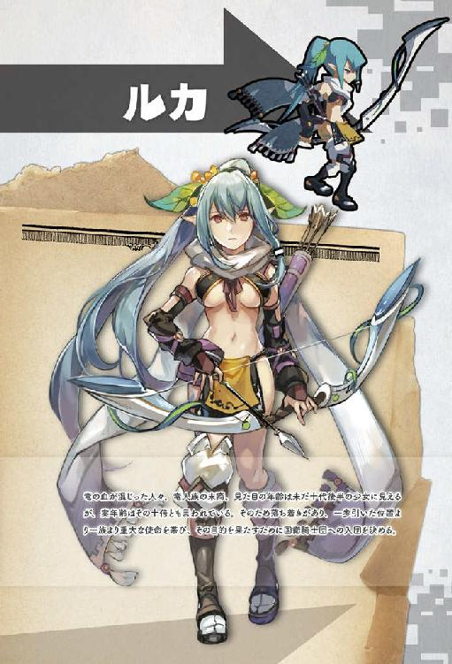
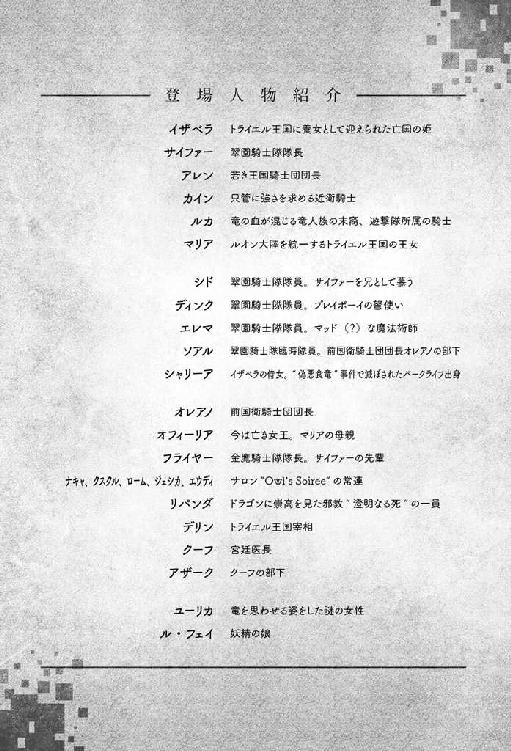

| 小説 ロード・トゥ・ドラゴン 上下合本版 | |
| アクワイア & 宮内継介 & 加納京太 | |
| (2015) | |

01：コロセウム───武闘大会準決勝
準決勝の開始が審判員より宣言されると同時、眼前で黒槍の穂が閃いた。
数多の闘士によって石のように踏み固められてきた土舞台。それが削れるほどに強い踏み出しから放たれた鋭い突き込みは、刹那を感じさせない無尽の連撃と化す。
（ッ、まるで暴風雪だ！）
碧髪の若き青年、サイファーという名を持つ剣士はかろうじて身をかわす。けれど、槍先がかすめただけで碧い髪は飛び散り、透き通るような白い頬は裂けて鮮血が舞った。
開幕から始まった黒衣の槍使いカイン・ヴェルガーによる全力の攻撃に、円形闘技場に集った観客たちは思わず腰を浮かせ、声を上げた。その声に後押しされるように、黒の戦士は加速する。
彼は速度の妨げとなる重い金属鎧は身につけていなかった。
無駄な贅肉が削ぎ落とされた、野生の獣を思わせる肉体を護るのは、なめして黒く染めあげた猪竜種の革を用いた薄地の肌着に、しなやかさと丈夫さを兼ね揃える同じく黒色のズボンとロングコートのみ。対ドラゴン用の装備の中でも動き易さを選んだものだ。
そのような超攻撃的なスタイルを持つカインの一撃一撃には、敵を貫き殺さんとする揺るがぬ闘志、即ち必殺の念がこめられており、刺突を鋭く狂暴なものにしている。
かく言うサイファーもまた重装とは言えなかった。黒いシャツの下に着込んだ鎖帷子に、前腕と脛を護る鉄甲、そして鉄の楯。いかに負傷をせずに勝ち上がるかが重要なトーナメントにおいて、彼らの装備は勇敢とも無謀とも取ることができた。
武器は刃を潰された訓練用のものとなっているが、まともに食らえば無事では済まない。
肉に食い込んだ槍先は容易く筋肉を抉り、骨を砕いて内臓をも損傷させるだろう。その瞬間に勝負は決する。いくら治癒の魔法術師が控えているとはいえ、下手をすれば死さえありうるのだ。
「どうした、受ける一方か！ ならば、これはどうだ！」
カインは連続突きで勝負をつけられないと見るや、攻撃に変化をつけてくる。
突きと見せかけて胴を薙ぎ、脚を掬おうと地面すれすれを払う。そのまま体を回し肩から袈裟に斬ってかかったと思えば、手の中で槍を回転させ威嚇とも撹乱ともとれる妙技を見せた。更には地面に突き立てた槍を蹴りあげて、土礫を浴びせてくるという荒業までも駆使してくる。
（さすがは優勝候補の一角、一筋縄ではない！）
荒々しくも精錬されたカインの動きにサイファーは唸った。
騎士の家に生まれた子息たちが訓練で身につけるようなお行儀の良いものではない。相手を戦闘不能にすることで勝利とする、死と背中合わせの領域に踏み込んだものだけが獲ることができる業だ。
一体どれほどの死線を越えてきたと言うのか。大会資料によれば年齢はサイファーと同じ十七とあったが、その人生が平穏なものでなかったことは想像に難くない。
速さと重さを兼ね揃え、容赦なく急所に狙いをつける驚異の攻撃。それを一方的に受け続けているサイファーの姿を見て、観客たちは黒い槍使いが圧倒していると信じていた。されどそれは素人が抱く感想にすぎない。歴戦の勇士や、大会を勝ち残ってきた参加者、そして一方的な攻撃を繰り出すカインからしても、優勢を感じることはできていなかった。
攻撃のバリエーションに変化を加えてもサイファーが浮き足立つことはない。槍に対して不利とされる剣を扱いながらも、冷静に、そして器用に攻撃を捌き渡り合っていた。
一向に崩れない碧い剣士に、むしろカインの方が焦りに近い感情を抱くほど。
（悪いね。これまでの君の戦いから、予測はできていたんだ）
最初の内こそ、観てきたものと実際に受けてみる攻撃との感覚の違いにサイファーは戸惑いをみせたが、誤差は既に修正されている。
突き出されてくる点の攻撃は上半身の小さな動きで、両断しようとする線の攻撃は身軽なステップで回避しながら、サイファーは冬の湖を思わせる透き通った碧眼を通してカインの観察を続けた。
右の腰だめに構えられた槍。
それを絶妙な力加減で握り締める右手。
狙いがぶれぬようにと支える左手。
回転することで爆発力を生む肩と腰。
小さなステップを用いて距離を詰めようとしてくる脚。
そしてこちらの急所を睨みつける深い闇色の双眸──
サイファーは穂先だけを目で追おうとはしない。渇いた地面から巻き上がった土煙に孔が穿たれる頃には、もう回避行動は間に合わない。そのため相手の一挙手一投足から先の攻撃を予測していく。
槍の軌道が描かれるであろう見極めた先へ、右手に構える訓練用の片手剣を向けた。
僅かに、しかし確かに操ることで自分を害そうとする槍を弾く。受ける度、金属同士のぶつかり合う渇いた甲高い音が鳴り響いた。左腕に楯を装着しているが、それは可能な限り使わない。視界が狭まり、相手の姿が見えなくなってしまうためだ。
（......大丈夫、見えている）
ひとつ攻撃をかわす度に落ちつきが取り戻され、サイファーの呼吸が整っていく。カインにのみ向けられていた視野が次第に広がっていき、取り巻く戦場全体の情報までが吸収されていった。
今、自分たちが立っているのは、
王都にある巨大な闘技場の踏み固められた土舞台の上。
開始位置である中心点よりやや後退した場所にいる。
壁までの距離はまだ十二分に余裕があるので、回避は余裕をもって行える。
天井がないために素通しとなっている空は雲ひとつなく晴れ渡っていた。
降り注ぐ初夏の日差し。
朝から行われている大会も二戦目となり昼が近づいてきていた。
暑いと感じるほどではない。
しかし、汗で柄を握る手が滑らぬよう注意はするべきだろう。
高い位置にある太陽が逆光となり戦いの妨げになる心配もなさそうだ。
そして、槍が空を貫く鋭い音の合間。
燃え盛る炎の如き歓声が雪崩れ込んできている──
「集中しろ、集中！ 守ってばかりじゃ勝てねぇぞ！」
自然と脳内で整理されていく情報の中、喧騒に混じってハッキリと聞き分けられた無責任な野次に、サイファーは心の中で苦笑する。一方的な受けに回っている姿を不甲斐ないとでも思われたのだろう。
だが、サイファーからすれば今ほど集中している時はない。
観客席を埋め尽くす人々の顔まで見分けられそうなほど、神経は研ぎ澄まされていた。まるで意識が空飛ぶ鷹に乗り移り、自分の姿すら鳥瞰できているような気さえする。
それゆえにカインの攻撃パターンの急変に戸惑うことはなかった。
顔の中心、鼻と口の間にある人間の弱点のひとつ〝人中〟を狙う突きが、突如として残像を残し姿を消す。寸前まで眼前にいたはずのカインの姿がいなくなっていた。
二人の戦いを食い入るように見つめていた観客や、目の鍛えられた審判員ですら一瞬何が起きたかを理解できずうろたえる。しかし対戦相手の動きを目だけでなく全身で感じ取っていたサイファーだけは、迷うことなく楯を頭上へと構えた。
その判断は誤ってはいない。大きく跳躍したカインは空中から槍を振り下ろそうとしていた。だが、ただ振り下ろそうというのではない。
──ゾクリ。
楯の向こう側で黒色の闘気が大きく膨れ上がった。魂より導き出された力が収束しているのを感じ、サイファーもまた咄嗟に楯へと闘気を込める。
「黒竜牙ッ！」
間一髪、腕より伝わった碧い力が薄い膜のように楯を覆った瞬間、カインの雄叫びが聞こえたと同時、強烈な一撃が振り下ろされた。
「くうっ！」
楯と槍がぶつかり合い激烈な衝突音が響く。
ビシリッ。サイファーの足元を中心に、堅い大地へとヒビが入った。楯を装着する腕に強烈な衝撃が響き、痺れは背を通じ足の裏にまで至っている。まるでドラゴンの顎門に食いつかれた時のようだった。気を抜けば身体ごと圧し潰されるだろう。
だがサイファーは歯を食いしばり耐え抜くや、逆に頭上を睨みつける。
そして全身の痺れが消えきらない内から、足へと力を込め直し、膝のバネを用いて楯の向こう側にいる敵を雄叫びごと弾き飛ばした。
「させるものかぁっ！」
「チイィ......ッ！」
敵の奇襲を凌いだことに気を休めることなく、サイファーは体の向きを反転させ剣を構え直す。隙あらばイニシアチブを奪い返そうと思ったのだが、カインもまた並の猛者ではない。着地と同時に槍を突き出しサイファーが踏み込むのを阻止していた。
（やれやれ、こいつは骨が折れそうだな）
一瞬の静寂。直後会場は一層大きな歓声で沸き立った。
「ねえ、見た？ イザベラも今の見たわよね！ すごいっ！ すごいすごいすごいわっ！」
貴賓席よりオペラグラスを用いて競技場を観ていたその少女は、感動のあまり豪奢な座席より腰を浮かせていた。カールを巻いた上品な桃色の髪の毛がふわりと跳ね、雅やかな甘い香りを辺りに舞わせる。
それだけならばかろうじて赦されようが、マリアの昂った感情は隣の席に座る少女イザベラ・Ｍ・ディヘイティアの肩を掴むやガクガクと揺すりだした。
視点が定まらず、後頭部の高い所でひとつに纏められた金の髪の毛がふらふらと揺れるのに、イザベラは耐えきれず渋面を作ってしまう。
仕立屋にあつらえてもらったばかりの、たくさんの赤いリボンで飾られた翠緑の可愛らしいドレスが破れてしまいそう。というのもあるが、それよりも何よりもマリアの行動に苦言をひとつ。
「......マリア。少しは自分の立場を弁えたらいかが？」
「大丈夫よ。貴賓席は個室だし、トマスとマーティンが目を瞑ってくれれば」
背後の入り口付近で無言のまま直立している二人の衛兵へ、マリアは「ね？」と可憐に微笑みかけた。目を細めるだけで兵士たちは何も口にはしない。代わりにイザベラが彼女の頭を小突く。
「こら。一国の王女ともあろう人が家臣に不誠実を強いらないの」
「そんなことしてないもん」
クリーム色をしたドレスのボリュームあるスカートをキュッと握りつつ、可愛らしくつんと顔を背ける仕草だけを見たら、マリアが大陸を統治するトライエル王国の次代を担う第一王女マリア・ルナ・トライエルとは誰も思うまい。だからこそ、このような姿を臣民に見せないためにもイザベラは口を酸っぱくする必要があった。
「それにね、目の良い人が向かい側の席にいたら見られてしまうわよ。だから、観戦するにしても品格というものを忘れずに──」
「あーもう、お姉さんぶって堅苦しいこと言わないでよ。年に一度の武闘大会の最終日くらい、立場を忘れて楽しませてってば」
「お姉さんぶるつもりはないけれど、実際に私の方が二歳年上だわ」
つんと澄まし顔で言い返すと、マリアはうっと言い淀む。
「それにあなたったら、大会の予選だって御稽古事を抜け出して、お忍びで観戦に来ていたじゃないの。つき合わされた私の身にもなってもらいたいのだけど？」
「だって、強い人同士が予選で戦ったりしたら、敗退した選手はもう見ることができなくなるのよ？ イザベラだって自分の騎士になるかもしれない人は、見ておきたいと思うでしょう？」
口を尖らせるマリアの姿に、イザベラは小さく肩を落とした。
さりとて義妹のはしゃいでしまう気持ちが理解できないわけでもない。
今年の参加者はレベルが高いと評判だ。特にこの準決勝第二試合は、開始から僅か一、二分の短い間に、互いの技と経験が凌ぎ合うという、今大会で随一と言って差し支えのない戦いが繰り広げられている。
イザベラもまた他の観客と同じように目を釘づけにされ、特に落ちつき払った立ち回りを見せる碧髪の青年へと目が引かれたのもまた事実だった。
程度があるとはいえ、マリアが高揚してしまうのも仕方がないことだろう。
イザベラは苦笑しつつ、肩を掴むマリアの指を優しく解いていく。
「そうね。それに、この試合は大会史に残りそうなほど凄いのも分かっているわ」
その言葉に、マリアはパァっと表情を華やがせた。
「でしょう！ カインの目にも止まらぬ連続突きもすごいけれど、それを捌ききったサイファーも見事だわ！ それに仕切り直し直前の一連の攻防！ カインは突きを目眩ましに、棒高跳びの要領でサイファーの頭の上に跳躍したのよ！ 前からの攻撃だけに集中していたら、きっと何が起きたか分からないまま頭を叩かれて勝負ありっ！ だけどサイファーは冷静にカインの狙いを呼んで、振り下ろしの一撃から頭を防御していたの！ こんな戦い、王国騎士の中でも隊長クラスでなければできないんじゃないかしら！」
その一言にトマスとマーティンの眉がぴくりと動いたのを、イザベラは見逃さなかった。
すぐにマリアに悪気がないことを伝えるため、気遣いの笑みを向けると、彼らは不平が顔に出たことを恥ずかしく思ってか殊更厳しい表情を取り繕う。
マリアと言えばイザベラと衛兵たちとの間でそんなやり取りが行われていたことに気づけぬまま、雄弁に語り続けていた。
「それでさっきの攻防でお互い力量を定め直したから、今は互いに次の一手をどうするか考えているところ！ 見えない刃が飛び交っている！ 私には分かるわ！」
競技場の選手へと目を向けてみれば、マリアの言う通り一転してじりじりとした牽制を繰り返す静かな立ち回りとなっている。しかしそれすらもマリアの目には激戦に映っているようだ。
「ああ、もうっ！ どうして私は出場してないのかしら！」
「あなたの得意分野が癒しの魔法術だからでしょう？」
「......冷たいわ。もう少し違う言い方をしてくれてもいいのに。でも、そうなのよね。お父様から受けついだ癒しの力に不満はないけれど、どうせならお母様みたいに先陣切ってドラゴン相手に立ち回れる剣士になりたかったわ」
椅子の脇に立てかけてある、大きな黄色い宝珠のはめ込まれた魔法術用の杖を見て、マリアは物憂げに目を細める。
今は亡き彼女の母親、前女王オフィーリア・クレッセント・トライエルは勇猛な剣士であり、稀代の竜殺しであった。
ドラゴン──大木のような腕と、鋼鉄をも易々と切り裂く爪、城塞を噛み砕く強靱な牙、そして背には翼をはやした、爬虫類に似た巨体を持つ怪物。火や氷と言った自然の力を呼気として吐き出し、一瞬で多くの生物の息の根を止める力を持つ。
人の歴史が始まったとされる七千年前の古来より、常に人に害する存在であったと歴史書には記されていた。トライエル王国のあるここルオン大陸も例外ではなく、恒常的にドラゴンの脅威に晒されている。
このような人類の宿敵とも言えるドラゴンより民を護るため戦い続けてきたのは騎士であり、オフィーリアもまた国王に見初められる前は騎士であった。誰よりも危険に近い場所へと率先して切り込み、討伐してきた王国の英雄である。
そして彼女はただ強いだけでなかった。誰をも愛し、誰からも愛されるその人望から、史上最年少で王国騎士団の団長を拝命するほどでもあった。
イザベラもまた、襲い来る凶暴なドラゴンの巨躯を華麗なる一刀の下に斬り伏せたオフィーリアの姿を鮮明に記憶している。
対して娘のマリアといえば、継いだのは父親からの魔法術ばかりで、母親の剣の才はお世辞にも継いでいるとは言えなかった。剣を手にしてもオフィーリアのように闘気を込めることはできず、その剣筋には流麗さの欠片もない。
猪竜種などといった、竜の名を持ちこそすれ野生の豚の延長戦にいるような怪物が相手ならば、彼女程度が習得している攻撃の魔法術で相手をすることも不可能ではない。しかし、燐竜種など狂暴で大型なドラゴンが相手となれば、もう足手まといにしかならない。
「兵ばかりを危険な場所に送り出して、私ばかり安全な場所にいるのはいやよ」
そんな自分を歯痒く思ってか、マリアはしゅんとした。
沈み込んだ彼女の手の上に、イザベラはそっと自分の掌を重ねる。
「剣は得意でなくても、あなたはオフィーリア様によく似ているわ。その優しさと治癒の力があれば、皆の支えにはなれるはずよ」
「剣の才能も欲しかったわ」
不満気に言いつつも、マリアは瞳を綻ばせている。それを見てイザベラも優しい微笑を浮かべた。
「た・だ・し。オフィーリア様は、ちゃーんと時と場所を弁えていらしたからね？」
「あっ、見て！ 動きそうよ！」
最後に姉として言うべきことを言ったイザベラだったが、マリアにさらりと聞き流されてしまう。再び戦いにかぶりついてしまう義妹の姿に、イザベラは胸元に差した白いスズランのコサージュをいじりながら天を仰ぎ、深い溜息をついた。
剣と槍が幾合も交わり、赤い火花を散らす。
短い静寂の後、カインとサイファーの戦いは試合開始直後に戻ったかのような展開を見せていた。違うのは、実際に刃を交わした経験から戦い方に修正を加えたことと、お互いの生傷が増えているということだ。
特にカインは、シャツやズボンで見えないものの、その内には多くの打撲傷を隠している。手数で負けようとも、サイファーによる隙をついた反撃は的確であった。
息を荒げるカインをサイファーの涼やかな瞳が見つめる。その目に油断の色はない。
膠着した空気を打ち払わんと、カインが槍を大きく横に薙ぐ。敵の胴を両断しようとする、身体全体を回転させながらの勢いある攻撃。だがそのような大振り、サイファーからすれば余裕を持って後ろに飛んでかわせるものだ。
敵の背が露わとなっていた。これは好機。着地するや前に踏み込みたくなる。が、サイファーはそうしない。彼の脳裏によぎっていたのは強烈な違和感だった。
見た目の攻撃スタイルに反してカインは猪武者ではない。冷徹なる狩人の一面も持つ。なればと瞬時に判断を下した。
（このタイミングで、隙の大きな技を打つ必要性などない。とすれば！）
攻撃が罠であると読んだサイファーは、しかし自ら足を踏み込ませる。地を強く叩いた左足を軸に、身体を独楽のように回転させた。瞬間、大気が断たれる音が響く。サイファーのいた場所を下から伸び上がった槍が切り裂いていた。
「これも避けるか！」
変則的な攻撃を避けられて、カインは狂喜にも似た感嘆を見せた。
「読んでいるさ！」
冷や汗ものの駆け引きに勝利したサイファーは、止まらない。縦に描かれた槍の軌跡に沿いながらカインの懐へと踏み込んでいく。しかしカインも抜け目がない。
「強者ならば喰らってやる！ お前も俺の糧となれ！」
槍の遠心力を利用して後ろへと宙返りをすると、サイファーから距離を取ろうとする。──が、サイファーはさせない。
楯を前面に構えながら、低い姿勢で距離を更に詰め、剣の射程距離にカインを捉えた。
カインもまたそのことをいち早く認識する。着地と同時、サイファーの狙いを妨げる牽制を放とうとした。それが出来ると彼の瞳は雄弁に語っている。しかしカインの口から上がったのは驚愕の声だった。
「......なっ？」
ガクリとバランスが崩れた。地に着いたカインの足が沈む。
否、着地した場所の地面が抉れていたのだ。前の試合かそのまた前か、会場の整備が疎かになっていたのだろう。
「読んでいると言った！」
サイファーが叫ぶ。だがカインも諦めはしない。
不完全な体勢ながら膂力だけを持って、槍を無理矢理前へと突き出してきた。楯を突くことができれば相手の突進力は止まり、再び仕切り直しにできると踏んでの行動だろう。
（......ここだッ！）
されどサイファーは楯と槍とがぶつかり合う瞬間、更に身を低くして、上へと傾けた楯をかち上げた。澄んだ音が響き、カインの腕が弾かれる。
「ッ、くそっ──」
直線の力は強ければ強いほどに、ベクトルの違う力には弱い。腕ごと穂先を天に跳ね上げられてカインの表情が再び驚愕に歪んだ。その無防備となった左肩口へと、サイファーは鋭気の籠められた一撃を振るう。
カウンター気味に入った一撃はカインの強靭な筋肉の鎧を通し、鎖骨にまで達した鈍い感触をサイファーの掌へと伝えてきた。
「──ッゥアア......まだだァッ！」
だがカインは吼える。
これまでの対戦相手であれば十分決着に至る一撃であっても、彼は崩れない。
それどころか、槍を横に薙いできた。
「っ！」
「クぅああああぁぁァァァッ！」
ドラゴンの尾によるぶん回しを受けた時のような衝撃が、逆にサイファーの身体を壁際まで弾き飛ばす。引き締まっているとはいえ、細身のカインの体躯の一体どこに、これ程の力を秘めているというのかと吹き飛びながらサイファーは目を見開く。そしてそれはカインも同じであった。
「......これも防ぐか！」
「まともに受けたら、こちらの頭が砕かれていただろうね」
受けた威力に抗うことなく地面を滑り、立ち上った砂煙の中から姿を現したサイファーは楯を構えていた。槍は彼の身体に届くことなく防がれていた。
とはいえ、それも紙一重の結果にすぎない。防御が間に合わなければ与えたダメージ以上のものを受けていただろう。サイファーは、改めてカインとの距離を取った。
（王手、竜取り......ならず、か）
決着をつけることはできず、予想外の反撃を受けたとはいえ、ダメージを考えれば圧倒的なアドバンテージがサイファーにある。
鎖骨は砕けていないまでも、ヒビは入っていると考えられた。カインの左腕は痛みに耐えて震えており、槍のウェイトは右に多くかかっている。本来ならば追撃の好機であろう。
しかしサイファーは慎重さを失わない。
（今、僕は壁を背にしている。それに......）
こちらを睨めつける闇色の瞳から感じる不気味な気配。
そしてサイファーを壁際から逃すまいと牽制気味に突き出された槍は、先程までと打って変わって冷え切っていた。
（まるで手負いのドラゴンだな）
傷を負った野生の獣ほど恐ろしいものはない。生存という純然たる目的のためだけに、虎視眈眈とこちらの命を滅ぼそうとしてくる。
そのような野獣と同じく、今のカインは驕りを完全に放擲していた。研ぎ澄ませた殺意が槍先の一点へと集中している。むしろサイファーが気を緩めれば、その一刹那をカインは逃さないだろう。
この距離はサイファーにとっては不利であり、カインにとっては必殺の距離であるが、無理はせず今の状況に甘んじる。静かに呼吸を整え、集中し直していった。
（大丈夫、焦ることはない）
サイファーは用心を怠らぬままに、相手との距離、今いる位置、そして自分が繰り出せる技などの情報を、短時間で改めて整理し直した。
そして集めた手札を元に、次の一手を想像していく。
自ら踏み込む場合、カインが焦れて隙を作った場合、逆に不意をつかれた場合......その中で、サイファーが最適と考え選び出した解は。
（危険を冒してでも仕留める！）
突き出された槍に合わせ、前へと進み出る。
その動作はあまりに自然であったため、これまでの戦い方からサイファーが慎重派だと思い込んでいたカインや観客達の意表を突いた。そして一瞬でもカインを戸惑わせることができれば、サイファーにとっては十分であった。
『手負いのドラゴンは難敵だ。
しかし臆せず首を狩れ。
さもなくば死するは己だぞ、サイファー』
脳裏に蘇る父からの教えのままに、旋風と化したサイファーはカインに近接していた。
「はあああああッ！」
彼の姿勢が正される前に、先程叩きこんだのと同じ場所へと追撃を食らわす。
剣から手に伝わってくる衝撃は甘い。威力を逃すため、カインが反射的に後ろに跳んでいたためである。だが、理由はそれだけではない。
「フェイクだと......ッ？」
「気づいたところでもう遅い！」
自らの失態に気づいたカインの表情が悔しさに歪んだ。
既にサイファーは二撃目、返す刀で首薙ぎの体勢に入っている。
（信じていたよ！）
直接刃を打ち合わせた者の間に芽生えた奇妙な信頼感の賜物だ。防ぎきれないと判断すれば、カインならば跳んで凌ぐであろうとサイファーは信じ、果たしてその通りとなっていた。
「その首、取った！」
このままいけば防御よりも早く刃は届く。
空中で不自由な体勢であるカインは受け身の取りようがない。
多少強く打ったところで優秀な治癒魔法術師が治してくれるだろう。
決定打を食らわせるため、剣を持つ手に力を込めようとしたサイファーの、広い視界の中──
その目にプラチナブロンドの輝きが映った。
「っ......！」
カインの背後、向こう側。
数多く見える観客たちの中に、ただひとつ。
小さくも見間違えるはずのない黄金の輝きを彼は見てしまった。
観客は大陸中から集っている。金髪の女性などありふれている。けれども違う。
その場所が諸王国の貴族や王族のために用意された席であり、そしてそこには肖像画で何度も見たことがある王女の姿があるとなれば、間違いはない。
（何故、武闘大会などに......！）
ドクン、と、サイファーの心臓が跳ね上がり、息を詰まらせた。
それはほんの僅かな惑いであったが、カインが体勢を立て直すに十分な間を与える。
「ガアァアアアアアァァッ！」
地に足をつけるや、カインは怒りに狩られた突撃を放った。
右腕だけで槍を抱え込み、全身を一本の槍と化させたかのような一撃必殺の突きが迫る。
大地を蹴り出した脚力だけでない。右腕がさらに突き出される。二段目の加速が乗り、闘気に黒く渦巻く槍はサイファーとの距離を一瞬で埋めた。
しかしサイファーも、かき乱された精神を収拾させていた。
（今は目の前の、この男を！）
槍が到達する寸前、身体を左に沈み込ませる。
一瞬遅れて、右の瞼に焼けるような痛みが走った。痛みに右目は封じられるが引き換えに、カインの背面、死角へと潜り込んだ。
（この距離ならば！）
碧い剣閃が孤月を描く。がら空きの胴体、右腹部へと、サイファーの魂が込められた一撃が叩きこまれる。カインの突撃する力が上乗せされた、完全なるカウンター。肋の砕ける感触がサイファーの手には伝わってきていた。
「ッ、ガハ......！」
カインの口から肺の中に溜まっていた空気と共に、赤く泡だった飛沫が吐き出される。折れた肋骨が内臓を傷つけたのだろう。ついに身体は揺らぎ、地に倒れていった。
（終わりだ）
サイファーは今度こそ勝負が決したと安堵する。
審判員がジャッジを下していないというのに、安堵してしまった。
平常時の彼ならば相手の敗北を確認するまで、決して気を緩めることはない。ドラゴンを相手にする際に、絶命を確認しないような愚か者ではないはずだった。
だが彼は、気を逸らしてしまう。
（......王女は、僕に気づいてしまっただろうか？）
貴賓席にいる、王女へ向けて。
それ故に、背後で膨れ上がった殺気を感じた時には、もう手遅れだった。
「負け......られぬのだ、俺はぁッ！」
「......ッは！ ......あ............」
サイファーの肝臓へと石突が抉りこまれている。
執念凄まじく、カインは未だ二本の足で地を踏みしめていた。
それを確認するのがサイファーの限界だった。
息が、吸えない。
意識が遠のき、世界が暗く、落ちる......。
「くはっ！」
顔面をもろに地面に打った衝撃に、サイファーの失われた意識が取り戻される。
幸いにも失神していたのは僅かな時間だった。だが、身を起こすことは許されない。
うつ伏せ状態の彼に降り注ぐ黒い影。そして槍が耳を掠めて突き立てられる。
眼だけを動かし頭上を見れば、槍を支えに立つカインの姿があった。満身創痍でありながら、その瞳の奥で燃える黒き闘志は聊かも揺らいではいない。
「......貴様の負けだ」
敗北の宣告を下したカインは、槍を持ち上げるとサイファーの右手へと突き落とした。
「ぐああっ！」
甲が砕け、反射で開かれた手のひらから剣が離れる。
それを見て、審判員が叫んだ。
「じゅ、準決勝勝者、カイン・ヴェルガー！」
「うおおおおおおおおおっ！」
勝ち名乗りをあげられたカインが吼え、刹那、波が引いたように静まり返っていた観客たちが一気に爆発した。会場全体から割れんばかりの歓声と拍手が勝者へと降り注ぐ。
「はぁっ......はぁっ......はっ......」
サイファーの頬に当たる地面は冷たく、口から溢れる荒い息が妙に耳へと残る。
（......負けたのか）
それを頭の中で言葉にした瞬間、空虚だった心にどっと悔しさと怒りが雪崩こんでくる。
彼を送りだしてくれたツァベックの町の皆には「善処を尽くす」と口にしつつも、本当は「優勝をしてみせる」と心に誓っていた。
剣の腕を認められ、王国騎士となり王女の為に剣を捧げるのだという幼き頃からの誓いを果たすために、今日まで邁進してきたつもりだ。「実力は十分だ」と町を訪れた騎士たちには保障され、自信を持って王都へやって来た。だと言うのに。
その結果が、地に倒れ伏し、顔を上げることすらできないという情けない姿だ。
（井の中の蛙にも程がある。それに......）
王女がすぐそこで見ているというのに、このような体たらくを見せてしまった自分への怒りは、そう簡単には収まらない。
かといって、いつまでもこのまま倒れているようでは恥の上塗りになってしまう。
サイファーは内心で渦巻いている忸怩たる思いを呑みこむと、痛みと吐き気を堪えつつ身体を起こしていった。
「..................」
（ん......？）
ようやく膝立ちとなったサイファーの前に、黒いブーツが現れる。
顔を上げれば、勝者として賞賛を浴びていたはずのカインが再び戻ってきていた。
（健闘でも讃え合おうというつもりだろうか？）
しかしこれまでの試合において、カインが敗者を賞賛するような記憶をサイファーは持たない。それに見下ろす彼の瞳の中では、冷たい炎が渦巻いている。友好を深めるのが目的でないことは明白だ。
不思議に思いながらカインを見上げていると、彼は一言、こう吐き棄てた。
「信念無き貴様の剣で、この俺を斬り伏せられると思うな」
脂汗の浮いた顔を不機嫌そうに歪め、苛立ち気にさっさと競技場から去っていく。
言葉だけを聞けば敗者を貶めるようなものに聞こえた。けれどもサイファーには、それだけとは思えない。サイファーだけでなく、自分自身へも向けられているような......気のせいかもしれないが。
そのため、不思議とカインに対して怒りの感情は湧かなかった。
ただ、その土に汚れ黒と白の斑となった背中を見つめながら小さく呟く。
「......信念か」
立ち上がらないでいるサイファーの姿に、大会運営の人間は治癒魔法術師か担架の必要があるかと尋ねてきたが、両方とも丁重に断りようやく立ち上がった。
そして敗者の健闘を讃える惜しみない拍手に感謝しつつ、自分の足で競技場を後にする。
02：敗北の味
競技場を囲む壁は高く、頑丈だ。
これは王都を護る城壁と同じ素材、石材とスラグ──エアキア火山の岩と石灰、それに秘伝の鉱物を混ぜた物でできており、闘気の込められた武器や猛獣の爪牙であっても弾いてしまう。それこそドラゴンの突進や火炎の息にすら耐えうるだろうと、予選期間中に出会った職人がサイファーへと自慢げに語っていた。
「最後までよく戦った！」「良い試合だったぞ」
三メートル近い高さの上からは、観客の拍手や声が降り注ぐ。けれど労るようなものばかりではない。
「なんで最後に油断した！」「てめぇのせいで今月の生活費がパァだ！」
武闘大会の持つ賭け事という側面は、敗者へと行儀の悪い罵声をも降り注がせる。そしてそれは壁の上からだけではなかった。
快いとは言えない感情の込められた視線は、壁に開けられた大小の覗き窓より向けられている。その多くは一部特権階級の好事家による「より近い場所で戦いを観戦したい」という要望を受けて作られたものだった。
勝手に期待をかけ、勝手に裏切られて、勝手に落胆する観戦者に対し、サイファーは不快なものを感じずにはいられない。しかしそれ以上に敗北した自分に恥じ入り、扉のある壁際まで急いだ。
最も目立つ扉は、壁よりもさらに高さを持つ鋼鉄の扉である。これは人と猛獣を戦わせるエキシビジョンマッチなどで使われ、巨大な獣を運び入れるために使われた。それを除けば全て人間用のサイズであり、その内のひとつが選手の入退場に使われている扉であった。
係の者が開けてくれた金属で補強された木製の扉をサイファーはゆっくりと潜る。その先には、選手控室に続く掘り下げ式の階段があった。
出場選手は二人とも、入退場時にこの扉を使う。
即ち競技場に出る時は同等でも、去る時には勝者と敗者に分かれるということだ。
灯りが少なく圧迫感を感じる階段を前に、伝承に聞く迷宮というものは、きっとこのようなものであろうとサイファーは漠然と考えた。
勝ち上がってきた時と同じ場所であるにもかかわらず、今のサイファーにとってこの先は地の底、それこそ地獄にまで続いているように思える。沈み込んだ気持ちが、踏み出す足を重たくしていた。だがそれもすぐに霧散する。
「兄さん、大丈夫っ？」
切迫そうな表情をした少年が、彼を出迎えてくれた。金の混じった赤い髪、短く刈り揃えられた直毛はさらりとなびき、不安げに揺れる緑の瞳を覗かせた。
「ああ。この通り大丈夫さ」
「どこが大丈夫なもんか。おれ、心配だったんだよ」
サイファーを「兄さん」と呼び、慕ってくれているこの少年の名はシドと言う。
彼が育った町の町長の息子であり、大切な幼馴染でもあった。
童顔であることやサイファーを兄と慕っていることから、年齢より若く見られてしまうことが多いのだが、年はサイファーと同じ十七である。
少しでも男らしく見えるようにと無理に使うようになった〝おれ〟という一人称は、まだまだしっくりときてはいない。けれども、初めて会った頃に比べて逞しさは増し、今ではサイファーの相棒となるほどの実力を持っている。
（わざわざここまで来てくれたのか）
シドは試合で受けた傷の数々を見て、今にも泣きだしてしまいそうだった。昔から変らないその表情を見て、心配をしてくれている彼には悪いと思いつつも、サイファーの心は安らいでいく。
「故郷に優勝器を飾ることはできなかったよ」
「何を言ってるのさ、ベスト４だよ？ 誰にも文句は言わせないさ」
大会に優勝した者には王家より特注の飾りの武器が贈呈される。それを持ち帰られることは、選手を送り出した故郷にとって誉れとされていた。
息子も一緒に出場すると言うのにサイファーの優勝を信じて疑わなかった町長が、準決勝で敗退したことを知ったら、きっと深く肩を落とすことだろう。
「それより早く治療室に行かないと！」
シドが貸してくれた肩を、サイファーは遠慮なく借りた。そして階段を下りていくと、階段の下、次に出場する選手たちが控えるために用意された〝覚悟の間〟と呼ばれる小さな広間から人の気配を感じる。
次の試合は午後になるため選手のはずはなく、捨て台詞を残して先に競技場を後にしたカインが待っていてくれているとも思えない。
疑問に思いつつ降り切ると、そこで彼らを迎えたのは親しみある笑顔の数々だった。
「お疲れさン！ いい試合だったわヨ！」
「後一歩及ばなかったですけれどね。いやはや至って残念極めて無念でございますです」
皮肉気でありながら厭味が感じられない軽口を叩いてきたのは、露出度の高いビキニアーマーを来た高身長の褐色肌をした女戦士と、まん丸どっしり低重心をした置物のような男であった。
若干南西訛りのある女戦士の名がターニャル。丁寧すぎて逆におかしな言葉使いになってしまっている丸い男の方がハンクスと言う。横に並ぶと凸凹コンビである彼らは、何を隠そうトーナメントでサイファーに敗れた選手たちであった。
他に並ぶ六人の顔ぶれも、同じように惜しくも敗北してきた大会参加者である。男性が四人に、女性が二人。これは武闘大会へ出場した男女比率とほぼ同じであった。
武闘大会に詳しくない人間は、参加する女性の数に驚くことが多いが、それは何ら不思議なことではない。素地として肉体が強いにこしたことはないが、戦いにおいてより重要とされるのは、魂より導き出される力──〝特出能力〟であるためだ。
スキルの中で最もポピュラーなものは魔法術だが、肉体を強化するような力も存在する。
戦いの最中カインやサイファーが使っていた色のついた闘気もまた、その内のひとつだ。
剣に闘気を纏わせ威力を上げる能力、普通ならば届くはずのない遠距離の獲物を矢で狙撃する能力、楯を強化しドラゴンの爪牙を防ぐ能力など、世界には多様なスキルが存在していた。これらスキルの習熟に男女の差はないため、武闘大会に参加する男女比率が大きく離れることはない。
ともあれ、そんな大会に敗れた者たちがここにいる理由は、至極簡単なことであった。
決勝トーナメントまで残った選手は、敗退した後も、競技場を囲う壁のすぐ内側に用意された参加者用観覧席を利用する権利を得られるためだ。
その観覧席より覚悟の間までは通路一本ですぐに来られることもあって、試合後にこうして選手を出迎え健闘を讃えたり、そっと見送ったりするのである。
但し敗者はセンシティブになっているため扱いにはデリケートを要するのだが、今回はシドが一緒ということもあって、彼らは声をかけやすいと考えたのだろう。
わざわざ年少の人間を、しかも自分を破った相手を気遣いに来てくれるのだから、人の良い方たちだとサイファーは思う。
「恥ずかしいな。負けるところを見られると言うのも」
「......あー、本当は負けたヤツに声をかけるのもどうかと思ったんだけどネ。シドが行っちゃったし、ちょっと心配になってサ。ま、満身創痍とはいえ二本足で歩けてるンだから、大事はないみたいだナ」
自分を負かした相手だというのに、ターニャルもハンクスも大事がないと知って安心したように目を細める。
「しっかし、アタシたちに勝っておいて負けルなんてサ！ ......と言いたいところだけどネ。カインはバケモンだヨ。普通、アンタのカウンターを食らったら、立ち上がれないってーノ」
「全くもってターニャルの言うとおりですよ。一流魔法術師による治癒魔法術をかけてもらったと言いまするのに、まだまだわたくしの脇腹はズキンズキンいっておりますからね」
ターニャルの言葉にハンクスは頷き、どこからどこまでを脇と言えば良いのか分かりにくいでっぷりとした腹をさすってみせた。
どうやら彼らの目には、カインが最後の一撃に耐えきったことのみが敗因であると映ったようだった。それをサイファーは否定せずに心優しい者たちへ苦笑いで応える。
「僕も決まったと思ったんだけどね。油断したよ」
「バカだヨ全く。せっかくあと一歩だったって言うのに、慢心するからサ」
ターニャルの手が碧色の髪をくしゃくしゃと撫でる。くすぐったく思いながらされるがままになっていたサイファーは、ふと彼女たちの後ろに現われた金髪の青年と目が合った。
「やあ、いい戦いだったな！」
人好きのする清潔な笑顔と共に入ってきた彼の名は、アレン・バスティオンという。
今大会の下馬評では本命中の本命と言われている剣士であり、ひとつ前の準決勝第一試合では、一足先に決勝への進出を決めていた。
そんなアレンとサイファーたちは、参加者の中では年少組ということから控室などで言葉を交わすようになり、年が同じと知ってからは更に親しくしている。
いつも清々しく熱血漢なアレンをサイファーも好いていた。短い付き合いながら今では友と呼び合う程の仲だ。
だが、そんな彼の笑顔がいつもとは違うように思えた。瞳は不信な色に揺れ、笑みもどこか繕われているような感じがする。訝しく思うサイファーの前まで来たアレンは、逡巡を見せた後、表情を厳しくした。
「......でも、最後の攻防はなんだ？」
（やはり、気づかれていたか）
他の者たちの目は誤魔化せても、アレンはそうはいかなかったようだ。
どう答えたものかとサイファーが口ごもっていると、アレンの方から切り出してきた。
「キミの剣は常識に捕らわれすぎて踏み込みが足りていない！ それじゃあ〝絶対帰還〟は果たせないぞ！ 騎士は無事に帰還して初めて任務の達成となるんだからな！」
信念に裏打ちされた熱い言葉がサイファーの胸に届く。
アレンの口癖、代々騎士を務めるバスティオン家に伝わるという〝絶対帰還〟の家訓を持ち出され、サイファーは何も返せなかった。
カインとの試合が本当の戦場だったなら、きっと自分は骸となり、今頃はドラゴンの腹に納まっているであろうことは、誰よりも彼自身が分かっている。
「お、おいおイ。死体に鞭打つようなこと言ってやんなヨ」
「いやいやターニャル。サイファーさんはまだ死んでおりませんから」
「いいんですよ。ターニャル、ハンクス」
サイファーは庇ってくれた年上の戦士に感謝しつつも、彼を制した。アレンは自分を認めてくれているからこそ苦言を呈してくれているのだと解っている。
「似たようなことをカインからも言われたよ」
「分かっているなら、いいんだ。ただ」
一呼吸置いて、彼は寂しげに目を伏せる。
「決勝で戦えると思っていたから、残念だよ」
「......すまない」
謝ると、アレンは首を振った。そして今度こそ本当の笑顔を見せてくれる。
「今度、一緒に稽古をしような！ 〝絶対帰還〟の本質を叩きこんでやる！」
差し出された手に、サイファーも安らいだ笑みを浮かべ手を伸ばした。
「ああ、約束だ......痛っ」
握手をしようとして、強い痛みに気づく。見れば手の甲が真っ赤に腫れていた。
「そうだ、槍で突かれたんだった」
「兄さん、治療室へ行こう」
慌てたシドに促され、サイファーは頷きつつも歩は進めずにアレンを見た。
「優勝しろよ」
「相手はキミに勝つような戦士だ。そう易々と約束はできないね」
一度笑い合った後、改めてサイファーは控室を後にした。
「よお。お前さんも負けたんだってな」
サイファーたちが治療室へと足を踏み入れると、寝台に横になっていた黒い肌の大男が声をかけてきた。
既に彼が結果を知っていることにサイファーは驚かない。大会の結果は誰しもが気にかけており、試合終了直後から王都中へとあっという間に広まることを知っている。
会場に足を運ぶ魔法術師の中には、遠く離れた人へと情報を伝えることができる遠話の魔法術を用いることで、試合の経過を遠方の友人へと逐一呟くような者もいると言うくらいだ。同じ会場内、特に選手の容体を気にしながら待機している救護班の詰め所に結果が届いていたところで不思議はなかった。
「前の試合でアレンさんに負けた人ですね」
耳元でシドがボソリと呟くのに、サイファーは頷いた。
彼の名前は何と言ったか。記憶を探る。
（確か......そう、ドミンゴだ）
名前を思い出したところで愛想の良い苦笑いを浮かべる。
「ええ、残念ながら」
「俺と同じだな」
ドミンゴは豪快に笑いはげ上がった頭をペチンと叩くと、二人に中に入れと顎で促す。
「あの、治癒の魔法術師はいらっしゃらないんですか？」
室内に目を巡らせたシドが尋ねると、大男はひょうきんに肩をすくめた。
「勝者が治療に来てくれないとかでな。決勝までに治さんと大目玉を食らうって、慌てて捜しに出払っちまったよ。そういうわけで残念だが、今ここに魔法術師はおらん......重傷なのか？ 担架は断ったと聞いたが」
「骨にひびが入ったみたいで。待たせてもらうことにしますよ」
「それじゃあ、冷たい水を用意してくるね。冷やさないと」
早速シドが慣れた様子で部屋に備えつけられた水場へと向かう。彼に感謝しつつ、サイファーは寝台に腰かけ待たせてもらうことにした。痛む右手をさすりながら、甲斐甲斐しくしてくれるシドの背中へ目を向ける。
壁際にある水場からは常に水が流れ出していた。地下水脈へと通じる管が通されており、新鮮な冷水が絶えず出てくるようになっているという。井戸から水を汲まずとも水を使うことができるとは、流石は王都だと感心したものだった。
木の桶に水が貯まるまでの間に、シドは床の扉を開けた。中からもわっとした白い煙が上がる。それを手で払うと地下へと潜っていった。しばらくして出てきたシドは肩を縮こまらせ「はー」と白い息を吐いている。その手には、おが屑まみれになった拳大の塊が持たれていた。
最初に目にした時、あの地下室が何なのかサイファーには分からず、魔法術師の先生に尋ねたのだが、その答えは水場に負けず驚くものだった。なんとこの部屋の床下には魔法術で作られた氷を保管する氷室があるというのだ。尋ねた時に一緒にいたシドはそれを知っていたので、サイファーの炎症を冷やそうと氷を取りに行ってくれたのだった。
水場で汚れを洗い流し、置いてあったアイスピックでもって小さく砕くと、水の貯まった木桶へと入れる。そして清潔な綿生地のタオルと一緒に手に持とうとし、踵を返して壁の棚へと目を向けた。何をするのかと不思議に思っていると、そこにある木盃に手を伸ばすと冷水を注いで、改めてサイファーの所へと戻ってくる。
「お待たせ。喉も渇いているでしょう？」
「ありがとう」
感謝の言葉を述べつつ、サイファーは受け取った水を一気に飲み干した。試合に酷使された体に、冷たい水が染み渡っていく。
（......本当に終わったんだな）
頭では理解していながらも実感することができていなかった気持ちが、不意に彼の中で落ちついた。すると急に気が抜けてしまい、戦いで受けた傷が痛み出す。
「それじゃ、水に手を浸けて」
シドに言われるがまま、サイファーは水桶の中に熱を持った右手を浸した。
冷たい水に一瞬だけ身体が驚いたものの、すぐに痛みを吸いだしてくれるような気持ち良さに包まれる。治療魔法術師が戻ってくるまでの応急処置としては十分だろう。
「鎧を外すよ」
膝立ちとなったシドが足の鎧を外し始めたので、サイファーは身を任せた。カチャカチャと音を立てながら鉄の防具が外されて、足は急に楽になる。続けて腕の防具も外し始めたシドであったが、出し抜けに言葉を漏らした。
「惜しかったね」
「仕方がないさ。実力が、届かなかった」
さっきはベスト４になれたのだから十分だと言っていたが、誰よりもサイファーを信じていたシドだからこそ、結果を残念に思ってくれているのだろう。
（期待を裏切ってしまったな）
単純に武技が劣り敗北したと言うのならば良かった。自分の気の迷いが敗因だとは、言い訳としても結末としてもお粗末すぎる。
「あ、あはは。まあ、二人ともベスト16には入れたわけだし。目標は達成ってことで！」
言葉を詰まらせたサイファーを見てシドが誤魔化すように笑った。
武闘大会の成績優秀者が得られるものは、戦士としての名誉や賞金の他に、騎士団への入団資格というものがあった。
一言で騎士と言っても、この国には大別して私設騎士と国衛騎士という二種類の騎士が存在する。私設騎士とは領主や富豪などにより雇われ、彼らの私財を護るために戦う者たちを指す。対して国衛騎士とは、トライエル王国に認められた上で国へと忠誠を誓った騎士の総称であった。
特に国衛騎士の、自己利益のためではなく弱き人々のために狂暴なドラゴンへと立ち向かう勇姿は、子供たちにとって憧憬の対象となっていた。そしてサイファーとシドもまた、騎士に憧れた少年時代を送ってきたのである。
しかし国を背負う国衛騎士ともなれば、入団するためには、数多くの審査と試験を突破する必要があった。特に身分と実力の保証の観点から、有力者からの推薦状が必要とされているために、門戸が狭きものとなっていた。
この問題に対し騎士たちも憂慮した。名もなき実力者が市井に埋もれることは、王国にとって損失となると考えたためだ。そこで導き出されたのが、武闘大会を利用するという考えである。これによって身分に関係なく、実力に自信さえあれば誰しもが騎士となる機会を得られるようになったのだ。サイファーたちはこの恩恵を受けて、見事国衛騎士となる資格を手に入れたのである。
「これで、あと少しで騎士になれるね！」
「と言っても、ベスト16で免除されるのは武芸の審査だけ。ベスト４だって適正審査はあるんだから、あまり羽目を外すような行動をしてはダメよ」
矢庭に闖入してきたのは、鈴を転がすような愛らしい声。誰だろうかと、声のした入口の方へと目を向けたサイファーたちは、揃って言葉を失った。
「毎年いるのよね、武闘大会で良い成績を残せばそれだけで騎士になれると思って、祝勝会なんかで馬鹿なことをしちゃう選手が。折角良い腕を持っているのに、もったいないったらありゃしない」
「こら、マリア。王女らしい立ち居振る舞いはどうしたの」
ただそこにいるだけにもかかわらず、圧倒的な存在感によって、無粋なこの場を華やがせる少女達が二人。
したり顔でいる少女は紛うことなく王女マリアであり、彼女を小声で窘めているのは王女イザベラであった。
何故、王女殿下が......お二人がここにいらっしゃる？
いや、それはいい。僕が詮索することではない。
今すべきは、何だ？ そう、礼儀を尽くすことだ。
先ずは自分から名乗らなければ失礼に当たる。
名乗る、名前......僕の名前はサイファー......──サイファー・ロンデオンだ。
大会を観にいらしたのだから、僕の名前は既に知られている。
それに名を知られることは最初から分かっていたことだ。
だから、名を名乗れ......！
サイファーは自分自身に言い聞かせる。頭は冷静だ。冴え渡っている。今、自分が取るべき行動が何か分かっていた。......なのに、いざ口を開こうとしても体が言うことを利いてくれない。止まれ、静まれ、落ちつけと命じるが届かない。
「に、兄さん」
その声にハッとする。対応に窮したシドが、助けを求めてこそりとサイファーを見上げていた。
（......そうだ。シドのことを町長から任されているんだ）
弟分が向ける小動物のような瞳に、サイファーは急速に自分を取り戻す。
とにかく先ずは呼吸を整えた。そして寝台から降りて床に跪き、恭しく頭を垂れる。
「ち、治療中のため、不躾な格好で失礼致します。私は武闘大会参加者のサイファー・ロンデオンと申します。貴方様は王女マリア様と、イザベラ様とお見受けいたしますが、このような場所で如何なされたのでしょうか？」
声が上ずってしまったが、過去の記憶を総動員して礼節の限りを尽くした応対をする。そんなサイファーを見て、シドとドミンゴも慌てて居住まいを正した。そんな彼らの緊張とは逆に、マリアは軽い口ぶりと共に室内をぐるりと見回す。
「こちらこそ、せっかく休んでいたところに、急に訪ねてしまってごめんなさい。ああ、貴方たちは激戦で疲れているのだから、楽にしていていいわよ」
そのようなことを言われたところで「では」と気を許せるようなものではない。サイファーは畏まった姿勢のまま、目を合わせることもできず待つしかなかった。
ベッドの近くまで二つの足音が近づいてくる。その爪先がつまらなさそうに石畳を蹴った。こつんという音。
「もう、面を上げて。上げなさい」
「は......はっ！」
窘めるような少女の命令口調に今度は抗うことなく、三人の男は揃って顔を上げる。宜しいと満足そうに頷くマリアの横で、イザベラは呆れたように小さく首を振った。
「ドミンゴ選手に、サイファー選手よね。ベスト４おめでとう！ 二人とも、ナイスファイトだったわ！」
マリアはドミンゴとサイファーを交互に見て、屈託のない笑顔を向ける。そしてシドにも気づき「ああ！」と手を叩いた。
「あなたの試合も見ていたわよ。試合中は兜をつけていたから、最初は分からなかったけれど......へえ、戦い方からもっとゴツイ顔を想像していたけれど、本当に可愛い素顔をしているんだ。トーナメント二回戦では惜しかったわね」
「か、可愛いだなんて。勿体なきお言葉」
感謝すべきポイントはそこではないだろうとサイファーは動揺したが、王女とこんな至近距離で接していて、心を乱さない方がおかしい。故郷の町にも可憐な少女はいたが、マリアのように洗練された美しさは別格だ。シドは顔を真っ赤にして心奪われたようにマリアを見つめている。
そんな隣のシドを気にしていたところ、ふとサイファーは視線を感じた。思わず目を向けてしまいそうになったが寸前で思い留まる。視線の来る方にいるのは、マリアの後ろで静かに立っているイザベラだ。サイファーは目を合わせることを嫌がり、頑なに動かずにいた。
「アレンとカインは......いないみたいね」
マリアが部屋をぐるりと見回す。
「ああ、アレンのヤツ......アレンは、治療を終えて控え室に戻っていき......戻っているのではないかと思われます。カインはどこに行ったか分からないようで、治療魔法術師のセンセイがたが捜しに行っちまい......行きやした」
「そっか、残念。決勝の前に激励したかったのに」
しどろもどろになりながらもドミンゴがどうにか説明すると、マリアは肩を落とした。どうやら彼女のお目当ては準決勝を勝ち上がった二人のようだ。
「......マリア。もういいでしょう？」
「えー、これからじゃない。決勝までは時間があるんだし、選手の生の言葉を聞きたいわ。準決勝は二試合とも白熱したものだったし、もっと詳しい話を──」
「残念ですけど、決勝までの時間には予定が入っております。それにそろそろ戻らないと、トマスたちが心配して探し始めてしまうわよ？」
マリアの袖をイザベラが引っ張った。マリア自身、駄々をこねていると自覚しているのだろう。無駄な抵抗はやめて素直に踵を返そうとして、サイファーの赤く腫れた手に目を止めた。
「そういえば治癒魔法術師はいないのよね」
「え？ ええ」
「だったら」
イザベラの手を振り切って、タタッと小走りにサイファーに近づいてきたマリアは、おもむろにしゃがむと彼の手に触れてきた。下々の者である自分よりも視線を低くされたこと、そして細くてひやりとした彼女の手の感触にドキリとし、思わず手を引こうとしたがマリアに引きとめられてしまう。
「じっとして」
彼女はサイファーの手首を掴み逃がしてはくれなかった。傷口の上に手をかざすと、静かに目を閉じる。
「癒しの息吹。再生を司りし春の精霊よ。我が魂の声に応えよ。傷ついた戦士へ、安らぎの時を再び......ヒール！」
その詠唱は、たおやかな吟詠のように耳へと心地の良さを与えるものであった。彼女の掌から生まれた温かな光がサイファーを優しく包み込むや、痛みが徐々に癒えていく。手の甲だけでなく全身が試合前の状態にまで回復していた。
「はい、おしまい。本職の魔法術師に比べたらまだまだだけど、水で冷やしているだけよりかはマシでしょう？」
「いいえ、いいえ！ とんでもございません！ もう痛みはなく、試合前と同じように動かすことができます」
掌を閉じ、開き、無事を強調する。
「王女様より賜りましたこの癒しのご恩、決して忘れは致しません」
「大げさね」
マリアは朗らかに微笑み、立ち上がってドミンゴを見る。
「あ、あっしは私は先ほど癒していただきましたンで......」
「おれも試合に負けたのは二日も前になりますから、大丈夫です！」
ドミンゴとシドがわたわたと首を振って遠慮をした。「そう」頷いたマリアの手首を、イザベラが今度こそしっかり逃げられぬように掴む。
「......もう、逃げないわよ」
「だといいけれど。皆さん、騒がしくしてしまい失礼いたしました。決勝まではまだ時間はありますし、ゆっくりと養生してくださいませ。では」
二人の王女が去って行く。治療室の扉が閉められ、ようやくシドとドミンゴは肩の力を抜いた。大きなため息を一様に溢れさせる。
「いやはや、びっくりしたぜぇ。まさかお姫様が二人していらっしゃるなんてな。マリア様は武闘大会通で、お忍びで観戦なさってるなんて噂を聞いたことがあったが、ありゃマジモンかもしれねぇなぁ」
「オフィーリア様の血ですかね」
シドの発言に「だろうな」と相づちを打ったドミンゴがベッドへと倒れる。緊張のしすぎで体力を消耗したのだろう。シドも床に尻をつけて足を投げ出した。
弛緩した部屋の中で、ただひとりサイファーだけは、真剣な眼差しで癒えた右手をじっと見つめていた。
（あの視線、気のせいでないならばイザベラ様のものに違いない。もしそうならば、彼女は何故......いや、あるいは......）
「──いさん、兄さん？」
「え」
肩を揺すられ意識を取り戻す。シドが訝しげにサイファーの顔を覗き込んでいた。
「どうかしたの？ ......そういえば、試合でも様子がおかしかった気がするけど」
「いや、何でもないさ。マリア様に癒しの魔法術をかけてもらったなんて、信じられなくてね。少し浸っていた」
「そうだよ。すごいことだよ！ ああ、怪我が治っていなければ、おれも魔法術をかけて欲しかったなぁ......」
「若いヤツはいいねぇ。オレなんざ、姫様に治してもらったりしたら、きっと緊張で余計に体を壊しそうだ」
ドミンゴの疲弊した言葉に、シドは「そうかなぁ」と首を傾げたのだった。
太陽が地平線へと沈みゆき、夜闇が王都を包み始める。冷えた大気は風となって街を往来する人々の肌を撫でていた。もうすぐ夏が来ると言えど半袖にはまだ早い。
されど煌々と灯された篝火は、昼のように闘技場通りを明るく照らし、人々の体も冷えるどころか熱を高めている。
決勝戦がいよいよ間近に迫っていた。
武闘大会にかこつけて商店組合が催しているお祭りは、今宵が最後ということもあり格段の活気を見せている。仕入れた商品を売り切ろうとする者たちに、明日には取り戻される現実の前に夢心地を楽しもうという者たちが、ごちゃ混ぜとなっていた。
人々は決勝の結果を予想してあれやこれやと熱論を交わし、街路に立ち並ぶ露店では酒や、歩きながら食べられるような手頃な料理を売りさばく。的屋の前には子供が群がって、親にオモチャの武器をねだっては、大会参加者の真似をしてごっこ遊びに興じている。
サイファーは闘技場までの道を歩きながら、そんな人々の姿を優しい瞳で眺めていた。
その彼の前で、ちゃんばら遊びに夢中になり前方不注意になっていた少年が転びそうになる。サイファーはさっと手を伸ばしその子供を優しく支えた。
「ほら、危ないよ」
「あ、ごめんなさい。ありがとうございま......ああっ、サイファー選手！」
サイファーを見上げる少年の目が、憧憬にキラキラと輝きだす。
「お、応援してました！ 準決勝、残念でしたね！ あ、これ、サイファー選手と同じ色の剣なんです！」
そう言って見せてくれたのは、確かに彼が剣に乗せる闘気の色と同じ碧色に塗装された木刀であった。なかなかどうして、商売人というものは子供心のくすぐり方を理解している。
「ありがとう。......でも、ごめんな。負けちゃったよ」
「ううん！ すごい試合だったって、みんな言ってます！ ぼくもそう思いました！ 騎士になったら、いっぱいドラゴン倒してくださいね！」
「うん、約束するよ」
ぱあぁっと顔を輝かせた少年と握手をかわし、送りだしてやる。父親と手を繋ぎ闘技場へと向かう彼の姿を、優しい瞳で見送った。そんなサイファーの横顔を見つめるシドは、まるで自分が褒められたかのように誇らしげだ。
「さすがは兄さんだね！」
「よしてくれ。恥ずかしいよ」
サイファーは軽く笑って流し、再び歩き出した。
人が集まっている所には、必ずと言って良いほど食卓があった。酒場の外まではみ出た席の数々には、男女問わず顔を真っ赤にした大人たちが集っている。
酒の匂い、料理の匂い、その中でも格別芳醇な香りが、サイファーたちの鼻をくすぐった。酒場の軒先で調理されている、猪竜種の丸焼きから漂ってきているものだ。全長三～四メートルはある巨体の頭から肛門にかけて、もはや槍と言うべき鉄串をぶっさし、肉焼き器を使って全身くまなく焼く姿は壮観で、見物客や肉を食べたい客でごった返していた。
「兄さん、何か買っていく？」
シドは尋ねてきたものの、鼻は肉の焼ける匂いにひくひくとさせ、その視線は既に釘づけになっている。香辛料をたっぷりと塗りたくられた肉は、火に焙られることで食欲を刺激する破壊力抜群の匂いを無差別に撒き散らしていた。美味そうな香りに釣られて肉汁したたらせる姿を目にしてしまえば、もうガードなどできるはずもなくシドのお腹はぐうぅと大きな音を鳴らす。サイファーも胃腸が活発化しているのを自覚した。
「しょうがないな。あまり無駄遣いはするなと町長さんには言われているんだけど」
「やった！」
多少の寄り道をしたところで決勝には間に合うこともあり、サイファーたちは列に並んだ。列は順調に消化され、順番はすぐにやってきた。サイファーは皮の小銭入れより銀貨を取り出すと、店主へとふたつ注文する。
料金を受け取った店主は早速背後で焼いていた肉へと包丁の刃を入れ、手際よく切り取っていった。それを小麦を焼いて作った薄いパン生地に乗せると、香草、そして特製のソースをかけて一緒に包み込み、二人へと手渡す。
それを受け取り、列を離れるや、隣のシドは早速パクつき美味しそうに咀嚼する。歩きながら食べるのは行儀が悪いと思いつつも、サイファーも立ち上るソースと肉の匂いに敗北し、パクリ。
一口頬張ると、口の中に脂の乗った肉汁がじゅわぁっと広がる。たっぷり時間をかけて煮込まれた濃厚なソースは甘みがあり、猪竜種特有の野趣溢れる強い味に負けないどころか、旨みを引き立たせている。
濃いばかりでは口の中でしつこくなりそうだが、一緒に巻かれた香草のシャッキリ感とピリっとした辛みのお陰で飽きることなく二口、三口と食べることができた。そのせいで、二人はあっという間に食べきってしまう。口の中に残った濃い味は、同じように途中で買った爽やかなレモンジュースで洗い流した。
「あー、美味しかった！ 次は......」
「続きは試合の後でだよ」
腹が膨れるには物足りないが、ここで時間を食いすぎるわけにはいかなかった。
シドは聞き分け良く頷く。二人は再び歩き出し、闘技場の前までやってきた。一般入場口は決勝戦までの間、外で祭りを堪能していた人々が一気に集まっているようで、大勢の人々でごった返していた。列を形成しようとする係の人間が大声を張り上げ続けているものの、プラチナチケットを入手できた者たちは、これから見られるであろう激闘に胸を躍らせ、あまり言うことを聞いていない。
係の人間を難儀に思いつつ、サイファーたちは一般入場口を離れて、人の少ない選手入場口の方へと回りこんだ。
（できれば選手として入場したかった）
大きな闘技場を見上げると、胸が少し痛む。だがすぎてしまったことは仕方がない。気分を切り替えたサイファーがシドと連れ立ち関係者用の入り口へと向かうと、思いがけず目を惹く女性の姿がそこにはあった。
「君は、ルカか」
背負っていた弓を衛兵に預けていた女性が振り向いた。ひとつに縛られた、透き通るようなホライゾンブルーの髪の毛がふさりと揺れる。
「お前達は......」
振り向いた彼女の名は、ルカと言った。登録されたリングネームはそれだけであったため、フルネームはサイファーたちも知らない。記憶によれば、大会発表された年齢は十七であったはずだ。そして彼女は大会参加者としては珍しい弓使いであり、今年の決勝トーナメントにまで勝ち残った弓使いはルカただ一人だけであった。
そんな彼女が目を惹くのは、大人びた美貌でも清流のような髪の毛でも、人に比べて先の尖った耳でもない。身につけている民族衣装のためだ。
胸の上で斜めに十字を切るようにたすきがけされた一枚の布と、股間と臀部を隠す前掛けだけという、露出度の極めて高い装束は、彼女の部族のものだと言う話だった。そのような格好をしているため、遠くからでも目立ち、そして目のやり場に困ってしまう。
シドや受付をしている兵士は極力見ないようにしながらも、たわわに実った胸の谷間へと目が吸い込まれているが、男としてそれを咎められるはずもない。布より漏れ出る真っ白な乳房が作りだしたまろみある曲線や、しなやかさを感じさせつつも女性的な肉づきをしているカモシカのような太腿は、サイファーにとっても目の毒であった。
ルカはそのような好奇の視線を向けられていることを知ってか知らずか、全く意に介していない。同じ参加者であるサイファーたちの顔をじっと見て「ああ」と思い出したように頷いた。
「確か、サイファーとシド......だったか？」
その言葉にはサイファーもシドも思わずずっこけそうになった。
「そうだよ。自分に勝った相手の名前くらい、憶えておいてくれたっていいじゃないか」
「ああ、そうだったね。私はお前に負けたんだった」
「そうだったね......って。なんかショックだ。あんなに苦労して勝ったのに......」
悔しさや恥ずかしさがあるわけでもなく、関心の感じられない反応にシドが口を尖らせた。そんな彼にルカは相変わらず興味を示さず、何にショックを受けているのか分からぬ顔で小首を傾げる。
（......シド、可哀想に）
しかしと、サイファーは思う。
（彼女が本当にシドに何ら感情を抱いていないとすると、僕の考えは正しかったのか？）
ルカは竜の髭を用いた強靱な弦の強弓と、それを巧みに操るだけの腕前を持って勝ち上がってきた今大会のダークホースであった。
ただでさえ一対一、しかも身を隠す場所などのない武闘大会で弓は不利な武器であるにもかかわらず、余裕を持って勝利する姿は老若男女問わず人気を博していた。特にクールな横顔と凜々しい居住まいに王子めいた美しさを感じ取ってしまった一部女性の嬌声は凄まじく、既に親衛隊が出来たというまことしやかな噂まで存在する。
そんな彼女がシドと当たったのはトーナメント二回戦。下馬評ではルカが微有利とされていた。シドの誇る鉄壁の防御は今大会でも随一と評価されていたが、それにも増して鎧の僅かな隙間を確実に射貫くルカの弓術が勝ると予想されていたのだ。しかし予想に反しルカは矢を撃ちきってしまい、自ら敗北を選んでいた。
人々の前評判を覆し勝利したことはシドにとって誉れであったために、ルカが自分の名前をしっかりと記憶してくれていなかったことは面白くないことだろう。
けれどサイファーの本心としては、彼の対戦相手だったということよりも、彼女が敗北したことが意外であったため、ルカの名は印象に残っていた。彼女は矢を撃ち尽くした程度で試合を終わらせるような戦士には思えなかったためだ。
まだ使えそうな矢は競技場に落ちていた。いいやそもそもルカならば、矢を撃ち尽くすまでの間にシドの防御を崩すことができたはずだ。トーナメントにまで残るような戦士が潔く負けを選んだことは、彼の中で気がかりとなっていた。が、それをわざわざ尋ねようとも思ってはいない。
そんなルカが控え室で声をかけられた時と同じように、愛想なくサイファーを見た。
「それで、何か？」
「いや、珍しいと思ってね。これまで観戦席で顔を見かけたことがなかったからさ」
「ああ。ちょっとした気まぐれみたいなものさ。決勝戦のカードを見て、興味が湧いたんだよ。......あ、といってもサイファーたちの戦いを軽んじているわけじゃないよ。ただ、その、何て言えばいいのかな」
自分の口にした言葉が失礼に当たると気づいたようで、ルカは慌てた様子を見せる。これまで見たことのない人間くさいその仕草に、思わずサイファーは噴き出してしまった。
「ごめん、笑うなんて。いや、気にしないでいいよ。君の興味が試合にあるわけではないって分かったから」
「......へえ」
ルカの目が細まる。それは注視していなければ気づけないほどの短い間だけだったが、詮索と取られたかもしれないとサイファーは反省した。そろりとルカの様子を窺ってみると、彼女は受付から一歩退き場所を空ける。
「次は、お前たちの番だぞ」
「え？」
「武器を持って闘技場に入るつもり？」
その言葉に受付係の人間がピクリと眉を上げた。そんなつもりはないと首を振って、サイファーたちもまた武器を預ける手続きを始める。
「それじゃあ、お先に」
ルカはクールに手を振って、彼らを待つことなく先に闘技場の中へと入っていった。
準決勝とは違い、決勝の立ち上がりは大方の予想に反して静かなものであった。
魔法術で作られた眩い光源に照らされる競技場にて、アレンもカインも互いに牽制らしい牽制すら出すことなく、出方を窺っている。じりじりとした立ち会い。派手な試合を期待し盛り上がっていた観客たちも、緊迫した二人の空気に飲み込まれ、固唾を飲んでいた。
審判員もまた観客と同じように二人の出方を見守っていたが、開始から三分経過を告げる計測官の合図に自らの職務を思い出し、手にしていた鐘を木槌で鳴らす。競技場全体に甲高い音色が響くや、アレンとカインは同時に地面を蹴った。
「うおぉおおおぉぉぉッ！」
「うるぁあああぁぁぁッ！」
黒い突風が吹き荒れるその真っ只中へと、赤き剣士が恐れず飛び込む。
傷つくことを恐れず、されど命を軽んじているわけでもない。アレンは楯で受け、剣で受けながら、内へ内へと切り込もうとした。
対するカインは穂先で描く領域へは不可侵とばかりに槍を操る。突きが弾かれようとも、円を描いた柄の殴打を連続的に繰り出し、槍に意識を向けさせたところで自ら肩口より体当たりを仕掛けて相手の体勢を崩そうなど、多彩に攻め立てる。
攻と攻。待ち望んでいた展開に、息を潜めていた観客たちは総立ちとなった。対して、競技場に近い観覧席から臨んでいる敗退した選手たちは、覗き窓の向こうで行われている戦いの行く末を見守っている。
「準決勝までとは違うな」誰かがそう口にした。
その理由は何か。二人の力が拮抗していること。互いにこれまでの相手の試合から手の内を予測できていること。幾つか思い当たるものがあるが、一番の要因はこれが『トーナメント最後の試合』であることだろう。
治癒魔法術があるとはいえ、トーナメントの基本は傷つかずに勝つことにある。勝ち上がれば上がるほどに、本調子に近いものが有利となるのは当然のことだ。
だが、決勝戦だけは違う。後のことは何も気にしなくても良い。つまり力を限界まで絞り出すことが許された唯一の戦いなのだ。自己の主張を貫くため、二人は身についた技の全てを出し切っている。両者一歩も退かず、黒が赤を散らそうとすれば、赤は黒を斬り払おうとした。
「やはり、似ている」
その光景に、サイファーの隣にいたルカが若干の昂揚を含めた言葉を漏らした。それをサイファーは聞き逃さない。
「さっきの興味という話？」
差し出がましいとは思ったものの、入場口でのやり取りもあり、つい彼は尋ねていた。ルカはちらりと横目でサイファーを見た後、口元に苦笑いを浮かべつつ視線を競技場の二人に戻す。流されたかと思ったものの、彼女は前を向いたまま喋り始めた。
「私の部族にはね、伝承があるんだよ。その序章の光景を、彷彿とさせるんだ」
「彼らの戦いが？」
「そう。......〝宵闇を散らす光を浴びて、焔の戦士と闇の戦士、死力を尽くし相見える。それこそが呼び声。最後の予言の始まりの合図〟......とね」
彼女は吟遊詩人が歌いあげるように、伝承の一節を暗唱する。
「最後の、予言」
「悪いけれど、それ以上は私にも分からない。伝承自体が予言であるのか、それとも単に私が重ね合わせているだけなのか」
そこまで言ってルカは口を噤み、試合に集中する。サイファーはその伝承について掘り下げたい衝動に駆られつつも、それこそ過干渉であろうと好奇心を静かに飲みこみ、アレンとカインの接戦へ意識を戻した。
「はあぁ......」
トライエル王都の外郭と一体化した監視塔の上。金鷹騎士隊に所属するフライヤーというひとりの若い兵士が、城下町を見やりながら大きな溜息をつく。城壁を囲むように流れるインジット河の落ち着いた音の中、彼の吐き出した不満気な想いはやけに大きく響いた。
「おい、見ている方角が逆だぞ」
愛用する弓の手入れをしている同僚ラングはそれを聞き咎め、ぴしゃりと言ってくる。
真面目な奴めと思いつつも「分かっているよ」と力無く答えたフライヤーは、緩慢な動きで踵を返した。
城壁の外は静かなものだ。それも当然、厚い石の壁を一歩外に出て河を越えれば、そこに広がるのは大きな街道と見渡す限りの農地である。その背に届く賑やかな喧噪を思えば、刺激などは皆無に等しい。
特にトライエル王都周辺は安全神話が謳われるほど、危険とは無縁の地帯であった。
この安全神話を築き上げているのは、トライエル王国に仕える国衛騎士たちである。
その中でも王都を護るためだけに集められた五百に近い精鋭の騎士達で構成されているのが、王国騎士団であった。
騎士団の中でも最大の規模を持つ王国騎士団は、組織の巨大さから内部は複数の隊に分かれていた。フライヤーたちが所属する金鷹騎士隊もその内のひとつで、王都外周に張り巡らされた城壁からの警戒を任されている。
これら騎士隊たちにより行われているのは、定期的な王国周辺の見回り、近隣にできたドラゴンの巣の撤去、侵入を感知する結界魔法術の展開といった派手さのない活動だ。しかし地道で根気のいる警戒活動が功を奏しているからこそ、王都へのドラゴン侵入は建国以来一度たりとて許してはいないのである。
だが安全神話の中にいれば、人間である以上、騎士たちにも気の緩みは生じてしまう。
特に監視塔から静寂を保つ麦畑を眺めるフライヤーが暇をもて余すのも無理はない。
彼は力無く見張り台の手すりへと身体をもたれかけさせた。
「あ～、くそ。いいなぁ。なんで俺、夜の番になっちゃったんだろう」
「クジで負けたんだ。諦めろ」
同じ時間帯に割り振られた同僚の素っ気ない答えに、フライヤーはじとりと睨む。欲しいのはそういう言葉ではなく、不満に共感してくれるようなものだ。だからつい責めるような口調になってしまう。
「お前は決勝見たくなかったのかよ」
「見たいさ。ただ、諦めは良い方なんでね」
「左様でっか。......で、どっちが勝つと思う？ 赤いの？ 黒いの？」
必死になって戦っている参加者たちを、赤いのと黒いのなどと礼を欠いた呼び方をしたフライヤーに対し、ラングはため息をひとつつきつつも迷わず答えた。
「バスティオンさんの息子さんだな」
「なんだ、お前もアレンかよ」
フライヤーはつまらないなと口を尖らす。
「彼のことを『バスティオン家始まって以来の偉才である』とバスティオンさんが褒められていたくらいだからな。以前、プライベートの狩りで一緒になったことがあるが、本職の騎士である我々も感心するほどの才が感じられたよ」
騎士の連中は皆、一様に似たようなことを言う。
若き天才。オフィーリア様以来の英雄の素質。彼こそが次の団長に違いない。
まだ二十にも達していない青年に対して、のぼせたような発言ばかりをフライヤーは聞いてきた。彼もまた同じようにアレンの才覚やカリスマ性を認めているが、けれどあまりに一方的な評価ばかりも面白みがないのだ。
「俺は黒いのを買ってるんだがなぁ。命知らずな戦い方は嫌いじゃない」
「だが、戦場じゃ長生きできないタイプだぞ。同じ隊に所属するのは勘弁願いたいね。一緒になるなら、そうだな。碧い彼がいい」
今大会で注目された〝碧い彼〟となったらひとりしかいない。
「サイファーか？ アレンやルカでなく？」
選ばれたのがあれだけ褒めたアレンでも、同じ弓使いであるルカでもなかったことは、フライヤーにとって意外であった。
「ああ。彼の父君はあのクランヘル・ロンデオン氏だという。怪我で引退こそされたが現役時代は北方二月征討で活躍されたご高名な騎士だ」
「北方二月......ああ、ディヘイティアと共同戦線を張った氷竜討伐だったか？」
ラングが頷く。寒冷地任務の参考になると、座学で教わった記憶があった。確かもう二十年近く前の話で、今は亡き小国と協力して行われた作戦。ドラゴンと極寒の前に多くの騎士が命を失ったと聞き及ぶ。
「サイファーの試合も何度か見たが、話に聞くクランヘル氏と同じ、無駄を省いた戦い方だった。それに戦況を見極める目も持つ」
一体どこからそのような情報を集めているのやら。こいつ内偵でもしてるんじゃなかろうかと、事情通の同僚にフライヤーは空恐ろしくなった。けれど、口で褒めつつもその横顔は渋い。それを見てピンとくる。
「お前、サイファーに賭けてたな？ いくらスった？ まさか結婚資金に手をつけちゃないだろうな？」
「当たり前だ！ それに賭け事くらい良いだろう？ ......妻となる人に、見栄えのする宝石のひとつも贈りたいと願うのは、男ならば当然じゃないか」
「はいはい、ごちそうさま。未来の細君を大切にしているようで何よりだ。お陰でこちらも夜冷えはせずにすみそうだよ」
顔を真っ赤にした同僚の姿に溜飲を下したフライヤーは、ニヤニヤしながら夜の闇に沈んだ麦畑を見やった。これが昼ならば、青々とした麦が風に吹かれる様を見て、遠い故郷に思いを馳せることもできるのだが──
フライヤーが物思いに耽ったまさにその時であった。
轟音。腹の底に響き、足をすくませる叫びが彼らを正面から叩いた。
不意を打つ激しい圧力をもろに受け、たたらを踏んだフライヤーへと、再び同じものがぶつかってくる。壊れた弦楽器が奏でるような甲高い巨大な音が全身を打ちすえてきた。
「......まさか」
信じられない気持ちが口より漏れ出た。討伐任務に就いた折り、これと同じものを彼らは何度も耳にしてきた。原初的な恐怖、〝死のイメージ〟を植えつけてくる、圧倒的強者が発する吼ゆる声。しかし王都では聞いたことがない。聞くはずのないもの。一度だけならば気のせいと流すこともできたが、二度も続けば希望的観測は完全に打ち壊される。間違いない。これは──
「竜の咆哮っ？」
「ッ、月の精霊よ！ 我らに夜の闇を見通す梟の瞳を与えよ！」
フライヤーたちは弛緩した気持ちを一瞬で切り替え、暗視と鷹の目の魔法術を発動する。すると彼らの目に入る満月の光が幾倍にも膨れ上がり、昼間のように明るく見えるようになった。その目に映った光景に、二人は分かっていつつも息を呑む。
「ッ、嘘だろ！ 結界内へ侵入されたなんて報告はないぞ！」
大地から立ち上る土煙。それを作り出す巨大な黒い影は、ひとつやふたつではない。数十にも達するドラゴンの大群だった。しかもそれらは猪竜種などという竜の名を持つだけの紛い物ではない。
竜種の中では比較的小さいとされる〝稚竜種〟が先頭を往く。これだけならば現在警戒に当たっている人間だけでも問題はなかった。精鋭の騎士ならば一人で屠ることすら可能である。だがその後ろに、更に二種類のドラゴンが行進していた。
四本足で地を這うように進んで来る〝覇竜種〟と、後ろ足で立ち上がり、上半身を大きく揺らしながら二足歩行をしている〝燐竜種〟である。
この二種は現在確認されているドラゴンの中でも強大な種族であり、人里に降りてくれば村のひとつやふたつ簡単に滅ぼすほどの力を持っていた。騎士団が討伐に向かう際も、万全の準備を整え討伐隊を編成しなければ、返り討ちに遭う程のレベルだ。
その背に翼を持ちつつも、徒歩でやってきているのは、王の名を持つドラゴン〝竜王種〟との大空の縄張り争いに敗れ、棲息域を空から地へと移したためであった。かといって前述の通り油断ができる相手ではない。監視塔からだと小さなトカゲ程度に見えるが、その大きさは小型とされる稚竜種でも三～四メートルはあり、覇竜種、燐竜種ともなれば小さなものでも六～七メートル近くの巨体を誇っている。
（しかも群れだとっ！）
そもそもドラゴンには群れを作る習性はほとんどどない。
同じ種族であっても縄張りを護るために激しい戦いを繰り広げ、繁殖期につがいとなることはあっても、それを過ぎれば再び一頭に戻るのが常だ。
親が子育てをするような例も聞いたことがなかった。同種族の間でもそうだと言うのに、異種族と混合して行動しているなど信じられたものではない。
だが戸惑っている場合ではなかった。
フライヤーは事前に決められた通り、遠話の魔法術の詠唱に入る。
「我が声よ、風の精霊を纏え！ ......こちら北東、第十四監視塔配属金鷹騎士隊のフライヤー！ 城郭騎士隊へ緊急の報告！ 王都にドラゴンの群れが接近中！ 繰り返す、ドラゴンの群れが接近中！ その数、およそ四十！ 距離は約二千！」
魔法術により、王都防衛の核とも言える城郭騎士隊との間に目に見えぬ遠話線が結ばれる。フライヤーは目にした全てを正確に伝えようと努力していく。しかし遠話先の反応は鈍かった。それを責めるつもりはない。自分も同じ立場ならばきっと真に受けなかっただろう。だがこれは現実に差し迫っている脅威だ。
フライヤーの切迫した声に、相手もこれが冗談ではないとついには理解したようだった。事実を飲み込めば城郭騎士隊は適切な指示を与えてくれる。とはいえ、その指示が来るのをただ待つわけにもいかない。
「迎撃態勢！」
フライヤーが報告している間に、ラングは警鐘を鳴らして仲間達に危機を伝えていた。それを聞きつけた隊長をはじめとする仲間たちは既に城壁の上に昇ってきており、戦闘準備を始めていた。緊急時、城郭騎士隊より統一した命令が下るまで、各騎士隊がやるべきことは決められている。
「時間を稼げ」だ。
杖を手にしたフライヤーもまた、ドラゴンたちを見据えた。
例え燐竜種や覇竜種であろうとも、河を越えた上で、最大高さ二十メートル、幅十メートルにもなる城壁や、鋼鉄製の城門は容易く突破できるものではない。迎撃用の巨大対竜弩砲も設置されている。今、ここに集っている騎士隊だけでも増援が来るまでの時間は十分に保たせられるはずだ。
（......だが、何だ。この違和感は？）
フライヤーの頭の中で何かが引っかかっていた。正確に言えば引っかからないことは何ひとつとしてないのだが、得体の知れない不安感が胸の内で渦巻く。しかしその正体を詮索している余裕はない。敵が城壁に辿り着くまで、あと５分もないのだ。
「弓隊、構え！」
隊長の声に、急遽駆けつけられた弓兵たちが城壁に並び矢を番え、ギリギリと弦を引き絞った。まだ距離は千五百メートル近くあるが、〝鷹の目〟の魔法がかけられた彼らの瞳は真っ直ぐに、群れの先頭を走る稚竜種を見据えている。
「..................」
一様に呼吸を止め、静かに狙いをつけた。彼らの手に黄金色の闘気が浮かび、弓を覆い始める。それが矢の先端にまで達した時、躊躇いなく矢は放たれた。
風を突き抜ける音を伴いながら、光の尾を引く矢は暗闇に軌跡を描く。さながら一色の虹のようだ。弓兵たちの技術と魂を込めた長距離狙撃は、見事、狙いをつけた稚竜種の額を立て続けに撃ち抜いた。更に二射、三射目と続けざまに撃ち出される。矢衾がドラゴンたちの頭上へと容赦なく降り注いだ。
ドラゴンの足並が乱れ、痛々しい悲鳴が不協和音を奏でる。何頭かの稚竜種がその場に崩れおちたが、しかし、ドラゴンたちの足が止まることはなかった。むしろ攻撃を受けたことで獰猛化したドラゴンたちは、目に怒りの色を湛える。倒れ伏した仲間を踏み潰しながら城壁に向かい、勢いを加速させていた。
「距離五百まで引きつけろ！ 次は巨大対竜弩砲との複合斉射を仕掛ける！ 魔法術師はブレスに備えた障壁の準備を！」
「了か......あ......」
隊長の命に返事をしようとしてフライヤーは言葉を詰まらせる。
怪訝な顔で彼の視線の行く先へと顔を上げた隊長もまた、ぽかんと口を半開きにした。
大空に巨大な影が飛んでいる。
力強く翼を羽ばたかせ、一直線にこちらへ向かってきているあれは──
「......竜王種、だと？」
竜を統べる王の中の王。
夜闇の中に浮かんだ圧倒的な紅が、強く猛々しく吼えた。
その声に稚竜種と燐竜種が面を上げる。そして足を止めると、その背の翼を一斉に広げたのだ。圧巻とも言えるその統一だった行動に、城壁に並んだ騎士たちは目を奪われた。
「まさか......」
稚竜種が、燐竜種が、羽ばたく！
竜王種により居場所を奪われ、空を飛ぶ力は諦めたはずの地に堕ちた竜が、今再び空へと舞い上がった！ そして王の進む道を露払いするかのように、前へと進み出る！
「二射目、どちらを狙えば！」
二手に分かれた敵の群れに射手は戸惑い、隊長もまた逡巡を見せた。
「......空だ！ 飛び越えさせるな！ 障壁、地上の足止めができるか！」
「やってみます！」
フライヤーは即答したものの、心の中では無理だと判じていた。
大人数の魔法術師が集い、長い期間をかけて儀式を行ったのならばともかく。今、ここにいる少人数が即興で障壁の魔法術を使ったところで、土砂崩れのように押し寄せてくる覇竜種の群れを止めることなどできやしない。
ラングが弓を打ち続ける隣で、フライヤーが抱いていたのは諦念だった。
この城郭は容易く突破され、市街地へとドラゴンは雪崩れこむであろう。武闘大会の決勝という日も間が悪い。せめて街の人々が無事に避難してくれていることを祈りながら、彼は杖を構え直す。無理だと分かっていても、騎士としての自分が足掻けと叫ぶ。
されど現実は非情であった。
騎士たちの抗い虚しく、弓は竜達を撃墜すること能わず。障壁の魔法術も覇竜種の妨げにはならなかった。
竜王種の口から吐き出された火球によって城壁の一部が粉砕し、覇竜種が雪崩れ込む。
燐竜種たちは軽々と城壁を飛び越え城下町へと侵入していった。
これが、建国以来守られてきたトライエル王国の安全神話が崩れ去った瞬間であった。
03：決勝戦
熱狂した人々の声が、足踏みが、闘技場を揺るがしている。武闘大会会場では、未だ激戦が繰り広げられていた。しかしながら、アレンもカインも全てを絞り出し、今や精神力のみが支えている状態だ。
「......美しいな」
ルカの口から自然と言葉が零れ出ていた。その通りだとサイファーも思う。
確かに彼らは疲弊しきっている、しかしそれ故に彼らの戦いには一切の無駄が含まれてはいない。これまで培ってきた経験がシンプルに体を動かし、相手を打ち倒すために武器を振るい合う。飾り立てることのない純粋な闘争心の産物。これを美しいと言わず何と言おうか。
（僕もあの場に立ちたかったな）
石壁に手を当てる。それはひやりと冷たかった。
「ん、決まるぞ」
それを口にしたのは誰だったか。ただ、その場にいる誰もが、終わりが来たと悟っていた。
カインの体勢が右の脇腹を庇うようにして崩れた。
刹那、アレンの剣がカインの手より槍を弾き飛ばす。獲物を失いながら、カインはそれでも刃向かおうとしていた。しかしアレンに油断はない。傷ついていた脇腹、準決勝でサイファーがカウンターを決めた場所へと、剣を叩き込んだ。
「カハッ......！」
尽きぬ勝利への執念も、意識を奪われれば途絶えることとなる。前のめりに倒れそうになった彼の体を、アレンの腕が素早くそっと支えた。
一瞬、水を打ったように闘技場より音が消える。目の前で決した勝負の結末をようやく理解し終えた観客は、一斉に総立ちとなり歓声を上げた。この巨大な建造物が震えるほどのスタンディングオベーションは、しかし飛来した巨大な影により薄れていく。
まばらとなった拍手の中、闘技場の外壁へと降り立った燐竜種が、三つ。
ずしんと会場全体に響く震動。会場にいた者たちが地震かと思うよりも先に、最後にもうひとつの一際大きな影が、闘技場へと舞い降りた。重たい重たい音と共に、砂煙が巻き上がる。
競技場の硬い土に巨大なる爪を食い込ませ、翼を畳みながら眼下にいるアレンとカインを睥睨するは、竜王種。深紅の鱗に全身を覆われた焔の竜王種。
大蛇のように長い首、全身を隠すほどに巨大な翼。頭部には牙のようにも見える角が複数はやされていた。手はその体に比べれば細く短い。地についた足は、燐竜種と同じように後ろの二本だけ。照明として用意された魔法術の光を一身に浴びて直立するその姿は、どこか神々しさすら感じさせる。
一瞬間の動揺を見せた人々の反応は一色に染まった。無色だ。
何が起きたのか、すぐに理解できた人間は誰一人として存在しなかった。多くの人間にとって、その姿は本の中でしか見たことがないもの。あまりに現実味が感じられず、人々はぽかんと口を開け呆けてしまう。
闘技場の警備にあたっていた騎士ですらもそうだ。会場が絶頂を迎えていたために遠話の魔法術は上手く機能することなく、城郭騎士隊よりの警告が届いたのはまさに今だった。
そしてサイファーの周りにいる大会参加者も、その殆どがすぐには何が起きているのか飲み込むことができず、偉大な姿を見上げていた。
焔の竜王種は長い首をぐるりと巡らせた後、開いた夜空に向けて大きく口を開く。
──咆哮。
天を揺るがすような巨大な音の爆発がひとつ。
人々が忘れかけていた恐怖を喚び起こすには十分すぎるものであった。
時が止まったかのように身動きひとつ取れなかった観客たちが、一斉に恐慌へと陥った。
女子供を押しのけて逃げようとする男、ただただその場で悲鳴を上げる女、親とはぐれて泣きじゃくる少年。命令系統の混乱により警備兵も何を優先させるべきか判断できず、混乱が混乱を助長させていく。
（──まずい、このままでは被害が大きくなるばかりだ）
そんな中、選手用観戦席より場内の様子を見たサイファーは一瞬で危機的状況にあると断じていた。人々を救うために本能的に飛び出したくなる。その気持ちは無理矢理に抑えこんだ。頭を冷ます。最適な手段を導き出すために。
すべきことは、ドラゴンの気を観客からそらし避難する時間を作る。
その為にもドラゴンに当たる必要がある。同時に避難誘導も必要だ。
会場警備の騎士だけでは手が足りないことはあっても、余ることはないだろう。
その為に必要となる、装備の準備、人員、指揮系統の構築。
故郷の町と違うが、できるか？
ひとつ呼吸をするほんの数秒の間にサイファーは思考をまとめにかかる。
「終末の飛来......まさか、ユーリカ様はこのことを予見されて王都に？」
と、ルカの口から言葉が洩れた。それをサイファーは聞き逃さなかった。
敬称をつけたところをみると、彼女にとってユーリカという存在は特別であるようだ。
（さっきの伝承もそうだが、やはりルカは何かを知っているのかもしれない）
気になったが、頭の隅へと追いやる。今考えることではない。まずはすぐ目の前で窮地に瀕している人々を助け出さねばならないのだ。
混乱の坩堝となった場内では、焔の竜王種は獲物を見定めているのか観客席を舐めるように見渡している。その首へと、誰よりも早く斬りかかったのはアレンだった。
「オマエの相手は、このボクだ！」
決勝で力を振るいきったばかりだと言うのに、彼は剣片手に斬りかかる。意識を取り戻したカインもまた、アレンに続いていた。
「何を無謀な......っ？ カインもだと！」
竜へと立ち向かう二人の姿に、観戦席にいた選手たちは驚き、うろたえる。
その中でサイファーだけは、彼らの行動の本質を理解していた。
（そうなんだ......それしかない、だが......！）
自分も彼らに続くか？ ひとりでも多い方が良い。
......いや、それでは不十分だ。
闘技場の警備をしている兵士たちも、まだ浮足立ったまま立ち直れていない。
とすれば、ここにいる十二人を動かすのが先決！
ここにはシドやルカをはじめ、ターニャルやハンクス、ドミンゴたち。トーナメントの途中で敗れはしたが、いずれも実力者が揃っている。彼らが協力してくれるのならば。
「......試合の直後だってのに、バカかあいつらは！」
「しかもあんな武器で何ができるって言うんだ！ 敵うはずがないだろう！」
まるで部外者のような言い様。実際、彼らはまだ部外者だった。『ドラゴンと戦う』という選択肢が頭の中にあるのかもしれないが、それを実行するだけの裏付けに辿り着けていない。実力者であるからこそドラゴン四頭と自分たちとの戦力差を理解し動けなくなってしまう。ならば最初にその認識を覆させる。
「......違う！ そうじゃない！」
注目を集めるため、アレンたちの無謀な特攻を青ざめた瞳で見やるハンクスたちを、サイファーは一喝して否定した。突然大声を出され皆は驚く。その中でひとり、ルカだけは何かを察したように顔を上げた。
「どいて！」
そして選手仲間を押しのけ、突然走り出した。面を食らった選手たちは彼女の足音が消えていく廊下を戸惑いながら見つめている。サイファーは引き留めるか逡巡したが、彼女を行かせることにした。状況を理解してくれたのならば任せるべきだ。
「......ルカの奴、なんなんだ」
「それより、違うって何がだ？」
視線が集まったことを確認したサイファーは、しかしすぐには口を開かない。ひとつ深く息を吸って落ちつく時間を設けてから、誰もが一度で理解してくれるようにと、一言ずつ噛み締めるように言葉を告げた。
「決まっている。彼らは囮になってくれているんだ」
そしてサイファーの思惑通り、選手たちはその一言で全てを察した。
「そうか、みんなを逃がす時間を稼いで......」
「そういうこト。......格好つけちゃっテ」
「......ああ。奴らだけに活躍させてたまるか。俺だってベスト４なんだよ！」
シドが、ターニャルが、ドミンゴが。選手たちは声を震わせながらも頷き合う。
ドラゴンを倒すことはできずとも、警備をしている騎士たちが立て直し、援軍がくるまでの時間を稼ぐことならばできるはずだと心に炎を燃やす。彼らには勝ち上がってきた矜持が、騎士となるだけの実力を持つという自負があった。
（よし、これなら）
サイファーは一度大きく手を叩き、落ち着きが取り戻された視線を集め直す。
「ここにいる人間で即席のチームを組もう。それぞれが警備担当の騎士に協力して増援までの時間を稼ぐ」
三人ずつの三組、余った二人はシドとサイファーで分かれた。簡潔に過不足なくそれぞれのやるべきことを伝える。シドが力強く頷き、他の者もそれに続いた。
「よし、まずは武器の回収に行こう」
「おお！」
「竜王種が......どうして、こんな所に......」
「マリア、マリアっ！」
「あ。イザベラ......私......」
イザベラに肩を強く揺すられ、マリアが意識を取り戻す。
「もう、気をしっかり持ちなさい」
「ごめん」
そう言いつつもマリアは競技場に降り立ったドラゴンから目を放さなかった。
「マリア様、イザベラ様！ ここは危険です！ 早くこちらに！」
「うん」
衛兵が声をかけても、返すのは生返事。
イザベラはさすがに怒りを露わにし、マリアの腕を掴む。
「どうしたの。何をぼうっとしているの！」
「でも、焔の竜王種がいるんだよ」
噛みあわない応え。その声は震えていた。
「母様が戦ったのと同じ。イザベラは知っているでしょう？」
「マリア、あなた」
「母様ならきっとこうする。だから」
振り向いたマリアの瞳には僅かな淀みもない。澄み切った決意だけが静かに燃えていた。
「......私も、王女として立ち向かう！」
イザベラの手を振り払い、杖を握り締めたマリアは貴賓席から飛び降りた。
「風の精霊よ！ 私を受けとめて！」
足元で優しい風が渦を巻く。ふわりとマリアの体は宙に浮き、たんぽぽの綿毛に乗ったかのように緩やかに、競技場へと降り立った。それを見下ろしてイザベラは深い安堵の溜息を漏らす。
「まったく、あの子ったら......」
「おい、誰か二人、競技場に行かせろ！ ......マリア様の救助には仲間が向かっております。イザベラ様だけでも早く！」
「いいえ。マリアのためにやれることは他にもあるわ」
背後で慌ただしく指示を飛ばしていた騎士からの声に、しかしイザベラは手を振り拒んだ。そして逆に、この場に集った騎士たち......五人の顔をぐるりと見渡し、明確な意思の籠った声で訴えかける。
「騎士たちよ、聞きなさい！ これより私は混乱した人々を落ちつかせるため、避難誘導の手伝いに向かいます！」
「な、何を無茶な！ マリア様の御病気が移ったのですか！」
「いいえ！ 思慮の上での判断です。私が表に出れば人々の不安は和らぎます。王女がいる以上危険はないだろう、と」
「差し出がましい発言、恐縮ですがそうとは限りません。それに貴女様が狙われたらいかがなさるおつもりですか」
「貴方たちがいるのですから、そうはなりませんよ」
ニコリと微笑まれ、言い返したマーティンは毒気を抜かれた。
イザベラは改めて表情を引き締めると、騎士たちへと指示を飛ばす。
「私の手伝いに二人を残し、残る人員はマリア王女と燐竜種迎撃の支援に向かいなさい」
「ですが......」
「くどい！ これは王族としての責務です！ 力なき民の危機に対して、先陣に立ち相対してきたからこそ、今の王家への信頼があるのです！ 先代女王オフィーリア様のお姿を思い出しなさい！」
イザベラから飛ばされた檄に、騎士たちの目が据わる。このお方は遠い傍系の生まれながら、トライエルの王族としての在り方を御理解されていると。
王女の護衛役であったトマスは手のひらを胸の前へとかざし、恭しく頭を下げた。
「畏まりました。しかしイザベラ様の下に二人では心もとない。せめて三人、そして避難を誘導するために更に五人、集めさせていただきます」
彼女は頷いた。
「くうっく......があっ！」
竜王種の腕の一振りを、アレンはどうにか楯で受ける。しかしそのまま強力な膂力により、体は小石のように弾き飛ばされた。
地面に激突する！ 受け身を取る余裕がない。覚悟を決めたアレンだったが、大地に衝突する寸前、黒い腕に受けとめられた。
「......ちっ！ 無謀など貴様には似合わん！ 絶対帰還とやらはどうした！」
「カイン、お前......怪我してるだろう！ いいから下がれ！」
「俺の心配をしている場合か！ 来るぞ！」
振り上げられた竜王種の太い腕が地面へと叩きつけられる。赤と黒の戦士は二手に分かれるように跳び、それを避けた。──が、そんな彼らを待ちかまえていたかのように、もう片方の腕が空中のふたりをまとめて薙ぎ払う。
「ぐうああああっ！」
泥団子のようにひとつにもつれたまま、二人は壁際まで弾き飛ばされた。その衝撃に闘技場の壁には蜘蛛の巣が張ったような亀裂が入る。
「......ッ、カハ！」
どさりと地面に崩れ落ち、血を吐く二人へと竜王種が向き直った。
その顎が開かれ、喉の奥でゆらりと赤い焔が渦を巻く。
炎の息の兆候に、アレンたちはぼろぼろの体に鞭を打ち立ち上がった。
「動けるな、カイン」
「誰に言っている。お前こそ動けるだろうな。寝てたいのならば構わないが、上の愚衆も一緒に焼き払われるぞ」
「そんなことはさせないさ。絶対帰還は......ボクだけの誓いじゃないんだ！」
「ならばやることは分かっているな！」
何を思ったか二人は前へ、竜王種の足元へと駈け出した。
彼らの狙い通り、敵は無謀にも近づいてくるアレンたちを凝視している。もたげていた首の角度が下がったことに、アレンの傷だらけの唇が笑みを作った。
「カイン、いるな！ 後ろにつけ！」
「分かっているさ！」
楯を構えるアレンの後ろに、カインは移動する。縦列となった二人は一直線に竜王種までの最短距離で駆け抜けていった。その鼻先へ竜王種が火の息を吹きつける。
「ボクは、みんなを生きて帰す！」
負けじと吠えたアレンの身体から、赤き闘気が噴き上がった。それが前面に突き出した楯を覆い包み、巨大な障壁を生み出す。そして炎の息のど真ん中へと突っ込んでいった。
「それが、絶対帰還の誓いなんだ......っ！」
闘気の楯に包まれていれど竜王種の吐き出す火炎は防ぎきれるものではない。炙られた競技場の地面がガラス質へと変化を起こすほどの高熱に、アレンたちの体はじりじりと焼かれていく。
それでも相手の攻撃が吐息である以上、息継ぎの瞬間は必ず来る。その打ち止めまでアレンはついに耐えきった。
「っ......はあ！ 後は、任せた！」
「任せろ！」
アレンの背後に隠れていたカインが踏み出した。手にした槍は、アレンが稼いだ時間を利用して十分に練り込まれた闇色の闘気に包まれている。素人目でも分かる、強大な破壊力が生み出されようとしていることが。
「鱗は貫けずとも、護るもののない粘膜ならば弱かろう！」
全身を使ったダイナミックな投擲。
「その喉仏、闇に呑まれろ！ ぅるあああぁぁぁっ！」
発射された槍が竜王種の丸見えとなった喉へと吸い込まれていく──はずだった。横合いから燐竜種が飛び込んで来なければ。
「何......っ！」
槍を弾き落とし、二匹目の竜が地面に着地する。
さすがのアレンとカインの顔にも焦燥が生まれた。今の連係攻撃により、残されていた力はほぼ使い切っている。これまで積み重ねられてきた傷が重くのしかかり、彼らはまともに立っていることすらままならない状態だった。
だが、それでもアレンとカインの膝は崩れはしない。
「諦めるな！ 四匹中、二匹をボクらが引き寄せた！」
「分かっている！ 恐れおののいていた連中も、さぞかし逃げやすくなったことだろう！」
その手に武器は握られてなくとも、満身創痍に体の自由が利かずとも、彼らの闘気は衰えない。
死ぬ気など二人には毛頭なかった。強大すぎる相手を前にしても生を諦めたりはしない。
彼らの魂に宿る戦士としての生き方が、その最期の瞬間まで死を受け入れさせはしない。
だが竜王種は地べたを這いつくばる虫のことなど構うことなく、無慈悲にも顎門を開いた。たっぷりと空気を吸い込み直し、今再び喉の奥で炎が渦巻いた。
それでも尚、二人は強靱な意志で竜王種をにらみ返す。
「そう簡単に俺を殺せると思うなよ、トカゲ風情が！」
「命果てるその瞬間まで、ボクは弱き人を護る楯となる！」
「よくぞ耐えました！ 精霊よ、彼らの傷を癒して！」
突如、温かな光が彼らを包んだ。傷がみるみる間に癒え、失われていた力が蘇る。
だが飛び退るよりも火の息を吐かれる方が早い。咄嗟にアレンは再び楯を構える。その目の前で、竜王種が悶えた。
眼球にホライゾンブルーの矢が突き刺さっている。
続けざまに二本、三本。目にもとまらぬ疾風の矢が竜王種を襲った。
「今だ！ 態勢を立て直せ！」
その矢の射手──ルカの叫びに、アレンたちは迷うことなく竜王種との距離を取る。
「ご苦労様。......といっても、まだまだこれからが本番なのだけど」
彼らの背後に近づく足音。首だけで振り返ったアレンは、そこにいた人物の正体に一瞬唖然としたが、すぐに前へと向き直る。
「治癒の魔法術、感謝致します。王女殿下」
「あなたたちこそ。よくぞ立ち向かってくれました」
「......おい、他に騎士はいないのか？ お前一人と、弓使い一人程度では援軍と言ってもたかが知れているぞ」
「おい、カイン！ 王女殿下に向かってその口の利き方は！」
「そうなのよね。あらゆる状況を想定した訓練が課せられていたハズなんだけど、ドラゴンが、しかも四頭も急襲してくるのは想定しなかったみたい。訓練内容の改訂が必要だわ」
「って、お、王女殿下？」
突如砕けた言葉使いをされてアレンは取り乱す。
けれどマリアはあっけらかんとしたものだ。
「こんな時に堅苦しい言葉使いをしていたら、そっちに気を取られて国民を護ることなんてできないわ」
「フッ、クク......ハハハハハ！ この国の王女は面白いではないか！」
カインの哄笑にも「そうでしょう？」などとにっこり微笑を返す余裕。アレンはひとり悩んでいるのがばからしくなる。
「......分かりました！ 今は非常時、マリア様の言葉に従います！」
「だがどうする。こちらの武器は訓練用のなまくらが一本だ。あの弓使い、腕は悪くないが一人で倒しきれると思うか？」
「大丈夫よ。......ほら、あなたたちの仲間がきてくれた」
彼らは競技場への入り口へと目をやった。そこから出てきたのは、その手に彼らの武器を持った、武闘大会の参加選手たちであった。
「兄さん、皆は指示通り向かったよ。それでおれたちはどうするの？」
「観客席に向かおう。避難の手伝いをするんだ」
「ドラゴンの相手をするんじゃないの？」
サイファーの答えに、残念そうな顔をしたシドの背を叩く。
「逃げ遅れた人を助けに行こう。こういう場所なら、シドの護りの力が頼りになる」
「......うん！」
晴れやかな顔で頷いたシドを連れて、サイファーは南側の階段より観客席へと上がる。
途中で出会った警備兵に見咎められたが、武器管理をしていた者と同様に善意の救援を申し出ると、彼らは素直に喜び疑いもしなかった。
（もし僕らが不審者だったら、どうするつもりなんだろうな）
サイファーは不安を感じたが、今はその緩さが有り難い。
人々を出口へと避難誘導しつつ、彼は高い所より全体を見渡した。
竜王種は大丈夫そうだ。
アレンたちに、まさかマリア王女が？
だが、彼女の癒しの力が加わったのならば心強い。
三頭の燐竜種、その内一体が競技場に降りている。
こちらはターニャルたちが当たっているから大丈夫だろう。
残り二頭の方は......よし、ドミンゴたちが間に合った。
だとすれば、避難が進んでいないところ......
「あそこは」
その目に入ったものを見て、サイファーは驚く。
彼が見ていた場所は、位の高い人々が優先的に入れる高級な席が集まった区画だった。
そのような場所であるからこそ自分本位な人間も多く避難がままならない。だが目を惹いたのはそれではない。
目立つ場所に立ち、人々に指示を与えているのはイザベラだったのだ。
翠色のドレスの袖をまくり上げ、通る声で騎士へと指示を伝え人々を安全な場所まで誘導しようとしているその姿に、サイファーの胸が熱くなる。
立場を考えれば誰よりも早く安全な場所に逃げるのが正しいのだろう。
しかし勇敢に戦うマリアも、危険な場所に残り人々の避難を優先させるイザベラも、王女として立派な姿であるとサイファーには思えて仕方がない。
ドラゴンがいる場所とは比較的距離があり、彼女を護衛するに十分な騎士もいるようだ。
「どうかしたの、兄さん？」
「......いや、何でもない」
彼女らのためにも、被害を減らさなければ。
サイファーの目が、最も危機的状況にある場所を探し出す。
──東、いつの間に四頭目が！
「シド、東側に回るぞ！」
「了解！」
多くを語らずとも、長いつき合いから通じ合うものが二人にはあった。シドはサイファーの願いを察し、共に駆けだした。
東側はかろうじて支えられている状態だった。
だが、騎士たちに落ち度があったわけではない。
体の不自由な者や子供が他より多く取り残されており、かき集められた十人程度の騎士で、彼らを護りながら焔の燐竜種と戦うことなど不可能に近かった。
壊滅することなく、死者を出さずに耐えているが、それも時間の問題。知力と経験、持てる力を余すことなく動員したところで倒しきることはできず、敵の攻撃に削られ続け状況は不利になっていく。増援が来るまで耐えられるか、そもそも増援が来るのかと不安が増していくばかりであった。
とはいえ、それを顔に出すわけにはいかない。騎士が弱気な顔を見せれば、人々は心の支えを失うだろう。
「大丈夫だ！ ドラゴンは私たちの仲間が相手をしている。だから落ち着いて、ゆっくり逃げるんだ！ 後ろは振り向かず......ほら、出口はすぐそこだぞ！」
壮年の騎士アーガンは弱気をおくびにも出さず、笑顔で子供たちを誘導していく。
「......あっ！」
逃げようとしていた少年が躓き、手に持っていた碧色の木刀を落としてしまった。
「おい、戻るな少年！」
それに気づいたアーガンは彼を止めようとしたが、少年は誘導を無視して引き返してしまう。音を出さぬように舌打ちすると、仲間に誘導を託して木刀を拾い上げた少年の体を担ぎ上げた。
「ぐあああぁっ！」
悲鳴と共に、ガンガランと金属鎧が地に叩きつけられる音が彼らの横を通り過ぎていく。燐竜種を食い止めていた仲間のひとりが弾き飛ばされてきた。保たれていた包囲網が崩れ、穴の開いた場所から燐竜種が飛び出してくる。
少年を抱えたまま武器を構えるわけにはいかなかった。倒れた仲間が起き上がるのを待つ時間もない。アーガンは咄嗟に少年を抱きしめると、自らの背へと力を集中させた。騎士として、目の前でドラゴンに民を殺させるわけにはいかない。
「お、おじさん」
急に抱きしめられて戸惑う少年に、大丈夫だよ。アーガンはにこりと微笑みかけた。
燐竜種の咆哮が迫る。豪腕が今まさに振るわれようとしているのを、少年は自分を庇おうとする騎士の肩越しに見てしまっていた。
鋭い爪が彼らに達する。
寸前、碧い光が割って入った。
澄んだ音が響き、ドラゴンの腕が跳ね上がる。碧い剣が爪を弾いていた。
その姿に、少年は目を大きく見開いた。
燐竜種は驚きを見せたが怯まない。大口を開放して火の息の準備に入る。
「シド！」
碧い剣を振るった青年が名を叫ぶと、赤髪の少年が彼の前に立ち大きな楯を構える。
「剛楯防御ッ！」
白光が楯より膨れ上がり、背後の者たちをカバーできるだけの巨大な力場が発生した。
火の息は光の楯を越えることができず、空気中で散っていく。
「よし、いいぞシド！」
碧い青年に褒められて、一人で竜の息を防ぎきった赤い少年は、疲労に膝をつきつつも力強く頷いた。
「騎士の皆さん、今の内に陣形を整えましょう！」
驚いていた騎士たちも援軍の到来に意気を上げ、再び燐竜種を包囲する。
碧い青年がこちらへ来て、彼らに声をかけてくれた。
「大丈夫ですか？」
それは紛れもなく少年が憧れた出場選手。
通りで偶然出会った剣士サイファー、その人だった。
「ここの避難は終わったぞ！」
アーガンと名乗った騎士の報告に、他の騎士たちが「応！」と叫んだ。
通りで出会った少年たちを別の騎士へと引き継いだサイファーも観客席へと戻り、一気に燐竜種へと攻撃をしかける。
シドとサイファーは長年コンビを組んできたこともあり、連携は周りの騎士たちが感心するほどのものだった。攻撃を避けるでもなく受け止めて、敵が力勝負に気を取られた隙にサイファーが装甲の薄い箇所、間接の裏や腹部、眼球などを狙う。
言うだけならば簡単だが、弱点とは最も攻めるにあたって危険を伴う場所でもあった。
敵の射程距離圏に入り、防御を捨てて攻撃に力を込めねば、幾ら装甲が薄いと言えど攻撃は通らない。
それができるのは、サイファーが敵を恐れぬ心を持ち、シドが護ってくれるという信頼があってこそのものだった。
彼らの活躍を見て奮起した他の騎士たちも恐れを捨ててかかっていく。
氷の魔法術に動きが鈍り、斬撃が膝の間接を断ち、姿勢を保てず転倒したところに、全力の込められた斧槍が頭をかち割った。
「Ｇ......Ｇｕｙａａａａａａａａａａ......！」
断末魔を上げ、燐竜種の巨体が崩れる。騎士たちから歓声が上がった。
「やったぜ！ おれたちが一番首だ！」
勝ち鬨を上げるシドや騎士たちを尻目に、サイファーはすぐに次の戦況を確認していく。
いつの間にか五頭目、六頭目の竜が増えていた。壁をよじ登り入り込んできているらしい。但し今度のは両方ともサイズが小さめの稚竜種だ。あの程度ならば、サイファーはひとりで狩猟したこともあった。
だが、まだこれから増える可能性もある。早めの対処が必要だろう。
すぐに駆けつけたい気持ちを堪え、他の場所も見ていく。
来るはずの増援は遅く、その数もまだ少ないようだった。外への誘導を担当していた騎士曰く、どうやら闘技場の外、市街地にもドラゴンが入り込み暴れているとのことだ。王女がいると分かっていても、人を割くことができないのも本音だろう。
サイファーたちは調子良く倒すことができたが、他の戦況は依然として厳しいようだった。それでも戦線が崩壊せずに済んでいるのは、偏に大会参加者が武器を取ってくれたことが大きい。
彼らの多くは日頃から生活のためや修行の一環として竜退治をしており、実戦値だけを語るのならば温室育ちの騎士よりも高かった。そのような選手たちが率先してドラゴンの相手をしてくれているために、騎士たちは自らの役目に徹することができている。
落ち着いた区域から、未だ避難の終わっていない場所へと人員を移動させていけば、大きな被害を出すことなく闘技場のドラゴンを対処することも可能だろう。少人数で事態を収拾させることができれば、それは即ち他の被害箇所に多くの人材を回すことに繋がり、全体の助けとなる。
その中で特に活躍目覚ましいのは、競技場に立つ四人の戦士たちだ。
「すごいな」
アレン、カイン、ルカ、そしてマリア王女。彼らの戦いを見て、サイファーは乾いた唇を知らずと舐める。最も憂慮すべき相手であった竜王種をたった四人という少数ながら、見事なまでに渡り合っていた。
アレンが敵の攻撃を防ぎ、ルカが牽制し、カインが生まれた隙に突撃し、傷ついたものをマリアが癒す。性格が必ずしも合っているとは言い難い即席のチームであるというのに、その歯車は完璧に噛み合っていた。しかし噛み合っているからこそ、誰かひとりが倒れればそこから瓦解するであろうことは明白だ。
（彼らを援護するためにも、回りの問題を一刻も早く片づける）
サイファーはシドや騎士たちに向き直る。燐竜種を退治して意気昂揚としているが、肉体には、魔法術でも回復しきれない重い疲労が蓄積しているはずだ。だが、休む余裕などはない。
「皆、ここはもう大丈夫だ！ 僕たちは二手に分かれて新たに侵入した稚竜種の退治に向かおうと思うのだが、どうだろうか！」
正規の騎士でもない自分の発言を、しかし騎士の人々は素直に受け取ってくれた。
「ああ、それがいい。そうしよう」
まとめ役となったアーガンが、すぐに剣士、槍使い、弓使い、魔法術師をバランス良くチーム分けする。サイファーとシドは同じチームに組み込んで貰えた。
「本来なら、我々だけで対処せねばならぬところ。協力、痛み入る」
「気にしないでください！ おれたちだって、騎士を目指しているんです！」
「君らのような若者が仲間になってくれるのならば心強い。では、健闘を祈る！」
二手に分かれ、彼らは走り出した。
稚竜種は、案の定サイファーたちの敵ではなかった。
更に二頭飛んできたが、魔法術師と弓使いが撃ち落としたところを即座に処断する。
「まだ来るみたいだよ！」
シドの言うとおり、稚竜種が続けて降りて来ようとしているのが見える。
（劣勢を知って増援に来たのか？ いいやまさか。竜に群れという観念はない）
サイファーはそう否定しかけ、思い留まる。
そもそもこの襲撃自体、常識の範疇の外ではないか？
王都は安全神話が謳われるほどに警備態勢が行き届いていたはず。
なのに何故こうも易々と侵入された？
大群だから迎撃が追いつかなかった。
そうだ。闘技場だけでなく街でも暴れていると言っていた。
騎士たちの混乱から考えるに三十......いや、四十以上いるかもしれない。
それだけいれば突破もやむないことだろう。
だとしても、ドラゴンの意思統一されたような行動は何だ？
ドラゴンが高度な知能があるという話は聞いたこともない。
......その常識すら覆される状況だとしたらどうだ？
つまり──
（知能があり、目的があり、ドラゴンを束ね、王都を襲撃した）
その可能性をあり得ないと否定するのは簡単だ。誰かに言った所で夢想だと取り合ってもらえないだろう。しかし今の状況に対し納得いく答えでもあるのだ。
サイファーはそれを真実と仮定し更に踏み込んでいく。
だとしたら狙いはなんだ？
王都......王城を襲撃し、王を亡き者にする......いや、待て。
竜王種がいるのは〝ここ〟だ。
他にもいないとは言えないが、少なくとも一頭はここにいる。
そして増援が来ているのもここだ。
最初に来た時、燐竜種が三頭伴われていたことにも意味があるならば──
サイファーは競技場の中心で戦う竜王種を見た。
競技場の中央に降り立った竜王種は、観客席を見て回り、その後アレンたちが足止めをし、ずっとその場に留まっていた。
......いいや、ヤツの目的があの場所にあるとするならば。
狙いになりうるだけの人間がひとりいる。
マリア・ルナ・トライエル。
この国の第一王女。
「まさか！」
王族の人間を狙うなど人間の理屈にすぎない。
けれどそれが当てはまると言うのならば可能性は十分にあり得る。
幸か不幸かマリアが共に戦っているのは、この現場で最強の戦士たち。
もし敵の意図が彼女だとしても、そう簡単に命は奪えない。
（......王族を狙う？）
もしその仮定を真と受け取るならば、この場にはもうひとり王族と呼べる人物が存在した。イザベラ・Ｍ・ディヘイティア。傍系であるものの、王家、しかも国王ミハエルの血を濃く受け継ぐ一族の娘。
サイファーが彼女の姿を探す......いた。未だ避難が進んでいない区画に場所を移し、まだ誘導の指揮を執っている。
そのイザベラが不安そうに空を見上げた。つられてサイファーも空を見上げる。
闘技場への侵入を企てる稚竜種、それを撃ち落とそうとする魔法術の光柱。
ふと、その更に上、直上にまで顔を上げた時。満月に白く照らされた雲の中、翼を広げた巨大な影が目に入る。
サイファーはぶるりと身震いをした。
頭から胴、尻尾までを真っ直ぐに伸ばす、堂々とした飛び方をするその姿から導き出せる種続は、竜王種ではなかろうか？
「シド、稚竜種を頼む！」
「あ、兄さん！」
説明している余裕はなかった。考えるより先に身体を走らせる。
（杞憂であってくれ！）
だがその願いは届かなかった。
影はくんと首を下げたと思えば、急降下を始めた。
護るべきものを見落としていたことを悔しく思いながらも、疾風と化したサイファーは観客席を駆け抜ける。細い通路を、座席を、目の前を遮る稚竜種を一刀の下に切り伏せ、イザベラの元へと急いだ。
だが、間に合わない。
「空からくるぞっ！」
届かない距離の分、声を張り上げる。イザベラの護衛をしていた騎士たちが気づいたが、武器を構えるのにもたついた。迎撃は間に合わない。
黒光りする足の竜爪が、イザベラを庇った騎士たちを引き裂いた。引きちぎれた腕が宙を舞い、身体は石で作られた座席へと次々に叩きつけられる。それを尻目に、闇色に濡れる紫紺の巨体は上段の観客席を踏み壊しながら着地した。
避難が進んだ場所であったことは幸いであったが、崩落した座席が下の段で逃げ遅れていた人々に降りかかる。見上げれば十メートル近い巨体がそこにはあった。競技場に現われたものに比べれば小型である。だがその程度の大小が恐怖に与える影響は僅かだ。
「う、うわああああああぁあぁぁぁ！」「いやああぁあぁぁぁぁぁぁっ！」
せっかく取り戻されていた理性はいとも簡単に恐慌に呑まれてしまい、人は我先に逃げようとする。押し合いへし合いとなり、通路から溢れた人々はドミノ倒しのように下の観客席へと転がり落ちていった。その凄惨な光景にサイファーは唇を噛む。
突然の出来事にイザベラは悲鳴も上げられずに立ちすくんでいた。そんな彼女へと闇の竜王種は首を向ける。鼻先から漏れる息は赤黒かった。そして嗤うように顎門を開く。
喉の奥で揺らめくどす黒き種火。それが闇の炎と結実する寸前、サイファーは身体を滑り込ませた。
吼える。竜と男が、同時に自らの牙を剥く。
闇の吐息が達するよりも早く、碧き閃きが縦一文字に空気の層を切り裂いた。
ブレスは眼前で二つに断たれたが、全てを散らすことはできない。闇の息を浴びた衣服や皮膚は酸に溶かされたように焼けていく。熱を伴う痛みに顔をしかめた。
だが、もろに浴びてしまった場所に比べればマシだ。闇の吐息が切り裂かれた先、座席などはどろりと腐り果てている。それを見てサイファーはゾッとした。これがイザベラへと降り注いでいたならば、後悔してもしきれなかっただろう。
だが、今は守れた。そのことに自信を持ち、武器を構え直す。
（......なんだ、これは）
眼前にそびえる竜王種を前にして、彼は無意識に一歩後退していた。ただそこにいるだけでけた外れの圧力を感じる。ただの唸り声ですら、心臓を締めつけてくる。
（アレンたちは、よく斬りかかれたな）
あの時は冷静に状況を見極め、仲間と共に戦うことを選んだが、本当のところは竜王種などと言う脅威の存在に、刃向う勇気がなかっただけなのかもしれない。弱い心が自分の中に潜んでいるように思えてくる。
（だが、もう逃げることはできないぞ、サイファー）
サイファーは自分を支えた自信が早くも崩れ始める中、弱気を叱責し前に踏み出る。
突き出されてくる牙に対し、後ろに避けるわけにはいかなかった。背にはイザベラや逃げ遅れた人々がいる。
顎をすれすれで横に避けると、人の頭ほどありそうな鼻っ面へと楯を叩きこんだ。しかし、打った自分の腕の方が痺れてしまう。
（踏み込みが浅かった）
稚竜種程度を相手にするのとは違う。竜王種のプレッシャーの前に体が満足に操れない。
それでも気を引くことには成功したようだった。水晶球のような濃紺色の瞳の奥、赤い円を描いた瞳孔にサイファーの姿が映る。
同時、大きな動作から振るわれた二撃目は太い腕によるものだった。サイファーは体を後ろに反らして避けようとしたが、恐怖に竦んだ肉体の反応は鈍い。
（体が......！）
硬直した自身に戦慄した。このままでは巨大な爪により、身体は引き裂かれてしまう。
（動......け......！）
言うことを利かない体を強引に後ろへと転がした。無様に尻もちをつくが、攻撃を避けることは叶った。
（くっ、イザベラ様の前で、二度も無様な姿を見せるとは......！）
普段の自分が出せないことに、サイファーは恥じ入る。そのような戦いと関係のない思考が命取りとなった。
（あ......）
影が差す。頭上に傘のように広げられていたのは、竜王種の手の平だ。
それが真下へと叩きつけられる。
楯を構える？ 横に転がる？
......無理だ。間に合わない。
避ける手段のない圧殺を前に、サイファーは死を覚悟した。
（ッ、何を考えている！ 今ここで死を受け入れれば、イザベラ様は、彼女が守ろうとしている人々はどうなる！）
凝縮された意識の中、経過した時間は僅か一秒もかかっていなかった。
竜の腕が振り下ろされるまでの間、この状況を打破する手段を求めてサイファーは思考力を極限まで働かす。しかし無情にもサイファーは解に繋がるルートを導き出せない。
（ここで終わって、たまるものかっ！）
怒りだけが頭上に迫る手の平へと噴き上がった。瞬間──
「剛楯防御っ！」
彼の前に現れたのは巨大な光の楯だった。
粒子と化した闘気が火花のように散り、押し潰されまいと踏ん張る足元がビシビシと音を立てて割れていく。
「......ッだ、しゃああああああぁあああぁぁぁるあぁあぁぁぁぁああああぁっ！」
パァンと空気が破裂する音を残し、力場が掻き消えた。その衝撃でシドの鎧は欠け、頑丈であるはずの楯にヒビが入った。だが竜王種もまた腕を跳ね返されて、よろりとバランスを崩し地響きと共に背後に倒れ込む。
「ッハ！ ハッ、ハアッ、はぁあぁぁ......っ！ 大丈夫、兄さん！」
サイファーを救えたことにシドが安堵の笑みを浮かべた。
「......ありがとう、助かった。でも、どうして」
「あっちは大丈夫だからって、アーガンさんが行かせてくれたんだ！」
本来ならば王女を護るという大役、騎士である彼らこそが担いたいであろうのに、自分たちを信じて任せてくれた。そうとも知らずみっともない戦い方をしている自分を恥じる思いはすぐにしまい込んだ。同じ過ちを繰り返すことこそ、彼らの信を裏切ることとなる。竜王種が起き上がろうともがいている間に、サイファーは素早く立ち上がった。
「あなたたちは、治療室にいた......」
背後で膝をついていたイザベラが、サイファーたちを驚きの目で見た。
「はい」
その声に、サイファーは情けなくも緊張し名乗ることができず、小さく頷きだけを返す。王女を前に激しくなる動悸をどうにか抑え、彼は乾いた舌をどうにか動かし、短く告げた。
「自分が時間を稼ぎます。お逃げ下さい、王女殿下」
「できません」
背中越しに促したが、イザベラは退かなかった。
何故？ 問おうとしてサイファーは気づく。
彼女が背後で怯える人々に対して防御の魔法術をかけていたことに。そのせいで自らを犠牲にしたのだろう。その高価であろう召し物には焦げたような穴が開いていた。
「無理を承知でお願いがあります。騎士が人々を助け出している間、竜をお任せできますか。私も僅かばかりながら魔法術の心得はあります。お手伝いはできましょう」
無茶な願い。だが、考えている暇もない。
「かしこまりました。この身命に賭けまして、できうる限りは致します」
そう返事をしたものの、サイファーの肩に力が入ってしまう。皮肉にもイザベラからの信頼は彼にとってプレッシャーとなっていた。
「兄さん、がんばろう。おれも全力でサポートするから」
その緊張を解いてくれたのは、隣に立つシドであった。
彼の体は震えていた。武者ぶるいではない、明らかな恐怖に。
竜王種の一撃を受けとめて、自分が相手にする敵の強大さを肌で知ってしまったために、拭いきれぬ恐怖がシドに取りついている。
（そりゃ、怖いよな）
その姿に、サイファーの心は落ちつきを取り戻した。凪の日の水面のようだ。
（......ありがとう、シド）
心の中で感謝を告げて。澄んだ気持ちで竜王種と向かい合う。
（兄として、お前にだけは格好の悪い姿を見せるわけにはいかない！）
サイファーは剣を構え直す。
「シド、イザベラ様たちを頼む」
「りょ、了解！」
ディフェンスを得意とするシドに背後のイザベラたちを任せ、サイファーは前へと踏み出す。体が軽い。思うように動いてくれる。
起き上がるや再び振るわれようとした竜の爪を、頭上スレスレにかい潜る。冴え渡る感覚は、豪風と共に髪の毛が散る様子まで認識することができていた。完璧に近い動きに満足しながら、竜王種の脚の裏に回り込む。狙うは伸びている腱。
鋭き一撃。しかし強靭な脛に刃は通らない。
「無理か！ っくぅ！」
そこへ竜王種は丸太のように太い尾を振り回してきた。
「精霊よ、一切の穢れを寄せ付けぬ鉄の楯を！」
シドが出るよりも先に、サイファーの全身にイザベラによる魔法術の力が宿る。身に湧いた力に、後ろに飛んで避けようとしていたサイファーは楯で受け止めることにした。轟音と共に全身を衝撃が叩く。足は床から離れ、五メートルほど弾き飛ばされた。
（......ッ、さすが竜王種。魔法術の援護がなければ、全身バラバラだったな）
「大丈夫っ？」
「こっちはいい、それよりもシド！」
竜王種がより近くにいるシドへとターゲットを移している。
「ハ、剛楯防御ッ！」
シドが慌てて展開された光の楯が、闇の息を受け止めた。
万全なる防御であるはずが、見るからに先ほどよりもその効果は薄れている。顔にこそ出していないが、絶えず恐怖と戦いながら周囲を護り続けてきたシドの疲労は重いはずであった。あの技に頼れるのは後一回といったところであろう。
（ならば使わせない！）
サイファーは即断し竜王種との距離を詰めた。
闇の息を吐かれぬよう、懐へと入り込む。それは無謀以外の何物でもない行為。
「兄さん！」
「問題ない！」
その言葉に嘘はない。
後顧の憂いなく竜王種と対峙することは、極度の緊張と共に、極限の集中力をサイファーへと与えていた。今の彼の目には、敵の動きが止まっているかのようによく見え、次に何をされるかが手に取るように分かる。
「そこ！」
先読みした敵の攻撃へと力が乗り切る前に、それを弾き返す。楯で受けとめてはまた距離が離れてしまい、竜の息の恐怖が発生する。そうはさせじと彼は全ての攻撃を打ち返す気概であった。
その勇猛な戦いぶりは、背後に立つシドを、イザベラを、避難する人々を魅了した。
「ひとりで、竜王種と斬り合うなんて......」
「イザベラ様の魔法術があってこそだ」
「それにしたって」
「彼が頑張ってくれている内に、さあ、早く！」
人々が恐怖を忘れるほどに、サイファーの動きは神がかっていた。
「精霊よ！ 彼の者の傷を癒し、歩む力の再生を！」
イザベラの魔法術の援護は確かに大きい。ならばと更に半歩深くまで、サイファーは踏み込むことができた。前に出ることができれば、攻撃も弾きやすくなる。
噛み砕かんと迫る牙を打ち返し、痺れて仰け反った所で肉薄した。
簡単に潰すことができないサイファーに対し、竜王種は明らかな苛立ちを見せていた。
ムキになって繰り出される爪牙による暴風圏は、近づく者皆粉砕する必死の領域であったが、サイファーは最小限の動きで乗り切っていく。
そして避けられぬものだけを、膂力と闘気を込めた碧の剣で弾き返していった。
竜王種の力に力で対抗しようなど、並の武器であれば一撃足りとて耐えられるものではない。しかし卓抜したサイファーの技と彼の持つ剣は、それを叶えてきた。
長剣〝シャープ・グリーム〟。
冴えた氷を思わせる碧を刀身に浮かばせるこの剣は、名剣と呼ぶに相応しい鍛え上げられた剣であり、騎士であった父親より託されたものであった。これまでもサイファーの相棒として幾度もドラゴンと戦い続けてきたが、刃こぼれひとつ起こすことなく敵を屠ってきた業物である。
されど彼ひとり、無理のかかる戦い方を続けていたのでは、名剣も悲鳴を上げる。それに気づいたイザベラが叫んだ。
「貴方、剣が！」
分かっている。頭の中では距離を取れ、剣の使いどころを見極めろと本能が喚いていた。
しかしサイファーの心は、シャープ・グリームを強く握りしめさせる。
「イザベラ様のお命......願いだけは、我が魂に代えてもお守りします！」
強引とも取れる接近戦は鬼気迫るものがあった。子ネズミのように足下を駆け回り、相手を翻弄し続ける。
（頼むぞ、シャープ・グリーム！ あと少しなんだ、もってくれ！）
避難は進んでいる。ここが最後の攻防。これを乗り切れば、避難に割かれていた騎士たちも駆けつけてくれるだろう。その切なる思いはシャープ・グリームへと通じたが、剣よりも先に限界を迎えたのはイザベラであった。
「っ、はぁ......あっ......く......精霊......よ......！」
身体から力が抜けてしまったイザベラは膝をついてしまう。
途端、サイファーを支えていた力が消え失せた。
「イザベラ様！ っ......く！」
動きの鈍くなった彼を、竜王種が見逃すはずはない。
唸りをあげた牙がサイファーに食らいつかんと襲いかかる。
「兄さん！」
衝動的にシドが駈け寄ってきた。止めたところで、彼は虎の子の剛楯防御を使うだろう。一撃目はそれで耐えられる。だが次はどうだ？
彼は一瞬だけ背後を窺い見る。
（──ならば）
サイファーは防御を捨てた。
代わりに魂から湧き出る力の全てを、この一刀に賭ける。
それは窮地に視野が狭窄し追い詰められた末の結論かもしれない。しかし少なくとも彼の中では、正常な思考が組んだ論理の末に導き出された答えであった。
「剛楯防御！ ......っ、あああっ！」
大きく開かれた竜の顎はシドにより受け止められたが、力及ばず踏み留まることが叶わず弾き飛ばされる。
だがその一瞬、敵の動きが止まった瞬間をサイファーは逃さず、前に踏み出た。
戦いながら、攻めるべき場所の観察は怠らなかった。
狙うはドラゴンにとって弱点のひとつである、顎のつけ根。
剣からまるで碧い炎が噴き出したかのような閃光が放たれた。
全天随一の光輝を魅せる星のように夜の闘技場を照らす。
「応えろ、シャープ・グリーム！」
竜王種の下げられていた顎まで跳躍し、一閃。
「Ａ......ＡＡＡＡＡＡｈｈｈｈｈｈｈｈ！」
竜王種の顎のつけ根にあった筋肉が割かれる。下顎は支えきれずにガクンと落ちた。びしゃびしゃと地面へと大量の血液が垂れていく。
だが同時に、サイファーの手の内にあった重みが消えた。
「剣が！」
耐えきれなくなった刀身が、根元から二つに折れていた。サイファーはまるで自分の身体が両断されたかのような心の痛みを感じたが、その気持ちは無理矢理に呑み込んでしまう。竜王種が痛みに悶えながらも、憎しみの瞳をサイファーへと向けており、その開きっぱなしの口の中では、闇の息がどす黒く巻いていた。
（まだ吐く気か！）
顎を落とされると、竜の息は前に収束させることができずに自らをも焼く。ドラゴンはそれを本能で知っているのか、顎を断てば吐かなくなる。『竜の息が厄介ならば顎から落とせ』そう教わる者は多く、本にもそう書かれていた。
しかし怒りに狂ったドラゴンは自らに害が及ぶと知っていてもブレスを吐く。それは目標が定まらなくなる分、逆に戦いにくくすることにも繋がった。
一種の賭けであったのだが、どうやら破れたようだ。
（それでも狙いが僕ならば）
あと一分、それを耐えきれば、最後の怪我人を騎士が連れていくだろう。
そして一分程度ならば、自分は焼かれながらも時間を稼ぐことができるであろう。
（イザベラ様をお守りするためならば、僕は......）
気力を振り絞り楯を構える。もう闘気には覆われない。
竜王種を前にしたら、ただ貧弱でしかない金属の楯だが、構えることはやめなかった。
その姿に竜王種は満足げに目を細め、そして息を吐こうとして──留まる。
リスクを思い出したのか、それとも他に理由があるというのか。竜王種は憎悪に染まった瞳をサイファーに向けながら、大きな翼を広げた。そして空へと飛び立ち、そのまま夜の闇の中へと消えていく。
（どういうことだ）
状況を理解できぬサイファーの背後で竜の断末魔が上がった。振り返れば、競技場に降り立っていた焔の竜王種が地響きと共に地へと沈み込んでいる。
「兄さん！ アレンたちが！」
「......ああ、やっぱり凄いな。彼らは」
竜の王が倒れたことを知ってか、まだ残っていた竜が一斉に飛び立ち逃げ出した。
闘技場の内外から、勝利を確信した人々の歓声が轟く。
「終わった～」
精根尽き果てたか、シドはその場にへたり込む。彼に感謝しつつ、サイファーはイザベラの元へと向かった。そんな彼に彼女も気づき、杖を支えに立ち上がる。
「私の勝手な願いを、よくぞ叶えてくれました。感謝しま......あ」
「危ない！」
足に力を入れられず、揺らいだイザベラの身体をサイファーは慌てて支えた。
女性を感じさせる僅かな重みを彼は胸で受け止める。
「ありがとう」
腕の中に収まったイザベラは弱々しく微笑んだ。
「い、いえ」
緊張する彼の鼻先で、ふわりと甘い芳香が花をくすぐった。香水の匂いかと思いきや、彼女の胸に挿されているスズランの生花を使ったコサージュからのもののようだ。衣服の端々は無残にも汚れてしまっていたが、彼女の麗しい肌やこのスズランの花が無事なことを知り、サイファーは安堵する。
「お願い、私をマリアの元へ連れていって」
抱き支えられながら、イザベラは真っ直ぐにサイファーの瞳を見てきた。
そらせない。いいえと断ることができず、彼は頷いた。
競技場へと降りていくと、死したドラゴンを背にマリアが呆然と立ち尽くしていた。
彼女の視線の先には崩れた観客席や、未だ動けない怪我人、それを救助しようとする騎士や、有志の人間の姿がある。耳を澄ませばすすり泣く声や、呻き声がそこかしこから聞こえてくる。息をすればドラゴンにより焦がされた匂いや、死を彷彿とさせる血の匂いが否応なく吸い込まれてきた。
焔の竜王種を退治し、確かに脅威は去った。
だが、残された人々はどうだ？
戦いに気を取られていたマリアは、ようやくその惨状に気づいたのだ。
疲労した身体を杖で支えながら、ただただその事実を受け止めているようだった。
「マリア」
俯き悲しげに肩を震わせるマリアの姿に、イザベラはサイファーに支えられながら愛しき妹姫の傍らへと近づいていく。そして彼女を慰めようと手を伸ばしかけた時、不意にマリアが顔を上げた。
その顔にあるのは、涙に濡れた頬だけではない。
人々の悲しみを受け止める強さ、神々しさすら感じられた。
「聖母......」
知らずとそのような言葉を口にするサイファーの前で、マリアは杖を掲げる。
「魂の声よ届け」
──リィン。
地面を打った杖から、鈴のような澄んだ音が響く。
マリアから溢れ出る力の前に、サイファーとイザベラは自然と後じさっていた。これ以上近くにいることはできない。
「......大いなる慈恵をくださる夏の精霊よ。
静かなる安らぎをお与えになる秋の精霊よ。
いみじくも人をお試しあそばす冬の精霊よ。
そして再生と誕生をもたらす春の精霊よ」
その詠唱はマリアを中心に、波紋のように広がっていく。彼女の声を精霊が拾い世界に運んでいるかのように、壁を越え、屋根を越え、遠く城郭まで届けられていった。
魔法術のセンスを持たぬ者でも感じられるほどの強い力の収縮が、マリアを中心に起きている。街の中で優しい風が寄り添い、木々がさざめき、星々の光が集い、水が煌めきを増していった。
「いてぇ......ああ、くそ......っ、はぁ......ああぁ......」
（傷が深い......これじゃあもう、私の魔法術じゃ......止血くらいしか......）
ドラゴンの襲撃により大きな被害を受けた街の中、治癒魔法術師たちは途方に暮れていた。癒しても、癒しても傷ついた人が現われる。自分たちの才能、魔法術の限界を超えた傷病者を前にすれば、見捨てるという選択肢もしなくてはならない。
戦場を経験したことのない多くの者の心は、ひしゃげて砕けてしまいそうだった。
「センセイ、こっちにきてくれ！ 怪我をした子供がいるんだ！」
「分かってます！ すぐに行くから少し待って──......？」
「......この声は、マリア様？」
絶望に押し潰されそうな人々の心に、マリアの詠唱は届く。
怪我に動けなくなっていた老人も、助け出そうとしていた騎士も、救護に当たっている女も、逃げることに疲れ果て頽れていた若者も、親とはぐれ泣きじゃくっていた子供も、野良犬や猫、虫でさえも天を仰ぎ、そして見た。
オーロラのような天蓋に空が覆われる神秘的光景を。
「悲しみの涙を拭う一指しのお慈悲を、どうか我らに！」
高く掲げられたマリアの杖の先から、粒子状となった黄金の光が膨れ上がる。
目を覆うばかりの光の爆発は、闘技場を中心に王都全体を包み込んだ。
「これは......痛みが、消えていく......」
「う、腕が......元に......！」
さざめきが至る所から湧き始めた。それは次第に喜びの声へと変化していく。
サイファーやイザベラが驚きながら見れば、負傷をしていたはずの人々の顔に生気が戻っていた。光を浴びた傷が見る見る間に治癒されていくのだ。
転んですりむいた膝、頭を打ってできたこぶ、焼かれて炭化した腕、瓦礫に押し潰された足、深々と突き刺さった牙により穴の開いた腹、大小関わらない。あらゆる傷が元の状態にまで再生していく。
「あり得ない。こんな治癒の力......奇跡としか言いようがないわ」
あまりの感動からかイザベラが口元を手で隠した。見開かれた瞳からは涙がこぼれ落ちていく。その言葉を聞いて、近くにいた騎士が噛みしめるように言葉を反芻した。
「奇跡......マリア様の、癒しの奇跡だ！」「マリア様の奇跡！」
声は人々の間で共鳴りを起こす。
「マリア王女万歳！」「マリア様！」「マリア様！」「マリア様！」
傷の癒えた人々は自然と立ち上がり、喜びに剣を、槍を、拳を振り上げた。
感激の声は外にいた人々にも広まっていき、街中の者が声を張り上げる。
王都全体が喜びの声に満ちていた。
悲嘆が一掃され、マリアの口元にようやく微笑が戻る。
「......ありがとう......精霊たち......よ」
「マリア！」
ぐらりと姿勢を崩し、マリアの身体は大地へと倒れた。
監視台の屋根の上、光の天蓋が消えた王都を見下ろしながら女が呟く。
「切なる祈りは路を拓く......か」
薄紫の長い髪を風にたなびかせるその頭には、竜がもつような角が生えていた。
その服装もまた、奇抜なものだ。
肩の出たワンピースのような赤紫の装束は、腹部が丸々開けられている。脚には黒のロングブーツを履いている。
そして腕にかけた水色のストールが彼女の腰より下を隠しているのだが、その影よりひょこりと伸びているのは、角と同じく竜のような尻尾であった
彼女は手に持った一冊の書物へと視線を落とし、小さく笑う。
「時間を間違えてしまったようだけれど、面白いものを見られた」
そして王都へと背を向ける。
「けれど、まだこれは始まりですらない。翻弄されし英雄たちよ、その魂を磨きなさい。『滅びの運命』などに潰爛されぬように」
その言葉は夜風に消えて。彼女の姿もまた、かき消えていた。
04：奇跡、降りしきる夜の大掃除
「マリア様のご容態は？」
「命に別状はない。国手様によると、過度の疲労だそうだ」
「無理もない。あのような奇跡、神話ですら聞いたことがないのだから」
王国騎士を連れだった医師により運ばれていったマリアのことは、何よりも早く人々の間に伝わっていた。まだ闘技場に残っている功労者たちも例外ではない。
競技場の壁際にシド、アレン、カイン、ルカの四人は並んで座っていた。
「無事みたいだよ。良かったね、アレン」
渡り歩いてきた情報を耳にして、シドとアレンが笑う。
「どうせ奇跡を起こすのなら、怪我だけでなくこの疲労感もとってくれれば良いものを」
「素直じゃないわね、カインは」カインの物言いにルカが苦笑する。
「まあまあ。これでも飲んで疲れをとろう」
木の盆を手に戻ってきたのは、サイファーだ。
「兄さん、それは？」
「ああ。売店の厨房に使えそうなものがあったから。炊き出しをやらせてもらったんだ」
盆の上に並ぶ五つの陶器製のカップからは、白い湯気が立ち昇り、野菜スープの美味しそうな匂いが届く。
「どこに消えていたのかと思えば、貴様は料理人の真似事か？」
「もちろん許可はもらったさ。残っていた闘技場の人も手伝ってくれたしね」
「だからって、キミだって疲れているだろう？」
「事情聴取までただ待っているのも手持無沙汰だったんだよ」
性分なんだとサイファーは笑いながら、アレンたちへとスープを配っていく。
「材料は殆ど残っていなかったから野菜クズのようなものしか入っていないが、身体を温めるには十分だろう」
「料理までできるなんて。サイファーは器用だなぁ」
「兄さんは家事全般もお手の物なのさ」
手の中のスープを見下ろしながら感心するアレンに、シドが胸を張る。
「貴様が鼻を高くしてどうする。だが、本当に美味いのか？」
疑心暗鬼ながら手にしたカインが一口飲んだ瞬間、その仏頂面は和らいだ。
「......美味い」
そう言って、すぐにスープを飲みほしてしまった。
「うん、本当だ。美味しいよ！」
カインに続き、アレンたちも下鼓を打つ。
「あまり褒めないでくれ。煮込んでいないから、大して味は出ていないだろう？」
「でも、塩とスパイスの加減が絶妙だわ。体が芯からぽかぽかしてくるこの味、昔どこかで味わった......」
ルカは記憶を辿る仕草を見せたが、最初からあまり答えを求めようという気はなかったらしく、すぐにスープに集中した。
「......だが、どうせなら肉が喰いたい。血を流しすぎた」
競技場中央で臥せるドラゴンの姿に、カインが呟く。
「捨てちゃうって話だよね。もったいないなぁ」
「王都には竜肉の加工場がないんだ、仕方がないさ。僕たちだって処理仕切れない分は、土に埋めるだろう？」
名残惜しそうにシドが頷くのに、サイファーは静かにスープを啜った。
「俺に任せれば、騎士に見つからぬよう美味い部分を切り取ってきてやる」
「そういう問題じゃないの。王都の人間はそもそもドラゴンを食べ慣れていないから。肉を捌いて食べたりしたら顰蹙を買うわ」
ルカに咎められ、カインがつまらなさそうに舌打ちをする。
「でも、竜肉の鉄板焼きは美味しいもんな。捨てるなんて勿体ないなって思いたくもなるよ」
「ほう、お坊ちゃんだと思っていたが。粗野な物も食すか」
茶化すようなカインの物言いに、偏見だなとアレンが笑った。
「修行の一環でね。サバイバルも鍛えられたんだ。火吹き竜が山に出たのを、お爺様と狩りに行った時に食べたモモ肉は美味しかったなぁ。焼いた石の上でじゅうっと焼いてさ」
うっとりとアレンが言うと、それをカインは鼻で笑い飛ばした。
「フン、モモ肉とは。上品なところを食べるものだ」
「棘がある言い方をするなぁ。皆だって食べたことあるだろ？」
「美味しいとは思うけど、あまり食べる機会はないからなぁ」
「そうなのか？」シドが答えると、アレンは目をパチクリとさせる。
「僕らの住んでいる小さな町や村の場合、退治したドラゴンの死骸は貴重な交易品になるんだよ。肉なんかは燻製や塩漬けにして交易商に売るのさ。珍味を好む人は高く買ってくれるからね。モモ肉は味も濃いから人気があるんだよ」
サイファーの補足に、アレンは深く頷いた。
「だったら、キミたちは普段どんな部位を食べるんだい？」
「オレなら肝臓だな。焼きや焙りも良いが、新鮮なものならば断然ナマだ。プリッとした歯ごたえに、口の中で甘みある肉がとろりととろける。竜王種の肝、食べてみたいものだ」
その味を思い出してかカインが舌舐めずりをする。
「生でって、寄生虫の心配はないのかい？」
「虫下しを飲むに決まっているだろう？」
「そ、そうか」顔を青ざめさせるアレンに苦笑しつつ、ルカは言葉を足した。
「そもそも内臓系は日持ちしないから、都会の人が食べる機会は少ないかもね。それこそ燻製にでもしないと。けど、どの部位を食べるか尋ねられて、いきなり臓物って......カインらしいわ」
「なら、お前はどこを食べると言うのだ」
ムスッとした顔で睨んできたカインに、ルカは真面目な顔で答える。
「尻よ」
「......ほ、ほう？」
ためらわず口にされた〝尻〟という言葉にカインが珍しくたじろいだ。しかしそんなことはお構いなしに、ルカの舌は調子よく回りだす。
「尻尾肉が美味しいのは有名だけれど、通ならば断然尻肉、それも尻尾の付け根の部分ね。あの周囲には甘い脂がたっぷり乗っているから、串焼きにして塩を振りかけて食べると最高よ。種族で言うのなら、北の山に棲息する氷竜辺りが格別で。強めのお酒のアテにするとたまらないわね」
「つ、通なんだね」
「伊達に長生きしていないから」
「長生きって、変なこと言うなよ。年はボクたちと同じくらいじゃないか」
笑い飛ばそうとしたアレンへと、ルカは目をパチクリとさせる。
「あら、言っていなかったかしら？ 私は竜人族なのよ。だから今年で百と二十七歳ね」
「ああ、そういう──って......ええええええっ？」
「は、初耳だよっ！」
あまりにけろりと明かされた彼女の正体に、シドやアレンが驚き、カインもぽかんとした顔をする。そんな中、サイファーひとりは、合点がいったと頷いていた。
「ああ、道理で」
「やっぱりサイファーは気づいていたのね」
「昔、行商にやってきた竜人族の人からもらった本に書いてあったんだ。その、君の民族衣装についてとかね」
「なんだよ兄さん。知っていたなら教えてくれれば良かったのに！」
当たり前に話を進めるサイファーに、シドが噛みつく。
「確証はなかったんだ。それにわざわざ聞くのもおかしいだろ？」
「じゃあ、ルカ。キミにも竜の血が流れているのか？」
動揺を隠せないアレンの質問にルカは頷いた。
「ええ、そうよ。と言っても交わったのは太古の昔。今は薄まってしまって、ただ長生きできる以外は普通の人間と変わらないわ。あとはそうね、人より耳が長いくらい？」
長い耳を指で弾いて見せる。
「長く旅を続けていたが、竜人族と会ったのは初めてだ」
「そう？ 数は少なくなっているけれど、まだ結構な人が各地に住んでいるんだけど」
「カインは人見知りするから、気づかなかっただけじゃないのか？」
「人見知りなどしない。人づき合いが煩わしいだけだ」
強情に言い張るカインの姿にアレンたちは笑った。
「サイファー！ サイファー・ロンデオンはいるか！」
「聴取が始まるのかな？ ちょっと行ってくるよ」
騎士の呼び声にサイファーはカップの中に残るスープを一気に飲み干し、立ち上がった。
「お呼び立てして、ごめんなさいね。どうしてもきちんとしたお礼を言いたくて」
てっきり王国騎士による今回の事件に対する聴取が始まるものと思い込んでいたが、用意された部屋の中で彼を待っていたのはイザベラであった。
闘技場に用意された上流階級用の部屋であろうか。今回の騒ぎで調度類が壊れていたりするが、他の場所に比べて小綺麗であった。細かな彫り物がなされた樫のテーブルの向こう、立派な飾り椅子にイザベラは座っている。
サイファーは彼女の前で跪き、頭を垂れた。
「本当はすぐにしたかったのだけれど、マリアのことが心配で」
「い、いえ。わざわざ戻ってきていただけたとは、恐縮の極みです」
サイファーは緊張のあまりイザベラの顔をまともに見ることができない。
「あなたのお名前は、サイファー......ロンデオン、で、宜しいのよね？」
「は、はい。かつてトライエル王家へと忠誠を誓っていた騎士クランヘル・ロンデオンが長男、サイファー・ロンデオンと申します」
恭しく頭を下げ直す彼に、イザベラは面を上げるように言う。彼が顔を上げると、今度は彼女が美しい姿勢のまま頭を下げた。
「この度はよくぞ危機に立ち向かってくれました。マリアと、他の騎士たちの分まで感謝いたします。ありがとう」
「お、お顔を上げてください。当然のことをしたまでです。それに決して僕だけの力ではございません。仲間や、騎士の方々の活躍あってこそです」
「もちろん、活躍した者たちへは、改めて公式の場でお礼を申し上げることになります。でも、あなたには特別無理を聞いてもらったわ。それに他の騎士より素晴らしい働きと聞きましたから。でもね、それだけではないの」
他に何があるのだろうかと不思議に思う。イザベラは横の騎士に合図を送ると、白い布に包まれた棒状のものが机の上に置かれた。ゆっくりと布がめくられた中から現われたのは、碧い刃。折れたシャープ・グリームの刀身であった。
マリアの奇跡の後に探した時、探したもののどこにも見当たらなかったのは、イザベラに回収されたためだとサイファーは知った。
「これは、あなたにとって大切な剣ですよね」
「はい。父より授かった剣です。......私が未熟なため、このような姿にしてしまいましたが」
目を伏せるサイファーを見て、イザベラは首を振る。
「そうではないわ。私の命を守るためにこうなってしまったのよ」
彼女は碧い水面のような刀身をそっと撫でる。危ないと騎士たちは止めかけたが、その慈しむような手つきを見て、それ以上は誰も何も言えなかった。
「この剣、私に預けてはくれないかしら？」
「え」唐突な願いに、サイファーは頓狂な声を上げてしまう。
「決して悪いようにはいたしませんから」
「ですが......」
「そうね。騎士にとって剣はかけがえのないもの。他人に預けるなんておいそれとできるものではないわよね」
「も、申し訳ございません。無礼だと承知しているのですが」
「無理を言っているのは私です。それでは、これと引き替えではどうです？」
そう言って彼女はまた騎士へと合図を送る。騎士がサイファーの前へと持ってきて、すらりと抜いて見せたのは、一目見ただけでも分かる名剣であった。
「私がトライエル王国に保護された際、祖国より持ち込んだ遺産のうちの一本です。あなたの剣の代わりになるとは言えませんが、これではどうでしょう？」
サイファーは悩んだ末、彼女の望みを聞くことにした。
シャープ・グリームは特殊な材料を使い、名匠と言われた刀鍛冶が打ったものであるため、簡単に打ち直せるものではない。手元に置いておいても飾りとしかならぬ以上、イザベラの望みを受け入れるのも良いだろうと考えてのことだ。
柄と鞘を一緒に騎士へと預け、代わりにイザベラの剣を賜った。
「イザベラ様、そろそろお戻りになりませんと、国王が心配なされます」
騎士の忠言にイザベラは粛々と頷き、サイファーは退室を許される。
「サイファー・ロンデオン。あなたのお名前、憶えておきますね」
「勿体なきお言葉」
去り際の言葉に恐縮しつつ、サイファーはその部屋を後にした。
その後、改めて呼び出され行われた事情聴取は、滞りなく行われた。
「ロンデオン氏の名前は先輩騎士より聞いていますよ。そのご子息ともなれば、活躍されたことにも納得がいきます」
聴取を担当した騎士は、サイファーの来歴に最初は驚きを見せるが、特別扱いをするわけでもない。事務的に進み、勝手をしたことに対して特別叱責を受けるようなこともなく、簡単な事実確認だけで済まされた。
本音を言うなれば詳細まで根掘り葉掘り聞きたい所だろうが、後始末があるために騎士としても人員と時間を割いている余裕がないといったところだろう。
しかしサイファーとしてはひとつ尋ねておきたいこともあった。
「今回の襲撃ですが。何かしら人為的な狙いがあったとは考えられませんでしょうか？」
その問いに騎士は表情を変えなかった。
「確かに今回のドラゴンの行動は前例にない。だが、それだけだよ。まあ、王女殿下への警備は増やすことになるだろう。今回のような無茶をされては困る」
それだけ言うと騎士はにべもなく話を終わらせて、サイファーを聴取の席より解放する。
だが、騎士の取り付く島もない反応こそが証明であるようにも思えた。とはいえそれを確認する手段を、今のサイファーは持たない。
（騎士になれれば、分かることもあるか）
国衛騎士団に入団することが叶えば騎士の身分を与えられ、一般人では入ることが許されない国営図書館をはじめとした専門機関への入館が許されるようになる。騎士になったらすべきことをひとつ追加し、シドたちが待っているはずの闘技場へと戻っていった。
「商人連合が商館を解放し、避難所として提供しているそうだ。もし宿に泊まれないようなら、そっちにいくといい」
サイファーと同じように聴取を終え、自由を取り戻したドミンゴが教えてくれた。仲間たちはばらばらと宿に戻っていくようだ。
そろそろ日付が変わるということもあるし、ドラゴンとの戦いで心身共に疲労しており、すぐにでも休みたい気持ちはある。されど忙しなくしている騎士たちを見てしまうと、休んでもいられない。何か手伝えることはないかと辺りを見ていると、竜の死骸の前で途方に暮れている騎士たちがいた。
「こいつらを一体どう処理したものか」
「墓場まで運ぶしかないだろう？ このまま放っておけばすぐに腐ってガスを出すぞ」
「だな。せっかくマリア様が奇跡を起こしてくださったのに、流行病などを起こすわけにはいかない......魔法術師が炎で燃やし尽くすとかできないのか？」
「こいつを焼き尽くすとかどんな儀式級大魔法術がいるんだよ」
「つまり、捨てに行かないとならんわけだな。だがこんなデカブツどうしろと言うのか」
途方に暮れている騎士たちへと、サイファーは近づく。
「失礼します。竜の処理ですが、運び出すためにもまずは小分けにするしかないと思います。そしてできればすぐに傷口を魔法術で焼くか凍結などをして下さい。止血をしないと血で地面が大変なことになります。なければ切り口の下に樽を置くなどして血を集めましょう。それと切り分けた後に運ぶ荷車が必要です」
サイファーの意見に、ドラゴンとあまりまみえたことのない都会の騎士たちは感心しながら頷くと、早速各種手配を始めてくれた。
「しかし、この硬い鱗を持つ竜を切り分けるというのは難しいのではないか？」
その場に残った騎士が自分でやろうと試したが、力を込めても少ししか刃は通らない。
「コツがいるんですよ」
説明をしようとした時、サイファーの後ろから語尾の弾んだ声が届いた。
「なんだ、やっぱり捌くのか。俺にもやらせろ」
「私も得意だよ」
彼らのやり取りを見て、近づいてきたのはカインとルカだ。
「ならば、誰が一番上手くバラせるか勝負だな。竜王種は初めてだから楽しみだ」
カインは嗤い、騎士から剣を半ば強引に奪い取ると、竜の巨体によじ登って早速刃を入れていった。ルカも心なし軽い足取りで彼に続く。
「あ、おい。魔法術師を待たないと」
「放っておけば肉は硬くなる。やるなら早い方がいい」
ルカの言うことも最もであり、この場所を使った猛獣ショーもあるほどなので、競技場の上であれば多少血で汚れても洗い流すことはできるだろうとサイファーも考えた。空き樽であれば闘技場の炊事場などにもあったので、すぐに用意されるはずだ。
それに竜王種を捌いてみたいとウズウズしていたのもまた本音である。
サイファーも登ろうとして、今持っている武器がイザベラより賜った剣だけだと思い出す。初めて抜く相手が死骸と言うのも不遜に当たる気がして、彼も騎士より武器を借りることにした。改めて登り直し、するりと刃を入れていく。
ドラゴンの解体には慣れていた。故郷では街の近くでドラゴンが退治されると、解体の手伝いをさせられたものだ。肉を食用にする他、爪や牙、鱗、髭など、使えないものはないというほど、ドラゴンの身体は何かしらの素材になる。それらを行商人に売ると良い儲けになるのだ。
「......彼らはすごいな」「さすがは実戦で鍛えられてきただけある」
先ほど刃を通すことができなかった騎士たちが、瞬く間に一頭を解体していくサイファーたちの姿に感嘆した。想定していた通り樽と、氷結を得意とする魔法術師も間に合ったことで、残る切り分け作業も難なく終了する。
「角や爪は腐るものでもありませんので、別にしておきました。肉の捨て場ですが、確か竜の墓場があるんですよね？」
「ああ。街から少し行った先に、近くで倒したドラゴンの死骸を捨てる場所がある。......いや、それはやはり私たち騎士がやるべきだ。君たち功労者をこれ以上働かせるわけにはいかない」
「気にしないでいいよ。どうせ私たちは騎士になろうとしているんだし、予行演習みたいなものだから」
ルカの言葉に騎士たちは恐縮して見せるが、内心で安堵しているのが見て取れた。
「となると、そこまで運ぶ足が必要だな。荷車は用意されているのか？」
「丁度良いタイミングみたいだね」
そこに台車を引いたアレンとシド、他の大会参加者たちがやってきた。
「アンタらが竜を捌いてるのを見てネ。そしたラ、次に必要になるのはコイツダロ？」
ターニャルがタンッと木製の大きな車輪を叩いた。それにサイファーたちは感謝する。
「なら、早速運びだそう」
「待ってくれ。君たちも疲れているんだ。すぐに荷馬を用意させる」
騎士の言葉は善意からのものだと分かっているが、シドたちは曖昧に笑うしかなかった。
何故笑われたのか分からない顔をしている騎士へと、サイファーは相手のプライドを傷つけぬよう気をつけながら説明をする。
「お言葉は有り難いのですが、荷馬やロバではドラゴンを恐れて作業にはならないのです。訓練された軍馬ならばできますが、今は警戒が必要な時。荷馬の代用などをさせては勿体ないですよ」
横で聞いていたアレンも目を丸くしていた。
「そういうものだったのか」
その姿にカインが皮肉気に笑う。
「ああ、お坊ちゃんはいい馬に乗っているからな、知らなくても仕方がないか」
「うん、勉強になった。そうか、普通の荷馬じゃダメなのか」
カインはからかおうとしたが、アレンは無知を恥じることなく自分の糧とした。
その姿を見たカインは「ほう」と感心した表情を見せる。
「ってわけだかラ！ もうひとふんばリ、頑張ろウー！」
「おおっ！」
ターニャルの掛け声に、周りの者たちは疲れを感じさせない頼りがいのある声を張り上げ、作業を始めた。騎士たちは彼らの姿勢に感服し、鎧が汚れることも厭わず、血に塗れる泥臭い作業を共にする。
死んで動かなくなったとはいえ、竜の固い鱗や肉、骨を断つのは一苦労だ。それを戦士たちはかわるがわるに闘気を込めた剣を振るい、運び易い大きさへと手際よく切り分けていく。
小さく分けられたとはいえ、人間で言えば大人の体ほどある肉を受け止めて、木製の車体がギシギシと悲鳴を上げた。用意された台車の全てを使い、どうにか全てを積み込んで、アレンが皆に号令をかける。
「それじゃあ、行くぞ......せーのっ！」
アレンのかけ声に合わせて一斉に力が込められ、荷車が動き出す。最初の一歩さえ動き出せば、後は比較的スムースに車輪は回ってくれた。
「街も、この有様か」
闘技場の外も、中と変わらず酷い状況であった。いいや。生活に密接している分、余計に酷いとさえ言える。店舗ごと踏み潰された露店、稚竜種の死骸が突き刺さった建物、完全に崩れている建物もある。「宿に泊まれないようなら」という言葉を実感した。
「けど、人々の顔はにこやかよ。普通、竜に蹂躙された街となればこうはいかない」
「マリア様の奇跡、か」
ルカの呟きに、カインが相づちを打つ。
夜も遅いと言うのに街の人々は活き活きとした姿で、騎士と共に瓦礫の撤去などを行っている。荷車の列が通ると励ましの言葉すらかけてくれた。
「しかし、竜の墓場とやらは街を横断してさらにその先だよな。骨が折れるぜ」
後ろの列でえっちらおっちら荷車を押していた、ドミンゴが疲れた声を漏らす。
「弱音を吐かないノ。アイツラを見てみなヨ」
ターニャルが顎でアレンとシドを示した。
「シド、これは足腰の鍛錬になるな！」
「踏ん張りが利かなきゃ、護りも攻めもできないって、教わってます！」
「おう、負けないぞ！ うおりゃああああ！」
彼らは他と違いひとりで荷車を引いているというのに、無邪気に競い合っている。
若者二人の姿に、ドミンゴは呆れて良いやら笑えば良いやら複雑な表情を見せた。
「アイツラは元気だなぁ。なあ、サイファー」
「ええ、そうですね」
声をかけられ愛想を見せたサイファーは、すぐに荷車へと意識を戻す。アレンやシドほど露骨でないにせよ、彼もまた鍛錬を意識した無駄のない歩み方をしていた。
（今回の大会で、自分の至らない点も分かった。それに、最後の闇の竜王種。あれが去らずに闇の息を吐いていたなら、僕は......）
目を閉じて、深く息を吸い込む。
（イザベラ様をお守りできるのは、命があってこそ。アレンの絶対帰還の心構えは、僕にも必要だな）
「サイファーも真面目な顔をしてやがる。人生の先輩として俺らも頑張るしかないか？」
「何ですって。ドミンゴさん真面目に引いていなかったのですか？ タコ殴りますぞ？」
「そ、そういうわけじゃないけどよ」
一緒に引いていたハンクスに突っ込まれて、ドミンゴが慌てた。
「そ、それより。俺たちの活躍はよっぽどのものだろ？ 王都を襲撃してきたドラゴンを倒した上、姫様までお守りしたんだ！ きっと憶えは良いに違いないぜ！」
「ごまかすんじゃありませんよ。けれどまあ、そうでしょうね」
「だろ？ もう騎士になったも同然だって！」
ドミンゴの皮算用にハンクスも悪くない顔をする。雑談をする余裕が生まれ、戦士たちの足取りは自然と軽くなっていった。ゴロゴロと回る車輪の音も気持ち軽快になっているようにさえ思える。
「騎士になるって言えバ、知ってル？ 姫様たちが大会にいらっしゃったのハ、ご自身の騎士を選ぶ目的もあるらしいッテ話」
ふと思い出して口にしたターニャルの言葉に、ハンクスがしたりと頷く。
「ああ、その噂なら私も耳にしてますですよ。未だご自身の騎士をお持ちでない王女殿下たちは、見込みある者をお探しになっているそうだとかなんたらかんたら」
「ってことは、マリア様と一緒に戦ったアレンたちや、イザベラ様から剣を賜ったサイファーは見込みがあるんじゃないの？ 玉の輿だなぁ、オイ！」
急に話題を振られサイファーは苦笑する。
「そう言ってくれるのは嬉しいけれど、王女殿下の騎士など僕なんかには恐れ多いよ。それよりもドラゴンを倒して回っている方が性に合っている」
「ほう、意外だな。お前は政を好むように思っていたが」
それを聞いていたカインが興味深い目を向けてきた。
「イザベラ様にご執心だったように見えたけど？」
ルカの言葉にサイファーは首を振る。
「王女殿下に危険が迫っていたことに気づいたから助けにいった。それだけだよ。お守りしたい気持ちに嘘はないけれど、それならばドラゴンを倒すことだって、結果として王女殿下や国を護ることに繋がるんだ」
「まあ、そうだよな」
他の者は納得してくれたようだが、サイファーは余計なことを言い過ぎたかと自分のミスに悔いた。幸いそれは勘繰りにすぎず、他の者たちはそれ以上の興味を示さなかったので安堵する。
「うおりゃあああ......ん？ おいそこのー！ 墓場行くならこっちの道じゃないのか？」
ふとアレンが足を止めて呼びかける。今進んでいる大通りを真っ直ぐに東に進めば良いはずが、前を進んでいた荷車が左折をしたのを見かけたのだ。
「聞こえていないのか？ 仕方ないなぁ」
しかしその声を無視して更に往こうとするので、アレンが注意にいこうとした時、その間に一頭の馬が割って入ってきた。
「あれは良い。研究に使われるので、別の場所へと運ばれるのだよ」
鎧を身につけた毛艶の美しい黒い軍馬に跨がっているのは、三十代半ばほどの身なりの良い騎士であった。生真面目さが見て取れる感情の薄い顔立ちや、視力を矯正する眼鏡というものを顔にかけていることも目を引くが、楯に刻印された紋章にサイファーは気づいた。そんな彼が何かを言うよりも早く、アレンが嬉しそうな声を上げる。
「オレアノ様ではありませんか！」
「おや、君はアレンくんか。久しぶりだね」
アレンはひとりで引いていた荷車を邪魔にならぬよう脇まで寄せると、騎士の元へと駈け寄った。騎士は微笑を浮かべたが、馬からは下りずにアレンと挨拶を交わす。
「何者だ。アレンの知り合いか？」
顔を寄せてきたカインに尋ねられて、サイファーはいささか驚いた。
「カインは知らないのか？ 彼は恐らく騎士団長のオレアノ・バンズラウン氏だよ」
「ほう、あの男が」サイファーが小声で教えるとカインが納得したように頷く。
オレアノは首を巡らせ、アレンが気にかけた脇道にそれていく荷車を見やった。
「あれら死体は研究機関で調査をされるものだ。だから君たちと行く先が違うのも当然なのだよ」
「研究、ですか」
「そうだ。ドラゴンの死骸から取れる素材は、魔法術の実験などに使われるんだ。本来なら全て回収してしまいたいところだが、保管する場所にも限りがあるのでね。勿体ないが回収しきれないものは廃棄せざるを得ないのだ」
それを聞いてアレンも腑に落ちたようである。感謝と共に頭を下げて荷車に戻った。
「ああ、そうだ。後々正式に知らされるであろうが、武闘大会の結果は正式に受理されることとなった。決勝戦も、ドラゴンの襲撃があったのは決着の後だと言うことでな」
それを聞いて皆はついカインを見てしまう。視線が集まり、彼はムッとした。
「何だその目は。異論があるとでも思ったか？」
「いや、まあ、納得いく終わり方だったかなぁと」
運悪くカインの前にいたドミンゴはギロリと睨まれて、目を泳がす。
「あの試合は確かに俺の負けだ。......が、やり直すと言うのならば次は負けん」
「いつでも受けて立つよ。ボクだってちゃんとした形で戦いたい」
「ほざいていろ」
カインはそれだけ口にして荷車を引き出す。同じ車を押していたルカやサイファーは、オレアノたちに対して別れの挨拶を済ませた後、荷車を引き出した。
サイファーは密かに振り返り、オレアノたちを見る。彼らは王宮に向かっているようだった。これより今後について話し合いが行われるのだろう。
「あの荷車も道を外れたわね」
前を行く数台の荷車がルートを外れていく。それらは全て別の道に入っていった。
（研究機関はひとつではないのかな？）
サイファーは自然とそう思ったが、それ以上は深く考えずに荷車を押し続ける。すぐそこまで迫っている城門は、覇竜種の突進を受け止めきれなかったためか粉々に粉砕されていた。
農園が広がる街道を凡そ十五分近く進んだ後、サイファーら荷車の隊列は側道へと入っていく。そこからさらに三十分近く進んだ先。緩やかな斜面を登った先に、その巨大な穴は存在した。
〝竜の墓場〟。遥か昔、魔法術の実験で開けられたとも、落ちてきた流星により開いたとも言われる、地の底深くまで続く空洞は、ドラゴンの死骸を捨てるために使われ続けてきた。小さな村がすっぽり入ってしまうほどに広く、落とした竜が潰れる音は何秒も遅れて聞こえてくるほどに深い。
「間違っても落ちるなよ。落ちたら死ぬからな」管理をしている年配の騎士が脅してくる。
例え落下の衝撃より助かっても、地下に充満しているであろうガスで命はないだろう。
そのようなことを考えながら、サイファーは慎重に肉体の断片を落としていく。血液や内臓が詰まった樽も一緒に落とされていた。「勿体ない」カインをはじめ、そのような声が聞こえてくる。
「昔はこっそり残しておいて、後で食べたりもしたんだがな。今の騎士団長様になってからは綱紀粛正とやらで、規則も厳しくなったのさ」
彼らを見守っていた騎士が寂しそうに禿げ上がった頭を撫でた。
「前騎士団長であったオフィーリア女王様が亡くなられて、箍が緩んでいたっていうのもあるから、仕方ないんだがな。横流しで小遣い稼ぎなんてする奴らがいなけりゃ、お前さんたちにも土産に包んでやれたんだが」
昔を懐かしみ騎士は目を細める。
「まあ、それはともあれご苦労さん。お前さんらは帰ったらもう休めよ。どうしても働きたいなら明日の朝、改めて手伝いに行けばいい」
騎士に送りだされ、サイファーたちは王都へと戻ることとなった。
行きとは違って荷台を空にした荷車は軽い。
楽には違いないのだが、それがアレンなどにとっては手持無沙汰であった。
そんな彼はふと何かを思いついたらしく、仲間へと呼びかける。
「なあ！ 良いことを思いついたんだけど！ ジャンケンをして、勝った人が荷台に乗って、負けた人は街まで荷車を引いていく......というのはどうだろう！」
東方にあるワノクニより伝わったという子供向けの遊びを持ち出され、他の者たちは戸惑いを見せた。しかしそれも僅かの間だけ。
「......面白いかもな」
荷台は竜の血肉でべっとりとしているが、どうせ自分たちの体も返り血などで汚れている。帰り道を楽できると思えば、死骸が載っていた荷台に乗ることくらい何でもなかった。
「よし、やろう！」
「こう見えて俺は、ジャンケンは強いぞ」
乗り気になった者たちが小さなグループに分かれて輪を作る。
その表情は、皆真剣そのもの。それもそのはず、勝てば楽ができるが負ければ行きと同じような苦労を背負うこととなる。特にアレン、サイファー、カインの組は甚だしい。武闘大会の禍根......というには些か大げさがすぎるが、同じ戦士として負けられない戦いがここにはあった。相手の一分の隙も見逃さぬ、まるで果たし合いのような殺気さえ感じられる。本当に武器を手にしているかのよう......いや、彼らにとってはまさに武器を構えているといって過言ではないだろう。
何故ならジャンケンは、トライエル王国に輸入されたことで、出される三種類の手の形はそれぞれが〝剣、槍、魔法術〟の形へとアレンジが加えられたためだ。槍は剣に強く、剣は魔法術に勝ち、魔法術は槍を破る。それはトライエルという国での勝負のつけ方に、適合したと言って良いだろう。
ワノクニでは〝石とハサミと紙〟という比較的平和な三すくみは、この国にきてまさに真剣勝負へと変貌を遂げていたのだ。
アレン、カイン、サイファーの手は、他の二人に勝利できる武器へと瞬時に形を変えられるようになっている。闘気こそ発してはいないが、間違いなく魂が込められていた。
「それじゃあ、いくぞー！ ソード、ランス......マジック！」
アレンの掛け声と共に、戦士たちは自分の信じた武器を手で形作る。
「よっしゃあああ、勝ったあああぁ！」
「うわあああ、負けちまったぁぁぁ！」
悲喜交交な声が飛び出す中、サイファーたちの組は誰一人として同じ武器を出してはいなかった。つまりは、あいこ。やり直しである。
「......やるな」「キミたちこそ」
青年たちは油断なくニヒルな笑みを浮かべた。
（この勝負は......長くなる）
三人は三人とも、同じ感想を抱いていた。
「それじゃあもう一度......ソード！」「ランス！」「マジック！」
戦いは、武闘大会さながらの白熱したものとなった。
何度も繰り返されるあいこは、さながら鍔迫り合いを見ているかのようだ。
（さすがはアレンとサイファーだ！ その瞬間まで何が出るか予想がつかない！）
（相手の出方を見てはダメだ！ ボクの意思を貫く！）
（たかが遊びと思っていたけれど、この空気......呑まれるわけには！）
額に汗を浮かばせながら、誰一人退くことを知らず、攻めの姿勢を貫く。
その光景に他の者たちも興味を示し、野次馬たちが集まった。見ている者ですら息を飲む緊迫した戦いは永遠に続くかに思われたが、最初の勝者は呆気なく決まった。
「こ、ここで槍なんて......やるな、サイファー！」
「くっ、まさか槍使いの俺がランスで出し抜かれるとは、不覚！」
剣を出したアレンとカインに対し、槍を出したサイファーの一人抜けである。
そしてこの結果が、この勝負の決着の布石となった。
（例えジャンケンでも、俺の槍は強くなくてはならん！）
カインが見せた強烈な意志に、サイファーは驚く。
（カインめ、正気か！ 槍を出すと言っているようなものだぞ！）
確固たる決意。断固たる執念。
例え相手が楯を構えていたとしても、槍で楯ごと貫こうとする力強さが闘気となり、夜の闇の中でもありありと見える暗黒の闘気によってカインは包みこまれた。
カインは間違いなく、槍を出すだろう。それはアレンも気づいていた。
ならば魔法術を出しさえすれば、カインに土をつけることができるだろう。
しかしそれは、冷静に場を分析できる外野だからこそ可能な証明に過ぎない。
（ここまで闘気を高めるなんて。......いや、カインのことだ。それをフェイントに剣を出すかも......だとすればボクは槍を出すべき。けど、彼はそれすら読んでいるかもしれない！）
カインの意思表明が強ければ強いほどに、アレンは戸惑ってしまっていた。
（いけない、アレン！ 君はもっと純粋で、真っ直ぐな戦い方が得意なスタイルだろう！）
サイファーが心の中で抱く危惧は、しかしアレンには届かない。
「行くぞアレン！ ソード！」
「ら、ランス！」
「「マジック！」」
「......ああああっ！ 負けたぁあぁぁぁっ！」
「ふっ。その程度の胆力でこの俺の槍を折れると思ったか」
結果として、アレンが出したのは剣、そしてカインが出したのは槍だ。
典型的な心理戦の闇にアレンは飲まれ、そして敗北した。
敗者に課せられるのは重い罰──即ち、仲間を乗せた荷車を引いて街まで戻らねばならない。
この激戦の終わりを確認して、それぞれのグループも荷台に乗る者と、荷車を引く者に別れていった。
「それでは頼んだぞ」
カインは遠慮なくどかりと荷台へ乗っかり、サイファーも後に続く。
「悪いね、アレン」
「気にしないでくれ。そもそもボクが言い出したことだ。責任を持って君たちを街まで送り届けよう！」
二人が乗ったことを確認し、アレンは荷車を引き出した。
動き出すと、勝者の優越とばかりにカインは早速横になり、静かな寝息を立て始める。
隣を行く荷馬車へとサイファーが目をやると、縁に座ったルカが脚をぶらつかせながら、汗水垂らすアレンやシドを面白そうに眺めていた。
「うおおお、シドォォォ！ 街まで勝負だぁ！」
「ま、負けないからなぁぁぁっ！」
「無理そうならいつでも言ってくれよ。代わるから」
サイファーが親切から声をかけるが、シドは首を横に振る。
「そうはいかないよ！ 負けた以上、おれがやるんだ！」
「良く言ったぞ、シド！ それが〝絶対帰還〟の心構えだ！」
バスティオン家に伝わる信念をそんなに安く使って良いものなのかとサイファーは苦笑した。だが、こんな他愛もないことが、平穏が戻ったことを彼に実感させる。
慌ただしかった一日がようやく終わるのだと息をつくサイファーの中で、様々な想いが生まれる。
準決勝での敗北。治療室での王女との思いがけない出会い。決勝戦。ドラゴンの襲撃。竜王種より感じた恐怖。折れてしまったシャープ・グリーム。代わりにイザベラより賜った剣。
（色々とあった。本当に色々と）
まるで一年かけて体験するようなできごとが、一日に凝縮されていたようだ。武闘大会に参加した時は、このような結末を迎えるとは思いもしなかった。
「......次に皆と顔を合わせるのは、入団試験の時かな」
復興の手伝いをする者もいるだろうが、故郷にいち早く無事と成果を告げたい者もいるだろう。誰にともなくサイファーは独り言ちた。
試験は恐らく、大会で良い成績を残した彼らならば全員受かるはずだ。座学などがあると言っても適性検査のようなものと聞く。実力さえあれば、増員を欲しがる最前線は大陸中にあるのだから。
それが終われば訓練、そして無事に乗り切れば念願の騎士となれる。
（父さんと同じ騎士に、ようやくなれる）
サイファーは夜空を仰いだ。あのような騒ぎがあったとは思えないほどに透き通り、美しい星空が広がっている。あの日の空は、灰色の重たい雲に覆われていた。
『立派な騎士になれ。お前は守れる人間になってくれ』
馬車に乗せられる時、幼いサイファーの頭を父はいつものように撫でてくれた。今でも思い出す。大きく剣ダコでゴツゴツとした......だけど温かかった、あの右手を。
（約束は守るよ。父さんの分まで、必ず守ってみせる）
胸に秘めた郷愁に浸るサイファーの頭上で、星は瞬いた。
挿話 ─── 宿命、悲しき性
「さて。この度の件について、国衛騎士団の皆様は如何様にお考えか？」
王宮の一室、巨大なテーブルについた文官たちの視線が、騎士団長オレアノへと注がれる。彼らは暗にこう言っているのだ。『責任の所在は騎士団がとれ』と。
姿勢正しく座るオレアノは視線を真摯に受け止め、かけていた眼鏡を上げ答えた。
「原因は目下調査中です。詳細は後日改めてご報告致します」
──と。
「......って、団長。本当にそう答えたんですか？」
国衛騎士団団長室にて、オレアノよりも十は年若い女性の騎士は思わず噴き出してしまい、手にしていたお茶の入ったカップを落としそうになる。
「それ以外、良い答えがあるというのかね？」
「ありませんけど、揉めたでしょう？ あいつらは予算をこっちに出させようとしているわけですし」
彼女は改めてカップを団長の前へと置いた。団長はそれを一口飲み、息をつく。
「予算などで揉めている場合ではないのだがな」
「全くです」憂いに長い金の睫毛を震わせながら、女騎士は頷いた。
「しかし今回の一件で、姫様の身辺警護を強化する大義名分が立ちましたね」
「滅多なことを言うものではない」
そう口にしつつも、オレアノの言葉に咎める強さはない。
「王国のためには必要な措置ですよ。国王様も、どうしてイザベラ様をマリア様と同列に扱われるのか。不穏な分子がいることを、理解していないわけではあるまいに」
オレアノは分かっていると頷き、ふと思い出したように書類を一枚、彼女へと渡した。
「それと、サイファーという青年についても調べ直してくれ」
「イザベラ様が剣を与えたという青年ですね。マリア様の奇跡に隠れておりますが、相当な活躍をしたそうで。何が気になるのです？」
「彼の父親、クランヘル・ロンデオン氏の細君が子を産まれたという話は聞き及んでいない。それにあの髪と目の色、恐らく養子であろう」
「それは......気になりますね。かしこまりました。調べておきましょう」
指示を終えたオレアノは、椅子の背もたれに寄りかかった。
「やれやれ、人を疑わねばならないとは。因果な立場になってしまったものだ」
「いやはや。無邪気に正義を語れる若い者が羨ましい」
君も若いではないかと言いかけて、やめる。女性の年齢は触れるモノではない。聞かなかったフリをして、身体の向きを変えて窓から北の空を見やる。
「ディヘイティアの轍を踏まぬためだ。すまぬが耐えてくれ」
「謝ることなどございません。我ら親衛隊。国王をお守りする為ならば、汚名を着る覚悟はできております」
彼女は恭しく、頭を下げた。
「王族殺しなどと言う不名誉は、できれば避けたいものだ」
それは彼の心からの本音であった。
父の背を見て、僕は育った。
力強く広いその背中の温もりを、僕は憶えている。
両手に構える二本の剣で戦う姿を、僕は忘れたことがない。
邪悪なドラゴンを討伐したご先祖様が、国王様から賜ったという剣の碧さは鮮烈で。
いつか僕もその剣を手にし、父のように皆を護れる人間になりたいと思い。
白い花畑で出会った、きらきらと輝くお姫様のことを護ろうと誓った。
けれど、その願いはもう叶わない。
僕には叶える資格がない。
それでも僕は、騎士になろうと決めた。
それだけが、僕が、僕である理由だったから。
01：ファメス村の怪異
黄色く色づき始めた里山の中、餌を探していた野ウサギが耳をぴょこりと上げた。顔を上げ、きょろきょろと辺りを窺うように耳をひくつかせるや、唐突にダッと駆けだした。
直後大きな衝突音と共に木々がなぎ倒される。その後ろから現われた巨大な稚竜種は、乱暴な足音を鳴らしながら逃げていく。その姿は巨大な鶏にも見えた。
その後を、四つの足音が追った。
剣士がふたり、槍使いと弓使いがひとりずつの四人一組。
その先頭を駆けるサイファーの後ろから、カインが飛び出す。
「俺が仕留める」
呼び止める暇はなかった。カインは逃げる稚竜種の前に回り込もうと速度に乗る。先走るカインにサイファーは後ろをちらりと見て、ついてきている仲間二人に合図を送った。
「フォローしよう」
サイファーの言葉に、同じ騎士見習いであるふたりが頷いた。
弓使いはするすると木の上へと登り、弓を水平に構え、射かける。黄金の闘気を纏った矢は木々の間を縫いながら稚竜種へと誘導されていき、その山のような背に必中する。
「Ｇｙａッ！」と小さく悲鳴を上げ、大きな身体がよろめいた時、剣士二人は同時に抜剣していた。左右両脇より追い抜かしながら、稚竜種の間節──鶏で言うところの踵の部分をザクリと断つ。
突如脚の踏ん張りを失った稚竜種は無様にも上半身から転がった。
「終わりだ」
その頭上より隙だらけとなった背中へと、闘気と体重とを乗せたカインの穂先が突き刺さる。硬い鱗を突き抜けて、骨の隙間を抜けて、内臓にまで達していた。稚竜種の長い首が跳ね上がり、不気味な悲鳴を森に響き渡らせる。それでもなお、前足だけで地面を掴みもがく稚竜種の哀れな姿に、サイファーは未練を断ち切ってやるためひと思いに首を斬り落とした。頭は断末魔を上げる間もなくごろりと転がって、顎の内に収まっていた長い舌がだらしなく外へと垂れる。そこに、手を叩く音が聞こえてきた。振り返れば壮年の騎士が立っている。
「これで村の人たちも安心ですね、デリン隊長」
サイファーに声をかけられた教官役の騎士、デリンは思わず失笑する。
「お前は優等生だな。村を最初に心配するとは......正しい素質を持っているよ」
サイファーの肩を軽く叩くと、デリンは動かなくなった稚竜種を見下ろした。
「経験者がいるとはいえ、見習いとしては見事な手際だ。これなら俺も安心して王都へと推挙もできるというものさ」
お墨付きを貰い、サイファーの後ろで仲間の騎士二人がハイタッチをしてはしゃいでいた。カインはさも当然といったかのように、稚竜種より引き抜いた槍を一振りしてこびりついた血を払う。
「さて、三ヶ月に渡る訓練期間はこれで終了となる。だが、まだ気を抜くなよ。王都に戻り、配属先が決定して初めて一人前の騎士を名乗ることができるんだ」
その言葉に浮かれていた者たちは顔を引き締めた。
「さあ、警戒陣形を取りつつ村へと帰還し報告だ！ 首は俺が運ぶ！ 大爪種なんぞに奪われないよう、しっかり護るように！」
「了解！」
彼らはデリンを取り囲むように陣形を敷くと、道なき山の中を村目指して降りていく。
王都中央区より北東に伸びる通りを進むと、塀に囲まれた大きな石造りの物々しい建物が見える。地上三階、地下一階のこの建物こそ、国衛騎士団の総本部であった。その一画に、騎士が訓練をするための場所も設けられており、今も剣と槍が打ち合う音が美しく響いている。
昼を過ぎたばかりで、多くの騎士が任務に励んでいるためまばらな訓練場。その中央で、実戦さながらの組手を行っているのはサイファーとカインだった。
動のカイン、静のサイファーと諸先輩の噂に上るほど、二人の動きは噛み合っており、まるで演武を見ているかのような美しさすら感じられる。
だが、それを訓練場の隅にあるベンチに座りながら眺めるルカは呆れ気味だった。
何せ彼らは昼休みから約一時間と三十分。ほぼぶっ続けでこうして打ち合っている。
「十本先取って、疲れないのかしら」
「訓練期間中もあの二人はずっとああだったってさ」
ふと聞こえた声に顔を上げてみれば、アレンの爽やかな笑顔があった。
ついさっきまで素振りをしていた彼は上半身裸であり、細いながら筋肉で引き締まった肉体美を晒している。と、少し離れた場所より取り巻いて見ていたうら若き乙女の一団が突然押し寄せ、彼にタオルを押しつけた。
「わあ、ありがとう！ ふかふかでお日様の匂いがするよ！」
アレンが素直に好意を受け取り汗を拭う。そしてタオルを返却すると、少女たちは音楽的とは程遠い甲高い嬌声を残して引き上げていった。
その間ルカは、自分がここにはいないものとし置物に徹する。それが彼女たちへ、自分ができるせめてものことだった。
こんな光景が起きるのも、騎士の訓練風景が一般国民にも公開されているためだ。
常に護るべき人々の目に晒されることで自らの役目を意識させ、緊張感を保つという目的で、現騎士団長が始めた制度であった。
だが一方で別の意見もある。カリスマ性が高かった前騎士団長、引退して王の妃となったオフィーリア亡き後、人気低迷を避けるために新たなカリスマを作りだそうとしている──といったものだ。実際に王都襲撃事件で不安を抱えた国民にとって、騎士の真面目に訓練に励む姿が新たな信頼へと繋がっていた。
新たなカリスマの候補は幾人か存在するが、本命は言うまでもない。
襲撃の際、首領格とされる竜王種を退治した騎士一族のサラブレッド、アレンである。
年齢的にも恋に夢見る少女たちに近いため、既に偶像的存在となっていた。
特にアレンは人見知りせず温かい対応をすることもあって、ファンは多い。タオルの一団が帰ったかと思ったら、手作りお菓子を手にした少女が仲間を引き連れやってきていた。
（私も若い時はああだったかしら）
ふと頭によぎった思いをルカは慌てて振り払う。人間的には老齢であるかもしれないが、竜人族としてはまだまだひよっこ。抱えている使命を終わらせれば、改めて彼女らのような青春を過ごすことだって可能に違いない。心の奥底にしまい込んだはずの、恋愛小説のようなロマンスに憧れる部分がうずうずしてしまった。いけないいけないと気持ちを切り替えると、丁度アレンも少女たちへの対応を終えたところであった。
「ずいぶんとたくさんもらったのね」
両手を差し入れでいっぱいにしたアレンの姿に、同情的な声をかけた。ルカもまた、自分に狂信的なファンがついており、応対には大量のエネルギーを使うことを知っている。それこそドラゴンの相手をしている方がマシだと思うほどに。
けれどアレンにとってはそうではないようだ。
「嬉しいよね！ ボクが騎士になることを応援してくれているんだから」
邪気のない少年的な笑顔の前に、アレンがそういう人間だったことを思い出し、ルカは話を打ち切ることにした。すると今度は彼の方から声がかかる。
「ルカは帰省しないのかい？」
「私たちの一族は、一年二年顔を合わせないのは普通だから」
そういうものなんだと感心しつつ、彼はルカの隣に座った。少女たちからの敵意の視線を感じるが、もう税のようなものだと諦める。
「それじゃ、この休み期間の間、訓練相手をお願いできるね」
他意のない笑みを見せる彼の言うとおり、今は長期休暇期間だ。
国衛騎士団への入団試験を通った者は、三ヶ月間の訓練期間を経て正式な配属先が決まり、そこで正真正銘の騎士となる。この際、配属先によっては長期に渡る任務があるため、家族や恋人と過ごすために半月の休暇が新米騎士たちには与えられていた。そして今日はその二日目である。
だが、故郷が遠い者や既にない者、そもそも王都住まいの者などは騎士団本部へと残り、こうして訓練に勤しむこともある。カインは前者で、アレンは後者であった。
他にもサイファーのように、自らを鍛えるために残る者もいる。特に今年はそういう者が多いと先輩騎士は彼らに教えてくれた。
王都襲撃を経て、何か感じ入るものがあったのかもしれない。
ルカが残った理由もドラゴンと関係があるため、何となくだがそのように思えた。
汗を拭き取ったタオルを小さく畳んで横に置いたアレンは、激しい訓練を続けている仲間の姿を眺める。
「聞いたかい、訓練期間中にドラゴンを四十頭近くも倒したってさ」
「ええ。ドラゴンはやっぱり活発化しているのかしら？」
かくいう彼女も訓練期間では長く生きた経験を活かし、種の巣の早期発見、及び破壊に従事した。残酷と言う者もいるが、後の被害を生み出さないためには必要な措置だ。
「そういうお前はどうだったんだ？」
「ボクたちはほとんど城下町から出なかったから、戦う機会はなかったんだよ」
アレンは残念そうに眉を下げた。
彼が訓練期間を過ごしたのは、国衛騎士団の中でも最も花形とされる王国騎士である。
王族の身辺警護を主な役目とする王国騎士団にとって、敵はドラゴンよりも人間の不穏分子であることが多い。そもそもドラゴンと戦えるほどの勇士であることは前提条件であるため、わざわざ訓練期間の貴重な時間を割かないのは道理であった。
アレンでも残念がっているのだ。シドなどはもっと悔しがったのではなかろうか。と、彼女はいつも碧い剣士と一緒にいる青年がいないことを思い出した。
「そういえば、シドは？」
「さっき故郷への駅馬車に乗っていたよ。親がどうしても顔を見せろってうるさかったらしい。お見合いでもさせられるんじゃないかな？」
国衛騎士ともなれば出世頭。嫁のなり手はいくらでもいるだろう。
それはさておき、サイファーを置いてシドがひとりで帰省したことは、ルカにとって意外であった。そもそも配属希望先が違ったことも考えれば、彼女が思っているよりも、あの二人の関係はずっと大人なのかもしれない。
「アレン！ カイン！ ルカ！ それに、サイファーはいるか！」
突然名を呼ばれて、ルカとアレンは声のした方を見た。先輩騎士が彼らを見つけ、手招きをしている。
こうして訓練に来ているとはいえ、休暇中である彼らには呼び出しを受ける道理は思いつかない。ルカはアレンと顔を見合わせるが、彼にも思い当たる節はないようだった。ベンチから立ち上がり、先輩の元へと行こうとして振り返る。サイファーとカインは呼ばれたことも気づかずに、未だ稽古に没頭していた。
「〝軽やかな薫風亭〟に、ですか？ それはどうして？」
「いいから急げ。ハリーだ。ハリー」
稽古を中断され、あからさまに不機嫌そうなカインを背後に隠しながら、サイファーは事情を聞こうとしたが、先輩騎士は耳を貸してはくれなかった。
〝軽やかな薫風亭〟は、本部の裏手にほど近い場所にある酒場である。
その場所柄、国衛騎士団にとって一番の行きつけの店でもあった。サイファーたちも本部にいる時は先輩騎士に連れられて何度も顔を出し、店主からも憶えてもらっている。
しかし十五時を回ったこの時間、店はまだ休憩中で表の扉は閉まっているはずだった。
先輩騎士は含み笑いをしているため、引っかかる点はあるものの、仲間たちから積極的に拒否する意見は出なかったため、彼らは従うことにした。
「何の話だと思う？」
未だ復興の工事が続く通りを歩きながら、見るからにわくわくと胸を躍らせたアレンが皆の顔を覗く。
「雑用でも頼まれるんじゃないの？」
私たちが暇そうに見えたから。と言うのはルカ。
しかしカインは違うなと妙な自信を見せる。
「かわいがりに決まっている」
俗な言葉を使われて、一同唖然とした。
「どうしてそう思うんだ？」サイファーは問う。
「前に東方の貴族に雇われたことがあるんだが、そこの奴らは新人いびりが大好きでな。なるほど組織とはこういうものかと納得したものさ。もちろん、拳を上げた連中はひとり残らず血祭りにしてやったがな。国衛騎士が相手ともなれば......腕がなる」
汗を洗い流した時の水で濡れた髪の毛をかきあげながら狂暴に笑う彼に、他の三人は「ないない」と手を振って否定した。
「で、サイファーはどう思う？」ルカが横目で彼を見る。
「そうだね。何か隠し事をしている様子だったし、誕生日のサプライズパーティとか？」
考え込むふりをして、場の空気に合った他愛もないアイデアを口にする。
「今日が誕生日の人っていたっけ？」
「知らん、俺に聞くな」ぶっきらぼうにカインが答える。
「あ、なら、新しいメニューの試食はどうかしら？」
ルカがポンと手を叩いた。「それいいね」とアレンは盛り上がり、カインも「力をつけるためには肉がいい」などと勝手をのたまう。だが、恐らくそういった類ではないだろうとサイファーは考えていたが、まだ口にはせず。和やかに並び立てられる推論に相槌を打っている内に、〝軽やかな薫風亭〟が見えてきた。
いつものように入り口の押し戸を開けると、年季の入った蝶番が、カウベル代わりとでも言うかのように神経を逆撫でする音を立てる。
「今は休憩時間だぜ......なんだ、お前たちか」
灯りがついていない暗い店内で、座席に座った頭を刈り上げた大柄の男が気難しそうな声を上げた。彼は調理担当のドーソンだ。よく見ればペティナイフ片手に器用にじゃがいもを剥いていた。
「おう、お客さんはもうすぐ来るだろうから奥で待ってろ」
ドーソンは顎をしゃくって、二階席に通じる階段の陰になった場所にある扉を示す。
そこは一般客を入れることはない密談用の部屋だと聞いていた。
〝客〟と言われたことも考えれば、酒場からの依頼ではないということだ。つまり誰か依頼者がいるということになる。不安半分、好奇心半分を抱きながら、四人は言われたとおり店の奥に向かった。
〝子ウサギのサロン〟という、酒場という場所には似つかわしくない可愛らしいネームプレートがかけられた扉は、その名前とは裏腹に防音を考えてか厚みがあり重量級だ。
先頭のアレンがぐっと力をこめると、ぎぎっという音を立てて開く。
中を覗き込むと縦に細長い部屋になっていた。
奥の壁に部屋の名前と同じ、数匹の子ウサギが集うレリーフがある以外は、十人がけの大きな長机と人数分の椅子があるだけの質素なもの。
変わっている点と言えば、明かり取り用の窓などがないために、昼間からランタンが灯されていることだろうか。
部屋の中を観察していると、ドーソンが水差しと陶器製のグラスを六個持ってきて机に並べた。どうやら客は二名らしい。
「椅子に座って待っていろ」
運び終えたドーソンがそう言い残して部屋を去った。
立っていても仕方がないと、サイファーたちも席につくことにする。
言われる前からカインはさっさと座っていた。長机の左側の列、入り口に近い方の端の席で腰を落ち着かせ、脚を組んでくつろいでいる。彼の後に続くように、手前からサイファー、アレン、ルカ。自然とこのような順で椅子に座った。
「試食やサプライズパーティの線はなくなったね」と、アレン。
「となると、面倒ごとかしら？」
「それは楽しそうだ」
面倒ごとと言っているというのに、カインは目を爛々と輝かせる。
「仕方のないヤツだなぁ......ん？ 何か聞こえないか？」
サイファーは浮かべかけた苦笑を止め、耳をそばだてた。皆も口を閉じ部屋が静寂に包まれる。
......ゴトッ、ゴトッ。
重たい歯車が回るような音が確かに聞こえる。場所は部屋の奥......レリーフがある場所だ。じっと目をこらして見てみると、子ウサギが彫られた壁が僅かに震動していた。それが一際大きくゴトリと音を鳴らしたかと思えば、レリーフが手前に引き出され、くるりと扉が開くように回転した。
（隠し扉だったのか）
考えてみれば密談をする部屋なのに、入り口が店側にだけしかないようでは、誰と誰が会話したのかが全て筒抜けになる。出口が複数あっても何らおかしくはないことにサイファーは気づかされた。
そこから部屋へと入ってきたのは、全身を覆い隠す白いフードをかぶった二人の人物だった。背は似通っており、先に部屋へと出てきた人物の方が若干背が高いようだ。うっすらと見えるラインから考えるに、どうやら両名とも女性である。
彼女らはサイファーたちの向かい側に移動すると、比較的背の低い方が椅子を音もなく引いて、もう一人は当然のようにそこへ腰掛けた。その二人の様子からカインは明らかにテンションを落とした。
『貴族のお嬢様がオネガイを聞いて欲しいとやってきた』。
そのように推察し、興味を失せさせたのは明白だ。とはいえ、騎士も社会の一部である以上、正規の任務としては認められないが、立場上断れないような面倒ごとが舞い込んでも不思議ではない。そう考えれば先輩騎士の含んだ笑いにも納得がいった。
だとすると依頼は何か？ ペット探しか、失せ物探しか。まさか恋敵を暗殺しろなどではあるまい。などと考えていたために、フードの下から出てきた依頼人の顔を見た時、サイファーは声も出せないほどに驚いた。
「ま、マリア殿下！」
「お久しぶりです。最後にお会いしたのは、騎士団入団試験の前でしたね。信じていましたとおり、皆様が騎士になれて本当に嬉しく思います」
「勿体なきお言葉。その節は激奨のお言葉を賜りまして、大変励みとなりました」
王女としての威厳を強く感じさせる、落ち着き払ったマリアの姿にサイファーたちは息を呑んだ。以前に拝謁した際はまだ少女らしさを色濃く残していたが、今の彼女からはもう幼さは感じられない。
そのマリアに相応しくあろうと、サイファーは丁重に対応した。
椅子から立ち上がり跪こうとしたが、マリアはそのままで良いと手で制されてしまう。
せめてもと彼らは背筋を正す中、カインだけはふてぶてしくも姿勢を崩したまま王女を見やっていた。
「改めて襲撃事件での活躍、お見事でした。民と、私の身を護って下さったことも含め、感謝いたします」
呼び出された顔ぶれを考えれば、真っ先に思い浮かぶのが襲撃事件であるが、もう四ヶ月も前の出来事である。今更蒸し返す話題でもなければ、あの時活躍したのはここにいる四人だけでもない。恐らく単なる前振りであろう。アレンもそう考えたらしく、自ら切り出していく。
「それで、今日はどのようなご用件でしょうか？」
切り出したのは、アレンだった。
「はい。実はあなたたちの腕を見込んでお願いしたいことがあるのです」
やはりお願いか。予想していた答えではあったが、相手がこの国の王女ともなれば勝手は違う。しかも腕を見込んでともなれば、荒事関連。それを察してカインの気配が変わる。
「稚竜種の脅威にさらされているファメスという村を救って欲しいのです」
知らない名前であった。長く生きているルカですら聞いたことがないと首を振る。
「王都より北西にあるシュプラーマーの山間、その更に奥まった所にある村ですので、知らないのも無理はありません」
そのような話ならば知らないのは当然だ。しかし次の疑問が浮かぶ。
「何故そんな村を救おうと？ 国にとって特別な意味がある場所なのか？」
歯に衣着せず、カインが率直に問い尋ねた。
「国は関係ありません。そして現時点ではまだ甚大な被害も出ておりません。そのため、正式に騎士団へと依頼することもできないのです。そこで休暇中である騎士の中で、実力に裏打ちがあり、信頼が置ける人物......あなたがたを選ばせていただきました」
「それは、光栄です！ ボクでよければいくらでもお力をお貸しします！」
「チッ、稚竜種が相手か。その程度自分たちで倒せと言いたいが、まあいいだろう」
「任務で行かないような場所となると、調べておきたい気持ちはあるわ」
一国の王女に素質を認める発言をされて、悪い気がする人間はいない。
しかし皆が乗り気になる中で、サイファーだけは生来の真面目の虫を疼かせた。
もうひとつの理由として、隠し扉の向こうに〝何か〟を感じたというのもある。
そのため理知的に、気を落ち着けてから口を開いた。
「恐れ多くも、王女殿下。僕らはまだ正式な配属先が決まっていないとはいえ、既に国衛騎士団に身を置いております。休暇とはいえこれも任務のうち。そもそも王女殿下と言えど、平時での騎士への差配は許されてはいないと記憶しているのですが」
「分かっております。だからこそ王女としてではなく、マリアという個人からのお願いなのです。と言いますのも、これは義姉のイザベラからの願いなのです」
イザベラの名前を出され、サイファーの身体に緊張が走る。
「彼女はここ二ヶ月ほど慰問目的で各地へと赴いているのですが、騎士の見回りも満足に行われないファネスの村人がドラゴンの恐怖に怯える姿に大層胸を痛めたと、手紙にしたためておりました。何か不安を取り除く手伝いができないか、と」
「それでも。どこかを贔屓したことが分かれば、温情に預かれなかった他の人々は不満を募らせることになります」
サイファーはその言葉に重たい意味を含めた。雰囲気の違いにそれを察したマリアも即答は避け、言葉の意味をよく飲み込んだ上で返事をした。
「それでも、知ってしまったからには何かをしてあげたい。私はそう思うのです」
「サイファー。マリア王女もこう仰っているんだ。あまり堅苦しいことは言わず、正義の心に正直になったらどうだろう？」
「そうだね。苦しむ人々を救うのは騎士の使命だ。分かりました。そこまで仰るのならばお請けします」
「うん、だから......って、いいのかい？」
「ありがとう、サイファー！」
安心したマリアは口の前で手を合わせ、緩んだ空気を吐き出した。
「人が悪いな。なら、意地の悪いこと言わなければいいのに」
アレンが肘でサイファーを小突く。
「いいえ、違うわ。彼はわざと憎まれ役を買ってくれたの」
ルカは水差しよりグラスに水を注ぎ、乾いた唇を湿らせた。
「騎士として剣を捧げた王家へと忠義を尽くしてくれるのは、大変喜ばしいことよ。でもね、忠誠を尽くされるばかりでは、例えどのような賢君でも心根の腐敗に繋がっちゃうわ。だから忠臣と言われる騎士には、主君が進むべく道の正誤を見極め、時には道を正す勇気というものも必要とされているの」
緊張感が薄れたせいか、マリアの口調に以前の少女らしさが戻っていた。
アレンはそのことに気づかずに、ただ感心する。
その姿に、カインはからかうように物騒なことを口にした。
「フ、王が乱心したのならばその王を斬る。それも騎士の役目ということだ」
ダァンッ！
硬いテーブルをサイファーが拳で叩いていた。
「......軽々しく王を斬るなど口にするな」
怒りを押し殺しながら、サイファーがカインを睨みつける。さしものカインも、それには驚いた顔を見せた。だが、すぐに口元に笑みを浮かべる。
「貴様の取り乱す姿を見るのは二度目だな」
「......失礼しました」
自分の衝動に気づき、サイファーは恥ずかしそうに身を小さくした。それを見たマリアがクスリと笑う。
「まさか貴方が一番に怒りを見せてくれるとは思わなかったわ。けれど、それほどの忠誠心を持っていることは喜ばしいことです。ね、オレアノ」
彼女が隠し扉のある方へと声をかける。闇の中より僅かな足音が聞こえ、騎士団長であるオレアノが姿を現した。
「やはり覗き見ていたのか」
「分かっていたことでしょう？ 試されていることくらい」
不機嫌そうなカインへと、ルカが涼しく言い放つ。
分かっていなかったのは、アレンだけだった。
「え、なんでオレアノ団長が？ ど、どういうこと？」
「騙すような真似をしてすまないとは思っている。しかしこれも、試験の一環なのだよ」
「試験？ 騙す？」
尚も分からないでいるアレンへと、ルカが補足する。
「要するに、訓練期間を終えて気の抜けた若い騎士にサプライズをしかけて、どういった対応をとるかを見たかった......ってことでしょう」
「それじゃあ、分かっていなかったボクは......！」
「安心したまえ。これはあくまで適正を見るためのものであり、騎士としての資質を疑ったわけではない。アレン、君の持つ真っ直ぐな正義感は仲間を牽引する力となるだろう。何も問題はない」
その言葉に、ショックを受けかけていたアレンは胸をなで下ろした。
「騎士団長が直々にお越し下さったということは、正式な任務と考えていいんだな？」
不機嫌そうに言い放ったカインの問いに、しかしオレアノは首を横に振った。
「いいや、今回の件は特例だ。最初に仰られた通り、これはイザベラ様とマリア様の個人的な依頼である。私はその話を聞きつけ、試験を組み込んだにすぎない。君たちは自主的に腕を磨きにいく。騎士団からの支援はできない」
「左様ですか」カインはつまらなそうに言った。
（団長、不機嫌そうだな）
どこかオレアノの声に刺々しさを感じたのは、未だ自分の気持ちが鎮まっていないからかもしれない。しかし不機嫌だとしても、団長という立場を考えれば当然かとそれ以上特に気にすることはしなかった。
「ただ、国衛騎士団を統べる者として改めて言っておこう。騎士とは王族の私兵ではなく、王国の、延いては国民のための剣であり、楯である。これを忘れるな」
サイファーたちは力強く頷いた。
マリアより〝お願い〟を請けてからの彼らの行動は早かった。
団長の言うとおり騎士団の支援は得られなかったものの、旅慣れたルカやカインがいたことや、サイファーが短期間で綿密な計画を立てたこともあり、殊の外スムースに準備は進んでいった。
特にアレンの持つバスティオンの家名の力は大きく急ぎであるにもかかわらず、どの人々も随分と便宜を図ってくれたものだ。
アレンは自分の立場を重々に承知しており、困っている村のためならばと、その人々に頼ることを拒まなかった。カインはその存外に大人な考え方をするアレンの姿に、素直に感心していた。
準備を終えた彼らはその日の内に、街の港より川船に乗り込んだ。そして王都を囲うイェンジット河から南西に流れる支流を使って海辺の街であるシブランへと出る。
そこで蒸気船へと乗り換え、海路を用いてシュプラーマー山脈に最も近い港町アンディコに移動。そこからファメス村まで陸路で移動というのが、サイファーが調べ上げた最速の行程であった。
本来であれば騎士団が持つ飛行船を用いた空路が最も早いのだが、非公式なお願いであるため使うことができるはずもない。そもそもドラゴンの襲撃があって以来、空で襲撃されることを恐れて利用は控えられているため、正規の任務であっても使えたかどうか。
ともあれ海で泳竜種に襲われた以外に問題らしき問題は起きぬまま、サイファーたちは予定通り三日半で港町アンディゴへと着いた。
遠話の魔法術により先々に連絡しておいたために、ファメス村付近までのガイドと馬、必要な道具は既に用意されており、船の中で十分な休養を取った彼らは軽い食事休憩を済ますとすぐに出発した。
そこからファメス村に続く山道の入り口までは約半日。既に日は傾き始めている。
「なあ、騎士様。やめておいた方がいいって。森の夜道は危ねぇってばよ」
ガイドを買って出た男は親切から手前の村で夜を明かすことを進めてきたが、サイファーたちは安全よりも時間を取った。つつがなく辿り着けた感謝の分、多めに謝礼を与え、二日経って連絡がなければその旨を王都まで連絡して欲しいと言伝を頼み、彼らは山間の隘路へと踏みこんだ。
針葉樹の森の中に作られたその道は、馬が一頭走れるほどしかなかった。
月の光は枝葉に遮られ視界も定かではなく、ランタンの光も心細い。
それでも難なく進めたのは、森での活動に慣れているルカが先導してくれたことと、ドラゴンを前にしても恐れることはない訓練された馬、そしてサイファーたちの卓越した馬術があってこそだ。どれかひとつでも欠けていればこのような行軍は不可能だった。
「そろそろ村が見える頃じゃない？」
少しの疲れも見せずにアレンが言う。
「月が頂を越える前にはつけそうね」
「うん。これでようやくベッドで寝られるかな？」
蒸気船の硬い寝台は身体に合っていなかったのか、アレンが首を鳴らした。
「寝るのは見回りを終えた後だよ」と、サイファー。
「分かっているさ！ けど、本当にいるのかなぁ？ この森はすごく静かだけど」
「静かすぎる森は逆に怪しいものだ」
シニカルにカインが言った。
「ドラゴンを恐れ、獣も息を潜めるからね......灯りが見えてきたわよ」
ルカの声に前方を注視すると、大きな松明のような灯りが見えた。
夜の番か、それともサイファーたちを出迎える目的か。
もし後者ならば、遅れなくて良かったとサイファーは胸を撫で下ろす。
「待っていてくれているのかもしれないね。早く行って安心させてあげよう！」
気分だけでも急ごうと、アレンが軽やかに言ったその時だ。右手側、山の斜面より何かが転げ落ちるような音がしたのを、四人の耳は聞き逃さなかった。
すぐに馬を止めると、武器を片手に地上へと降り立ち音のした方へと駆け出す。
その前へ、へし折れた木々と共に、炎に包まれた巨石が転げ落ちてきた。
いいや巨石ではない。巨大な......巨大すぎる猪竜種だ。
「どうして燃えているんだ！」
「アレン！ 説明は後だ、来るぞ！」
猪竜種はサイファーたちに気づくと、その鋭い牙を向けた。
「あらあら、挨拶もなしに攻撃してくるとは、礼儀がなっていないわね」
そうこぼしつつも、ルカは既に構えていた矢を射る。
上げられたブヒィという高い悲鳴が森に溶ける頃、続くカインとアレンの連撃で猪竜種は完全に絶命していた。
「他にはいないようだね」
辺りを警戒していたサイファーが、戦いの終わりを告げる。
「まだぷすぷす言ってるな。それで、どうしてコイツは燃えていたんだ？」
燻った猪竜種を見下ろすアレンに、後で説明すると言ったことをサイファーは思い出す。
「猪竜種の持つ金属みたいに硬い剛毛は、松の葉みたいにたっぷりと脂を含んでいるんだけどね。それが猛烈な勢いで突進してくる時に打ち合って火花を散らすんだけど、それが毛の脂に引火するから、まるで火に包まれたかのようになるんだよ」
「攻撃力を増すためとか、捕食者に対して威嚇するためとか、様々な説はあるけれど、明確な答えは出ていないわね」
「へえ、そうなんだ。猪竜種とはほとんど戦ったことがなかったから、知らなかったよ」
サイファーとルカの説明に、アレンは感心してしきりに頷いた。
「だが、ひとつだけ確かなことがあるぞ」
「それは？」
カインの言葉にアレンが顔を上げる。
「発火した猪竜種の肉は美味い、ということだ」
その一言に、他の三人も猪竜種の死骸から肉の焦げた良い匂いがしていることに気がついてしまう。そもそも長い船旅の間も、船を下りてからも、まともなものは口にすることができていない。腹の虫が騒ぎだそうとするが、それをサイファーたちは鉄の意志で抑え込んだ。
「そういう話はまた後で、だよ。僕たちの任務はまだ達成されていないだろう？」
「ちっ、お利口さんめ。だが、見間違えたドラゴンとやらは、こいつじゃないのか？」
「こんなに大きければ、村の人が稚竜種と見間違えても不思議じゃないかもね」
「いや、それはないと思う」
カインがぼやき、アレンが相槌を打つのをサイファーが否定した。
「そうね。こいつは木々をなぎ倒しながら現われた。何かに追われでもしないと、こんな荒っぽい移動はしないはずよ」
ルカが専門家らしく猪竜種が現われた闇の奥を見つめるが、その先に何の気配も感じられない。
「なら、予定通り村で情報を集めてから山に入り直そう」
アレンは意見をまとめ、口笛を吹く。
その音を聞いて、戦いから逃げていた利口な馬たちは主人の下へと戻ってきた。
「まさか本当に騎士様が来てくださるとは。ありがたや～、ありがたや～」
村に着いたことが夜の番をしていた若者より報されると、腰の曲がった村長をはじめとして村人たちがわざわざ家から出て迎えてくれた。どうやらこれで全員のようで、眠そうに目をこする幼子までがいる。
「さあさ、お疲れでしょう。たいしたものはございませんが、おくつろぎください」
「ありがとうございます。ですがドラゴンについて分からないままでは、ゆっくりと休むわけにもいきません。詳しい方がいらっしゃいましたら、どうかお話を聞かせてはもらえないでしょうか？」
歓待しようとした村長は、任務に真面目なサイファーたちにえらく感激したらしい。弾ませた声でダスとナジという二人の若者を呼んだ。
「ええ。ここ一ヶ月ほど前からですかね」
「だな。山の奥から聞いたこともねぇようなドラゴンの声が聞こえ始めて」
「それだけなら、どっかに巣でもできてたらいやだなぁ」
「一応領主様に連絡しておこうか～で、済んだんですけども」
「オレらが薬草採りに山ん中に行ったら、見たこともねぇおっきな足跡があって！」
「その話をしたらイザベラ様がわざわざ調べにいってくださったんですよ」
「そしたらこれは稚竜種っていうドラゴンだって話じゃないですか」
「村からそんな距離もない場所でしたし、こいつは危ないって話になりまして」
ダスとナジの二人が交互にそこまで話し終えたところで、山より地に響くような咆哮が聞こえてきた。
「これは、間違いなさそうだね」
アレンたちは柔和な雰囲気を保ちながらも、気持ちを切り替えていく。
「ここ一ヶ月となると、ワタリが巣でも作ったのかしら？」
「ワタリ......とは？」
村長が聞き返すと、ルカは「ああ」と気づく。
「自分たちよりも強い種に住処を追われたドラゴンのことを、私たちはワタリと呼ぶの。この山は食べ物も豊富そうだし、聞いた範囲だと天敵もいないようだし、新天地としてはうってつけだったのかもしれないわ」
「それも今日までだ。となれば、どっちが先に休む？」
「えっ、倒しに行ってくれないんですかい？」
カインの言葉にダスが涙声を上げた。そんな男を見て「衆愚が」と呟きかけたカインの前に、サイファーはさっと身体を差し入れる。そして安心させるように笑顔を作った。
「この時間に標的が吼えているということは、夜行性である可能性が高い。ならば相手が休んでいる日中に戦いを挑んだ方が良いのです。それに夜の山は危険も多く、討伐を成功させるためにも、勝つ可能性は少しでも上げたいのです。もちろんドラゴンが来た時のために、僕たちが夜の番を致します。皆様の不安は承知しているつもりですが、どうかこの一晩だけお許しください」
言葉を尽くした丁寧な説明に村長たちが納得する中、赤子を抱いたひとりの若い母親がおずおずと前に進み出てきた。
「あ、あの......」
「どうかしましたか。もし何かありましたら、言って下さい」
何か言いづらそうにする彼女へと、サイファーは片膝をついて親しみを込めた笑みを見せる。彼の態度に心を決め、その母親は話し始めた。
「その、ポールが......息子がいないんです」
「いないじゃと？ 一体どういうことじゃ」
「山に......行った、みたいで......」
「山に！ なぜそのようなことを許した！ イザベラ様より、山には絶対に入らぬようにと言い含められていたじゃろう！ ただでさえお前さんは良人を山で亡くしたばかりじゃというのに......！」
「落ち着いて、村長さん。落ち着いてください」
激高し杖を振り上げようとした村長の前に、アレンが入り込む。
村人たちの中にも動揺が走り、人々はざわつきだした。
かろうじて杖を振るうことは止めた村長だったが、鼻息荒く母親を睨みつける。彼女は居場所がないように肩を狭めた。
「詳しく事情を教えていただけますか？ 大丈夫、我々がついています」
サイファーはそんな母親を傷つけぬよう、優しく接する。その心遣いに少し落ち着きを取り戻した彼女は、ひとつひとつ、言葉を確かめるように話し始めた。
「その、次男......あ、山に入った息子の弟になるのですが。その子が昨晩より高い熱を出しておりまして......」
「まさか、熱冷ましを採りにいったんじゃあるまいな！」
「............」
「なんてこった！ あの薬草が生えてるのは、ドラゴンの足跡が見つかったところのすぐそばじゃねぇか！ あいつもそれは知ってたはずだろうに！」
天を仰いだ村の男が、痛恨の表情を手の平で隠す。
「そんなことをしでかす前に、どうして言ってくれなかったんじゃ！ そのくらい、村の蓄えから分けることもできたんじゃぞ！」
「......いや、村長。そいつぁ無理だ。この間、全部行商に売っちまったじゃねぇか」
村民に言われて、村長はハッとした顔をして「そうじゃったな......」と項垂れた。
「この時期なら、いつでも採れるもんだから、欲しがってる分だけ用意しちまった俺たちもいけねぇんだ。村用に少しは取っておくべきだった」
「皆さん、後悔は後でもできます。それよりも今は息子さんのことを考えないと」
「そ、そうじゃな」
落ち込んだ村人たちの意識をアレンの一言が呼び戻す。
「だがよ、ポールが山に行ったってのは本当なのかい？ いつかみたいに、かくれんぼして見つからないってだけかもしれねぇじゃないか」
「次男にだけ、伝えていたんです。熱冷まし、採ってくるって......夜なら、ドラゴンも寝てるはずだから......すぐに、熱を冷まして......やるって......っ、くっ、ひっ......！」
ついには耐えきれず嗚咽を漏らし始めた彼女のことを、ルカが優しく介抱する。
アレン、カイン、サイファーの三人は互いに顔を見合わせ、頷き合うと、無言のままに装備を整え始めた。カチャリカチャリと金属の音が鳴り始めたことに、村人たちが驚いた顔をする。
「お、おい。あんたら、まさか今から山に行くつもりか？」
「ええ」
サイファーが頷くと、村の男は顔を青ざめさせた。
「危険だ！ ドラゴンだけじゃない、夜の山は野生の獣だっているんだぞ！」
「大丈夫ですよ。こう見えて私は竜人族です。山での活動にも慣れています」
三人に続いて武器のチェックを始めたルカが言う。
竜人族だから得意ということもないのだが、ルカがあまりに自信を持って発言したことと、竜人族という存在を知ってはいても詳しくない村の者たちにとって、十分ハッタリとして機能した。それでも不安そうな者たちへと、サイファーが付け加える。
「それに、アレンとカイン、この二人は武闘大会で一位二位を取った実力者。王都へと襲いかかったドラゴンの中で、最も強いとされるものを打ち倒したほどの力を持ち合わせております」
「おお......」「それほどの方々だったとは」「なら、大丈夫じゃねぇか？」
今度こそ村人たちの表情から不安が消えた。
サイファーは母親へと向き直して、改めて微笑みかけた。
「ですから、ご安心ください。すぐに出発して、息子さん......ポール君でしたか。必ず救い出してみせますよ」
「......あ、ありがとうございます！ どうか、どうかポールをお願いいたします！」
涙を流しながら感謝する母親の姿に、ダスとナジが顔を見合わせ頷き合った。そして力強く手を振り上げる。
「だ、だったら、オレらもついていきますよ！」
「お、おう！ 道案内できる人間がいた方がいいでしょう！」
「一人でいい。戦いになった時、足手まといになるからな」
若者がせっかく勇気を振り絞って立候補したというのに、カインはズバリと切り捨ててしまった。もう少し気を遣った言い方もあるだろうにとサイファーは苦笑したが、カインの言ったことに間違いはないので黙っていることにする。
再び顔を見合わせたダスとナジは、二人で話し合い、結果としてダスがついていくこととなった。
「よし、準備はいいな！ 行くぞ！」
アレンの掛け声に皆は頷く。
若き騎士にダスを加えた五人のパーティは、山へと足を踏み入れていった。
山に入って十五分ほど急いだところで、ルカがランタンに照らされた地面を指差す。
「子供の足跡。まだ真新しいわ」
「ポールのやつ、近道をしやがったな」
ダスが失敗したと呻いた。彼は子供でも歩きやすい道を選んでいた。
「足跡なんて分かる？」
「俺はドラゴン専門だ」
カインがぶっきらぼうに言った。
サイファーたちからすれば、普通の地面との違いが分からない。
ただ、力任せに倒された木々や、バターのように抉られている硬い幹についた爪痕、それに上の方で折れている枝を見れば、この近辺にドラゴンがいることは容易に想像できた。
「この山にいることは間違いないみたいだね。急ごう」
アレンが短く言い、皆はその足を更に早める。足跡を見つけたルカは迷いなくするすると山道を軽快に進み、他の騎士たちも遅れることなくついていった。サイファーなどは後ろにいるダスを常に気にしている。その彼が慌てたように叫んだ。
「皆さん、この辺りですわ」
群生地が近いということだろう。足跡が続いていたことから考えるに、やはりポールは薬草を摘みにきたのは間違いないようだ。
「でも、ポールの姿は見えないよ」
四人が辺りに目を配っていると、ダスが首を捻った。
「おかしいな、薬草が全然ないぞ」
「ポールが採りつくしちゃったんじゃないのかな？」とアレン。
「とんでもない！ 翌年のために全ては採らないよう、強く言い聞かせています」
ダスが強調する言葉にサイファーは耳を傾ける。もし彼が言うことが真実ならば......。
「足跡はもっと奥に続いているわ。薬草を探してさらに奥まで踏み込んだのね」
ルカが新たな足跡を見つけたので、サイファーは思考を一旦保留した。
足跡の先へと歩き出した時、向かおうとした先よりドラゴンの咆哮が聞こえてくる。
すぐにルカを先頭にカインとアレンが走り出した。
「安全な場所に隠れていてください！」
言うが早いか、ダスは木陰に隠れたのでサイファーは安心して前を見る。
ルカの背を追うと、豁然と開かれた場所は木々がなぎ倒され、いつの間にか曇がかっていた空が広がる。そこで天にも届かんと突き立っていたのが、大型の稚竜種だ。いや、普通のものとは角や翼の形状が違うように思える。亜種なのかもしれないと興味をしめしつつも、調査は倒した後にすれば良いと戦い始めた三人を見ると、既にアレンたちが戦場を支配していた。竜王種との戦を乗り越えた彼らにとって、サイズの違いなど歯牙にかけるような要素ではない。稚竜種が倒されるのは時間の問題だろう。
なればと、サイファーはポールの行方を捜す。......いた。彼は稚竜種の背からやや離れた大木の洞の中に身を隠していた。アレンたちが上手く稚竜種を誘導してくれたのだと察し、その間にサイファーが駆けつける。
手を伸ばしてやると少年は彼の胸の中へと飛び込んできた。
「もう大丈夫だ」
ポールは気丈に頷くが、その瞳は涙で溢れ体はぶるぶると震えている。見たところ、まだ十になったくらいだろう。大人への階段を意識し始めた頃とはいえ、夜の森で稚竜種に追われるような経験をすれば恐怖に身がすくんでも仕方がない。
稚竜種はアレンたちに任せ、彼を避難させようと移動を始めた時だ。
──ぶぅん。
不意にサイファーが腰に下げた剣、イザベラより賜った剣が僅かに震えた気がした。
（なんだ......？）
その現象を訝しんだ瞬間だった。細い針を突き刺されたかのような鋭い気配をサイファーは感じた。
咄嗟に少年を背に庇い、振り向きざまに左腕の楯を構えようとした。が、ポールの手はサイファーの左腕を掴んだままであり、動きが遅れてしまう。
楯は即座に諦めた。代わりに自由の利く右腕の籠手で射線を逸らさせようとするも、飛来した殺意は凡庸なる矢ではない。精霊の力により隠されていた音の復活と共に闇の闘気が膨れ上がり、加速度を増した尖端がサイファーの腕を鋼の手甲ごと貫いた。
（っつ......！ 利き腕をやられた！）
怯んでいる暇はない。
「すまない！」
少年に先に謝辞を叫び、力で彼の腕から抜け出したサイファーは、続けざまに来た同等の二射、三射目を、今度はこちらも闘気を込めた楯で振り払った。碧い気流が矢を惑わしあらぬ方向へと追いやった。
「もう一度隠れられるか！」
背後に叫ぶ。ポールは気丈にも力強く頷き、慌てて木の陰へと身を潜ませる。
少年の動作を気配として感じながら、サイファーは腕に刺さった矢を引き抜いた。痛みは我慢できないものではない。すぐに傷口へ闘気を集中させることで止血するという、過去に父より教わった応急措置を試す。
......上手くできた。
矢を見れば、闇に同化するように黒く染められていた。更に音と闘気を標的に当たる寸前まで隠すやり口は──
（暗殺者か）
このような辺鄙な場所で遭遇するはずがないという先入観は除外し、最悪のケースを危惧する。即ち毒の可能性。
幸か不幸か現時点で症状はない。ならば今は考えない。
矢で仕留められないと知って退いてくれるならば良いが、そうでなければ次に来るのは近接戦闘でとどめを刺しに来る。反撃のためにと武器を取ろうとしたが、痛みのために右腕は思うように動かなかった。
ならばと彼は右腕を捨て、楯を左腕に固定しているベルトのボタンを外し地面に落とすと、右手で抜いた剣を左手に持ち替える。
「サイファー、無事か！」
「気をつけろ、何者かがいるぞ！」
ようやく異変に気づいたアレンへと警告を発したその眼前で、夜闇が歪んだ。
黒い衣服に全身を隠し、さらに黒い布で顔を隠した者たち。唯一隠されていない瞳すらも、影に沈んでその色や形を確かめることはできない。
その不審人物たちの数は目視できただけで六、だが他に複数の気配を感じる。
黒装束は稚竜種やアレンたちには目もくれず、サイファーへと襲いかかってきた。まずは眼前の敵をひとりずつということだろうか。
（......いや、タイミングからして奴らは稚竜種を護ろうとしている？）
不意の思いつきは先頭より飛びかかってきた黒装束の攻撃に断ち切られる。逆手に持たれた分厚いナイフは、サイファーの喉笛を狙っていた。
彼は敢えて剣で受けずに、身体を後ろに反らさせ首の皮一枚で避ける。
そのまま左に持った剣で首を狩り返そうとして、サイファーは逡巡した。
相手は生身の人間。手には訓練では使われない真剣が握られている。
脳裏に浮かんでしまったイメージに剣先が鈍り、その隙に敵は逃げてしまった。
そしてつるべの如く新たな一人目の攻撃が始まる。サイファーは気持ちを切り替えてそれを受けた。続く二人目にはかわすと同時に蹴りを入れて突き放した。しかし二人目の影より飛び出た三人目に気を取られた時、不意に頭上から四人目が降ってくる。
咄嗟に迎撃しようとするも、剣を握る腕の反応は鈍く、イメージ通りに動いてはくれなかった。
「......ッ！」
恐怖。
人が抱く中で最も強烈な感情が身体の中心から爆発的に全身を蝕む。
思考は巡る。避けるために何かできぬかと。選択肢が流星群のように浮かんでは、選ぶこともできずに消えていく。肉体は蝋人形にでもなったかのように動かすことができない。
それは瞬くような僅かな時間、しかし命を取り合う戦場では永遠よりも貴重な一瞬。
このままでは凶刃はサイファーへと達してしまう。......寸前、横合いから飛んできた青い一矢に頭上の黒装束は頬を射ぬかれた。そしてその威力に引き摺られるがまま、大地を転がり木へと衝突する。
「黒竜牙ッ！」
さらに暗闇よりも黒い闘気の牙は三人目の腕を貫いた。捻転する強大な力に腕はぶち切られ、まるで棒きれのように地面へと落ちる。
「稚竜種はアレンに任せてきたわ！」
「すまない、感謝する！」
ルカとカインが応援に駆けつけてくれたことに、サイファーは心の底より安堵した。
数では依然として不利であるが、竜王種とも渡り合ったこの二人が来てくれたのならば戦況は覆せる。
「貴様ら如き、俺の闇の前では蒼然にすら届かないと思え！」
突然ど真ん中に突っ込んできたカインの旋風の如き乱舞に、敵は明らかな混乱を見せた。
「サイファーはその子を！」
そう言ったルカは森に溶け込み、もう姿は見えなくなっている。負傷している自分が彼らの邪魔にならぬよう、サイファーは大人しくポールを護れる位置にまで下がった。
「だ、だいじょうぶなの？」
「心配いらないよ。彼らは強いんだ」
少年を安心させようと力強く答える。
「それは恐ろしい。ならば手負いの者から削らせてもらおう」
「っ！」
少年の声ではない。
泥濘の如く纏わりつく不気味な男の声は、首を薙ぎにくる刃と共に唐突だった。
どこから？ 目の前だ。寸前で断頭狙う剣をサイファーは打ち払った。そのすぐ眼前に、当たり前のように立っている。気配を殺し、闇に紛れて接近されていた。
その男は明らかに他とは違う異様な雰囲気を持っている。武器も短刀ではなく黒く塗られた長剣を構え、更に腰にももうひとはき。
自然体の構えに濃厚で危険なニオイを感じ、サイファーの意識は冴え渡っていく。
対する黒装束は攻撃を凌いだことに感心したように息を吐いた。されど油断なく剣を構え直すと、ゆらり、上半身を陽炎のように揺らす。かと認識した時には、既に男の手に握られた黒剣は鋭く振るわれていた。
（疾いっ？ いや、緩急か！）
予測よりも先に到達した二撃目に首の皮一枚切り裂かれながらも、サイファーは敵の特性を瞬時に見抜く。全身から見て取れる相手の動きと、斬りかかる動きはチグハグとして噛み合わないのだ。
相手の動きを観てしまうサイファーにとって、相性が悪い相手だった。どちらかを意識すれば、もう一方に惑わされてしまいそうになる。しかも武器を握っているのは利き手ではない。
サイファーの怪我は相手も承知しており、遊ぶつもりは毛頭なかった。カインたちの援護が来る前にと速攻で決めにかかる。
遅速の判断決めかねるフェイントを絡めた黒装束の猛襲は、確実に相手に傷をつけるという闘気が込められていた。しかしサイファーもさるもの。怪我の痛みに耐えながら〝意識の外を意識〟することで敵の絶え間なき刃をどうにか捌ききる。
「手慣れた動きをするな」
打ち合うこと数合、僅かな感動を見せた男は、突如として剣を片手持ちから両手持ちへと構え直した。そして攻め筋も搦め手から力押しへと変容する。
「ぐっ、うぅっ......！」
強撃は、弾き返そうとしたこちらの剣を押し切ろうとしてくる。二合、三合と全身の力を用いてどうにか耐えたが、あまり長くは持ちそうになかった。ついには上段より打ち込まれた剣を受け止めさせられて、鍔迫り合いへと持ち込まれてしまう。
片手では相手の力に敵うはずもなく、押し込まれた刃が肩口へと食い込んだ。
「お兄ちゃん！」
「サイファー！」
ポール少年の悲鳴にルカは反応し、カインの援護のつもりで引いていた弓の標的を即座に変えた。
狙いを定める暇のない大雑把な矢は黒装束に届くものではなかったが、何故か男は剣を持つ手から力を抜く。と、丁度差し込んできた月の明かりに照らされたサイファーの姿を見て、男は音を出して息を呑んだ。
「......貴様、ディヘイティアの者か」
「違うっ！」
サイファーは反射的に否定していた。
「ならば何故、ディヘイティアの国章が刻まれた剣を持っている」
男はサイファーの持つ剣を見ていた。
「これは、王女殿下より賜ったものだっ！」
力が緩んだ一瞬の好機を逃さず、サイファーは全身の力を一点に終極させ弾き返す。
すぐさま切り返してくるかと思いきや、男は距離を取った。そしておもむろに剣を鞘へと納めた。不気味な行動に警戒し動けぬサイファーを見て、彼は喉の奥で笑う。
「なるほど、そういうことか。......血は争えないものだな」
「なに？ それはどういう──」
「こういうことだ」
そして改めて、黒装束は腰に差していた別の剣を抜いた。
「それ......は......」
鞘から抜かれた瞬間から、分かる。闇の中でも碧く力強い輝きを見せるその剣の姿に、サイファーは言葉をなくしてしまった。
「そうだ、これは双冴剣の内が一本〝冴える燐光〟」
「何故お前が持っている！ その剣は──っ！」
『Ｇｉａｒｒｒｒｒｒｒｒ............』
山を震わすような巨大な断末魔が響き、サイファーの言葉の続きはかき消される。
「潮時か」
男がやおら吹いた口笛を合図に、黒装束は一斉に森の中へと引いていく。
「......貴様が本当にサイファーであるのなら、いずれまみえることがあるだろう」
「ま、待て！」
残された言葉を追って駆け出そうとしたサイファーであったが、その前にルカが降り立った。
「落ち着いて。らしくないわよ」
「だが！」
「あまりに引き際が良すぎる。深追いをすれば誰かが死ぬぞ」
前のめりとなったサイファーの首筋に、黒い穂先が突きつけられる。
「......貴様、焦っているな？ ヤツと何かを話していただろう。言え」
「それは......」
「あ、あいつはイザベラ様のことを言ってたんだ！」
勇気を持って二人の間に割り込んだのは、ポールだった。
「イザベラ様だと？ 何故そんなことを？」
「知るもんか」
「......狙われているのかもね、王女殿下は」
少年が口にした出任せの言葉にルカが深く考え込む。嘘から出た誠ではないが、取り立てて何もないこのような場所に暗殺者がいるという理由として、信憑性はあった。
「もしかするとあの稚竜種は、王都襲撃に参加したものと同じなのかもしれない」
サイファーはずっと考えていたことを口にした。
「どういうことだ」
黒い瞳がサイファーを見る。
「王都を襲撃してきた竜王種だけど、ドラゴンがあのように組織だった行動をとるという話を聞いたことがないんだよ」
「......操られていた？ まさか、あり得ない」
ルカはサイファーの考えをバカバカしいと笑い飛ばそうとしたが、うまく表現しきれない。
「おぉい、そっちは大丈夫か～？」
と、竜の返り血に全身濡れ鼠となったアレンが大きく手を振りながらやってきた。
「......帰りましょう。私たちが頼まれたのは稚竜種の討伐と、この子の救出よ」
ルカの発言に異論を唱えるものはなかった。少年や彼を心配する人々のことを考えれば、これ以上この場に留まる理由はない。ダスが隠れている場所を戻ろうとした時、ふとカインが道を変えた。どこに行くのかと思えば、彼は地面を灯りで照らし始める。
「何を探しているんだ？」
「敵の手首だ。だが、なくなっている」
足下に広がるのは地面に吸われていく大量の血液だけ。それ以外に黒装束の手がかりになりそうなものは、何ひとつとして見当たらなかった。
ポールの無事と稚竜種討伐の報せは、夜も遅いと言うのに村を祭りのような祝いの席へと変貌させた。
「さあさ、食べてくだされ。ちょうど良い具合に食べ頃となった山鳥の肉ですぞ」
「こちらには山菜の鍋も用意しましたわ」
「うちで作った葡萄酒だ。何？ 未成年？ うちの村にそんな掟はない！」
表に出されたテーブルの上には、山村ならではのご馳走が所狭しと並べられている。
長旅で疲れた上に激戦を繰り広げてきたサイファーたちからすれば、もてなされるよりも身体を休ませたいというのが本音であったものの、厚い歓待を無碍にするわけにもいかない。日々の不安から解放された村人と喜びを分かち合うことも、騎士として重要な役割であるためだ。
とはいえ騒ぎの嫌いなカインなどは人を寄せ付けぬオーラを放ち、ルカは気づくと場から姿を眩ましていたため、社交性に長けたアレンとサイファーのふたりが残り、村人の相手をすることとなっていた。
「さすがはイザベラ様が呼んでくださった騎士様ですじゃ。まさか一晩で全部解決なさるとは！」
武勇伝を聞きたがる者たちはアレンに任せ、その間にサイファーは男衆へとこの後のことを説明してしまう。男たちはサイファーの発言を真剣な眼差しで聞き、重々しく頷いた。
「......分かりました。騎士様が来るまで、ドラゴンは山の中でそのままにしておきます」
「本来ならばすぐにでも処理した方が良いのですが、今回は特殊な例かもしれませんので。王都には責任を持って報告させていただきます」
「それでその、怪しい連中ですが......」
「それについても、王都より調査をしてもらえるよう報告しておきます」
「そうしてもらえますと、ありがたいです」
サイファーとしても黒装束については気がかりであった。特にリーダー格であったあの男、一体自分の何を知っているというのか。
（何故、シャープブライトを持っているんだ）
不安と苛立ちがない交ぜとなった感情を、勧めてもらった葡萄酒と一緒に飲み干す。アルコールのせいか、右腕に受けた傷が熱を持ち、痛んだ。
「......お兄さん、お兄さん。ちょっとこっちに来てくれる？」
袖を引かれ顔を向けると、ポールが立っていた。重要な話が終わるのを待っていてくれたのだろう。サイファーは席を立ち、少年についていった。
「さっきは、庇ってくれてありがとう」
人気がなくなった所でサイファーはポールへと礼を言う。彼は最初、何を言われているのか分からなかったようだが、すぐにカインに問い詰められていた時のことだと理解した。
「だって、お兄さん困ってたみたいだったから。それに、本当にイザベラ様が狙われてるかもしれないだろう？ だとしたら、しっかり護ってもらわないと！」
「君はイザベラ様が大好きなんだね」とつい口を滑らせたサイファーに、「そ、そんなんじゃねーやい！」とポールは顔を赤くした。
「それより、怪我は大丈夫？」
少年が包帯に巻かれたサイファーの傷口を窺う。
「ああ。毒もなかったみたいだし、王都に戻れば魔法術ですぐに治してもらえるよ」
「そっか。でも、王都に戻るまでは痛むだろうから......はい、これ」
ポールが手渡してくれたのは、手の平に収まる大きさの木の器だった。蓋がついており、開けて見せてもらった中には緑がかった白色の軟膏が入っている。
「これはイザベラ様に教わって作った傷薬なんだ。この近くで採れる色々な薬草で作ったのさ。さ、傷口に塗ってみて」
少年の親切心を有り難く思いサイファーは薬を傷口へと塗布する。
「どう？ 痛くなくなった？」
「ははは。そんな早く痛みは取れない......おや？」
驚いたことに痛みが和らいでいく。傷口も心なしか小さくなっているようにさえ思えた。
「凄いでしょう」少年が鼻を高くした。
「ああ。これは......薬とは、こんなにも効くものなのか」
人生で初めての経験にサイファーは感服するしかない。
「なんかね、イザベラ様が仰るには、この村の近くの山には他では滅多に見られない貴重な薬草が多いんだって。えっと、魔法術......？ の実験に使うものとか。えっと......あ、あの花とかもそうだよ！」
そう言うやポールは小走りに駆け出し、広場の隅に生えていた赤い花を一輪摘んで戻り、サイファーへと差し出した。
「これが？ ただのリコリスじゃないのかい？」
「違うよ。こいつはネイジャヒって言うのさ。ほら、花の真ん中の方にさ、リコリスにはない紫色の小さな実がついているでしょう？」
ポールの言うとおり、よくよく見れば違うもののようだ。
「セージやラベンダーと違って、王都では滅多に手に入らないんだって。それで......」
途中で言い淀んだ少年は、辺りを窺って他の大人に見られていないことを確認すると、サイファーに顔を近づけるよう手招きをした。
背伸びして大人の仕草を真似るポールの姿に愛らしさを感じながら、サイファーは背を縮めて高さを合わせる。すると少年は彼の耳元に口を寄せて、ぼしょぼしょっと小声で告げてきた。
「......ここだけの話だけど、調合したものはひとつまみで金貨一袋の価値があるそうだよ」
「そんなに？」
その言葉にサイファーは驚いてしまう。薬草の中には高いものがあると聞いていたが、まさかこのような草にそれほどの価値があるとは。世にいる、薬草を求めて危険な冒険をしている騎士に聞かせたら、ひっくり返るに違いない。
しかし同時に疑問も浮かぶ。
貴重な薬草があるという割には、この村の人口は少ない。
王都よりさほど離れていないこの場所で、価値ある薬草が採れるとなれば、採取する人が殺到してもおかしくないのではないか？
サイファーがいぶかしんでいると、身体が揺すられて意識が現実に戻される。
「今のは本当にナイショだからね。イザベラ様にもそう言われてたんだ」
言ってからしまったと思ったのだろう。少年が真剣な目で見つめていた。サイファーは少年を安心させるよう頷きを返す。
「分かった。騎士として約束は守るよ。さっき助けてももらったしね。けど、どうして内緒にしないといけないんだろう」
「貴重なものだから、悪い人に知られたら全部採られちゃうかもしれないんだって。だから代わりに商人さんを紹介してくれて、いっぱいのお金で買ってもらえるようになったのさ！ そのお陰で、隣のお兄さんは町の学校に行くことができるようになったんだよ！」
なるほどそういうことかと、ようやく合点がいった。
乱獲の阻止。それにポールたちがそうであったように、山の植物に精通していた所で魔法術の知識がなければ価値は判別できない。無知につけこみ安くで買い叩くあくどい商人につけこまれないようにしたのだ。
王女という立場ながら細やかな心遣いにサイファーは感服する。
「イザベラ様は立派に王女の責務を果たされているんだな」
「せきむ？」
「立派なことをされているということだよ」
少年は心から頷いた。
少年のお陰で未だ続く宴の輪から体よく抜け出せたサイファーは、そのまま村の外から森の入り口へと足を向けていた。静かな森に宴の声は響く。だが彼が探しているのはそれ以外の気配......と、木の上からルカの声がかかった。
「それ以上進むようなら、さすがに止めるわよ」
分かっているよとサイファーは苦笑する。ルカは腰掛けていた枝よりしゅるりと身軽に降りてきて、上手いことくすねてきたらしい酒瓶をサイファーに差し向ける。飲むか、ということなのだろうが、サイファーは遠慮した。
「もしかして、因縁のある人物なの？」
彼女は気を悪くした様子は見せず、何気なく訊いてくる。
「......分からない」サイファーは首を振った。
「あの碧い剣。サイファーが持っていた剣に似ていたわよね。武闘大会の時、イザベラ様をお守りする時に使っていたでしょう？」
「よく見ているな」
お前ほどじゃないわと、彼女は猫のように笑う。目の奥には嘘を見抜く鋭い眼光が潜んでいるようにサイファーには思えた。小さく息を吐き、言葉を選ぶ。
「同じ刀匠が作ったと聞いている。ただ、本当の持ち主はもう死んでいるはずなんだ。僕が持っていた物は、貰い物さ」
「だとしたら、その人から奪ったのかもしれないわね」
ルカがそれ以上の追及を避けてくれたことに、サイファーは安堵する。
「まあ、気になる気持ちは分かるけれど、今は村のことを考えるべきよ。分かってると思うけれど、そういう顔は村人の前ではしないように。不安を招くわ」
気をつけるよと感謝して、サイファーは踵を返す。
後ろ髪を引かれるが、山に溶け込んでいる闇の気配は、今の彼が背負うにはあまりに不気味で、大きすぎるように思えた。
02：〝澄明なる死〟
ファメス村の一件を報告されたマリアとオレアノは、想像を超えた事態を憂慮した。
特にオレアノは特別調査斑を編成し、すぐにファメス村周辺の調査とイザベラの警護に人を増やすよう動き始めた。
マリアからは改めてサイファーたちへと感謝の言葉と、適正な報酬──金貨を賜った。
それで、四人にとってファメス村の一件は終了となった。
気になる点は残っているものの、王都に戻った彼らには正式な配属先が待っていた。
ドラゴン被害が多い前線、近衛騎士団への配属が決まったのはカイン。
遊撃隊として各地を飛び回ることになったのはルカ。
アレンはシドと共に王国騎士団として王宮を護る任務が待っていた。
そしてサイファーは、城郭より飛来するドラゴンがいないかを観察していた。
金鷹騎士隊という、王都防衛の要とも言える重要なポストではある。しかしカインと同じく前線への希望を出していたにもかかわらず、襲撃以来ドラゴンの影すら見なくなったこの場所に配属されたサイファーは些か拍子抜けをしていた。
「寒くなってきたなぁ」
先輩騎士のフライヤーが冬の気配が感じられる風に、大して感慨深くなさそうに呟く。
彼は武闘大会襲撃の日、最初にドラゴンを発見したんだと、挨拶時に自慢をされた。
それ以外には先輩風を吹かすこともなく親しく接してくれる良い先輩だ。敢えて難点を挙げるとすれば、世間話が好きなことだろうか。
「なあ、知っているか？ なんで最前線の奴らが近衛騎士って言われているか？」
「トライエルの歴代の国王陛下は御自ら先頭に立たれてドラゴンと戦ってきたために、自然とそう呼ばれるようになったんですよね」
「なんだ知ってるのか。俺は地方の小国出身だからさ、最初こんがらがったもんだぜ」
フライヤーは笑いながら世間話を続ける。新しい食堂の話、同じ騎士団の誰々が階段から転げ落ちて足を挫いた話、お気に入りの女の子の話などなどなど。
最初の頃サイファーは、見張りがこんなに私語に興じていて良いのだろうかと思っていたが、フライヤーは誰よりも早く城郭に近づこうとするものを察知した。それこそ渡り鳥の影にすら敏感に反応する。それは彼の神経質的なものだと気づいたのは、二度目の番が終わり〝細やかすぎる報告〟を団長に上げた時だった。
「群れたドラゴンが大波のように押し寄せる姿を目の当たりにして、恐怖を抱かない者はいないさ。アイツの前の相棒だったラングという男は、心を蝕まれてな。結婚の約束までしていたというのに、療養のためにひとりで故郷へ戻っていったよ」
隊長自身も心労で白髪が混じったと、後退した額を撫で嘆く。
「......お前たちはよく、竜王種と戦って平常心を保てているものだ」
褒め言葉なのか、それとも別の意味があるのかを勘ぐりはしなかった。
ただそれ以来、サイファーはフライヤーの聞き役をしながらも、彼と同じように細やかな監視をするようになったのは、事実だ。
「今日もドラゴンの影はなし。王都は平和な日中を過ごせました。はー、佳き哉佳き哉」
城郭近くの大衆浴場で肩まで湯船に浸かったフライヤーが気の抜けた声を出す。一般の人々の多くはまだ仕事中であるため、ここにいるのはほとんどが同じ騎士たちであった。
今日の疲れを仙人掌でできた垢擦りで落としたサイファーが隣に入ってくるのを見て、フライヤーはジョッキを傾ける仕草を見せる。
「サイファー。明日は休みだしこの後、どうだ？」
「いいですね。ご一緒しますよ。但しアルコールは抜きで」
「つまらないヤツだな。ま、知ってるけど」
フライヤーが笑い声を上げるのと、その人物がやってきたのは同時だった。
「楽しそうな会話をしている所悪いが、サイファー。ご指名がきてるぞ」
裸の空間に、何故か革鎧を着込んだ騎士がひとり紛れ込んでいた。彼は肩で息をしながらげんなりした顔を引き締めサイファーを見る。
「金鷹騎士隊隊員サイファー・ロンデオン。王国騎士団団長オレアノ・バンズラウンより招聘がかけられた。至急、騎士団本部の団長室まで来られたし！ ......ってことだ。サインを頼む」
伝令役のその男は手早く、しかし形式に則って用件を告げると、蒸し暑い浴場からそそくさと出て行った。
「ちぇ。そういうことなら仕方ないな。俺はひとり寂しく......いや、後輩に袖にされたとカーランちゃんに泣きついて慰めてもらおう。うん、それがいい」
軽薄に人をダシにしようとする先輩へと苦笑しつつ、サイファーはすみませんと謝罪して入ったばかりの湯船から立ち上がる。せめてもう少し浸かっていたかったと、彼は悲しげにため息をついた。
「サイファー・ロンデオン。参りました」
「入れ」短く告げられてドアノブを回す。思いの外、扉は軽かった。
「団長との面会など気が重いものだろう。せめて扉くらいは軽くしたかったのだ」
存外に驚いた顔をしていたのだろう。書き物を中断したオレアノが、感情のこもらない声で事情を説明してくれた。
彼はかけてくれと、執務机の横にあるソファへとサイファーを促した。
言われた通りに腰をかけると、書類を片手にしたオレアノも向かいの席についた。
執務室には彼らの他に誰もいなかった。
国衛騎士団のトップと一対一で顔を合わせる機会を得られるのは貴重なことであったが、さしものサイファーも緊張を隠せない。
「ファメス村の一件。手がかりが見つかった」
前置きもなくオレアノが数枚の羊皮紙を向けてきた。
細かに書かれた調査報告書だ。サイファーの見立てた通り、稚竜種はこれまでに発見されたものとは違い、新種、もしくは亜種であることが確認されたとある。さらに次の頁をめくると、地面に落ちた黒い手首......手袋がつけられたままの手のスケッチが描かれていた。
「これは」乾いた唇からようやく言葉を出す。
「君たちの言っていた不審者の手だろうな。肉は既に腐り虫や獣に喰われていたが、手袋は残った。その内側に描かれていたものが、次の頁にある」
急ぎめくると、そこには黒い布に黒い糸で刺繍されていたという、ドラゴンをかたどった紋章が描かれいた。その姿は、かつて絵本で読んだドラゴンの姿に酷似している。
「悪食竜......？」
人も、竜も、世界すらも喰らうとされている最凶なるドラゴン。
それが伝説に登場する悪食竜だ。
身体に対して大きな頭は、その象徴とも書かれていたのを記憶していた。
「ほう」
眼鏡の奥でオレアノの眼光が鋭く光る。
「やはりそうなんですか？ ですが、何故悪食竜などが」
「〝澄明なる死〟を知っているか？」
聞かない名前だった。首を振るサイファーに、団長は別の羊皮紙を見せる。
「強大なドラゴンを神と崇め奉り、ドラゴンによる死こそが浄化と信じる狂った者たち。......邪教だよ」淡々と述べ、次の一枚を机に並べた。
「ドラゴン襲撃の際、便乗して暗躍を企てていた一団だ」
そんな集団がいたことは初耳だ。だが同時に、そのような連中がイザベラが訪れていたファメス村近辺に現われたことが無関係とは思えない。驚いた顔でオレアノを見ると、彼は眼鏡を中指で押し上げた。
「君は何故前線を希望した？」
「自分には質問の意味が分かりかねます。今のお話とどのような関係があるのでしょう」
唐突に話題を変えられたサイファーは、意図を尋ねることで求められる解答のヒントを探す。質問に質問で返す非礼であったが、オレアノは咎めはしなかった。代わりに返された言葉は単刀直入なものであった。
「この調査に君を加えたい」
「り、理由をお聞かせ願えますか？」
「君を高く評価し、その才覚を求めている。理由としては十分だろう」
それは端的すぎる言葉で、いかように捉えるべきかサイファーを悩ませる。
団長は返事を待たず、言葉を続けた。
「この一ヶ月、城郭で警戒任務についていてどう思った？」
「......王都の平和を維持するために、常に気を張る仕事だということを、改めて認識いたしました」
「杓子定規な答えは求めていない。心に傷を負いながらも、国民の平和のために戦い続ける者たちを見てどう思ったのかを聞いている」
「それが......理由ですか。僕が前線に配属されなかった」
つい自分のことを普段と同じ〝僕〟と呼んでしまった。けれどサイファーは憤りのまま、押し殺した声と共にオレアノを睨みつけた。オレアノは涼しい瞳のままサイファーを見つめ返してくる。更に何かを言おうとしたものの、彼は何の言葉も思い浮かべることはできなかった。
「ドラゴンを倒すことは言うまでもなく重要な任務だ。しかし、君はもっと多くの問題を見る瞳と、助けられる腕がある」
オレアノはやおら立ち上がると、窓から外の町並みへと目をやる。
「私は千年ごとに訪れるという災厄から、王国の民を護りたいと思っている。それは、騎士を含めてだ」
そして改めてサイファーへと向き直った。
「サイファー、三日後の朝に返事を聞かせてくれ。もし、断ると言うのなら、当初の君の要望通り近衛騎士団へと推薦状を用意することを約束しよう」
それはつまり、ＹＥＳという返答以外の言葉は、今は耳を貸さないということだ。
思考の整理が追いつかないサイファーは、分かりましたと短く告げて席を立った。
「理由はもうひとつある」
去り際、ドアを閉めようとしたサイファーに声がかけられた。
正面の執務机に座ったオレアノと目が合う。
「君は私に似ているんだ」
「......光栄です」
サイファーは、頭を下げ直して団長室を後にした。その首筋に汗が流れる。
最後の一言、それが何を意味するのかが計りきれず、恐怖すら感じていた。
翌朝、いつものようにランニングと稽古の後、風呂と食事を済ませたサイファーは街へと繰り出した。真新しい建物の建造や、修復途中の建物が目立つ。襲撃より半年が経った今でも、大工の手は足りていなかった。
騎士の中には休日に内職をしている者もいるほどだ。かくいうサイファーも用事がない時は率先して手伝うようにしている。金鷹騎士隊の隊長からも、時間があれば手を貸してほしいと言われていた。王都にドラゴンの侵入を許したことは彼にとって一生背負わねばならぬ罪なのだろう。
「......騎士もまた犠牲者、か」
昨日のオレアノの言葉を反芻しながら、彼は王都の北側に位置する学術地区へと足を伸ばしていた。書店や実験に使う薬、器具などを扱う商店街を王城側へと抜け、噴水や彫像、季節の花々などで彩られた公園を少し歩いた先に、その立派な建物はあった。
およそ三千年の昔、光の時代よりあると言われている、石材で作られた巨大なこの建造物こそ、王国の知識の集う場所。王立図書館である。
まさに知識の宝庫であるが、王国が身分を保障された者しか入館を許されていない場所だった。騎士となったことでようやく入れるようになったものの、訓練期間やファメス村の一件など諸々あって来館できずにいたが、ついに入る日がやってきたのだ。
心躍らせながら、サイファーは受付で身分証明書となる騎士章を提示して中へと入る。
王宮のホールのように広い空間に、多くの本棚が並び、その総てにぎっしりと書物が詰め込まれている夢のような場所であった。
オレンジ色の落ち着きある魔法の光に照らされた図書館の中は、大勢の人間がいるわりには静かである。職員により雑音を焼失させる魔法術が使われているためであり、誰もが読書に集中できるようにとの配慮からであると聞いていた。
本に触れる人々の仕草が生み出すページをめくる音や、感情を揺さぶられてつい漏れてしまう僅かなため息といった雑音が嫌いではないサイファーからすると物足りなくもあったが、そうでない人間の方が多いのだろう。
そんな彼が目指したのはドラゴンに関する文献が集まった書架であった。
『ドラゴンは操られていたのではないか？』
最初の襲撃よりずっと気になっていたことを、ついに調べる日がやってきた。
関係ありそうな本を見つけるために、まずはタイトルを眺めていく。
〝東西ドラゴン学〟〝ドラゴンサマー〟〝ドラゴンの下半身事情〟〝帝国とドラゴン〟
〝ドラゴン博物事典〟〝ドラゴンの飼育への挑戦。その挫折までの沿革〟
ドラゴン博物事典ならば間違いなさそうだが、そもそも巻数が膨大にあるので後に回す。
......近そうなのは〝飼育への挑戦〟だろうか？
その場でざっと中身を確認したが、飼育に至るどころか捕獲の時点で脱落した者の記録であった。最初は稚竜種を飼育してその背に乗りたいと願う著者の妄想から始まり、騎士を雇って挑戦するも生け捕りに失敗。猪竜種の飼育繁殖を計画する研究機関にコンタクトを取ったが、話を聞きにいく前日に捕まえた猪竜種が暴走し研究者たちが逆に喰われてしまうというアクシデントが発生。最終的に生物学的な竜ではないが、姿形が似ている竜卵種に逃避するも、おきあがりこぼうしのような攻撃によって腹部を負傷し生死の境を彷徨うというものだった。......と、前半部分を読み切ったところでサイファーは我に返る。
（違う、僕が探していたのはこういう本じゃないんだ）
目的のものを探しつつ、他に面白そうな本を見つけると読み耽ってしまうのは、読書家のサイファーにとっては悪い癖であった。残り約三分の二がどのような内容なのか気になるが、心残りを振り切って棚へと戻そうとした。
その時、彼は奥に何かが詰まっていることに気がついた。他の本を取り出してみると、縦ではなく横になってしまったせいで、奥の面へと張り付いたようになっていた一冊の黒い本があった。何かの手違いでこうなってしまったのだろう。サイファーは取り出してしまい直そうとして、黒革で装丁された表紙に書名が書かれていないことに気づいた。表、裏、背、どこにもない。
好奇心に負けた彼は表紙をめくり、そして目を見開いた。
そこに書かれていたのは〝邪教と悪食竜〟というタイトルだったからだ。
探していた洗脳に関するものではないが、昨日オレアノより聞いたばかりの〝澄明なる死〟を想起させ、彼は興奮した。他の本を片づけることも忘れ、サイファーは早速ページをめくる。
『──ドラゴンを知らぬ者はあるまい。しかし実際のドラゴンを知る者は少ないだろう。
そもドラゴンとは何か？ 諸説入り乱れ未だ確かなことを述べられるものはないが、極論から申せば〝強大なる力の象徴〟であることに異議を申し立てる者はいまい。
そのドラゴンへと立ち向かう者たち、騎士がいる。人の身でありながら〝魂〟より導かれし〝闘気〟、或いは〝精霊〟の力を借り生み出される〝魔法術〟を用いる者たち。彼らの姿は偉大であり、神々しくさえ見える。そんな彼らに憧憬、或いは崇拝の気持ちを抱くのは、力持たぬ我ら小市民にとっては至極当然の道理である。
その道理を、ドラゴンに対して当てはめてしまった者たちがいた。邪教徒だ。
彼らは邪教徒とされているが、邪悪な考えを持つかと言えば鴻儒である私などはそうは思わない。彼らはドラゴンを通して神を見た。ただそれだけなのだ──』
序文を読み、サイファーは〝澄明なる死〟がどういった人々で構成されているのかを理解した。更に先を読んでいく。
『ドラゴン崇拝とは、世の人々が思うような危険な思想ではない。そもそも彼らに教義らしき教義は存在せず、どうしてもひとつ挙げるとなればこれであろう。
〝ドラゴンに殺されることこそが、最高の死──浄化である〟。
故に「ドラゴンの巣へと入り込む自殺志願者や、ドラゴンに共に喰われることを強要する気の触れた人間たちの集まりだ」などと短絡的に捉える愚者もいるが、そんなことはない。彼らは人の一生の一部としてドラゴンによる死を受け入れているにすぎないからだ。自らドラゴンによる死を求める者たちはただの自殺志願者であり、死を強要する者はひとりで死ぬことができぬ弱き者にすぎない。
騎士の討伐の妨害をする？ そういったことも一般の信者はしない。〝澄明なる死〟にとってドラゴンとは圧倒的強者の象徴である。其れがために、騎士程度に屠られるドラゴンに価値は見出さないからだ。だからこそ彼らが最も信奉するのは、世界すら喰らうという〝悪食竜〟である。
しかしながら、これら価値観が我々と相容れないことを私は認めよう。
だが、それだけだ。
我ら人々の多くは、幸せな死を定義づけている。
〝自宅で家族に見守られながら眠るように死にたい〟と。
その幸福の定義が違うだけで、要点は同じではないだろうか。彼らを邪教と罵るのは、他者の幸福に寛容になれない者たちが、異端と決めつけているにすぎない』
一言で言えば〝死生観が違うだけ〟と、サイファーは理解した。
だがそうなるとおかしい。オレアノの言が確かであれば、〝澄明なる死〟は暗躍するような集団であるはずなのだ。ここに書かれているものとは違う。
彼は更にページをぱらぱらとめくっていく。
『──以上のように、彼らの思想に同意できずとも、決して邪悪ではないことは理解してもらえたことだろう。
しかしながら、これは飽くまで害なき一般教徒の話である。
問題はこれより先に書いてゆく、ごく一部の狂信的な者たちだ』
あった。この辺りだとページをめくる手を止めた。
『──ドラゴンを崇拝するがあまり、ドラゴンに害する騎士たちを許さないと言い出した、一般の信者の範疇からはみ出た者たちだ。彼らの行為はしばしば問題として取りざたされ、彼らのような者たちがいるからこそ、邪教と言われてしまう。
そして問題の最たるものは次に挙げる者たち。
狂ったフリをしただけの者たち──反王国主義者である。
彼らは狂信的な者たちをまとめあげ、洗脳し、自らの手駒として利用している。
過去より現在までに騎士団の活躍目覚ましいため大きな被害は出ていないが、関係者より聞き出した計画には王族の暗殺計画や、隣接する軍事大国である帝国と呼応し内乱を誘発させようといった恐ろしいものが数多くあるという』
──やはりそうだ。
イザベラを狙う理由、その裏付けがここで見つかった。
ならばドラゴンを操る項目もあるのではないかと探したが、そのような事柄が書かれてはいない。彼ら狂信的な者たちの活動はあくまで人間が起こす暴力的解決に過ぎず、ドラゴンを利用する例はなく、〝澄明なる死〟と関連づけることはできずに終わった。残念に思いながら最後の総括にもついでにと目を通す。
『──しかし彼らを異端と言うなかれ。人は誰しもが彼らになり得るのだ。
歴史を少しでも囓ったことがある者ならば知らぬはずがない。歴代最強の騎士であり、〝祖竜〟を屠った偉大なるトライエルの王、ミハエルの犯した過ちを。
騎士とドラゴン、そこに何の違いがあろうか。
山に潜むドラゴンと、悪意を隠す騎士に違いがあろうか。
里に下りてきたドラゴンと、凶刃を抜いた騎士に違いがあろうか。
人は〝強大な力〟に簡単に魅了されてしまう。
それは反王国主義者に洗脳され狂信者へと成り果てる者たちと同じことだ。
げに恐ろしきは、人の心だということを、ゆめゆめ忘れることなかれ』
「知っているさ、そのくらい。だから僕は──」
彼は独りごちて、本を閉じた。と、不意に背後から甘い花の香りが届き、振り返るよりも早く鈴の音のような女性の声が耳元に聞こえてきた。
「......だから、僕は？」
耳元にふきかかる温かな息、そしてその聞き覚えのある声にサイファーは身じろいだ。慌てて踵を返そうとして肩を本棚へとぶつけてしまう。音が抑えられているため騒音こそならなかったが、衝撃でばたばたと本が落ちてきた。
その姿を見て、背後に立っていた少女イザベラは「あらま」と口元を手で隠した。
「し、失礼しました」
慌てて本を元に戻していく。
「手伝うわ」
また耳元に息がかかり、サイファーは緊張に硬くなった。
そんな彼を見て、イザベラはくすりと笑う。
「ここはね、距離があると声が届かないのよ」
「だから、さっきから耳元に......」
「あ、ほら。離れたら聞こえないわ。言いたいことがあるのなら、ちゃんと口を寄せて」
「そ、そこまで近づかずとも聞こえているはずですっ！」
耳を向けられて、サイファーが取り乱すと、イザベラはまたおかしそうに笑った。
「からかわないでいただけませんか」
「いいじゃない。この広い王立図書館、しかも自分が探している書架で見知った人にあったのよ？ この偶然を楽しまないと損だわ」
落ちていた本を拾い、本棚にしまっていく。
これまで出会ってきたイザベラと違い、その姿は街で見かける年頃の少女と変わらないようにサイファーの目には見えた。口調もそう、それに服装のせいもあるだろう。今日の彼女はドレス姿ではなく、ベージュの色をした質素なデザインのワンピースに、薄紅に染めた羊毛のカーディガンを羽織っている。そのせいで余計に少女らしさをサイファーに感じさせた。
とはいえ、その横顔を見ていれば、高貴な産まれだということは伝わってくる。美しい肌、長い睫毛、薄く朱を塗った唇......と、そこまで考えてサイファーは彼女が王女であることを思い出した。
「あ、いえ、王女殿下の手を煩わせるわけには。片付けは自分がやりますので......」
「何を今さら言っているの？ これでおーわり♪」
王女に自分の失態の後始末をさせるとは、一体何たることをしてしまったのだと顔を青ざめさせていると、イザベラはおもむろにサイファーの頬をつねった。
「えい。ぐにぐにー」
優しい痛みがじんじんとしている。が、その行為をどう捉えれば良いのか分からず、サイファーはただただ狼狽えた。
「もー、硬くならないの。ここはどこ？」
「お、王立図書館です」
「そう。知識を求める者たちに平等な場所......というには、入館制限とかあるけれど、入ってしまえば王も騎士も学者も関係なしな場所よ。だからここでは、あたしはただのイザベラで、あなたはただのサイファー。よろしいかしら？」
まるで教師のようにイザベラが確認してきたのに、つい頷きそうになって慌てて止める。
「そ、そうは仰いましても、自分は......」
「自分もなし。さっき、僕って言ってたでしょう？」
「あ、いや、それは......しかしですね......」
「口調を砕いてくれたら、あなたが知りたいことをひとつ教えてあげる。ドラゴンについて調べているんでしょう？ 今日は休みの日、よね？ 勉強家じゃない」
「え」
「あたしはこれでも物知りなのよ？ ドラゴンについても、知識だけならきっとあなたに負けないんだから」
「そ、そのくらい、時間をかければ自分だって調べてみせます」
「明後日までに調べられる？」
「な」何故それをと言おうとしたら、イザベラは悪戯っぽく笑った。
「オレアノ騎士団長様ったら、わざと噂にしているのよ。どうしてもあなたを味方に引き入れたいみたいね」
あの団長めとサイファーは心の中で悪態をつく。
自分と似ていると言っていたが、どこが似ているものか。僕はそんな卑劣な手は使わないぞと苦々しく思っていると、イザベラが小さく噴き出していた。
「やっとあなたの素顔が見れた気がしたわ。ちゃんと年頃のオトコノコの顔してる」
まるで普段の自分が表情を作っているような言い方だ。しかし、その通りだなとサイファーは苦笑する。素顔は見せないように努力してきた。
そして一方で、イザベラもこのように表情豊かな面を持つ人間なのだと驚いた。いや、知っている。あれは幼い頃......。
「で、どうする？ 王女殿下でなくイザベラって呼んでくれたら、あなたに知識を授けましょう」
（......これは逃げられそうにないな）
サイファーは抵抗することを諦めた。
恐らく何を言ったところで、次の手を持ち出してきそうだ。それにあまり人気のないこの場所ならば、一緒にいてもあらぬ誤解を受けずにすむだろう。
「......分かりましたよ。それで、えっと、僕が知りたいのはドラゴンを操る手段です。魔法でも調教する技術でも、そういったものはありますか？」
「イザベラ」
「......イザベラ様、教えてください」
「しょうがない、譲歩しましょう。ファメス村の一件で借りもあるしね」
しまった。それを持ち出せば、さっきの条件もうやむやにできたのではなかろうか。しかし後悔先に立たず。サイファーはがくりと肩を落とした。
その姿にまたイザベラは目を細めて、彼の腕を掴んだ。
「落ち着いて話ができる場所に行きましょう」
「え」
まさか場所を変えられるとは思ってもおらず、ただただうろたえるばかりのサイファーは引きずられるように閲覧席へと連れていかれてしまった。
「そうそう、最初に感謝をしないとね。ファメス村については本当にありがとう。村の人たちも喜んでるって手紙がきているのよ。騎士様たちにも感謝してますって書いてあったの。一緒に読まない？」
「......ファメス村の方々については良かったと思っていますが、手紙は遠慮しておきます。それよりも、ドラゴンを操る方法について教えてください」
大きなテーブルで隣に座ったイザベラは、しょうがないわねとファメス村についての話は切り上げてくれた。
しかし仕方がないのはサイファーの方である。一般人のような装いをしたところで、イザベラはイザベラなのだ。王女と一緒にいる男ということで、妙な視線を感じて仕方がない。居心地悪さをごまかすために椅子に座り直したりする。
「それで、ドラゴンを操る手段だけど......」
勿体振るようにイザベラが息を止める。
ごくり、サイファーは音が出ぬように唾を飲み込んだ。
「......ないわ」
「え。......え？ まさか、そんな。あんなに知っている素振りを見せていたじゃありませんか？」
彼女は真顔のまま、チッチッチと指を振った。
「ないということを知っているというのもまた知識よ」
「そんな、ゼンモンドウじゃないのですから」
「あら、ワノクニの言葉を知っているのね。博学じゃない」
「ごまかさないでください！ ああ、僕はなんでこんな目に......」
落ち込むサイファーの肩を、イザベラがポンと叩く。
「ドンマイ」
がっくりと、今度こそ肩を落とした。
「とまあ、結論だけを言えば『ない』ということになるけれど、ちゃんと色々と実験や研究された結果としての『ない』だからね」
「......というと？」
期待せずにサイファーは耳を傾ける。
「あたしの故郷は、ルオン大陸の北東のはずれにある、ディヘイティアという小国なのだけど......そのくらい、知ってるわよね？」
「......ええ。まあ」
「そこの王女だったあたしが言うのもなんだけど、クーデターが起きて、今はトライエル王国が管理されていてね。そんなことになるくらい、貧しい、恵まれない土地だったの」
心優しき王が厳しく言えなかったことを理由に、貴族が好き放題私腹を肥やし、結果として領民が怒りに爆発した。そのようなクーデターに巻き込まれ、王族は皆処刑されたと思われていたが、ただひとり生き残っていた人物がいた。
イザベラがそうである。
クーデターは成功したものの、反乱軍は内部抗争により自壊。権力を求めた者たちによる内乱は長年にわたることとなった。そんな中、どうにか城から逃がされたものの、護ってくれる人間がいなかったイザベラは、他の戦災孤児と同じように泥水を啜り、残飯を漁りながらどうにか生き延びた。そしてマリアの母親である前女王オフィーリアに救出され、こうしてトライエル王国に保護されることになった。そんな彼女を王国の民は〝奇跡の王女〟と呼び、温かく迎え今に至る。
そんな過去を思えば、彼女のこの砕けた喋り方にも納得がいく。
「あ、しんみりしないで。起きてしまったことは仕方がないって思ってる。あの時のあたしには力がなかったのも事実だもの。だから今は、次に同じようなことが起きないようにこうして知識を集めているんだから」
「......ご立派な考えです」
「そこは普通に立派だね、でいいのに。まあ、いいわ。ともあれ、貧しい国だったのだけれど、その分色々な知識は蓄えられていたのよ。特に薬草学は大陸随一を誇っていたんだから。ただまあ、そのことを知られたら、よからぬ人間が悪いことに使うかもということで、一部の人しか知らなかったんだけどね」
そういうことならば自分が知らないのも無理はないと合点がいく。
「で、その知識を使って何か、国が潤わせることができないか......っていう考えになった時に、ドラゴンを飼育繁殖させられないかという案が出たわ。ほら、猪竜種なんかが牧畜できれば、大きな利益になるはずだし。それこそドラゴンが戦力として期待できるなら、国を護る大きな力になってくれる。......でも、上手くはいかなかった」
まず竜を捕らえる段階から騎士の中でも精鋭の者が必要となり、捕らえた後も大人しくさせておくのは簡単なことではない。殺すのならば得意でも、活かして捕獲は勝手が違い、そして狙うべきは体格の小さな子供であるのだが、子竜は母竜により守られていることがあるため難易度を上げていたためだ。
「それでもどうにかして、ドラゴンを集めたのよ」
「子供をさらったのですか」
「......そんな顔をしないで。あの頃のディヘイティアとしては仕方がなかったの。国民のためには、きれい事だけではやっていけなかった。......失敗して、結局無駄に終わっちゃったけどね」
「国を護るって、難しいですね」
「そうよ。ドラゴンを倒せば済むものじゃないわ」
オレアノの言葉が思い出される。
──君は何故前線を希望した？
自分の考えが浅いことくらい、彼は理解していた。ただ見て見ぬフリをしていただけなのだ。それこそが、最も考えずに済む道だと知っていたのだから。
「横道に逸れたわね。本題に戻りましょう」
彼女は言葉を続けた。
例え上手く捕らえたとしても、今度は薬品だ。子供の竜といえ牛ほどの大きさがある竜で効果を確認するためには、大量の薬品を投与する必要があった。国策による研究としても、その莫大な資金は簡単に調達できるものではなかった。
「それだけの苦労をして、どうにか命令を聞かせることに成功したわ」
「......え？ 成功したんですか？」
「といっても、教えられる命令は単純なものだけ。都合良く敵を選んで戦えなんて聞いてくれない。それでは戦争の役には立たないわ。牧畜として使うには良いけれど、コストを考えれば採算は取れない。......それに大量の薬品を必要とするだけあって、健康に害が出てしまったりなんていう問題もあったくらいなの。ということで、実験は頓挫したらしいわ。これが、あたしが産まれるずっと前のお話」
それは故郷の暗部であろうのに、彼女は最後まで、努めて明るくあろうとした。
サイファーはそのことに感謝しつつ、気になる点を追及せずにはいられない。
「......あの、もし、ですよ。今の話が本当でしたら、採算を度外視した場合、簡単な命令ならば聞かせられるということになりませんか？」
「トライエル王都を襲え、みたいな？」
サイファーは静かに頷いた。
イザベラは一瞬、神妙な顔つきになったが、すぐに頬を緩めて首を振る。
「ないと思うわ。だって、このあたしだってそれ以上の詳しい話は知らないもの。文献に残さず口伝だけで伝えられたものだからね」
「なっ、そ、そのようなお話とは露知らず......良いのですか、自分に教えてしまって」
「あたし、サイファーを信じてるから」
その言葉は彼女の笑顔と共に、爽やかな風のように彼の中を吹き抜けた。
理由は分からない。ただ、懐かしさが心の内よりこみ上げてくる。
「......あ、侍女が探してるわ。残念だけど、図書館デートはここまでみたいね」
「と」
──図書館デートなんて！
とんでもないことを口にされてサイファーは顔を赤くした。それを見てイザベラはクスクスと笑う。
「今度会う時は、『だから僕は──』の続きを教えてね」
彼女はウィンクを残して去って行った。
それは時間にして十五分程度の出来事だったが、サイファーにしてみれば一日分の体力を使ったような、強い疲労感を感じている。
それに頭が火照ってしまい、これ以上は冷静に考えられそうになかった。他の人の目も気になって仕方がない。これはさっさと出てしまおうと立ち上がった時、書架の合間からニマニマとした笑みを浮かべる女性と目があった。
彼が出口へと逃げようとすると、彼女は合流しようと迫ってくる。
これは、逃げられない。諦めて足を止めた。
「イザベラ様に気に入られたみたいね」
「からかわないでくれ、ルカ」
そんなの無理よと彼女は笑った。
「王都襲撃、それにファメス村の件もあって、姫様は専属の騎士をお捜しみたいよ？ 上手く立ち回れば、専属騎士になれるんじゃないかしら？」
「よしてくれ。王宮で姫様を守るなんて任務、僕には荷が重すぎる。ドラゴンと戦うので精一杯さ」
「オレアノ団長に認められているんでしょう？」
「どうしてそれを......ああ、遊撃隊の任務で知ったのか」
「うちはスパイじゃないわよ。行動範囲が広くて自由が利く分、他より多くの情報が集まっちゃうだけ。今日もその任務のうちで調べ物よ」
彼女は適当な本を書架から抜き出す。
「なら、任務に集中してくれ。僕は帰るから」
「調べ物がお前と同じなの。もしイザベラ様から何か聞いているなら、教えてもらえないかしら？」
「多分、君はもう知っているよ。ドラゴンを操る知識はない、だ」
要点だけを告げ、その内容は教えない。イザベラとの約束を違えるわけにはいかなかった。ルカはふうんと頷いて、一応は納得してくれたようだ。
「それとも、僕に何か教えてくれるのかい？」
「そうね。超古代の卓越した魔法術師ならば、ドラゴンを操ることも可能だった......って言うのはどう？」
「......できたのか？」
「竜人族に纏わる言い伝えだけで、証拠は何もないわ。失われた知識よ」
イザベラの口伝に、竜人族の言い伝え。ドラゴン操作に関しては、徹底的に証拠が残されていないようだ。それだけ危険な知識であるのだから、仕方ないとも思える。
と、竜人族の名が出て、ふとサイファーは思い出した。武闘大会会場へとドラゴンが舞い降りた時に、ルカが口にしていたあの人物の名。
「そういえばユーリカとは誰だい？」
「......どこでその名を？」
「武闘大会襲撃の時、君が口にしていたんだ。きっと、無意識だったんだろうね」
ルカはそうかと短く言った。
「言いたくないことならば、聞かないけれど」
彼女は苦笑しながら、首を横に振る。
「名を知られたのならば、秘密にすることでもないわ。竜人族の探し人よ。王都の付近で仲間が見たという話があってね」
「大事な人なのか？」
「滅びの運命を退けることができるかもしれない、知識を持つお方......と言われている。それ以上は私も知らない。......そうだ、サイファーにも聞かせておきたい話があったわ」
彼女が思い出したように話題を変えた。秘密にすることではないと言ったが、あまり話題にしたい内容でもないようだ。気になったが言いたくないのならば仕方がない。聞かせておきたい話へとサイファーは頭を切り換える。
「これは竜人族の仲間から聞いた話。あなたが調査をすることになるかもしれない〝澄明なる死〟のことだけれど、ドラゴンの死骸を集めているという情報があるわ」
「何の目的で？」
「そこまでは分からない。でも、イヤな予感がしない？」
王都の仇となりうる集団が、死骸を集めている。
不穏な響きしかない言葉から連想される様々な可能性に、サイファーは黙り込む。
それはまるで、深く不気味な迷宮の入り口に立たされたような気持ちであった。
日も落ち、人々も夕餉に興じる頃だと言うのに、騎士団本部の訓練場では剣が打ち合う音が響いていた。ファメス村の一件のように、必ずしも日中に戦えるとは限らない。夜の戦いを意識しての訓練は不必要なことではない。
窓から薄く漏れるランタンの火と、月光という灯りと言うには頼りない光の中で、サイファーはシドの動きを追った。防御重視のシドと、カウンターを得意とするサイファーの戦いと聞けば地味なものになりそうであったが、今宵聞こえる剣戟の音は苛烈であった。
それも一方的に受けているのはシドだ。絶え間なき連撃を繰り出すのは、サイファー。しかもその両手には一本ずつ、二本の剣が握られていた。
二刀流と呼ばれる、非情に珍しいスタイルである。
扱いが難しい上に、力が分散する。要素だけを挙げれば不利ともされる戦い方を、サイファーは敢えて選んでいた。利き腕関係なく剣を操れるよう鍛えてきた彼にとっては、片手で敵の攻撃を弾き、もう片方の手で反撃をするという戦い方は悪くないものである。
だがそれにしても、今晩のサイファーの動きには日頃のキレが感じられない。夜だからという理由だけでなく、その剣には迷いが色濃くのっていた。
気の抜けた一刀を、気合いの入った楯が大きく弾き返す。姿勢を崩したサイファーの首筋に、シドの剣がぴたりと当てられた。
「おれの勝ちだね」
勝ったというのにシドは嬉しくなさそうに剣を納める。そしてやや逡巡した様子を見せてから、意を決して口を開いた。
「例の、オレアノ団長からスカウトされていることで悩んでいるの？」
シドにまで知られているのかと、サイファーは苦笑するしかない。
「自分に相応しいのか、分からなくてね」
「それで二刀流か？ 迷いがあっては、また大事な局面で敗北を喫するぞ」
手厳しい言葉と共にやってきたのは、カインであった。久しぶりに見る友人の姿は何ら変わったものではない。傷だらけの衣服や防具は激戦の中に身を投じていた証拠であった。
無謀と言われるような戦い方かもしれないが、それでもカインの中には曲げられぬ信念がある。何故彼はそれほどの意志の強さを持つことができたのだろうか。
「もし、人と戦えと言われて、君は迷いなく槍を振るうことができるか？」
「信念に通ずることならば振るえるさ」
高速の突きがサイファーの鼻先に突き立てられる。音と風は後から届いた。
躊躇いのない答えにカインの強さを改めて思い知らされる。ファメス村での黒装束との戦いの時もそうだ。カインは、それにルカも。相手が人間と分かっていても攻撃の手を緩めはしなかった。
しかし、自分にはそれがない。
望むことはある。人々を護りたい。だがそのために人と戦えるかと自らの心に問うても、行き着く答えは戦わない理由ばかりだった。だが人と戦うことを恐れて何が悪い。恐れない人間などいようか？ それすら自己正当化にすぎぬと気づき、自嘲するしかなかった。
「なるほど、黒装束と戦えとでも命じられたか」
「......そうだ」
「ならば思い出せ。貴様は何故騎士になる道を選んだ？ 名誉が目的ではなかろう。なればその信念を揺るがぬものとすればいい。それは刃の強さに必ず繋がる。でなくては、また剣を折ることになるぞ」
「騎士になりたかった理由、か」
サイファーが思い出すのは、在りし日の父との誓い。
あの頃は無邪気に考えていた。
ドラゴンを倒せば国を護れるという考えは、脆くも崩れ去ってしまっている。
オレアノは言っていた。
自分には多くの問題を見る瞳と、助けられる腕があると。
イザベラは言っていた。
民を護ることは、きれい事だけではやっていけないと。
そしてカインは言った。
揺るがぬ信念は刃の強さに繋がると。
ファメス村での黒装束との戦いでは、人に刃を向けられず死を覚悟した。
競技場での竜王種との戦いでは、結果として選択を違え大切な剣を折ってしまった。
準決勝では、相手を戦闘不能に確実に追い込まなかったがために敗れてしまった。
敗北を、現実を、彼は噛みしめていく。
そのために自分に不足しているものは、何か？
「......そうだね」
深く息をつき、天を仰ぐ。
「僕は、剣を握るという意味を知らなくてはならない」
サイファーの見る先には、雲一つない夜空があった。
澄み始めた空気の層は星々の煌めきを妨げることなく、彼へと降り注いでいる。
「ようやく少しはマシな面構えになったな」
どことなく満足そうな口ぶりで、カインは槍を引いた。
「そういえば、カインはどうして騎士になろうと思ったんだ？」
「......捜し物がある。騎士になれば手がかりが掴めるかもしれないと思っただけだ」
それは何か、尋ねても答えはしないだろう。
踵を返した彼の背中が如実に語っていた。
挿話 ─── その声に耳を傾けてはならぬ。その声は渾沌を喚ぶ声也───
若者の訓練風景を団長室より覗いていたオレアノは、ノックの音に振り返る。
静かに部屋に入ってきた若き副官の男は、手に持っていた報告書の束を執務机の上に置いた。
それをぱらぱらとめくり、一気に目を通す。
「......イザベラ様の様子に変わった所は見受けられないか。ご自身が狙われているかもしれないというのに、肝が据わっていらっしゃる。ディヘイティアの内乱を生き抜かれただけはある」
「ディヘイティアと言えば、彼女は王立図書館でサイファーと接触していました。ドラゴンについて調べていたようですが、いやはや。随分と仲睦まじく......いや、一方的にイザベラ様がお気に召しているご様子」
「サイファーについてはこちらに任せてほしい。彼は逸材だ。よりよい騎士となるよう育てたい。私がクランヘル氏に育ててもらったようにな」
「悪事を働けるような人間でもありませんしね。それでは、任務に戻ります」
副官が去った後、一人考え込む。
（やはり、イザベラ様がマリア様と関係を違え、国を分断するなど考えすぎであろうか？）
目を閉じ、こめかみを指で抑えつけた時、やにわに周囲の気配が変化した。
そもそも静かだったこの部屋の音が消え、風もないのに灯りが怪しげに揺れる。
──くす、くすくす。
少女のような少年のような中性的な笑い声。透明感のある無邪気な笑い声。街中で聞いたのならば微笑ましいと思うやもしれぬ。しかしここは一般人の踏み込むことが許されぬ騎士断本部の建物の中。更に時間は女子供が無闇に出歩く時間でもない。
魔法術の攻撃であろうかと油断なく立ち上がったオレアノは、腰に下げた剣の柄へと手をやった。
その手に、ふわり。触れるは少女の柔らかな指先。
オレアノに躊躇はなかった。剣を抜き放ち指から先、身体があるであろう場所を漆黒の闘気を纏った剣が両断する。けれど斬られたのは何もない空間にすぎず、そこに人の身体はなかった。
──くす、くすくす。
再び聞こえる。無邪気な笑い声。
彼は背を壁につけながら、声の出所を探す。
右、いや左、前か、それとも上か、次は下？
定まらぬ音の発生源にやはり魔法術かと全身の神経を尖らせた時、不意に背後より抱きしめられた。少女の腕が男の頬を、撫でる。
「魔法術じゃ、ないよ」
オレアノは驚愕した。背には壁がある。なのにそこより腕が生えだしている。
......いや、背後にあるのは本当に団長室の壁か？
立っている位置は変わらぬはずなのに、石壁の感触が背にはない。
そこにあるのは、闇。原始の恐怖に通ずる得体の知れぬもの。
「ねえねね、キミキミ。あげる、あげる。良いことを教えてあ・げ・る」
夕暮時、幼子が歌う童歌のような声が再び届く。
完全に取り付かれた状態で、恐慌することもなく理性を保てていたのは、オレアノが強靱な精神力の持ち主だからに相違ない。この位置ならばむしろ好都合。相手の居る場所がどこか、把握した。彼は油断なく腕の主へと端的に問いかける。
「誰だ」
「ありがとう、名前を聞いてくれて♪」
輝く粒子が背後より湧きだした。
まるで蛍の群れが一斉に飛び立ったように、光のシャワーとなってオレアノを包む。
誰しもを魅了するような美しい光景だった。
幻想譚に描かれているような非現実的な美しさが、ここにはある。
粒子は渦巻きながら部屋を一周して消えていった。
部屋が元に戻る。得体の知れぬ気配が消えた。代わりに現われたのは、人の少女。
いや人ではない。
フリルとピンク色のリボンで飾られた乙女的な白いドレスに身を包み、その手が抱くのは一抱えもありそうな薄緑色のウサギのぬいぐるみ。短く刈り揃えられた髪の毛は、初秋の麦畑を彷彿とさせる黄緑色に輝いていた。そこより飛び出るのは、竜人族のように長き耳。
しかしそれより何よりも、その背に生えたる緑柱石の如き透明感を誇る昆虫の翅こそが、彼女の正体を如実に語っているのではなかろうか。
「妖精、か？」
少女は邪気のない笑顔でにこりと頷く。
「ワタシの名前はル・フェイ。世界樹より産まれ落ちた、何でも知ってる妖精だよ♪」
妖精。
それは物語か、はたまた伝説に聞くしかない存在であった。
精霊の気配は捉えられても、形は掴めぬように、噂ばかりが先に立ち実際に目にした者には出会えない、未確認の存在。それが何故、この団長室にいるのか。冷静さを取り繕いながらも、その意味を必死になって導きだそうとするオレアノの姿を、ル・フェイと名乗った妖精はくすくすくすりと愛らしく笑う。
そしてオレアノの目の前までスキップ三歩でやってきた。
それは不意に──神経を張り詰めらせていたオレアノの警戒領域内へと踏み込んできたにもかかわらず、彼の危険を察知する勘は働かなかったのだから、不意としか言いようのない出来事で。
「ねえねね、キミキミ。あげる、あげる。良いことを教えてあ・げ・る」
完全に虚の中に存在していたオレアノへと、再びル・フェイは童歌を歌うように語りかけてきた。
「良い、こと......？」
かろうじて口に出せた言葉を聞いて、ル・フェイはにぱっと笑う。
「キミの疑っているイザベラ様だけど......大正解！ 彼女はマックロクロだよ！」
01：王国の猟犬
〝王国の猟犬隊〟と呼ばれる部隊がある。
主に王宮を護衛することが役目である王国騎士団の中で唯一王宮に留まらず、王家に仇なすモノへと自ら打って出て討伐するという、非常に攻撃的な部隊である。その相手は人であることもドラゴンが相手であることもあった。
これまでのトライエル王国の歴史の中で、ルオン大陸に放たれた猟犬の活躍は異彩を放つ。独自の発達した情報網を頼りに、僅かな手がかりも逃さず見つけ出し対象を追い詰め、王国に害を出させぬよう闇に葬り続けてきた。彼らの活躍により消滅した不穏分子は枚挙に暇がない。
しかし積極的攻撃を良しとする性格上、功績を高らかに吹聴するわけにはいかず、そしてその運用は文官より厳しく監視され、行動には制限を加えられてきた。故に飼い慣らされた犬などと不名誉な俗名をつけられたりもしている。されど隊員たちは揶揄される程度では心を揺らさない。
「俗名など捨て置けばいい。我ら猟犬にとって結果こそが魂。国民の平和な日々こそが名誉たる証だ」
薄もやかかる岩山の道を軍馬で走りながら、猟犬隊を率いる老境に入りかけの白髪の男セティコが猟犬が猟犬たる由縁を語る。その声は決して大きくはないものの力強い響きを持っており、律動的な蹄の音に邪魔されながらも明瞭に併走するサイファーの耳へと入り込む。
サイファーがオレアノからの拝命を承ると決めたのは、言い渡されていた期限より一日早い、三日前の朝のことであった。正式に入隊する騎士隊──〝王国の猟犬隊〟の名前を聞いたのは、その時だ。
猟犬隊の名を聞いても彼は驚かなかった。話を受けようと決めたサイファーは下調べとして、配属先となりそうな隊を公開されている王国騎士団編成表を用いて洗い出していたためだ。仮にどうしても信義に反するような隊の場合は異議を唱えようと考えていたのだが、幸いそのようなことにはならなかった。
転属は即日実行された。総ての根回しは済んでおり、後はサイファーの胸の内ひとつという状態になっており、オレアノという男の抜け目のなさには脱帽するほどだ。
金鷹騎士隊への挨拶する余裕も与えられぬまま猟犬隊へと配属されたサイファーは、自己紹介もそこそこに、今、目指している〝澄明なる死〟の村に向かうための旅支度をさせられた。その日の内に王都を出立し、道中で他の隊員より紹介を受けることとなったのだが、その最後が隊長であるセティコである。
「最も後味の悪い結末を迎えたのが、イザベラ様の故郷であるディヘイティアで起きた内乱だ。我々は事前にそのクーデター計画を察知していた。民が不満を爆発させようとしていたのも、反政府を謳う者たちの中に帝国と通じている者たちがいることも......。しかし文官たちは内政干渉を理由に出撃を許さなかった。遠縁の小国とはいえ、トライエルと血を分かつ国を見捨てたのだ」
自ら不名誉と述べる事柄であるにもかかわらず、彼は蕩々と事実だけを述べる。
「......しかしあの時期は、ルオン大陸全土でドラゴンが活発化していました。その脅威より国民を護るため、ディヘイティアにまで人員を避くことができなかったわけですから、やむを得ない判断だったのではありませんか？」
サイファーも努めて感情を抑えながら反論した。セティコは頷く。
「それでもだ。我々には首謀者と交渉し内乱を事前に抑え込む準備はできていた。少数でも、実力を持ってして制止させる手段もあった。現実的な作戦だったと十年経った今でも、いいや、今だからこそ言えよう。けれど我らが許されたのは状況の観察、間諜だけだ。髀肉を託つとは、まさにあのようなことを言うのだろう」
掘りの深い顔、その頬にうっすらと一文字傷が浮かぶ。入隊より三日、王都より二日の旅路の中で、ようやく見れたセティコの感情らしき感情のように思えた。
「そうしている内に、事態は急速に悪化していった。崖の縁から足を滑らせるように、転がり落ちる一方だった。後は、お前も座学で学んだだろう。二年後、今は亡き王妃オフィーリア様が鎮圧隊を向けるまで、地獄の有様だった......だが、ようやくだ。オレアノ団長が手を尽くしてくれたことにより、我らは文官の容喙なく獲物を追うことができる。さて、何か質問はあるか？」
唐突に話は区切りを迎え、彼はサイファーの目を見て疑問を求める。サイファーはまたたきを二度やった後、疑問を投げかけた。
「どうして今、そのお話を？」
「聞かせておくべきだと判断したからだ。......そろそろ着くぞ」
馬の脚が速度を落とす。隊列を組んだまま行進をしていると、突如目の前に白いアーチがそびえる。村の入り口にしては芸術的な弓形の曲線。いや、宗教施設と思えば不思議ではない。その見た目の色や材質より、素材は石灰岩、或いは花崗岩かと思考を巡らせたところで、サイファーは息を呑んだ。
違う。これは骨。上下逆さとなったドラゴンの頭蓋骨ではないか？
大きさから見るに竜王種......いや、それ以上のもの。その下顎が大地に突き立ったアーチのように見せている。
その事実に気づいた時、サイファーはぞっとするのを止められなかった。
竜王種よりも巨大な種が存在する事実に、そして死しているとはいえドラゴンの顎門内に入り込まねばならないことに戦慄した。唾を飲む彼の下で、馬が身震いをする。騎手の不安を感じ取らせてしまったか。サイファーは屈強な理性を持って恐怖心を押し殺すと、平常心を取り戻す。
牙のアーチを通り過ぎると、再び尖端が内側に歪んだ列柱が並んでいる。こちらは恐らく肋骨だろう。ならば自分が居る場所は胃袋だ。そう考えると、今度は不思議なことに滑稽に思えてきた。
もう一点気づいたこととして、道中は岩肌だらけの無聊な風景だったものが、ここに来て急に緑や花が多く見られるようになっていた。冬でも逞しい緑葉を見せる草花を前に、死してなお強大なドラゴンの生命力を感じとったような気さえする。
骨のモニュメントを抜けたその先に、村人の姿が見え始めた。人口はおよそ二百、崖に面した高台にあるその村落は、入り口の印象の強さに比べとても質素であった。
建物は木造の掘建て小屋で、畑は猫の額程度のものが点在しているにすぎない。野良仕事用の道具や、荷物を運ぶための車など、生活に必要そうなものも見当たらなかった。近くから川が流れている音が聞こえていることを考えると、井戸すらない可能性がある。
村人たちの格好にも統一感はなく、宗教が持つ特有の雰囲気が感じられない。
その光景に異様さを認識したのは間違いないが、サイファーはそれ以外にも、別の何か引っかかるものがあるように思えた。それが何かを手探ろうとした時、セティコより馬を止めるよう指示される。彼は思考を中断し、隊伍を崩さぬままに馬の脚を止めた。
「おや、これは騎士様。今日は如何様な御用向きで？」
馬の脚が止まったのを見て、中年女性が声をかけてきた。
そこには騎士に対する尊敬もなければ、慇懃無礼さも、憎しみもない。まるで酒場のおかみが常連の騎士へ声をかけるような自然体であった。
事前に読み返しておいた〝邪教と悪食竜〟にあった通り、彼らに邪なるものを感じ取ることはできそうにない。
むしろ共にいる騎士の側にこそ、剣呑な空気を感じてしまう。その原因は恐らくサイファーが抱いているものと同じものだろう。村人が善良に見えれば見えるほどに、不気味さを感じるような気がしていた。それは果たして理性からくる職業的推察なのか、それとも弱き心が生み出す怪物かは判じられない。
「我らは王国の猟犬隊である。聞きたいことがある、ここに最も古きよりいる者は誰か」
代表ではなく、古きよりいる者とセティコが言ったのにも理由はあった。
〝澄明なる死〟には代表、教祖や司祭長と呼べるものはいない。ドラゴンにただただ畏敬を払う彼らにとって、ドラゴン以外の存在は全て矮小なる存在であり、人の中に優劣などはつけられないためだ。
しかし騎士たちからすればそれでは交渉ごとの時に困ることとなる。そこで、古くよりいる者を無理矢理代表に見立て、交渉役へと引きずりだすことになっていた。
「その者ならば今は聖域におります。ご案内しましょう」
この場に隊の者は二十人いたが、全員で行くわけにもいかず、中から四人が選ばれる。
最初に先輩隊員が二人。
「サイファー、お前もだ」
ここに連れられてきた以上、何かしらの経験を積まされることになるだろうという予測は立てていたために、心の準備はできていた。静かに頷き、馬から降りる。
最後にセティコは自分の名を挙げ、四人は装備の確認をする。案内役の女は律儀にも彼らの準備が終わるのを待ってから、村の中へと彼らを誘った。
（身体がいつもに比べて硬い気がする）
この村は無害だと解っていても、身体が勝手に警戒をする。ぎこちなく歩くサイファーの腰を、セティコがそっと触れ言った。
「竜卵種は稚竜種に非ず、だ」
その言葉にハッとさせられて、サイファーは頷く。
そうだ、竜卵種は竜卵種にすぎない。
脅威となるのは角と、鱗のように硬い卵の殻だけ。
ありもしない竜の息も、牙も、爪も、恐れる必要はない。
ドラゴンに立ち向かう若者が、先達より最初に学ぶ基本中の基本を忘れていた。
それにここにいるのは自分だけではない。経験豊富な隊長たちがいる。
セティコの一言は心の支えとなり、脚は当たり前のように前へと出るようになった。
村の中を歩きながら、それとなく周囲を観察する。ここにいる人々は中年女性と同じく、騎士の姿を見ても街中で騎士とすれ違うのと大差ない反応しか示さなかった。彼らにとってドラゴンを討伐する騎士であっても、本当に敵と見ている様子はない。
そして村の内部にまで入ってようやく、入り口で感じた違和感の正体が分かった。
村人たちの格好だ。
服装には、その村や町の性格が出るものだ。しかしこの村の人々にはそれがない。
例えば王都であれば、王都でも通りによって人々の格好は変わる。中流層の通り、上流層の通り、貧民窟の通り、若者が多い通り、年配が多い通り、芸術家が多い、騎士が多い、そういった個性は自ずと出てくる。そしてその個性に反する格好をしている者は、周囲との違いに自然と肩身が狭くなり、どことなくぎくしゃくしたものが生まれる。特に上流層にはそれが顕著に見られるものだが、ここにはそういったものがない。豪奢な衣服を着た商人も、ぼろしか着れぬ農民も、等しくあるように思えた。
「気づいたか」
先輩騎士のひとりがサイファーにしか聞こえない声で呟く。
「ドラゴンを絶対とする〝澄明なる死〟にとって人は等価値。地位や財産などは無意味なものだ」
それを耳にして、サイファーはゾッとした。そしてこの教団が邪教とされる本当の理由を理解した。それは王国を王国として成り立たせるための価値観を、根底より破壊してしまう恐ろしい考え方だ。王を王と思わなくなれば、人は王の下に纏まることはなくなってしまう。
平等という言葉に含まれる甘美な響きは、決して悪と断言できるものではないが、それは時と場所によろう。そう、王立図書館でのイザベラも言っていた。知を求め、議論を活発化させるためには、肩書きが邪魔になることはある。しかし現代の社会において肩書きが総て消え去ってしまった場合、そこに残るものは何か？ 天国のような社会？ いいや、そうはなるまい。人は自らの欲を捨て去ることはできないのだ。
私腹を肥やす悪人より富を奪い取り、平等な再分配をと謳ったところで、それが実現される可能性は限りなく低い。そう、セティコも悔やんでいたディヘイティアの内乱などが、如実にそれを物語っている。
猟犬隊の人々が〝澄明なる死〟を警戒する本当の理由は、この価値観にこそあるのではないか？
（狂信的集団を警戒する理由は、それか？）
──ぞくり。
突如、サイファーはあらぬ所からの視線を感じた。
その感覚は間違えようもない、ファメス村、ポールの探索に向かった時に感じたものと同じ、細い針を突き刺されたかのような鋭い気配。
身構えかけたが、彼はギリギリで踏み止まった。ここで自分が場の空気を乱すようなことがあれば、そしてそれにより〝澄明なる死〟の協力が得られぬようになれば、王国に与える損害は多大なものとなる。
「どうした？」
「......いえ、気のせいでした」
「分かるさ。俺も初めての時は、不安に押し潰されそうになったからな」
先輩はそう言うが、果たしてそうか。
あそこまではっきりとした鋭い気配......殺意が、自らが生み出した幻痛とは思いがたい。
（......いや、それこそが不安を恐れている証拠なのか）
サイファーは無理矢理腑に落とす。落とし込む。
表面上、平静を装いつつ、しかし周囲への警戒は解かぬまま歩く。
住居が途切れると道は崖側へと向きを変えた。蛇行しながら急な斜面を登っていくと、そこには途方もなく大きな洞穴の入り口がある。竜王種すらも入ってしまえそうだった。
広い入り口から多くの光が差し込んでいるために、だいぶ先の方まで視認することができたが、それでも最奥は闇の中にあるようだ。
洞窟内へと入っていくために騎士たちはカンテラを用意したが、案内の女性は持たない。
ならば灯りを持つ自分たちが先に立った方が良いのではないかと考えたが、セティコたちはそうはしなかった。ならば自分が出しゃばるわけにもいかず、もやもやとしたものを抱え込んだが、中に入ってそれら考えが間違っていたことを理解した。
洞窟の内部では、自ら発光する不可思議な苔類〝ヒカリゴケ〟が自生していたのだ。薄明かりではあるものの、群青の光は洞窟内の広大な空間を神秘的に照らしていた。外から奥の方まで見えたのも、外光だけでなくこの苔の力があったためだろう。
そのために分かることだが、入り口と同じく内部も圧倒的な広さがあった。鍾乳石も普通の洞窟で目にするものとは違い、王宮を支える柱のように太い。その壮大さに面を喰らっていると、女性が顔だけを振り返らせた。
「かつてここは竜王種の巣であったのです」
彼の驚きに気づいたのか、それとも初めての人間がいる時の定型句か、女性は案内役に相応しい流暢な口調でこの場所の説明をする。
「ありがとうございます」
つい礼を口にしてしまったが、猟犬隊の手前言うべきではなかったのかとサイファーは不安を覚えた。しかし周りの者たちが何の反応も示さなかったため、この問題は棚上げとし、改めて洞窟内部へと目を向け直す。
改めて見れば、洞窟であるにもかかわらず蝙蝠や虫といったものが見当たらなかった。その理由は巣であったことと関係があるのやもしれない。その推論を誰かに確認したく思ったが、話しかけられる空気でもない。サイファーはそれ以上考えるのはやめ、他の者と同じように無言で先に進んでいった。
それからほどなくして奥に壁が見え始めてくる。ヒカリゴケの育ち方がまばらなのか、陰影のつきかたが不自然だった。その前には十数人の人間が騎士たちがいることも気づかぬままに祈りを捧げている。言葉は聞こえてこなかった。ただ想いだけが向けられているのだ。近づいていき全貌が明らかになるにつれ、サイファーは何故ここが聖域と呼ばれるのか、その本当の理由を理解した。
「あ......」
見上げるサイファーの口から、声が漏れていた。
ヒカリゴケのせいではない。
壁に埋まっているのは巨大な竜の頭。
村の入り口にあった竜が子供と想われてしまうほどに、巨大すぎる頭蓋骨があった。
顎門を大きく開けて、今にも食らいつかれてしまいそうな恐怖を伴う存在感に、普通の人であれば、例え歴戦の騎士だとしても──尻込みするのは何ら不思議なことではない。
この規模の違いを前にして、人は矮小たる存在にならざるを得なかった。
しかしサイファーが圧倒されたのはほんの僅かな間。
（......なるほど、忘れかけていたよ。この感覚を）
十四の夏、初めて参加が許された燐竜種討伐に赴いた時に抱いた想い。ドラゴンの討伐を続ける上で薄れていたものが、彼の中で蘇っていた。しかし、それは郷愁以上のものではなく、〝澄明なる死〟のような畏敬に変化するものではない。
彼はドラゴンの圧倒的存在感との違いを通して、自らを知った。知った上で、怯えるでも死を受け入れるでもなく、護るために騎士であることを望み、選んだのだ。
心にはびこっていた畏れは消え、任務に集中することができる。
ここに来て良かったと、サイファーは思った。
顎門の前で祈る信者たちの姿に異様さを禁じ得ないものの、〝澄明なる死〟に魅入られた者たちならば仕方のないことだと思えた。そんな彼らに向けて、案内をしてくれた女性が呼びかける。
「リバンダ。王都よりいらっしゃった騎士様がお呼びです」
その名を告げられた時、他の騎士たちの空気が変化した。一瞬のことだったために変わったという事実しか認識できず、しかし問いかけることもできるわけがなく、サイファーは疑問を抱えたまま、リバンダと呼ばれた人物が振り返るのを見ていた。
その者はセティコと同年代くらいの男性で、服の上からでも鍛え上げられた肉体が見て取れる。彼は戦士だ。なのに何故このような場所にいるのか。
「......お？ おお、おお。セティコたちか。元気そうで何よりだ」
「リバンダさんもご健勝そうで何よりです」
（知り合いなのか？）
リバンダは親しみを込めてセティコの名を呼ぶが、セティコたちの反応は冷ややかだ。冷ややかすぎる。やはり彼らの間に何かがあることは間違いなかった。
「それで今日は何のようだ？」
「見て頂きたいものがあります」
セティコに指示をされた騎士が、ファメス村付近で見つかったという紋章のスケッチをリバンダへと見せた。
「ん......どこかで見たような......ああ、あやつらか」
「ご存じなのですね」
「憶えているさ。だが、いつのことかが分からぬ。もう日を数えなくなって久しいからな......おい、狂気に染まった者がこの村にいたのがいつのことか、分かる者はいるか？」
力強いリバンダの呼び声に、周りの者たちが顔を上げる。祈りを邪魔されたというのに、やはり彼らから怒りなどは感じられない。その中の一人が口にした。
「彼らが来たのは七、八年前です。半年ほどここに棲んでいて、彼らに同調したものを引き連れて山を下りました。それから数ヶ月おきにやってきては仲間を集めていましたけれど、ここ一年くらいは見ていませんね」
「──ということだ」
「名前などは知っていますか？」
「オスローだ。......いや、ロス......ロブローだったか？」
（ロブロー？）
その名は、サイファーの中で引っかかる。どこかで聞いた憶えがあるような気がした。記憶の奥底を探ろうとしてみたが......手は届かない。
「年は恐らく三十後半くらいだったから、今は四十半ばだろうか。ああ、さっきの紋章を用意したのは、そのロブローだ」
意外な言葉にサイファーは驚き、そしてそれは見落としていた事実であった。あの紋章は〝澄明なる死〟全体の紋章だと早合点していたが、そうではない。そうだ、先日図書館で読んだ〝邪教と悪食竜〟にも、紋章に関する記述はなかった。
「我らは〝澄明なる死〟を尊ぶが、それは人として感じる自然な感情にすぎず、個々の中で完結するものであるからこそ崇高なのだ。ゆえに身につけるとしても、ドラゴンの肉体の一部。鱗、牙、爪、そう言ったものであり、それはドラゴンの存在を感じ続けるためにある。そこにシンボルなどが必要となる理由はない。しかし、だ」
リバンダは一息つく。
「〝澄明なる死〟に至る道は様々だ。そして至った後、辿り着く答えも一様ではない。即ち曲解し、狂気に染まる者たちもいるということだ。分かるか、若いの。何か例をあげてみろ」
突如水を向けられて、サイファーは僅かに戸惑った。だがその答えに心当たりがあったため、口にするべきかセティコへ確認の視線を送る。すると彼は目だけで頷いた。同じように返し、リバンダへと向き直ると〝邪教と悪食竜〟にあった一節を口にする。
「ドラゴンを崇拝するがあまり、ドラゴンに害する騎士を許せぬ者たち」
「正解だ。お前も読んだか。古いが良い本だ」
彼は教官がするように満足そうに頷いた。
「我らには不必要なものでも、そう言った者たち、そしてそう言った者たちを操りたい者たちにとって、紋章というものは重要な役割を持つ。狂った者たちほど、同士を求め、自己正当化を繰り返し、そして怪物と化すものだ」
「そのような者たちと同じと思われて、貴方は憎く思われないのか？」
騎士のひとりが、我慢の限界を迎えたように厳しい感情を込めた言葉を吐き出す。セティコが瞬時に手で制したため、それ以上の言葉は封じられた。
リバンダは彼らを前に微笑んだ。
「人の視線など、ドラゴンに睨まれることを思えばそよ風のようなものだ」
それはサイファーが予想していたものと、ほぼ同じ答えだった。
「それよりも、その者たちの今の居場所を聞きたいのではないか？」
（知っているのか？）
サイファーの驚きに反し、他の騎士たちは平然としたものだ。
「ご存じならばお聞かせ願いたい」
「もちろんだ。ふふ、若いな」
顔を覗き込まれ、サイファーは表情を厳しくしたがもう遅かった。
「我らは常に聖域にいるわけではない。中には年中ここで暮らす者もいるが、そのほとんどは、王国で普通の生活を送る無辜の民だ。その生活の中で、知り得た情報は自然とここへと集められる」
リバンダはサイファーの驚愕を楽しむと、背後にいた小太りの男を見た。男は腹を抱えながらゆっくりと前へと進み出る。
「ええ。彼らなら、ええ、行商の途中で見かけたと聞いております。ええ、ええ、それは、ええ。王都よりわずか二日ばかり馬を走らせた場所にありますデミドフの森の奥。ええ、こことは違う、別のドラゴンの巣を、ええ、勝手に聖域と名乗っておりました、ええ」
人の神経を逆撫でするような言葉使いであったが、騎士たちは我慢強く最後まで聞いた。そして、忸怩たる思いに顔を歪める。
「まさかそのような近場に潜んでいたとは」
「得てして灯台の下は暗いものです、ええ」
さすがに耐えきれなくなった騎士が悪鬼の如く目で男を睨みつけたが、彼は感情揺らがせずにこやかに壁へと向きを戻した。そのことが余計に騎士を苛立たせる。
だがセティコは隊長という役につくだけあり、落ち着きを保ったままに頭を下げた。
「ご協力、感謝いたします」
「気が早いぞ。伝えておくべきことはまだある」
他に、一体どのような情報があるというのか。リバンダは落ち着いた口調で続ける。
「ひとつは、彼らがよく口にしていた言葉について。〝ナグルファル〟だ」
ナグルファル。騎士たちは顔を見合わせるが、誰ひとりとして聞いたことがない言葉だった。
「『死者の爪より作られし船の意』とも聞いたが......俺が知るのもその程度だ」
「......もうひとつは？」
セティコが促す。
「奴らは帝国と通じている節がある」
「何故其れを先に仰らないのですか！」
帝国という言葉に、ついにセティコは激昂してみせたが、すぐに怒りを噛み殺した。
帝国と言えば、トライエル王国に敵対する工業国家、ドルミア帝国以外にない。海を挟んだ隣の大陸にあるその国が、常々ルオン大陸への侵攻を企んでいることは誰しもが知っている事実。つまり狂信的な集団は帝国の尖兵である可能性があった。
しかしその程度であれば、彼らとて想定しているはず。サイファーの読んだ〝邪教と悪食竜〟にもそのような記述はあり、これほどまでに驚く必要はない。
「ピンと来ない顔をしているな。まだそこまでは知らないか。セティコ、教えてやらないのか？」
リバンダに言われ、セティコはサイファーの腕を取ると他の者たちより距離を離した。
そして周囲に誰もいないことを再度確認した後、信じられぬ言葉を口にする。
「......帝国は、ドラゴンを改造し従える科学技術を持つ」
「え」
サイファーが言葉をなくすのも無理はない。そのような話は、これまでに誰からも聞かされたことのない話であった。
「知らないのも無理はない。国民には秘されている真実だ。無論、帝国についても探りを入れていた。しかし再び襲撃が起きぬようにと各地の警戒が強化され、そして何より王都を襲撃したドラゴンに改造された痕跡はなかったことより、帝国との関連性は薄いと判断された。それ以上、調査に人員を割くことはできず、ついには証拠を掴むことはできなかったのだ」
「けれど、リバンダさんの言葉を信じるならば帝国と繋がりがあるはず」
「それが問題なのだ。もし、帝国が改造を施すことなくドラゴンを操る技術を完成していたとすればどうなる」
「帝国軍はルオン大陸にいるドラゴンを自らの兵器として利用できるようになる......」
「その通りだ。......その真偽を確かめるためにも、急がねばならん」
リバンダの元へ戻ると、セティコは改めて頭を下げた。
「貴重な情報、有難うございました」
「礼など要らぬ。騎士への協力もまた我らの義務。弱き竜など必要はないからな」
「......では」
答えるまでの間に、セティコが抱く複雑な感情が感じ取れる。
リバンダたちの言葉を疑うことなく信じることや、他の騎士たちの態度など、数々の状況より正体を推測することはできるが、その必要はないとサイファーは断じ、踵を返した仲間たちと共に急ぎ洞窟を後にした。
02：ナグルファル
まだ日も昇りきっていない明け方のデミドフの森。
口から吐き出される白い息を、目の前を覆う常緑樹の葉が隠す。
その隙間から、サイファーたち猟犬隊は森の窪地にある洞窟入り口を覗き込んでいた。
リバンダたちより教わったこの場所には、確かに狂信的な集団が出入りしていることが確認された。便宜上〝ナグルファル〟と呼ぶことになった彼らは、猟犬たちに監視されているとも知らず、特別警戒する素振りもなく洞窟の内外を行き来している。
ナグルファルは油断しきっている様子であったが、猟犬たちは慎重であった。
『──Ｇｒｒｒｒｒｒｒａａａａａｕｕｕｕｕ！』
その理由が洞窟の奥より聞こえてくる、悲鳴にも近いおどろおどろしい咆哮だ。
潜入に長けた隊員に内部の偵察を任せたところ、中には巨大なドラゴンの影──竜王種クラスのモノがいることが確認された。危険を承知で踏み込もうとしたが、警戒が強くなっていたためそれ以上の接近は許されず。ドラゴンの奥に木の柱と梁で補強された通路が見えたそうだが、そこに踏み込むことは当然ながら叶わなかった。また、そのドラゴンが王都襲撃に関連するものかどうかの確証を得るまでには至っていない。されど王国騎士団が動く理由には十分とされた。
背後でかすかに人が動く。
「隊長、オレアノ団長より包囲完了の報せが届きました」
遠話の魔法術を受信した隊員がセティコへと報せた。
そう、今ここには精鋭たちが集結していた。その数はおよそ百。トライエル王国が保有する騎士たち約二千のうち、五％を投入する大規模な作戦となった。
集められたのは王国騎士団だけではない、国衛騎士の中でも選りすぐりの者たちだ。秘密裏に招集された中にはシドやカイン、アレンにルカ、それに武闘大会で同じ参加者であったターニャルたち懐かしい顔ぶれが揃っていた。訓練期間にカインと共に組んでいたビンカーとルメットの姿もある。
「さながら同窓会のようだな」と言ったのは、カインと同じ近衛騎士団に配属となったドミンゴだったが、そのような気分が味わえるのはこれが終わった後のことと皆が諫めた。
「武闘大会を無茶苦茶にしてくれたこと、王都を酷い目に遭わせたこと、全部償わせてやろう！」アレンなどはそう言って、仲間たちの戦意を昂揚させていた。
声を掛け合えたのはほんの短い時間であったが、サイファーは頼りになる仲間たちが集ったことに力強さを感じることができた。
「これより三分の後、まずは近衛隊から突入。その後に我ら、そして王国騎士団が続きます」
セティコが、他の者たちが、僅かに頷きを返し指示の理解を示す。
しかしサイファーは作戦内容の理解はできたものの、腑に落ちぬ点もあった。危険な作戦である以上、猟犬隊が先陣を切るのが妥当であるように思えたからだ。
「一番槍になれず不満か？」
セティコにからかうように問われ、サイファーは慌てて首を振った。仲間たちは喉の奥で静かに笑い、サイファーの腕を軽く叩く。
「他の騎士団の協力あってこその作戦だ。一番槍の功績くらい、くれてやれ」
「そうさ。我ら猟犬にとって功績とは、獲物を仕留めた事実、それだけで十分だろう？」
仲間たちの軽口に、このような時でも政治的判断が必要なのかとサイファーは些か驚いてしまう。だが、騎士団とは人間が構成する組織である以上、考えてみれば合理的判断と言える。余計な考えを払拭し、サイファーは任務へと集中した。
森に集った他の者たちも息を潜め、静かに時を待つ。長い三分であった。
頭の中で数を数えようとして、やめた。無駄な体力を使うことになるだけだ。
サイファーはただ、突撃の合図を待つことに徹する。
──静かだ。
自然と頭の中は冴えていく。目を閉じているというのに、窪地の起伏から洞窟の様子、森の形が分かる。近くに潜む騎士たちの息づかいから、どのように時を待っているのかも手に取るように感じられた。
その中で、自分たちがどのように動くのか、イメージができる。
後は合図と同時、その通りに身体を動かすだけだ。
このアジトを壊滅させ、操られていると思われるドラゴンを退治さえすれば、王都は不安をなくすことができる。イザベラを守るためにも、何としても叶えたかった。
思い出される彼女の笑顔を胸の中にしまい直した時、森がざわめいた。
勇猛果敢さであれば国衛騎士随一である近衛騎士団による突撃が開始されたのだ。
それを合図にサイファーたちも動き出した。木々の間より飛び出し、窪地の斜面を滑るでなく蹴って加速していく。血気盛んな黒い槍使いと黒い肌の剣士──カインとドミンゴを先頭に、近衛騎士団が内部へと突入した。続きセティコが、先輩たちが、そして最後にサイファー自身が洞窟へと侵入する。
〝澄明なる死〟の聖域程ではないにせよ、この入り口もドラゴンが出入りすることができるほどには広大であった。違うのはヒカリゴケの代わりに松明が壁にかけられていることだろう。しかし今は火がついておらず、洞窟の奥までを見通すことはできない。かといって光を点ければ敵の的になりかねず、夜目を利かせることもできないサイファーにとって、頼りになるのは先を行く騎士の気配くらいなものだった。されど、それだけで十分だ。迷いなく後に続けば良い。
──いいや、待て。本当に十分か？
何か、何か見落としている点はないか？
あまりにスムースすぎる進行に引っかかりを憶えた瞬間、恭順しかけていたサイファーの思考が急激に巡り出す。
順調に侵入できていること。敵の気配が未だないこと──それではない。そうなるためにこのタイミング、綿密な調査の結果導き出された夜明けという時間を選んでの襲撃なのだから、別の何かだ。
そしてサイファーは違和感を見出した。
（......何故、松明に火は点されていない？）
明け方だからか？ いいや、潜入した者の報告によれば、常に火が焚かれていたとあった。ならば今、灯りがない理由は？
更に何かを掴もうと暗闇の中に意識を向けたその時、サイファーが腰に帯びていたイザベラの剣が、不意に低く唸りを上げた。気のせいではない、確かに剣自体が震えている。不可思議な現象に彼は一瞬戸惑いを見せた。だが、同時に思い当たる節があった。
ファメス村。黒装束と初めて遭遇したあの時以上の警告。
だが、ここに何があるというんだ。
──いいや、あるじゃないか。
それにあるはずのものがなくなっている！
そう思った瞬間、サイファーは進む足を止めて、無意識に楯を構えていた。
命令違反。規律を重んずる騎士の作戦行動に於いて最も許されざる行為。
（松明に火が灯っていない程度で、僕は何をやっているんだ？）
冷静な騎士としての頭脳が止めろと叫ぶが、本能は闘気による防御壁の展開を止めはしない。
剣の唸りが強くなる。頭の中で鳴り響く警鐘がますます激しくなっていく。解を求め思考が加速する。
松明ではない。他に足りないものがある......そうだ。
ドラゴンの咆哮が聞こえない。
サイファーが解に行き着いた瞬間、前方でカインの声が轟いた。
「防御行動をしろ！」
不意に、奥で爆発音がき、一瞬遅れて洞窟が大きく揺れた。
サイファーは自分の判断が正しいと確信した。周りの仲間へと警告を発するために彼も叫ぶ。
「防御を──」
それ以上の言葉は轟音にかき消された。洞窟奥より一部の隙間もなく、三色の光が押し寄せてくる。そこでようやく異変に気づいた騎士たちは、為す術なく戸惑いの声ごと光に飲み込まれた。
光はサイファーも包み込もうとする。寸前、防御壁は展開を終えた。同時に、まるで巨大なハンマーに叩かれたような衝撃が全身に響いた。地面に足を踏ん張ることもできず、石ころのように彼の身体は弾き飛ばされる。
入り口より広い空間に出たことで、光は散った。
熱と、冷気と、痺れを伴う不可思議な痛みが残される。続いて突入しようとしていた王国騎士団がわけの分からぬ顔をしていた。それはサイファーも同じである。
（何だったんだ今のは）
疑問を抱く彼の周りに、何か重たい者が落ちてきた。
どさりどさり、がちゃんがちゃん。
一体何かと目を向けてサイファーは息を引き攣らせる。
それはセティコたち猟犬隊だった。焦げた、凍った、焼けた、無残なもの。しかし落ち着いてその事実を受け止めるだけの余裕は、サイファーには与えられなかった。
肌に突き刺す強烈な気配に、背筋に寒気が走る。
洞窟の奥より震動を伴いながら〝なにか〟が猛スピードで出てこようとしていた。
（まだ、来る！）
本能が発した警告のままにサイファーはその場から飛び退いた。
矢庭、轟音鳴り響き洞穴の入り口が内側から爆散した。
固い岩盤が粉々に砕け、彼より前に突入した騎士たちの身体と共に弾き出されてくる。その中にドミンゴの姿があるのをサイファーは見た。驚きの表情のまま変化しない、頭部だけとなった同期の仲間の姿を見てしまった。
だがその衝撃の光景に目を取られていたのは、ほんの一瞬。続けて土煙の中より現われたドラゴンの影に完全に目を奪われる。
その姿は報告通り、巨大なものであった。
但し報告になかった現実がそこにはあった。
「怪物......」
ドラゴンと呼ぶには、あまりに歪で醜悪な姿。
奇数の翼、左右非対称の腕、そして光の燐竜種と、滴りの覇竜種と、焔の竜王種の三本の首を持つ、歪なドラゴン。それが、聞いたこともないような不協和音で吼える。
開かれた三つの顎門からは、雷と、氷と、炎の息が吐き出された。洞窟付近の大地と共に、突然の出来事を前に放心状態に陥った騎士たちがなぎ払われる。巻き込まれた者たちは一瞬で、回復魔法術も間に合わないほどの消し炭と化した。
危険を察知し後退していたサイファーは、からくもその難は逃れることができた。
恐ろしき怪物を前に、既に攻撃をしかけている傷だらけの黒い騎士がいた。カイン。ドミンゴと同じ近衛騎士団であったはずだが、彼はあの絶望的な状況を生き抜いていた。
その姿に安心すると同時、ようやく感情が突拍子もない現実へと追いつく。これまで目にしてしまったものがひとつずつ蘇り、整理されていく中で、胃の底よりこみ上げてくる、爆発してしまいそうな激情が喉を震わせた。だが声は出すことなく、耐えた。奥歯を噛みしめ、拳を握りしめて、理性の糸で縛り上げる。今、必要なものが何かをサイファーは理解していた。
無理矢理に頭を冷やし、死の息がギリギリで届かぬ距離よりそのドラゴンを観察するものの、蓄えてきたどの知識を探ってみても答えは見つからなかった。
敢えて言うならば、つぎはぎドラゴン。
「何なの、これは」
彼の横にルカが立っていた。落ち着いているように見えるが、その声は震えていた。
「ルカにも分からないか」
「こんなの伝承でも聞いたことがないわね。それに、何かがおかしい」
「何がおかしい」とサイファーが聞こうとしたが、会話が成立する前に二人は飛んだ。ブレスが迫っていたのだ。幸い狙いがそれていたこともあり、余裕を持って回避することができたが、再び合流することは困難そうだ。仕方なく向き直ると、今度はドラゴンでなく戦場の観察を始める。
即席で作られた混成軍のため、騎士団の性格の違いが如実に現れていた。歩調の違いは全体の動きを歪ませ、混乱を助長させている。一時後退するものもいれば、斬りかかる者たちもあった。
ブレスを浴びぬようにと接近戦が試みられていたが、三種の首の前に死角はない。全方位、どこより攻撃をしかけても迎撃され、被害が増えていく。
「態勢を整えろ！」混迷する戦場にオレアノのよく通る声が響き渡った。
「恐れるな！ 形は歪であれ、敵はドラゴン！ 我らが為すべきことはただひとつ！」
その言葉に精鋭たる騎士たちは落ち着きを取り戻していく。各団、隊が改めて長の下に纏め直された。そして普段の任務と同じようにドラゴンへと向き直る。
「負傷した者は後退し魔法術師より治癒を受けよ！ 各弓隊、構え！ 斉射と同時に剣士隊は突撃、槍隊はその後に続け！」
基本に忠実すぎるほどに忠実な戦術である。それは予想を遙かに超えた今こそ、確かな機能をして見せた。矢を浴びて鱗が弾け、爪やブレスは楯が防ぎ、槍を肉に食い込ませることに成功する。
「よし、効いているぞ！」
「このまま行きましょう！」
「おお！」
前線で切り込むアレンの声に、シドが同調し、他の者たちの戦意は昂揚していく。サイファーが抱いた感情は全くの別物であった。
（いいや、このままではダメだ）
確かにドラゴンへと傷はつけられている。しかし、それ以上に騎士たちの損耗が激しい。
そのことを告げるべきか......いや、そもそも誰に告げると言うのか。セティコたち仲間はもういない。自分は猟犬隊最後のひとり、その言葉に誰が耳を傾ける。
逡巡は、目の前で響いた風を打つ音にかき消された。同時に嵐を思わせる激しい風圧に襲われる。何人かは踏み止まること叶わず、背後へと弾き飛ばされていった。
「飛ばせるな！ 前衛、全力後退！ 魔法術師隊、弓隊は上から抑え込め！」
指示の通りに全力で飛び退く。直後、上空より魔法術と矢による雨あられが降り注いだ。
かろうじて飛行を妨げることに成功したが、後退したことにより生まれてしまった空間をそして森の入り口を、三色のブレスによって制圧されてしまう。
魔法術師隊による防御壁が展開されるが、完全に防ぎきることはできず、弓隊たちは後退を余儀なくされてしまう。
攻撃を続けるためにはブレスを封じねばならないが、そのためには再び接近せねばならない。剣士隊の防御の力があればできる。ただ、防御に使える闘気には限りがあり、接近に成功してもまた飛行されそうになったならば、今と同じことを繰り返すこととなってしまうだろう。今の調子で騎士たちが疲弊しきる前に倒すことができるか？ 分が悪すぎる。
オレアノがその事実に気づいていないとは思えない。他の騎士たちもそうだ。けれど今のやり方を変えることができないでいる。
理由は分かる。もし、このような恐ろしいドラゴンが飛び立ち、武闘大会の日と同じように王都を襲撃したならばどうなるであろう。王都でなく近隣の町でも良い。その光景を想像するだけでもゾッとする。どうしてもここで食い止めねばならないという気持ちは、サイファーも同じであった。
しかしこのままでは絶望への道を歩むしかない。勝利するためには、どうしても代わりの作戦が必要となる。そのためにも何か、手がかりが欲しかった。
──何かがおかしい。
ルカの言葉が脳裏によぎる。だが、何がおかしい？
おかしいことだらけで、正しいことを見つける方が困難という結論に、サイファーはオレアノの指示を無視して後退することを選んだ。そしてルカがいる場所を探す。彼女ならば限界まで戦場に近い場所にいるはずだ。その推測通り焼け焦げた森の縁、樹上でルカは矢を番えていた。
「ルカ！ 何かとは何だ！」
一気に木を駆け上り、横に現われたサイファーの問いかけに、矢を放ったルカは訝しむ表情を浮かべたが、すぐにその意味を取り違えることなく理解したようだった。
「感情に、混濁がある気がする」
「どういうことか、説明できるか？」
「できるはずがないでしょう？ そもそも感情なんて、ニュアンスでしかないもの。戦い続けてきた中で、何となく感じられる程度のもの」
「それでもいい。濁っていると思った理由を、何でもいい、教えてくれ」
ルカはドラゴンより視線を外さぬまま、矢を再び番える。そして一呼吸の集中と共に射った後、その美しい形をした唇を歪めた。
「怒りだけじゃない......そう、大抵のドラゴンが戦いで浮かべる感情は、怒りよ。でも、アレは違う気がする」
言われ、サイファーもドラゴンを見た。騎士たちへの攻撃に、怒りがないようには彼には思えない。衝動のままに豪腕を叩きつけ、尾を振り回し、牙を立て、殺意の息を吐き出している。
「......いや、そうか」
その暴力には無駄が多かった。野生のドラゴンが持つ洗練された美しさがない。
理由もすぐに確認できた。一見、圧倒的な戦い方に思えるが、よくよく観察してみれば、首ごとの戦い方に統一された意志が見られないのだ。それぞれの首が視界に入った敵へと攻撃をしようとするせいで、付け根のある胴体に負荷がかかっている。それが限界を超えた時、ちぐはぐな動きをみせているのだ。最初にルカに話しかけられた時、ブレスの狙いが逸れた理由もそれだとしたら、それは突破口になりうる。
「ありがとう、ルカ」
「どういたしまして」
三射目を彼女が射ると同時、サイファーはオレアノの元へと駆け出した。彼の居場所は分かっていた。戦場が見渡せる高台、そう遠くない。木々の間をすり抜けるように駆け抜ければ、すぐに辿り着いた。
「オレアノ団長！ お伝えしたいことがございます！」
目の前に突然現われたサイファーの姿に側近が剣を抜きかけたが、オレアノは制止する。
「何故ここに。隊はどうした」
「隊は......恐らく、壊滅しております」
「そうか」
オレアノは僅かに眉をひそめた。
「戦っていて、ひとつ気づいたことがあります」
サイファーはルカの助言より導き出された要素をまとめ直した上で、報告した。それを耳にしたオレアノもまた、ドラゴンを観た。そして頷く。
「面白いやもしれん」
眼鏡をあげると、彼は遠話を使える魔法術師を呼び指示を与えた。それは瞬く間に戦場を駆け抜け、眼下の騎士たちは三つの塊に分散した。そのひとつひとつが、三つの首へと同時に攻撃をしかける。踏み込みすぎず、できるだけ引きつけるように。それは危険を伴うものであったが、騎士たちはやり遂げてみせた。
「首が混乱した、今だ！」
オレアノの合図と共に鮮烈なる赤と如何様な浸食も許さぬ黒、アレンとカインが生み出す闘気の螺旋が突き抜ける。
その双撃は、三つ首がつぎはぎされていた場所へと亀裂を走らせた。一瞬の間を置いて、ドラゴンの悲鳴と共に身体が裂けていった。地に伏しながらそれでもドラゴンの生命力は甚だしく、攻撃を続けようとしたが、既に精鋭たる騎士たちの敵ではない。
つぎはぎ竜は、絶命した。
つぎはぎ竜を倒した喜びにも、多くの仲間を失った悲しみにも耽っている時間はなかった。負傷の少ない者が集められ急ぎ調査班が再編成されていく。サイファー、アレンにカイン、ルカはその中の探索斑メンバーに選ばれた。シドは負傷したようで見張りをしつつ、治療を受ける者の中で名前が挙がる。セティコやドミンゴ、ビンカーやルメットの名が呼ばれることはなかった。
一息をつくことは許されず、装備を簡易点検した後、彼らは崩れ始めた洞窟へと再突入する。入り口付近の崩落は激しかったが、洞窟の広大さに助けられ人が通れるほどの空間はあった。そこを抜けると、つぎはぎドラゴンがいたらしき広間に出る。
（ここで改造が施されていたのか）
複数のドラゴンが折り重なっていたわけではない、つぎはぎされていたのだろう。
刹那の感慨をそこに残し、サイファーは奥の通路へと駆け抜けていった。
その先は、広大な魔術的研究施設となっていた。
「こいつは、王都のドラゴン研究所にも勝るとも劣らないぞ」
誰かが肝を潰されたようにうめいた。秘密裏に実験器具や薬品などを買い集めるには、莫大な資金もそうだが、仕入れ先も必要となるはずだ。
「情報部より、王国内の商家が協力したような痕跡が見つかったとの報はなかったな」
オレアノの言葉に、背後にいた若い副官が頷いた。
ならばどうやってと、不思議がる者もいる、
（......帝国の協力があれば、それも可能だろう）サイファーは思うに留めた。
「いいか資料は残さず確保しろ。ゴミも、メモも、全てだ。安全が確保された場所より、回収斑をいれる。探索斑は四人小隊に分散し探索を継続」
サイファーは指示通り、最初に決められていた通りアレン、カイン、ルカと共に駆け足で前進した。ファメス村を思い出す組み合わせだ。あの時と違い歩く通路は細いもので、隊列の先頭はルカではなくアレンが勤めた。
「武器を捨てて投降しろ！」
逃げようとした黒装束との距離をアレンは一気に詰め、楯で殴りつける。仲間に危機の接近を叫ばせる前に昏倒させ手早く縛り付けると、通路に転がして先を急ぐ。その先にあった扉をカインが蹴り破ると内側より白煙があふれ出してきた。
そこに含まれる刺激臭に、目や喉が痛む。口元をマントで隠しながら中を覗き込むと、そこは酒場ほどの広さがある実験空間となっていた。
まず目に入ったのは中央に横たわる稚竜種の複数の死骸だが煙とは関係がないようだ。空気の対流を目で追った先、部屋の隅には五人ほどの黒装束がおり、彼らは自分の周りに詰んだ紙の束などを火へとくべている最中であった。
「動くな！ 動けば討つ！」
証拠を処分させてはなるものかと、突入するなりカインが警告を発したが、黒装束は逆に急いで資料を燃やそうとする。カインは舌打ちをし、一足飛びに距離を詰めると槍の柄で思い切り殴りつけた。続いてアレンも逃げようとした男を捕縛する。
アレンたちが黒装束を捕縛している間に、サイファーは羽織っていたマントを用いて火を消そうとした。しかし、燃える薬草の中に有害な物質を発するものがあるらしく、毒ガスと思わしき煙の前にろくに接近することができない。
「サイファー、どいて！」
そう叫んだルカは弓を引き絞り、放つ。風の精霊の恩恵は賜りにくい洞窟の中であったが、綠の旋風をまとった矢は煙と共に燃え盛ろうとしていた火を吸収し、壁へと突き刺さった。炎の全てを消すことはできずとも、煙が弱まったその隙にサイファーは腕を伸ばし、燃えようとしていた書類を引っ張り出した。
黒装束を地面に転がせたアレンたちもそれに続いたものの、中心部に残った火種が不完全燃焼を起こし、余計に煙を焚いた。
「けほっ......これ以上は無理だ！ 団長たちに、報せよう！」
アレンが撤退を指示した矢先、背後より複数の駆け足が届く。蹴破られた扉より雪崩れ込んできたのはオレアノたちであった。部屋の状況を目にしたオレアノは、すぐに次の指示を出す。
「魔法術師、煙を抑え込め！」
「強く安らかなる土の精霊よ！ 不浄なる狭霧に永久の沈黙を！」
魔法術師が二人、前へと進み出て詠唱を行う。するとどうだ、見る見る間に白煙は剥き出しとなった地肌に吸い込まれ、空間の空気は透明度を増していく。
「煙に気づき急ぎ来たが、ここが正しかったようだな。洞窟を爆破しようとしていた魔法術師の一団も捕え、回収斑を呼びに行かせた。全てを燃やされる前に、よくぞ間に合ってくれた」
その落ち着きはらったオレアノの言葉に、アレンはようやく肩の力を抜いた。
サイファーとしてもこのまま一息つきたい気持ちがあったが、まだ任務は終わっていない。他に敵がいるとすればそれを捕縛する必要があり、誰一人残っていなかったとしても、この部屋の後始末が残っている。
散らばっているのは、書類だけでなく、薬品の入った瓶や、何かの目玉といった不気味なものなど様々だ。これを外に運び出し、分類しなければならなかった。
（やれやれ、これは骨が折れるな）
心の中でため息つきつつも、サイファーはきびきび動き出す。
まず目に止まった書類だが、これはどうやら魔法術的な理論が書かれたものらしい。専門家ではない彼にとっては全く分からないものなので、専門家に任せることにして次のものへと目を向ける。と、大きな籠の姿に動きを止めた。その中に入っていた植物に見覚えがあるのだ。
（もしかしてあれは、ファメスの村で見た......）
近づき、確認する。
摘まれて時間が経ったせいかしおれているが、リコリスに似た赤い花だった。
そしてその中心部には、紫色の小さな実がついている。
間違いない。ポールより教わった貴重な薬草と同じものだ。
（確か名前は......そう、ネイジャヒだ。それがこれだけあるということは、やはり、ここにいた邪教徒が採り尽していたということか）
ネイジャヒだけではない。他にもスズランらしき白い花や、黒い色をしたホウセンカといったものが入った籠が並んでいた。
（これだけの薬草を使って何を......まさか、いいや、間違いない。彼らは......）
「サイファー、こちらに」
と、オレアノに呼ばれサイファーは思い浮かべかけた恐ろしい想像を止めた。
彼が向かうと、一枚の書類を見せられる。
「これを読んでみろ」
言われるがままに目を通していくと、そこには狂信者の王国に対する恨み辛みと同時に、悪食竜は何故このような狂った世界を喰らってくれないのかという呪詛が書き連ねられていた。
読んでいるだけでも胸がむかつきを覚えるが、オレアノの指示であるために最後まで読み進めようとする。その矢先、彼は〝ナグルファル〟の名を見つけた。
「え」
一瞬素通りしそうになり、慌てて目を戻す。間違いなく、〝偽悪食竜〟と書かれていた。彼は改めてその部分を読み返した。
『......悪食竜こそが我らの世界。
しかし長きに渡り探し歩いても、その姿は見つけられず。
けれど我らは知恵を授かった。
見つけられぬのならば、作り出せば良い。
竜の死骸を継ぎ接いで、竜の魂繋ぎ止め。
そしてついには生み出した。
人を、王国を、世界を、ドラゴンを喰らい尽くす、〝偽悪食竜〟を』
書かれていた内容にサイファーは戦慄いた。
「あれが、あれこそが〝偽悪食竜〟......。悪食竜のつもりだったとは」
彼が考えていたよりも、黒装束の者たちはおぞましいことを考えていたと知り、サイファーは青ざめる。
「どうしたんだ？」
彼の姿に興味を示したアレンたちが集ってきた。オレアノを見ると頷かれたので、書類を回し読みするようアレンへと渡す。そして目を通した彼らは、サイファーと同じように気分を害した。
「......唾棄すべき内容ね」
「一体、何を考えているんだ邪教の者たちは！」
「いないのならば、作ろうとはな。まさに狂信者と言える」
邪教徒の抱く狂気を垣間見てしまい、彼らは心の底に澱のようなものが生まれるのを感じずにはいられない。
「だが〝偽悪食竜〟は倒した、我らが討伐した」
言い聞かせるようにオレアノが告げる。
そうだ、〝偽悪食竜〟はもういない。
生み出そうとしたこの施設も、騎士団によって制圧された。不安は何もない。
サイファーは自らに言い聞かせる。
（......何故言い聞かせる必要がある？）
不安がないのならばそれで全てが終わるはずだ。そう分かっていても、彼は釈然としない思いを抱えていた。
（いや、これは不安を恐れているだけか）
サイファーは気を落ち着かせ、書類を集め始めた。余所事に気を取られていてはいけない。回収斑が持ち帰りやすいよう、束ねられるものは束ねておきたい。作業に没頭していれば不安も消えるはずだった。
その作業を続ける中で、サイファーは目を止めた。
見覚えのある単語、名前があった。
イザベラ。
衝動的にその書類を引っ掴み、中を読む。そして彼は戦慄した。
そこにはマリアとイザベラの行動予定表が書いてある。サイファーは立ち上がるや、黒装束の元に荒々しい足音を立てて近づいた。そして倒れていた身体を力任せに引き起こすと、頬を叩き無理矢理意識を取り戻させた。
「どうした、サイファー。何をしている」
仲間に止められても彼は止まらない。黒装束に身を包んだ男へと詰め寄った。
「う、うう......」
「ここに書かれている内容は、何だ」
腫れぼったい瞼を開き、書類を目にした男はおかしそうに肩を揺する。
「くく、ふはは......あははははははははっ！」
「なんだ、何がおかしい！」
「マリアとイザベラ、二人の奇跡は誅殺される！ 偽悪食竜が死した今、我らの同士がその手を持ってして事を成すであろう！ さすれば奇跡を失いしトライエルに残るは、絶望のみよ！」
「黙れ！」
サイファーは男を突き放すと、すくりと立ち上がる。出口へと踵を返そうとした彼の前にオレアノが立ちはだかった。
「救出隊を編成する。しばし待て」
そう諫めたオレアノだが、目の前の青年の瞳を覗き込みはっと息を呑む。
サイファーの瞳は澄み切っていた。凪の湖面に映る満月のように、雑念の一切が存在しない、透明なる怒りだけがそこにはある。
「猟犬隊、最後の一人として、イザベラ様救出に向かわせてください」
彼は静かに、しかし有無を言わせぬ力強さを持って告げた。オレアノは迷わず、首肯を返す。そして横にのいた。
「すぐに応援を向かわせる。だが、戻ってきたら懲罰を覚悟してもらう」
「ありがとうございます」
サイファーは丁寧に頭を下げ、すぐに駆け出した。
「団長、ぼくらも......！」
「分かっている。持てるだけ資料を持ち、洞窟の出口で待機だ」
「はい！」
アレンは力強く返事をすると、仲間と共に書類や薬草などを腕に抱え部屋を後にした。
それを見て、オレアノは副官を呼ぶ。
「二隊に分ける。編成は分かっているな」
「はい」副官は心得ているとばかりに、先に表へと出て行った。
「私も王女殿下の救出へと向かう。後を託しても構わぬな」
「王女殿下を、必ずやお救いなさってください」
後に残される回収斑もまた、団長からの意を素直に酌んだ。オレアノは頷くと、書類を一部手に取り従者へと告げる。
「早馬を用意し、これを届けさせてくれ！ それと飛行船の用意を！」
承った従者が走り出した後を、オレアノも歩き出した。
思慮深い表情を浮かべる彼の口が、小さく動く。
「血迷うなよ、サイファー」
03：燃える町
日は沈み闇の帳に包まれた道を、白い月光を頼りにサイファーは北東へと軍馬で駆ける。
休むことなく半日の間駆け続けており、体力はもう限界も近いだろうに、馬は無理をよく聞いてくれていた。少しでも軽くなるようにと、楯や籠手は道中で全て捨てた。残るはイザベラより賜りし武器だけだ。
だがそのお陰で程なくして到着するはずだった。イザベラが本日宿泊する予定と行動予定表に書いてあった場所、鉱山の町バークライフへと。
（イザベラ様、どうかご無事で！）
切なる祈りを捧げつつ見据える行く手の夜空は、しかし彼の想い届かず地上で燃え盛る炎によって赤く染まっていた。心の中が恐怖に塗り潰されていく。
すまないと心の内で懺悔をしつつも、馬の腹を蹴り更に無理をさせた。サイファーへの強い忠心から、軍馬は想いに応え疾駆したが、燃える町の入り口に入ったところでついには限界を迎え泡を吹きどさりと倒れてしまった。
身軽に馬より飛び降りたサイファーは、深い感謝の念を抱きながら、炎に赤く染まる町へと走り出す。そこは地獄絵図としか言いようのない光景だった。
濃い油の匂いと焼け焦げる木、肉、鉄の臭い。
住民たちは惨殺された上、あらゆる建物には火がかけられていた。
今もまさに、目の前で命からがら逃げようとした母親が黒装束のものにより殺されていた。彼女の腕の中にいる赤子を引っ掴み、炎の中へと放り込もうとする。その腕が胴体より突然離れた。
「あ？」
わけもわからず首を傾げる黒装束の先まで、旋風の如く駆け抜けたサイファーの手には、血の一滴もついていない剣と、赤子の姿があった。
彼は血が出るまで唇を噛みしめる。
赤子はもう既に息絶えていた。
「お前、俺の腕......腕ぇぁっ？」
空中で身体を反転させて男を蹴り飛ばすと、赤子を丁寧に母親の腕の中へと戻し、踵を返す。そして遅れを取り戻さんと、これまでにない速さで駆けた。イザベラが投宿する予定であった、炎に包まれる領主の館目指して。
館の中もまた、イザベラの護衛を務めた騎士の奮戦虚しく、黒装束により蹂躙されていた。この人を食ったような斬り殺し方は、サイファーにファメス村の事件と時に剣を交えたあの男を彷彿とさせる。
（ここにいるのか）
怒りのままに血の足跡が続く階上へと駆け上がった。
煙に満ちた廊下を走り抜けると、待ち構えていたのか黒装束が立ちはだかる。
数は四人。剣を振るうのも四度で十分だった。
必要最低限の銀光が黒装束の手首を、腿を、肘を、肩を両断する。
音は後からやってきた。ごろりという四つの床を打つ音が続けざまに鳴るのを背に聞きつつ、サイファーは振り返ることなく開け放たれた扉へと突き進んだ。
そこは来賓用の寝室らしき場所であった。
豪奢な装飾と天蓋のついたベッド。領主の館だけあり安普請ではないようで、炎はまだここまで達していない。煙に薄くもやがかっていたが、息ができぬほどでもなかった。
しかし羊毛を用いて織られた芸術的な絨毯は血の海に染まり、二人の騎士と、三人の黒装束が絶命している。
違う、サイファーが探しているのは彼らではない。視線を部屋の隅に、彼女はいた。
イザベラは護身用のいかにも頼りにならなさそうなナイフを握り締め、気丈に黒装束の男を睨みつけている。けれどその手は恐怖に震えるのを止めることができずにいた。
だがそれよりも意外なのは、黒装束の男が彼女の前に跪いていることだ。
一体どういうことか思考が乱れる。
「サイファー」
イザベラが彼の名を驚いたように呼んだことで、我に返った。状況は不明であるが、彼女の持つナイフは抵抗の証だろう。黒装束は余裕から、処刑の前に芝居がかった行為をしてみせているのかもしれない。サイファーは床を力強く蹴り風となる。
黒装束がイザベラへと害意を加えぬうちに仕留める。
確固たる意志の元に振るわれようとした剣であったが、いつの間にか立ち上がり振り返った黒装束を前にした瞬間、踏み止まってしまった。
気づかれていた。あのまま踏み込んでいたら、恐らく斬り殺されていたのは自分だ。
「鈍いぞ、サイファー」
「......何がだ」
「魂の輝きがだ」
男は剣を力で弾き返すと、さらに前蹴りでサイファーの腹筋を蹴る。耐えられぬことはない、しかし距離は開いた。
「やはりきたか。さすがは騎士の子だな、サイファーよ」
イザベラの前に立ちふさがるように構えた男は、サイファーを直視しながらゆるりと言葉を紡ぎだす。サイファーはその言を即座に否定した。
「......元騎士の子だ。父は怪我により騎士の位を返上した」
すると、男は喉の奥で笑う。それは次第に大きくなり哄笑へと変わった。
「仮初の親の話ではないぞ、サイファー・ロンデオン。いいや、サイファー・ストライクス。弑逆者コード・ストライクスの息子よ」
「っ......！」
（やはり、やはりこの男は僕の過去を知っている！）
予測していたことであった。しかしサイファーの心は大きく揺らいでしまう。
それは知られたくない過去、知ってほしくない過去。
イザベラにだけは、聞かれたくないものであった。彼女の表情は、男の影に隠れており見えない。声も聞こえず、彼女が何を感じているのか、サイファーには分からない。
「本当に鈍い男だ。コードと何も変わらぬ」
男はおもむろに顔を隠していた覆面頭巾を脱いだ。
その顔を、サイファーは知っていた。
十年前に比べれば、全く違った顔に見える。瞳は落ちくぼみ、頬は痩せこけ、頭髪もなく、かさかさにひび割れた唇から覗かせる歯は黄色く染まっていた。しかしどことなく残る面影は、彼に懐かしい名前を思い起こさせた。
「パーベルおじさん......貴方でしたか」
「憶えていたかね。君が幼き頃、よく遊んだね。亡き君の母オリガの代わりに我が妻スリアが君の相手をしたこともあったね。そうさ。パーベル・ロブコーだよ」
そう、パーベルという名のこの男は、サイファーの父の盟友であった。
故郷であるディヘイティアで勃発した内乱〝悲劇の冬〟に巻き込まれ、死んだと思われていた人物。そのパーベルが生きていた事実は喜びよりも、静かな怒りをサイファーの中にわだかまらせる。
任務により家にいない父の代わりに、幼い頃からひとりであった自分の面倒をよく見てくれた人が、家族同然のつき合いをしていた相手が、まさか国家に反する存在に、町を火の海に沈めるような悪鬼へと成り下がっていた事実に、サイファーは震えを止めることができなかった。
そうか、オスローでも、ロブローでもなかった。ロブコーなのだ。
（聞き覚えがあるはずだ）
何故気づけなかったのだと自分を殴りたくなった。
いいや、他の過去ならばきっと連想することができていたはずだ。
自分は恐れたのだと、彼は重たい慚悔の念に潰されそうになる。
「なるほど、パーベル・ロブコー。あなたの名は憶えているわ。よく騎士コードと連れ立っているのを見かけた。文官にしては珍しく気骨があったと記憶しています」
「名を覚えていただけていたとは、光栄の極み」
イザベラの理性的すぎる言葉に、パーベルは上半身だけを後ろに反らし、恭しく礼をしてみせた。そのような奇妙な仕草を前にしてもイザベラは眉目を微動だにさせない。かつて王女であった頃の強き威厳を取り戻しバーベルを真っ直ぐに見据えていた。
そんな彼女の姿から感情を読み取ることは、サイファーにはできない。彼女がどのような思いでパーベル、そして自分を前にしているのか、想像しようがなかった。
だがひとつだけ、彼が分かっていることがある。
（......僕の人生はここで終わりを迎えるだろう）
そう思った瞬間、身体がふっと軽くなったような気がした。
自分の中に根付いていた不安や恐怖が、諦念によって一掃されたのだと分析する。
ならば迷うことはない。
自分は、イザベラを護るために死のう。
「......パーベルさん、貴方は優しい人だったはずだ。そんな貴方が、何故イザベラ様の暗殺を企てるのです？」
サイファーは問う。しかしパーベルは心外だとばかりに声を荒げた。
「暗殺？ 違うぞサイファー！ 俺が望むはイザベラ様の救出である！ その証拠に、王女の殺害を企んだ者たちはこの手で始末した！」
（......なるほど、そういうことか）
足下に転がっていた黒装束、それは騎士が自分の命と引き替えに倒したものではない。
不思議とサイファーはパーベルの言葉に疑いを持たなかった。
「だが、安心したまえ。私はトライエルより送りこまれた間諜などではない。ディヘイティアの復活を願う亡国の士だ！」
胸を張り高らかに宣うその言い分は、無茶苦茶であるようだが論理として破綻しているわけではない。パーベルの中の正義としては、至って純粋なものだ。〝澄明なる死〟に触れたことが、彼の存在をすんなりとサイファーに受け入れさせる。
「良いか、サイファー。ディヘイティアをトライエルより奪い返す準備はできている。後はイザベラ様を王女陛下としてお迎えすれば、王国の復活は、全ディヘイティア国民の願いは叶うのだ！」
滔滔とまくし立てるパーベルへと、サイファーは切な願いを託しながら一言だけ問うた。
「本当にそうと言えるのですか」
「言えるさ、俺には分かる！ トライエルに蹂躙され、苦渋を舐めさせられた俺たちこそがトライエルの血筋を滅ぼし、ディヘイティアこそ真の王家として蘇らせることができるのだ！ それはディヘイティアに脈々と受け継がれしミハエル様との金諾に他ならぬ！」
パーベルの熱弁を、サイファーとイザベラは最後まで聞き届けた。
それは狂気と化した男に対する、二人の優しさであったのかもしれない。
だが彼が言葉を切ったことで、イザベラは冷ややかに言い放つ。
「貴方の願いは理解できました。しかし、だからと言って私がディヘイティアに帰ることはありません。トライエルの統治により平穏が取り戻されている今、私が王女と名乗ったところで混乱させるだけ。民の為になるとは思えません」
「......は？ 今......なんと......仰いましたか......？」
「聞こえませんでしたか。ならばもう一度だけ言いましょう。私はディヘイティアには戻りません」
「なに......なんです......ってぇ......？」
パーベルの顔が歪む。ただでさえ醜悪だった形相が更に怪物的になっていく。そして野獣のように彼は吼えた。
「貴女もお父上と同じ！ 王としてすべきことが何も分かっていない！ ならば、ならばならばならば、俺は力づくでも貴女にご理解いただかねばならぬ！」
パーベルが振り返りイザベラへと剣を振り上げようとする、そこにサイファーは猛然と突っ込んだ。
「イザベラ様をお救いすると言う言葉は嘘だったか！」
パーベルは舌を打つや、向きをサイファーへと戻す。
「王女はトライエルに惑わされているのだ！ ならば救い出し、静かなるところで千慮していただかねばなるまいて！」
そしてサイファーからの剣戟を鮮烈な碧い輝きで受け止めた。
その手に握られているのは、あの日、ファメス村で見せられたものと同じ〝冴える燐光〟。
「その剣......！ まさかっ、父より奪ったのか!?」
「いいや違う、託されたのだよ！ 死する自分の分までディヘイティアを護れとな！ お前はどうだ、何故持っていない！ 託されたのではなかったのか！」
「っ......！」
違う、託された。ただ、父の願いを叶えるため、王女を護り折れてしまったのだ。
そうであるが、今、ここで手にしていない事実は、まるで父の思いを正当に受け継いだのは自分ではないように思えてならない。そのような弱気を払拭すべく、彼は叫ぶ。
「......この剣も、イザベラ様より賜りし名剣！ 劣りはしない！」
「鍛錬を積んできたようだな。だが！」
銀光と碧光が交差し、火花が散る。
パーベルは文官出身なれど、その剣の腕前は並の騎士など相手にならぬほどであったことを思い出す。彼はかつてのディヘイティアにおいて、父コードとまともに打ち合えるただ一人の人間であった。
さらにディヘイティアの内乱の後、多くの苦難をその剣で乗り越えてきたのだろう。
更に磨きがかかった腕前は、全盛期を遙かに超えているようにサイファーには思えた。
自分との実力差は、少しずつ、しかし確かに戦況を傾けていく。じりじりと押されているのが分かる。だが、サイファーも敗れるわけにはいかない。
「僕には分からない！ このような手段でイザベラ様を連れ去っても、ディヘイティアが蘇るはずがないでしょう！」
「すぐには無理だろう。だが、我らには心強い協力者がいる」
「帝国と組むおつもりか！ それこそディヘイティアの独立にはならない！」
咄嗟にリバンダの言葉を思い出し、叫び返した。
だがパーベルは揺らぐことなく呵々と笑う。
「いいや、帝国を王国の敵とのたまう者もいるが、彼らは理解者だ！ 知っているか？ 凍える民に衣服を、飢える民に温かいスープを与えてくれたのが帝国だということを！
......これは復讐だ。ディヘイティアを蔑にし崩壊へと導いた王国へのな！」
「それが本心か！」
「ならばなんだと言うのだ！」
ディヘイティアなど、パーベルにとってはどうでも良いのだ。
イザベラを蔑ろにし利用だけしようとするこの男へと、サイファーは怒りと共に全力をぶつけようとした。
されど剣の腕、そして剣の素材の差がここではっきりと出てしまう。
「〝冴える燐光〟！」
パーベルの魂のこもった一撃は、サイファーにではなく、サイファーの持つ剣へと向けられていた。──武器破壊だ。
「な」
彼の目の前でイザベラより賜りし剣にヒビが入れられた。驚愕に目を見開いた彼の腹を、パーベルは蹴り飛ばした。肋骨が砕けるほどの強烈な蹴撃。サイファーは踏み止まることができず、血まみれの床を無様に転がり、壁へと叩きつけられた。その衝撃で飾られていた額縁が落ち、ガラスが粉々に砕け散る。
「諦めろ。お前では俺に勝てない。失った国、王、友、そして愛する妻の無念！ 背負っているものが違うのだ！」
息をしようとして、サイファーは咳をした。口の中に鉄の味が広がる。やはり内臓が傷ついているようだった。動こうとすると激痛が脇腹から響く。棍棒で殴られているような衝撃を、断続的に受け続けているかのようだ。だがそれでも、剣の柄を握る手に力はこもる。床についた足も踏ん張ろうとする。彼は立ち上がりながら叫んだ。
「僕にだってある！ 父から託された願いが！」
「願い？ 違うだろう！ サイファー、お前が背負っているものは父の呪いだ！」
「違──」
叫び返そうとして、何故か身体より力が抜けてしまった。
「違わないさ！ お前の父が王の一族を処刑しなければ、ディヘイティアに〝悲劇の冬〟は訪れなかった！ なあ、サイファー、大切な家族を処刑されてしまったイザベラ様が、処刑をした騎士の息子に護られて喜ぶと想っているのか？ それでお前は父の罪を購えるとでも言うつもりか？」
「..................」
サイファーは、何も言い返せなかった。
父よりの願い。
彼は父から託された想いを頼りに、今日まで生きてきた。
だがそれが、呪いではないと、果たして自分は言えようか。
父の手により逃がされたあの日から、ずっと。
誰に言うこともできず自分ひとりで抱え続け。
ただひとり、罪の意識に押し潰されそうになりながら、戦い続けた。
そんな時に知った奇跡。
ただひとり、生き残っていたディヘイティアの王女に、彼は全てを押しつけたのだ。
イザベラを陰ながら護ろうと。
それこそが父の犯した罪を購う唯一の方法なのだと。
勝手に決めつけて、そして卑怯にも正体を隠し続け。
そして今、こうして全てを明かされて。
足の踏ん張りが利かなくなり、手からするりと剣は抜け落ちて。床に落ちると、その衝撃に刃はついに砕けた。壁によりかかるその背が、熱い。ついに炎がこの部屋にまで達したのか。
絶望にうちひしがれた彼には言い返す言葉は何もなく、まるで自分という身体だけを残して空っぽになっていくような虚脱感だけが残る......。
「......およそ百年前。ディヘイティアが狂竜イスターンに襲われた際、勇敢にも挑み討伐したロンデオンの騎士へと親授した剣、それこそが双冴剣」
玲瓏として響く鈴の音のような声に、悪意に満ちたこの部屋の空気は何の前触れもなく切り裂かれた。
パーベルが戸惑い振り返ろうとしたその横を、甘い花の香りが通り過ぎた。
一振りの剣を抱えたイザベラが悠然と歩いていく。そのあまりに堂々とした姿に、パーベルは身動きが取れなくなっていた。彼女はパーベルなど最初からいなかったかのように、振る舞い、そして言葉を連ねた。
「ファルメイ湖のように透き通った美しい刀身を持つ剣。そしてそれを携える〝青き牙〟と讃えられていたコードという名の騎士と、父に負けず凛々しく、そしてかわいらしくあった年下の男の子の姿を......私はよく覚えているわ」
最後の声音はとても優しくサイファーへと染み渡る。
彼女はサイファーの前まで歩み寄ると、緩やかに膝を折り、彼に視線を合わせた。
もう力など沸き上がるはずもなかったのに、イザベラの声に自然と項垂れていた顎が上がる。紅玉のように赤く美しいその瞳に映っているのは自分の姿だけだった。
その姿は、馬車によりディヘイティアを去ったあの日、最後に見た父の瞳に映る自分の姿と同じように思えてならない。
「最初に出会った時。ドラゴンの吐く死の息を切り払ってくれた時に、本当は全部気づいていた。あの剣の碧き輝きを見てそれは確信に変わったわ」
イザベラは知っていた。全てを知って、接してくれていたというのか。何故。大切な親兄弟を処刑し、国を滅ぼし、二年もの間内乱で苦しむ街の中で、泥水を啜るような苦しい思いをさせた者の子に、どうして優しく接することができたというのか。
サイファーはわけが分からなくなっていた。ただ、熱い想いが胸の内よりこみ上げ、それは抑え込むことができず瞳に涙を湛え、そして大きな粒として頬を零れさせた。
「貴方が名乗らぬ以上、きっと思うことがあるのだろうと言いだせなかった。なのに懐かしい貴方の姿に、迷惑と思いつつも声をかけてしまった。ごめんなさい」
「いいえ、いいえ。謝られることなどございません。自分の方こそ、イザベラ様に合わせる顔がないと身分を偽っておりました」
「ならばお互いさまね。これでこの話はおしまいにしましょう」
イザベラの瞳が優しい微笑みを作り、サイファーの情けない姿はかき消された。
その彼女の手より、剣がサイファーへと手渡される。
「これは......」
見たこともない形の剣であった。しかし柄にかけた手が馴染んでいる。十年間、握り続けてきたものと同じ感触が手の内にあった。
「〝鋭き蛍光〟。私を護って折れてしまった剣よ」
姿形は違うなれど、やはりそうなのか。
サイファーは鞘より刃を僅かばかり抜き、その輝きを目にした。
見間違えるはずがない。この輝きは〝鋭き蛍光〟！
「無理をいって名匠にお願いしたせいで、打ち直しに時間がかかってしまったの。ディヘイティアを彷彿とさせる意匠は何かと気にする人がいるかもしれないから。少しデザインも変えさせてもらったわ。勝手をしてごめんなさい」
「......いいえ、これはまさしく父より託された剣です」
その返事に深く頷いたイザベラの瞳には、もう微笑みはない。
そこにあるのは力強き威厳に満ちた女王の眼光。
悪を倒せと騎士へと命ずる力強き意志の輝き。
そしてその赤き瞳に映るサイファーの姿は、ありし日の姿ではない。
「ならば立ちなさい、サイファー・ロンデオン！ ストライクスの魂を継ぐ騎士よ！」
「はっ！」
騎士として、姫の前で見窄らしい姿を見せるわけにはいかなかった。
痛みはある。苦しくもある。しかし力は湧いていた。
空虚だった自分の中全てに、イザベラの存在が充ち満ちている。
彼は勇壮に立ち上がると、イザベラの前へと進み出て、シャープグリームをするりと抜き放った。その輝きはシャープブライトの持つ激しい光に比べれば弱々しいものに映るかもしれない。けれどその光こそが絶望を切り裂く光なのだ。
その光を前にして、ようやくパーベルは我に返る。何をしていたのか、何故呆然と立ちすくんでいたのか、理解できなかったが、その混乱は無理矢理に封じ込め叫んだ。
「姫様！ それがどういう意味を持つかお分かりか！ ご家族を殺した一族へと、剣を下賜される......サイファーを、貴方を守る騎士となさるおつもりか！」
「お黙りなさい！」
凛とした声に、パーベルが後じさった。
彼女はサイファーの隣に並び立つと、屹然とした瞳で真っ直ぐに睨みつける。
「貴方が言うとおり、コードにより私の家族は処刑されました。悲しみがない、憎い気持ちがないと言えば嘘になります。ですが！ あの内乱の罪は全て騎士に、民に向き合おうとしなかった王族こそが、生き残った私が背負うもの！ コードに、ましてやその子供サイファーに罪を感じさせることなど断じてありません！」
（......ああ。やはり、このお方で良かった）
その明瞭かつ威厳ある物言いに、サイファーは心より思う。
それは罪を庇ってくれたことにではない。イザベラという一人の人間と出会えたことに対する感謝の気持ちであった。
「あ、が......ぐ......」
パーベルは何かを言い返そうとしたが、言葉にすることはできなかった。
イザベラはその様子を見て、一呼吸を置いてサイファーへと向き直る。そして、笑顔を浮かべた。あの日、王立図書館で見せてくれたような、無邪気な笑みを。
「そうね、あなたのような人があたしの騎士になってくれるのならば、それは素敵なことだけれど......でも、また別のお話よ。この剣は元々あなたのものなのだから、ただ返しただけ」
「......僕の剣はトライエル王国へと捧げました。ですが魂に宿るストライクスの家名は、産まれし時よりディヘイティア王家、イザベラ様へと忠誠を誓うものです」
「あら不遜。お義父様に言いつけてしまおうかしら」
彼女は冗談めかしコロコロと可笑しそうに笑う。そして小さな声で精霊の名を呼んだ。
生まれた淡い光が、サイファーを包み込む。
（この温もりは......）
サイファーは憶えている。そう、あれは王宮に迷い込んできた野犬からイザベラ様を護った時に、彼女が拙いながらも一生懸命に唱えてくれた、治癒の魔法術。
「ごめんなさい。マリアみたいに一瞬でとはいかなくて」
「いいえ。一秒ごとにイザベラ様のお慈悲を感じることができます」
イザベラは彼の腕にそっと触れて、一歩下がった。
サイファーは頷き、そして改めて誓う。
「イザベラ様。このシャープグリームにかけて、貴女をお守り致します」
迷いない瞳が、パーベルへと向けられた。
「パーベルおじさん。確かに僕は呪われているのかもしれない。......けれど、もう迷いません」
「迷いなど、この俺にもあるものか！」
駆け出したのはパーベルからであった。
それは荒々しく、これまでの彼の動きからすればとうてい信じられないほどに無様で、滑稽なようにサイファーには思えた。
透き通った心の中、音もなく静かに前へと彼は踏み出る。
剣が打ち合った音はたった一合。
その音は遙か北方にそびえる銀嶺を思わせる程に澄んでいた。
宙で回転を繰り返したシャープブライトは、床に突き立ちその輝きを失う。
対してシャープグリームは、突きつけられたパーベルの喉元で鋭き輝きを放っていた。
勝者であるサイファーは細く息を吐き出すと静かに語りかける。
「......父が何を思い貴方にシャープブライトを託したのかは分かりません。ですが、きっとこのようなことではなかったはずです」
パーベルの瞳にはもう、光は宿っていなかった。
狂気でさえも失われて、焦点も合わせられずただ虚ろなだけ。
その彼が訥々と語り出した。
「......知っていたさ。そもそも、私が託されるような剣ではなかったのだ。コードは全てを分かっていたはずなのに、あいつは最後まで笑いながら......自分を手にかけた俺......にすら......カハッ！」
突如、パーベルの体が前後に大きく揺らぎ、サイファーの顔に鮮血が降り注いだ。
何が起きたのか、すぐには理解が追いつかない。
視線の先、パーベルの口が真っ赤に染まり、泡だった血が咳とともに散った。喀血したようだ。だが一体何故。
狼狽えるサイファーの前で、苦しげに歪んだパーベルの表情が安らかなものへと変わる。
それは幼きあの日、家族がおらず寂しい思いをしないようにとサイファーを慰めてくれた、大好きなパーベルおじさんの笑顔であった。
「パー、ベルおじさん......？」
無意識にサイファーの伸ばした手にパーベルは優しく触れる。もう握り返す力もない。
「あ......ぐ、サイ......ファー......守れよ。ディヘイティアを、いいや、イザベラ様を......スリア......守れず、すまな......今、逝く......」
ぐらりとパーベルの身体が揺れ、後ろに倒れようとしたが、斜めになったところで、何かに支えられるように中ぶらりな姿勢で動きを止めた。
「え......何が......なんで......おじさん、どうして、え......あ、槍......？」
あまりに不自然すぎるパーベルの死体には、黒い槍が刺さっている。
黒、槍、その二つの単語にサイファーは一瞬カインを彷彿とさせたが、違う。黒い槍を持つ者などいくらでもいる。だが、では、誰が。
「貴方たちは」
イザベラの声に振り返ったサイファーの前にいたのは、オレアノだった。
「残念だよ、サイファー。全てル・フェイより聞き及んだ通りであったか」
そう言った王国騎士団長は、副官より二本目の黒い槍を受け取っていた。
部屋は熱が充満していた。ただ立っているだけでもじっとりと汗ばみ、息苦しい。
壁がついにはもうもうとした白煙を上げ始め、天井に立ちこめ始めていた。
遠くではめきめきと壁が崩れる音も聞こえてきた。
しかしそのような中で、オレアノたちは汗ひとつかかず、涼しい顔をしている。
その彼へと、サイファーは問うた。
「どうして、パーベルおじさんを......オレアノ団長！ 彼はもう、戦意を喪失していたというのに！」
館を包む炎にも似た激情をぶつけられつつも、オレアノは眉ひとつうごかすことなく、眼鏡を中指でくいと押し上げた。
「マリア様とイザベラ様を、同列に扱うべきではなかったのだ」
問いの答えになっていない。いや、そもそもオレアノとの会話はいつもそうだった。
彼は自分の望むように会話を勧め、こちらに一方的な理解を求めてくる。
ならば問いを返したところで会話にならない。オレアノの言葉の真意を探り出す。
「......イザベラ様に謀反を起こされる気などございません」
「いいや、イザベラ様はその存在自体が既に危険なものとなってしまったのだよ。既に王宮内には、マリア派とイザベラ派の二派に別れ始めていると知っているかね？」
「わ、私にそのようなつもりはございません！」
オレアノの言を、イザベラは否定した。彼は向きを換え、冷たい瞳で王女を見る。
「ならば何故サイファー・ロンデオンに懇意になさるのですか？ 貴女は彼がディヘイティアの騎士の息子だとご存じであったはずだ。剣を打ち直すために、わざわざ母国出身の刀匠を探し出したくらいなのですから。無礼と存じつつも監視をさせていただきました」
「それは、感謝のつもりでした。国王様よりも許しを頂いております」
「そうかもしれません。しかし、そうは思わぬ者も必ずや出てくるでしょう。あなたがディヘイティアの関係者と接することは、それだけで憶測を呼ぶのです」
「ならば私には、故国を憂うことも懐かしき面影に郷愁を抱くことも許されないと言うのですか？」
「貴女がただの賓客であらば、それも許されたやもしれません。しかし国王は、その深き情けのあまりマリア様と貴女を同じ娘として受け入れてしまった」
それでも第一王女はマリアに変わりはないはず。
しかし、そうは思わぬ者たちもいる。
それ故に同列に扱うべきではなかった。
それはそうかもしれない。しかしそれを鵜呑みにしたのでは、そうは思わぬ者たちと何ら変わらなくなってしまう。
オレアノは眼鏡を直し、言葉を続ける。
「サイファーとのことは些事としましても、〝澄明なる死〟の狂いし者たち、そして帝国と通じていた事実、いかなる理由があれど申し開きはできませんでしょう。こちらには証拠もございますので」
彼の言葉に合わせ、後ろにいた副官がいくつかの書簡を彼女に見えるように示した。
「そのようなものを交わした憶えはありません！ それは偽書です！」
「聡明な貴女ならば、もうご理解いただけるはずだ。偽書などが出回る時点で、王国に取っては災いの萌芽であることに」
オレアノが一歩部屋へと踏み込む。
イザベラは後退り、サイファーは彼女を庇うように動こうとして、それが許されぬことに気づく。オレアノの後に続き入ってきた足音の数は、副官を含めて五人。その姿を見て、サイファーは驚きを隠すことができなかった。
「何故、貴方たちが」
〝偽悪食竜〟との戦いにおいて戦死したはずの、セティコたち、猟犬隊の顔が並んでいる。サイファーの震える声に、しかし彼らは返事はせず、それぞれの武器を構えていた。
だが、いいやそのようなことがあるわけがない。彼らは確かにブレスに焼かれ、その死体を目にしたはずだ。だがそうであるならば、今、目の前にいる彼らは何者なのか。いや、そのようなことはこの際どうでも良い。彼は心の中の疑問を極論へと強引に纏め上げた。
（生きている、その前提で行動する）
サイファーは視線をセティコへと向ける。
「セティコ隊長、貴方は仰った。竜卵種は稚竜種に非ず、と。あなたたちはイザベラ様にありもしない牙と、爪を見ている！」
「こうも言ったはずだ。ディヘイティアの内乱は、最も後味の悪い結末を迎えたと」
顎を撫でながらサイファーを見やるセティコの言葉を待ち、オレアノが言う。
「サイファー。君はトライエル国王へと剣を捧げ、国衛騎士となったはずだ。ならば王国の平和を維持するために、礎となることを学べ。ここにいることを許したのは、そういうことだ」
「......ならば隊長は、僕に」
「見ているだけで構わぬ。王女を連れて逃げようとは思わぬことだ。例え我らを突破したとして、この屋敷を包囲する同士からは逃げられまい」
「自己欺瞞ではないのですか」
震える声で訴えかける。オレアノは静かに眼鏡の位置を正した。
「理解しているよ」
（ダメだ、この人たちの決意は固い）
会話で問題を解決することは不可能と悟った。
ならばいかにしてイザベラを救い、この窮地を脱けだす手段を考えるべきであった。
部屋の壁際より囲む騎士たちに部屋の中央へと追いやられながらも、イザベラは気を強く持つ。
「何をなさるおつもりですか？ 例え貴方の言葉が正しかったとしましょう。けれど騎士に裁く権利はございません。然るべき場所にて、身の潔白を証明する機会を与えなさい」
「問答無用！ ここにいる我ら親衛隊は皆、憂国の士なり！」
「国を災いより護るためならば、汚名を着ることも辞することはない！」
セティコが叫び、王国騎士団の副官が続いた。
「問答無用とは。いささか貴方たちを買いかぶっていたようです」
さすがのイザベラも呆れて言葉をなくし、手慰みか胸元のコサージュを撫でる。
「好きに仰ればいい！ 恒久平和の為なれば禍根を断つ以外に道はなし！」
「お覚悟を！」
イザベラに詰め寄ろうとする騎士たちを目の中に捉えながら、サイファーは高速で頭を回転させていく。会話をしながらも窺い続けてきたために部屋全体の様子は把握できていた。
背後には自分へと狙いをつける弓兵が一人いる。動けば、間髪を容れることなく命を奪いにくるであろう。例えそれを凌いでも、彼の傍には副官──剣士がおり、ドアの前には槍兵が陣取っていた。
虚を突くことさえ可能ならば、彼らを切り抜けイザベラへと辿り着くことは可能だろう。しかしオレアノとセティコ、そしてもうひとり窓際に弓兵がいる。仮にこの三人も出し抜いたとして、館を包囲する者たちよりどう逃げ切るか。
（......けれど、ここで手をこまねいているのなら同じことだ！）
右手の剣をしかと握り締める。
シャープグリームにかけて、イザベラを護るという誓いを思い出す。
そしてパーベルの死体のそばに突き立つシャープブライトを横目に見やった。
父が何を持ってしてパーベルへと託したか、サイファーには分からない。
しかし自分が理想と信じた優しき父ならば、彼の行動を正しいと言うはずだ。
彼は気を鎮め、機を待ちつつ脱出のためのルートを想定する。
ドアか、窓か、熱で脆くなった今ならば、壁や床からも逃げられるかもしれない。
その中で最も可能性が高い手段はどれか？
サイファーは神経をとがらせ、情報を集める。
視覚より部屋の様子を。
聴覚より発せられている全ての音を。
嗅覚より炎による建物の焼け具合を。
触覚より空気の対流を。
その中で、何かが彼の感覚を刺激した。
視覚、違う。臭い、そうじゃない！ 聴覚......そうだ、音だ！
燃え盛る音、崩れていく音、イザベラとの距離を詰めようとするオレアノたちの鎧が擦れる金属の音。いいやそれらではない。遠く......屋敷の中ではない？ 外から......どこかで聞いたことがある......いやこれは、ドラゴンの咆哮！
そうサイファーが認識した瞬間、身体は勝手に動き出していた。
上半身の力を一瞬ゼロにして、沈めた身体を最速でトップスピードに跳ね上げる。彼の動きを監視していた者たちでさえ、その瞬間、何が起きたのか理解ができてはいなかった。
騎士たちが自分の姿を見失ったその隙に、床に突き立っていたシャープグリームを素早く左手に取るや、その場でコマのように回転し剣の舞を見せる。だが、何も格好をつけたわけではない。
標的へと狙いをつけ直した弓兵が矢を躊躇うことなく射ていた。
黄金の闘気をまといし矢は、一本が四本、四本が十六本へと増え、そのそれぞれが四方八方へと分散したかと思えば、サイファーに狙いを澄まし一斉に襲いかかってくる。それに気づいたからこその回避運動。十六本の矢はサイファーが繰り出す二刀の碧閃により、一本残らず打ち落とされていた。
自分への脅威を排除して、彼はイザベラの元を目指す。
「二刀流だと」「惑わされるな、曲芸だ！」
道を阻もうと副官が剣片手に踏み込んできた。その後に槍使いが続いている。
確かに二刀流を実戦で使うのは初めてだった。しかし今のサイファーに迷いはない。
胴を薙ごうとしてきた炎纏う刃を、冷静に左のシャープブライトで弾いた。
部屋中に散るは、目が眩むほどの激しい火花。その赤き光が弾ける間に、碧き閃光は疾走り終える。
「蛍光よ勇鋭たれ！」
右のシャープグリームは、副官の利き腕の関節部分を音も無く断っていた。
呆然とする副官の横をすり抜けて、サイファーは次へと狙いを変える。自分の胸を貫こうと螺旋を描きながら迫る青き槍へ。だが怯まず身体を更に加速させた。
「燐光よ冴え渡れ！」
パーベルの使った技を、そのままに真似させてもらった。ドラゴンの骨より削り出した頑強な槍を中程よりぶった切る。これでイザベラとの間に敵はいなくなった。
だが、その彼女へは凶刃を抜いたセティコとオレアノが迫る。
「イザベラ様！」
サイファーは叫んだ。それは悲鳴ではない。彼女に抗う意志を求めての呼びかけだ。
果たしてイザベラはサイファーの思いに応えた。
彼が見ているもの、それに気づき、幼子のようにそれを信じる。
「精霊よ、一切の穢れを寄せ付けぬ鉄の楯を！」
彼女を護るための魔法術の楯が生まれる。
「予期していたさ！」
「この程度の魔法術など！」
魔法術の楯は豪傑二人による魂の込められた攻撃の前には、何とも心許ないものである。
しかし、彼らは様子がおかしいことに気がついた。
楯は自分たちへと向けて張られていない。
彼らが真に暗殺者であったならば、イザベラの命を奪うことはできただろう。
しかし彼らはドラゴンと戦い続けてきた騎士でもあった。
その気配に、身体が勝手に動いてしまう。
窓の外、そこに迫る影はもう天を覆うほどにまで近づいていた。
咆哮する闇の竜王種。そしてそれは館を舐めるように死の息を吐きかけた。
「サイファー、あたしの背に！」
しかしサイファーはイザベラの陰には隠れない。騎士として彼女の前へと出る。
そして、魂を込めた一閃。
「蛍光よ勇鋭たれ！」
闇色をした息が、屋敷の上層を焼き払う。
防げたのは、サイファーと彼に護られたイザベラ。そしてセティコとオレアノだけであった。他の者たちは頑丈な鎧ごと見るも無惨な姿に溶かされている。
だが無事であったからと安心することなどできない。今の一撃で館は限界を迎えた。
「イザベラ様、御免！」
「え──きゃっ！」
サイファーはシャープグリームを納めるやイザベラを右腕だけで抱き上げ、崩れかけた床の上を駈けた。そして一瞬で消滅した壁があった場所から跳んだ。
逞しい腕に抱えられたイザベラは、細い腕でサイファーへとしがみついてくる。だが、この程度ならば邪魔にはならない。むしろ姿勢が固定されるため動きやすい。
二階の高さより地面へと着地する瞬間、イザベラが拙い喚びかけで風の精霊の助けを借りてくれた。そのため二人は負傷なく着地する。その背後で館が轟音と共に崩れ出した。
それを黙って見ている余裕などない。館を包囲していた騎士たちが唖然とする中を、イザベラを抱えたまま走り出す。
まだメラメラと赤い炎に燃え続ける街の中を駈ける彼の中で、彼女が息を詰まらせる。
「まさか、こんな。......パーベル」
自分が来なければ、街はこのような目にはならなかった。ショックを受けるのも当然であった。腕の中で小さくなっていたイザベラが、ふと弱々しく声を絞り出す。
「......よかったの、あたしを助けても」
「こんな時に何を」
「あなたも裏切り者にされちゃう」
「ならば、身の潔白を証明いたしましょう。我々に王国を害する気などないことを！」
その答えに、イザベラは目を見開く。
「それに、僕は言ったはずです。魂に宿る家名は、貴女に捧げたと」
彼女の腕に力がこめられた。顔は見えない。ただ、小さく鼻をすする音が聞こえた。
「うん......逃げましょう。まずはそれからね」
「ええ。悪いとは思いますが、馬を一頭失敬しま──」
背後で再び咆哮が響き、そして死の息が焼き払う恐怖の音が近づいてくる。
「サイファー、後ろ！」
無駄かもしれないと分かっていても、彼は脇の建物の陰へと転がり込む。
その直後、ブレスは真っ直ぐに通り過ぎていった。
「ご無事ですか」
「大丈夫......あ」
風を打つ翼の音が降りてくる。
そして夜の帳ではない、別の影が彼らを覆った。
振り返るサイファーの頭上に、ヤツはいた。
顎の半分切れた闇の竜王種。
「お前だったのか」
奇しくも武闘大会での再戦が、始まろうとしていた。
竜王種は自らを焼くと分かっても、サイファーを焼き尽くさんと裂けた顎門よりブレスを吐く。それをサイファーは切り裂いた。
武闘大会で相対した時を思い出す。あの時は恐怖の前に押し潰されそうになった。
しかし今は違う。彼は迷わず前へと踏み出す。
オレアノたちが生きているのならば、援軍に来てくれるかもしれない。最初はそのような淡い期待を抱いたものだが、ここまで待って来ないのであれば、きっと彼らは二度の死の息の前に無力化されてしまったのであろう。
イザベラは魔法術で援護をしてくれるが、戦う力には乏しい。
背を支えてくれるシドはいなかった。
ならばひとりで立ち向かうしかあるまい。この強大な竜王種と。
「ああああああっ！」
武闘大会の時はシャープグリームだけであった。
しかしシャープブライトがある今、彼の剣舞は冴え渡る。
鋭き蛍光でブレスを断ち、冴える燐光で爪を、牙を弾く。受け一辺倒であった前回と違い、反撃をする余裕さえあった。
それができたのも、イザベラを護るという信念があればこそ。
魂捧げし王女のためという揺るがぬ想いが彼に人間の限界を超える力を与える。
「すごい」
碧き剣士は風となり、地に降りた闇の竜王を翻弄していた。
その互角以上の戦いに、彼女は魅入っていしまう。
可能な限り魔法術による援護をしようとしたが、それは邪魔になるのではなかろうかと想うほどに、彼の戦いは芸術的であった。
アレンたちが倒した竜王種に比べれば小型であれど竜王種、あの竜王種なのだ。
討伐のために精鋭を集め、事前に入念な準備をして、それでも犠牲を出さずに倒すことは難しいとされるあの竜王種を、彼は圧倒しているではないか。
「英雄」
それはこの世界における最高の栄誉たる称号である。
その言葉を、イザベラは自然と口にしていた。
『ＧＵＲＡＡＡＡＡＡＥＥＥＥＡＡＡＡＡＡＡ』
ドラゴンが悲鳴を上げた。煌めいたシャープブライトが闇の竜王の腕を断っていた。
押されている現実をついに受け止めたのか、ついにはその翼をはためかせ人の足が届かぬ空へと逃げようとする。
「させるか！」
サイファーはそれよりも早く地面を蹴った。近くにあった家の壁を蹴り上がり高い屋根に乗ると、宙に登ろうとする竜王種へと跳躍した。翼に打たれ舞い上がる風に乗り、その広い背に飛び乗ると、両刀を同時に構え、そして舞う。
碧い円が描かれ、そして数瞬遅れて翼が根元より断たれた。
竜王種は悶え、持ち上がった身体を地上へと落とす。衝突する寸前、サイファーは背より飛び降りた。ドラゴンの重たい身体を受け止めて揺れる大地に降り立った彼は、勝負を決するために向き直る。その瞳が驚きに見開かれた。
「......そうか、お前も〝偽悪食竜〟にされていたのか」
怒りと悲しみに声が震える。
両断された腕より覇竜種の頭が生え、翼が失われた場所からは稚竜種の首が伸び出す。
〝偽悪食竜〟が吼えた。
雄大であるはずなのに寂寥さえ感じられるその声音に、しかしサイファーは同情をする余裕など与えられない。腕の覇竜種が首を伸ばし、サイファーの眼前で牙を打ち合わせた。咄嗟に跳んで反応したそこに、背で顔をもたげた二頭の稚竜種が炎と水のブレスを同時に吐きかけてきた。
シャープグリームで切り裂き、そのまま前へと踏み出してシャープブライトを放つ。引き切っていなかった腕の覇竜種は鼻面を切り裂かれて、酷い悲鳴を上げた。
だがその反撃を予期してか、竜王種は闇の息を持ってして待っている。
（間に合わない！）
切り返すには時間がなさ過ぎた。けれど、サイファーは死を覚悟しない。
「精霊よ、一切の穢れを寄せ付けぬ鉄の楯を！」
凛とした声が響き、サイファーの前に魔法術の楯が展開される。
信じていた。彼女ならば、きっとこうしてくれると。
心の中で感謝をして、彼は前へと意識を向ける。そして戦慄した。
「反則だろう」
切り裂いたはずの覇竜種の傷が、再生していた。いいや、失った腕より首を生やすくらいだ。このくらいできて当たり前と考えた方が良いだろう。
〝偽悪食竜〟の途方もなき潜在能力を前にして、彼は静かに息を吐いた。
（受け止めるしかないな、この酷い現実を）
嘆いたところで何も変わらない。受け入れた上で突破する。
館からの脱出は成功したではないか。彼はそう自分に言い聞かせる。
だがそれが自分を騙していることを、誰よりもサイファー自身が分かっていた。
攻撃をしのいでも、しのいでも、反撃の糸口を掴めない。
「がっ......！」
覇竜種の首を真正面から受けてしまい、サイファーはボールのように弾かれ、宙を吹っ飛ばされると大地に叩きつけられ、ごろごろと転がった。
鎧を着ていないためもろに喰らってしまったその一撃は、治りかけていた肋に再びヒビをいれる。背より走る痺れを想えば、背骨にも異常を来したかもしれなかった。
「サイファー！ 生命の精霊よ......！ ......ッ、傷が深すぎる」
思わずイザベラは飛び出し彼へと駈け寄ると、回復の魔法術を使った。しかしその声が絶望に引き攣る。
「......イザベラ様、危険です。隠れていてください」
サイファーは彼女から距離を取らねばと、剣を支えに立ち上がろうとした。しかしそれよりも早く、〝偽悪食竜〟は地響きを立てながら猛然と突進してくる。
その姿にイザベラは息を呑んだ。そして傷口へとかざした手を離しかけて、やはり彼からは離れない。そして静かに告げる。
「......グリームは希望への標。ブライトは勝利への輝き」
「何を......」
窮地の中、唐突なイザベラの言葉にサイファーは狼狽した。
しかし彼女はそんな彼へと、強く言い聞かせるように言葉をかける。
「双冴剣はふたつでひとつ。お父様からそう聞いているわ」
そしてイザベラは、サイファーの背をそっと支えた。
「できるわ、あなたなら」
できるとは、何が。
双冴剣はふたつでひとつ。
意味が分からない。
だが、イザベラにこうして触れられて、声をかけてもらうだけで十分だった。
彼の力を信じてくれる主君のため、サイファーは気力を振り絞り立ち上がる。
〝偽悪食竜〟はすぐ眼前まで迫っていた。
「精霊よ、一切の穢れを寄せ付けぬ鉄の楯を！」
イザベラが一瞬の猶予を作ってくれる。その時間を使い、彼は双冴剣を両手に構えた。
だらりと地へと剣先を向ける、自然体の構え。
考えがあってのことではない。こうするべきだと、本能が吠えた。
魔法の楯が弾かれて、覇竜種の頭がサイファーとイザベラを一緒に喰らおうと牙を剥く。
それを避けるでも切り返すでもなく、彼は無謀にも顔の前で十字にした双冴剣で受け止めた。
「ぐぅあっ、ぎ、ぐうぅぅぅうぅぅぅぅっ！」
凄まじい衝撃を全身から、魂から振り絞った力を持ち立ち向かう。
気を抜けば一瞬で粉砕されるであろうほどの圧力。
背が爆発しそうなほどに痛む。
腹も、足も、腕も、魂も、サイファーを司る全てが悲鳴を上げた。
受け止めることができたのも奇跡。ここから押し返すなど現実的ではない。
だが、自分の後ろにはイザベラがいるのだ。
彼女の手の感触は今もこの背にある。
衣服越しに感じられるぬくもりに、無限の力が湧き出てくるようだった。
（できるか？）
自分に問い、苦笑する。
（愚問だ）
イザベラは言った。
「僕になら、できると！」
『ＧＲＡＡＡＡＡＡＡＡＡＡＡＡＡＡＡＡＡＡＡＡＡＡＡ！』
竜王種の咆哮と共に、覇竜種の牙に力が加わった。
「うおおおおおおおぉぉおおぉぉぉぉおおおおぉぉぉぉっ！」
負けじとサイファーも雄叫びを上げる。
その魂の叫びに呼応し、両手の剣が輝きを増していく。
その輝きはまるで極光のように波を打ち、炎に燃える街を碧く染めた。
そしていつしか、ふたつの光はひとつに混ざり合っていく。
サイファーの両手にあったはずの感触すらも、ひとつに溶け合い、そして双冴剣は一本の長剣へと姿を変えた。
刹那、輝きが爆発する。
「碧牙よ、鋭利たれ！」
碧き光輝の巨刃は、一刀のもとに怪竜を両断した。
直後、街全体を冴え渡る風が吹き抜けた。精霊の集ったその風は、街から熱を奪い取り、狂乱していた炎を一瞬で消滅させる。
音をなくした街の中で、〝偽悪食竜〟は咆哮を上げることもできず、ずずりとその身体を縦にずらした。心臓を断たれ生命活動を一瞬で停止させられたためか、再生することもできず大地へと沈む。
それを見守ったサイファーの身体がぐらりと揺れた。
「......はっ、はあっ......は......あ......」
全身に力が入らない。全てを絞り出した。もう立っていることすらできない。
再び二本に分かれた剣が手からするりとぬけて地面に落ちた。
それに続き倒れ込もうとする彼の身体を、イザベラの腕が慌てて支えようとした。
重たい男の身体をその細腕でどうにか抱えるも、やはり支え続けることは難しいらしく、彼女は彼を抱きかかえたままゆっくりとその場にしゃがみこむ。
「今のが、ストライクス家に伝わる牙なのね」
サイファーを抱き留めながら、イザベラが感動したように呟いた。
「......あなたができると言ってくれたから」
そう言うと、イザベラは「もう」と小さく、けれど嬉しそうに言う。そしてわざとらしく顔をしかめた。
「......におうわよ、サイファー」
「し、失礼しました。もう数日、ろくに風呂にも入れていないもので」
彼はどうにか離れようとしたが、イザベラは逃がさない。
「あなたの父親も同じ匂いをさせていた。国のために奉じてくれる騎士の匂いだもの。ちっともいやではないわ」
「......僕が困ります」
「いいじゃない。私に名前を捧げてくれたのでしょう？」
くすくすとイザベラが笑った。その背後で瓦礫が崩れた。
「一人で竜王種を倒すか」
聞こえたその声に二人は驚き顔を上げ、そして言葉をなくす。
炎が消え、唯一の明かりである月光に照らされていたのは、オレアノだった。身体の半分を竜の息でただれさせ、槍を杖代わりにかろうじて立っている。
その恐ろしい姿、そしてそのような姿になってもなお、立ち上がり彼らの前に姿を現せた彼の姿に背筋が凍りつく。思考が麻痺したのは一瞬、すぐにサイファーは鉛のように重くなった身体を無理矢理に動かして、イザベラをその背に隠した。
傷を見れば戦う力が残っているとは思えない。しかし、もしもまだ攻撃の意思を見せると言うのならば、サイファーに残された手段は身を呈することくらいであった。
その不安は、やはり杞憂にすぎない。
オレアノからは戦意どころか、敵意すら感じられなかった。
団長室で出会った時のように、感情のない表情をサイファーたちに向けている。その口が、おもむろに開かれた。
「さすがはディヘイティア最強の騎士の血を継ぐ者。果たして我々は、正攻法を持ってしても、君に勝てたであろうか」
演習後の感想戦のように淡々とした声。その声は、正義の名の下に王女暗殺という大事件を企て、そして失敗に終わったことに対する虚無だとはサイファーには思えなかった。
冷静に現実を受け入れている。ただそれだけ。
それほどまでに客観的になれる人間が、どうしてイザベラ暗殺などを計画したのか。
サイファーにはそれが分からなかった。
「......貴方なら、別のやり方を選べたはずです」
若き騎士の苛立ちと悔しさがこもった言葉を、オレアノは静かに否定する。
「いいや、これが私にできる全てだった。オフィーリア様ならば、違った手段を選べたのであろうが、私には......英雄の気持ちは分からぬ」
その言葉は誰に向けられていたのか。サイファーか、自分自身か、それはオレアノすら理解できていないように、彼は瞳を揺らがせる。おもむろに、彼は眼鏡を直す仕草をしてみせた。もう眼鏡などかけていないというのに。
だがそれすら分かっていないのか、間を取り繕ったオレアノはサイファーを見つめ直す。
「君は、護ると言うか。奇跡の王女を」
サイファーは静かに、しかし力強く頷きを返した。
「ならばそれも、良いだろう。しかし、なればこそ、君は亡霊と戦うことになる」
「......何が仰りたいのですか」
「遺言だよ」
そう言ったオレアノはぐらりと身体を傾けさせた。槍を握る力がゆるまり、ずるずると身体を沈み込ませる。膝をつき、咳と同時に口からどろっとした血液を溢れさせた。
「団長！」
サイファーはイザベラを見た。が、彼女は沈痛な面持ちを横に振る。
「無理を......言うな。治癒の魔法術は、万能では......ない......。......そう、それこそ奇跡でも起きぬ限りはな」
呼吸もままならないと言うのに、オレアノは感情を見せぬ涼しげな表情を崩さないでいた。その中でサイファーを見つめている黒い瞳だけが寂寥をたたえている。
オレアノは血に濡れた唇をそっと開いた。
「サイファー。王国騎士団長として......最期に、命ずる。アレンの、片腕となってくれ......。彼......なら、ば......英雄に......幾千幾万の飛竜にさえ、打ち勝ち......マリア様をお守りしろよ......アレ......ン......」
「......承りました。必ずや、アレンのことを支えてみせます」
「..................」
大地に伏せることなく、槍を握り閉めたまま膝をつく、もう二度と言葉を発することがないかつての騎士団長へと、サイファーは強く誓う。
オレアノにはオレアノの正義があった。
彼らのやろうとしたことが正しいとは思えないが、そうせざるを得ない状況にまで追い詰められていたことは、理解できないものではない。
理解できるからこそ、他に解決する方法があったように思えてならなかった。
（交わす言葉を持っているのに、どうして）
「サイファー」
僅かに震えるサイファーの手へと、そっとイザベラの手が添えられる。その優しい感触に甘えそうになったが、彼女の手を見てハッとさせられた。
白く美しかったその手は、土に汚れ、傷つき血を滲ませている。ドレスも裾は焼けこげ、闇の息にただれていた。薄紅のバラのように美しかった頬には涙のあとが見られたが、されどその表情は凜とした、王女のものである。
そのようなイザベラの姿を前に、騎士である自分が弱くあるわけにはいかなかった。
サイファーは悲しみを噛み殺し、膝に力をこめて立ち上がる。そしてイザベラへと手を差し伸べた。彼の手を借りて立ち上がったイザベラは、息絶えたオレアノの姿を改めて見ると、一度だけ強く唇を噛んだ。そして離れかけたサイファーの手をぎゅっと握りしめると、はっきりとした口調で言い放つ。
「オレアノたちは、私を守るため、竜王種との死闘の末に殉難したのです」
「......っ」
その言葉はサイファーを驚かせ、思わず息をつまらせた。
「彼らは立派な騎士でした。そうでしょう、サイファー」
彼を見るイザベラの瞳に、迷いはなかった。
彼女の想いに、胸の奥より熱い思いがこみ上げてくる。
しかしサイファーは表情に出さぬまま、粛々と頷いた。
月光は彼らを慰めるように、優しく降り注いでいた。
「あーあ。残念ざ～んねん」
バークライフの町の上。
「せっかく本当のことを教えてあげたのに、碧いヤツのせーで何にもならなかった」
夜空にひとつの星が揺らめく。
「でもでも、まだまだ。これからこれから」
いいえ、あれは星ではない。
「あの国は、面白そうな芽がい～っぱいあるもんね」
キラキラ輝く鱗粉まとった妖精が一匹、宙返り。
「さあ、次は」
楽しそうに、浮かれながら。
「一体どの芽に水をあげようかな～♪」
妖精ル・フェイは、ぐるり、くるりと身を捻る。
イザベラ救出において独断専行をした罰として、サイファーに下された二週間の再訓練処分がようやく終わりを迎えたその日は、この季節にしては珍しく春を思わせる暖かな陽気であった。
いつもならば北の河より吹き下ろしてくる冷たく乾いた局地風が、今日ばかりは午睡に微睡んでいるかのように静かである。
昼下がりの太陽も、その身を隠す雲がないこともあって王都を存分に照らしつけていた。道行く人々の服装も一枚少なくなっていて、そのぶん足取りも軽くなっているようだ。
そのような日であるのだから、マントを羽織った人間が騎士であることを街の人は一目で見抜く。そして涼しげな横顔を見て彼の名を口にした。
「見てごらん、ロンデオン様だよ」
必要以上の人目を避けるために、大通りである王宮通りを避けたのだが、むしろ人の目を引きつける結果になってしまったようだ。時折聞こえる自分の名前に、サイファーは苦笑を漏らす。悪目立ちをしているな、と。故郷の小さな街とは違い、好奇混じりの視線はどうにもむずかゆいものがあった。
それは正しくも、正当とは言えない評価が含まれていることを、彼自身理解していたため。
あの悲惨な事件より半月。王国は未だショックより立ち直りきれずにいた。
〝偽悪食竜〟との戦いにより多くの有能な騎士が失われたことと、それほどまでの脅威が潜んでいたという事実に王宮は激しく揺れている。
その中でも、団長であるオレアノを亡くした国衛騎士団は特に混迷を極めていた。
喪に服している余裕も与えられず、文官からの厳しい問責や、組織の立て直しを始めとした難問に立ち向かいつつ、平時通りの任務もこなさなくてはならない。
我こそはオレアノの跡を継ぎ団長になると息巻く者や、自分が後援する騎士を推挙しようとする文官らが権謀術数を巡らせているせいで、内部の混乱は表から見える以上のものであった。
そのような状況下にあっても国民の不安が高まらずに済んでいるのは、王女二人が無事に救出されたことが大きかった。奇跡を起こしたマリア、そして内乱を奇跡的に生き延びたイザベラの無事は、国民を安堵させている。
そしてもうひとつ、王女の救出においてアレンを始めとする若きカリスマが活躍したことが大きい。彼らの活躍は、オフィーリア以来となる英雄が騎士団に誕生していることを国民たちへ、そして騎士たちへと強く印象づけていた。ちまたの噂に耳を傾ければ、次代の騎士団長候補筆頭としてアレンの名が上がっていることが、信頼を寄せるに当たる証左と言えた。
それは紛れもなく真実の一面ではあろう。
しかし、全てではない──サイファーはそう、考えずにはいられなかった。
そもそも王女が救われたのは、オレアノの迅速な対応があればこそ。そして国民の憂慮を封じ込めていられる根源的な理由は、現場の騎士たちひとりひとりが、騎士たる自覚を持って任務に当たっているためだ。
偉大すぎた前騎士団長オフィーリアの亡き後、英雄がなくとも機能する新たな騎士団へとオレアノが作り直していなければ、指導者を失った国衛騎士団は秩序を保つことはできなかったのではないだろうか。オレアノが遺してくれたものを、国衛騎士団は疎かにするべきではない。
だがそんなものは、わざわざ言っても詮無きこと。
亡き人間を持ち上げてしまえば、今後のことを不安にさせるだけなのだから、今の流れで良いのだろう。
だからと言って、自分までがオレアノや猟犬隊の仲間のことを忘れる必要はない。
サイファーが閉じた瞼の裏に、廃墟と化した街の姿が浮かぶ。
オレアノたちが最期を迎えた地、鉱山の町バークライフの名を自ずから口にしようとする者は少なかった。サイファー自身、あの場で起きていた真実を知っているからこそ、語ることができる言葉は少ない。
狂信者が起こした惨劇と〝偽悪食竜〟の暴挙によって廃墟と化した町に、イザベラとサイファーを除いて生存者は見つかっていなかった。
サイファーは、もしかしたら親衛隊を名乗った者たち──猟犬隊の誰かが生きているのではないかと淡い期待も抱いたが、残念ながらそのような話は一切入ってこない。
その猟犬隊だが、アレンが言うにはサイファーを除く隊員を全て失っているため、解散する運びとなっているという話であった。この措置は一時的なものであり、再編成も視野に入れられているが、セティコが率いていた頃のものとは大きく様変わりするだろう。新たな猟犬隊に、サイファーの居場所があるとは限らない。
ならば彼はどこに配属されることとなるのか。
それはこれより聞くことになるのだが、サイファーはまだそれを知らない。
通りを抜けた先には丘があり、王宮はその上にあった。
文官や、何台にも連なる大型馬車を率いた御用商人などは普通、王宮へ向かうためには表門に続く正面ルートを使う。つづら折りとなった道は緩やかな坂道となっているためだ。
しかしサイファーはそちらには向かわず、丘をぐるりと半周している道を北にそれた。
その先には騎士だけが通ることを許された通用門がある。王宮まで近道ができる代わりに斜度の厳しい坂道であるため、火急の用事がなければ騎士でさえも使うことをためらうような道だ。
呼び出された時間にはまだ余裕があるにもかかわらず、サイファーがわざわざそのような道を選んだ理由は、大したものではない。人目を避けたいといった気持ちもあるが、謹慎明けということもあり、騎士として振る舞いたいという年相応の若さもあった。
膝と太腿に負担のかかる坂道を歩いていると、ようやく騎士として立場を取り戻したように思え、サイファーの足取りは自然と力強いものとなっていく。馬なくして上るのは嫌がられるような急な勾配を、まるでハイキングでもしているかのように涼しい顔で登って行く。再訓練処分期間に行っていた走り込みは無駄ではなかった。
しかしそんな悠長に歩いている人間はサイファーくらいなもので、他の騎士たちは慌ただしく行き交っている。しかしそんな彼らも、悠長に歩いている者がサイファーと気づくと馬の歩を緩めて、一声かけてきた。今もまたひとつ、前より降りてきた蹄の音が止まり男の声が馬上より届く。
「サイファーか！ ようやく謹慎が明けたんだな！」
サイファーの頭からつま先までを見て、元同僚が安心したように笑った。城郭を護る金鷹騎士隊に配属されていた時、世話になったフライヤーだ。
「無茶したみたいだが......無事そうで何よりだ」
「ご無沙汰しております。その節は、自分の都合で隊を抜けてしまい失礼しました」
「気にするなって。事情は聞いている。お前こそ大変だったみたいだな」
「......はい。いろいろと考えさせられました」
「そうか。まあ、もし次に行く場所が決まらなかったら、俺たちの名前を挙げろよ」
「有難うございます」
気遣いに感謝すると、フライヤーは思わせぶりに笑う。
「まあ、そんなことはないと思うけどな」
「？ なぜです？」
問い返すと、フライヤーは呆れた顔をした。
「おいおい、それは本気か？ ......いや、お前らしいって言えば、お前らしいのかもな」
まただ、と、サイファーは思う。他の騎士との会話も大抵は同じようなもので、そして締めに今のフライヤーが浮かべるような意味深な笑みを見せられる。
フライヤーは尚も理由の分かっていないサイファーの姿に、優しく瞳を細める。
「ともあれ、元気そうな顔が見られて何よりだ。それじゃあ、またな」
「ええ。また、浴場に連れて行ってください」
「おう！」
この道を使う以上、急いでいるだろうに、わざわざ足を止めて声をかけてくれた先輩に、サイファーは心より感謝しながら、下り坂を器用に馬を走らせ去って行くフライヤーの背を見送った。
先輩の背が見えなくなり、自然と上げた視線の先に、ミニチュアのような城下町が見える。ドラゴンの襲撃を乗り越えて、今や完全に活気を取り戻していた。その一助となれたことは嬉しくもあり、その犠牲となった人々のことを思うと胸が痛くなる。
（これは、忘れてはいけない痛みだ）
彼は胸に手をやりながらひとしきり町並みを臨むと、踵を返した。
しばらく行くと両脇に並ぶ樹木の間に、白鳥の頭のようにすらりとした尖塔が見えてきた。さらに歩を進めれば美しい王城が姿を現す。
「まるで白いドレスをまとう貴婦人のようだ」と他国から来た使臣が感動したという話もあるほどに、凜々しくも麗しいその姿は、何度目にしても感動を覚えてしまった。
特に正面の通りを使っていたのでは見ることのできない横顔は、騎士だけが見ることができる特権のようなものだ。久しぶりに目にするその麗しい姿に、サイファーの胸をしばし熱くした。されどいつまでも感傷に浸っているわけにもいかない。日の高さからして、約束の刻限は迫っている。
サイファーは歩く速度を速めた。
城の南西には、見て回るだけでも結構な時間がかかるほどに広大な庭園がある。その縁に沿って作られた廊下を、サイファーはトマスという騎士に案内されながら歩いていた。
とはいえ周りの風景に合わせて粛々と、もしくは優雅に、というわけではない。
「イザベラ様のためを思っての行動だったからこそ、二週間の再訓練で済んだのだ。国衛騎士が規律に背けば、それは全体に悪影響を及ぼすことになる。そもそも単独行動の危険性とは......」
他に人が見当たらないことを良いことに、トマスはサイファーへとお小言を言い続けていた。サイファーはそれに反論できるはずもなく、ただただ素直に頷きを返す。ただそうしながらも、さすがに心の中では参ってしまっていた。
（このように美しい廊下を歩いているのだから、お小言はほどほどにしてもらいたいよ）
自分が悪いのだから、叱られても仕方のない立場である。
しかしふと左を見れば、見事な庭園が目に入ってしまうのだ。
廊下と庭園の間には、壁と呼ぶには心許ない腰の高さまでの塀と、一定間隔で立てられた石柱があるくらいで。大きく開かれた空間からは、手入れの行き届いた草花の姿を楽しむことができる。シクラメンやカトレアの花が、寂しくなりがちなこの季節に見事な色彩を与えてくれていた。陽気に温められた南からの風に乗って、瑞々しい植物の香りが運ばれてきて、それがまた大層心地が良い。
どうせなら、足を止めて眺めていければと考えたくもなるが、トマスが許してくれるはずもなく。そもそもこの庭園は王族のために用意されたものであって、一騎士であるサイファー風情が楽しめるものでもなく、こうして横目に眺めるのが許容範囲であった。
「......まあ、君も今回の件で改めて騎士とは何か考えたことだろうし、私がこれ以上小言を言う必要もないのだろうが」
散々不平を口にしてきたトマスはそう言って、おもむろに足を止めた。
そして振り返り、何があるのかと身構えたサイファーへと、丁寧なお辞儀をしてくる。
「......最後になってしまったが、君がいなければイザベラ様は助からなかっただろう。感謝をする」
「い、いえ、そんな」
突然態度を改められ、さすがのサイファーも面を喰らってしまった。
トマスはきっちりとした動きで頭を上げると、今度は音もなく横へとずれる。
そこには、奥の庭園へと続く扉があった。
「ここから先は、我ら衛兵も許しがなければ入ることが許されない、王族のみが立ち入ることを許されたプライベートガーデンだ。くれぐれも粗相のないようにな」
サイファーは小さく息を呑んでから、トマスが開けてくれた扉をくぐる。瞬間、ぞわりとしたものが肌に走った。
（っ......これは結界......だろうな）
許可を得ていない者が侵入した時、すぐに警備の者たちに伝わるようにと張り巡らされた魔法術だろうとサイファーは推察する。一瞬身構えかけたが、恐れるようなものではないと気を落ち着けさせた。精神の揺らぎに反応するような結界もあったはずだ。
冷静さを取り戻した彼に、不意に落ち着いた女性の声がかけられる。
「サイファー・ロンデオン様ですね。お待ちしておりました。どうぞ、こちらへ」
門の内側には、今度は侍女が待っており、彼を庭園の奥へと誘った。サイファーは慌てることなく、落ち着いた足取りでその後に続く。
庭園の中に通る道は、色とりどりのタイルが敷き詰められていた。とても上品に思わせる並び方をしている。本当に踏んで歩いて良いものかと不安さえ憶えた。
とはいえ、道を外れて歩くなんてとんでもない。
美しく剪定された樹木、草花も芸術性を意識した栽培のされ方となっていた。地面には小石や雑草などひとつもなく、足跡でも残してしまったら、それこそ偉大な作品を踏んづけるような気さえする。
気をつけつつ、けれど庭園の美しさを楽しみつつ、彼は侍女の後に続いた。
幾つかあった分かれ道では、庭園の外側に向けて進んでいき、ついには外周にまで連れていかれてしまう。柵が立てられているものの、その向こう側には崖縁だった。少し首を伸ばせば、眼下に王都を囲むイェンジット河を臨むことができそうだ。
見晴らしは素晴らしく、途中に建てられている東屋より眺める景色は、さぞかし風光明媚であるだろう。だがそれを味わうことができるのは王族だけであり、サイファーは残念に思いながらも通り過ぎるしかない。
そしてもうしばらく歩いたところ、木の杭でしきられた場所で侍女は立ち止まり、彼に中へと入るよう促した。
（ここから先はひとりで行けということか）
果たして良いのだろうかと思いつつも、彼は足を踏み入れた。
庭園の一番奥まったところに作られたそこは、農園のようであった。
道なりに歩きながら植えられている植物に目をやると、最近憶え直したばかりのものが多く見受けられた。再訓練の時に改めて学んだ薬草が規則正しく並んでいる。よくよく見ていくと、リコリス......いいや、ネイジャヒまでもが植えられていることに気がついた。
どうやらここは薬草園のようだ。
彼がそう結論づけた時、前方から不満のこもった少女の声がかけられた。
「待ちくたびれちゃったわ」
声のする方を見ると腰に手を当てた少女が、頬を膨らませ、サイファーのことを睨んでいる。慌ててサイファーはその場に跪き、頭を垂れた。
「申し訳ございません、イザベラ様。ですが、時間通りだと思うのですが......」
「二週間は長かったと言っているの」
たたっと小走りに近づいてきたイザベラは、サイファーの腕を取ると「来て」と彼を立ち上がらせた。サイファーに抗うことなどできるはずもなく、大人しく導かれるままについていく。
「この薬草園はね、色々な研究に使うものを栽培しているの。薬の他に、魔法術とかにも。お義父様がわざわざあたしのために場所を用意してくれたから、お言葉に甘えちゃった」
イザベラは王女という殻を脱ぎ、年頃の少女のように声を弾ませていた。
相手は年上だというのに、何故か愛らしい妹を見ているような気分になって、サイファーの頬も自然とほころんでしまう。
「あ、ちょっとだけ目をつぶって」
「え......」
「いいから。はい、手を引いてあげるから」
そう言って無理矢理に目を閉じさせられて、手が柔らかな感触に包まれる。
この温もり、それにこの感覚は......。
サイファーの中で、懐かしい記憶が蘇りかける。
あれはいつのことだったか。
同じように目を閉じて、誰かに手を引かれて──
記憶の糸が何かに繋がろうとした時、急に手から温もりが消えた。
あまりに突然の出来事に、動揺してしまったサイファーは思わず瞳を開ける。
その目に飛び込んできたのは、白──
──白い花園。
そこは、純白の楽園だった。
「どう？ すごいでしょう！」
笑顔のイザベラの足下で、白く愛らしい花が揺れている。
その光景は、サイファーの記憶の底にある何か、大切なものと重なった。
けれどそれが何かは思い出せず、彼は手がかりを求めて足下の花を見る。
咲き誇る白い花は、スズランのようだが、記憶にはない品種だった。
きっとこれも薬草の材料となる、貴重なものなのだろう。
「もう、サイファーったら。こっちに来て」
イザベラが呼んでいる。サイファーは記憶を喚び起こすのを一時中断し、花を踏まないように、慎重に歩いて行った。
彼女の前に立つと、イザベラは不意に表情を引き締め、姿勢を正す。
王女の顔となった彼女を見て、サイファーも騎士として......元よりそのつもりであるのだが、より一層騎士らしくと背筋を伸ばした。
「騎士サイファー。バークライフでは大変世話になりました。礼を言います」
「勿体なきお言葉。自分は騎士として職務を全うしたまでです」
「ファメス村の一件も、私の知らないところで助けてくれたそうで、改めて感謝の言葉を伝えさせてもらいます。ありがとう」
彼女はそこまで言うと、王女の表情というわりには緊張した面持ちで、深く息を吸い、吐いた。そして意を決したように口を開く。
「本当は、私はトライエル王国に身を寄せているにすぎないので、専属の騎士は必要ないと思っていました。でも〝偽悪食竜〟の一件でお義父様にも、マリアにも大変な心配をかけたと知って......その、騎士を選ぶことにしたのです」
「素晴らしい考えと存じます」
サイファーは恭しく応える。
が、その反応にイザベラはお気に召さない様子で、いらっと目の端をひくつかせた。
「それは、誰が騎士になるのか、分かって言っているのかしら？」
「？ ええと、私に騎士候補の意見を聞きたいということでしょうか？」
だとすると大変である。王女の親衛騎士に相応しい人材となれば、適当に提案するわけにはいかない。サイファーはすぐにこれまで出会ってきた騎士の人物の顔を思い浮かべていこうとしたが、それよりも前にイザベラの表情が引き攣っていることに気がついた。
彼女は必死に何かに耐えていたようだったが、ついには我慢の限界を迎え、王女の仮面を脱ぎ捨てる。
「もう、そういうことじゃなくて......あなたを騎士にしたいと言っているのっ！」
「えっ......あ......！ ああっ、有り難いお言葉。身に余る、光栄です」
まさかそういう話だったとは思っておらず、サイファーは本気で驚いていた。
そんな彼の様子に、イザベラは毒づかずにはいられない。
「もう、察しが悪いんだから」
「も、申し訳ございません......ですが、イザベラ様。それはなりません」
サイファーは恐縮しつつも、はっきりと断りを口にする。
彼女はその返事に、取り戻した真剣な瞳で彼を見た。
「どうして？」
サイファーはイザベラの視線から目を反らすことなく、真っ直ぐに見返しこう答える。
「オレアノ団長......元団長との一件をお忘れではありませんでしょう。自分がディヘイティア出身であることは既に、国王陛下やマリア王女にも伝えられました。騎士の中にも知る者は少なくありません。そんな自分がイザベラ様の騎士となれば、間違いなく要らぬ誤解を生んでしまいます。ですので、自分は......」
「あたしの中では、もう決めたことなの！」
サイファーに最後まで言わせまいと、イザベラは語気を強めた。
「お義父様にも、マリアからも許しは得たわ。文官にも、騎士たちにもきちんと説明した。通せる範囲の筋は全部通してあります」
何という周到な根回しだろうか。既に外堀が埋められているということは、きっと彼女は自分がこう返事をすると分かっていたのだろうとサイファーは悟った。
逃げ場をなくすように、更にイザベラは彼へと問いかける。
「それでもイヤだと言うの？」
「......専属の騎士とならずとも、お守りすることはできるはずです」
「もう、強情ね！」
腰に手を当てたイザベラはぷいっと顔を横に向ける。
何と言われようとも、サイファーはイザベラの騎士になることだけはしないと心に決めていた。第二第三のオレアノを出現させないためにも、自分は距離をとるべきなのだと。
「もし、お話がそれだけならば、自分はこれで失礼を──」
本来ならばこうして二人で会うことも良くないであろうことを思い出し、サイファーはそそくさとその場を後にしようとした。
そんな彼へとイザベラは、静かな、そして力のこもった言葉を放つ。
「貴方も、誇りを持つべきよ」
誇り。その言葉にサイファーは動きを止めてしまう。
イザベラは一拍おいて、言葉を続けた。
「それはきっと、あなたのお父様。コード・ストライクの名誉回復にも繋がるわ」
思わず彼女を見返したサイファーの顔を見て、イザベラはふっと優しく微笑む。
「それに、言ってくれたでしょう？ 魂に宿るストライクスの家名は、私へと忠誠を捧げたものだって」
サイファーは一瞬だけ唖然とした表情をしたが、すぐに苦笑した。
そして今になって、このような場所にもかかわらず、途中で武器を外すように言われなかった理由と、ここに来るまでに出会った騎士たちからかけられた言葉の意味に気がついた。
（やれやれ、僕はまだまだだな）
腰に帯びていた剣を外しかけ、ふと彼はイザベラへと問いかける。
「しかし、どうして僕なのですか？」
「本気で言っているの？ 本気で言っているのよね。まったくもう、薄情ね」
イザベラが呆れた顔をした。つまり、何か他に理由があるということだ。
「......ここみたいな、白いお花畑だったでしょう？」
どこかすがるように、彼女はサイファーを見る。
白い花畑......そうだ、さっきも何かを思い出しかけて......。
「......あ」
そうだ。
僕はあの時、ディヘイティア王城の庭園で。
イザベラ様から、父さんについて教えてもらって。
そして──
「......思い出した？」
「はい。すみません。ようやく、思い出しました」
その言葉に、イザベラは花のように表情を綻ばす。
「良かった」
どうして彼女がこの場所を選んだのか、ようやくサイファーにも理解ができた。
そうだ。
僕はあの時、約束をしたんだ。
イザベラ様と、大切な約束を──
全てを思い出したサイファーは、自嘲しつつ、鋭き蛍光をイザベラへと手渡した。
彼女に作り替えてもらった、彼の剣を。
イザベラは危なっかしく、それでも威厳を持ってシャープグリームを鞘より引き抜くと、その碧い刀身を跪いたサイファーの肩へと乗せる。
そして玲瓏として響く鈴の音のような声が、可憐な唇より溢れ出る。
「ファルメイの如き穢れなき誠実さと、
ヴートラの如き銀白の品位さを持ち、
滅びの運命に打ち克つ剣であれ」
「ファルメイの如き穢れなき誠実さと、
ヴートラの如き銀白の品位さを持ち、
滅びの運命に打ち克つ剣であることを誓います」
「汝の名、サイファー。我が名イザベラの騎士として刻み込む」
──こうして、碧の英雄は奇跡の王女の騎士となった。
だがそれは同時に、終わりの刻へ向けて秒針が進み出した瞬間でもあった。
世界は留まることなく動き続ける。
避けられぬ滅びの運命へと向けて。
一秒一秒。
カチコチ と。
〈下巻に続く〉
ロード・トゥ・ドラゴン 下巻『嘘』予告 と あとがき
▲ セントラルチャイナ大陸の霧深き山奥にあるクンフードージョー
青竜（サイファー）「......ぐぅっ（がくっ）」
黒竜（カイン）「フッフッフッ、この道場の秘奥義が記されたスクロールは頂戴した！」
イザベラ「いけません！ それは危険なものなのよ！」
黒竜「知っていますよ、お嬢さま。しかしこれを手にしたことで、俺は暗黒街の王となるのです！
そして貴女も俺のものだ！ フハハハハハハハ！」
イザベラ「イヤァァァ！」
青竜「お、おじょうさまー！（まー！ まー！ まー......！）」
▲ セントラルチャイナ首都ネオベイジン
男Ａ「おいおい、あの碧い奴。また飲んだくれてるぜ」
男Ｂ「高名なクンフー使いだったらしいが、ああなっちゃもうオシメェだな」
青竜（好きに言うがいい......僕には、もう何もないんだ......）
謎の老師（アレン）「バカー！ 男ならそう簡単に諦めるなー！（バキィッ！）」
青竜「ぐはぁっ！ ......な、何をするんですご老人！」
謎の老師「ほっほっほ。淀んだ氣を感じてのう。少々祓ってやったまでよ」
青竜「そういえば、体が軽くなったような......」
謎の老師「ついてくるがええ。お前さんに必要な力をやろう」
▲ 大三寺
謎の老師「そうじゃ！ そのテンポでペンキを塗るんじゃ！」
青竜「アップダウン！ アップダウン！」
弟子（シド）「アップダウン！ アップダウン！」
謎の老師「よろしい！ 今日より最後の試練......竜人組手に入ってもらう！」
弟子「ま、まさかあの試練を......危険です！ いくらアニキでも早すぎますよォ！」
謎の老師「たわけ！ 黒竜が世界を制するまでにもう刻限はないのだ！ やれるな？」
青竜「はい！ どのように過酷な試練でも耐え抜いてみせます！」
謎の老師「良くぞ言うた！ いでよ、竜人！（ばばーん！）」
竜人（ルカ）「ウィーン、ガチョン！ ウィーン、ガチョン！ ギャオオオオン！」
青竜「なんと！ 竜の骨でできたクンフードールとは！」
謎の老師「さあ、こいつを倒せ！ そして奥義ジークンドーをマスターするのＤＡ！」
加納 「っていう、感じですよね？ ロード・トゥ・ドラゴン......ドラゴンへの道って言うくらいですし！ この後は地下闘技場を支配する謎のフィクサー・シスターマリアと出会って──」
編集Ｅ「（眼鏡の奥の瞳を冷たく鬼畜に輝かせながら）無職になりたいんですか？ ていうか長いし色々混ざって闇鍋なんだよォ！ 嘘予告に貴重な二ページも使ってるんじゃねェだろうがァァ！」
加納 「ヒイィ！ すみませんすみません！ 真面目にやりますから許してくださひぃぃあぁぁぁぁ！」
（顔を赤く腫らしながら何事もなかったかのように）はじめましての方は、はじめまして。
再びお目にかかった方は、いつもいつも有難うございます。ご無沙汰しております。加納京太です。
この度は光栄にも、アクワイア様がサービスを提供されております、大人気スマートフォン向けソーシャルゲーム〝ロード・トゥ・ドラゴン〟のノベライズを担当させていただきました。重厚で歴史ある世界観、ケレン味溢れる魅力的なキャラクターたち、そしてドラゴンが持つ強大な力！ それらの魅力を少しでも引き継いだ形で皆様にお届けできていたならば嬉しく思います。
さて残り頁も少ないので早速恒例のお礼をば！（編集Ｅ「嘘予告とか書くから！」）
アクワイア様、そして監修を担当してくださいましたディレクターの宮内様をはじめとするスタッフの皆様がた。大切なお子様を託してくださいまして有難うございます。引き続き下巻も頑張らせていただきます。
続きましてイラストを担当してくださいました、ゆのまち。様。原作の持つ温かみとスマートな格好良さに通ずる、素晴らしいカバーアートを有難うございました。頂いたイラストデータは、拡大して隅々まで堪能させていただいてます。
また、広い心で原稿を待ってくださいました編集のＥ様。感謝してもしたりません（嘘予告周りでは無茶苦茶書いてますけど、愛妻家で子供思いの超イイ人です）。
そして思索の海に飲まれて溺死しそうになっていた私を励ましてくれたり、遊びや食事に連れて行ってくださったりして支えてくれた皆々様、本当にありがとうございました！
最後になりましたが、この本を手に取ってくださったあなたへ。
最大の感謝を。
ロードラを大好きな方には喜んでいただけて、ロードラワールドに初めて触れた方に興味を抱いていただけたならば、私は幸せです。
それではまたいつか......ではなく、近いうちに下巻でお目にかかりましょう！
二〇一五年 冬の寒さに震えながら 加納 京太



柔らかな春風が吹き抜け、平地に広がる青々とした若草は仲睦まじくそよぐ。
緩やかに歩を進める毛並みの良い白馬に横座りしている女性もまた、陽春の息吹を全身に感じ、心地良さそうに目を細めた。腰まで伸ばされた金の髪が優しく揺れる。太陽の光を浴び瑞々しく輝くその姿に、馬を引く青年ヒース・アスキス男爵は（まるで清流のようだ）と、うっとり見惚れていた。
「どうかなさいましたか？」
心に溶け込んでくる愛らしい声をかけられて、ヒースはハッとする。
ぼうっと見上げている間の抜けた姿を、見目麗しい彼女──イザベラ・Ｍ・ディヘイティア王女殿下に気づかれて、きょとんとされているではないか。彼はばつが悪そうに顔を背けて、赤くなった頬を指で掻いた。
「......王女殿下が、あまりにお美しくて」
「まあ、そんな」
自分よりもひとつ年上であるはずの青年が見せた初々しい姿はイザベラへも伝染し、薄紅色に染めた頬をそっと手で隠させる。その愛らしい仕草にヒースはますます魅了されてしまった。
「それよりも、アスキス様。私のことは名前でお呼びくださいとお願いしたはずですが？」
「とんでもございません！ 我が家はトライエル王家だけでなく、ディヘイティア王家にも良くしていただいたからこそ、今の地位を得ることができたのです。そのように大恩ある貴女様をお名前でお呼びするなど、とてもではありませんが私には恐れ多すぎます」
恐縮するアスキスへと、イザベラはそっと首を振る。
「お義父様の温情より元の家名を名乗らせていただいていますが、ディヘイティア王家はもうございませんし、私はトライエル王家に養女として迎えられているにすぎませんわ」
優しい語調はヒース青年の頑な心を解きほぐそうとした。ヒースとしても、イザベラを名前で呼ぶことができたならば、どれほどの多幸感を得られるものかと夢想せずにはいられない。それでも幼少期よりの教育は、青年を素直にはさせてはくれなかった。
半ば意地のように口を噤んでいる彼の姿に、イザベラは僅かな恥じらいを含めながら問いかける。
「......それに、私たちの今後を考えましたら、名前で呼び合わない方が不自然ではありませんか？」
今後という言葉が青年の胸へともたらしたときめきは、果たしてどれほどのものであろうか。
剣術師範のルーハンから一本取った時よりも、初めて竜の首を掲げた時よりも、従姉妹のシャロと月が浮かぶ湖畔のほとりで初めてキスをした時よりも、大きくそして熱いものであった。
涼しい風の中にいるというのに身体が火照る。叶うことならば全身で喜びを表現したい。
しかし生まれ持った貴族としての品位が、ヒースの衝動を抑え込んでくれた。
「で、では。私のこともヒースとお呼びください」
「......はい、喜んで。ヒース様」
彼女のように麗しい女性が自分の名を呼んでくれたことに、ヒースは今度こそ舞い上がってしまう。
イザベラもまた照れくさそうにし顔を背けた。その瞳がふと遠くに何かを見つける。
「あら、向こうできらきら耀いているのは何でしょう？ ヒース様、おわかりになります？」
「ああ、あちらには湖があるのです。行ってみますか、......イザベラ......様」
声をうわずらせながらもどうにかイザベラの名を呼んだヒースに、彼女は微笑と共に頷きを返した。
アスキス家が所有する荘園を、北の湖へ向かい遊歩しながら初々しく語り合う男女の姿を、二人の邪魔にならぬ距離にある小高い丘より静かに見守る六人の白騎士たちがいた。騎士と言っても、彼らはトライエル王国に所属する国衛騎士ではない。アスキス家に仕える私設騎士〝銀鉤騎士団〟の者たちである。
しかし私設騎士と侮るなかれ。その歴史は古く、白き肩に刻まれた銀鉤──細い銀の輪、新月をモチーフにされた文様、主君であるアスキス家の家紋である──を誇りとし、領地を外敵から守り通してきた精鋭だ。
彼らは今も若君であるヒースと、その婚約者となるやもしれないイザベラへと僅かな危害も及ばぬように、万全の警戒を徹底している。鳥となり上空より眺めることができたならば、湖を囲む各所に三〜四人ほどずつで構成された騎士隊の姿を見ることができるであろう。総勢にして二十二名。数だけを見れば少なく感じる者もいるであろうが、騎士とはまさに一騎当千の豪の者たち。息の一吹きで町を消し炭にするような強大な存在、竜へと立ち向かえる勇者たちなのである。それほどの者たちを二十名以上も集結させられるだけでも、銀鉤騎士団の規模の大きさを知ることができた。
美しく萌えあがる緑のキャンバスに佇む白銀の鎧騎士の姿は、一種芸術的でさえある。そのように統一された色彩の中に、悪目立ちする四色の人影があった。
濃紺のエプロンドレスに身を包みハラハラとしているのは、イザベラの侍女であるシャリーア。
そして赤、黄、碧の三色からなる者たち、そして此度の遠征には同行していないがもうひとり紫紺の魔法術師を加えた四人が、王女イザベラを守護する国衛騎士〝翠園騎士隊〟に属する者たちであった。
国衛騎士は竜などといった王国の脅威と生死を賭けて戦うために、装備に関しては自由な裁量が認められている。その中においても、翠園騎士隊の装備は富に個性的と言えた。
やや小柄な身体に比べ、重々しく堅硬そうな赤銅色の竜鱗鎧と、身を完全に隠せそうなほどの大きな楯が目を引く剣士の名はシド。今年で二十歳となるが、まだまだ少年らしい面影を残す彼は、どこかつまらなさそうにイザベラたちの語らいに目を向けている。
対して主君であるイザベラに視線も向けず、職務も忘れて銀鉤騎士団の女性騎士へと何やら熱心に語りかけている長身の美青年は、ディンクと言った。彼は戦場には不釣り合いなほどに鮮やかな黄土色の革鎧を着込み、その背には騎士としては珍しく弩を背負っている。
そんな隊員の間に立ち、どこまでも澄んだ碧い瞳をイザベラたちへと向けている青年がいた。
二振りの碧い剣を腰に帯び、草原の中にあっても尚映える精彩な翡翠色の外套をたなびかせる彼こそが、翠園騎士隊を率いる隊長のサイファー・ロンデオンであった。
竜が災厄とされるこの時代に於いて、竜を崇拝する者たちがいる。表社会には決して浮上しない、密やかなる邪教〝澄明なる死〟。その中でも、国家転覆を謀る過激な一派の生み出した〝偽悪食竜〟という合成魔竜より、王女イザベラを護りぬいた騎士である。その功績が認められた彼は、若くして彼女の護衛騎士となり、隊長として二年の時を過ごした。そして今では立派な騎士として、そして男性として成長を遂げている。肉体は日々の訓練と実戦により引き締まり、顔つきも凜々しく成長している。変わらぬのは、その瞳に宿した優しい光であろう。しかし今、その瞳は不安に揺れていた。
（国王陛下よりのお引き合わせ。今日こそはお話を決めてくださる。......と、信じたいけれど）
トライエル王国の正当後継者であるマリア王女を慮ってか。それとも国民の苦境を見過ごした挙句、内乱を起こされ、国を滅亡させた王族の不名誉な血を残すことを嫌ってか。はたまた別の理由があるのか。イザベラに婚姻をする意欲はあまり見られない。
サイファーとしては、主であるイザベラの考えには最大限の理解を示すつもりであったが、良い相手がいるのであれば身を固めてもらいたいと願う気持ちもあった。それは彼女の不幸な生い立ちを思えばこそだ。
内乱により戦火の町に投げ出されたイザベラは、身分を明かせぬまま浮浪児に混じり、泥水を啜って喉の渇きを癒やし、木の根をしゃぶることで飢えをしのぐという過酷な幼少期を送ってきた。どうにか生き長らえたところを、今は亡きトライエル王妃オフィーリアにより救い出されたのは、幸運と呼ぶ以外にない。当時のイザベラの姿は見るに堪えられぬほど痩せ衰えていたと言う。
それほどまでに悲惨な人生を送ってきたイザベラだからこそ幸せな家庭を築いてもらいたい。サイファーはそう願わずにはいられないのだ。
苦労を知っているからこそ人の痛みに共感し、人に優しくなれる彼女であれば、きっと素晴らしい母親になるであろう。となれば、釣り合うだけの器量を持つ男性が必要だ。その点、ヒース・アスキス男爵は申し分ないと言えよう。何しろ、養女であるイザベラを実の娘のように愛するトライエル国王が、自らの手で選び出した人物なのだから。
アスキス家はイザベラにつきまとうディヘイティアの因縁を気にかけず、彼女を尊ぶことができる家風を持つ。そして同時に建国当初よりトライエル王国へと忠義を示し続けてきた一族でありながら、中央政権への関与が少ないことも理由として大きかった。王宮にはイザベラの立場を快く思わぬ者もおり、過去にはそれを原因とする悲しい事件も起きているためだ。
そしてヒースという青年の人となりも立派なものである。失礼を承知でサイファーたちは内密に調査をしたが、若くして引退した父より代官の地位を継いだ彼は、先祖の名に恥じぬ善政を敷き、民からは深く愛されていた。騎士としての武勇も大したもので、十四の頃には竜を打ち倒したという。
未来の英雄、そのような風の噂が聞こえてくるほどだ。
家柄、人柄共に、イザベラに相応しい人物であると、国王が評価するのも当然と言えた。
今のところ二人の仲は良好なようで、このまま何事もなく話がまとまれば幸いだ。湖に向かう二人の後を目立たぬように追いながら、縁組が上手くいくことを願うサイファーの隣で、シドが小さく呟いた。
「なんだか、良い感じだよね」
しかし言葉とは裏腹に、不機嫌さが滲み出てしまっている。それを耳聡く聞き咎めた銀鉤騎士団の団長であるホルクが、白髪が混じり始めた眉をぴくりと上げた。それに気づいたサイファーは、取り繕うように言葉だけを同調させる。
「そうだね。とてもお似合いでいらっしゃる」
「......本気で言ってるんだもんなぁ、兄さんは」
フォローとしては十分であり、シドも自分の失言には気づけたはずだとサイファーには思えた。しかし、シドはじっとりとした目で見返してくると、がっくり肩を落とす。何故そのような反応をされるのか、サイファーには分からなかった。
（......まさかシドは、イザベラ様をお慕いしているのか？）
一瞬そのような考えが浮かんだが、彼はすぐに打ち消す。どこまでも純真なシドは好きな人ができればすぐに顔に出るし、兄と慕うサイファーへと必ずと言って良いほどに相談をしてきた。
花屋のマリーベル嬢に恋い焦がれていた時など、彼女の好みが『自立した男性』と聞きつけるや、サイファーと二人で暮らしていた借家から飛び出して、一人暮らしを始めたほどだ。そんなシドが、これまでに身分違いの想いに苦しんだ様子など見せたことがあっただろうか？ いいや、ない。
サイファーが小首を傾げていると、彼らの背後より甘ったるい男性の声が聞こえてきた。
「ディヘイティアの狼は過酷な環境下で群れを存続させねばならぬため、恋には積極的だと聞いたものだが、一概にそうとは限らないらしい。こんなにも胸を高揚させてくれるものだと言うのに、無粋とは思いませんかお嬢さん？」
「そんなことを尋ねられましても......その、困ります......」
振り返らずとも何が起きているかサイファーには想像がついたが、念のため首だけで窺ってみる。
案の定、ディンクが女性騎士の手を取り自分の胸へと誘いながら、甘い笑みを向けている。
女性も困惑しつつ満更ではなさそうに見えた。それを目にしたホルクがわざとらしく咳をすると、自分の失態に気づいた女性は慌ててディンクより距離を取る。水をさされたディンクは肩をすくめて見せたが、それで諦めようとはせず、彼女から離れようとはしなかった。
（仕方がない人だ）
女性を見ると声をかけずにはいられない年上の部下の姿に、サイファーは心の中でため息を漏らす。
ディンクが年上であるため注意ができないわけではない。隊長を務める以上、サイファーは責任を持ってこれまでに何度も注意をしてきたが、その効果が見られないだけだ。
（イザベラ様がきつく灸を据えてくだされば良いのだけど）
その主君と言えば口では注意をするもののディンクの態度を大目に見ており、本心から苦言を呈することはなかった。不誠実をしないのならば咎めない方針とのことだが、不特定多数の女性に声をかける時点でサイファーにとっては不誠実に思える。
しかしディンク曰く「美女に声をかけないことこそが不誠実なのだよ、隊長」──なのだそうだ。
「兄さんはイザベラ様のこととなると、騎士というより、じいやみたいだ」
「ああ〜、分かります〜。分かります〜」
一方で、シドは未だにぶつくさと不満を口にしていた。サイファーにとっては心外な言葉であったが、メイドのシャリーアにおっとりとした口調で深く何度も頷かれてしまっては、複雑な気分になってしまう。
しかし隊長として感情を表に出さぬよう気を引き締めていると、ホルクと目が合った。自分より一回り以上年上である男性は、気遣うような視線を送ってくれている。昨晩、歓談の席で何度も向けられたものと同じ、個性的な隊員をまとめあげる苦労を同情されてのものだ。国衛騎士の一部からは「〝翠園騎士隊〟と書いて〝ユニーク〟と読む」と囁かれている以上、そのような視線も致し方ないといえる。
そこに同情以外の他意が含まれているにせよ、波風立てぬように感謝だけはしておこうと、微苦笑を浮かべかけたサイファーの表情が、刹那、引き締まった。
雑事の中でも研ぎ澄まされていた彼の聴覚が聞き分けたのは、長閑な光景には似合わないかすかな爆発音。サイファーが何を言うまでもなく、隊長の変化にいち早く気づいたシドとディンクの間にも緊張が走った。本来ならばすぐにでも飛び出したいところだが、衝動を一旦は呑み込みホルクへと叫ぶ。
「ホルク殿、東より侵入者が！」
「侵入者？ 何を──」
ホルクの狼狽へとかぶせるように、彼の背後で部下の魔法術師が悲鳴を上げた。
「団長、東のイーズレッド隊が、か、壊滅！ 種族不明のドラゴンと謎の集団に突破されたとの報告が！」
「まさか！ 近隣にドラゴンの巣はないはずだ！」
遠隔地との会話を可能とする遠話の魔法術が届けた情報を、ホルクはにわかには信じることができなかった。対してサイファーは、その短い報告より全ての事情を察する。
「〝偽悪食竜〟です！ 連れられてきたのですよ、〝澄明なる死〟によって！」
叫ぶと同時、東に広がる森の一部が魔法術の爆発により吹き飛んだ。そして木々を薙ぎ倒しながら突き進む巨体──竜以外には持ち得ない存在感。ようやく事態を飲み込んだホルクは即座に指示を飛ばす。
「オロンとアレクスの隊をマドーヌの森へと急行させよ！ 指揮はギゼに任せる！ 他の隊は各所の警戒度を上げよ！ ヒムルとコフィは私に続け！ ヒース様をお守りするぞ！ 全員騎乗！」
さすがは世に名高い銀鉤騎士団の団長、その指示に迷いはなかった。荘園の各地に配備されていた騎士たちが一斉に動き出すのがサイファーにも感じられた。
ホルクたちが各々口笛を吹き、近くで足を休めていた軍馬を呼び寄せる。その一方で、サイファーたちの愛馬は主人たちの変化に気づき既に傍らに待機していた。シドはすぐに騎乗しようとしたが、サイファーが目で制する。ここは銀鉤騎士団の領域。彼らの面子を潰すようなことをしては、アスキス家の体面に関わり、結果としてイザベラとの縁談へと悪影響を与えかねない。しかし、銀鉤騎士団の者たちの動きが存外に遅い事実は、サイファーを焦らした。
（......何をもたもたと！）
ぐっと堪えようとしたが、主君の危機にサイファーの我慢は容易く頂点を迎えた。
「ディンク、狙えるな」
「やれやれ、また無茶を言う」
ディンクは信じられないと小首を振りつつも、左手で背の弩を引き抜く。
引き金のついた銃身を前に構えるワンアクションで、畳まれていた小弓はバネ仕掛けの力を借りて開き、十時の形が作り上げられた。同時、腰につけた矢筒より〝クォレル〟と呼ばれる専用の太い矢を引き抜く。
するとどうだ。矢を抓む指先が黄金の輝きを放ち、矢を番えた瞬間、光は弩全体へと伝播しバチバチと音を立てて弾けた。その光景を目にしたホルクたちは、馬に乗るのも忘れてまさかと目を見開く。
「弩に闘気を乗せるだと？」
騎士たちは魂より生み出される闘気という力を武器に乗せることで、常人離れした力──〝特出能力〟を引き出すことができる。しかし引き金という〝機械的な仕組み〟を利用する弩は、闘気との相性は良くないとされ敬遠されていた。にもかかわらず、ディンクはいとも容易く行ってみせているのだ。射手は騎士たちの驚嘆に満更でもない笑みを浮かべながら、バチバチと火花を散らす矢尻を森の出口へと向ける。
「俺が撃つのは恋の矢だけでありたいのだが、イザベラ様をお守りする役目である以上、致し方ない。......麗しき電光の精霊よ、俺の目が届かぬ場所で暴れる狼藉者の姿を見せておくれ」
声音こそ軽薄であれ、詠唱は確かな力を持って精霊に作用した。
次の瞬間、ディンクの瞳に〝映るはずのない森の中のドラゴンの姿〟が映る。
「......丸見えだよ、わんぱく小僧」
引き金を引いた瞬間闘気の光が爆発し、クォレルが射出された。纏う紫電は渦を巻き、流星のように尾を引きながら、まだ姿形も出てきていない森の出口へと一直線に突き進む。
誤射か？ ホルクたちの抱いた狼狽と驚愕は、更なる驚愕へと書き換えられた。
「Ｇｒｉｙａａａａａａａａａａａａ！」
耳をつんざくような巨大な悲鳴が響く。
何が起きたのかを瞬時に把握できたものは翠園騎士隊だけであった。〝鷹の目〟の魔法術によりその一部始終を観察していた魔法術師でさえ、信じられず呆然としている。
「ドラゴンの瞳が、つ、貫かれました......」
「そんな馬鹿な」
部下の説明にホルクがうめいた。
「俺は女神に見守られていたのです。狙いを外す筈がないでしょう？」
何事もなかったかのように振り返ったディンクは女性騎士へとウィンクを送ったが、あっけにとられていた彼女には届かない。空振りに終わったが彼はめげることなくサイファーに向き直った。サイファーは満足そうに頷き、ホルクへと声をかける。
「〝偽悪食竜〟の足止めに成功しました。さあ、自分たちも急ぎましょう。伏兵がいるやもしれません」
そうであったと、ホルクたちは丘を駆け下りていく。
「兄さん、おれたちも！」
待ち侘びたシドに急かされ、サイファーも馬に跨がった。栗毛の愛馬ストライクスは澄ました顔をしつつ、出番はまだかと逸っているのが尻越しに伝わってくる。だがもう少しだけ待ってくれと手で制し、騎乗していないディンクへと顔を向けた。
「ディンクはここで待機。シャリーアを守りつつ、全体の支援を頼む」
色男は了解と弩を胸の前で立て、略式の敬礼を隊長へと見せる。
「お、お気をつけて！」
ひっくり返った声のシャリーアが安心できるようにとサイファーは微笑を残し、手綱を握った。
その瞬間を静かに、しかし心の内に情熱を燃やしながら待ちかねていた愛馬は、熱した玉蜀黍が弾けるが如く飛び出した。その後に続く赤鎧のシドへ、サイファーは東へ向かうよう命じた。〝偽悪食竜〟との戦闘経験のあるシドを念のために援護に回したのだ。シドはその意図を正しく察し、すぐに向きを変えると大きな楯を背負った鎧騎士を乗せ、大型の馬は大地を力強く蹴っていく。
ひとりとなり、速度の増したストライクスは瞬く間にホルクたちへと追いついた。抜かそうと思えば抜かせるはずだがそうはせず、歩調を合わせ隊伍に混じる。丘に残りその様子を眺めていたディンクは含み笑いを浮かべた。その背へとシャリーアがおずおずと声をかける。
「あ、あのー、ディンク様。わたしは一体何をすれば良いのでしょうか？」
「そうだねぇ、ここで待機かな」
「待機......それでしたら、皆が帰ってくるまでお茶はいかがです？」
普通に考えればそんなことをしている場合ではないのは明白だが、ディンクはニヒルに笑う。
「そうだな、高みの見物と洒落込ませてもらおうか」
湖畔の木陰で気配を隠していた騎士が二人、仲間からの連絡を聞きつけ姿を現すや、暢気に話を続けていた主君たちの前へと参上した。突然目の前に現われた部下の姿に驚いたのはヒースである。
「お、お前たち、一体どこ......いつからっ？ まさか、隠れて見ていたのか？ ......いや、それは許そう。して、血相を変えてどうしたというのだ」
「は。マドーヌの森に慮外者がいるようです」
「なんと、銀鉤騎士団の監視を逃れてか？ ......分かった。イザベラ様」
「......ごめんなさい。きっと、私のせいですね」
王国騎士の報告によれば、〝澄明なる死〟の過激派は騎士たちの執拗な追跡により壊滅寸前と言われていた。しかしそれ故に過激派の執念は深くなり、国民より奇跡の王女と呼ばれ慕われるマリアとイザベラの命を刈り取ろうと暗躍は続いている。その話を知っているヒースは、紳士的な微笑を浮かべ首を振って見せた。
「貴女が謝られることなどございません。騎士たちが迅速に収拾させると思われますが念のため、安全が確認されるまでここを離れましょう」
分かりましたと頷くイザベラに、女性騎士が手を貸して白馬へと騎乗させた。しっかりと座したのを確認して馬が鼻先の向きを変える。去りゆく湖を名残惜しそうに見つめるイザベラが、ふと眉をひそめた。
「どうかされましたか？」
「いえ、湖に波が」
言われて女騎士は湖を見て、確かに波は高く岸辺へと寄せてきている。しかしそれが何だというのか。
「湖も、風が吹けば波打つことはございます」
今はそれどころではない。早く馬を進めなければ。
馬の歩を進め始めた時、女騎士の頭の中でいや待てと警鐘が鳴り響く。
（......波が、高い？）
もう一度彼女は湖を見た。そよ風が作る波とは思えない。細波と呼ぶには荒々しい。
ぶくぶくと白い泡を立たせながら、透き通るような湖面には大きな影が映っていた。
「す、スリート！ 湖に──」
イザベラを背に隠しつつ仲間へと声をかけようとした女騎士の頭が、弾ける。
びしゃりと鮮血が飛び散り、イザベラと白馬を赤い斑模様に染めた。騎士の身体はどさりと地面に倒れ、手綱を引く者を失った馬は恐怖に呑まれ大きく暴れ出してしまう。イザベラは掴まっていることができず、悲鳴を上げる余裕すらなく身体ごと空中へと投げ出された。
「ッ、そよ風の精霊よ！」
スリートと呼ばれたもうひとりの騎士は、慌てて略式詠唱で魔法術を発動させる。かろうじてイザベラの身体は地面への直撃を免れ、安堵の息を吐いた瞬間、精霊との媒体である杖を握っていた腕が吹き飛んでいた。痛みよりも棍棒で殴られたかのような衝撃に驚く。肋骨から肩口がごっそりと失われていることに気づいた時、彼は仲間の身に何が起きたのかを理解した。
（咬み砕かれたのか）
かろうじて眼球を向けた先、大きな波を立たせ水中より姿を現わしたのは稚竜種であった。
小ぶりで生後一年も経たぬと思われるが、それでも熊などより二回りは大きい。しかしその下腹部より幾本も伸びている大蛇の如き触手の一本一本には鋭い牙が生えていた。この異形こそ悪しき呪法により作り出された〝偽悪食竜〟の証。その邪悪な淀んだ瞳が王女を見つめている。
やけに冷静な観察を終えたスリートは、助けなければという騎士の使命感を最後に生命の火を消した。
「く......この女性には爪一本、息すら届かせはしないぞ、ドラゴンめ！」
〝偽悪食竜〟を前にヒースは威勢良く叫び、剣を引き抜いた。だがその刃は小刻みに震えている。刃だけでない。腕も、目も、膝も、身体が恐怖に支配され、とてもではないが戦えるようには見えなかった。
「ＵＧｓｈａａａａａａ！」
「ひぅ......あうぅぅぅ......」
威嚇の咆哮にヒースの腰は完全に抜けてしまう。べたりと座り込んでしまったヒースに戦意が無いと本能で察するや、稚竜種は触手をイザベラへと伸ばした。シュルシュルと地を這い、立ち上がれず怯えている王女へと容赦なく襲いかかろうとした、その刹那。蛇の群れとも錯覚しそうな触手を、碧い剣閃が断ち切った。
「......っ、ご無事ですか、イザベラ様！ その血はっ？」
駆けつけたサイファーは愛馬より飛び降りつつ、血に濡れた主君の身を案じた。
「ああ......っ、私は......これは、私の血ではありません。大丈夫です。それより、ヒース様を」
自身も恐怖に晒されたと言うのに、気丈に振る舞うイザベラへと、サイファーは分かっていると頷いた。
ヒースへは、既にホルクたちが救出に向かっている。向こうは任せても問題はないだろう。
それよりも、今は眼前の〝偽悪食竜〟を退治することが先決であった。
眼前の異形を前にしたサイファーの胸は、苦しく締めつけられてしまう。
（十二、いいや、森の一体を加え十三体目の君か。......悲しいな）
幾体ものドラゴンを合成させることにより得られる強靱な肉体と力。そして恐ろしいほどの再生力こそが〝偽悪食竜〟が〝偽悪食竜〟たる由縁である。なのにこいつはどうだろうか。
確かに一見すれば〝偽悪食竜〟と言えよう。だが、断ち切られた触手は再生することなく、どろどろとした体液で湖面を汚し、その身体を覆う鱗も傷だらけで、ぼろぼろと剥がれ落ち、薄紅色の筋肉が姿を現してしまっているではないか。未成熟な稚竜種を母体に使っていることだってそうだ。
（何故、ここまでする必要がある！）
観察した敵の姿に強く奥歯を噛みしめるや、サイファーは駆け出す。
触手では埒が明かないと、その巨体ごと猛進してきた〝偽悪食竜〟の肉体が、突如十字に断たれた。
碧い残光が消え去った後、残されたのは崩れ落ちる悲しき竜の死体と、浅瀬に足首までつけたサイファーの姿。あまりにも疾い斬撃二連は、彼に返り血ひとつつけてはいなかった。左右の刀身に僅かばかり残る血肉も、一振りで払ってしまう。
秘密の花園でイザベラへと捧げた〝鋭き蛍光〟と、哀しき運命に翻弄された男の手を経て受け継いだ〝冴える燐光〟。サイファーは実父の遺してくれた二振りの碧い剣を、しかし鞘へは納めず、切り伏せた〝偽悪食竜〟を無視して更に湖へと視線を走らせる。そして湖面に沈む黒い影を見つけるや、剣を振るった。
闘気の篭められた碧い切っ先が湖面を裂いた刹那、水中より二つの影が飛び出る。
「形を持たぬ水の精よ、我、蓋然たる大地を付与する！」
黒い外套を脱ぎ捨てた二人のうち一人の女が、魔法術により波立つ水に〝形〟を与えた。そして三つ叉の銛状の武器より赤い闘気を放つ男が、踏み台と化した水へと両の足をつける。
「滞りし水の精よ、滝壺は眼前の者に！」
新たな詠唱に凝固した波は新たな反応を見せた。滝壺という概念を植え付けられたサイファーへと、男を乗せたまま〝落ちて〟きたのだ。
「クゥオオアアアアア！」
竜の鳴き声を彷彿とさせる裂帛の声と共に、捻転する切っ先が迫り来る。しかしサイファーに戸惑いはない。敵の直線的な動きを見切り、右手に握る剣を迷いなく振るった。
「蛍光よ勇鋭たれ！」
交わった碧と赤の闘気。より輝きが強かったのは、碧であった。
三つ叉の銛はその柄を両断された後に粉砕され、勢いづいた男の体は、攻撃と同時横に身をかわしたサイファーの拳により湖畔の濡れた土へと叩きつけられる。
「よくも！」
「それ以上の狼藉は、我らが容赦せぬ！」
水を操る魔法術師が復讐を試みようとしたが、逆に女の四肢は水の鎖に繋がれてしまった。銀鉤騎士団の魔法術師による束縛だ。女はそのまま陸地へと引き寄せられてくる。
「周辺に探知をかけましたが、他に敵対存在はありません」
駆けつけていた別の魔法術師の言葉に頷いたホルクは、抑えつけられた男たちを憎々しげに見下ろした。
「一体、どこから紛れ込んできた！」
男たちは応えない。同じように憎しみの瞳で見上げ返すだけだ。憎悪の連鎖に耐えきれなくなったサイファーは、横から口を挟み推論を述べた。
「......湖の中に潜んでいたのでしょう」
彼らは湖の中を通って接近してきたのではない。アスキス領への来訪という情報を得た時より、この場に立ち寄るであろうとアタリをつけ、銀鉤騎士団による警戒が強まるよりも更に前より湖に忍び込み、水中に潜んでいたとサイファーは推測した。水を操る魔法術師の協力があれば不可能ではない。
「まさか......」
ホルクたちは信じられぬとうめいたが、襲撃者たちの驚きと屈辱に歪んだ表情を見れば一目瞭然だ。なんたる執念か。しかしその一端は間違いなく自分たちにもあるであろうとサイファーは思わずにはいられない。〝澄明なる死〟の過激派を追い詰めたのは、紛れもなく彼ら国衛騎士団なのだから。
「......後のことはお任せします。数日のうちに、国衛騎士が派遣されてくることでしょう」
銀鉤騎士団へと成果を譲りつつも、ホルクたちへと釘は刺した。銀鉤騎士団ほどの者たちならば要らぬ心配とは思われるが、面子を潰された騎士たちが私刑を行う話はままある。
サイファーはイザベラの元へ戻り、未だ草むらにしゃがみこんだままであった彼女へと手を伸ばした。
「お怪我はありませんか？」
「大丈夫よ、ありがとう」
伸ばされたサイファーの手をイザベラが掴もうとしたが、恐怖からか未だ指は震え力が入らない。彼は優しさと力強さを持って彼女の小さな手を握ると、イザベラはようやく安心した表情を浮かべた。どうにか立ち上がった彼女のドレスは草と土、そして血に汚れていて見るにしのびない。
「少しお待ちを」
サイファーは自分のマントを外すと、主君の身体が隠れるように巻きつけた。そして〝偽悪食竜〟の死骸から距離を取った場所でハンカチを湖の水に濡らしてくると、彼女の顔の汚れを優しく拭おうとした。
「くすぐったいわ。そのくらい、自分でできます」
二人の時であれば最後までサイファーにやらせる所だが、周囲の人目を気にしてかイザベラはハンカチを彼の手より取りあげる。そして元の美しい素顔を取り戻した彼女は、ふと顔をヒースたちの方へと向けた。
青年は未だ立ち上がることすらできず、肩を震わせている。
彼を見るイザベラの瞳は、恐怖を労わるものでありながらも、戸惑いを隠すことができずにいた。
その視線に気づいたヒースは、涙で濡れた顔を上げる。
「う、あ、い、イザベラ様......これは、違うのです。私は......」
「......イザベラ様。失礼を承知でお願い申し上げます。此度の件、どうかご内密に願えませんでしょうか」
震える声で言い逃れようとする主君の醜態に耐えかねたホルクが、ヒースの姿を隠すように二人の間へと割って入った。イザベラは逡巡の後、頷く。
「領民に要らぬ混乱を与えぬためにも、それが良いでしょう。このような邪竜を呼び寄せてしまった非礼のお詫びは、後日させていただきます」
「銀鉤騎士団を束ねる者として、深く感謝致します」
深々と頭を下げるホルクの唇には歯が食い込み、血が滲み出している。
イザベラに謝罪をさせたこと、そして結果として翠園騎士隊の手を借りねば守り抜けなかったことは、騎士団として恥じるべきことであった。しかしそれよりも、最も秘匿しなければならなかった事実が明らかになってしまったことが問題である。その隠すべきこと、滅金の剥がれた主君ヒースを、イザベラは見つめ直していた。彼女は胸の内で言葉をよく選び、そして言葉をかけようとした時だ。
「イザベラ様！」
馬の蹄の音と共に自分の名を呼ぶディンクの声が聞こえてきた。イザベラは口に出しかけた言葉を飲み込むと、小さく会釈をしてヒースたちより顔を背ける。そして下馬したディンクの姿を見て、顔をしかめた。
「口元に粉がついているわよ。主の危機だというのに、暢気にスコーンをつまみ食いしてたんでしょう？」
主君が漏らした小声の指摘に「おっと」と悪びれた様子も見せずに口元を拭ったディンクだったが、すぐに表情を引き締め、サイファーたちにだけ聞こえるように告げる。
「イザベラ様、王都より急な報せが」
書簡を手渡されたイザベラは小さく口の中で魔法術を唱え、封印を解いた。そしてもうひとつ、赤い瞳に魔法術の光が灯る。文書の内容が他に漏れぬようにかけられた二重の保安。
彼女はその一文を読み、音として聞こえるほどに息を飲んだ。その様子を見れば、ただならぬ内容だと推察できる。問うのは無礼と知りつつも、サイファーは主君の心の負担を減らそうと問うた。
「如何されましたか、イザベラ様」
イザベラは一瞬、泣き出してしまいそうな少女の瞳で彼へと縋りかけたが、すぐに王女の顔を取り戻す。
「......すぐに王都に戻る準備をします。ディンクはシドとシャリーアを連れて、急ぎ屋敷に戻るように」
「おや、何があったのです？ それとも、俺たちへも理由を言えないものですか？」
ディンクの不遜な態度にイザベラは眉を顰めたが、二人に顔を寄せるように指を小さく動かす。そして近づいてきた彼らにだけ聞こえる声で告げた。
「お義父様が、病により臥せられました」

01：宿痾の宮
「イザベラ！ ああ、イザベラ！ 帰ってきてくれたのね！」
義姉の帰還に王女マリアは家臣の目も気にせず駆け寄った。
取り合った手と手より伝わる温もりに、マリアはようやく安らいだ表情を見せる。
「当たり前でしょう。それで、お義父様の容態は？」
「医長は、風土病ではないかと言うのだけど......」
「......いけませんな、マリア様。このことは御内密にとお願いしていたはずですが？」
声音は柔和なれど、咎める意思と皮肉を隠さない老いた男の声。振り返ったマリアの肩越しに見えるのは、宮廷医長のクーフの姿だ。長く伸びた白髪と同じ白の長衣を着て、配下の者たちを背後に引き連れている。
彼ら医局員を前にしたマリアは表情を消し、王女としての皮を被った。
「家族にまで秘匿する必要はないでしょう」
「家族であるからこそ、急にお帰りあそばされては注意を引いてしまいます。ご説明は致したはずですが？ すぐに我らが治療してみせますゆえ、国民に要らぬ不安を与えないようにと」
幼き頃より医学を学び続け、今や医術で右に出る者はいないという自信はしゃがれた声にも満ちている。「それは分かっているけれど」
彼の言いたいことを、マリアが理解できていないはずがない。
多数の竜により王都が襲撃を受けた事件〝武闘大会の悲劇〟を経て、彼女はおてんば姫より脱皮し、王女マリアとして羽化を果たした。しかしそうではあっても彼女はまだ二十歳になったばかりであり、己を捨て去ることを徹底させるのは些か酷と言える。なれば、王宮においては立場の低い、養子である自分が楯になるべきだとイザベラが考えるのも、義姉として当然のものであった。それに──
「イザベラ様もイザベラ様です。馬車を変え、通用口より入城されるなど配慮はされたようですが、予定を切り上げられること自体が不審の種となることくらい、聡明な貴女様であればご理解頂けるでしょう」
それに、マリアをやり込め溜飲を下したクーフがイザベラに向けた、嫌みったらしい言葉使いが彼女の中の大人になりきれない部分を刺激したというのも大いにある。
イザベラが肩を怒らせ間に割って入ろうとした時だった。
「まあまあ、クーフ医長。そこまで口を酸っぱくする必要はございませんでしょう」
「デリン！」
このまま長々と続きそうなクーフのイヤミからイザベラたちを救い出したのは、宰相のデリンであった。恰幅が良く、禿げ上がった頭。どこか愛嬌あるその姿に、マリアは思わず声を弾ませてしまう。
彼の背後に立つ二人の側近のうち、初老の男は表情を変えることなく静かに見守っていたが、若さ残る青年はハラハラと青ざめた顔で先輩と主を交互に見ていた。デリンは国王に代わり国政を取り仕切る立場であるが、その彼でも普通は宮廷医には口出しはしない。命を取り扱う以上、口を挟む余地はないためだ。
しかし側近の不安をよそに、宰相は純朴すぎる笑顔のままクーフに向き合っている。
「さあ、王女殿下。陛下の寝室はあちらでございます」
「宰相殿！ 国王陛下の治療を任されているのは私たちでございますぞ！」
クーフの怒りはごく当然のものだ。国王の命を預かるということは、一国を背負うに等しい責任がつくということだ。何かが起きてからでは遅い。特にマリアの「風土病ではないか」という言の曖昧さを鵜呑みにするのであれば、この病の正体は『未だ不明』と考えてしかるべきだ。伝染する病であった場合、王女に感染すればそれこそ大きな問題へと発展する。
そのことをデリンが理解できていないはずもないのだが、彼は気にした様子を見せなかった。
「ほっほっほ。愛娘であるお二人の元気なお顔を見ることは、国王様のお体にとって悪いことではありませんでしょう。私も風邪で寝込んだ時、孫娘の看病が嬉しくて嬉しくて。このたるんだ表情が、熱と喜びで更にたるんでしまうほどで」
「そのような実例があることは承知しておりますが、今回の件はもっと深刻であるのですよ」
宰相としての顔ではなく孫を持つ祖父のでれっとした顔をされ、クーフの血圧は上がる一方だ。その隙に、デリンは王女たちへと目配せをした。今の内に行ってしまえということであろう。マリアとイザベラは心の中で感謝しつつ、さっと医長の目を盗んで廊下を先へと進んだ。
「まったく、医長殿はいつも喧しいのだから。最近では政にまで口を挟もうとしてくるのよ」
「腹を立てないの。あのお方もお義父様の身を案じて下さっているのだから」
二年前の事件より王女として威厳を持ち始めたマリアであったが、信頼する義姉の前では自然と妹らしさが出てしまう。けれど血縁上ただひとりの王女として、日頃受けている重責を考えれば仕方のないことともイザベラには思え、そして信頼を置いてもらえていることは彼女にとっては喜びでもあった。
寝室へと入室してきた娘達の姿を見て、弱々しくも嬉しそうな声を漏らす。
「おお、イザベラ。わざわざ戻ってきてしまったのかい」
悪いことをしたと悔いるようではあるが、彼は喜びにくまの浮かんだ目をどうにか細め、起き上がろうとした。そんな義父の体をイザベラはそっと手で制して、横に戻ってもらう。
「お義父様がご病気と聞いてしまっては、いてもたってもいられません。......お加減はいかがですか？」
「大丈夫、お前達に心配はかけないよ」
国王は笑顔を作ろうとするが、熱に赤らんだ表情に力はない。横目で窺ったマリアの様子を見ても、具合が芳しくないことは推察できた。マリアからの密書が出された時から考えても、イザベラが王都を留守にしていた半月からひと月の間、病に臥せっているということとなる。
「それより、あまり近づいてはいけないよ。病気が伝染ってしまうかもしれない」
「心配はご無用ですわ。あたしたち、きちんと浄化の魔法術をかけてきています」
ね、とイザベラはマリアと顔を見合わせた。それを聞いて国王は安堵に目を細める。
イザベラはそっと義父の手を取ると、労わるように撫でた。
前線に出ても剣で戦ってこなかった彼の手は柔らかい。いつもならば優しい温もりがそこにはあったが、今は高熱を発していた。そして甲から手首にかけて妙なしこりがあることに気づく。もしくは皮膚の硬質化か、正体を探ろうとした時、国王が急に腕を引いてしまった。
イザベラが王を見ると、彼は咳き込みながら弱々しく笑みを作る。
「こういう時、私の魔法術が役に立たないというのも皮肉なものだ」
義父の気持ちを汲んで、イザベラも無理に追おうとはしない。指先だけを花弁のような手の平で慈しむように包み込み、優しく首を振った。
「治癒の魔法術は外傷に対する治癒力を高めるものでありますから。病に効くのはお薬と十分な静養です。医長様のお薬を飲んで横になっておられれば、きっとすぐに治りますから安心してお休みください」
「お父様は頑張りすぎなのよ。イザベラもこう言っているし、たまの休みだと思ってて」
「マリア様、イザベラ様。そろそろお薬の時間ですので御退室願います」
国王の容態を見守る宮廷医が家族の団欒へと水を差してきた。
「もうなの？」
マリアがむっとした表情を見せたが、一見女性かと見間違うほどの美貌を持った青年は、静かに首を振った。頑として聞きいれるつもりはないようだ。彼はマリアを見て、そしてイザベラに強い視線を送った。
見舞いにしてもまだ十分とは言えなかったが、この短いやり取りでも国王が疲弊しているのは明らかであったため、イザベラは彼の言葉に従うことにする。マリアへと暇の合図を送ると、彼女は眉間に皺を寄せ不満な様子を見せたが、義姉の判断に従ってくれるようだった。
「静養の邪魔になってしまうようですので、あたしたちはこれで失礼いたしますね」
「すまないね。早く元気を取り戻し、皆でお茶を楽しめるようになりたいものだ。......ああ、そうだ。アスキス家の御子息はどのような人物であった？」
弱々しくも期待の込められた問いに、イザベラは「ああ......」と少し考えた後、にこりと微笑む。
「素晴らしいお方でしたわ。けれど残念なことに、あたしとはご縁がなかったみたいです」
「そうか......お前の花嫁姿を見るのは、また先延ばしになってしまったなぁ」
落胆しつつも、どこか安心の込められた言葉を呟いた国王は、そのまま目を閉じた。
「ゆっくりおやすみください、お義父様」
イザベラは小さく呟き、微笑を残すと、宮廷医に急かされるまま寝室を後にする。
誰の邪魔も入らぬよう、マリアの自室へと戻ったふたりは、しばし無言のまま過ごしていた。侍女により淹れられたばかりの紅茶の香りは芳醇であるが、二人の王女にとってはどこか虚しい。
「......何か分かったことがある？」
おもむろに尋ねられ、イザベラはゆっくりと首を振る。
「そうよね、あれだけじゃイザベラだって何も分からないわよね。もう、クーフったら、イザベラに手柄を横取りされないよう邪魔しているのよ」
「滅多なことを口にするものではないわ」
口ではそう言いつつも、イザベラも否定はしなかった。自らの力で権力の座に昇り詰めた者が、聖人で有り続けることは難しいものだと、彼女は自国の内乱を通し痛感している。
「ただ、手掛かりがないわけでもないわ」
高熱、手のしこり、もしくは硬質化。そして宮廷医たちが隠そうとしている事柄。特に薬を飲むところを見せなかったということは気になった。薬など服用するところを軽く見た程度では、何が調合されているかを判別するのは難しいものだ。にもかかわらずイザベラたちを遠ざけたということは、推測していた通り治療計画の目処が立っていない証拠と考えることもできると、マリアへ簡潔に説明した。
「......少なくとも、医長様は窮されているわ。未知の病と考えて間違いはないのではないかしら」
「あの短いやりとりで、よくそこまで考えつくわね」
マリアが感心していると、イザベラはふふと笑う。
「あら、ディヘイティアは、薬学だけなら王都にも負けないわよ」
義姉が故郷の話を笑顔でできるようになったことに、マリアは穏やかな表情を見せた。
「あたしの方でも少し調べてみるわ。違う視点からなら、案外すぐに治療法が見つかるかも」
「まるで青い薔薇のお話みたいね」
世には存在しないと言われた青い薔薇を作ろうとした庭師は、世界中を旅したが見つけることができず。老いた彼が故郷に残した恋人の墓へと参った時、ひっそりと咲いているのを見つけたという古い童話劇。
「お願い、私は病気については力になれないから。......自由に起こせない〝奇跡〟より、必要な時に困っている人を助けられるような力が欲しいわ」
震えるマリアの手を、イザベラは手の平で優しく覆い力づける。義姉の心遣いに義妹は儚く笑った。
ドアがノックされる音がし、衛兵から政務官が来訪したことを告げられる。
「マリア様、御公務のお時間です」
二人の時間が終わりとなり、イザベラは手を解いた。
ごちそうさまと告げて席を立ち、政務官と入れ違いにイザベラは部屋を出る。その表情は硬い。
マリアには告げなかったが、実はもうひとつ、可能性として考慮していることがあった。
誰かが人為的に行っている可能性、つまり──毒。
しかしそれはまだ、口にするわけにはいかない。特に自分の立場では。
「任務御苦労だな。ほら、おまけをしておいたぞ」
「いつも有難うございます、ルージさん」
サイファーは料金を支払うと、パン屋の店主より紙袋を受け取った。中にはグリルされた腸詰め肉を挟んだ白パンがふたつ入っている。王国騎士団本部に向かう途中にある隠れた名店を彼はよく利用していた。
「今日も団長への手土産か？」
そうだと答えると、店主は堅物そうな表情へ喜色を滲ませる。彼はアレンの隠れファンであるため、自分の作ったパンを食べて貰えることが嬉しいのだ。それを知っているからこそサイファーも選びたくなる。
今日、サイファーが本部を目指しているのは、アスキス領に出現した〝偽悪食竜〟についての報告が主な目的である。が、同時に国王について何か情報を仕入れられるやもしれないという思惑もあった。王宮に関する情報は、特別な立ち位置にあるイザベラよりも騎士団と懇意にしているサイファーの方が入手しやすいこともある。今買ったパンは、そのお礼代わりという理由だ。
「こら、待て！ 待たないか！」
遠くから届いた、どこかで聞いたことがある、凜とした女性の声に彼は耳を澄ませる。脇道より駆けてくるのは犬の影と街の警備兵だ。どうやら野良犬を捕獲しようとしているらしいが、乱暴に警棒を振り上げている姿はサイファーの目にあまる。
彼は足を止めると、こちらに突進してくる中型犬をひょいと抱きしめた。その犬はぎらついた目でサイファーを睨み、牙を剥いて暴れるが、体はあまりに軽く痩せ細っている。
「その犬を放さないでくれ！ 全く、野良犬が！ 人に迷惑ばかりかけて！」
「そういう言い方は良くないのではないかな」
「何を......っ、貴様は......」
声を詰まらせた警備兵を一旦無視したサイファーは野良犬の背を優しく撫でて、害意のないことを示す。犬は彼の様子に安心したのか、暴れるのをやめたので、地面へとゆっくり下ろした。そして持っていた紙袋よりパンを出すと、犬に与える。
犬は逡巡したが、すぐにばくつき、ぺろりとふたつとも平らげてしまった。武闘大会の襲撃以降、王都防衛に対する不安から街を去る者が大勢おり、彼らが飼っていたペットを捨てていくという話をサイファーは聞いていた。よく見ればこの犬も、汚れてはいるが純血種と思われる。
「かわいそうに、捨てられたのだな」
「だが、その犬は子供を襲ったのだ。それに病を持っているとすれば問題となる」
犬の引き渡しを要求する警備兵は兜のつばで表情を隠しながら高圧的に言う。その声に、サイファーはやはり聞き覚えがあった。記憶の糸をたぐったその先で行き着いたのは、意外な人物の名前。
「......もしや、ソアル様では？」
女性は尚も顔を隠そうとしたが、これ以上は無理だと諦めた。こちらに向ける顔立ちは整っており、美人に類する。しかし、その表情はいつも厳しいことで有名であった。特に今は憎き敵を見るような瞳をサイファーへと向けている。
（......それも仕方がないか）
その視線の意味を彼自身よく理解していた。彼女はサイファーたちにとっては先輩にあたる人で、年は十歳程上のベテランの騎士だ。そして先代の国衛騎士団団長であるオレアノの部下であった人でもある。
オレアノは、二年前にある事件の中で命を落とした。〝偽悪食竜〟よりイザベラを護り名誉の戦死を遂げたということになっているが、実際には違う。彼はイザベラを王国に害する人間と決めつけ、そして暗殺しようとしたのだ。乱入してきた〝偽悪食竜〟により殺されたことに違いはないが、〝偽悪食竜〟がいなければサイファーがその手で殺すことになったかもしれない。そのように因縁の深い事件と言えた。
オレアノたちがイザベラに刃を向けたことは表沙汰にはなっていないものの、騎士としては一流であった彼が死に、イザベラとサイファーが生き残ったために、一時期王宮や騎士団からは疑いの目を向けられることとなった。その調査に当たっていた騎士のひとりが、このソアルという女性であったのだ。
しかし二年に渡る調査で公的な疑いは晴らされ、調査隊は解散となったはず。ソアルも別の重要な任務についていたはずであるが、何故騎士見習いがやるような町内警備を、しかも野良犬を追い回していたのか。その疑問はソアルの厳しい言葉に断たれる。
「さあ、渡してもらおうか」
「処分をされるのですか？」
「......場合によってはな」
心苦しそうにソアルは言う。本心ではそのような真似をしたくないと、彼女自身も思っているのだろう。しかし〝安全なる王都〟が許してはくれない。悲しい瞳で見下ろすソアルに気づき、犬が鼻を鳴らした。怯えつつも彼女の足元に向かうと、顔を脛へとなすりつけて甘えだす。彼女は「やめろ」と口にしたが、どうすべきかで迷いおろおろとしているのが見て分かり、サイファーは助け船を出すことにした。
「でしたら、少し猶予をいただけませんか。病気の検査にかかる費用と、餌代の負担は私がします。置いておく場所がないというのなら、我が家があります。その間に新たな飼い主を探しましょう」
「これほど大きく育った犬を飼おうとする人間がいると思うか？ しかも子供を襲うような犬だぞ」
「貧すれば窮するもの。騎士は強がることもできますが、この子にまで強いることはできないでしょう？」
サイファーの一言に、戸惑いを見せていたソアルは息を飲み、そして苦しげに呻く。
「〜〜〜っ、分かった！ 検査をして病気を持っていないようならば、私が預かり引き取り手を捜そう」
彼女が見せてくれた優しさに、サイファーは安堵する。しかしソアルは悲しげな瞳で笑顔の彼を睨んだ。
「......だが、一匹を救ったところでそれは偽善だ。力持たぬ騎士にできることは少ない」
そうとだけ言い残すと、ソアルは犬を呼んだ。犬はサイファーをちらりと見たが、彼が手を彼女の方へと振ったのを見て、尻尾を振りながらソアルの横へと歩いて行く。来た時とは違うひとりと一匹の姿に、優しい光景だとサイファーの心に温もりが宿った。
ソアルが悪人でないことを、サイファーも分かっていた。ただ、未だ埋められぬ溝があるだけなのだ。
（それにしても、本当に何故警備兵などを？）
分からない。それも騎士団本部に行けば分かるであろうか。
「......あ。土産、買い直さないとな」
空になった紙袋を思い出し、サイファーはぽりぽりと後頭部を掻いた。
「サイファーさん！ お久しぶりです！」
「〝偽悪食竜〟との戦いについて、また是非ご教授ください！」
「サイファー師匠！ 後でお時間がありましたらお手合わせを！」
本部の門をくぐったサイファーの姿に気づいた若い騎士や騎士見習いたちがわっと集まり、声をかけてくる。それほど年齢的には離れていないのだが、多くの修羅場を潜りぬけ、イザベラを護り抜いてきた彼は若者たちからすれば、一種英雄のように映っているのかもしれない。
（そのような器ではないのだけどね）
サイファーは適度に社交辞令的な挨拶を交わしつつ、人の輪を擦り抜けると建物の中へと入り込む。
「ああ、サイファーさん！ いい所に！ 団長が、団長が大変なんです！ 早くこちらに！」
通りすがりの事務担当の若い騎士は、抱えていた書類を近場の人間に押しつけると、サイファーの腕を取って返事も聞かずぐいぐい引っ張っていく。サイファーは抗うことなく、後に続いた。
「いつもながらここは大変だね」
「......色々と事件が重なりまして」
ばつが悪そうに青年は言う。しかし彼らばかりが悪いわけでもないとサイファーも知っていた。
階段を上り最上階、四階にある団長室へと一直線に向かう。扉は開け放たれていたが、形式上ノック。
「アレン団長！ 翠園騎士隊の隊長殿が参られました」
「本当かい！ 頼む、手伝ってくれ、サイファー！」
山のように積もった書類の向こう側から聞こえてきた、滅多に耳にすることができないトライエル王国四英雄のひとり、アレン・バスティオンの悲鳴に、サイファーは苦笑した。
「あああ、終わったぁ」
「後はこちらで分類しておくから、少し休んでいて大丈夫だよ」
ありがとうと感謝したアレンは椅子に深く座り込む。いつもならば精気に充ち満ちているアレンであるが、長く続いている書類仕事の前には、さすがに疲労もピークのようだ。その目が机の脇に寄せてあった焼菓子の存在を思い出し、手を伸ばすともぐもぐとつまみ始めた。犬にパンを食べられた後、サイファーが買い直したものであるが、結果としては甘い菓子類で正解だった。アレンはレモン水で喉を潤し、ようやく一息。
「はぁ、これならドラゴンと戦っている方がマシだよ」
「団長自らが出陣しないとならないような事態は、できれば起きてほしくはないけどね」
王都を守護する王国騎士団を束ねる団長が弱音を吐くなど言語道断、などと苦言を呈する文官もいるが、齢が二十になったばかりの青年に完璧を求める方が間違いであろう。威厳は未だ足りないとしても、王国騎士団長という重責に就いて一年、彼は彼なりによく働き、組織を機能させていた。
少年と青年の狭間に垣間見える青臭い人間性は、持ち前のカリスマと相俟って魅力となり、騎士たちも彼を支えようと奮起してくれている。騎士歴二十年を超えるようなベテラン騎士に言わせれば、若干十六歳で騎士団長となった前王妃オフィーリアの時代を思い出すそうで、若手に負けず発憤しているほどだ。
あと数年も団長職を務め経験を積むことができれば、誰にも認められ、後生まで名を残せるような騎士団長になるとサイファーも信じていた。しかし当の本人といえば、口の端の食べかすをハンカチで拭いながら、旧知の仲である親友の救援に少年らしい笑顔を浮かべている。
「本当にありがとう！ キミがイザベラ様の騎士でなければ、ボクの補佐官になってほしいところだよ！」
短時間で乱雑に置かれていた書類を分類しまとめ上げたサイファーは、大げさだなと微笑し眼鏡を外した。
「今の君を補佐してくれている人たちだって優秀だろう？」
「もちろん！ 彼らがいなければボクはやっていけないさ。でも、キミがいれば彼らに徹夜を強いることなく、毎日きちんと家に帰ってもらえるからね。まさか戦場よりも絶対帰還が難しいとは思わなかったよ」
仮眠室に寝泊まりさせるのは心苦しいと、アレンは嘆く。
「ここにきてやることが一気に増えたんだ。騎士団を纏めるだけでも大変なのに、団長会議のための資料作成だろ、文官とのやり取りも気苦労が多いし。下水に棲息する怪物退治もある。ああ、そういえば聖剣の選定聖会なんかも入ってくるみたいって話さ。もう身体が幾つあっても足りないよ」
「聞いてるだけでうんざりするね」
「そうだろう？」
アレンとサイファーは顔を見合わせ共に苦笑する。
アレンはぼやいているが、それで済んでいるのは彼の有能さの証拠であろう。
〝武闘大会の悲劇〟、そして〝澄明なる死〟の過激派により送りこまれた〝偽悪食竜〟を始めとする、王都を激震させた大事件の影響は根深いものがあった。多くの有能な騎士が命を失った上、再起できない負傷により引退する者たちも多く、人材不足は深刻だ。常の警備も厳しい状況にあるというのに、近年活発化しているドラゴン問題も含め、対処には常に追われている。他にも、若き騎士団長を快く思わぬ者たちによる大人げないいやがらせなどもある。それらを考慮すれば、各事件で英雄的活躍を見せたアレンが団長でなければ、王国騎士団という組織は崩壊していた可能性さえあったと言える。
「そういえば、ロカルティ領では凶悪な闇のドラゴンが現れたんだって？」
「偵察隊が言うには、山に巣を作ったらしい。気が立っているせいで下手に手を出すわけにもいかなくてさ。近衛騎士団も兵力を割く余裕がないと言うから、とりあえず見張りを立てているよ。それより面倒なのは、大怪盗ジョイかなぁ」
その名はサイファーも知っている。街でよく耳にする、上流階級、特に警備の厳しい屋敷を狙う怪盗の噂。一般の国民からすれば、自分たちがターゲットにならないからと面白おかしく吹聴している。
「事件が起こる度、警備が手薄だなんだって責められているよ。できる範囲で精一杯やってるつもりだけど......っていうのは言い訳だな。次の狙いは王宮に秘蔵されている〝ブラックダリア〟という宝石だそうだけど、幾ら調査してもそんな宝石の話は出て来なくてさ。形式上、宝物庫の警備は増員したけれど、警備担当者も何を護れば良いのか分からなくてほとほと困り果てているよ」
本当に倦ねいているのだろう、アレンは子供っぽくお手上げして見せる。
軽口を叩いてこそいるが、その胸中の精神的負担は相当なものだろう。
「帝国が大人しくしてくれているのが、不幸中の幸いかな。彼らが本当に王国の侵略を考えているのなら、今度こそ騎士団はパンクしてしまうかもしれないよ」
隣の大陸にあるドルミア帝国は、常に不穏な影がつきまとっている国だ。特に二年前、反王国主義者と協調して、元ディヘイティアがあった地域でクーデターを起こそうとしたという話もある。幸い実現には至らず、帝国が関与していたという証拠も見つからなかったが、警戒を緩められる相手ではなかった。
「協力できなくてすまないね」
王国が危険に晒されていると解っているのに、ひとりの女性のために剣を捧げてしまったサイファーは謝罪をした。しかしアレンは「何を云うのさ」と心外そうに頭を振ってみせる。
「ボクらの手が足りない時、イザベラ様が快くキミたちを派遣してくれるおかげで、どれだけ助かっていると思っているんだよ。今だってそうさ。サイファーが来てくれたお陰で、仲間は徹夜せずに済んだんだ」
ありがとうと、彼は素直にサイファーへと感謝した。
「キミにはキミの任務があるのだし、時折こうして会いに来て相談に乗ってくれるだけで助かっているさ。それに有能な仲間のおかげで、どうにか頑張れているしね。......そうだ、来て早々手伝ってもらっちゃったけれど、今日は何の用だい？ 例のアスキス男爵領の報告かな」
問われ、レモン水で喉を湿らしたサイファーは頷いた。酸味とうっすら感じる蜂蜜の甘みが疲れを取る。
「銀鉤騎士団の協力もあって尋問はスムースに行われてね。捕えられた犯人が言うには、彼らが本当に最後の者たちらしい。ルカたち遊撃隊が追跡調査をしてくれていたけれど、これまでに発見した隠れ家の状況を見ても、件の過激派にはもう組織だって行動する余裕はないと考えるのが妥当と判断したよ」
過去に共に戦ったことがある仲間が、この二年間調査を続けてくれていたことは聞いていた。
長く尾を引いた事件であったが、それも漸く幕が下りるようだ。
「これで、終わりなのか」
「今しばらく調査隊は残しておくけれど、規模は縮小される方向で話は進んでいる」
アレンが相槌を打ち、サイファーは深く、感慨深い息を吐いた。
〝偽悪食竜〟事件を引き起こしてきた〝澄明なる死〟過激派は、サイファーの父親の友であるパーベルが関わったものであった。そしてその発端はイザベラと、イザベラが元いた国でありサイファーの生まれ故郷でもあるディヘイティアに通ずるものだ。
多くの悲劇の終焉に、サイファーは心の奥にある荷の蓋をそっと閉じた。
「良かったな、サイファー」
「ありがとう、アレン。でも本題はもうひとつ別にあるんだ」
「とすると、陛下のことか」
察したアレンは、席を立ち上がると普段は開け放たれている団長室の扉を閉め、鍵をかけた。そして外からも見えにくい部屋の隅に席を移す。
「盗み聞き防止の魔法術はかけられているけれど念のためにね。箝口令が敷かれているから他言無用、と言いたいところだけれど、イザベラ様には伝わった方が良いかな。姫殿下も王宮内では複雑なお立場だから」
膝を突き合わせたアレンは、声を顰めた。
「今後のこともあって一度だけ謁見が許されたけれど、国王様の容態は正直なところ思わしくない」
「症状はいつから？」
「クーフ様が仰るには三週間前」
とすると、自分たちが出立した一週間後かとサイファーは計算する。出発した日、最後に御挨拶をした時は元気なお姿であった。
「丁度二ヶ月くらい前、陛下は各地に外遊に赴かれただろう？ その時に風土病をもらってしまったらしい。......残念だけど、ボクが知っている情報もこの程度さ。どんな治療をしているのか、治る見込みがあるのか、何も教えてはもらえないんだ」
小さく肩をすくめ、寂しそうにアレンは笑う。
「まだ、お飾りの騎士団長だって痛感するよ」
「そんなことはないさ。アレンは立派に団長として務めあげているよ。これは推測でしかないけれど、宮廷医の間でもこれといって明確なことを説明できないのかもしれない」
「だとしても、正直に全てを教えてもらえるような人間にならないと。誰からも騎士団長として認められるようになってみせるから、応援してくれよ！」
ぐっと力こぶを作って見せるアレンに、サイファーは安堵する。
一瞬、弱気を見せられた時は不安に襲われた。彼は団長という立場である以上、弱音を吐いても弱気を見せてはいけない。今の騎士団を組織として繋ぎとめているのは、アレンの前向きな精神であるのだから。
「とはいえ、早く陛下にはお元気になってもらわないと。お顔を見せて下さらないことを気にする人も、そろそろ出てきているようだからね」
二人は次に繋げる言葉を見つけられないまま、レモン水で渇いた唇を濡らした。話題が尽きたならば会話を打ち切れば良いのだが、デスクワークの疲労が彼らを椅子から立たせなかったのかもしれない。アレンのグラスが空になっていたので、サイファーは輪切りにされたレモンが沈められた水差しから水を注ぎ足す。
「......そういえば、ソアル様が街の警備兵の任務に就いておられたのを見かけたのだけど」
「ああ、ソアルさんか」
ふと思い出し尋ねると、アレンは渋面になった。これは何やら込み入った事情がありそうだと、サイファーが言葉を待っていると、アレンは仕方なさそうに話し始める。
「キミには内緒にしたかったのだけどなぁ。彼女は調査隊の任務が終わった後も、キミたちの身辺調査を続けていたのを知っているだろう？」
サイファーは頷く。残念ながら彼女は追跡調査は得意であったが、秘密裏に探るのがあまり得意でなかったため、全ては筒抜けであった。この一件については、潔白である以上、抗議をする必要もなく。気の済むまで調査を続けさせてやろうとイザベラと相談し決めたことだ。
「そのソアルさんだけど、キミたちが不在の間に......その、忍び込もうとしたんだ」
「どこに？」
「キミの家さ」
「それは......」
さすがにサイファーは絶句をしてしまう。
「幸い、戸締りの確認に来た大家さんが侵入する前に見つけてくれてね。騎士団内で処分を下すことができたんだけど、罰として任務を解かれ、一ヶ月の警備兵任務ということになった」
「それは、少々酷だなぁ」
「むしろ軽いと思ってほしいよ。仲間を疑うとか、任務以外ではやめてほしい」
しかしそのような話であれば彼女が顔を隠そうとした理由も、憎々しげな瞳で睨んできた理由も納得がいった。八つ当たりではないかという気持ちもなくはないが、理解はできる。
「まあ、この話はやめよう。彼女もさすがに度が過ぎたと反省はしているからね。......そうだ、そういえばターニャルの話は聞いたかい？ 今度歌劇場の歌姫としてデビューするそうだよ」
「本当かい？」
それは嬉しい驚きだった。彼と同じ年に騎士となった彼女だが、昨年に出現した〝偽悪食竜〟との戦いで脚を失い引退を余儀なくされたからだ。
「騎士を続けられなくなって荒れていたこともあるけれど、ハンクスが献身的に看病を続けてくれてたみたいでさ。ようやく、新たな一歩を踏み出すことができたそうだよ。ボクもつい先日聞いた話さ」
「水くさいな。言ってくれれば、僕たちだって何か助けられたかもしれないのに」
戦いこそが人生といったようなところがある彼女が第二の人生を歩み始めたことは、自分のことのように喜ばしいことであった。
「それじゃあ良い話が聞けたところで、そろそろ失礼するよ」
窓から差し込む光は大分斜度がついている。アレンも一緒に席を立ち手を差し伸べてきた。
「ありがとう。今日のお礼は必ずどこかで。イザベラ様にも宜しくお伝えしてほしい」
「ああ。また美味しいものでも食べに行こう」
固く手を握りあい、サイファーは団長室を後にした。
陽が傾き、王宮の裏に広がる庭園は夕焼けに染まっている。色とりどりのタイルでできた道も、今は元の色が分からない。白色の石像も緑の木々も、全てが赤く、まるで燃えているようにサイファーには思えた。
王族と、彼らに許された一部の者だけが入場することができる宮廷庭園の最も外側、王城が建つ丘の崖縁の道を彼は進んでいく。静かな中、崖下に流れるイェンジット河の遠音はどこか心安らぐ。できうるならば東屋で緩やかな時を過ごしたいが、そうはいかない。景観を損なわない程度に急ぎ足で奥へと向かった。
木の杭で仕切られた境界を越えると、そこはイザベラの薬草園があった。春の日差しをたっぷりと浴びて、冬の間は大人しかった薬草たちはどれも活き活きとしている。
更に進むと、一面が白に染まっていた。
白い花園。スズランに似ているが、これは全く別種の特殊な薬草であるとイザベラは説明した。
セドネイの花。
薬効は、解熱。但しそれほど強い効果はない。なのにどうしてこれほどの敷地を利用して栽培しているかと言えば、イザベラが好きだからという、単純な理由によるものだ。
そのイザベラは、白い花園の中心でしゃがみこみ、耳に何かを当てていた。
サイファーには分かる。あれはイザベラにとって幼い頃の思い出の品である巻貝だ。ひとりの時間、時として彼女は貝殻へと耳をあて、思い出の海に漂うことがあった。このような際、サイファーは静かにイザベラだけの時が終わるのを待つ。しばし静寂の時間を共有していると、不意にイザベラが深い息を吐いた。
彼女は振り返ると、屈託のない笑顔を見せる。
「ごめんなさい。待たせてしまったわね」
「いいえ。もう宜しいのですか？」
「あたしばかり遊んでいるわけにはいかないわ」
サイファーは手を差し伸べて、彼女が立ち上がるのを手助けする。
「王国騎士団の本部に行ってきたのよね。どうだった？」
問われ、彼は掻い摘んでアレンより聞いたことを説明した。〝澄明なる死〟のこと、国王の病状のこと。ソアルについては、彼女の尊厳をこれ以上傷つけることもないかと黙っている。話を聞いたイザベラは沈痛な面持ちで空を見上げる。その様子を見るに、国王の容態は思った以上に悪いようにサイファーには思えた。
「せめて症状が分かれば、あたしの薬草学の知識が役に立つのかもしれないけれど......」
「イザベラ様でも教えてはいただけなかったのですか？」
「クーフ様は、自分の味方以外はお嫌いだから」
冗談っぽく苦笑をするが、その目は哀しみに揺れている。
「でも、手掛かりがないわけではないわ。だからあたしたちも調べるわよ。いい？ 協力してもらうからね」
「勿論です」
「なら、早速。いつもみたいに情報を集めてきてもらえる？」
「仰せのままに、我が主よ」
サイファーは深々と頭を下げた。
夜の街は、昼とは違う活気に満ち満ちている。
「兄さん、いい酒入ってるよ！」「こっちは絞めたての鳥があるよ！」「カワイイコイッパイイッパイ」
呼び込みの声が辺りに響き渡り、通りにまで並べられたテーブルには酔客が集い、笑顔で木製のジョッキを呷っていた。卓の上には揚げたジャガイモ、香辛料たっぷりにローストされた肉、蒸した魚、燻製された卵、たっぷりと酢に漬けられたピクルスと広げられており、空腹には辛い。
しかし、こざっぱりした服に着替えたサイファーとシドは、賑わう商業地区で足を止めなかった。連れ立ち歩く彼らが向かっているのは王都の北にある学術地区であった。昼間は知識欲の高い者たちで賑わうこの地区も、夜となると閑散としており、所々にある食堂から熱のこもった議論の声が聞こえてくる程度のものだ。そのような激論に負けぬ力の篭もった口調で、シドは熱くサイファーへと語りかけていた。
「だから最新の英雄学では騎士王アルトリウスと聖将ミハエルについてもう一度洗い直すことで、彼らが成した遺業を整理しようっていう話になっているんだよ。祖竜を本当に退治したのはどちらなのか、とか。なんでミハエルの血族はディヘイティアみたいな僻地の小国へ追いやられることになったのか、とか......あ。ええと、ほ、他にはアルトリウスの死については新たな説も出ていてね！ 祖竜退治に向かった村で謎の病に罹って狂ってしまったのではないか？ なんて研究も発表されてるんだ」
兄と慕う人物の出身地がディヘイティアだということを思い出し、慌てて話題を変えるシドの姿に、当事者であるサイファーは慈しみを感じつつ、気づかなかったふりをして目を丸くしてみせる。
「へえ、そうなのか」「そうなんだよ。で、他にも過激な意見としては、アルトリウスが愛したと言われている騎士エンゼリカこそ殺害犯なのでは、なんてのもあるのさ。歴代の騎士の中でも〝最強！〟のアルトリウスが、竜や病に負けるはずがない。だけれど、愛した人ならばどうだって話。でもそれはエンゼリカに対する冒涜だとおれは思うね。聖者と敬われた女神のような人が、何を思って仕える主を殺すと言うのさ！」
シドが三度の飯より大好きな英雄学であるが、今晩はいつも以上に饒舌になっている。それはこれから向かう場所が関係していた。王立図書館にほど近い場所にある立派な石造りの建物。前衛的なデザインを取り入れたまだ目新しいこの建造物の入り口には、控え目に〝Owl's Soiree〟──『梟の夜会』と刻まれている。
サイファーたちが門の前まで来ると、揃いのデザインをした革鎧に身を包む屈強な男たちが立ち塞がった。二人は慣れた様子で、懐より薄い金属板でできた会員証を取り出し男たちに見せる。彼らは魔法術でそれが正規のものであることを確認すると、恭しく失礼を詫びて中へとサイファーたちを迎え入れた。
案内役に導かれ、短くも高級な装飾で飾られた廊下を進んだ先は、静かな広間となっている。この建物は中央吹き抜けの三階建てとなっており、各所には様々な卓が用意されていた。観葉植物で目隠しがなされたそれぞれの席は、二人がけのものから、六人ほどが座れるもの、十人以上が車座になることができる円卓などだ。その席の多くが埋まっているというのに、静寂が保たれている。初めて来た時には驚いたものだが、王立図書館と同じように、魔法術によって音が限定空間より外に漏れ出ないようになっていた。そのような一風変わった特徴を持つこの店は、知識層の者たちが集う会員制のサロンだ。他の邪魔なく自分たちの議論に没頭ができると人気を博していた。またその性質から、会話の内容を他に聞かれたくない者も多く集う。
「それじゃあ、おれは行くね」
そう言ってシドはそそくさと上階の卓へと向かっていった。彼が向かったのは、英雄譚について研究しているグループが普段よりリザーブしている席だ。幼い頃は虚弱で、家の中でひとり読書ばかりしていたシドだが、今では新しい書物が出る度にあのグループで熱論を繰り広げているという。
その楽しそうな姿を見ると、サイファーは安心する。出会ったばかりの頃は、同年代の友達を作る気もなく家に籠ってばかりいた。そんなシドを家から連れ出し、ついには騎士にまで育てあげたのは、彼の親である町長に頼まれたサイファーの努力の賜物でもあった。
社交的になった義弟の姿を微笑ましく、けれど少しだけ寂しく思いながら、彼も目当ての卓を目指す。
一階広間の奥。三日月状の四人がけソファが三つ、中央に円卓が用意されたその席に、サイファーは軽く挨拶をしながら自然に入り込んだ。卓についているのは三人。席に空きが目立つが普段からこの程度だ。
「やーだー、サイファーじゃないの〜。帰ってきていたのねぇ〜。ほらこっち来なさいよ、こっち〜」
女性口調の長身の男性が自分の横に座るよう手招きする。彼の名はナキャと言う。こう見えて町医者をしており、一流の外科医であった。ここにいるメンバーの中で最初にサイファーが知り合った人物であり、この場所を紹介してくれたのも彼である。
サイファーは給仕に飲み物と軽食を注文すると、招かれるままナキャの隣に座った。すると先客たちはずずいと顔を寄せてくる。
「それで、どうだったの？」「どうって、何がだい？」
「もう、決まってるじゃないの！ イザベラ様のお見合いよ、お・み・あ・い！」
くねくねと身をよじりながら迫られて、サイファーは苦笑するしかない。王宮としては秘密裏に送りだしたつもりであるが、人の口に戸が立てられるはずもなく。既に周知の事実なのは仕方のないことだろう。
「その顔で分かったぞ、失敗したな」
どかりと座席に腰掛け、横柄な態度で葉巻を吹かしているこちらのクスクルという男も、その見た目とは裏腹に魔法術学院では詠唱理論という堅苦しい研究をしている。
「マジでー！ 今度こそはと思って賭けてたのにー！」
王宮の警護を担当する騎士の中でも魔法術を得意とする、小太りのロームが薄毛の頭を抱えた。国王の実の娘でないとはいえ、一国の王女を賭けの対象にすることや口の利き方は無礼と厳しく咎められかねない。しかし心根に敬意があることを知っているため、私的な場所でまで堅苦しいことを言うつもりはなかった。
「ヒース男爵ってチョーイカスメンズなんでしょ。それでもダメだったのねぇ」
ナキャは悩ましげなため息をつく。どうせすぐに広まる事実だからと、サイファーは肯定も否定もしなかった。そんな彼へと、クスクルは意味あり気に笑う。
「でも、それで良かったんじゃねぇの？ イザベラ様にはこれ以上ないくらいお似合いのヤツがいるしな」
「いつもそう言うけどさ。本当にそんな人物がいるのなら、教えてほしいよ」
「......分からないものよね、自分のことって」
飲み仲間たちが一斉に溜息をつくが、サイファーには何のことか分からず眉をひそめるしかない。
「まー、下手に話がまとまらなくて良かったんじゃない？ 陛下はまだ回復してないんでしょう？」
「そうかもねー。挙式となればアスキス様の領地で行われるだろうしー。今の陛下に長旅は酷だわなー」
始まったと、サイファーは気分を入れ替える。人の口に戸は立てられぬ。箝口令が敷かれていることでも、噂とは広がってしまうものだ。特にこの店では。
本来〝Owl's Soiree〟とは、立派な肩書を持つ者たちが、身分を忘れ議論を重ねられるようにと作られた場所だ。しかし別の一面として、業務上知り得た情報を交換しあう空間でもあった。
彼らにとって馴染みの相手は信頼できる人物であり、機密のボーダーは下がる。無論、彼らも責任ある立場。何があっても明かせないような話が口に出されることはないが、噂として出回る程度のものは平気で飛び交った。サイファーの目当てはそれであった。
「てか、そろそろ何の病気か分からないとさすがにヤバいだろ。仲間から何か聞いてないのか？」
クスクルに見られたが、ナキャは「さあ？」と首を振る。
「使って。る。薬は。分かって。る。よ」
不意に背後よりおかっぱ頭の小柄な女性が頭を突き出してきた。
「お、ジェシカじゃねぇか。久しぶりだな」
「や。サイファー。帰ってきた。って聞いた。から。皆。集ま。る。かな。って」
独特の喋り方をするジェシカは、何故かソファの背もたれをえっちらおっちら乗り越えるとすとんと座った。ふーと息をついたところにロームが尋ねる。
「で、分かってるってどういうことよー？」
「私。の仕事。お金。のやり取り。帳簿。つけて。る。から。憶えて。る。ナキャ。聞いて」
ふんすと鼻息荒く薄い胸を張った彼女は、記憶している薬の名をあげていく。専門家でなくては到底憶えきれるような内容ではないが、ジェシカはすらすらと薬名を上げていった。
「......パナクシ。アリスマン。それに、ピオニア......。分か。る？ ......あ。あと。そうだ。ネイジャヒ」
「ネイジャヒ？」
思わずサイファーは声に出していた。
「あら、よく知ってるわね。最近少量だけど市場に出回り始めた、たっか〜い傷薬なのよ。魔法術みたいに、傷が見る見る間にふさがっちゃうんだから〜」
「イザベラ様は薬草学にもお詳しいからなー。教えてもらったんだろー？」
まあそんな所だとサイファーは曖昧に濁しておく。しかし、最近出回り始めたとはどういうことか。二年前に関わったファメス村の一件が思い出される。あの薬は貴重であり、一般流通はされていないはずだ。
「うーん、聞く感じ、随分とバリエーション豊かに、解熱剤と傷薬を仕入れているみたいね」
「後は滋養強壮と......強皮症、かな」
サイファーはイザベラの供をする内に身につけた薬草学の知識より、思いついた病名を口にした。
「あ、確かに。ピオニアとアリスマンで調合した薬は強皮症に効くって言われてるわね」
「マジかよ。膠原病じゃねぇか。ってことは症状抑えて誤魔化す方向か？」
「いやまだ推測段階だしー？ 決めつけは危険だなー」
「でもここだけの話、当たらずとも遠からじってトコかな？」
言いながら入ってきたのは宮廷医をしているエウディだ。今回の件で言えば中心人物といえる。オフショルダーのイブニングドレスに身を包んだ彼女は、早速カクテルを一杯飲み干すと、しなやかな身のこなしで席へとつき、紙巻き煙草に火を点けナキャを見た。
「はぁい、ナキャ。そろそろ宮廷勤めはいかが♪」
「あぁら、エウディ。クーフ様に頭を下げる職場なんて死んでもイ・ヤ♪」
「オトナなんだから我慢なさいな」
薄い笑みと共に紫煙を吐き出す。南国でとれるという葉の甘い香りがテーブルに漂った。そんなエウディのために次の一杯を注文しつつ、サイファーは訊ねる。
「当たらずとも遠からじとは、どういう意味だい？」
「ここだけの話にしてよ？ 少なくとも強皮症じゃないわね。確かに皮膚の硬質化は見られているようだけど、アレはもっと異質なものだわ」
「とすると、本当に未知の病か。......魔法術や呪いの類という可能性は？」
サイファーの問いにクスクルとロームは有り得ないと首を振った。
「知ってるだろ？ 魔法術で人体に直接影響を与えるのは、凄まじく高難度なんだよ。治癒の魔法術だってそうだろ？ あれは魂に働きかけ人体の再生する力を増幅させているだけで、失われたものを新しく作っているわけじゃない。そんなこと、マリア様の奇跡レベルでなきゃ無理さ」
「それにそんなに大きな魔法術の力が発動したなら、さすがに俺たちも気づくってー」
「同じように毒の可能性もないからね。口にされるものには全て毒味役がいるし、薬だって私たち宮廷医局が責任を持って調合したものばかりよ。もし毒なら宮廷医の沽券に関わるわ」
そうだよなと考え込むサイファーに、エウディは流し目を送る。
「ここだけの話、クーフ様の知識が空振り続きだから医局は半分お手上げ状態よ。こっそり治癒魔法術師の協力を仰いでいるくらいだもの。相手が陛下だから、実験的なこともやり辛いし。本音を言えば、スラムの連中のひとりやふたりとっ捕まえてきて、病気を移して色々実験したいトコロよ」
「おいおい、騎士たちの前で危ない話はよしてくれ。アレンたちの努力を無駄にする気か？」
アレンは貧民街へと手を差し伸べ、自活の援助を促すのも騎士団の任務と考えていた。サイファーが苦笑しつつ、給仕より受け取ったカクテルグラスをエウディへと渡す。彼女は悪びれもせずニッと笑った。
「本当にするなら、こんなトコで口にしないっての」
「クーフ様は無理でも、あの若い天才の兄ちゃんなら何か思いつくんじゃねぇのか？」
クスクルの言葉に、ナキャが嬉しそうに手を打つ。
「そうそう。アザークくん。彼、美系よねぇ〜。中性的なところとかたまらないわ〜」
「医局の天使を穢れた目で見ないで！」
「あいつが天使ってガラかー？ なんか根暗っぽい気がするんだがー」
「あれはね、陰があるっていうの！ 堕天使っぽくてたまらないでしょ！ 絶対自傷癖持ちよ！」
「......どっち。が。穢れた目。で。見て。るんだ。か」
話題の中心人物、アザーク・オビレスは、サイファーも知っている。一度だけ宮廷ですれ違ったことがあった。女性と言っても通用するほどに美しい男性で、緑に濡れた長い黒髪が印象に残っていた。
彼は学生の頃よりめきめきと頭角を現し、新たな発想によって基礎、臨床問わず、新たな可能性を示したことで天才の名を不動のものとした。その功績が認められ最年少で宮廷医の仲間入りを果たしている。
「彼が取り上げられたのも、クーフ様たちが手柄を横取りするためだし。自分の研究グループに入れちゃえば、成果は全部取り纏める自分のものってね。ここだけの話だけどさ」
「ほんっと、そういうのがイヤッ！ 権威じゃなくて、患者を見ろっての！」
ナキャが憎さを隠さず吐き出した時、突然サイファーは後ろから誰かに抱きつかれた。
「お、本当に戻ってきているじゃないか」
「っ！ ......フライヤー先輩？」
「こいつめ、戻ってきたなら挨拶に来いっての！」
金鷹騎士隊の隊長であるフライヤーがソファの後ろからサイファーの頭を抱え、わしゃわしゃとかき混ぜる。サイファーは一時期、彼と共に城郭の警戒任務に就いていたことがあった。懐かしいくすぐったさに目を細めていたサイファーは言わねばならないことを思い出す。
「そうだ、遅ればせながらご結婚おめでとうございます。式には出席できず、すみませんでした」
「お前さんは忙しいんだから仕方ないさ。ご祝儀はありがたく使わせてもらったよ」
「色々入り用だもんね。お子さんも産まれたし」
「いいの？ 奥さん。怒って。る。んじゃ？」
「ま、帳尻はどうにかな。それよりこのタイミングで戻ってきたってことは、お前も選ばれそうなのか？」
選ばれるとは？ 首を傾げるサイファーの頬に「とぼけるな」とフライヤーは指を突きつける。
「選定聖会だよ。オフィーリア様以来の聖剣所持者を決める議会が発足したんだろ？」
「マジかよ？ なら、サイファーもワンチャンあるんじゃねぇの？」
「どうかな？ 聖剣を持つなんて恐れ多いよ。それに、僕には既に大切な剣がある」
「そんなことないでしょ。ここだけの話、実力的に見ればアンタは王国で五本の指に入る騎士じゃない」
「けどー、実力で言ったらアレン団長やカインもヤバイしなー」
「それ。に。あの議会。も。お金。動いて。る。感じ」
その一言に、皆は一様に苦虫を噛み潰したような顔をした。
「......ああ、やだねぇ。そんな話ばかりじゃないと分かっちゃいるが」
「はー、やめやめ！ 楽しい話しましょ！ そういえば聞いたぁ？ 移動サーカス団のジャック・オー・ランタン！ すっごく楽しいらしいわよぉ？」
煙草ケースより取り出した細巻き煙草に火を点けて、ナキャは紫煙を吐き出す。薔薇の香りは卓の空気を一変させ、ゆらゆらと天井に消えていった。
その席を二階テラスにある二人がけの席より盗み見ている女性がいた。ソアルだ。
この場所で変に浮くことがなく、且つ目立たぬようにと、身を包むのはシンプルな黒のワンピース。アクセサリも気持ちばかり小さな石のついたネックレスだけだ。しかし、その飾り気のなさがむしろ彼女の自然な魅力を引き立たせ、周囲の男性の視線を集めていることに彼女自身は気づいていない。
彼女は注文した飲み物に手をつけることなく、サイファーたちの動向を窺っていた。もう少し近くの席にいければ、口の動きより会話の内容を知ることができるのだろう。だが、顔がバレているためこれ以上の接近は危険だ。それでも、集っているメンバーと口を多く開いている人間を見れば、どのような話題なのか推察することはできると、数をカウントしていた時、不意に声がかけられた。
「美しいお嬢さま。こちら、同席してもよろしいですか？」
「今、取り込み中だ。別の席に行ってくれ」
つっけんどんにすれば大抵の男は身を引く。されど時折しつこい者もいた。そういう者たちも無視し続けていれば諦めて去るものであったが、時には厄介な相手もいる。
「隊長の監視がそんなに大事かい？」
自分の諜報活動を見破るその言葉に、ソアルは驚き慌てて前を向く。許可なく向かいの席に座ったのは、ディンクだ。彼を座らせてしまった不注意を後悔すると共に、彼女は胸元を隠した。
「やっとこっちを見てくれた。やはり酒を飲むのは、美人を見ながらに限る」
ソアルのしかめ面を見てふっと笑った彼は、気障ったらしく琥珀色の液体をひとくち含む。
「......何の用だ」
「言っただろ。美人を眺めながら酒が飲みたいのさ」
存在自体が憎たらしいと敵意を込めたつもりであったが、ディンクには通用しない。むしろ会話ができていること自体に喜びを見出しているように、親しみを込めた笑みを浮かべる。
「美人など他にいくらでもいるだろう」
「この国に君以上の美人はいないよ。いつも言っているじゃないか」
「それ以上に他の女を口説いている姿を知っている」
冷たく言い放つが、それでも彼は軽く首をすくめておどけて見せるだけ。
「俺は寂しがり屋だからね。愛する人に構ってもらえなければ、他で孤独を埋めるしかない」
「埋められる孤独など、孤独ではないさ」
吐き捨てるように言って、ソアルは席を立った。するとディンクも同時に腰を浮かし、間髪を入れず卓から離れようとした彼女の手を捕える。ソアルは睨みつけたが、彼は冗談を消した瞳で見つめ返してきた。
「まだ、隊長たちを疑っているのか？ 共にいる俺には分かる。彼らに国を害するつもりはない」
「......お前が取り込まれていないという証拠はない」
ソアルは手を振り解き、手持ち鞄を取ると靴音鳴らしながら立ち去っていく。ディンクはそれ以上追わず、彼女の背を見送ろうとする。が、何を思ったかソアルは一旦立ち止まると振り返り、そして一言つけ加えた。
「それと、言葉使いには気をつけろ。私の方が年上だ」
今度こそ去って行くソアルの背のラインに、ディンクはうっとりと見惚れながら口の中で呟く。
「年上というのなら、もっとしっかりしてほしいな。心配で目が離せない」
残された彼女のグラスを手にし、代わりに飲み干した。
溶けた氷で薄まった、ノンアルコールの果汁。その味気なさは、今のソアルと重なった。
（何なのだアイツは！）
ガンガンと足跡激しく乱暴に木製の階段を上る。市街地と学術地区の丁度狭間にある住宅街の一角。三階建ての集合住宅の二階にひとつだけある扉の前で止まり、手に持った革鞄より鍵を探した。苛立ちのせいかすぐに見付からない。いつも入れているポケットにはなく、鞄の底にまで沈んでいた。
それを取り出して、扉を開けた瞬間。
「わぉん！」
「──きゃあっ？」
暗い部屋より突如飛び出してきたふわふわの物体に体当たりされた。思わず少女的な悲鳴を上げてしまう。
こいつは何だ。何故顔をぺろぺろと舐めてくるのだ。こんなものがこの部屋にいるはず......いや、ある。
「そうだったな。大家さんが洗ってくれると言っていたな」
甘えてくる中型犬の体を優しく撫でながら体を起こす。犬は尻尾を振りつつ彼女の周りをくるくる回っていた。愛らしい姿に昼間自分が行おうとした酷い行為が思い出され、罪の意識が彼女の胸を締め付ける。
売り言葉に買い言葉で犬の面倒を見ることになったが、警備兵の詰め所に置いておくことも叶わず。縋る思いで大家に頼んでみたところ、快く承知した上、不在時の面倒まで見てくれるとのことで助かった。
「わぉんわぉん！」
動きだけでなく喜びを鳴いて表現する犬へと、人差し指を立てて静かにしてくれと頼む。すると意思を汲んでくれたのか、吠えるのはやめてくれた。試しにお座りを命じると、犬は行儀良くその場に座った。
「いい子だ」
ソアルは微笑むと、犬に良しと命じて部屋の中へと入り灯りに火を点す。最低限の生活空間を除き書類の束で散らかっているのは、この犬が汚したわけではない。調べた書類の処理を怠っていた自分の不始末だ。
「よくこの部屋で大人しく待っていたものだな」
褒められたのが分かったか、大人しく後についてきた犬はもうひとつわぉんと控えめに鳴く。
奥のクローゼットの前でさっとドレスを脱いで綿の寝間着に着替えた。そして犬へと良しと命じて、寝台に腰をかけた。犬は足元に寄ってきたが、寝台の上に飛び乗ることはない。よく躾けられていた。
その様子に、彼女はサイファーを思い出した。彼は短い間にこの犬の境遇を言い当てた。聡明で、優しく、主君の為なら......いや、弱き民の為ならば進んで苦難に身を投じることができる人物だ。
「......分かっている。悪い人間ではないことぐらい」
表情を歪めたソアルに気づき、犬は気遣うように鼻を鳴らすと彼女の手を優しく舐めた。そのくすぐったさに、苦笑が漏れたが、それも一瞬。哀しげな表情を窓の外、星が散る夜空へと向ける。
「どうして私は連れて行ってもらえなかったのですか、オレアノ団長」
虚空に消えた問いに、答えてくれる者はいなかった。
〝Owl's Soiree〟より退店したサイファーは、空に広がる星を見てひとつ深い息を吐いた。
気の知れた仲間との談笑で充足した時間を過ごした後の帰路は、どうしたって寂しさがつきまとう。行きは一緒であったシドがいないから余計にだ。彼は未だに英雄研究会で持論を展開していることだろう。
ひとり、誰も待つ者がいない借家を目指し歩いていると、酒場の前で馬鹿騒ぎをしている一団が目についた。王都の中だというのに武器を身につけたまま酒に興じている。その姿だけを見れば騎士であるが、王国騎士としての品は見られず、私設騎士、もしくはそれに類する傭兵であると推察できた。
少々派手に騒いでいるが、この程度ならばまだ注意をするほどではない。気にせずその前を通りすぎようとしたサイファーの背に、アルコールに焼けた暴力的な声が吐きかけられた。
「おい、そこの青髪。てめぇだよ、てめぇ。王女様の騎士をしているサイファー様、てめぇだよ」
名指しされた以上、無視もできない。サイファーは小さな嘆息を漏らすと、足を止めた。酒瓶を片手にした大男は、月明かりの下でも分かるほどにアルコールで赤くなった顔に笑みを作る。
「やぁっぱりそうだ。......てめぇ、随分ハねてるようだけどよ。いい加減大人しくしていた方がいいぜ？ お前さんがたを嫌ってる人間がいるってことくらい、分かってんだろ？」
品性の欠片もなく、幼稚な挑発的態度。イザベラの護衛騎士でありながら、任務や救援として様々な現場に顔を出すサイファーのことを快く思わない国衛騎士たちがいることは、彼自身理解していた。しかし、このような私設騎士が相手となると珍しい。されど対応としては、普段と同じで問題はないだろう。
「ご忠告痛み入ります」
相手は酔っ払いであり、気にくわない相手を目にし、不満を口にしたいだけだ。諍いを起こしたいわけではない。このような者たちのために自尊心を賭ける必要は断じてなく、サイファーは殊勝に応対した。
「はっ、言い返せねぇのか。立派な王国騎士様なのによぉ！ 所詮は金髪の王女サマの愛玩犬だな。尻尾振って恥ずかしくないのかね？ おら、ワンって鳴いてみろよ、ワンってよ！」
サイファーが怖じ気づいたと思ってくれたか、相手は仲間と共に高笑い。このまま気分良く酒に戻ってくれれば何も問題はないのだが、時折調子に乗りすぎる者がいる。
「お前みたいな可愛い可愛い子犬ちゃんを入隊させたようじゃ、猟犬騎士隊とやらも壊滅して当然かぁ？」
その一言に、サイファーの魂は揺れた。いいや、揺れるという言葉では足りぬ。まさに油を注がれた炎のように、体の内で業と膨れあがった闘気が酔漢たちを打った。
「おう、やろうってのか！」
「いい加減にしておけ」
怯むことなく凄みながら武器に手をかけかけた男たちを、静かな声が制す。壁掛けランプの下にある卓で、本を片手に静かに酒を飲んでいた男であった。最初に集団を視界にいれた時、ひとりだけ雰囲気の違いから目を引いた者だ。力を誇示する者たちの中で、ひとり落ち着いた闘気を持っている。
（やはり彼がリーダーか）
自然と視線が行き交った。自然体でありながらカミソリのような鋭さを持つ眼光に、相手がただ者でないことが分かる。力量だけで言えば前線で戦う騎士隊の隊長級であろう。しかしだからこそ〝危険〟はない。
「申し訳ない。ひと仕事終えた後の久しぶりの酒で、皆、気が大きくなっているんだ」
「いいえ、気にすることはありません。それでは、楽しいひとときを」
短く言葉を交わしサイファーは踵を返した。背後に感じる視線が届かぬ距離となり、彼はふうと息をつく。
（......しかし、懐かしい感じだったな）
雰囲気、それに魂の質。あの、人を安心させる落ち着きは、彼が過去に尊敬した男......前国衛騎士団団長オレアノのものと良く似ていた。
（もし今の自分があの時に戻れたのなら、違う結末に辿り着くことはできるのだろうか？）
皆を救い、共に王国の平和のために戦うような毎日が──刹那、不意に懐かしい殺気が路地より接近する。反射的に身を翻した。武器を抜く必要はない。顎を狙いぐんと伸びてきた掌底を右手で受け流し、相手の伸びきった脇腹へと左の掌底を狙った。しかし相手も体を高速で半回転させ、勢いついた肘はサイファーの顔面へと吸い込まれていく。──寸前で、二人は動きを止めた。
「なまってはいないようだな」
「物騒な挨拶はやめてほしいね、カイン」
久方ぶりの再会だと言うのに、黒衣の青年は口角を上げることもなく仏頂面だ。サイファーは苦笑しつつ、数ヶ月ぶりに会う無二の朋友と拳を軽く打ち合わせた。
「あのような連中をのさばらせているからだ。お前なら全員叩きのめせるだろう」
そう言って、カインは黒い旅嚢──猪竜種の革で作られた大きな袋の口を、紐で縛れるようにしただけの簡素なもの──を肩へとかけ直す。サイファーが知る限り、出会ってからずっと愛用されているものだ。
「僕は警備兵ではないのさ。それに彼らも、僕以外へ迷惑をかけているとは言いにくい。そんなことより、どうして王都に？ 近衛騎士団はエアキア地方の群竜掃討作戦にかり出されていたと聞いているけれど」
「参加してたさ。討伐数を数えるのも面倒くさくなるほどにな。まだまだ戦果は稼げたんだが、その前にコッチが限界を迎えたんだよ。そのせいで団長より、休暇ついでに見繕ってこいと無理矢理送り返されたのさ」
カインは手に何も持たぬまま、軽く槍を構えるポーズを取ってみせる。彼が使っていた黒槍は業物であったはずだが、それすら耐えきれずに壊れてしまうとは。長年の疲労でついに限界を迎えたということか。自らの腕を磨く為に誰よりも先を駆け、激戦に身を投じてきた彼らしい話だとサイファーは感心してしまう。
並の武器ではカインの力量に耐えきれないため、代用品を用意することが難しいのも道理だ。そして近衛騎士団の団長は、部下へと気を配れる人間だと言う。戦い詰めの部下の体を慮り、休暇も兼ねて王都へと戻したといったところだろう。
「それで、新しい相棒は見つかったのかい？」
「まだだ。だが、出物が入ってくるという噂を耳にした。明日からはソイツの情報集めだ」
「良かったじゃないか。手に入るといいな。......ところで、今日の宿はどうする予定だい？」
気になっていたことをサイファーは尋ねた。近衛騎士団は大陸各地で発生するドラゴン問題を解決するため、王都に戻ってくることはそう多くない。身を固めているなどの理由があれば王都に持ち家を用意する例もあるが、もっぱら駐屯地にある兵舎での生活となっていた。そのため休暇や任務などで王都に帰還した場合は近衛騎士団が用意してくれた宿舎に泊まるか、個人で宿を探す必要が出てくる。しかしサイファーは今日までの経験の中で、カインが宿を選んだという前例を聞いたことがなかった。ならばどこに泊まるのか？
......アレンの友という立場を利用し、王国騎士団の仮眠室へ潜り込むのだ。
「元より宿は取っていない。騎士団の詰め所に行って仮眠室にでも紛れ込むさ」
やはり。推理は的中したが、喜んでもいられない。カインが泊まりにきたのでは、他の騎士たちが緊張して休むに休めなくなってしまう。せっかく手を貸し王国騎士団に安らかな夜を提供したというのに、彼をこのまま送り込んでは意味がない。
「それなら、うちに来るといい。シドが出て行って部屋が空いているんだ。仮眠室の寝台より寝心地はいいよ。それにその様子だと食事もまだなんだろう？ 簡単なものなら用意できる。故郷の料理を振る舞うよ」
矢継ぎ早に言って、カインの気持ちを引き寄せる。〝Owl's Soiree〟に行く前に食材を買い込んでおいて良かったと、内心安堵した。
「ふむ、そこまで言うのなら寄ってやる。酒はあるだろうな？」
「火酒がある。君は好きだっただろ？ それもエルバルスの一級酒だ」
その言葉に殺伐とした瞳が好奇の光を放ったのをサイファーは見逃さない。考えを変えられる前にとカインの肩にそっと手を添え、歩き出した。
「じゃ、決まりだ......けど、その前に浴場に寄ってもいいかな？ 僕も久しぶりの王都だから、ゆっくりお湯に浸かりたくてね。それくらいはいいだろ？」
「......仕方ないな。つきあってやろう」
やれやれと面倒くさそうにしながらも足取り軽い戦友と共に、サイファーは大衆浴場を目指した。
湯に浸かり、垢をすられ、こざっぱりとしたカインは、二人がけの革張りソファを横いっぱいに使いながら、から煎りされた捻れた形の豆を口にする。
「珍しい味だな」
「シェルフ豆っていうんだ。宿貝種に似た固い殻に入っているから、シェルフ豆。ディヘイティア地方の特産でね。子供は山遊びのついでに拾い集めてくるんだよ。殻を剥くにも力とコツが要って、ひとりで剥けるようになると一人前って褒めてもらえるんだ。......口には合わなかったかな？」
奥の台所より顔を出して、サイファーが尋ねた。彼の故郷は貧しい国であり、味付けは薄い。調味料に溢れた都会の人間が好むようなものではないと自覚していた。
「食べられれば何でもいい。だが、もう少し塩気がほしいな」
適当にふってくれと、サイファーは次の料理と一緒に塩の入った小瓶を卓の上へと並べる。今度はシェルフ豆を潰し山羊の乳で伸ばしたスープ。黒パンを浸して食べてくれとつけ加えた。
「豆ばかりだな」
うんざりとした口調でカインが言う。言外に肉を求めていることがありありと分かった。
「市場で見かけたら懐かしくなってね。つい買い込んでしまったんだ。故郷にいた頃は食事と言えばコイツばかりで、幼い頃は他のものが食べたいと思ったものだけど、王都に出てくるとなかなか味わえない」
「郷愁に浸るというやつか。......珍しいな。思い出したくないのではないのか？」
カインが浮かべた微笑は嘲りかそれとも慰めか。ただ厳しい表情を浮かべていることの多い彼の柔らかな感情は、サイファーの心に温かな風を運ぶ。
「たまにはこんな晩があっても良いだろう？」
最後に蜂蜜を塗ってオーブンで焼いていた稚竜種のスペアリブを、潰した芋と酢漬け玉葱と共に皿へと盛りつけたものを手に、サイファーもテーブルへとつく。空になっていたカインのジョッキと自分のグラスへ火酒を注ぎ、乾杯と軽く打ち鳴らした。カインはそのままだが、サイファーは杏の種より作ったリキュールを足す。アーモンドに似た芳香が広がり、強いアルコールに喉が焼かれた。幼い頃の記憶に残る、父が飲んでいたやり方。あの頃は舐めることも許されなかったが、きっとこれが父が味わったものと同じ味だ。
「......カインには思い出の料理とかはないのかい？」
カインの分の野菜を皿に取り分けサイファーが尋ねると、大皿より直接、骨付き肉を取ってかぶりついていた青年は「ないな」と素っ気なく答えた。見ていて気持ちが良い旺盛な食欲で、肉のひとかたまりをあっという間に食べ尽くす。彼が自分について話すことは殆どないため、会話が続かなくてもサイファーは気にすることはなかった。強い酒がまるで水のように飲み干されたのを見て、黙って注ぎ直すくらいだ。それだけでも彼との間に十分な繋がりを感じることができる。
「野菜も食べないとダメだよ」
注意され、カインはようやくしぶしぶサイファーが分けた芋へと手をつけた。肉を食べた時と同じように、スプーンで大きく掬って豪快に食べる。そして新たに注がれた火酒で喉を焼いた彼は、おもむろに口を開く。
「......こんなに味のする芋が出たこともない」
こぼすような突然の言葉にサイファーは戸惑いを見せた。だがカインは気にすることなく話を続ける。
「俺は家庭料理というものはよく知らん。親は多忙で家にいなかったからな。お前のところと違うのは、食事は配給されてくる硬いパンに味気ないスープ。時折、塩辛いばかりの肉がついてくるくらいだ」
「配給？」
耳慣れぬ言葉を鸚鵡返しされ「失言だな」とカインは小さく舌を打った。
「言いたくない話なら聞かないよ」
「......まあ、お前なら構うまい」
そう言って一口、今度は味わうように火酒を呷ると、彼はごく自然に衝撃的な言葉を口にした。
「帝国の生まれなんだよ、俺は」
「......帝国だって？」
サイファーの愕然とした声を、カインは一笑に付す。
「お前や王女殿下に比べれば大したことはないさ。いくらでもいるだろう、曰くつきの人間は」
だからといって簡単に口にして良い話ではない。表向き国交があると言えど、ドルミア帝国が虎視眈々と王国領土を狙っていることは、騎士ならば誰しもが知っていることだ。生まれが帝国などと知れたら、立場が悪くなるのは間違いない。もしかしたら既に上層部は認知しているからこそ、最前線での任務に就くことが多い近衛騎士団への入団希望を、素直に受理した可能性も考えられた。
「お前が返答に困る姿というのは、滑稽でいいな。酒が進む」
にやにやと笑うカインにサイファーはからかわないでくれと、目で抗議する。この事実をどう受け止めるかで彼はしばし迷ったが、どう受け止めるも何もない。帝国生まれだからといって、目の前の青年が変化するわけではないということに気づいた。
そしてその事実により、サイファーの中ですとんと腑に落ちたことがある。
「気を悪くしたらごめん。君が強さを求めているのは、出自と関係があるのかい？」
ククとカインは喉で笑った。
「どういう頭の構造をしているんだか。その通りさ」
彼は硬い黒パンを容易く手で千切り、言われた通りスープにつけて食べると、ふっと小さく息を吐いた。
「......憶えているもんだな。子供の頃、珍しく母親が作ったスープもこのように貧しい味がした」
それ以上、カインが自分の過去を語ることはなかった。サイファーから問い詰めることもない。
二人は静かに、団欒とした夜を過ごした。
宰相が帰宅した後の執務室に、残務処理に追われた若者の疲れたため息が漂う。既に自身の担当分を終えて、監督作業に集中していた初老の男は表情を変えないまま顔を上げた。
「休憩としますか？」
若者は慌てて首を振りすぐに仕事へと戻ったが、その手は動かない。そしてしばらくの惑いを見せた後、彼は思いきって声をかけた。
「デリン様は大丈夫なのでしょうか。その、クーフ様、医長様へとあのような発言をされて」
あのようなとはどのようなと記憶を辿り、ああと思い出す。王女が戻られた時のことを言いたいようだ。
「宮廷医の世界は不可侵と耳にしています。宰相であられるデリン様であっても、後々禍根となるのではありませんか？」
「自身にも火の粉が飛ぶのではないかと、恐れているのですね」
そんなことはないと若者は慌てて首を振ったが、図星であることは明らかである。無理もない。宰相付きの従者となれば、後々官吏、果ては大臣といった道を夢見ることもできる。特に縁故により取り立てられた貴族の子息ともなれば、出世欲も強かろう。
「あれは、王女殿下に取り入ろうということなのですか？」
若者は言葉を選ぼうとしたが良い思いつきに巡り合わなかったらしく、率直に聴いてきた。なるほど、そういった見方もできなくはない。男は間を置かず答えた。
「私たちにとって緊要なのは、王国を王国として存在し続けさせることです」
「それはやはり、大事が起きた際のことを考えてということですか？」
「全く違います。国王に体調を取り戻していただくため必要と考えての判断です。結果として陛下の食欲は戻られ、今晩の食事は残さず召し上がったと聞きます」
男に言われ、自分の浅はかさを知った若者は恥をかいたと心中で呻いた。
「政に関わる者は、総じて嘘をつくものです」
「......嘘？」
「〝偽悪食竜〟事件の後、イザベラ王女殿下にかけられた嫌疑を知っていますね。殿下と騎士サイファーに関する調査をするよう最初に指示なされたのは、宰相殿ですよ」
「それは、どういう？」
今の話題からの関連性が分からず、若者は問う。
「あの方は、お優しいだけの人間ではないということです」
感情の起伏なく至極当然の現象を告げるように言われ、故に若者はその言葉の意味に恐れを抱いた。
顔を青ざめさせた青年の姿に、さしたる感慨も浮かべぬまま男は付け加える。
「でなければ、宰相の座につけてはおりませんよ」
02：知の庵
翠園騎士隊としても独自調査を始めてから七日の時が過ぎたが、サイファーたちは何ひとつとして有益な情報を得ることはできないままでいた。
とはいえ、国王につききりで看病をしている専門家の宮廷医たちが診断できないことを、その目で満足に病状を診ることもできないイザベラたちが簡単に解決できると思う方が間違いであろう。その上、病に伏せる国王の代わりとして王女二人の公務は自然と増え、日中に自由な時間など殆ど取れる状況にはなかった。そうなれば自然と翠園の騎士たちも多忙となり、調査の時間は限られてしまう。
今日もまた、国王が公の場に姿を現せないことに対し、貴族たちが抱く不安を払拭するために催された会食に時間を取られ、イザベラたちがようやく書斎へと戻ってきた頃には外は完全に日が暮れていた。
暗い室内に侍女のシャリーアが慌てて灯りをつけようとしたが、イザベラは手で制し魔法術で灯りを灯す。そして中央にある六人掛けの円卓へと向かい、サイファーが音を立てずに引いた椅子に腰掛け、彼女はようやく気の抜けた息を吐いた。
「お疲れ様です、すぐにお茶をご用意いたしますね〜」
侍女のシャリーアは紅茶道具の一式が乗ったカートを部屋の中へと押し入れ、早速お茶を淹れ始める。
その危なっかしい手つきをサイファーとイザベラはハラハラと見守った。わずかにしずくを飛ばしつつも、テーブルの上へと無事にカップが置かれた時には、同時に安堵のため息をつき、二人は互いに顔を見合わせ苦笑してしまった。
「ほんと、シャリーアを見ていると和むわ」
シャリーアの出自を辿れば、王宮勤めなどできるはずもない庶民の出の娘だ。しかし彼女は故郷である鉱山の町バークライフを、イザベラを原因とする事件により失ってしまった。偶然使いに出されて不在であったことを幸運と言うべきか。ただひとり残されたシャリーアに責任を感じていたイザベラが、彼女を侍女として迎えることを決めるのに躊躇はなかった。何ら気品も持ち合わせぬ市井の者を王宮に入れれば、それが自分への風当たりに繋がると判っていてもそうすることができる。それがイザベラという女性であった。
イザベラは濡れた持ち手をそっとハンカチで拭い、お茶をひと口啜ると白雪のような指で目を擦る。本来ならば一秒でも早く休みたいところであろうが、そうはいかない。やるべきことはこれからなのだ。
「姫様ー、入るよーん」
ノックもなく軽薄な声と同時に、大荷物を抱えた女性が無遠慮に入ってきた。
ぼさぼさの紫の髪を腰まで伸ばし、分厚い眼鏡が特徴的。宮仕えらしく仕立ての良い濃紺のローブを着てはいるが、あちらこちらに汚れが目立ち、深いしわが刻み込まれていた。多くの研究者が持つ興味の埒外への無頓着感が、ありありと見て取れる。
「やっはほーい！ 美少女魔法術師エレマちゃんのご帰還だみょん☆」
中に入ってきた彼女は、荷物を抱えたままその場でくるりとターンをしてキメ顔を作った。
それを見て、楽しそうに拍手を送ったのはシャリーアのみで、イザベラとサイファーは特別な反応を示すことなく普通に出迎える。そもそも彼女は自らを少女と呼ぶには無理のある年齢であった。
「お帰りなさい、エレマ。あたしの代わりにご苦労様でした」
「いやいや、貴族のぼっちゃんの家に行くより、どさ回りの方がよっぽどマシってなもんさ。あ、これお土産。姫様には恋愛成就って縫い込まれたタペストリーでしょ。隊長さんにはド根性って刻まれた木刀。シャリーアには特別に大奮発して木彫りの大爪種の置物だぁ！」
サイファーたちが見せる反応の乏しさは織り込み済みか、気にすることなく椅子へとどかりと座った彼女は、抱えた荷物の中からそれぞれのお土産を取り出し、皆に手渡していった。
「わあ、ありがとうございます〜！ 大切に飾りますね〜♪」
今度もまた侍女の少女は木彫りの熊を抱え上げて大喜びであるが、イザベラとサイファーは反応に困っていると言わざるを得ない。だがエレマの好意を無体にはできないと、ぎこちなく微笑を浮かべた。
「ありがとう、エレマ。飾るのはちょっと難しいけれど、大切にするわ」
「うんうん、みんなが喜んでくれたようで良かった良かった。何せ姫様の刺繍は、まだ愛を知らない生娘が、ひと縫いひと縫い思いを込めて針を通したっていう縁起もの！ そもそも歴史を辿れば......」
「うん、ええ、もう刺繍の話は結構です。本当に感謝しているわ。それより、頼んでおいたものだけど」
「えー、この話長くなって笑えるのにー......ま、王様も大変な時だし？ 落ち着いた時にでもってことで。もー、そんな怖い顔しなくても、バッチリガッツリ見つけてお預かりしてきましたーってばてば！」
イザベラの笑顔が張りついたもの、まるでお面のようになっていることに気づき、エレマは舌の滑りはそのままに肩から提げていた革鞄の中を探る。そして一冊の古ぼけた本を卓上へと出した。
「じゃじゃーん、こいつが〝サリア地方の民話集〟でござーい！」
「サリア地方？」
「ルオン東部、ウルヌス山脈の西に位置する場所の、古い呼び方ね」
聞き慣れぬ地名に首を傾げたサイファーに、イザベラが補足する。エレマは深く頷き、そのまま本を開いた。大まかな場所から、黄色く焼けた紙を指でめくってゆき、目当てのページへと辿り着く。長い年月により文字はかすれ、挿絵もだいぶ薄くなっていた。
「姫様の仰っていた通り、ありましたよ。ロシェインの庵のお話が」
再び、サイファーは耳にしたことがない言葉で出てくる。エレマに本を差し向けられ、イザベラはその一節へと目を通した。二度三度繰り返し、確かめるように読み込んだ彼女は、それを口にする。
「遙か昔、サリアの山中にロシェインと呼ばれる知の庵あり。
そこには世界のあらゆる知が集い、納められていたと言う。
されどロシェイン、神のきまぐれ巻き込まれ。
哀れロシェイン、遠き時の此方に消え去った」
彼女の見た目とは裏腹な、歌い上げられる美しい朗読に、サイファーは危うく酔いしれそうになってしまった。いけないと気を張り直し、この民話をイザベラが探させた真意を理解しようと、続く説明を待った。
「昔、お父様から聞いたことがあるの。お父様のお祖父様が伝えきいたお話。遙か昔、ルオン大陸で知に通ずる人々が集う場所があったそうなの。彼らに聞けば分からぬことはない。賢者メアリー様に辿り着かんとした知者たちの庵。それが、ロシェイン」
「そこに行けば、王様のことも何か分かるかもしれない。って話だわね。マイナーな伝説な上、どこにあるかも諸説入り交じっているときてね。それでも姫様に藁にでもすがる気持ちって言われたから、ダメ元で聞いて回ってみたらさ......なんと！ ラッキーなことに、今回の研究交換会の参加者に長年研究している人がいたのさ。その人が貸してくれたのが、この民話集なんだなーこれが！ さあ、褒め称えるが良いぞ！」
カマンと両手を広げ喝采を待つエレマにおざなりな拍手を送りつつ、サイファーはイザベラを見た。
「では僕は、このロシェインの探索に赴けば宜しいのでしょうか？」
彼女は申し訳なさそうに目を伏せつつ、頷く。
「古の文献だから、確かな情報とは言い難い。お伽噺みたいな話だし、手がかりと言うには心許ない。徒労に終わるかもしれない。それでも、可能性がある以上、あたしはお義父様のために何かがしたいの」
「イザベラ様の願いを叶えるために僕は在るのです。もし僕らがロシェインを見つけるよりも早く解決策が見つかったのならば、それは喜ばしいことでしょう。気にされることはございません」
「さっすがは隊長サン。忠義の騎士だねぇ」
ぱちぱちと手を叩くエレマに、サイファーはやれやれと肩をすくめる。探索に行くにしても、不意の事態に対応するため、騎士は二人ひと組が基本だ。剣士である自分が行くならば、もうひとりは魔法術師のエレマか弓使いのディンクが妥当であろう。
「他人事みたいだけど、知の庵ということは魔法術が関わっている可能性が高いだろう？ 専門家である君が同行することになるんじゃないかな？」
サイファーが言うと、エレマはとんでもないと首を振った。
「いやいやそいつはご無体な話さ、隊長サン。見つかった後なら幾らでも調べ物は手伝うけどさ。何日かかるか分からないフィールドワークに、か弱い乙女を駆り出すってのは紳士として如何かにゃー？」
自分のイメージするか弱い乙女と、エレマとのギャップにサイファーは多少返事に戸惑ったが、彼女はいつもこんな冗談交じりの言葉使いをする。イザベラを見ると、彼女は苦笑していた。
「今回の件で、エレマには魔法術関連で相談に乗ってほしいことがあるから。ごめんなさい」
「とすると、ディンクと？」
「あいつが女っ気のない場所に行くと思う？」
サイファーは苦笑をしつつ頭を振る。
「女性が関係する調べ物なら、本当に得意なんだけどね」
冗談交じりにエレマがニシシと笑い、イザベラは悩ましげにため息をついた。
「とすると、もしかしてわたしですか？ お、お茶をいれるくらいしかできませんが、それで良ければ！」
「いや、なんでそうなるのさ」
「シャリーアにはあたしの世話があるでしょう？ 傍にいてくれないと困るわ」
何故かやる気満々でびしっと挙手をするシャリーアを、エレマがげんなりとした目で見て、イザベラはお腹を抱えておかしそうに笑う。ひとしきり笑うと、彼女は改めてサイファーへと告げた。
「今回は、サイファーとシドにお願いしたいと思うわ。ふたりなら息も合っているでしょう」
「しかし、剣士が二人ともイザベラ様のお側を離れるわけにはいきません。エレマもディンクも優秀な騎士ではありますが、弓使いと魔法術師だけでは警護という意味で不安が残ります」
受け身にならざるを得ない警護では敵の攻撃に耐える、もしくは逸らすことができる防御力が重要となる。防御の魔法術などがあるとはいえ、詠唱の必要性から生ずる時間差を考えれば、咄嗟に庇うことができる剣士、もしくは攻撃に転ずることができる槍使いの存在は欠かせない。
「そう言われると思って、代わりとなる人を探してきたわ」
にっこり、どこか悪巧みをしている笑顔となったイザベラは、シャリーアに入ってもらってと合図を送る。そして隣の控え室より渋々とした様子で入ってきた女性の姿にサイファーは愕然とした。
「アレン・バスティオン王国騎士団団長の達しにより、馳せ参じました。ソアル・アーロウ入ります」
「ソアル......様？」
彼の反応を見てイザベラは大層満足そうな笑みを浮かべる。
「不在の間に起きた悲しい事件については色々聞かせてもらいました。しかしそのような事態になったのは、未だ疑いを払拭しきれない私の不徳の致すところ。ならば！ 私の身辺警護をしてもらうことで、私生活の全てを詳らかにしようではありませんか！ するしかない！ するべきです！」
演技派女優のように悲哀を熱く語る主君の姿に、サイファーは完全に呆気にとられてしまった。
彼女の考えは分かる。理解はできるし、ソアルほどの騎士であればイザベラの護衛も安心して任せることができる。だが、あまりに大胆ではないだろうか？ 第一ソアルも戸惑っているではないか。
「心配は要らないわ。ソアル・アーロウ様と言えば、責任感の強さでは定評のある騎士だもの。禍根に囚われることなく、立派に任務を果たしてくれるはずよ。......と、いうわけで。王国騎士ソアル・アーロウ。其方を翠園騎士隊の臨時隊員として任命いたします」
イザベラが略式の命を下す。全面の信頼、といえば聞こえは良いが、これはある種の挑発と言える。そうまで言われては断るわけにもいかないだろう。......そもそもソアルは断れる立場にない。
彼女はイザベラの前で片膝立ちとなると、腰の剣を鞘ごと手渡した。
「......イザベラ王女殿下よりの直々の叙任、謹んで拝命致します」
この七日間、カインは王都中の武器屋、鍛冶士、果ては手広く商品を扱う商会と、隈無く足を運んでいた。しかし、目当てとする槍を仕入れた者、或いは購入した者の話がちらりとも入ってこない。北からの交易船は既に入港し、他の武具は全て納入されており、噂の槍も陸揚げされたと聴いているのに、それを手に入れた人間の話が全くないのだ。不可解な事態に商人たちも困惑していたが、今日明日の生活に追われる者からすればいつまでもかかずらっているわけにもいかず、次第に単なる噂として落ち着いてしまっていた。だが、カインからすれば一度〝これ〟と決めたものをそう簡単に諦める気にもなれず、王国騎士団の情報網を利用してまで探っている。それでも一向に手がかりが手に入らず、彼は次第に苛立ちを募らせていた。
そんな時だ。カインに「お願い」したいことがあると、王国騎士団御用達の酒場〝軽やかな薫風亭〟の調理担当であるドーソンより報せが届いたのは。武器を探している最中ということもあり、正直なところ気は乗らなかったが、「お願い」となれば相手がやんごとなきお方の可能性もある。なれば自分が掴めぬ情報が手に入るかもしれないと考えて、彼は指定された閉店間際の遅い時間に薫風亭へと赴いた。
店内の客は少なく、節約からかランタンの火は絞られている。弱々しい灯りの中ざっと見渡せば、残っているのは酔いに浸っている者と、だらだらと飲み続けているような客くらいだ。
「聴いて下さいよせんぱぁい！ 彼女が、騎士とだけは結婚したくないって言うんですよぉ！ 苦労して騎士になったってのに、命がけでドラゴンと戦っているっていうのに、こんな仕打ちひどいっすよ！」
「泣け！ 泣くがいい！ お前が良い奴だってことは、俺が一番良く知っている！ いいから飲め飲め！」
王国騎士御用達の店と言えど、この時間になれば人間的な感情を吐露する者たちも少なくは無い。そのような者たちを横目に見ながらカインは店内を抜けて、人目がつきにくい階段の下を目指した。そこには普通に飲食する者は入室が許されない部屋がある。彼は重たい扉を開けると、中へと入っていった。
薄暗く奥行きある部屋に入り、最初に気づいたのは、甘い匂いだ。
香りの元は長机の上にある蝋燭で、香草が練り込まれているようだった。
（女子供が好きそうな匂いだな）
長机の上には、トレイの上に水差しと伏せられたグラスが四つほど置いてあった。彼はそれには手を伸ばさず、奥の壁にある数匹の子ウサギが集うレリーフを見る。あの壁は隠し扉になっており、依頼主はそこからやってくることをカインは知っていた。だが、一向に扉が開閉するための仕掛けが音を立てる気配がない。
カインが苛立ちと共に小さく舌打ちをした時だった。
ことん、と、テーブルの上に水の入ったグラスが置かれたのは。
驚きと共に身構えた時、くっくっくと笑う女の声が聞こえてきた。その笑いは含んだものから、次第に大きなものへと変わっていく。
「あはははは！ 消音、気配消去、幻影、他にも諸々の魔法術と魔法薬の混合術。少しでも警戒されていたらすぐに暴かれるようなものだけど、まさか気づかれないなんて大ウケだわ」
「......胸くそ悪い出迎えだな。死にたいのか？」
忽然と姿を現した魔法術師、エレマの姿にカインは敵意を剥き出しにした。普通の者ならばそれだけで気力を折られかねない威圧であったが、彼女は微風であるかのように気にもせず、自分のグラスへ水を注ぐ。そして一杯飲み干して、嘲笑う目でカインを見た。
「ふふ......どう？ 死までの距離を思い出した？」
男の拳がテーブルを打つ。
重たい音が響くが、硬い天板には罅すら入らず、厚い石壁は騒ぎを室内に封じ込めた。
カインの反応を想定していたか、エレマは水差しが倒れないように支えていた。
「忸怩を怒りに変えてもごまかせないっての。......ま、緩みきってたさっきまでのキミのままなら、お願いするつもりもなかったけれど、今のキミのギラついた目、いいよ。そそるねぇ」
心の内を見透かされたことに、黒衣の青年の内に更なる激情が生まれた。しかし彼は指摘された全てが的を射ており、自戒するべきものであるとも分かっていた。それ故に野獣のように歯を剥き出しにし、女を睨みつけつつも、それ以上の攻撃的行動には移さない。
任地には前線を選び、常に死地へと身を置くことで、揺るがぬ決意の地獄の中にいたつもりであったが、そうではない。自分がいたのは近衛騎士団という微温湯の中であったのだ。
「痺れるねぇ。良い殺気。それを待っていたのよ」
「......貴様はサイファーの部下と記憶しているが、そのような者が一体何を依頼しようというのだ」
「所属は忘れて聴いて欲しいな。これは個人的なお願いだから。あ、報酬はきちんと払うから安心して」
そう言って、彼女は背後の壁に隠されていた紐を引いた。すると店の者が大きな木箱を運んできて、すぐに自分は戻っていく。開けてみろとエレマより目で促され、カインが蓋を開ければ、そこに黒色に輝く槍が入っているではないか。
「柄には覇竜種の髄を用い、穂は燐竜種の牙を削り出して作った逸品よ。これなら、あなたの乱暴な扱いにも余裕で耐えてくれるわよん♪」
「何故貴様がこれを」
「槍を壊しちゃった騎士の噂を耳にしたから」
「答えになっていない」
「わっかんないかなー。うちの隊長サンならこれだけで察してくれるんだけど」
エレマは頭をぼりぼりと掻き「うーんと」と面倒くさそうにしつつも、饒舌に語り出した。
「ちょっとアタシにゃ解決するのがムズカシイ問題があってね。でも、私的なことだからうちの姫様には頼みづらい。それで他に頼めそうな人がいないかにゃーと探していたら、丁度キミが武器を失って王都に戻ってくるという話を耳にした。で、ちょちょいと調べてみたところ、キミが欲しがりそうなコイツの存在を知った。後は先回りして根回しして諸々すっ飛ばして買わせてもらったってワケだ。色々準備があったせいで、呼び出すのは遅くなっちゃったんだけどサ」
「......道理で、どの商店を覗いてもないはずだ。気にくわないが、合点はいったぞ女狐め」
「これで仕事を受けてもらえるかにょ？」
しれっと小首を傾げるという媚びた仕草を見せたエレマの顔面へと、渾身の一撃を叩き込みたい衝動を必死で抑え込み、カインは言う。
「依頼の内容を聞いてから判断する」
「そういえばそうだったわね。頼みたいのは、ちょいとロカルティに行って、闇のドラゴンの卵、できれば孵化直前のものを奪ってくるのを手伝ってほしいのよさ」
「卵の奪取......だと？」
カインの警戒心が限界を超え、黒い闘気が身体を包み込んでいた。
竜の卵を破壊するのではなく、奪ってくる。その言葉より推定される事柄の中に、国衛騎士としては最大級に警戒すべき可能性が含まれていた。即ち〝偽悪食竜〟。その推測はエレマにとっても想定の範囲であったのだろう。彼女により一笑に付される。
「おおっと、アタシは〝澄明なる死〟じゃないよ。ドラゴンは敵さ」
「ならば、何が目的だ」
「国王陛下については聞き及んでいる？ いないはずがないよね。騎士の間ではもう十分に浸透してる」
無言のままカインが頷く。
「アタシたちも独自に調査をしているわけだけど、その中で、個人的な知り合いから有力なネタがあってね。おおっと、それがどこの誰かは秘密だよ？ こっちも信頼関係ってモンがあるんだから、どれだけ聞かれたって教えてあげないんだからっ！ フンッ！」
「......いいから先を続けろ。次に話を逸らせば容赦はせんぞ」
冗談ではないことを示すため、カインが黒き闘気を纏い威圧すると、エレマは大きく舌打ちをした。
「チッ、こういうところはうちの隊長サンと似てかわいげがないんだから。......えー、まあ、そのネタっていうのが、国王様が食べた食事にあるんじゃないかって話でね。ほら、時たまあるでしょ。普通の人が食べる分には全く問題はないけれど、相性が悪い人が食べると発作を起こしちゃうようなヤツ」
「知らんな」
「あ、そう。あるのよ、そういったものが」
カインの無知をからかうことなく、エレマは水を口に含み、一息間を作った。
「で、その可能性を考えた場合、この近辺で生息域が分かって、条件に合いそうなのがロカルティのドラゴンなわけ。そして都合が良いことに、繁殖期の真っ最中と言う話」
「なるほどな。だが、国王の為と言うのならば、それこそサイファーにでも頼めば良いだろう」
「だから言ってるでしょう？ これは個人的な依頼だって。......アタシだって、功績が欲しいのよ」
「ほう」
初めて垣間見えたエレマの本音に、カインが眉を上げる。
「アタシみたいな変人を取り立ててくれて、姫様には感謝してるわ。人間として嫌いじゃない。尊敬もしている。でも、どうせなら日の当たる場所でこの知識を活躍させたいと思うのは、当然じゃない？」
「つまり、研究成果を手土産に誰かに取り入るということか」
「どうせアタシ達が解決したところで、姫様は手柄を医局に譲るわ」
これまでも似たようなことはあったのだろう。エレマが浮かべる感情は分かりやすい。
「よく分かった」
「なら！」
期待を込めて見てきたエレマに、しかしカインは冷たい視線を送り返した。
「話は理解した。だが、貴様の手の平の上で転がされているようで気に食わん。他言は無用にしてやる。他をあたるといい」
槍は惜しいと思ったが、このような女に良いように扱われる方が気にくわなかった。カインは僅かな躊躇いも見せずに席を立ち、無言で俯いたエレマへと背を向ける。
「邪竜の魔眼」
何気なく呟かれた一言に、カインは愕然と動きを止めた。
「どう？ 受けたくなったんじゃないかにゃー？」
「貴様っ！」
鬼気迫る形相で振り返り、詰め寄る。並の人間であれば気圧されるところであろうが、エレマはおどけた様子を崩さずニヤニヤ笑い続けていた。このまま殴られても構わない、いいや、絶対に殴られることはないという余裕が見受けられる。彼女は鼻でせせら笑い、焦らすように水を一口飲んだ。
「キミが探し求めていたことは、お見通しなんだなー。良いことを教えてあげる。キミみたいなタイプが図書館に行くと、めちゃくちゃ目立つよ？」
目をつけていたのはここ最近ではない。彼女はそう言いたいのであろう。カインがエレマを責めることはできなかった。悪いのは、この短い間に二度も脇の甘さを見せつけられた自分自身だ。
「最初からその槍は手付金で、本当の報酬は邪竜の魔眼だったわけ。卵の運搬に関しては別の者を雇うから、キミはドラゴンの相手をしてくれればいい。どう、安いものじゃない？」
「......アレンに報告しても良いのだぞ」
「そうしたら邪竜の魔眼は手に入らなくなるわよ」
「ここで貴様を叩きのめし、在処を聴き出せば解決する」
「怖いなぁ。確かに一対一じゃ勝てないかもしれないけど......一対二ならどうかしら？」
「撃たせないでくれよ。この後、女性と会うから血のニオイがつくのは勘弁してほしいんだ」
部屋の隅よりおもむろに現れたもうひとりの影、弩を構えたディンクがカインの額を狙っている。激情するか、それとも気づけなかった自分に落胆するか。エレマたちは様子を窺ったが、黒衣の青年の反応はどちらでもなかった。笑う。嗤う。高く、大きく嘲笑う。
「......く、くくっくっく。ふははははははは！」
「そんなにおかしいかい？」
余裕を持たせようとしているが、このような反応は予想していなかったエレマの瞳に躊躇いが宿っていた。カインは笑みを止められぬまま、怒りの双眸を見開く。それはエレマたちに向けられたものではない。水差しに映った滑稽な男へ向けられたもの。
「おかしくてたまらんな。貴様ひとりだと思い込んでいた俺の甘さが」
なんてことはない。今の自分を自分以上に理解された上で、二重三重に用心をされていたわけだ。手の平の上で転がされたくないどころか、既に転がされていたのではないか。
（サイファーの腕が鈍っていないか試すなど、おこがましいにもほどがあるな）
カインはひとしきり笑った後、エレマを改めて見た。
「いいだろう。請けてやる。但し、約束は守ってもらうぞ」
その瞳には、闇が濁っている。
国衛騎士となった後しか知らぬ者は見たことがないだろう。
アレンやサイファーたちと出会うより以前に宿していた、昏い影が蘇っていた。
「兄さん、準備はできたよ」
騎士用の通用口に二頭並んだ馬へと鞍嚢を括り付けたシドの報告を聞き、サイファーは見ていた地図より顔を上げる。旅支度が済み、これでいつでも出発することができた。
「ごめんなさい、満足な援助をすることができなくて」
イザベラが用立てることができた旅銀はそう多いものではない。ディヘイティアより保護されて来た際、残されていた王族の財産は微々たるもので、それも故国の復興に充てたため、私財としては残っていないためだ。トライエル国王は愛娘として不自由をさせないようにと十分な援助を約束してくれているが、一部の我儘──庭園に作らせてもらった薬草園など、そしてその一部の我儘すらも、見方を変えれば国王の気持ちに応えるために願ったものであると解釈する者がいるほどに──彼女は遠慮をしていると言えた。
翠園騎士隊、即ち王女の護衛騎士については、初めから国衛騎士の予算に入っているために給金の部分で心配する部分はない。しかしそれは身を挺して王女を護るための危険手当にすぎず、今回のような特殊な任務は想定されてはいなかったし、それを予算計画に組み込んでしまっては、特殊な権限を与えることと繋がるために、国衛騎士としても認めるつもりはなかった。
故に彼らの調査遠征などは決して潤沢な資金の下に行われるものではなく「イザベラ王女からのお願い」を楯に得た各地の騎士団、騎士隊、村や町への好意の上に成り立っている部分が大きい。無論甘えるだけではなく近隣に出没する害獣、主に竜を退治し対価とできるように、サイファーたちは配慮をしていた。イザベラはそのような無理を自らの騎士に強いていることを、常に悔いている。そしてその気持ちを抱ける人物だと知っているからこそ、サイファーは彼女のために忠義を尽くそうと思えるのだ。
「わざわざ見送りに来ていただけただけで十分です。それにこちらの書状、大切に扱わせて頂きます」
サイファーは服の胸の内へと忍ばせた、イザベラ直筆の書が納められた木筒を確認する。
「後のことは、責任を持って任されよう。私とて騎士としての本分は忘れてはいないつもりだ」
「多少、やりすぎるところも魅力だよ」
気配無く隣に現われたディンクが肩を抱こうとしたが、腕が回される前にその甲はソアルの指が厳しく抓り上げた。容赦なく爪を食い込ませ、このまま皮膚を引きちぎらんとしているようにも見えて、シドなどは顔を青くしている。
「ディンク。子供じみたちょっかいはおやめなさい。これから共に私の警護をしてもらうのだから」
隊員の個性を許容する懐の広さを持っているイザベラであっても、さすがに呆れていた。
「だからこうして親睦を深めようとしているつもりなのですが。あ、闘気を込めるのは、いくら何でもやりすぎにも程があるのではないかな？」
闘気を操らない人間でも分かる。ソアルの指先に集った黒い闘気から身を守るため、ディンクが金の闘気で手の甲を護ろうとしているのが。その様子に仕方がないなと他の者たちは苦笑する。
（どうやら心配は要らないかな）
ソアルが上手く溶け込んでくれるかサイファーは心配していたのだが、ディンクが巧みにペースを掴んでくれている。後の憂慮がひとつ払拭され、安堵から産まれる和やかな気持ちに心安らいだ時だった。
「ちょ、姫様！ 隊長サンも良かった！ まだいた！」
「どうしました、エレマ。幾ら通用門とはいえ、騒々しいですよ」
ばたばたとローブの裾を乱暴にはためかせ、走ってきたエレマはぜぇはぁと荒く息を吐き、それを整えることもなく報告する。
「ふぁ、ファメス村！ 姫様が定期的に訪問されてる、あの山！」
ただならぬ様子のエレマの口から飛び出たのは、サイファーにとっても聞き覚えがある村の名だ。アレンたちと初めて共に任務をこなした、思い出の地だ。
「......ファメス村が、どうかしたの？」
イザベラにとってはサイファーたち以上に思い入れがある村である。彼女は動揺を無理に押し殺しながら、エレマへと問うた。エレマはひとつ大きく息をして、今度は呼吸を整えはっきりと答える。
「火竜に襲われて、山が焼かれたって......。一晩で焼き尽くされたっていうから、猪竜種の起こした山火事じゃないね。種族は判明してないけれど、地上を歩いてきた様子はないから、恐らく飛行するもの......燐竜種か覇竜種、竜王種のいずれか。もしくは......〝偽悪食竜〟」
「だが、残党は既に潰えたのではないのか？」
「実験途中で放置された個体がないとは言えない」
ソアルが呻くと、ディンクが額に浮かんだ冷たい汗を拭いながら彼女を見る。ソアルは口惜しそうに唇を噛んだ。
「それより、ファメス村は......村の皆は無事なの？」
イザベラの切羽詰まった声に、エレマは辛そうに口にした。
「......まだ確認されていないって」
息を呑んだイザベラのよろけた体をサイファーは咄嗟に支える。彼女は一瞬、彼を縋るように見たが、その気持ちを振り払うと一際冷静な表情を取り繕い、感情を押し殺した声を発した。
「分かりました。では、エレマ。ファメス村の人々の安否確認を、お願いしても良いですか？」
「そういう任務ならば俺が行った方が良いのでは？」
ディンクが名乗りを上げたが、イザベラは首を振った。
「このような場合、不足するのは魔法術師のことが多いから。エレマが適任なの」
「あの、兄さん......隊長は同行しなくて良いのですか？」
シドの問いに、イザベラは心苦しそうに表情を歪める。
「あなたたちには、ロシェインの探索という任務があります。それに報告があったということは、既に救援隊の編成は始まっているはず。救出に関しては騎士団に任せるのが良いでしょう」
最も信頼が篤く、そしてファメス村とも縁があるサイファーを送りたい気持ちはここにいる誰よりも強いのだろうが、彼女は意志を曲げなかった。ならばサイファーがすべきことはただひとつ。
「それでは、僕らはロシェイン探索に赴きます」
「ごめんなさい、サイファー。お願いね」
自分の袖を握るイザベラの、切なる願いにサイファーは深く頷いた。そしてシドに騎乗するよう促す。愛馬ストライクスの機嫌は悪くないが、主人の気持ちを察してひりついているように思えた。「大丈夫だよ」ストライクスにだけ聞こえるような声で宥め、彼らは出立する。
丘の上に立つ王宮より下る細く急な坂道を、しばらく無言で駆け下りた。しかしその静寂に耐えきれなくなったか、シドはサイファーへと問いかける。
「......兄さんはいいの？」
「イザベラ様が仰った通りだよ。僕らには、僕らのやるべき任務がある」
「そう」
シドは納得をしてみせ、無言へと戻った。
サイファーは馬を走らせながらファメス村がある方角を見やった。その空は悲劇が起きているなど信じられぬほどに穏やかで、青々と晴れている。彼は村人たちが無事であることを心より祈るのだった。
サリア地方、今で言うウルヌス山脈の西部には休火山が複数あり、温泉が湧き出る場所が点在していた。近隣の村はそれを利用し、湯治場として傷病者を出迎えたり、遙か昔の噴火の影響で産まれた鉱石の採掘を重要な事業としたりとしている。しかしその知名度は高くはなく、知る人ぞ知る秘湯と言わざるを得ない。
サイファーたちはそのような村々を手分けして回ることでロシェインの情報を集めつつ、西ウルヌス連山の麓にある温泉郷テペリを目指すことにした。そうした理由は、調査で山に踏み込む必要──これまで発見されていないことからも、ほぼ確実にありうるであろう可能性──が発生した場合、テペリの立地は都合が良かったためだ。そして残念ながら、想定通り彼らはろくな情報を入手できぬまま合流することとなった。
「兄さんの方でもダメだったのかぁ」
淡い期待叶わずといった様子でシドはがくりと肩を落とす。人見知りする彼にとって、慣れぬ聞き込み作業は大きな負担となったのだろう。郷の各所で立ち上る湯気や、ちらほらと見受けられる観光客や湯治客の姿を羨ましそうに眺めていた。サイファーとしてもここで今日の調査は切り上げて、彼を休ませてやりたい気持ちもあったが、残念ながらまだ昼にもなっていない。
「さあ、もうひと踏ん張りだ。まずはここの村長に、歴史に詳しい人がいないか尋ねよう」
サイファーの励ましに、シドはいじらしくも疲れた身体に鞭を打った。が、やはり結果は振るわなかった。村のご意見番とされる村長も「聞いたことがある」とは言うものの、漠然とした昔話以上のものではない。
「わざわざご足労いただき恐縮ですが何分大昔のことでしょう？ これまでにも史家様がいらしたことがございますが、何の手がかりを得ることもできずお帰りに......それよりもお疲れのことでしょう！ 我が郷一番の温泉にご案内致します。今日はゆるりと養生され、また明日よりお調べになるのが良いでしょう」
村長としては昔話などより、今のテペリを売り込みたいという気持ちが強かった。サイファーたちに気に入ってもらえたならば、イザベラ来訪の期待にも繋がる。養子とはいえ民からの評判も高い彼女が来てくれたならば、あわよくばマリアや国王を伴ってくれたならば、村は一生安泰となり自分の名も残ろうもの。
「さあさ、今日の所はロシェインのことはお忘れになって。地元の特産品を味わっていただければ」
「ロシェインじゃと！」
揉み手をしながらサイファーたちを半ば強引に案内しようとしていた村長が、げえっと顔をしかめた。
「ロシェイン！ おお！ おお！ 温泉などに現を抜かすことなく知の庵を求めてきたか若造よ！」
町の片隅にある足湯で一杯引っかけ良い気分になっている三人の老人が、こっちに来いと手招きをする。
「いけません。あれは村の恥部......ああいえ、耄碌してしまっており、相手をするのは面倒......いやいや、ほら、あれです。もう酔っ払っておりますし、まともな話を聞くことなどできないでしょう」
「いえ、年の功より導き出されるお話は、貴重な情報となり得ますので」
村長は彼らの姿を隠そうとしてきたが、サイファーは丁寧に断りを入れて、老人たちの元へ向かった。
「ロシェインをご存知なのですか、ご老人」
「わしらの若い頃は、よくじいさんから......じいさんの父ちゃんか？ 言われたもんじゃ〜！」
「おうおう、聞かされた聞かされた。『手伝いしねぇ悪い子は、お山のロシェインに放り込んでやるぞ！』ってな風になぁ。そりゃもう恐ろしかったもんよ」
「そうじゃ〜、ちびったもんじゃ〜」
「恐ろしい？」
ピンと来ずにサイファーは尋ねた。怖がられるような研究をしていたと言うことだろうか？
「そりゃそうよ。あそこはな......出るんじゃよ？」
「で、出るって......」
声を震わせるシドに、老人たちはニヤリと陰のある笑いを浮かべた。
「決まっておるじゃろう？ 怨念篭もった魂じゃて」
雰囲気込めた老人の言葉に、ひぃ！ とシドが小さく悲鳴を上げる。
「おうおう、ロシェインの学者様たちの魂がなぁ。夜な夜な徘徊してるのさぁ。『足りぬ、足りぬ、知識が足りぬ......足りぬから......お前の脳味噌を寄越せェ！』ってなもんよ！」
「やめておくれぇ！ ワシは子供の頃に見たんじゃ〜！ ぼんやり光る影が、猛突進してくるのを！」
「ああ、またその話かい。じいさんが見たのは魂ではなく、人里近くまで降りてきた猪竜種だろう。あれは突進してくる時、周りの毛からちりちり火花を立てる」
間に入ってきた村長が話を終わらせようとしてきたが、しかしサイファーの心に引っかかったのは亡魂の正体ではない。別の点であった。村長を丁重に押しのけると老人たちへと問い尋ねる。
「『知識が足りぬ』。そのように伝わるということは、つまり、ロシェインの者たちによる知の追及は、志半ばで潰えたということでしょうかご老体」
「ああ？ 知らんのか。大昔、あの山で大噴火が起きたんじゃよ」
「じいさんのじいさんの......それまたじいさんのじいさんの子供くらいか？ いやそのじいさんのじいさんの時代かもしれん。まあ、細かいことはどうでもええ！ この山の向こうの山が燐竜種みたいに火を噴いて、ロシェインは学者さんごと熱い溶岩の下に焼かれたっていうじゃねぇか！」
「そうじゃ〜、ボルケーノじゃ〜」
なるほど。そういう話であれば、心残りある亡魂が彷徨うといった話が産まれても不思議ではない。
「さあさあ、もう十分でしょう」
「ええ。貴重な手がかりを有り難うございました」
「そうでしょうそうでしょう。ほらほら、じいさんたちも家に帰らんと、また風邪ひくぞ......って、え？ 手がかり、ですか？」
サイファーはにこりと頷き、老人たちに改めて礼を伝えた。そして村長へと次の注文をする。
「山の地理に明るい者を紹介してはいただけませんでしょうか。できうるならば、地図を描けるような人であれば望ましい。もちろん、お礼は致します」
これで接待に移れると思っていた村長は、期待が外れたことに頷きつつも肩を落とした。
そしてシドもまた、これでしばらく温泉には入れないだろうなと、乾いた笑いを浮かべるしかない。
宮廷内には王族のみが入浴を許された浴場が存在する。天井高く、魔法術の照明で明るく保たれた、どこか神殿を思わせる建造物だ。湯も一流の魔法術師により細かな温度調整がなされ、気持ちの良い入浴を得られるよう気配りがなされている。だがそんな浴場に、女性の切羽詰まった声が響いた。
「お、お待ち下さい。やはり私などがこの湯に浸かるなどもっての他です！」
「王女である私たちが許可しているのだから、気にしないでいいのよ」
「ほらほら、風邪をひくわよ。入った入った」
「き、気にせずなどできようものではございません！」
一糸纏わぬ姿にさせられたソアルがマリアとイザベラに背を押され、無理矢理中へと押し込まれる。その後に着衣をしたままのシャリーアを含む、侍女たちが続いた。
「はあ......一日の最後に浸かるお湯はいいわねぇ。落ち着くわ」
「落ち着きません......何故私だけなのですか」
侍女たちによって身体の汚れを落とされ広い浴槽に放り込まれたと思えば、何故か年下の王女たちに挟まれている。心身を休ませるための入浴のはずが、プレッシャーに押し潰されてしまいそうな位置取りだ。入って間もないというのにソアルは茹だってしまいそうであった。
「人は浴場で裸のつき合いをすることにより親睦を深めるというでしょう？ 街の人々がそう言っているのを聞いたことがあるわよ」
お忍びで街に下っていた際に仕入れた知識を、マリアは得意になってひけらかす。
「そうそう。もうあたしの騎士になって半月以上経つのよ。なのにソアルとの間にはまだ壁を感じるのだもの。まずはそれを取り除かないと」
ね？ とイザベラは愛らしく微笑む。対してソアルの表情は苦い。
（理不尽だ）そもそも立場の違いがある以上、心の壁を取り除くなどできようはずがない。王女と気兼ねなく接することができる翠園騎士隊の者たちは皆、どこかおかしいのだ。
「だいたい、他の者が任務に励んでいるという時に、私だけ休んでいるなど......」
どうにか苦言を捻りだしたが、肩まで湯に浸かった主君には通用しなかった。
「大丈夫よ。サイファーたちが向かった西ウルヌスは温泉の郷として有名だから。きっと今頃、彼らも温泉に入ってゆっくりしているわ」
果たしてそうだろうか。あの青年の性格上、任務の途中で温泉に入るなどできようか？ いや、できまい。必要最低限の休養しか取らぬようにソアルには思える。そんな彼女にイザベラは一言つけ加えた。
「彼は馬鹿がつくほどマジメだけど、シドが一緒でしょう？ 自分の疲れは見落としがちでも、仲間の疲れはちゃんと案じられる人よ」
その優しい口調から、サイファーへの信頼感が窺える。そこへニヤリとしたマリアが問いかけた。
「でも、手がかりを見つけていたらどうかしら？」
言われ、イザベラは「あっ」と間の抜けた声を漏らし、そしてあらぬ方向へと目をそらす。マリアはふふんと鼻を鳴らし「多少の無理はしちゃうと思うわ」と勝ち誇った顔をした。
（なるほど。信頼はしていても、彼の全てを理解できているわけではないのか）
イザベラの下手な誤魔化し方に愛嬌を見出したソアルだったが、同時にある事実に気づく。湯気の中、薄く見えるイザベラの身体。湯に浸かることで良くなった血行により浮かび上がったのは、無数の消えない傷痕だ。その視線に気づいたイザベラは微苦笑を浮かべた。
「......失礼致しました」
ソアルは自分が不躾な視線を送ってしまったことに気がつき、猛省する。しかしイザベラは「いいのよ」と彼女の非礼を責めることはしなかった。代わりに傷跡を撫でながら、優しい語調で説明を加えてくれる。
「これは、ディヘイティアの民が受けていた苦しみ。戒飭の証......自らへの戒めみたいなものだから」
イザベラが辛い幼少期を送ったことは、国民ならば誰しもが知る公然とした事実だ。ソアルは気を回せなかった自分が酷く恥ずかしく思えた。自分は騎士であり前線で竜と戦ったこともある。しかし幸運なことに後に残るような傷はひとつもなかった。女の自分から見ても美しいと思えるイザベラに、このような傷跡があることがとても痛ましい。出来うるならば傷が自分の身体に移れば良いのに。そうとさえ思った。
「もう、ソアルったら。そんな顔をしないで。いいのよ。私は気にしていないから」
イザベラはそう言って悪戯っぽく笑う。
「まあ、殿方には嫌われてしまうかもしれないのが難点ね。未来の伴侶に申し訳がたたないわ」
「そんなことないわ。イザベラなら、全てを愛してくれる男性がきっと見つかるから」
義妹の慰めの言葉に、義姉は嬉しそうに目を細めた。
「......私も前向きにならないとね。国民のためにも、がんばってくれてるイザベラのためにも」
んん〜と、マリアは身体を伸ばす。
「ええ。きっとサイファーたちなら、何か手がかりを探し出してくれるはずよ」
根拠など何もないだろうに、自信を持ってイザベラはマリアを励ました。彼女らしい、サイファーへの信頼が窺えるとソアルは思う。不確かな伝承を元にした探索など、何も見つからない可能性の方が高いというのに。しかしそうでありながら、サイファーならば本当に何かを見つけ出してくれるのではないかという期待を抱いてしまう気持ちを、ソアルも理解できないではなかった。彼ならば不可能と思われることでも任せて大丈夫......そんな安心感があるように思えてしまう。
（......そう。アレン団長を暖かい春の太陽とするならば、サイファーはどこまでも安らかな秋の月のよう）
自分で考えておきながら、ソアルは乙女めいた発想だと苦笑したくなる。このような詩的な表現は自分には似合わない。
「そうだ。せっかくだから聞いちゃうけど。......サイファーなんてどうなの？」
マリアがさりげなく、けれど大胆にイザベラへと切り込んだ。
「どうって、何が？」
「もう、とぼけないでよ。結婚相手の話に決まっているでしょう。私はずっとお似合いだと思っているのだけれど。ねえ、ソアルもそうは思わない？」
突然話を振られ、ソアルは戸惑った。王女の結婚相手について、自分などが意見を言うにはおこがましいにも程がある。しかし散々いじられたためか、それとも湯船による心理的な緊張の緩みか。彼女は少しばかりなら仕返ししても良いだろうと悪戯心をうずかせてしまう。
「そうですね。騎士の間でも、一時期そのような仲だと疑いの目が向けられていたことがありました。失礼ながら私も、そのような疑いを持っていたことを否定いたしません」
ほら、やっぱり。と、賛同者を得たマリアは調子に乗った。
（さて、王女殿下はどうお答えになる？）
マリアほど前のめりな興味は見せずとも、ソアルも横目でイザベラを窺う。適当にはぐらかすか。それとも笑い飛ばすのか。しかしイザベラはそのどちらともつかない反応を見せる。悲しむようでもあり、慈しむようでもある。どこか郷里の思い出を語るように、彼女は口を開いた。
「期待に背いて悪いけれど、あたしとサイファーはそういう関係にはなり得ないわ。彼は騎士で、あたしは王女。そうとしか言いようがないもの」
「なんだ、やっぱりそうなの。アレンに頼んでサイファーに探りを入れてもらったこともあるけれど、彼もそんな気はないみたいだし。こんなにお似合いなのに、なんだか不思議」
「......あなた、隠れてそんなことやっていたのね。なら聞くけれど、あなたこそそろそろ結婚のお相手を探さなくてはならないでしょう？ 知ってる？ お世継ぎ問題でデリンの頭頂部が薄くなってるって」
「あれは私のせいじゃないでしょう！ デリンは代々頭髪が少ない一族だって言ってたもの。そ、それに、私だって、良い人がいたら結婚したいと思っているわよ。ただ、そういう相手がいないだけで」
王女であっても、まるで普通の少女のように恋を語る。そんな王女たちの姿にソアルが浮かべてしまった微笑を、二人は見逃さない。
「......何を笑っているのかしら、ソアル？」
「そうよ。行き遅れって意味ではあなたが一番危険じゃない！」
「な、なにを！ 私は！ き、騎士という役職と契り合っているようなものですしっ！」
「あ。その動揺、過去に何かあったわね。マリア・ルナ・トライエルの名において命じます。白状なさい」
「イザベラ・Ｍ・トライエルの名においても命じるわ。男性遍歴を語りなさい」
「お、横暴です！ そのような質問にお答えする義務はございません！」
何を生意気なとマリアが右から抱きつき、主君に対して隠し事は不要ですとイザベラが左から抱きつく。
若いノリに巻き込まれたソアルは上手いかわしかたを思い出すことができず、ただもみくちゃにされるのみ。そして調子に乗った二人の王女の動きに湯は大きく波を打ち、浴槽の縁で待機していた侍女長の身体をしとどに濡らす。幼少期より面倒を見てきた敬愛すべきマリア王女が、国王が病に臥せて以来久方ぶりに元気を見せてくれたくれたため、多少は多めに見ていた侍女長も、これにはついに堪忍袋の緒をねじ切り。
「年甲斐もなく、いつまで遊んでいるおつもりですか！」と二年ぶりに王女たちを叱り飛ばしたという。
シャリーアはそんな幸福な光景を、ただ微笑んで見守っていた。
「うう、寒い......」
木の枝と葉で作られたシェルターの中、ぱちぱちと弾けた音を立てる焚き火の前で縮こまっているシドは白い息を吐いた。夏も近いが夜半の山肌には冷たい空気がおりている。
サイファーは頷くと、集めてきた白樺の皮や枯れ枝と共に数種類の野草をたき火へと放り込む。やや苦みある刺激臭が、白煙に混ざり舞い上がっていった。こうすることで害獣や害虫から身を守ることができる。野外任務で夜営をすることがある騎士たちの知恵だった。そのたき火の縁で、皮を剥いだ蛇の肉を焼く。枯れ枝を集めていた時に遭遇したので、捕まえてきたのだ。これで今日の夕食は多少豪勢になった。肉の焼ける匂いに空腹感が増していく。しかしシドにとっては、蛇肉程度では不服なようだった。
「ああ、本当なら今頃は、温泉でゆっくりした後、美味しい料理を食べられていたんだろうな......」
悪いことをしてしまったとサイファーも思っているが、国王が病に臥せっている時に自分たちが温泉宿でのんびりするわけにもいかない。手がかりを見つけてしまった以上、一刻でも早く探すべきだという責任感が彼を急かせた。けれどもシドの落胆を思えば、何か慰めを用意しないわけにもいかない。
「......そうだな、王様のご病気が治ったら、イザベラ様に休暇を貰えるよう頼んでみようか」
「ああ、温泉で休暇......いいなぁ......ふふ、うふふ......温泉卵、食べたいな......」
その日を夢見てシドが微睡む。王女の護衛という職務上、休暇はそう簡単にとれるものではないと分かっていても、温泉郷を前にして野営をする辛い現実から目を背けたいのだ。そんな彼の疲労も分かるために、サイファーは彼が現実逃避するのを止めはしなかった。
鉄鍋に沸かした湯と摘んできた香草でハーブティを淹れて、シドと自分のカップへと注ぐ。酸味がかった味が、長旅に疲れた彼らの疲れを気持ちばかり癒やしてくれた。サイファーは一息ついたところで雑嚢より村で作成してきた地図を取り出し、歩いてきた行程を確認していく。あの後、村長宅に残されていた記録書をひもといた結果、最後の噴火は三百年以上昔のできごとであることが判明した。時が経ちすぎているため、噴火により焼かれた面影などは殆ど残っていないようにサイファーには思える。村の木こりより教わった道から外れれば、そこは極相林を越えて原生林といった様相を呈していた。
そのような林を踏み越え彼らが目指すのは、山の奥にあるとされている沢だ。
特別な根拠があるわけではなかった。ただ、人の住みやすい麓ではなく山の中に人の集まる場所を作ったというのならば、水場の近くではないか──というサイファーの推察によるものにすぎない。人が生活する上で水は必要不可欠だからだ。魔法術で補うこともできるだろうが、誰もが使えるわけでもない。
そのような根拠なき探索にシドをつきあわせてしまい、申し訳なく思っていると、つい先ほどまで眠たげにしていたはずの彼は騎士の表情に戻っていた。
「......ところで、さ。まだ、ついてきているよね」
潜めた声でシドが言う。サイファーは目だけで頷いた。王都を出てからこの方、殺気とまではいかないが、まとわりつくようなよからぬ気配をずっと感じている。それが獣道に入った辺りから、より顕著となった。
察せてしまうほどの気配を放っていることから、相手は自分の存在をアピールすることで、こちらの精神的疲弊を狙っているとも考えられる。しかし相手の人数も、正体も、目的も定かではない以上、打って出るにはリスクが高いと判断されたため、警戒するに留めるしかなかった。では、何故捲こうとしないのかとなれば、時間的損失を惜しんだということと、相手が手を出してきてくれたならばそこで捕縛しようという算段が、サイファーたちの内にあったからに過ぎない。
「明日も早い。食事を終えたら休むといい。先の番は僕がしておくから」
「了解」
サイファーとシドは何事もなかったかのように自然に振る舞い、集めてきた木の実と、蛇の肉、そしてハーブティという地産地消の慎ましやかな食事をした。満腹とはいかないが、空腹を忘れさせる程度に満たされた腹をさするシドへと、サイファーは先が毛羽だった枝を差し出す。しかしシドはそれと同じものを持って見せて、にっと笑った。
「言われなくても、用意してるよ。虫歯になるのはイヤだからね」
そして歯を磨く弟の姿に、サイファーは安心と共に保護者気分が抜けぬ自分へと失笑したのだった。
翌朝、朝靄が晴れる前に二人は野営地を後にした。謎の追跡者を捲くことができるなら......という気持ちからであったが、サイファーたちを相手にここまで尾行を続けている相手よりそう簡単に逃れられるはずもなく、気配は今もついてきている。となれば、霧の中を進むという危険きわまりない行為は得策とは思えず、彼らは少し開けた場所で最初の休憩をとることとした。
「今日中に辿り着くかな」
年輪や枝の伸び方、苔の茂り方などより方角を確認していたサイファーへと、シドは尋ねる。
「今日は天気も良さそうだし、大丈夫じゃないかな」
「ロシェインもそこで見つかるといいね」
「ああ、そうだね。知識層の人たちの集まりと考えれば、あまり山奥とも考えられないし。近場だとは思いたいのだけれど、そうなるとこれまで調査に入ってきた人々が見つけられていないのもおかしいし」
この先の山間程度の場所ならば、テペリの人々が見つけていないというのもおかしな話であった。
朝靄がもう少し晴れ、太陽が見えた頃に出発しようと二人が意見をまとめた時だ。
霧に隠れた木々の向こうに、金の粒子が見えた。
見間違いかと思うほどに淡い、しかし目をこらせばはっきりと見える輝き。そして......
「ラリルリラララララ♪ ラリルリラララララ♪」
森ならではの生きた音の中、はっきりと聞こえてきたのは少女の愛らしい歌声だ。
長いこと人が踏み入っていないはずの森の中に、人間、それも子供がいるとは思えない。
ならば、あれは何か？ 怪物？ それとも自分たちが知らないだけで、誰かが隠れ住んでいるのか？
戸惑いを浮かべたシドに、サイファーは頷きを返す。慎重に、燐光の方へと歩み出した。
そして霧の中を進んだ先で目に映った昆虫のような翅を持つ者を、二人は最初信じることができない。何故ならそれは、伝説の中にしか存在しないと言われていた存在、妖精の姿をしていたためだ。
乙女的なドレスに身を包んだ少女の姿をした妖精は、木々が生い茂り足場も悪い山の中を、まるで庭園だと言うように自由気ままに舞っている。その姿はあまりに現実離れをしており、常に冷静にあろうとするサイファーであっても理解が追いつかないほどであった。
その妖精はサイファーたちに気づかぬまま、歌声に合わせ黄金の鱗粉と共に舞う。
「ラリルリラララララ♪ サリアの山の奥の奥♪
木漏れ日届かぬ石の家、泉のほとりにあったとさ♪」
子供のように無邪気で、そしてどこか人を惹きつける不思議な魅力に満ちたその歌声にサイファーは聞き惚れていた。だが次の一節に、彼は現実へと引き戻される。
「ラリルリラララララ♪ ロシェインその場に知は集い♪
昼も夜もなく語り合い、全てを知ろうとしたものさ♪」
ロシェイン。妖精は確かにそう言った。サイファーは迷わず踏み出していた。
（あの妖精がロシェインの場所を知っているのやもしれない）
石の家。泉のほとり。場所や造形が歌詞に含まれている。正確な場所を知らずとも、新たな手がかりになることは間違いなかった。シドが追ってきていることを背後の気配だけで確認し、一気に駆けていく。
騎士の訓練には山駆けも含まれていた。カインと共に競い合った結果、今では吹き抜ける風の如き速度で森を駆けることができる。なのに、追いつけない。距離は近づいている。はずなのに、気づけばまた離されていた。だが後一歩でその手を掴むことができそうだという期待にサイファーの足は止まらない。その足をようやく止めることができたのは、自分の意思ではなく踏み抜いたのが大地ではなかったためだ。
「っ──！」
しまったと、後悔するにはもう遅かった。ぐらりと傾く体を持ち直そうとしたが、あるはずの感触が足裏に感じられず、体重がそのまま落ちていく。
──バシャン！ と、サイファーの右足が大きく水を跳ね上げた。
その冷たさに、彼は現実を取り戻した。足下を見れば踏み荒らされ濁った水。慌てて逃げ出しているのは、拳ほどの大きさがあるおたまじゃくしだ。なんてことはない。サイファーは泉へと足を突っ込んでいたのだ。
谷底に落ちるなどでなくて良かったと胸を撫で下ろした彼は、先程まで追っていた妖精の存在を思い出す。慌てて周囲を見渡すが、少女の姿はどこにもなかった。わずか彼の周囲に漂っている金の鱗粉だけが、妖精がいた証拠と言えよう。
「兄さん、スゴイ音がしたけれど大丈夫！」
追ってきたシドに、濡れた右足を見せつつサイファーは無事を伝える。息を切らせていたシドは安堵と共に速度を緩め、手近な木へと寄りかかった。
「それで、あの妖精は？」
「見失ったよ。けれど」
「......こんなところに、泉があったんだ」
脚の疲労具合。そして今や霧も晴れ、空に見える太陽の高さを考えれば、それほど遠い距離を駆けてきたわけではなさそうだ。泉自体の広さも決して小さいものとは言えないだろう。王宮前の広場、二面分くらいはありそうか。対岸に舞い降りた鳥が魚を飲み込んでいることから、生態系も豊かなようだ。
しかしよくテペリの人に気づかれることがなかったものだと、サイファーは思わずにはいられない。木こりや狩人からすれば、休憩所としてこれ以上ないスポットであろうのに。だが今はそのような余所事に思考を奪われている場合ではなかった。彼は辺りを見回し。そしてシドへと指示を下す。
「シド、泉の周辺を探そう。畔と言うからそう離れてはいないはず。それと石の家だ」
偶然か、運命的なものか、それとも妖精のきまぐれか。いいや理由などはどうでも良い。もしここが妖精の歌にあった場所だと言うのならば、何かが見つかるはずなのだ。彼らは別々の方向へと歩き出し、そして半周ほどした時、地面が他と比べて平坦となっていることに気づく。
（ここか？）
彼は家を建てるとするならば、地ならしがしやすい場所が選ばれるだろう。彼が森の方へと踏み込むと、思った通り。土をかぶり、蔦や樹木で隠されているが、紛れもなく人工的に切り出された石を並べて作られた建造物の基礎部分が見つかった。対岸まで回っていたシドに発見を報せつつ、サイファーは更に調べ始める。壁らしき積み上げられた石に絡みついていた植物を鉈で切り落とし、手頃な枝で地面の土を払っていった。するとロシェインがあった証拠とも思える建物の基礎部分が発掘されていく。
駆けつけたシドと共に更に調べた結果分かったことは、部屋にして凡そ五部屋。五〜六人の人間が語り合うに十分な広さの部屋がひとつ、それに比べてやや小さめの部屋が四つあったらしいということだ。満足に壁が残されているのは広い部屋の北側にある一面のみ。他は根元から崩されており、残骸はなかった。屋根もなく、床面は吹き込んできた土や野生動物の糞などで汚れていた。
そのような中、気になったのは建材である〝石〟である。建物自体は外観がはっきりしないほどに壊れているというのに、床や壁の面影を残す〝石〟自体は不思議なほどに風化していなかったためだ。あまりに頑丈に思え、試しに近くに落ちていた石で叩いてみたが、傷ひとつつかなかった。そして噴火に巻き込まれたという話であったが、溶岩に埋もれたような跡もない。明らかに異質さがつきまとう場所だ。
「これ、本棚じゃないかな？」
建物の外で横倒しになっていた金属の棚らしきものの中に、書物と思われる塊があることをシドが発見した。しかしこちらは朽ちており、触れば簡単に崩れてしまいそうに思える。
「せっかく見つけたのに、これじゃ何にもならないよ」
彼は嘆いたが、サイファーとしては十分な成果に思えた。自分たちではこれ以上を知ることができないかもしれないが、魔法術師を連れてきたらどうだろうか。他に判明する事実があるやもしれない。例え無駄骨に終わったとしても、この選択肢が潰されたことで他の選択肢へと注力することができるようになる。しかしやはり、ここがロシェインだという確かな手がかりは欲しかった。
何か他に見つからないか。床の上を歩き回っていたサイファーは、元大部屋の辺りで違和感を覚えた。最初は根拠のない感覚としか言いようがないものであったが、五感に入る情報全てに意識を向けることで、彼はその正体を突き止めた。それは自分の体に残っていた妖精の鱗粉だ。僅かな粒子は、何かに惹かれるようにサイファーの体を離れて浮遊している。動きを目で追えば、床へと吸い込まれていくことに気づいた。
（ここに何かあるのだろうか？）
試しに彼がつま先で触れてみた時だった。何か仕掛けが動いたようなガタゴンという音と衝撃を経て、床がスライドする。驚きつつも中を慎重に覗いてみれば、そこには地下に続く深い階段があった。
「地下室、だよね！ やったね兄さん！」
シドの声が弾む。サイファーも期待をせずにはいられなかった。だが、すぐに降りることはしない。降りた後、地上の出口を塞がれては何にもならない。周囲を探り直したが、例の怪しい気配が感じられなくなっていた。妖精を追う過程で撒くことができたためか？ 不安は残るが、単独で降りることにも危険はつきまとう。誰かが踏み入れたら気づけるようにと簡素ではあるが罠を張った。そしてシドへと合図を送り、二人は警戒心を緩めぬままに内部へと降りていく。
今日まで封じられていたのだろう狭い階段は、空気が停滞しているだけでなく、どこか張り詰めているように思えた。しかしかび臭さなどの不快さが感じられない。灯りで照らしてみた範囲で分かることと言えば、階段は地上と同じく、一定の大きさに統一された石のような物質でできているということだろうか。常に整備されている王宮庭園のタイル敷きのように、隙間どころか汚れひとつ見当たらなかった。
どこか尋常ではない超越的な圧迫感を感じつつ、ふたりは少し距離を空けながら階段を進む。想像よりも余程長い──段数にして百を超える階段を降りきった彼らが辿り着いたのは、地下に広がる研究室であった。
そう判じたのは、イザベラの付き添いで訪れたことのある王立学院や、魔法術研究所を思わせる光景。壁際の書架には厚い本や巻物が積まれており、大きな作業机の上には硝子製らしき器具類が放置されていたためだ。だが地上とは違い、あまりに物が遺されている。開かれたままの本、途中まで書かれた魔法術式、調合途中の薬品、飲みかけのお茶......驚くべきことに、そのお茶は未だ湯気を立てているではないか。
いいや、お茶だけではない。あまりに自然であったために気づくのが遅れたが、卓上のランプの中では蝋燭の炎が僅かに揺れている。地下だから外のように風化することがなかった。そんな一言で解決するにはあまりに異常だ。シドはそういった違和感には気づいていないようで、樽ほどの大きさはありそうな円筒形の容器に封じられた竜の幼体などを発見しては驚いていた。
情報を頭の中でひとつずつ整理しながら、サイファーも調査を続ける。机の上で乱雑に広げられたのは、今ではあまり使われることはない羊皮紙。そこには描きかけの魔法円がある。報告を終えたらすぐにエレマたちを派遣してもらおうと思った時、彼女が向かっているはずのファメス村のことが思い浮かんだ。
ファメス村は無事なのだろうか。火竜が山を焼いたと言うが、もしそれが〝偽悪食竜〟だとするならば、事件が意味することは変わってくる。〝澄明なる死〟の過激派により始末された可能性。
（......そうだ。ネイジャヒ）
市場に出回り始めたと〝Owl's Soiree〟でジェシカとナキャが言っていた。出発の時は混乱しており思い至ることができなかったが、もしやそのことと関係があるのではなかろうか。作業机の淵をなぞりながら考え事をしていたサイファーの指先が硬いものに触れて、意識は思考の海より現実へと引き戻された。
本だ。丈夫な革で装丁された書物。その表紙に書かれていた文字は『魂の記録』。サイファーはふと、他の本についても目を向けた。ざっと調べてみた範囲、棚に並べられている本も、机に広げられたままのものも、魂に関して著述されたものが大半であるようだ。
（ここは魂に関する研究所ということか？）
魔法術師、或いは学者にとって〝魂〟という存在は永遠の研究題目と言われている。戦士たちが魂を闘気へと変換できるのは何故か。魔法術師が精霊に呼びかけられる原理とは。そもそも魂とは何か。人間の新たな可能性に繋がるのではないか。研究者たちの興味は多岐に渡っており、その研究の派生より魔法術の発展はあったと指摘する者たちもいた。
サイファーが思案を巡らせていた時、階段を降りてくる足音が聞こえてきた。仕掛けた罠が抜けられたことに彼らは警戒すべき相手と判断したが、その音はあまりに無防備だ。かつん、かつんと響くブーツの音は軽く、ずるり、ずるりと何かが引きずられる音が合わさる。足音から察するに女性のようであったが、ならばもうひとつの音は何か？ シドも気づき、サイファーとは別の角度に位置取る。二人はいつでも剣を抜くことができるよう、油断することなく階段を見守った。
姿を見せたのは、息を呑むほどに美しい女であった。脚まで伸びた淡い紫色の長髪を揺らしながらこちらへと顔を向けている。年の頃にして二十半ばというところか。その気力なき顔からは少女のような幼い印象を与える一方、纏う威厳は年を重ねた者しか持つことができぬ類のものだ。
彼女が着ているドレスも特徴的。胸元が大きく開いているだけならば社交界にもあるが、腹部も大きく穴が空き、更にはスカートの丈もわずか腿にかかる程度。肘にかけられたショールらしきもので腰が隠されているとはいえ、王都の常識からは外れている。前衛芸術家であっても二の足を踏むようなものだ。しかし彼女の持つ神秘性と合わさり、不思議と良く似合っているようにサイファーには思えた。それに手に持たれている鍵のついた豪奢な書物は一体何か。......いいや、違う。本当に注目すべき所はそこではない。
神秘的な美しさをかき消してしまうほどに、異質なものが彼女より生えているではないか。
頭からは光の燐竜種のような角を生やして。その腰から伸びているものも、竜の尾と言う他にない。あまりに現実離れをしているために認識が遅れてしまった。
「......竜、人？」
竜と人の混交を連想させる外見的特徴より、サイファーは友人である竜人族の女性を思い浮かべる。しかし、遙か昔に竜と交わった一族である彼女たちであっても、これほどまでに竜と断定できるような特徴を身につけてはいなかった。彼女のそれは、常識の埒外。特異的すぎる。既にシドは思考を放擲し、サイファーも思考を高速で巡らせたが事実を受け止めるには時間がかかった。
惚ける男たちに対して、女は特に感情を揺らすことなく二人を観察する。
「ふむ、結界を解いたのは貴方たちですか？ ......いいえ、それほどの力は感じられませんね」
平坦な口調の問いは、元より答えを求めていなかったらしく彼女は自己で解に辿り着いた。そしてその目は、サイファーの肩に僅かに残っていた金の粒子に気づく。
「......なるほど、そういうことですか。あの妖精も、ついに痺れを切らしたようですね」
妖精という言葉がサイファーの思考を引き留める。それは自分たちが追いかけたものと同じものだろうか。それに結界という言葉。人の侵入を拒むために張られる持続型の魔法術だったはずだ。つまり、あの妖精はやはり自分たちをこの場へと誘ってくれたということだろうか。それならばそれで納得はいくが、だとすれば、一瞬で事情を見抜いたこの女性は何者であろうか？
「......失礼ですが、貴女についてお聞かせいただいてもよろしいでしょうか」
サイファーは問いかけてから、騎士として名乗りもせずに、しかも女性を相手に不遜な態度であったことを後悔した。訂正して名乗ろうかと思った矢先、彼女の敵意も好意もない瞳と目が合う。
「私は昔、ここに関係したものです。貴方は国衛騎士でしたね。何用で参ったのですか？」
正体が知られている。その事実に警戒度は跳ね上がる。ならば道中、自分たちを監視していた者だろうか？ いいや、長らく尾行をしてきた相手であれば、自分たちの正体はおろか目的を知っているはず。結界などといった事柄について、確認するような言葉は選ばないだろう。
正体不明の女を前にサイファーは自然と身構えたが、彼女は一切の警戒を見せることなく、学匠より謎かけされた純朴な学徒のように考え込んでいた。そして何かの答えを見つけたようで、ひとり深く頷く。
「ああ、国王の病について調べにきたのですね。難渋した挙げ句、藁にすがりますか」
「なんでそれを」
思わず反応をしてしまったシドに、サイファーは心の内で臍を噛む。関係者には知れ渡っているとはいえ、未だ国王については公言されている情報ではない。それを知っている時点で警戒すべき対象だというのに、シドの無防備さを止められなかったのは自分の責任だ。サイファーはどう対するかで考えあぐねいた。
「そう身構えることはありません。長生きしている分、人より多少訳知りと言うだけですよ」
女は勝ち誇るようなことはなく、ただ淡々と答える。
「......貴方は竜人族なのですか？」
長生きという言葉に、サイファーは確かめるように訊ねた。女は微塵も揺れぬ瞳で頷く。
「青年、貴方は聡いですね。しかし違います。彼らとは、そう......遠い眷属のようなものです」
イエスとも、ノーとも取れる返事だが、サイファーは何故かそれを自然と受け入れることができていた。恐らく彼女は自分が考え得る世界の住人ではない。それこそ埒外の者ではなかろうか。理由は、彼女から滲み出る魂のにおい......とでも言うべき、感覚的なもので、論理的に説明はできそうになかったが。
「確かにここは、遙か昔は知が集いし場所でありました。ですが、貴方たちの望む知識は存在しませんよ」
どうにか現実として認識しようとしているサイファーを、女は気に留める様子も見せず自分の呼吸で研究室をぐるりと見渡す。懐かしむような、感心しているような感情が見えたように、サイファーには思えた。
見惚れそうになるほど美しいその顔に、刹那、緊張が走る。
彼女はサイファーたちへと視線を戻す。
「さあ、早くここを出ていきなさい」
「貴女は博雅であられるようですが、帰れと言う言葉に従う道理はございません。調査はさせて頂きます」
突然の一方的な物言いに、サイファーは毅然と言い返した。例え彼女が超越的な存在だったとしても、自分たちの任務を忘れることなどできない。だが彼女はそうではないと首を振った。
「いいえ、それは無理だと言っているのですよ」
その言葉を合図とするように、部屋が突然に揺れ始めた。
「地震っ？」
シドが悲鳴を上げる。縦に、横に、危険すぎるほどに大きく部屋が震動した。硝子の容器が作業机より転げ落ち、床に叩きつけられては砕ける。薬品や研究標本が飛び散っていた。
「この部屋を出ねば、時の波濤に押し潰され、部屋と共に砕け散ってしまうでしょう」
彼女はそれ以上の会話を拒否するように踵を返した。惨事を予感させる言葉と裏腹に、あまりに緊張感のない自然体のまま階段を上っていく。
「に、兄さん、どうするの！」
「避難するぞ！」
未練があったが、サイファーは迷わなかった。兄の判断にシドは迷わず階段を駆け上る。サイファーは手近にあった本を一冊だけ手に取ると、その後に続いた。階段を上り始めると、揺れはますます激しさを増していく。尋常ではない揺れ。まともに走ることも難しい。更にすぐ背後で階段が、空間自体が圧壊しているような気配が感じられた。死を想起させる恐怖感に急かされ、彼は脚へと闘気を込める。大地が崩れるよりも早く無理矢理蹴り込み、体を上へ上へと駆け上げていく。先を行くシドも同じ恐怖を感じているのだろう、跳ぶように階段を駆け上っていた。目に見えぬ凶暴な牙に砕かれぬよう我武者羅に走り、地上の光がようやく見えてくると彼らは勢いを殺す余裕もないままに転がり出る。
直後、彼らが上ってきた地下への階段は、悪い予感のままに砕け散り、風の中に消えていった。残されたのは......残されたといって良いのか、ただ、虚空が口を開けるのみ。その光景にゾッとするサイファーであったが、すぐに辺りを確認した。しかし外の森も、泉も、長閑なものである。鳥たちは怯えるようすもなく、優雅に枝で羽を休めている。
（つまり、今の地震と思われた現象は、地下室の中でのみ起きたということか？）
ロシェインの名残である石床に膝をつきつつ、荒い息を整えているサイファーの上に影が降った。狐に摘ままれたような経験に動揺していた彼は、全く気配を感じることができなかった存在の接近に慌てて顔を上げる。そこには息ひとつきらすことなく、涼しい顔をしたあの女性が立っていた。
「妖精がいたずらに結界を破ったため、固着されていた理論が崩壊したのです。微睡みより目覚めた時の精霊が、外なる友と再会を果たし浮かれたに過ぎません。貴方たちの世界で言う、古の喪失魔法術の一種と考えれば良いでしょう。......ですが、決して詮索はしないことです。人の手には余る外法ですから」
サイファーたちの身を案じることなく、彼女は訥々と今の現象について説明をしたようだ。全力疾走に熱されたサイファーの脳は言葉の意味を捉えるのが精一杯で、理解するまでに多少の時間を要した。
恐らくであるが、あの地下研究室は〝時を留める〟結界の中にあったのだ。それが正しき手順を踏まず破られたために、暴走して部屋ごと崩壊した......といったところだろう。そう言えばと、持ってきたはずの書物のことを思い出した。しかし、確かにこの手に握っていたはずのあの本は既に塵と化していた。
結局手がかりひとつ持ち帰ることができなかった事実に、項垂れたサイファーの前へ、おもむろに小さな巾着袋が差し出される。
「これを王宮へと持ち帰りなさい」
女性に言われ、サイファーは巾着袋を慎重に受け取った。触れて探れば、中には小瓶が入っているようだ。
「病の進行を遅らせる薬です。マリア王女に渡せば全てが通ずるようにしておきました。......良いですね、マリア王女に直接渡すのですよ。他の者の手に一度でも渡れば、効力は失せてしまうと思いなさい」
先程までと変わらぬ平坦な語り口。されどその言葉は厳命するものだ。
「有り難い申し出ですが、素性も明らかでない者より授かった薬を、王女殿下へと渡すことはできません」
好意に対して非礼で返すようではあったが、騎士としては当然の対応であった。だが目の前の彼女は気にする素振りは見せず、ただ言葉をつけ足す。
「その心配はありません。既に、伝えてあります」
......伝えた？ それは、遠話の魔法術を使ったとでもいうのだろうか？ しかし遠話で言葉を交わすためには、事前に相互間で構築した精霊の通り道が必要と聞く。するとこの女性は王女殿下に近い存在なのか？ しかしそうなると、何故薬を今日まで渡さなかったのか？
「本来ならば私が介入すべき問題ではないのです。トライエルの王族もそれは承知しています。もし帰還したお前を王女が出迎えることがなければ、その薬は破棄してください」
心の中で考えていた疑念に答えられ、サイファーはとうとう言葉をなくした。
「お前たちが可能性を示したからです。薬はその返礼のようなもの」
彼女は気にせず説明になっていない思わせぶりな言葉を続ける。
お前たちとは、自分とシドのことか？ それとも他の誰かか？ 見せた可能性とは？ 彼女の前で自分は何をやったのか？ 混乱が増すばかりのサイファーを見て彼女は漸く小さな笑みを見せた。
「誰よりも伝承より遠く、誰よりも伝承の深淵を覗く青年よ。熾盛たれ」
祝福とも取れる言葉を騎士たちへと授けた女性はそれ以上何も言うことなく、この場から立ち去ろうとした。呆然と見送りそうになったサイファーであったが、彼はその背に慌てて声をかける。
「お待ちください！ せめてお名前を教えてはいただけませんか？」
「いいえ、それはできません。私が世に出るには、未だ尚早ですから」
彼女は振り返ることなく、森の奥へと消えていった。気配を追おうとしたが、まるで煙となり消えてしまったかのように、痕跡を追うことはできない。ただ、手の中に残された薬のみが、女性がいたという事実をサイファーへと伝えていた。
「ごめんなさいね、侍女の真似までさせてしまって」
「いえ、この程度であれば遠慮なくお申しつけください」
「代わりの侍女を呼んでも良いのだけど、そうするときっと、口うるさいヘレンが来ちゃうのよね」
そう言って憂いたため息をつくイザベラの髪の毛へと、ソアルはブラシをかけていた。花を手向けるために故郷へと里帰りをしているシャリーアの代わりである。
任務のために短く刈り揃えられている自分のごわごわとした髪とは全然違う。腰まで伸ばされた金の髪は、ふわふわとした綿毛のようだ。その髪をただの一本も絡まり合うことなく、まっすぐに流れるようになるまで、騎士として慈しみながら梳いていった。
「毎日毎日引っ張り回されて迷惑しているでしょう。こんなの、普通の騎士の仕事じゃないものね」
「そんなことはございません。大変勉強になっております」
公務の他にイザベラは慈善事業を行っている。それに護衛として同行しているうちに、ソアルは自分が気づいていなかった国の姿へと目を向けられるようになっていた。〝武闘大会の悲劇〟による死傷者は、言葉通りマリアの起こした奇跡によってひとりもいない。しかし、財産を失った者や、竜を恐れ王都を去った者など、間接的な被害者は少ない数ではなかった。王国としても出来うる限りの支援を行ったが、それで十分というわけではない。表面上は復興の様相を見せていても、地区の外れへと目を向ければ貧民街は広がっていた。例えば、サイファーと再会した時の犬──今、ソアルが預かっている。まだ名前をつけていない──なども犠牲者と言えよう。王国内外で内偵調査をしていたというのに、国民の苦境を見えていなかったということが、ソアルには悔やまれてならなかった。
そのような事実へ目を向けられるようになったこと。そして無茶ぶりとも言える手伝い──力仕事や読み書きを教えるならばまだしも、まさか炊き出しの調理や、イザベラの伴奏で歌を歌わせられるとは思わなかった──を通して、自分が人々に笑顔を与えることができたことは、嬉しい誤算であった。
（あのような気持ちを感じたのは、騎士となって間もない時以来だ）
ソアルはシルクのリボンを鏡台より取り上げると、イザベラの髪を後ろでひとつに纏め、形を整える。
「ありがとう」
鏡越しにイザベラが微笑んだ。人間味のある温かな笑顔。このような表情を向けられて、敵意を抱くことなどできようものか。ソアルは自分の中の執念が薄れていくのを感じていた。
仕事を終えて道具を片づけようとした時、ソアルは鏡台の隅に場違いなものがあるのを見つけた。
赤い巻貝。特別な美術的価値があるとは思えない、普通の貝殻のように見える。その視線に気づいたイザベラは「ああ」と恥ずかしそうに微苦笑を浮かべた。
「思い出の品なのよ。子供っぽいわよね」
「いえ、そのようなことは。誰にでもそういったものはございます」
ソアルは恐縮し言い繕いながら、同時に騎士としての脳が働きを見せる。
彼女はいつ海に行ったのだろうか？ ディヘイティアの海は厳しく、海水浴などには向いていないため、遊興で行ったとは思えない。なれば船乗りか漁師の手土産か？ しかし宝石のように価値あるものならばともあれ、ただの貝殻が王族へ献上されるようなことがあろうか？ ならばトライエルに保護されてからか？
公務で海辺の町村へと赴いた時に見つけたのかもしれない。イザベラは戯れごとをする人だ。気まぐれに貝殻を拾ってもおかしくはないだろう。しかし、だとすると思い出とは......？
調査癖という彼女の悪い虫が疼き出した矢先、ドアが丁寧なノックを響かせた。
「イザベラ様。翠園騎士隊騎士ディンク・ヒューモアより、至急ご報告したいことがあるそうです」
「入室を許可します」
イザベラの言葉を待ち、礼儀正しく室内へ入ってきたディンクは恭しく頭を垂れる。
「西ウルヌス駐留基地より、遠話封術による報告が届きました」
差し出された巻物は、遠話の魔法術の言葉をそのまま特殊な魔法紙へと封じ込めたものだ。決められた魔法術を発動し封印を解除すると、イザベラの耳にのみ言葉が届く。
「......本当に、発見したと言うの？」
その報告を耳にした彼女は、喜びよりも戸惑いの方が大きいようにソアルには思えた。
「まさか、ロシェインを見つけたとでも？」
ディンクの冗談めかした問いに、イザベラは否定も肯定もしない。ただ、新たな命を下した。
「ディンク、この後の予定は変更します。チュノーディ商会へはお詫びの書状を。ソアル、マリア王女へ面会の手続きを。至急お願いします」
「は......は！」
騎士たちを送り出したイザベラは、巻物へともう一度目を落とすと、ひとつ静かに息をつく。
「ふふ、ふふふふ。すごい、すごいわサイファー！」
そしておかしそうに笑うのだった。
「マリア、あたしの騎士より報告があったのだけれど......」
「聞いているわ！ やっぱりサイファーだったのね！」
イザベラを迎え入れるやマリアは、感極まっているのか嬉しそうに義姉の手をぎゅっと握る。彼女はイザベラの浮かべた戸惑いの表情には気づかず、すぐに衛兵のひとりへと声をかけた。
「マーティン、翠園騎士隊の隊長サイファー・ロンデオンが登城次第、私の元へ来ることができるように手配をお願いします。いいですね、直接私の元へですよ」
仰せのままにとマーティンと呼ばれた騎士は早速動き出す。
「もう、気が早すぎるわ。あたしの報告が思うようなものでなかったらどうするつもりだったの？」
「間違えようがないもの！ 秘薬を届けてくれるのでしょう！」
「どういうこと？ あたし、そのことはまだ誰にも口にしていないのに」
無邪気に喜んでいたマリアは、しまったと目を逸らした。しかし、じいい〜っと見つめてくるイザベラの追求の目より逃れることはできず、マリアは困った顔となり、小声でそっと口にする。
「......お告げがあったのよ。この国を......ううん、この大陸を陰ながら護って下さっているお方からね」
釈然としない物言いではあったが、これがマリアができる精一杯の説明だということは疑いようもなかった。恐らく王国の直系に当たる者だけに伝えられている機密に触れることなのであろう。
「ごめんなさい。それ以上は私も説明できないの」
「ううん、こちらこそごめんなさい。気にしないで」
慮外にトライエル王国の秘部へと触れてしまったことに、イザベラは謝罪を返す。
同じ王族であったイザベラには、口にしたくてもできない義妹の気持ちはよく理解できた。
唯一この近辺で機密情報を扱うことができる西ウルヌス駐留基地にて、イザベラよりの返事を受け取ったサイファーたちは、最低限の補給のみで王都への帰路についていた。主人たちがロシェインを探索している間、テペリで十分に休養を取っていた愛馬ストラトスたちは気力体力共に漲っており、吹き抜けていく春の風の如き速さで林道を駆けている。しかし、このまま無事に帰還できるとは思えなかった。
「シド」
サイファーからかけられた声に、シドは無言で頷く。彼らをつけ回していた気配が、いよいよ濃厚になっていた。今ならば間違いようがない。向けられているものは、殺気だ。
（どこで仕掛けてくるか？）
サイファーが警戒度を高めた時、前方で何かが粉砕される音が響く。ギチギチという、木材に無理のかかった音が続いたと思えば、前方両脇の大木が雪崩れ込むように倒れてきた。馬を加速させ、駆け抜けることもできなくはない。しかし隣を走るシドの馬が一瞬混乱を見せたため、その選択肢は除外した。倒れ込んでくる木々をかわすため、馬の脚を急停止させる。そこを敵は見逃さなかった。
「脚を止めたところを狙え！」
左右の林に潜んでいた弓兵が矢を放つ。闘気の込められた矢は三種類。逃げ場をなくすよう二人の周囲を旋回する焔の波。蝗の群体が如く打ちつけてくる闇の散弾。そして蓋を閉じようと天より降り注ぐ黄金の霰。
完全に封殺せんとする協調攻撃。しかしサイファーもシドも揺るがない。
「そんなもの織り込み済みさ！ 剛楯防御ァーッ！」
背負っていた楯をいつの間にか穹へと掲げていたシドが、叫ぶ。楯に集った彼の闘気は光輝の膜として膨張し、猪口才な害意の悉くを撥ねつける。しかし敵も然る者、シドの防御が王国随一の鉄壁を誇ることは織り込み済みであり、味方の攻撃を目眩ましに楯を貫くだけの闘気を練り上げていた。矢尻に凝縮された青き輝きがサイファーへと狙いを澄ませている。その眩さこそが必殺の念が込められた兇暴さの証。
「やはり二の矢か！」
だがサイファーもまたその攻撃は予知していた。初撃で仕留めるつもりがないのならば、その狙いは疲弊か時間稼ぎである。なれば、二段、三段と構えられていると考えるが道理。そして入魂の一撃となれば隠れた射手の位置を探知することは容易い。主の意を瞬時に汲み取ったストライクス号は、迷わずシドの楯の内より飛び出して森へと突入する。まだ二歳という若さながら持ち合わせた剛胆な精神と肉体とで、木々の間を縫い狙撃者へと猛進していった。
「蛍光よ勇鋭たれ！ 燐光よ冴え渡れ！」
青き矢とすれ違い様、右の一閃で両断。そしてその勢いのまま黒装束の射手へと肉薄する。まさか反撃に向かってくるとは考えていなかったか、戸惑う暗殺者へとサイファーは容赦なく左の剣を振るった。敵の腕を握っていた弓ごと断ち、そのまま彼は駆け抜ける。背後を窺えば、投げナイフでもって悪あがきをしようとしていた射手の後頭部を、シドが楯でもって思い切り打ちつけていた。
背後より追跡されるだろうが、このまま逃げ切る。それは兼ねてから相談していた話であった。木々が群生する危険な道を、二人は巧みな馬術で駆け抜けていく。この林道を抜ければ、騎士による安全が保たれている広い街道に出ることができた。そこまで行けば相手も強引な手段に出ることはできなくなる。
順調にいくと思われた計画であったが、その足下は、全く予想していなかった一撃に掬われた。
（──ん？）
蹄が鳴り響く森の中でサイファーが感じたのは、無と喩えるような瞬間。違和感と呼ぶにはあまりに頼りない感覚。しかしその緊張はストライクスの野生の勘と結びつき、愛馬はその動きを一瞬緩めた。
刹那、音が破裂する。
森に響いたその一発の乾いた音に、シドの騎馬がバランスを崩す。否、音に驚いたわけではない。前脚が根元より吹き飛んだため、加速した身体を支えることができずもんどり打っていた。あまりに唐突なできごとに、サイファーの反応速度でも間に合わない。
「シド！」
宙に投げだされたシドは重たい鎧が仇となり、思うように姿勢を正すことができないまま、大地へと強かに叩きつけられていた。
「──がはっ！」
二度、三度と跳ね転がった彼の身体は、巨木にぶつかり漸く動きを止める。あまりの事故に顔面を蒼白にしたサイファーであったが、シドが震えながらも上げた右拳の親指を立てたことに安堵した。少なくとも即死は免れたようだ。サイファーは巨木の陰にストライクスを止めると、シドの元へと駆けつけた。
「シド。意識はあるな？ 怪我はどの程度している？」
「大丈夫......ちょっとクラクラするけど、鎧のお陰でなんとか無事っぽい。それより......あ」
身体を起こしたシドは、すぐに自分を運んできた馬の姿を探し、絶句してしまう。馬の首はあり得ない角度に曲がっていた。その哀れな姿に、彼は小さく「ごめん」と涙声を漏らす。
「......今のは何だったの」
「分からない。どこかで聞いたことがある気はするけれど......っ、追いつかれたか」
迫ってくる蹄の音にサイファーは眉間に皺を寄せた。事態を把握する余裕は与えられないようだ。とりあえず理解できている状況だけを整理し直した彼は、ストライクスを呼んだ。
「シド、君はこの薬を持ってストライクスで街道へ急げ」
「っ、何を言っているんだ！ それなら兄さんの方が！」
「二人とも生き残る可能性が高いのは、どちらか分かるな」
「でも......」
「アレンの、王国騎士団団長の言葉を忘れたのか。僕は忘れていない」
食い下がるシドだったが、その一言がサイファーの言葉を承知させた。
「......分かりました。おれは先行して街道へ急ぎ、救援を要請してきます」
シドは巾着袋を受け取ると、しっかりと身体に括りつける。
「さっきの音には気をつけろ。......頼むぞ、ストライクス」
主人ではない相手を背に乗せることに、一度だけ不満げに鼻を鳴らしたストライクスであったが、それだけで自分がすべき役割を受け入れた。重たいシドを背に乗せるや、すぐに街道へ向けて駆け出す。
「絶対帰還！ 忘れちゃダメだからね！」
シドは去り際に、アレンの口癖であり、彼が団長になった際、王国騎士たちに厳命させた最初の近いを叫んだ。サイファーは大きく頷く。
「僕はイザベラ様の許しなく、死ぬことはできないよ」
そしてひとつ大きく息を吸い、吐き、呼吸を整えた。
頭の中の雑事を全て洗い流し、そして現在直面している状況にのみ全神経を向ける。
目、耳、鼻、肌、魂、怒濤の如く押し寄せてくる情報を自分の一部へと昇華するや、彼は巨木の陰より表へと飛び出し剣を一閃──すぐそこまで迫っていた暗殺者の腕を、肩口より斬り飛ばし、そのまま疾走。
奇襲のつもりが逆に主導権を奪われ、暗殺者たちが見せる狼狽は、新たな情報を仕入れる絶好の機会。
木々の間を縫いつつ、地形、敵の位置、数を把握。
相手が平静さを取り戻すよりも前に、近くの敵から戦意を奪っていく。
「ひっ、ひああぁ......がっ？」
馬上でまごついていた男の後頭部を柄頭で撃ち抜き、悪いと思いつつも馬の腹を浅く刺した。軍事訓練を受けていない馬は悲鳴を上げるや、昏倒した男を振り落とし走り出す。その混乱は他の馬へも伝染した。
「お、おい、お前ら落ち着つうわあぁああぁっ！」
暴れる馬たちに手を取られている間に、次の敵を打ち倒していく。幾人かは、どうにか武器を構えて反撃の素振りを見せたが、勢いに乗ったサイファーの障害とはなり得なかった。この分ならば、ここの者たちを倒した後、馬を一頭奪ってシドの後を追うこともできるかもしれない。その甘い考えを吹き飛ばすかの如く、隣に直立していた大木が突如倒れ込んできた。
（違う、これは──）倒されてくる幹の後ろに感じるのは、爆発的な闘気の高まりだ。即座に避けようとしたサイファーはかろうじて踏み止まり、咄嗟に二本の剣を両の手で引き抜くや闘気を練り上げる。
「Ｇｒｒｒｒｕッウゥアアアアアアアッ！」
まるで巨獣のような雄叫びと共に振り下ろされる一撃は、まともに食らえば大地ごとサイファーを粉砕するほどの威力が込められていた。しかしその圧倒的な力の塊は、碧き剣閃により容易く断ち切られる。
「碧牙よ、鋭利たれ！」
双剣に宿りし闘気を研ぎ澄ませ、ひとつの刃とせし奥義の前に、破壊の力はサイファーを避けるように両脇へと叩きつけられた。硬い地面が砕けて弾け飛ぶ。その狭間に立つ彼の前で、巨大な斧だった残骸を手にした大男がどさりと倒れ込んだ。威力は抑えたつもりだが、咄嗟のことに加減がしきれなかったのかもしれない。生死を確認しようと近づいた時、壊れた兜の中から現われた素顔に驚愕した。
「......あの時の、酒場の者たちか」
〝Owl's Soiree〟の帰り、カインと再会する直前、帰り道でちょっかいをかけてきた男だ。あの時は因縁をつけられた理由を感情的なものと判じていたが、それだけではなかったということか。
「痛めつけろ。依頼はそれだけであったのだがな。そいつらがどうしても気に食わないと言うから、好きにさせた結果がこれだ」
壊滅した仲間たちの姿を前にしても、後から現れた男は冷静なトーンで言った。
それを聞き、サイファーは男への評価を改める。あの時、彼はこの相手をオレアノに似ていると感じていたが、やはり違う。オレアノならば部下を見下すようなことはない。
「剣を収めるつもりはございませんか？」
「悪いが、この商売は信用第一なのだよ。......参るぞ」
サイファーと同じく軽装の男は、黒い覆面を脱ぎ捨て素顔を晒すと、背に負っていた両手剣を真っ直ぐに構えた。武器自らの重みで相手を両断する大剣は、うっすらと黒い闘気をまとっている。
対するサイファーは左前の半身の構え。いつものように、その左手には〝冴える燐光〟が、そして右手には〝鋭き蛍光〟が握られ、それぞれが清流の如き碧い輝きを見せていた。
二人はある程度の距離まですり足で近づくと、ピタリと動きを止める。そしてその間から静寂が生み出され始めた。両者の魂より導き出されし力の流れが、自然界のざわめきすらひそめさせている。
その均衡を破ったのは男の大剣であった。身を低く、一歩の跳躍でサイファーとの距離をゼロにした男は、真っ向より全身の力を乗せた渾身の初撃を放ってくる。回避を許さぬ縦に両断せんとする暴力。まともに受ければひとたまりもなく、これだけ闘気を込められてしまえば、武器破壊も効果は望めなかった。
だが重い一撃であるからこそ狙える弱点もある。大剣の尖端、遠心力の怪物の横面を凝縮した闘気で叩く。
「──何！」
相手も熟達なれば、その程度の反撃で揺るがぬよう膂力が込められていた。だからこそ、的確に加えられた一撃にいなされ、自分の軸がぶれたことに驚愕してしまう。
「貴方のような相手との戦いは、友との稽古で慣れている！」
一転。バランスが僅かに崩れたのを見逃さず、サイファーの反撃が襲う。だが男が立て直すのも早かった。大地に穴が開くほどの踏み込みから、筋肉でもって強引に剣の向きを変える。力尽くの横薙ぎへと、サイファーはかろうじて攻撃するはずだった剣を向ける。
「武器ごと断割されるがいい！」
素直に受ければそうなるだろう。だからサイファーは剣が打ち合う瞬間、身体を宙へと舞わせた。大剣の刃の上を転がるように猛撃をやり過ごした後は、隙だらけとなった男の背が眼前にある。しかしサイファーは追撃を選ばず、着地と同時に後ろへと跳躍していた。直後、彼が一寸前まで立っていた場所が崩壊した。
「さすがは翠園騎士隊の隊長。〝偽悪食竜〟を屠り続けるだけはある」
大きく旋回された大剣により大地を砕いた男は、武器を構え直す。その頬にすうと赤い血が横筋を作った。
サイファーもまた、頬の皮を裂いた武器を構え直しつつ、問う。
「貴方こそ。それほどの腕を持ちながら、何故このような汚れた仕事を」
「世の中には、汚れる者が必要なのさ！」
悲嘆の響きを含んだ返答が、彼を新たな暴風へと変えた。
野獣の如き乱暴な戦い方に見えるが、男が武器に振り回されることはなかった。上手いのだ。武器の特性を理解し、その長所を引き出す技術が。サイファーは相手の攻撃をいなし続けてはいるが、それも紙一重。緊張の糸を緩めれば胴は真っ二つに断たれてしまうだろう。
──されど、負ける気はしなかった。
剣の練度だけで言うならば、年の功だけサイファーが劣っているかもしれない。勝っているのは、武器の質。相手の武器は紛うことなき名剣であるが、多くの者、そしてイザベラの想いの込められた双冴剣には及ぶはずがなかった。その差が表面化したのは間もない頃である。
「貴方の剣では届かない！」
サイファーが大剣をいなそうと双冴剣で軽く触れた瞬間、振り下ろそうとした刀身が唐突に砕け、黒い闘気が霧のように消えた。罅すら入っていなかったというのに、何故なのかと、男は愕然とする。
「......！ っ、そうか！」
大剣の軌道変更を狙う双冴剣の一撃には強い魂が込められていた。あれは大剣の威力に負けぬように使われていたものだと男は考えていたが、違う。ダメージを内部に蓄積していたのだ。
男は一瞬でその結論に行き着いたが、同時、隙だらけとなっていた顔面にサイファーの膝が綺麗に入っていった。ずるりと、男はその場に崩れ落ちていく。意識はかろうじて保てているようであったが、鼻からの出血で呼吸ができぬ分、荒々しく口で息をしていた。彼へと剣を突きつけ、サイファーは悲しげに言う。
「勝負はつきました。投降して下さい。そして全ての証言を。イザベラ様は温情あるお方です」
言われ、男は息を引き攣らせながら笑った。
「これでも職業傭兵なんでね。依頼人については明かせない。先に言っておくが、俺以外の奴らは何も知らされていないからな、尋問しても無駄だ。......さあ、拷問しないのならば殺すがいい。失敗した以上、依頼人との信頼関係は崩れた。どうせ戻る場所はない」
「いいえ、戻る場所ならばあります。貴方にはまだ、騎士としての心が残っている」
「何が分かると言う」
「本当に勝ちに貪欲だったならば、貴方は奇襲を選ぶはずだ。部下への優しい配慮だってそうだ。率いるものとしての資質は賞賛に値します。それに......交えた剣は嘘をつきません」
サイファーのあまりに青臭い発言に、男は驚くほどに純粋な表情を見せたが、すぐに卑屈に笑った。
「一旦手を汚しちまった騎士は、二度と汚名を濯げやしないものさ！」
最後の力を振り絞り飛び込んできた彼は、全体重でもってサイファーの身体へと体当たりをしてくる。
「この期に及んでまだ！ ──ッ！」
自分はどこまで至らないのだと、サイファーは後悔した。率いる者を倒したことで全てが終わった気になっていたが、もうひとつあっただろう。あの、正体不明の破裂音が、再び無情に鳴り響いた。
「ごぼっ......」
男の口から塊となった血液が吐き出される。
「なんてことを......！ くっ！」
サイファーは彼の身体を抱えて最も近い大木の陰へと隠れる。男に対し、大丈夫かなどと問う必要はなかった。腹部には大穴が空いており、ひと目でもう無理だということが分かる。
「......俺は汚れ者だ......それでも信じてくれた奴には、応えたくなるものさ」
血まみれの口が引き攣ったように歪んだ。
「だから、サイファー。最後に忠告をやろう。......人はお前が思っているよりも弱く、醜い......ぞ」
大きく痙攣を起こし、名も知らぬ男はサイファーの腕の中で絶命した。
男の最期を看取った直後、背後で再び破裂音が鳴り響く。
碧い闘気が一瞬、揺らいだ。次の瞬間、彼の右手の〝冴える燐光〟は、空気を貫き飛び込んできた異物──金属の塊、〝銃弾〟と呼ばれる凶器──を両断していた。そして迷わず、サイファーは疾風と化す。
（思い出したぞ、その音！ そうだ、帝国式機械銃の発射音！）
以前、騎士の勉強会にて聞かされたことがある。帝国が生み出した火薬の力で金属の塊を撃ち出す装置。
相手もすかさず移動を始めていたようだが、もう遅い。この目に捉えた。何があろうと、逃がさない。
主の抱く悲しみと怒りに、双冴剣の光も増していく。青い閃光は一気に勝負をつけようと加速した──が。
眼前で黒い花びらが、地の底より舞い上がる。
いいや、花びらに見えたが魔法術の膨張か？ 三つのつむじ風のように巻き上がった力に足を止め構え直したサイファーの目は、更に驚愕すべき事態を捉える。闇の渦より黒い怪人たちが出現していた。
（一体どこから、いいやこれは......〝何〟だ？）
一見するに、黒く邪悪な形状の金属鎧に、全身だけでなく頭部までを包む戦士たち。剣士、槍使い、そして弓使いの三人。だがその腕、脚、そして頭部には、それぞれ異質すぎる特徴が見られた。爪、鱗、角、牙......竜だ。怪人たちの一部には竜が持つ特徴が見られる。それは先日、ロシェインで出会った女性にも見られたものだが、彼女のもつ神秘性とは全く逆のもの。呪われた悪夢のような......そう、サイファーはこの感覚に憶えがある。それを言語へ変換する前に、相手は攻撃を開始した。剣士と槍使いが前に出る中、竜の頭部を持つ弓使いが矢を放つ。淀んだ黄金の闘気を纏った暗黒の矢が、雨あられとサイファーへ襲いかかる。
「燐光よ冴え渡れ！」
剣閃より溢れだした闘気が矢を払った。しかし矢はただの牽制にすぎず、間髪を入れず竜の脚力による鋭い踏み込みから、黒槍が突き出されてくる。それをかろうじて避けたところに、竜の腕に握られた黒剣が火炎を吹き上げながら襲いかかってきた。
「ぐ、くっ......！」
受け止めたその一撃は、人間が生み出したとは思えぬほどに強い。闘気の強さもだが、純粋な膂力に圧倒される。人との戦いではまず経験することがない。そう、まさに竜と戦っているようであった。
膂力だけではない。その武の腕も、一流の騎士と遜色違わぬほど。剣士と槍使いによる間断なき攻撃を前に、サイファーは防戦一方となっていた。姿を消しているもうひとりの銃士を意識の隅に留めていることもあり、彼は反撃へと移る機会を掴むことができない。
「ぎ、ぎやああぁっ！」「ひああぁあぁっ！」「やめ、やめぐううぅぅ......」
その耳に、男たちの悲鳴が届いた。視界の隅に捉えた光景に、サイファーは唇を噛んだ。彼が既に無力化した襲撃者たちが、ひとり、またひとりと黒矢に貫かれ命を奪われているではないか。
（何故口止めの可能性を考えられなかった！）
憤怒は炎となり、双冴剣が激しく輝きを放つ。これ以上、この者たちを許してはおけない！
「──怒りに我を忘れるな、サイファー！」
涼やかな、凛とした女性の声がサイファーの激情を薙ぎ払う。背より届いたのは懐かしい響きだ。
瞬間、青い矢が二本、彼を追い抜くや狙いを外すことなく剣士と槍使いの脳天を射貫いていた。
怯んだ相手に追撃を加えるのは、仲間として当然だ。余計な力の抜けたサイファーの体が、自然と動く。
涼やかな音を立てながら双冴剣が流線を描き、怪人が持つ竜の腕を、脚を断ち切っていた。ぐらりとバランスを崩した黒い鎧に、青い矢が刺さる。刺さる。刺さる。まるで針鼠のようになった怪人たちは、その場にどさりと倒れた。その体を見て、サイファーの表情が引きつる。
一体何が起きたというのだ。地面に落ちた竜の一部が、怪人の体が、まるで炭酸泉のようにじゅわじゅわと発泡音を上げながら、溶けていくではないか。顔をしかめるほどの刺激性を持つ異臭が鼻を突いた。
そしてよくよく見れば、黒い全身鎧は金属でできているわけではない。黒い影が、何かしらの得体の知れない力により形状を保っていたのだ。影が払われ、内より現われるものは、竜の鱗に覆われた人の形をした何か......そう、ナニカとしか形容できない。
その体が崩壊する寸前、サイファーは見た。兜が溶け消えた後の僅かな瞬間、人間の顔が、表情が浮かんだのだ。それはあまりに短い時間であったがために、明確に見たといえるだけの自信はない。しかしそこにあった面影は、彼の中に眠っていた記憶の扉へと触れた。......気がした。どの過去に繋がるものか、糸を引き寄せる思考的な余裕はない。だが、明らかに異常なる現象は、彼の予想を確かなものへと変えていく。
──〝偽悪食竜〟に類する存在だということ。
戦慄するサイファーの隣に、残る弓兵を撃ち倒した弓騎士が、音もなく降り立った。
「全く。いつもは誰よりも冷静なのに、時折こうなる」
「すまない。けれど、君が来てくれるとは思ってもいなかったよ、ルカ」
「マリアに......いや、姫殿下に頼まれてね。シドは共に来た騎士に保護させたから、安心して」
竜人族の彼女は僅かに首を振りつつ、弓を背負い直した。そして眼下のものを注意深く見る。
「......しかし、これは何だ？」
「失礼を承知で訊ねるけれど」
「竜人族とは関係はないわ。いくら竜の血が混じっているとはいえ、こんなのはあり得ない」
ルカは先手を打って否定した。
「......でも、気になるわね。終わっていなかった可能性もある」
遊撃隊として〝偽悪食竜〟討伐、そして〝澄明なる死〟過激派の調査任務に携わっていた彼女としても、他人事ではないと考えたのだろう。
「私たち竜人族にとっても、よくないものかもしれない」
腰に括り付けた革の鞄の中より小瓶を取り出した彼女は、手で直接触れぬよう慎重に、溶けた物体を標本として採取したのであった。
王都に戻りしサイファーより〝秘薬〟を直接受け取ったマリアは、それの扱いに関して宮廷医たちと大いに揉めることとなった。得体の知れぬものを国王に服用させるなど、常識的に考えてもあり得ない話である。
宮廷医からは、内容物の検査をし安全性の確認をさせろという妥協案が提示されたが、マリアは約束を破るわけにはいかないと自分を曲げなかった。
その揉め事をどこから聞きつけたのか、終止符を打ったのは国王であった。
「マリア様とイザベラ様をお部屋に招くように、と」
「何故だ！ 陛下は我らの痛心を無用と仰りたいのか！」
言伝を運んできた部下のアザークへと、医長のクーフは掴みかかる。宰相のデリンはその横で複雑な表情をしていた。以前はマリアたちの味方をした彼であったが、今回はそうはならない。
「気持ちだけであれば、私としてもクーフ様と同じ気持ちです。どのようなお話が通じているのか存じ上げませんが、本当にその薬は国王様のためとなるのでしょうか？」
宰相という立場上、王族に苦言を呈する意味を誰よりも弁えているはずのデリンだが、彼は王女たちに問う。イザベラとしては、自分の騎士が運んできた薬ではあるが、何も知らないに等しいため静かに口を噤んでいた。自然、皆の注目を集めたマリアは、静かに告げる。
「トライエル第一王女、マリア・ルナ・トライエルの名に誓います。これこそが国王の苦しみを緩和する、今現在取ることができる唯一の手段である、と。もし、この薬が原因となり国王を苦しめる結果となりましたら、どうぞ、私を罪人として処断なさい」
その言葉にデリンは深く息をついた。厳しい表情でマリアを見つめ返すも、すぐに諦めたように首を振る。
「お立場を楯にされるのは、あまり褒められたことではございませんな。......しかし、承服致しました。そこまでのお覚悟があるのでしたら、どうぞご随意に」
「デリン、貴様......構わぬというのかっ？ 陛下に何かがあってからでは遅いのだぞ！」
「クーフ医長こそ、陛下とマリア様をこれ以上愚弄することは許しませんぞ。お二人が自分のお立場を忘れ、感情でのみ発言しているとは、まさか思われてはおりませんでしょうな？」
デリンの反論に、クーフは言葉を飲み込んだ。代わりにマリアのことを冷たい炎が宿る瞳で睨みつける。
「勝手を許してくださいとは、申せません。それだけのことを私は成そうとしているのですから」
マリアは深く頭を下げると、イザベラを連れて国王の寝室へと入室した。
「はあ、う......あ、はあ......よく、来てくれたね......」
娘を招いた国王の容態は、明らかに前回に見舞いに来た時よりも悪化していた。熱に全身は赤く火照り、滝のように汗を流し、呼吸は浅く、短い。身体を起こすこともできぬ彼の傍へと、娘二人は駈け寄りたい気持ちを抑え歩み寄る。そしてマリアは薬の入った巾着袋を取り出した。
「お父様、これを」
「......ああ、これがそうなんだね。私にもユーリカ様よりお告げがあったよ」
ユーリカ様？ イザベラは聞き慣れぬ名にマリアを見たが、彼女はその視線に気づけない。用意された水桶を使い、固く絞ったタオルで父の顔から汗を拭うと巾着の中より小瓶を取りだし、その蓋を開けた。瓶に入っているものは無色透明の水薬のようだ。口元に運ばれたそれを、国王は僅かに唇を開き受け入れる。
「んっ......は、あ......」
嚥下した国王は、深く息をついた。
「どうですか、お父様」
「マリア、さすがにすぐには......」
義妹を諫めかけたイザベラであったが、国王の容態の変化に目を見張った。国王の表情より、苦しみが抜け落ちていく。肌から病的な赤さが抜け、呼吸も落ち着きを取り戻していった。
「ああ......随分と、楽になってきたよ......」
口にする言葉も先ほどより力がこめられている。朦朧としていた瞳も、はっきりとした光が宿っている。
「まるで、魔法術......ううん、奇跡だわ」
改善された病状に呆然と呟くイザベラを見て、マリアは嬉しそうに微笑んだ。
「ええ。奇跡。このようなお薬を用意してくださるなんて、感謝してもしたりないわ」
ユーリカ。きっとその人物こそが、サイファーが出会った者の名前なのだろう。国王の娘と言えど、養子であるイザベラが知ることを許されない者の名。しかしイザベラはそれを責めるつもりもなければ、知る立場にない自分を悲観することもない。ただ淡々とその事実だけを受け止めて、そして国王の容態が回復に向かっていることへ喜びをみせるのであった。
挿話 ── 幸福なる忘却の庭園での微睡み、されど慟哭の念が裾を引く
（不覚、こんなに買い込んでしまうとは）
ソアルは両手に抱えるほどの大きさになった紙包みの重さに自戒の念を思い浮かべたものの、その足取りは自分でも珍しいと思うほどに軽いものだった。
（......まあ、良いだろう。陛下の容態が好転されたのだ。こんなにも喜ばしいことはない）
表向きは宮廷医による献身的な看護の結果ということとされた。しかし、ロシェインに辿り着き、あの秘薬を入手してきたのがイザベラと、彼女の騎士であることは変えようのない事実である。イザベラを白眼視していた者たちの悔しがる姿を見て、思わず胸がすいてしまった。その時のことを思い出して、ソアルは苦笑いを浮かべる。
（おかしなものだ）
自分自身でもそう思ってしまう。つい一ヶ月ほど前までは敵と決めつけ、疑いの目を向けてきた相手だというのに。今や本当の主君であるように心を許してしまっているとは。とはいえ、抱き込まれたつもりはない。もしイザベラより懐柔するような意思を感じていたならば、猜疑心は前よりも強くなっていただろう。しかし彼女が見せたのは、素のイザベラだ。
茶目っ気というには悪戯がすぎたり、侍女の目を盗んで隠し持っていたお菓子をつまみぐいしたり、公の場で見るイザベラの姿とは大違いである。しかしそれでいて、マリアの前では良い義姉であることを忘れず。自分が養子という立場を弁え。救える人がいるならばと身を粉にできる女性でもあって。サイファーがイザベラを慕う理由を、ようやくソアルは理解できた気がした。
代理のつもりであった翠園騎士隊への配属だが、サイファーたちが戻ってきた後もしばらくは異動はないと言われている。もうしばらくイザベラに仕えているのも良いだろう。もちろん、内偵の意味も含めて。
小気味よく集合住宅の階段を上ると、部屋の中より犬が扉に近づいてくる気配を感じた。自然と頬を緩ませながら鍵を開けると、お座りして行儀良く主人の帰りを待っている犬はパタパタと尻尾を振っている。
「ただいま」
しゃがみ荷物を置いて腕を広げると、犬は我慢していた分、嬉しそうに飛びついてきた。優しくその体を撫でてやる。ようやくふっくらとしてきた毛並みは触れていて心地が良いものだ。
「今日はごちそうだぞ」
一通り全身を撫でてもらい満足した様子の犬は、主人の声音から何か喜ばしいものがあると分かったか、『何かな？ 何かな？』ときらきらまん丸い目を輝かせる。ソアルは微笑を浮かべ、バスケットの中から紙に包まれた蒸し鶏のささみを取り出した。
「陛下が体調を持ち直されたようだ。一緒にお祝いしよう」
荷物をテーブルの上に置いた彼女は、ベッドの上に洗濯された衣服が畳まれていることに気がついた。水場に目をやれば、水につけておいただけの食器が片されている。どうやら大家さんが無精をしている自分の代わりに家事を片づけてくれたようだった。大家さんは、前の前のそのまた前の騎士団長の邸宅で侍女をしていた人で、騎士の部屋に対する接し方......触れて良いものと悪いものの扱いをよく分かっている。それもあってオレアノは、この部屋をソアルへと紹介したのだった。
不意に郷愁にも似た想いが蘇る。団長の死の真相。二年間追い続けたが、イザベラたちへの疑いが晴れるとすれば、報告されているとおりオレアノは〝偽悪食竜〟との戦いで命を散らしたこととなる。にわかには信じられないが、そういうことだ。
胸をしめつける痛みから逃げるように、ソアルは畳まれた衣類をクローゼットへとしまい込む。そして部屋着へと着替えるため、ネックレスを外そうとした指先が滑ってしまった。床へと落ちていくネックレスへと、慌てて手を伸ばしたのだが、これがまた失敗であった。塔のように積まれた書類の束を叩いてしまい、ばさばさと倒れてしまう。哀れネックレスはその下敷きとなってしまった。
「ああ、やってしまった」
びくりと驚いた犬に安心するようジェスチャーを送りつつ、彼女は手早く書類をおおざっぱに積み直す。これが良くないのだが、大掃除でもないのに懇切丁寧にできるものでもない。ようやく掘り出したネックレスに手を伸ばしたソアルは、ふと動きを止めた。その目はある書類に釘付けとなっている。
『ドラゴン討伐任務の発生件数と、討伐数、処分数の比較』
それはオレアノより下された最後の命令書であった。
（この調査をしていたせいで、私は......）
共に〝偽悪食竜〟討伐へと行けなかった悔しさが蘇ると同時、ふとソアルは不自然さを覚えた。
そもそもこのような、各部署で数値を調べて回るような任務は、騎士見習いなどが騎士団の仕組みに慣れる意味も含めて任されることが多い。それが何故、自分へと任せたのだろうか？ あの頃は深く意図を考えることなく、オレアノに命じられるがまま従っていただけだが、今はその意図こそが重要なものに思えた。
竜の討伐と処分数ということはつまり死骸に関する調査である。ならば〝偽悪食竜〟に関する実験が王都で行われていたということだろうか？ いいや、違う。報告書によれば最初の討伐、デミドフの森に向かった時点では、〝偽悪食竜〟とは『〝澄明なる死〟の過激派』を指す言葉だと思われていた。
だが待て。『過激派と関係する者が王都にいる』と考えていたならば、どうだ。
あの段階ではイザベラが最有力候補であったのだろうが、誰であるかは留保するとして。命じた以上、オレアノには何かしら調査をする必要性が感じられていたに違いない。そこに辿り着いた瞬間、急激に恐怖がソアルの全身を覆った。サイファーがロシェイン帰還時に遭遇したという怪物の件もある。もしかしたら、何か良からぬものが王都に潜んでいるのではないだろうか？
（......もう一度、調べ直してみるか）
自己満足にすぎないかもしれない。だが、オレアノが求めていた真実を追うということは、トライエルのためになるだろう。彼女は書類を丁寧に机の上へと戻すと、ネックレスが手の内で握りっぱなしとなっていたことを思い出す。開いてみた手の平に刻み込まれた鎖の感触は、中々消えてはくれなかった。

01：騎士たちの当為
王都中央にある商業地区に真新しい王立新劇場はあった。古式神殿美術を彷彿とさせる巨大で典麗な建造物は、円形闘技場、王立図書館に並ぶ王都の繁栄を示す象徴と言えよう。〝武闘大会の悲劇〟にて大きく損壊したものの二年の修復期間を経てついに再建がなされた。今日の公演はこけら落としでもある。
内部は中央が吹き抜けとなった地上五階建て。一階には一般客用の比較的安価な階段席が並んでいた。それでも大衆演劇とは違い、おいそれと購入できる金額ではない。二階から五階の壁際にある個室席となれば目が飛び出るほどの金額となったが、今日は要人の招待席となっているため売り出しはされていなかった。
にもかかわらず、立ち見でも良いからと劇場職員へと詰め寄る者たちも多く見受けられるのは、総稽古を観劇した名士たちの絶賛が一夜のうちに王都中へと伝わったためだ。興味がなくとも好評と聞けば赴きたくなるのが人というもの。そのため十四日間にも及ぶ公演期間中の観劇券は全て売り切れていると発表があった。観られないとなれば余計に観たくなるのもまた、人情だろう。貴族たちともなれば更に沽券が関わる。社交場で話題に取り残されないようにと、伝手を頼ってどうにか入場しようと苦心していた。
そのような俄者が詰め寄せる入り口とは別、喧噪から無縁の専用通路より会場に入る青年たちがいた。アレン、ルカ、そしてサイファーの三人である。立場ある人間が多く訪れていることや、初演ということもあり、彼らの服装は騎士として動きやすいものではなく正装となっていた。
騎士の家系であるアレンは、赤を基調とした貴族的なジュストコールを選んでいるが、若者風のアレンジが利かせられており古くささを感じさせない。ベテランと若手を纏め上げる王国騎士団長らしい、威厳を持ち合わせていた。一方でルカは竜人族の民族衣装を彷彿とさせる、大胆な切れ込みの入ったシルクの青いドレスに薄手のカーディガンを羽織っていた。見方によれば夜の商売を思わせ、鼻つまみ者とされてしまいそうであるが、決して下品と映らないのは彼女が生まれ持つ気高き竜人族の尊厳が内より滲み出ているためだ。
そのふたりに比べ、サイファーは大人しいものを選択していた。イザベラより下賜された黒のディナージャケットに棒ネクタイと、シックに、しかし陰気にならぬよう気をつけている。
彼らは礼儀の行き届いた職員より、三階、下手側中央にある四人用の個室席へと案内された。舞台側の壁は大きく開かれており、ここからならば満足に観劇を楽しむことができる。ルカ、アレン、サイファーの並びで席につき、しばし開演を待っていると、遅れて四人目が案内されてきた。
「いやあ、遅れてすみませんね、隊長。任務が長引いたもので」
あまり悪びれもせず入ってきたのはディンクだ。サイファーに合わせたようなコーディネートであるが、新進気鋭の若手職人による流行のジャケットを小気味よく着崩しており、それが小粋に映る。
「遅れてきたのは仕方ない。......けど、こういうのは上手く隠してほしいね」
困り顔のサイファーは、自分の鎖骨を指で叩いて見せた。隊員の開いた襟元には、鮮烈な色合いの紅と淡い内出血がついている。ディンクは「おっと」と慌てるも、襟を一度合わせるだけでそれ以上は隠そうとしなかった。それもまた男の勲章とでも言うつもりかもしれないが、立場もある。サイファーは手巾を差し出し、紅だけでも拭うように命じた。化粧粉で隠して欲しいところだが生憎手元にはない。
「しかし、邪魔して悪いね。君たちの同窓会だったのだろう？」
サイファーに手巾を返しつつ隣に座ったディンクが、社交辞令を口にする。本来ならばその座席に座っているのはシドのはずであったが、前回の任務での落馬時に全身を強打していたため、今は念のためと騎士用の治療院に入院となっている。その不幸に同情は禁じ得ないが、入院中のシドの様子を見るに担当の看護師が好みであるらしく、入院生活は彼なりに満喫できているようではあった。
「気にしないでくれ。先に誘おうと思ったカインは、たまの休暇を良いことに行方知れず。とはいえ観劇券を無駄にはしたくない。それに......」
他にも来たい人間は山のようにいるが、誘える人間となると限られている。とは口にする必要はないだろう。出しかけた言葉を飲み込んで、改めて言い直す。
「それに、戦友の復帰となる舞台、どうせならば知人に観て欲しい」
「ターニャル、歌も上手かったわよね。よく食事時にハンクスの伴奏で歌っていた」
同意を示したルカは昔を懐かしみ、友人の再起を心より嬉しそうにしている。
彼女の復帰を手助けしたハンクスも一緒に観ようと誘ったのだが、彼は一階の最前列の席を自力で入手していた。『誰よりも近い席で見守りたい』そんな彼の気持ちが伝わってきた。
「なあ、サイファー。イザベラ様たちもお出でになられているのだろう？ ......大丈夫なのかい？」
アレンが他の者に聞かれぬよう、顔を近づけて問うてきたがサイファーには質問の意味が分からない。
「何がだい？」
「今日の演目だよ」
アレンが王族用の貴賓席をちらりと見た。あの席には未だ快調とは言えぬ国王の代わりに、マリアとイザベラの二人の王女が来賓として招かれている。
今日の演目は、チュノーディ商会後援による『歌劇：王妃オフィーリア』。マリアの母親であるオフィーリアが最年少騎士団長であった頃の若き日の活躍から、内乱を起こしたディヘイティアの平定、そしてその帰途、ドラゴンの襲撃を受けたことによって壮絶な最期を遂げるまでを舞台化したものだ。今も多くの王都民より愛されている王妃を讃える物語は、新劇場の初演としてこれ以上ないものであろう。
アレンが気にしているのは物語のクライマックス、王妃の最期。竜に破れ死したその場に、イザベラもいたということだ。イザベラはオフィーリアの死のきっかけが母国の不始末によるものだと責任を感じている。とすれば『観るのはお辛いのではないか？』彼はそう言いたいのだ。
（それに、僕のことも気遣ってくれているんだろうな）
内乱の引き金となった重要人物のひとりが、サイファーの実父であることを知らぬ者は騎士団にはいない。サイファーは父の罪を背負い、償う覚悟をしたゆえに、そのことを隠し立てはしなかった。彼はアレンへと安堵させるように優しく微笑む。
「大丈夫だよ。イザベラ様はお強いお方だ。それに誰よりも王妃様を尊敬なされている。だからこそ、オフィーリア様を讃える舞台をと願われたんだ。あまり広言する内容でもないけどね、チュノーディ商会へ最初にご相談されたのは、イザベラ様なんだよ」
「本当かい？」
その言葉には、アレンも驚きを見せた。と、聞き耳を立てていたディンクも顔を寄せてくる。
「ちなみに極秘情報だが、次の演目は〝偽悪食竜〟との戦い......オレアノ様に焦点が当てられるそうだ」
「オレアノ団長が！ それは嬉しいな！ ......でも、〝偽悪食竜〟問題を扱うには早すぎるんじゃないか？ 襲撃事件をまだ引きずっている人もいる。それに〝偽果〟の問題もあるし」
子供のようにアレンは喜びかけたが、すぐに声をひそめた。
サイファーを襲った〝偽悪食竜〟を思わせる黒き戦士──情報があまりに少ないため、国衛騎士団内部でも未だ一部の者にしか明かされていない。サイファーより報告を受けたイザベラの発案で〝偽果〟と仮称されることとなった──の問題がある。だが、鋭い聴覚で会話を聞いていたルカがその意見には反対した。
「いいえ、むしろ〝偽悪食竜〟問題は収束させたいんでしょうね。王都の再建計画は一段落。傷跡を思い出すものはほとんどない。だから、平和が戻ってきたと喧伝したい。といったところじゃないかしら？」
「どうだろうね。イザベラ様は次の演目には関わっていないと仰っていたけれど」
「劇団の娘から聞いた話ではあるが。途中から王宮のお歴々のご意見を取り入れるようにはなったらしい」
推論混じりに尋ねられ、サイファーが曖昧に笑う。と、ディンクが独自の情報網から仕入れたネタを意味深につけ加えた。つまり彼の言葉を信じるならば、ルカの予想は大きく外れているわけではなさそうだ。
「だとすると〝偽果〟に関しては、早期に原因を突き止めて解決しないとな。......はあ。大臣たちも前もって教えてくれていれば、騎士団としても動きやすいんだけどなあ」
宮廷内の政から蚊帳の外になりやすいアレンは、管理職らしい悲哀を見せる。が、すぐに真剣な光を帯びた瞳でルカを見た。
「〝偽果〟だけど、竜人族とは関係ないんだよね？」
「ええ。一族の者に頼んで過去に遡って調べてもらったけれど、あのような例はなかった」
彼女は即座に断言すると、膝の上に置いていた鰐皮の手鞄より一枚の書状を取り出した。
「遊撃隊の関係機関より得られた標本の調査結果よ」
手渡されたアレンが、中へと目を通す。
「......嫌な予感は当たるものだね。標本が生き続けているということは、そういうことだろう？」
「正確に言えば、異常な精霊反応が薄れつつも継続的に発生している。〝偽悪食竜〟の死骸調査で見られた現象と同じと考えて良いそうよ。でもむしろ〝偽悪食竜〟と関係があって良かったと考えるべきかもね」
「未知の脅威でない分、手がかりはゼロじゃない、か。とはいえ喜べる内容でもないな」
複雑な顔で頷くアレンへと、サイファーも話のついでと訊ねてみた。
「ところで狙撃者、帝国式の銃については何か分かったかい？」
「信頼できる外交筋や商会へと内密に調査を依頼したよ。それこそ表沙汰にはしにくい話題だからね。ただ、銃に関してはあまりに痕跡が少なすぎる。せめて弾丸でも見つかってくれれば良かったんだけれど」
「手間を取らせて悪いね。ありがとう」
「それが仕事さ」アレンが見せかけた微笑が不意に歪む。
「......そうだ、ファメス村についての報告書がさっき上がってきていたよ」
ファメス村という言葉にサイファーとルカが耳をそばだてた。アレンの様子からしても、あまり喜ばしい内容の報告ではないと察することができる。
「痕跡から、やはり〝ワタリ〟による襲撃と見られている。......村は、周辺一帯が焼き尽くされ、捜索は続けているけれど、今のところ生存者は見当たらないそうだよ」
胸を痛めながらもアレンは残酷な現実を口にした。そうかと、サイファーたちは沈鬱なため息を漏らす。繁殖期に入った火竜は、他の野生動物と同じく凶暴さを増す。繁殖地に静かな場所をと選んだのかもしれない。隠れ里のように山の奥に村を作ったのが災いとなったか。
「......でも、本当にワタリの仕業なのか？」
サイファーが神妙な顔で疑念を示す。
「疑いたくなる気持ちも分かるけれど、根拠がないわけじゃない。隣の山の洞窟に巣があったことと、孵化済みの燐竜種の卵が発見された。竜王種がいない地域であれば、燐竜種が飛行する例はある。それが夜間ともなれば村の人に気づかれず侵入することもあるんじゃないかな？」
全ての燐竜種に当てはまるわけではないが、産卵期の母竜は食い溜めをし、卵を産むまでは食事を摂取しない個体もある。村人に発見されることなく潜んでいたという話を否定する材料はない。だが〝偽悪食竜〟に属すると仮定される〝偽果〟の出現は、サイファーの胸をざわつかせた。
「あー、そのことなんですけどね、隊長。少しばかりお耳を拝借」
ディンクに袖を引かれ、サイファーは顔を近づける。その耳元に告げられた言葉に彼は目を見開いた。
「この件、イザベラ様には？」
「それが遅刻の理由です。隊長にも伝えるように、と」
ならば隠すべき情報ではないだろう。サイファーはそう判じて、彼の様子の変化に気づきつつも、立場に配慮し話しかけられるのを待っていたアレンとルカへと向き直った。
「ファメス村の住人についてだけど、どうやら村を出た人々への連絡もつかないらしい」
彼らにも動揺が走った。二人の目が詳しい内容を求めている。
「イザベラ様はあの村とは懇意になさっていたから、個人的に親しくされていた人たちがいるんだ。その中には街の学舎に通うようになった者や、行商になり生計を立てていた者もいる。けれど、その誰とも連絡がつかない。エレマ......うちの隊員からの報告だ」
「......騎士団はそこまで踏み込んでいないだろうな」
「君が気に病むことはないさ。数字を意識するのは別の者たちなのだから」
サイファーの慰めに感謝をしつつ、アレンは早速個室席の外で待機をしている侍従を呼んだ。さらりと紙に指示を書き留めると、それを手渡す。
「関係があるのかは分からないけれど、何かしらの事件に巻き込まれた可能性は否定できないし、そっちの方面にも働きかけておくようにするよ。代わりと言ってはなんだけど、サイファー。ひとつ頼まれごとをお願いできないかな？」
「リパンダさんのところ、かな？」
アレンは頷いた。
以前、短期間ではあるが所属していた〝王国の猟犬隊〟時代、サイファーは〝偽悪食竜〟の情報を得るために〝澄明なる死〟の聖地に赴いたことがあった。リパンダとは、その聖地における今の代表である。
〝澄明なる死〟はドラゴンを崇拝する者たちが集い産まれたという性質上、ドラゴンを災厄として排除する国衛騎士団とは相容れるのものではなかった。しかし彼らの情報網は騎士団にとっても有力であったがために、そして彼らの監視の意味も含め、定期的な接触が求められた。その役を主に受け持っていたのが、王国騎士団の中でも異彩を放つ特殊部隊、猟犬隊だ。
しかしその猟犬隊は〝偽悪食竜〟討伐戦に於いてサイファーを除く騎士の全てが殉じ、そして解体されてしまっていた。任務に関しては遊撃隊など、他の隊が代わりに受け持つこととなったが、〝澄明なる死〟との接触に関しては担当を定めることができないまま、今日まできてしまっている。そこでアレンとしては、元猟犬隊であり友人であるサイファーに甘えるしかなかった。そのような団長の気苦労をサイファーはよく理解しているため、任務が重ならない限りは快く了承するようにしている。
「すまないね。イザベラ様には改めてお願いに行かせてもらうよ」
「いいよ、手が足りないんだろう？ 気にすることはないさ」
ロシェイン探索が終わり、国王も小康状態となった。今しばらくは主君であるイザベラも、融通を利かせてくれることだろう。それに留守の間ソアルに代わりをお願いした件もある。
「遊撃隊でも少し探ってみよう。......後手に回ると厄介なことになりそうだしね」
ルカが神妙に言った。
話に区切りがついた時、魔法術の照明が徐々に光を失っていった。劇場内で沸いていた雑談の声が引いていき、静寂が包む。そして舞台袖に立つ男へと照明が集中した。いよいよ開演だ。
「さ、今だけは任務を忘れましょう。私たちは友としてターニャルの晴れの舞台を観に来たのだから」
ルカの抑えた声音にサイファーたちは静かに頷いた。
前評判通り舞台に関わる全てが今の王国演劇界で最高峰。その中にあって、なお光り輝いているのがターニャルだ。喪った脚の代わりに杖をつきながら出演した彼女だが、他の演者との差など見られなかった。いいやむしろ誰よりも生命力に溢れ、力強く、しかし繊細にオフィーリアの生涯を表現してみせた。特にディヘイティアよりの帰途、突如来襲したドラゴンとの戦いは、苛烈でいて華麗。
仕掛けで動く巨大なドラゴンを相手に、ターニャルはまるで背中に翼が生えているかのごとく立ち回った。騎士として、王妃として、妻として、母として、女として、入り交じる複雑な最期の感情を、彼女は情緒豊かに歌い上げたのだ。誰もが息を止め、ターニャルの歌を耳に、姿をその目に焼き付ける。彼女がイザベラ役の少女を護りきり、ドラゴンと差し違えに息絶え幕が下りた時、会場は啜り泣く声に満ちた。
出演者が発表された時、地方出身であり、騎士あがりの無名の新人がオフィーリア役を射止めたことへ不満を募らせる者たちもいた。されど今頃、それら感情は間違いなく感動へと書き換えられたことだろう。
ついにオフィーリアの人生が終わってしまった......しかし舞台は続く。王妃は魂となってもなお、歌い続ける。国民を、騎士を、良人を想い、そして娘たちを想う歌を。再び幕が上がった時、スポットライトの中にはマリアに扮した女優がいた。地に伏したドラゴンの前で、彼女は杖を掲げる。同時に舞台が美しい黄金の光に包まれ、木々や花々が色づき、倒れていた騎士たちが立ち上がった。彼らは口々に感激を叫ぶ。
「おお、マリア！ マリア！ マリア！」
会場の者たちも心をひとつにし、同じように王女の名を叫んだ。〝武闘大会の悲劇〟──あの日の奇跡が再現される。オフィーリアの想いは、マリアへと受け継がれたのだ。
余韻に浸る劇場の中で、不意にルカが吹き出し、笑いを堪えだす。
「今頃マリア、きっと顔を真っ赤にしてスカートを握りしめているわ」
違いないと、アレンも吹き出す。
「あの素晴らしい劇の後で、よく笑えるもんですね」
クールに構えたディンクは呆れた声を漏らしたが、その目元は赤く腫れていた。
恐らく羞恥と戦うマリアの横では、全てを理解しながらイザベラもマリアの名を連呼していただろう。サイファーはその姿を容易に思い浮かべることができた。だが、ルカたちと一緒になって笑う気にはなれない。
アレンたちは大事なことを忘れている。次の演目が本当にオレアノを中心に据えたものであるならば〝武闘大会の悲劇〟や〝偽悪食竜〟に関する事件の描写は避けられない。となれば、それら事件で武勲を上げたアレンたちが、今のマリアの立場になるのは想像に難くない。イザベラの関係者である自分が巻き込まれる可能性も大いにあり得る。そう考えると、気が気ではなかった。自分の名前が王都の平和のために使われることには慣れたものだが、誇張し賛美された姿を見せつけられるのは恥ずかしくてならない。
それでも、次の舞台も観に来たい。そう思わせる感動が今もサイファーの胸の内には残っている。
「挨拶に行きたいけれど、ちょっと無理そうか」
あれだけの舞台をやり遂げた後ということもあって、控え室への通路はお目通り願いたい人々で埋め尽くされていた。アレンの立場、もしくはマリアたちに便乗することもできるだろうが、立場をひけらかすのも気が引ける。後回しにされる者の中に、騎士団やイザベラを快く思わぬ者たちがいないとは限らない。さりとて多忙を極めるアレンなどは、人が捌けるのを待っている時間的余裕があるわけでもなかった。
「仕方ないな。花は届けるように頼んであるし、また後日、改めて皆で挨拶に行くことにしようか」
具体的な日付を決めることはできなかったが、公演後とおおよそにだけ決める。長らく顔を合わせることができていない懐かしき戦友に会える日が、サイファーには待ち遠しかった。
久しぶりに訪れた岩山の道を、サイファーはストライクスに跨がり駆けていく。
二年前から変わらない風景。〝澄明なる死〟の聖地へ続く道。違うのは、同行者がいないということか。普段はアレンの部下を連れていることが多く、最初に来た時は猟犬隊の仲間が一緒であった。などと考えていると、ストライクスが不満げに鼻を鳴らした。
「ごめんごめん。そうだね、今はストライクスがいる」
謝罪の念をこめてたてがみを軽く撫であげる。最も信頼できる相棒は機嫌を直し、足取りを軽くした。
薄もやの先に、白い弓形の迫持が見えてくる。反転した竜の頭蓋骨をそのまま用いた、邪教とされる〝澄明なる死〟の聖地に通ずる門だ。牙の生えた顎門より入り、肋骨でできた列柱の中を進んでいく。
初めて来た時はその印象に圧倒されたものだが、今ならば冷静に理解することができた。ここに道が出来たのにも意味がある。〝澄明なる死〟という社会集団の一員となるための通過儀礼なのだろう。仮想とはいえ、一度竜に食われ消化される。竜を崇拝する者たちらしい発想だと感心させられたものだ。
しかしサイファーの心に変化は及ぼせない。彼は既に一度死んだ身。そしてイザベラにより救われた。
剣を捧げし敬愛する主君が心の内にある限り、サイファーを揺るがすことなどできはしまい。
迷いなく進む彼の視界が小さな村落を捉えるのは、ほどなくしてだった。
「残念だが、過激派についていった奴らの情報はもうないぞ」
〝澄明なる死〟の真なる聖地とされる巨大な洞窟の最深部。竜王種すら捕食できそうなほどに巨大な竜の頭蓋骨の前で、横柄に岩の上に腰掛けていた男、リパンダは率直に答えた。彼ら〝澄明なる死〟は〝過激派〟に属する人間の情報を全て騎士団へと提供してきている。〝澄明なる死〟を構築するドラゴン崇拝者たちは、職も立場も多岐に渡るといった。その特異な集団的性質を下地に構築された情報網は、騎士団が持つものよりも広く、そして深いとさえ考えられている。彼らはそこから得た事情を騎士団、延いては王国へと友好的に提供することで、邪教とさえ呼ばれることの集団を長らえさせてきた。そこに長く籍を置くリパンダたちが知らないというのならば、〝澄明なる死〟でも情報を掴みきれていないのは本当のことだろう。〝澄明なる死〟が騎士団と関係あるとされるリパンダを警戒して情報を隠匿している、もしくは〝澄明なる死〟自体が過激派と同じく何かを企んでいるというのであれば話は変わるが、それを疑いだせばきりがない。
「しかし良いのか？ 王女様の騎士であるお前がこのような調査などをして。先代の時代ならば越権行為と許されたものじゃなかっただろうに」
「今の王国騎士団長は融通が利きますので。それに〝偽悪食竜〟がもし残存しているならば、一刻も早く対処すべき国難ですから。イザベラ様もお許しくださいました」
「生真面目だねぇ。......しかし難儀なもんだな。過去の亡霊ってのは中々消えてはくれない」
全くだとサイファーは胸中で同じつつも、そのような発言がリパンダより出るのは驚きだった。
「貴方にもあるのですか、過去の亡霊というものが」
「そりゃあるさ」
リパンダは屈託なく笑う。
「まあ、俺の場合は亡霊と言うよりも、感傷だがな」
いつものように掴みどころのない返答ではあったが、感傷的な一面を見せたのは珍しい。
今ならば尋ねられるかもしれない。サイファーは意を決して、もう一歩踏み込んだ。
「騎士団をお辞めに......〝澄明なる死〟へと至られた理由ですね」
彼、自らの口から騎士団にいたという言葉を聞いたことはなかった。騎士団の記録を調べてみたが、彼の名前は見当たらない。だが、騎士から〝澄明なる死〟への変心が原因により消された可能性はある。これまでの会話、そして彼のありようから、元々は王国の騎士、それも高名な立場であっただろうと、サイファーは想像していた。その事実を判明させたい。いいや、それほどの人間が何故竜を憧憬するようになったのか。その事情を知りたかった。極めて下卑た個人的な知的好奇心にすぎない。
普段は決して個人的事情に踏み入ってはこない彼の口から出た質問に、リパンダは逡巡を見せる。
（やはり答えたくはないものだろうか）
自分に置き換えれば探られたくない過去だ。せっかく築き上げてきた関係を壊してしまったかもしれない。サイファーが後悔しかけた時、リパンダは徐に口を開いた。
「なあ、サイファー。人が〝澄明なる死〟を望むようになるのは、どんな時だと思う？」
「ドラゴンの偉大さを目の当たりにした時ではないでしょうか。人は巨大なものに圧倒された時、感動を覚えます。エアキア火山を『神が住まう山』と讃える人がいるように、山のような巨体を持つドラゴンが火を噴く姿に畏敬の念を感じ、虜となってしまうことがあるのではないでしょうか？」
以前、王立図書館にて見つけた黒革の本〝邪竜と悪食竜〟に触れた時以来、考えていた答えのひとつである。あの書にも記してあった。偉大な騎士へと感じる憧憬を、竜に当てはめた者たちという喩えが。
「なら、俺はどうなる？ こう見えて俺はドラゴンを恐れたことはない。お前が思う以上に、ドラゴンをぶっ断切ってきたぞ？ その俺が畏敬を覚えるほどのドラゴンとは、何だ？」
「......オフィーリア様へと牙を立てた竜です」
僅かに言い淀みながらも答えたサイファーに、リパンダは押し殺したように笑った。
「やはりお前は優等生だな」
猟犬隊の隊長であったセティコが敬うような人物に畏敬を覚えさせる相手と考えた場合、並の竜ではあり得まい。しかし歴史書に登場するような、国を滅ぼしかねないほどに強大な祖竜がここ近年の間に現れたという話は聞かなかった。それ以外で最大最凶の存在ともなれば、自ずと答えは導き出される。
「そうだな。人がドラゴンに畏敬を抱く理由は様々ある。とはいえ、二つの類型に分けられると言って良いだろう。ひとつはお前さんが言ったとおり、ドラゴンの偉大さに圧倒された時だ。空を悠々と遊覧する竜王種の姿を目にした時。里山を練り歩く巨大な姿を展望した時。そしてもうひとつは」
そこで一旦言葉を切ったリパンダの目は、サイファーを越えて遠くを見た。
「もうひとつは、家族が、友人が、仲間がドラゴンに喰われる姿を観て、ドラゴンの力強さを肌で感じ、そこに恐怖よりも魅了されちまった人間がいる。俺も、その手の人間のひとりだ」
どこか空虚な言葉であった。恐らく彼自身としても、その感情が人として持つものとしては異常なものであると理解しているのだろう。けれど、ままならぬものもある。彼の無常観がサイファーにも伝わってきた。
「王国の剣であり、王国の楯であったオフィーリア様がいる限り、トライエルは安泰と謳われ、俺たちもそう信じていた。だのに英雄の最期はあっけなかった。少なくとも俺にはそう見えた。その瞬間だよ。あまりに唐突に、あまりに呆気なく、俺の中の価値観が一変した。差し違えて息絶えたふたりの姿は美しかった」
淡々と語ったリパンダの目が、改めてサイファーを見て、そして力の抜けた笑みを作る。
「知っているか、サイファー。崇高という想いは、絶対であるが故に、壊れる瞬間は脆いのさ」
分かる、気はした。しかしそれは知識と経験から理解ができた気がするだけで、身に染みるものではない。
「だがなぁ、俺はドラゴンに対して崇高を感じたことを後悔しちゃいない。感動を押し殺し、誰かの中で生きることほど哀しいことはないからな。諦念に囚われた人間は、生きたまま死ぬだけさ」
彼はこれまでの重たい空気を吹き飛ばすように、呵々と笑った。しかしそれは、サイファーには共感できるものではない。感動を覚える気持ちは百歩譲って理解できたとしても、力を捨てて竜を崇拝するなど。ならば騎士とは、王国の民を護るために磨いたこの腕は何だと言うのか。
彼の憤りに、リパンダは「ふ」と軽く笑い飛ばす。そして表情から笑みを消し、肩へと触れてきた。
「サイファー。お前は俺のようにはなるなよ。......と、忠告したいところだが。いいか、人は崇高には抗えない。決して、断じて、絶対に。例え自分が狂っていると分かっていてもな」
その予言めいた言葉に、サイファーはぞくりとする。自分もリパンダのように、ドラゴンを、いいや、自分が崇高を抱く方への信頼を失い、他に気持ちが移る日が来るというのだろうか？ それは想像するだけでも恐ろしく、彼にとっては哀しいものであった。
「悪い悪い、驚かせちまったか？ ......ただ、お前は俺と同じで生真面目だからな」
その言葉に、サイファーは思わず意外な目で見返してしまう。リパンダはぷっと吹き出した。
「いや、まだまだだな。お前さんは生真面目というより、単なる甘ちゃんだ」
「そ──」
そういう言い方はないのではないか。言い返そうとしたが、言われる通り、自分はまだまだ甘い。厳しさが足りないことを、サイファー自身自覚している。複雑な表情で頭を掻く彼の子供っぽい姿に、リパンダはおかしそうに笑った。
「ま、酒場の酔っ払いにくだをまかれたとでも思っとけ。他に聞きたいことはあるか？」
「いえ、他には......」
会話を終わらせようとして、サイファーは思い留まる。
「竜と人が合わさったようなモノを、ご存じですか？」
ここまで明かすべきか悩みはしたが、リパンダたちは下手な者より口は硬いと訊ねることとした。彼はその質問に眉をひそめる。
「竜と......人？ そいつは、竜人族のことでなくてか？」
サイファーは首肯した。
「なら、稚竜種の幼体はどうだ？ 二本脚で歩くことから、かつては竜人だなどと見間違われたと言うが」
「いいえ。そのようなものではなく、あくまで個人的な推測にすぎませんが、恐らくあれは〝偽悪食竜〟と同系。魔法術によって人......それも騎士と竜とを掛け合わせて造られたものではないかと」
「騎士ってことは、襲われたのか？」
「はい。戦士としての技量と、竜の膂力を併せ持つ強敵でした。言葉をかわすことはできませんでしたが、恐らく命令を理解し遂行するだけの能力は持っています」
「にわかには信じられんが。〝竜卵種は稚竜種に非ず〟......というわけでもなさそうだ」
リパンダはしばし腕を組み、考え込んだ末「思い当たらん」と首を振った。
「悪いな、力になれそうにない。だが、何か関係するような話があれば記憶するように言っておこう」
その言い方にサイファーは少し引っかかりを覚える。だが、協力を取りつけられたことに安堵し、それ以上考えることはないままにリパンダへと感謝の言葉を述べ、聖地を後にした。
珍しく洞窟の外にまでサイファーを送り出したリパンダは、彼の姿が道の向こうまで消えて行くまで見送った。そして広い洞窟の入り口へと振り返ると、その奥をじっと見つめる。しばらくそのままでいた彼は、軽く散歩にでも行くように、〝澄明なる死〟の村へと続く蛇行する急な坂道を下っていった。
そのまま彼は村の外れにある掘っ立て小屋へと入っていく。そしてしばらく経った後、出てきた彼は鎧を着込み、自分の体よりも大きな剣を背負っていた。重量という力強さで竜を斬伐する武器だ。
装備を整えたリパンダの姿を見つけた〝澄明なる死〟の女性は、驚くことなく彼へと声をかける。
「昔の名前を取り戻されるのですか？」問われ、リパンダは頷いた。
「聞き捨てならぬ話を耳にしてしまってな。真偽だけでも確かめねばならぬ」
呟いたその言葉は、リパンダの心の内にだけ響く。
リパンダと別れたサイファーはすぐに王都へ帰還することなく、近くの騎士団屯所へと向かい経過を報告した。そしてイザベラより許可を得た上で、遠回りとなるがデミドフの森へと向かうことにした。
デミドフの森。忘れはしない。初めて〝偽悪食竜〟と遭遇し、戦うことになった土地。〝澄明なる死〟過激派の研究所があった洞窟。そして多くの騎士たちが命を失った場所。
向かおうと考えたのは、単なる思いつきであった。既に騎士団により調査はしつくされ、今更新たな手がかりが見つかるとは思えない。ただ、猟犬隊として辿った道を改めて巡ってみたいと思ったにすぎなかった。
常緑の広葉樹林の中、道なき道を進み、研究所があった洞窟近辺にまで辿り着いた時、ストライクスが何かに気づき頭をもたげる。サイファーも警戒し、馬の脚を止めて下馬した。
何に気づいたのか？ サイファーも五感を澄ませ、森の様子を探る。見た目、音、匂い......彼の鼻も気がついた。苦み、焦げ臭さ。黒い不穏な空気が奥より漂ってくる。
「まさか」
彼はストライクスにこの場に待機しているよう命じ、駆けだした。
サイファーの予想は当たっていた。しかしその光景は思っていたようなものとは違う。
燃えているのは木々ではなく、洞窟の入り口付近で満開となった白い花々が赤い火柱を立てていた。
一瞬、花畑があることを理解しかねたが、彼はすぐに思い返す。一年ほど前、〝偽悪食竜〟事件で戦没した騎士たちを追悼するため訪れたイザベラが、慰めのためと花の種を蒔いていた。それが芽吹いたのだ。その証拠に、この花はイザベラが愛するセドネイではないか。騎士を、イザベラの想いを踏みにじるような炎に憤りが膨れあがる。だが、彼の思考は冷静さを喪わないままに状況を整理していった。
このような火の気のないところで、何故燃えている？ 落雷？ 違う。猪竜種、それとも竜の仕業か？ いいや、瑞々しく生きる草花がこのように燃えるのは不自然極まりない。つまり......人為的なもの。
瞬間、彼の騎士としての神経は鋭さを増した。肌で異常な魂の流れ、魔法術の気配を感じ、彼はその方向を見る。──いた。竜などではない。人だ。逃げようとする魔法術師がいた。
相手は炎の壁の向こう側、しかしサイファーは躊躇うことなく駆けだす。彼の全身を覆う碧い闘気は炎熱を寄せつけず、俊足で一気に距離を詰めようとした。
それを見て、フードに全身を隠した魔法術師が何かを詠唱する。直後、サイファーの眼前で炎が一際大きく膨れあがった。それでもサイファーは止まらない。碧い疾風が炎柱を突き抜けようとしたその矢先、突如黒い影が立ち上がった。まるで初めからそこにいたかのように、黒き長剣を携えた騎士が現出している。完全に不意をつかれた状態のサイファーへと、騎士は斬りかかってきた。
咄嗟に引き抜いた剣で、相手の黒剣を弾いた。いや、弾けてはいない。膂力に負け、逆に圧される。サイファーは即座に前に出ることを諦め、後方に跳んだ。相手は逃げる彼を追い、力強く踏み出してくる。
（このまま突っ込んでくるか！）
身構えたが、しかし攻撃はこなかった。まるでおちょくるかのように、ふわりと陽炎のような動きで緊張した彼の横をすり抜ける。そして後方に回ったところで、今度は恐ろしく鋭い回転斬りがサイファーの頭部を襲ってきた。断頭狙うその一撃を、彼はかろうじて身を低くして避ける。浮いた髪の毛が切り裂かれ、はらりと舞った。たが、危機からは逃れられた。いいや、まだだ。サイファーの眼前に続けざまに迫っているのは、独楽のように回った剣士の蹴撃。籠手で受けるために腕を上げ、衝撃を待つ──だが、来ない。
（まずい！）
サイファーは瞬間的に下肢へと全ての闘気を込め、前へと弾けた。これは賭けだ。間違っていれば命を失いかねない。だが、その選択は正しかった。彼の肩が、勢いよく降ってきた剣士の太ももの裏を受け止める。相手は回し蹴りを見せかけに、踵を落としてサイファーの頭部を砕こうとしていたのだ。
賭けに勝った彼はそのまま相手の体を押し倒そうと力を込めた。されど相手の足腰は力強く揺るがない。逆に脚力だけでサイファーの体は上から押さえ込まれ、身動き取れない彼を串刺しにしようと黒剣が狙ってくる。その刺突から逃れるために、サイファーが取った行動は驚くべきことに全身の力を抜くことであった。不意に緩められた反発力に黒い剣士の体幹が崩れる。その空隙を逃さずサイファーは身を転がし、剣士より距離を取った。双冴剣を構え直し、ようやく相手をしっかりと見据える。
光沢ある黒い金属と思われる鎧。顔の全てを隠した兜により、表情は読めない。
──間違いない、〝偽果〟だ。
一切の油断を排斥した。今日は仲間の援護はない。
サイファーの警戒を察してか、剣士はゆらゆらと上半身を揺らしながら距離を測っていた。その様子を見るに、前回の炎の剣士とは違う存在のようだ。全身脱力したかのような状態からの牽制。見るからに殺気のないフェイント。一見隙だらけに見える。が、そうではない。予備動作なしに不意の一撃が襲い来る。
「......ぐうっ！」
かろうじて剣で受け、弾く。竜の膂力で加算されていることを知らなければ、恐らく弾くことなどできず受けた腕ごと持っていかれただろう。
無より発生したあまりに鋭利なその剣檄は、緩やかな牽制に気を取られていたならば、何が起きたかも理解できぬままに骸にされてしまうほどのものであった。すれすれとは言えサイファーが剣で受けることができたのは、長年の戦闘経験が考えるよりも早く体を動かしたからに過ぎない。この相手は力だけでなく、サイファーを翻弄するほどの技も持っていた。
だが、一連の〝攻撃の流れ〟は彼に確信めいたものを抱かせる。
それに気づかぬ剣士は、再び距離を取った後、惑わせる動きより二撃目を放ってきた。
牽制の混ぜ方も、鋭さも、唐突さも、先程の攻撃よりも絶妙なるものだ。しかしサイファーの目にはもう、視えている。見えてしまった。そうだ、彼はこのような攻撃を知っている。
そんなことはあり得ない。信じたくはなかった。だが、可能性を否定できるだけの材料もなかった。
限りなく確定に近い仮定を飲み込んだ瞬間、彼の静かな怒りは双冴剣に怜悧な光を宿らせる。
その黒剣の動きには懐かしささえ覚えた。ファメス村で初めて剣を合わせた時のこと──しかし今のサイファーの右腕に矢傷はなく、あの頃のような新米騎士でもない。
打ち合う音は、最期に燃える館で剣を交わした時と同じく、ひとつだけ。
鋭き蛍光は黒剣を粉砕し、そして冴える燐光が無防備となった胴を鎧ごと切り裂こうとし──しかし、もしそうであるならばという予感の前に、サイファーはその刃を最後まで振るうことができなかった。
冷厳なる旋風によって燃え盛っていた炎が一瞬でかき消えた中、サイファーと〝偽果〟は、動きを止める。だがそれは一瞬のこと。サイファーは表情を歪めながらも〝偽果〟の脚を、腕を断つ。戦闘能力を奪われた黒き剣士はうつぶせに倒れ、内部より崩壊を始めた。以前の時と同じように溶け始めた体を、サイファーは急ぎ抱き起こす。その兜の下、顔を見ようと凝視した。そしてそこに浮かんだ面影に、彼は息を呑む。
それは生まれ故郷で世話になった、父の親友。騎士の任務で家を空けていた時、親代わりに世話をしてくれた優しい人。優しすぎるが故に、ディヘイティアの内乱を企て、そして〝澄明なる死〟の過激派を率いて国家の転覆を謀ってしまった哀しき者の顔であった。
一瞬で消え失せたために、改めて確認する術はない。自分がそうであることを望んだ故に、見てしまった幻影の可能性だってある。竜卵種を稚竜種と言い張っているだけかもしれない。そうであっても、サイファーの瞳には涙の粒が浮かんだ。
強く目をつぶり、入り交じった感情を封じ込めると、彼は前を睨みつけた。魔法術師の姿はもうない。
黒い灰となった、かつてセドネイの花畑であった場所で、サイファーは静かな怒りに身を震わせた。
「死者を蘇らせる、か」
サイファーからの報告を聞いたイザベラは、険しい表情で呟いた。
「推測にすぎませんが」
「けれど、あなたが二度の戦いからそう感じたのなら、それは立派な手がかりだとあたしは思うわ」
「不在の間に、他で出現したという報告は？」
サイファーの問いにイザベラは首を横に振る。
「今のところは特になし。......もしかして、狙われてるのはあなたじゃないの？」
彼女はにやりと、からかいを含んだ笑みを浮かべた。ソアルが神妙な顔で頷く。
「将を射んとせば先ず馬を射よ。翠園騎士隊の隊長を倒せば、イザベラ様の警護に大きな穴が開く。理由としては十分ですね」
それに異論を唱えたのはようやく復帰を許されたシドだ。
「でも、兄さんを狙うというのは少しおかしいと思うんだ。この報告書を見てよ。兄さんの相手をしたのは近接武器のふたりで、弓使いは傷ついた襲撃者の命を狙ってる。僕が襲撃する立場なら、負傷した相手は後回しにして、まずは全力で兄さんを叩くな。それに、デミドフの森に行ったのは偶然だろう？」
「知っていたのはあたしたちと、マリア、遠話を中継してくれた騎士くらいなものだものね」
「ひっひっひ。身内に敵がいないとは限らないンじゃにゃい？ 例えば......シャリーア！」
「えええっ！ わ、わたしはそんなの、イザベラ様には感謝していますしぃあっ、あつっあつう！」
エレマの不謹慎な言にお茶を淹れようとしていたシャリーアが驚く。ポットの狙いはカップから外れ、テーブルの上で跳ねた熱湯が手にかかりさらにあたふたとしていた。
「もう、シャリーアを驚かしたらダメじゃないの。ああ、赤くなっちゃって。痛いでしょう」
「大丈夫です。水で冷やしておきますから」
「ダメよ。手は大事な仕事道具なのでしょう、きちんと手当をしないと。......生命の精霊よ、彼の者の傷を癒し、歩む力の再生を」
回復の魔法術がシャリーアの赤くなった手を徐々に癒していく。
「これで、すぐに治るわ。さて、話を戻すとしまして。考えたくはないけれど、王宮に敵がいないとは言い切れないのも、哀しいけれど事実。ただ、あたしもその考えは疑問。それならサイファーが不在の隙、警備が甘い時を見計らって、あたしを直接狙うもの」
それもそうかとエレマはつまらなさそうに口を尖らしたが、すぐに王宮の誰それがよくない噂をしていたなどと言い出した。それを聞いたディンクも侍女たちの噂話を持ち出して、シドも騎士仲間から聞いた四方山話で混ぜ返す。話が広がりすぎていた。一度整理をする頃だろう。サイファーが黙って皆を見ると、仲間たちはその視線に気づいて無駄口をやめていく。
「今までの意見を整理すると、〝偽果〟とは邪法により蘇った死者の可能性がある。〝偽悪食竜〟との関連は今のところ不明。不本意だけど僕が狙われている可能性がある。......ということで良いかな？」
皆が黙ったところでサイファーは要点を述べた。他に意見はないらしく、皆は静かに頷く。
「けれど、魂を扱う相手というのは奇妙な偶然もあったものね」
イザベラの発言に、どういうことかとサイファーたちの視線が集まった。
「皆も知っての通り、お義父様のご病状は小康状態まで持ち直したわ。でも、緩やかにだけど再び進行を始めている。このままでは遠くない日に重篤になってしまわれるかもしれない。報告にあった女性とのやり取りから考えても、あの薬が再び手に入るという保証もない。だからあたしたちは、魂の研究、特に古代の遺跡についての、調査を続けようと思っていたの」
「しかし、何故魂の研究について調べる必要があるんです？ 魂の変調により病を発するなどという考えは、現代医学ではオカルトだと嘲笑う人もいるくらいですのに。それとも、陛下の病は呪いの類とでも？」
ディンクの問いに、イザベラはエレマへと目配せをする。
「はい、この本にご注目あれ！」
エレマが床に置いた鞄より取り出したのは、年季の入った本であった。彼女はそれを開くや、膝を叩いてパンと小気味良い音を鳴らし、高らかと弁舌を振るいだす。
「えー、ここに取り出しますは何の変哲もない写本でございます。ですが！ 驚くことなかれ、ななななんと火の時代、錬金学の始祖とされまする賢者レイチェル、その弟子リーゼロッテが記したとされる伝承を集めたものだったりなかったり！」
「どっちだよ」
ディンクのツッコミをエレマはスルーし、文字へと視線を落とす。
「その一節に、このような物語が語られております！」
そこですうと息を吸い、一転して気持ちを落ち着けると、彼女は浪々と語り出す。
「──其れは悪。
同胞すら貪食する、天より悪食の名を与えられし昏冥の竜。
その翼、空にはためけば天は暗黒に浸り、
その足、地を揺らせば緑は腐敗に覆われ、
その体、海へ潜れば波濤は汚毒に塗れる。
その身より、撒き散らされるは猛毒の霧。
触れれば人の魂蝕まれ、命尽きるまで苦しみぬくのみ。
逃れる術はなく、耐える力もなく。
世界の終わりをただただ嘆く人々の前、現れしは、竜の角と尾を持つ女。
その者、困窮せし民を前に、手に持つ書を綽然と開く。
矢庭、開かれし頁より溢れ出るは不可思議な力、解き放たれる現象。
顕現されし聖者の御魂、その奇跡により疾病を滅す」
エレマは一度も書に視線を落とさぬまま、最後まで一気に語りきった。その見事な朗読の前に、思わずシドやシャリーアはパチパチと拍手を送ってしまう。
「いやいや、どーもどーも。......で、どうよ？ これ聞いてピンと来ない？」
「その手に書を持つ、竜の角と尾を持つ女......か」
サイファーが噛みしめるように呟いた。
「ええ。見てご覧なさい。あなたの報告にあった人物によく似ていないかしら？」
イザベラがエレマより本を受け取り、サイファーへと回す。そこに描かれていた挿絵を見て息を呑んだ。横から覗き込んできたシドも、驚きを見せる。
「この人、この人ですよ、まんまこの人ですって！」
「同一人物か、それともそういった役割を代々受け継いでいる一族か、それは分からないけれど。書より魂を解き放つという点は、逆に考えれば魂を書に封印するということでもあるでしょう。ロシェイン......魂の研究がなされていた場所に現れたということにも関係がないとは思えない」
「となれば、この女性、もしくは聖者の魂を封じられた書物を発見すれば」
「そう。お義父様の病を治せるかもしれない」
サイファーの言葉にイザベラが頷いた。
「でも、あの女が協力してくれるかなぁ？ そもそも陛下のご病気を治す方法が分かってるなら、あんな中途半端な薬を渡さないと思うんだけど」
「そうだね。でも、薬を与えてくれたということは、病が何かを理解しているはずなんだ」
懐疑的に首を傾げていたシドだったが、サイファーの言葉に「あっ」と声を上げる。
「サイファーの言うとおり。病の正体を教えてもらうことができれば、それでいいの。原因さえ分かれば、きっと宮廷医の人々が治療法を見つけてくれるはずよ」
イザベラの言葉に一同は頷く。翠園騎士隊の次の方針が固まった。
王立図書館にある個室のひとつは、その日より翠園騎士隊の貸し切りとなっていた。
予定が空いている者は自分の時間を犠牲にして、図書館に赴き書物を漁っていく。魂の研究、その中でも技術的なものではなく、歴史や研究されていた場所について、彼らは抜粋して調べていった。
しかしさしたる成果が見られぬ調査に集中力を保つということは、至難でもある。よほどの忍耐がある者でも、次第に気力を失い文字を追うことに疲れ、余所事に気を取られてしまうものだ。その日は珍しくイザベラも含めた翠園騎士隊の全員が揃っていたが、頁をめくる音はあまりに気怠い。
「そういえばさ、最近またドラゴンが活発化してるってね」
文字を目で追いつつも、ぼうっとした声でシドが呟く。みたいだなとディンクが相槌を打った。
「王国騎士団も人数揃えるのが大変だってねぇ。魔法術学院とかにも、一時的に騎士隊に編入してくれって打診がいってるってさー」
それを聞き、ソアルが反応する。
「そうなのか？ 私は何も言われていないのだが......」
「それはあたしが止めてるから。今、あなたにぬけられるのは困るわ」
イザベラに言われ、ソアルは喜んで良いやら不満を露わにして良いやらで複雑な顔をみせた。
「でもまあ、大怪盗ジョイが処刑された後で良かったんでない？ 王国騎士団はアレに結構な人員割かれてたって話だし。一部貴族の我が儘に応えるので大変だったみたいよー」
「処刑？ まさかそんなことがあったのか？」
巻物を読み解いていたサイファーも思わず顔を上げてしまう。
「おいおい、隊長。ちょっと世事に疎すぎやしないか？ 街はこの噂でもちきりだぜ」
最近、サイファーは私生活の殆どを本と向き合い過ごしているせいで、街の情報からは離れていた。
「もう、ちゃんと休みを取りなさいって言っているのに。......でも、処刑というのはおかしいわ。そんな話、あたしたちも耳にはしていないもの。そんな物騒な話なら報告があって然るべきよ」
イザベラの疑問ももっともなもので、王国騎士団は滅多なことでは処刑を行わない。軽度の犯罪者であれば王都内の反省房で罪を償うこととなり、重罪人は遠方の流刑地へと送られ、開墾などの労働をしながら刑期が終わるのを待った。不自然な事故死がないとは言わないが、それでも遺体が出れば数字だけでも報告の義務はある。ましてや公的な処刑ともなれば報告がないはずがなかった。
「いやいや、だから噂なんですよ姫様。少なくとも騎士団に処刑をしたという記録はないんです。ただ、毎夜のように盗賊行為を行っていたジョイが突如として姿をくらましたので、人知れず捕まり処刑されたんじゃないか？ なんて、街の人が話題にしているわけです」
ディンクの言に、イザベラは不愉快さを露わにする。
「物騒な噂だな。少なくとも正規の騎士であれば、報告は欠かさないはずだよ。それにアレンがそんな私刑紛いの処刑を許すとは思えない。おおかた警備が厳重になったことで潜伏したんじゃないかな」
サイファーもまた、変な噂が立っているなと呆れた顔になった。それに異議を唱えたのはシドである。
「大怪盗と呼ばれるジョイのことだよ？ 警備が強化されたくらいじゃへこたれないよ！」
騎士とは思えぬジョイ贔屓の発言に、ディンクはおかしそうに笑う。
「だな。ジョイとは困難があるほどに高まるタイプという話。そんな彼が尻尾を巻いて逃げるはずがない」
「だが、ならばどうして現れない？ 逃げたか、それこそ処刑された以外に何がある」
ソアルがギロッとディンクを睨む。その視線の刺々しさに彼は肩をすくめた。
イザベラはふうと息をつくと、そうだと手を叩く。
「噂と言えば、ねえねえ、移動サーカス団の話を知っているかしら？」
「ジャック・オー・ランタンのこと？」
シドが言うと、イザベラは「そうそれ」と頷く。
「最近、お義父様のこともあって街の空気が少し落ち込み気味でしょ？ できることなら彼らを呼んで、少しでも明るい気持ちになれないものかしらと思ったんだけど」
無理に明るく彼女は提案した。
国王の代わりはマリアが見事に務めあげており、国事としてはつつがないものとなっている。しかし、長期化する病は隠し通せるものではなく、既に王都の人々だけでなく、諸外国にまで伝わる事態となっていた。国内に立ちこめる落ち込んだ空気を払いたい、そういった気持ちからの発言だろう。
「そうですね。そういった催しがあっても良いかもしれませんね」
サイファーが同意を示すと、イザベラが「そうでしょう」と楽しげに笑った。
「でもにゃー、ジャック・オー・ランタンって神出鬼没って言わない？ 公演があったって話を聞いてから向かっても既に時遅しって話だけど。だからこそ、観られた人はラッキー☆って話だし」
「あら、そうなの。それだと難しそうね」
アイデアが不発に終わり、イザベラがしょぼくれる。彼女のために、どうにかサーカス団と連絡を取る方法を考えられないものかとサイファーは頭を巡らせたところで、本来の目的から大きく逸脱していることに今更ながら思い立った。このままここにいても、だらだらと時ばかり経過することになるだろう。
「イザベラ様、少し休憩にしませんか？ 皆も調べ疲れているようですし」
彼の提案にイザベラはそうねと頷き、隊員たちはぱらぱらと席を立った。
皆が思い思いに頭と身体を休めている中、サイファーはひとり魂関連の書架を巡る。単に魔法術学的な観点のものだけではなく、気持ちの切り替えも兼ね、哲学や思想といったものにも触れていった。適当に手に取った本をパラパラとめくっていると、リパンダより語られた崇高について書かれたものもあった。
人間の理解力を越える巨大な存在。大きさ、或いは力強さ。概念を越え、自然界の中における人間が直感的に想像しうる、完全体とされるものに触れた時、抱く美的感覚のようなもの。裏を返せば、自然界の中で自分自身という存在の無力感にも通ずる。大まかにではあるが、そのように記されていた。
「おや、珍しい。騎士様というものは、芸術や技術論には興味をお持ちになっても、このような内面的な学術方面とは縁が遠いものかと勝手に想像しておりましたよ」
ふと、隣に立った男性が驚きつつも控えめな声を漏らす。女性のように艶のある長髪、線の細い美しい顔の青年。彼の名を、サイファーは知っていた。アザーク・オビレス。宮廷医の秘蔵っ子。若くしてクーフに次ぐ医術知識と技術を持つとされている優秀な医者。視線が合うと、彼は慌てた様子で恐縮してみせた。
「ああ、失礼しました。出会ったばかりだというのに、不躾な発言お許しを」
「いいえ、構いません。貴方の仰る通り、騎士は中々にこのような本を手には取らないでしょう。自分だって単に偶然開いただけ。中を読んだところで理解できているとは到底言えません」
冗談めかしたサイファーの言葉にアザークは安堵し、「ご謙遜を」と人の好い笑みを浮かべた。
「遅くなりましたが、私は宮廷医をしておりますアザーク・オビレス。アザークとお呼び下さい」
「私は翠園騎士隊所属騎士サイファー・ロンデオン。サイファーで構いません。どうぞよろしく」
名乗りを上げても驚いたりしないところを見れば、恐らくサイファーの正体にアザークも気づいていたのだろう。でなければ完全な装備をしていない今の彼を見て、騎士という言葉は出てこないはずだ。
「しかし、意外と言えば貴方こそ。医学とは関係がないように思われますが」
「仰る通り私は現代医学の専門家ではありますが、医に関係無関係問わず、知識であれば極力触れたいと考えているのです。そうすることで新たな思いつきに恵まれたりするのですよ」
「なるほど。素晴らしいお考えです」
アザークが宮廷医の中でも斬新な発想が出せる理由を、サイファーは理解した。派閥に染まり、凝り固まった知識的研究法をしていては辿り着けない場所。しかしそれは小さな社会の中では敵を作り出しかねない。にもかかわらず、医長であるクーフに重用されているところを見ると、政治的立ち回りの感覚にも長けているのだろうと容易に推察ができた。
「サイファー様たちも陛下の身を案じておられるのですね。噂は聞き及んでおります」
「不興とは思われますが、お許しを。我らも貴方たちの領分だということは重重承知しております」
「医長はともあれ、私は責めるつもりなどございません。正直に言えば、本当に病を払えるというのであれば、立場などは関係ないと考えております。苦しんでいるのは誰でもない、病に罹った人なのですから」
その言にサイファーは感心した。権威を重視する宮廷の人間とは思えない。
「ああ、いけない。図書館にいますと、つい口の滑りが良くなってしまう」
自分でも失言と気づいたのだろう、彼は口元を手で押さえると辺りを見渡した。噂や公務ですれ違った時に感じた印象とは違うものだ。人間的なアザークの姿にサイファーは自然と微笑を浮かべる。つられたようにアザークも微笑を浮かべた。
「けれど、残念ですが私たちには一歩及ばない」
「え？」
サイファーを見るアザークの笑みは変わらぬものだ。けれど、その瞳は闇に浸っている。ぞくりと寒気を覚えるほどの、非人間的、非生物的な光を持たぬ虚無。
「それは、陛下のご病気のことですか？ ならばそれは、貴方が仰ったとおり喜ぶべきことでしょう。病を治せるならば誰でも構いませんから」
「ええ、本当に」
彼はそう言うと、礼儀正しく頭を下げてサイファーの前から立ち去った。
好青年の彼と、最後に見せた不気味な彼。本当の姿はどちらなのか、サイファーには分かりかねた。
サイファーがアザークと邂逅を果たしていた頃、ソアルは初めて魔法術研究に関する書架の前に立っていた。その中で、目新しい報告書や論文が収められた棚で目的のものを探しているが、ない。誰かに借りられているどころではない。ほぼ空になっているのだ。
（情報規制でもなされているのか？ いや、そのような話は聞いたことがない）
「そりゃ、無いだろ。〝偽悪食竜〟に関する研究書は、どの分野でも大人気だ」
耳元から聞こえた声に、ソアルは不覚と唇を噛んだ。この図書館は読書に集中できるよう、雑音を制御する魔法術がかけられているせいで、普段よりも知覚が鈍くなる。それがなければディンクの接近に気づかないなんてことはなかった。
「もし、必要ならば手を貸すぜ。知人に魔法術師は多いんだ」
「知人ではなく愛人だろう。すけこましめ」
「失礼な。俺は女性を弄んだことなどない」
「は、よく言う」
「......やめようぜ。他意はない。もし何か引っかかるものがあるなら、協力したいだけだ」
軽薄な顔を隠し、真剣な表情を見せる。この視線に多くの女性は騙されているのだ。ソアルは唾棄するように拒絶の意思を示す。
「結構だ。お前に借りを作るつもりはない」
肩に触れようとしてきた手をすげなく払いのけ、彼女はディンクの前からそそくさと立ち去った。
ディンクはその後を追おうとはしない。ただ苦笑を浮かべるのみだ。
「あれで隠しているつもりなのだから、可愛いものだよ」
02：絶望と希望が収蔵された地へ
ルカが帰還したとの報せがサイファーの元に届いたのは、調査の成果を得られないままに半月ほどの時を過ごした頃だった。彼女と合流するため、そして〝偽果〟について新たな情報が入っていないかを聞くために、彼は待ち合わせ場所に指定された王国騎士団本部に向かうことにした。
いつものように手土産を購入してから向かおうと裏通りを歩いていたサイファーであったが、普段見かけぬ異様な存在が目についた。頭から足先まで隠す長衣を身に纏うは大男。男といっても、長衣の下に想像できる筋骨格より推察するにすぎない。その仰ぎ見るほどの身の丈から想起されるのは、英雄譚で語られるひとつめ巨人の姿であろうか。人目を避けるように通りの端を歩いているのは、後ろ暗いことがあるためか。
目立たぬように気をつけつつ、更によく観察をしたサイファーは、右肩の長衣が不自然に盛り上がっていることに気がついた。そこから右足元へ視線を向ければ、裾からちらりちらりと見えるは尖鋭の輝き。彼の体と同じく、巨大な槍を手にしているようだ。街中で武器を持ち歩くのは危険ではあるが、禁止はされていない。そもそもこういった傭兵の類が、職を求めて王都に集まっているのはごく普通のことであった。騎士の数が足りぬため、簡単な討伐任務であれば、腕に自信のある者たちを代わりに派遣することも少なくはない。稼ぎだけを考えるならば個人で交渉する方が稼げるが、騎士の代わりとなれば箔がついた。活躍し憶えがよくなれば、いずれ貴族の私設騎士として取り立てられるかもしれない。そういった思惑もあるだろう。
それにしても、大男の気配は通常の戦士とは違う。一旗揚げようという昂揚としたものでも、脛に傷を持つ者特有の陰湿さでもない。その巨躯に似つかわしくなく、小動物が持つような不安感を先立たせながら警戒しつつ歩んでいる巨人をどう認識しようか、サイファーが決めあぐねていた時、その足元にもうひとつ足があることに気がついた。それは男のものと比べると竜と蜥蜴ほどの違いはありそうな、小さなもの。少女の足である。何故長衣の中に隠れているのか。それは一見して、怪しいものであった。
彼の警戒心の高まりを大男も感づいたか、気配が張り詰める。どう対処すべきか。声をかけ、事情を確認するくらいはすべきか。しかしただならぬ事態であった場合、あれほど密着されていては子供の身の安全を保証することはできない。救援を呼び、複数人数を集めてから行動に移すべきだろうとサイファーは結論づけた。そして何食わぬ顔のまますれ違おうとした瞬間、盗み見たその頭巾の下に隠れた素顔に、彼は驚愕する。──髑髏。痩せこけたなどという比喩ではない。皮膚も肉もない、黒色の髑髏がそこにはあった。
「っ！」
息を呑んだ彼は、反射的に武器へと手をかけてしまった。髑髏の大男も長衣の中で槍を握り直し、サイファーへと向き直ろうとする。敵意の衝突を未然に防いだのは、か細き少女の切なる声であった。
「おやめください、碧光の騎士さま！」
長衣を腕でめくりながら、みすぼらしい姿をした少女が陽光の下に現れる。年の頃にして十五、六。その出で立ちは、過去に読んだ本の挿絵にあった、砂漠のオアシスに生きる少数民族の衣装によく似ていた。大きな一枚布を紐で結んだだけという、通風性の良さそうな装いである。彼女は殺気立つふたりの間に慌てて飛び出たまでは良かったが、その小さな足をもつれさせ、ぐらりと身体をよろけさせた。
「「危ない！」」
サイファーと髑髏の男、ふたりが同時に声を発し少女を助けようと腕を伸ばす。サイファーは大男の声に害意がないことを察し、伸ばした腕を慌てて引っこめた。少女の身体は大男の腕の中に無事に抱かれ、サイファーは安堵の息を漏らす。が、少女の身を案じるばかりに、彼女が手にしていたものには意識が向かなかった。ばさばさと、紙の束が落ちた音。見れば地面に写生帖が落ちてしまっている。
「あ、あああ」
少女は慌てて手を伸ばすも、それは見当違いの方向だ。その様子より、もしやと思ったサイファーは、彼女の代わりに写生帖を拾い上げた。
「ご安心を。私が代わりに拾いましたよ」
「あ、ありがとうございます。騎士さまのお手を煩わせてしまい、恐縮です」
幼いながらに大人びた少女の態度に、彼は感心する。
「俺からも感謝するぜ」
髑髏の男がぎこちなく頭を下げる。その様子より敵意がないと判断したサイファーは、笑顔を作り少女へと写生帖を手渡そうとした。が、彼女はそのことに気づかない。大男が少女の腕を支え、差し出された写生帖へと向けて、ようやく彼女はサイファーの行為に気がつくことができた。
「失礼ながら、もしや君は目がお悪いのでは？」
「はい、仰る通り、私の目に光はございません。しかし、ここ......心で光を感じることができます」
少女は小さな胸を押さえながら、可憐に微笑んだ。そこに盲目であることを嘆き悲しむ様子は見られない。彼女の立派な心持ちに、サイファーは改めて感服した。心で光を感じるというものは、恐らく騎士や魔法術師が魂の力を感じ、相手の力量を見定めようとする行為に近いと考えられる。戦う力を持たずとも、敏感に魂を感じることができる者はいた。特に身体的な障害を持つ者に多いという研究論文を目にしたことがある。
「騎士さまは、澄みきった湖のように美しく、春のように温かな光。そしてここにいるガイストも、あなたさまと同じく温もりを持つ者です。どうか私の言葉をお聞き届けください」
「俺には分からないんだが。ニアはいつもそう言うんだ」
切実な少女、ニアの願いに対して、ぶっきらぼうな男、ガイストの照れ隠しは妙な愛らしさを感じさせた。サイファーは彼女と彼の手を取ると優しく包み込み、ゆっくりと言葉を紡ぐ。
「はい。君たちの気持ちは、よく伝わってきます」
サイファーの返事に、ニアは口元を綻ばした。
「信じてくれて、ありがとうございます。申し遅れましたが私の名前はニア。彼はガイストと申します」
「悪いな。こんなナリをしているせいで、あまり人前には出たくないんだ。あんたの優しさに感謝するぜ」
長衣の内の外見こそ、黒い骸骨の肉体に金色に輝く瞳という不気味極まりなく。子供を驚かす御伽噺にあるような怪物の姿をしているが、ニアの言うとおり彼の人格は善人のものと言えそうであった。人とは違う、特異な存在ということを考えれば、王都を守る騎士の義務として報告し警戒すべきところなのかもしれないが、サイファーの良心は騒ぎとすることを拒んだ。彼は微笑を浮かべふたりの手を優しく握る。
「いいえ、失礼をしたのは自分のほうです。どうかお許しを。申し遅れましたが私は、翠園騎士隊に所属しております、サイファーと申します」
「へえ、イザベラ王女を護ったっていう。あんたが噂のサイファー様か」
「失礼な言葉使いはいけないわ、ガイスト。ああ、けれど納得ができました。騎士さまの温もりは、噂に違わぬ美しい心をお持ちだからなのですね」
「そのようなことはございませんよ」
見え透いた世辞には慣れているサイファーであっても、このような純朴な反応には困ってしまう。彼は参ったなと思いつつ、ふとニアが抱く写生帖へと目を留めた。
「ところで恐縮ですが、お目が悪いというのに、写生ができるものなのですか？」
それは単なる疑問であり、好奇心であった。他の感覚ならばともあれ、視覚に障害を持った者が筆を走らせる姿は想像できない。もし描くというのなら、一体何をどのように具象化するのかが気になった。
「ええと、それは......」
問われたニアが言い淀んだのを見て、サイファーは慌てて質問を取り消す。
「いえ、無理に教えていただく必要はございません。これはただの興味。不躾な質問、失礼しました」
「そんな、謝られることなど......。では、せっかくですので見ていただけますか？」
「ニア、いいのか？ こいつは騎士様なんだぜ」
ガイストが焦りを見せたが、ニアは微笑を浮かべ写生帖を差し出した。ガイストの口ぶりから気まずさを憶えはしたが、ここで遠慮をする方が失礼に当たるだろうと、サイファーは手を伸ばす。
「では、有り難く拝見させていただきます」
礼儀として一言断りを口にした後、丁寧な仕草で写生帖をめくる。
「────」
見た瞬間、サイファーは息を呑んだ。
見開き一枚全体を使いパステルを用いて描かれていたのは、思わず目を奪われてしまいそうなほどに幻想的な光景。暗い、暗い闇の中、卵から孵ろうとしているドラゴンの姿。横には短い詩が添えられている。
無の時代、目覚めようとしているドラゴンについての詩だ。
抽象的なところがありはすれ、目が見えないという言葉が嘘だと思えるほどに、サイファーが見知っているドラゴンの巣の風景が描かれているではないか。
「ニアに悪意はないんだ。その、なんていうんだ。その、見たまんま......いや、夢の光景だっていうから、覚えてるまんま描いているだけで......」
「写実的？」
「そう、多分そいつだ！」
あたふたとニアを庇うガイストは、サイファーの助け船に喜色を露わにした。だが、サイファーには彼が何をそんなに慌てているのか分からない。素晴らしい絵の他に、何があると言うのか。改めてニアの絵を見直す。卵の中で息づく、竜の幼体の影があるだけではないか。
（......あっ！）
そこまで考え直し、サイファーはようやくガイストの焦りの理由に気がついた。彼はふたりを安心させるように、できるだけ優しい声音で語りかける。
「確かにドラゴンの絵となると不快に思う方もいるでしょう。けれど私はこの絵に感銘を受けました。盲目でありながらこれほどの絵を描かれるとは、素晴らしい」
「......ありがとうございます」
「お前、いい奴だな！」
照れるニアを嬉しそうに抱き寄せたガイストは、骨張った、というよりも骨そのものの手でサイファーの肩をばしばし叩く。痛かったが、友好の気持ちが伝わってくるのでサイファーも自然に微笑んでしまった。
「なあ、さしでがましい願いとは承知しているんだが、良ければ他のも見て、感想をくれないか？ お前は嘘のない信用できる人間だから。ニアに自信を与えてほしいんだ」
「ガイスト、私は......」
「ニア、お前は自分で描いた絵を見られないといって、いつまでも自信を持とうとしないだろ。それはダメだ。お前は歴史に残る芸術家になれる。俺はそう信じてるんだぜ！」
（......温かいな）
姿こそ、恐れるようなものかもしれない。けれどその慈しむ気持ちこそ、真に人間が持つべき優しさのようにサイファーには思えた。そもそも許可を得られるのなら、全て見たいと思っていたのだ。
「分かりました。自分などで良ければ喜んで」
「感謝するぜ」
サイファーは続きをめくった。
無の時代の次は、火の時代。
燃え盛る炎、焼かれる家、人、それを睥睨するドラゴン。
水の時代は、世界の全てを凍てつかせたドラゴンへと立ち向かう勇ましい戦士の姿。
光の時代、目映すぎる光の中、王を討つ悲しい騎士の姿。
サイファーの手が一瞬止まる。それは亡き実父の姿と重なった。一度は王と認めた相手を、その手にかけねばならない苦悩は想像することもできない。その様子を敏感に察したニアが不安げに声をかけてきた。
「あの、何かお気に障ることがありましたらやめていただいても」
「いえ、大丈夫」
彼女が魂、心の揺らぎを察することを思い出し、平静を取り戻したサイファーは改めて絵画へと向かう。
闇の時代、竜をも従える鉄の軍勢、帝国によって世界の色は奪われる。
再び彼の手が止まる。帝国が竜を操るという話はあまり公に知られている情報ではない。何故其れを知っているのか。いいや、知っているとは限らない。先ほどガイストは『夢で見た光景をそのまま描いている』と言っていた。そもそも視力のない彼女が『モノを見る』こと自体が本来は不可思議なのだ。そういったことを踏まえて考えるに、彼は過去に触れた〝夢〟について触れた本に書いてあった内容を思い出す。
予知夢や託言といった、夢を見た者の経験になくとも、特別な形象を得てしまうという現象。魔法術学的には〝精霊の悪戯〟などと言われることもある。恐らくそういったものだろう。或いは本当に知識として知っている可能性もある。彼女の振る舞いから行儀を学べる特殊な環境にあったと推察することはでき、そのような立場であれば帝国の裏話を聞く機会があってもおかしくはないだろう。サイファーはそう結論づけ、闇の時代を後にした。
そして空白の時代。
虚無の世界でもドラゴンは命を奪う息を吐いていた。
けれど人は立ち向かう。世界に色を取り戻すため、世を覆う無色の雲を切り開かんと歩み続ける。
頁をめくる。最後のページは、まだ何も描かれてはいなかった。
「この先は、まだ夢に見ていないのです」
「なに。ニアのことだ。きっと素晴らしい絵になる」
「自分もそう思います」
ガイストに同調すると、彼女は控えめに笑った。
サイファーは絵を見せてもらったことに感謝をしつつ、写生帖を返却する。
「そういえば、おふたりは王都に滞在なさるおつもりですか？」
「いいえ、旅の途中に立ち寄っただけです。次は船に乗り南に向かおうと考えています」
もし宿などで困っているようであれば知人を紹介しようと思ったのだが、その必要はなさそうだ。
「そうですか。では、良い旅路を」
「騎士様も、精霊のご加護がありますように」
「じゃあな、騎士様」
「......あ、あの！」
互いの幸運を願い、別れようとした時、意を決したようにニアがサイファーを呼び止めた。振り返れば、彼女はおずおずと迷いつつも、言葉を口にする。
「サイファー様は、何か、迷われていることがあるのではありませんか？」
「迷い？」
言われ、彼は首を傾げた。悩みならば多いが、迷いは今のところ思い浮かばない。
「何か、私の心に気になるものでもございましたか？」
「そういうわけではないのですが......何か、枯れそうになっている草花のような物悲しさが......いえ、すみません。忘れてください。申し訳ございませんでした。私ったら、失礼なことを」
「いいえ、良いのですよ。君がそう感じたのならば、私の中に私も気づかぬ迷いがあるのでしょう。心に留めておきます。有り難うございました」
「サイファー、お前って本当に良い奴だな。今度は違う場所で、ゆっくり話でもしたいぜ」
「ええ、僕もです。またいずれ、きっとお話ししましょう」
恐縮するニアが安心できるように朗らかに返答をし、今度こそサイファーはふたりと別れた。予定にない時間を過ごしてしまった彼は、急ぎ騎士団本部を目指す。その道中、〝軽やかな薫風亭〟付近を通りかかった時、見覚えのある後ろ姿を目にした。カインだ。
（戻ってきていたのか）
行方知れずとなっていたため、若干の心配はしていたが、無事なようで何よりである。しかし店は今の時間は休憩中のはずであり、夜の営業時間までにはまだ時間があった。
だとすれば。サイファーは二年前を思い出す。密命が下った時、薫風亭の秘密の部屋で任務の説明を受けたのだ。彼ほどの実力がある者ならば〝お願い〟をしたい者たちは枚挙に暇がないはず。おそらくはそういったことなのだろう。しかし偏屈なカインのことだ、そう簡単に依頼を受けることはあるまい。その彼が受けるとしたら、それはどのような任務なのか。サイファーは気になったが、それを探るような真似はマナー違反になる。彼は見なかったことにして店の前を通り過ぎた。
ルカと合流すると、彼女は〝Owl's Soiree〟へとサイファーを誘った。断る理由はなく、わざわざあの店をということであれば、人前で話しにくい内容なのだと察することもできる。店に着くと、彼らはすぐに二階のふたり席へと案内された。ルカは既に予約を取っていたようだ。
席につくと、早速料理が運ばれてきた。チーズを盛り合わせたものと、牛肉のワイン煮込みに白パン、サラダ、そして赤ワインのボトル。会話の助けとしては十分な量だ。デキャンタージュされ、一際芳醇な香りを放つ紅玉色の液体がグラスへと注がれる。ふたりは軽くグラスを掲げ、互いの健闘を称え合うとそれを口にした。その味に満足そうに目を細めたルカは、給仕が去ったのを確認するやサイファーへと詰問してきた。
「禁書館の調査をしていると聞いたけれど、それは本当なの？」
「禁書館？ なんだい、それは」
初めて聞く名前だった。
「魔導書......魂の記された書物が保管されている場所のことよ」
「あれは魔導書というのか。それに、禁書館。......ところでルカ、君の様子から察するに、軽々しく触れてはいけない名前のようだけど、僕に教えてしまって構わなかったのかい？」
「別に構わないわ。調査を続けていればいずれ辿り着く名前よ。それよりも、本当なのね」
サイファーが頷くと、彼女は深く息を吐いた。別に知られていたとしても、それは不思議なことではない。隠し立てをしているわけでもなく、目敏い耳聡い者であれば、翠園騎士隊の者たちが図書館にこもり魂に関する書物を漁っていることはすぐに気がつくようなことだ。
「それとマリアから聞いたのだけど、ユーリカ様と会ったというのは本当？」
「ユーリカ......まさかあの女性がそうなのか？」
昔、その名はルカより聞いた名前。彼女の一族、竜人族が長年かけて探しているという相手だ。
「まさか私たちよりも先にお前が見つけるとはね。......いや、むしろ探そうとしていないお前たちだったからこそ、ユーリカ様は姿を現したのかもしれないな」
「それはその、すまない」
彼女らがいかに苦労をしていたのかを知っているため、サイファーは反射的に謝ってしまう。
「お前が謝るようなことではないさ」
ルカはふっと薄い笑みを浮かべた。気にするなと言ってくれているようであったが、彼女からすると少なからずショックな事実なのだろう。だが、サイファーとしては新たな手がかりを得られるまたとない機会であった。ルカには悪いと思うが、聞き出すならば今であろう。
「ところで、何か君が知っていることがあれば、差し支えない範囲で教えてもらいたいのだけど」
「私が言えることは少ないわ。むしろ教えてほしいくらい」
彼女はおどけるように肩をすくめた。が、その瞳はすぐに遊びのない真剣なものとなる。
「......ただ、人が触れてはならない知識と聞くわ」
「やはりそういった類のものなのか」
エレマが語った物語にあった、書物より聖者の魂を喚びだすという行為は、一見奇跡にも見えるが、それは不自然極まりない所行であろう。それに別角度から見れば死者の冒涜にも繋がる行為だ。
「けれど、陛下の病を治すため、必要な知識があるかもしれない」
「分かっている。どうせ止められるとも思っていない。どうせ見つけられやしないだろうし」
「何故そう言いきれる？」
ルカは虚しい笑みを向ける。
「竜人族が長年探し続けているのに見つけられない場所なのよ？ 禁書館は恐らく魔法術か、それとも何か高位の力で隠匿されている。さすがのお前でも無理だと思うわ。まあ、それを知っても調査は止めないのでしょうけど」
頷くサイファーに彼女は呆れたため息をつきつつも、その目はどこか期待が感じられた。
「もし、発見したら私たちにも教えて。どうにかして接触したいお相手なのよ」
「分かった」
快諾するサイファーに、ルカは微笑する。
「明日は仕事は大丈夫？ なら、後は楽しく飲みましょう」
ルカと過ごす一時は、サイファーにとって楽しい時間であった。長寿であり、見た目よりも年を重ねている（これは口が裂けても言えないが）彼女の持つ経験は、下手な書物から得られる知識よりも生きている。他愛もない世間話は殆どなく、会話の内容は実務的なものばかりだ。だがそれは彼らにとって最も盛り上がれる内容であり、時間はあっという間に過ぎ去ってふたりは再会を約束して店の前で別れた。
彼女との時間は楽しかった分、別れて家に帰り着く頃にはすっかりサイファーの酔いは冷めていた。湯で身体の汚れを落とした後、部屋着に着替えた彼は、客間に焼菓子とお茶を用意すると、眠気がくるまでのつもりで図書館より借りてきた書へと手を伸ばす。竜の脂を使った室内灯の明るい光の下で、彼はのんびり文字を追った。特に目新しい情報がないままに頁は進み、うとうととし始めた時、ふと、灯りが揺れた。
油が切れたのだろうかと彼が顔を上げようとした瞬間、周囲の空気が変わる。自宅特有の慣れ親しんだにおいが消え失せて、風もないのに漂ってくるのは花の香りか、綠の匂いか。
不可思議な現象を前に彼が腰を浮かしかけた時、ぱり、ぽりという音がした。顔を向ける。机の、向かいのソファに、少女が座っていた。白いドレスに身を包み、膝の上に大きなウサギのぬいぐるみを抱きながら、サイファーが用意した焼菓子を無邪気につまんでいる。突如現われた存在に彼は警戒心を引き上げた。
──くす、くすくす。
笑いながら焼菓子を食べるその姿、様子を油断なく観察する。先ず目についたのは、肩口で切り揃えられた黄緑色の髪の毛より伸びた、竜人族のような長い耳。そしてその透明感よりすぐには気づけなかったが、背中から生え出ている昆虫のような翅。それを目にして、サイファーはすぐに少女の正体に思い至った。
「君は、妖精なのか？」
口にしつつ、彼は馬鹿かと自分を笑いたくなる。妖精とは物語の中、幻想世界にのみ存在するはずの住人。現実世界にいるはずがない。ならばこれは夢ではないか。読書をしながらうたた寝をしてしまったのだろう。夢の中で夢だと気づくことはままあることだ。
「違うよ、違う。夢じゃない」
くすくすと笑いながら首を振った少女は、翅を一度羽ばたかせ、ふわりとテーブルを飛んで越えると、宙に浮いたままサイファーの頬に触れた。夢とは思えない温もりがそこにはある。
「君は、誰だ」
「ありがとう、名前を聞いてくれて♪」
彼女は空中でくるりと縦に一回体を回し、舞い散る黄金色の鱗粉の中で、スカートの裾を両手で持ってちょこりと愛らしくお辞儀をする。
「ワタシの名前はル・フェイ。世界樹より産まれ落ちた、何でも知ってる妖精だよ」
ル・フェイと名乗った少女は自らを妖精と言った。まさか本当に存在するとはとサイファーは驚きつつも、様々な異常現象を前にしてきた彼は焦る自分を押しこめて、冷静に事態を受け入れる。
「ご紹介、ありがとうございます。申し遅れましたが僕の名前は──」
「サイファー、だよね♪ 知っているよ。ずうっと、ずうっと見てきたからさ」
「......では、もしやロシェインに導いてくれたのは」
「そうだよ、ワ・タ・シ♪」
やはり。ル・フェイが、妖精が目の前に現れた時、最初に記憶から蘇ったのはサリアでの出来事だ。だが、そこが繋がったところで疑問は残る。
「何故、僕を助けてくれたのですか」
「親切だよ♪」
彼女の言うとおり、本当に好意からきたものなのかもしれない。しかしその言葉を、鵜呑みにすることは難しかった。妖精という特別な存在が、わざわざサイファーに親切をする理由が思い当たらない。
「そして今日も、ワタシは親切にきたんだよ。困っているキミだけに、お得情報をプレゼント♪」
ル・フェイは、ひらりと体を回して鱗粉を撒く。
「ねえねね、キミキミ。あげる、あげる、良いことを教えてあ・げ・る」
そして彼女は、うさぎのぬいぐるみと一緒に一人二役、歌劇のように語り出した。
「その山、どの山？ ドラゴン護る死の山のこと！
いっつも炎がぼーぼー。ぼーぼー？ 熱々のよだれもだらだら。だらだら？
もくもく煙も吐いている！ 分かった！ 知ってる！ エアキアの山！
正解、危ない火山さ、その山の森。迷いの森と言われたあの場所に？
そうさ、あそこにあるんだよ！ なになに、なにがあるっていうの？
決まっているだろ七千超える遙か昔、無の世界から始まった。
集め集まる魂、よりしろ、そこには世界の全てが詰まってる！ 知識たっぷり、魂たっぷり！
その名は！ その名は？ その名は、禁書館！」
歌いきった彼女は、さあ褒め称えろとばかりに、やりきった満足そうな笑顔を見せる。サイファーは礼儀と判断し、手を叩き賞賛を送った。児戯、と笑い飛ばすのは難しい。何しろ相手は妖精であり、ずっと見守っていたという言葉どおり、サイファーたちが禁書館を探していることを知っていた。
（......なるほど、エアキア火山。迷いの森か！）
このルオン大陸で最も竜の活動が活発な地域。他の山に比べひとまわりもふたまわりも巨大な山には、竜が作ったいくつもの巣や縄張りが存在する。エアキア火山へ派遣される騎士でも、危険すぎると山に踏み込むことは滅多になく、山から下りてくる竜を食い止めることが主な任務であった。そう考えれば、竜人族が見つけられないという言葉も合点がいく。何しろあの山は、一度入ると抜け出せないとまで言われているのだ。それは万年火を噴く活火山というだけでも、強大な竜が住まうというだけでもない。
かつて貴族の探検隊が遭難し、騎士隊による救助隊が派遣された時のこと。二重遭難の悲劇を生みつつ、かろうじて逃げ帰った騎士が語るには「まるで生きているかのように森が変わる」という話であった。その真偽を確かめるために国衛騎士団により大々的な調査隊が派遣されたこともあるが、彼らもまた原因を突き止められぬまま遭難の憂き目にあっている。それ以来大がかりな調査は行われていなかった。
だが、エアキア火山と場所が分かったところで、別の課題が生まれる。あの山は巨大で、翠園騎士隊が総力を上げたところで調べ尽くすにはどれほどの年月を必要とするか分からない。ましてや不可思議な力が働いているとなれは、一筋縄でいくはずがない。
考え込むサイファーを見て、鼻を鳴らしたル・フェイは彼の不安を笑い飛ばした。
「無用無用、心配ご無用。確かに、確かに、エアキア火山は不思議な力に護られてる。強いし、すごいし、困りもの。だけどね、けれども、ロシェイン見つけたキミならできるよ。心配いらないだいじょーぶ！」
「......それは、キミが手を貸してくれるということか？」
ううん、違うと彼女は首を振る。
「そんなことはしなくても、キミたちはもう、その力を持っているんだ」
妖精はにこっと太陽のように笑った。
「もう、どうしてそれを早く言わないの」
翌日、イザベラとふたりきりになれる時を見計らい報告をしたサイファーに、彼女は頬を膨らます。
「すみません。その、内容が内容だけに、皆の前で報告するのも気が引けて」
昨晩、更に質問をしようとした矢先、ル・フェイは不意に姿を消してしまった。夜が明けて、部屋の中には鱗粉らしき粉が残っていたものの、それだけで妖精がいた証拠と断ずることもできず。一晩経った今となってはやはり夢の中のできごとだったのではないかと疑わしくてならない。そんな話を皆の前で報告することもできず、こうしてイザベラにだけ報告した次第であった。
「まあ、上手くいっていない時、頭の中で都合の良い話を勝手に作り出してしまうという例はあるわよね。でも、それにしては筋が通りすぎている気がするわ。それに、もしあなたが無意識に作ったお話だとしたら、自分自身を誇るような要素は出てこないと思うの」
「......そのようなものですか？」
「そのようなものよ」
イザベラは、釈然としない顔をしたサイファーの頬を指で突つく。
「この二年、任務でいない時を除けば、ずっと一緒にいるあたしの言葉を信じなさい」
そう言われ、サイファーはようやく気持ちを落ち着かせることができた。
「でも、エアキア火山となると大変よ。あたしの立場じゃ調査隊なんて用意できないし。かといっていつもみたいに少数精鋭なんていったら、一体どれくらいの月日が必要になることやら」
胸の下で腕を組み、ううんとイザベラは悩む。
「ロシェインを見つけた僕にならできる。僕らはその力を持っている。妖精はそう言っていましたが」
「比喩？ ......いいえ、きっと意味があるはず。その言葉を信じるとして。力とは何かしら？」
そう言われても、サイファーには思い当たるものはない。
「エアキア火山は不思議な力で護られている。妖精はそう言ったのよね？」
彼は頷いた。
「不思議な力を打ち破る手段。もしくは正体を見極めて進む方法......ダメね、思いつかないわ」
「......では、とりあえずエアキア火山に向かってしまうというのはどうでしょう。妖精の言葉が真実であれば、何かしらの結果が後からついてくると思われるのですが」
「賭けね。でも、ここで考えこんでいるよりも建設的。いつお義父様の容態が崩れるともしれないし、早いほうがいいでしょう。となると、騎士団の飛行船に便乗させてもらえるよう根回ししないとね。あとは、シドと、今度こそエレマを同行させるわ。不思議な力、となれば魔法術師の知識は必要になるはずだもの」
彼女はすべきことをさらさらと紙にまとめ、遠話の魔法術を用いてテキパキと各方面へ指示を出していく。
「......うん。最短だと明後日の飛行船になりそうね。旅の支度も一緒にお願いしたわ」
「では、それまでの時間はエアキア火山についての調査としますか？」
サイファーの問いに、イザベラは「いいえ」と首を振り、楽しげに笑う。
「今日はね、午後からソアルとシドがお休みでしょ？ だから、お供をしてもらわないと困るわ」
昼過ぎの街は、強い日差しに焼かれじりじりとした暑さの中にあった。ロシェイン探索や、図書館にこもっているうちに春はとっくに過ぎ去って、既に夏の到来が感じられる。
「暑くても鎧を着込まないとならないのだから、騎士は大変ね」
「僕はまだ薄手で平気ですが、シドは大変そうですね。それに、ソアル様も」
「同情するわ」
苦笑するイザベラと共に、サイファーは目抜き通りを歩いていた。午後の公務は、城下町の視察。特に商業地区を市井の者たちと同じように徒歩で巡り、店の商品を眺めることで、その活気の程を肌で感じていく。養子とはいえ、王女の立場にある者が街を普通に歩くと言うことは、王都が平和であることを示すことに繋がった。サイファーは危険だと毎回止めてはいるのだが、ずっと続けていることだからとイザベラは頑として聞かない。幸いなことにこれまでに大きな問題は起きずに済んでいた。それにしても、
（女性との買い物は、いつになっても難しいものだよな）
各地の装飾品が集まる商店の中、見て回るイザベラに随伴するサイファーは気疲れを起こしてしまう。
どれが良いか、これが良いか、アレコレアドバイスを求められるも、彼からすればどれもこれも素晴らしく見え、イザベラによく似合っているようにしか思えない。とはいえそれでは不満を抱かれてしまう。そのため、恐れ多くも自分の好みを加味した上で誠意的に意見を述べるわけだが、それを聞いても彼女は迷う。果たして自分の発言が本当に役に立っているのだろうか？ 彼はいつも悩んでいた。
それでもどうにか予定の時間をいっぱいまで使い、イザベラは自分の分とマリアの分、そしてシャリーアやエレマたちの分まで選び出した。この大陸で最大の王国の姫が選ぶには、やや控えめと言えるかもしれない値段のもの。イザベラは自分の立場から無駄な出費こそしないが、最低限、王族としての義務を果たす程度の贅沢は行うし、立派な審美眼も持っている。それを考えれば、商店主としてももっと高級な商品を選んで欲しいのではないかと思う所。だが話に聞く所によると、庶民が少し無理をすれば買える程度のものを彼女が選ぶことによって、中流階級の者たちの中で新たな流行が生まれるのだという。それを初めて聞いた時、イザベラは商業的な発展の働きかけを行っているのだと、サイファーは大変感心したものだった。
店から出たふたりを見て、さりげなさを装いつつ興味津々で様子を窺っていた女性たちがうっとりとした息を漏らす。サイファーたちにその気はなくとも、美女と美男。それも王女とその騎士ともなれば、羨望や、あるいはロマンチックな想像を抱かせるというものであった。
「はぁ、いつ見ても本当にお似合いのおふたりだわ」
「本当、物語から飛び出てきたよう」
浮ついた声にイザベラがくすりと笑う。
「そんなにお似合いに見えるのかしら？」
「さあ。僕には分かりかねます」
「......面白くない」
彼女はさりげなく肘でサイファーの脇を突いたつもりであったが、瞼を見開きふたりの一挙手一投足を追っていた者たちは黄色い声を上げた。余計な反応は彼女たちを盛り上げるだけと知っているので、サイファーは極力無表情を保ちイザベラの後に続いていく。
新しく入ってきた店や商品を見て回り、王都の変化を確かめつつ、彼女が最後に向かったのはつき合いのあるチュノーディ商会が経営する子供用の商品を取り扱う店であった。何故このような所に来る必要があるのか？ つき合いのある貴族からの出産報告などはあるが、祝物は公費から出されるものである。それにこのような出来合のものが選ばれることはなく、お抱えの工芸士などに注文することが普通のはずだ。不思議な顔をしているサイファーに気づいたイザベラは、拗ねたような口ぶりで彼を責めた。
「あなたの先輩にお子様が産まれたのでしょう？ もう、どうしてそういうことを隠しているの」
「は？ 先輩......え、まさかフライヤーさんの？」
「ええ、そうよ」と彼女は言って店に入ってしまう。
驚いたのは店主も同じ。目の前の女性が正真正銘本物の王女と知って、恐縮しきってしまうのも仕方がない。けれどイザベラもそういった反応には慣れたものであった。
「私の騎士が世話になったお方にお子様が誕生したそうで、彼の仲間と一緒に何か贈り物をしようということになったのだけれど、品物を見せていただいてもよろしいかしら？」
部下と言えど立派な騎士であるわけだが、王女に比べれば気は楽になる。緊張がやや解れた店主は「どのようなお相手でしょうか？ 男の子、それとも女の子ですか？」と、サイファーに訊ねてきた。
「城郭を護る金鷹騎士隊の方で、男の子だと聞いております」
「おお、金鷹騎士隊の隊長様のご子息とは。そのようなお話であれば、お父様がお使いの武器と同じ玩具はいかがでしょうか。剣、槍、弓、杖、取りそろえております。お子様が持てるよう軽い素材を使ったものや、怪我をしないよう柔らかく仕上げたもの。音が鳴るものや、仕掛けで動くようなものもございます」
店主の言う通り、武器というのは良さそうに思えた。フライヤーは魔法術師なので、選ぶならば杖だなとサイファーが決めようとしたところ、ストップをかけたのはイザベラである。
「有り難うございます。でも、せっかくですので他にも見せてもらいますわ」
（ああ、これは長くなる）
サイファーが予想した通り、その買い物は一筋縄にはいかないのであった。
「よい買い物ができたわね」
買い物を終えたイザベラは満足そうに笑う。対して、大きな荷物を抱えるサイファーの気力は大分すり減らしていた。サイファーも含めた一同からの贈り物という体を成してこそすれ、結局熟考した彼女の一存で決まったのだから、それも仕方がないことだろう。だが、その甲斐あって良いものになったと彼は思う。自分ひとりで選んでいたら、面白みのないありきたりなものとなっていたに違いなかった。
「さあ、このまま届けるわよ。ふふ、驚く顔を見るのが楽しみだわ」
初めて会う相手だというのに、イザベラは悪戯心に足取りを軽くしている。王女らしくないと苦言を呈したくなるも、このような茶目っ気もまた彼女の魅力であるため、サイファーはただ同意するに留めた。
「あら？ あれはシドじゃないかしら」
前から駈けてくる私服姿の赤髪の青年は、見慣れた仲間の姿だ。彼もまたイザベラたちに気づき、慌てて脚を止め、その場で敬礼をしてみせた。
「イザベラ様。ご公務お疲れ様です！」
「ごきげんよう。休みを満喫できているみたいで大変結構。そんなに急いでどこへお出かけ？」
「えっと、その、さっき橋のところで財布を落としちゃって」
「あらまあ、それは大変。それでお財布は見つかったの？」
「......いえ。親切な人が一緒に探してくれたんですけど、見つからなくて。でも、そいつが本当に良い奴で、お礼をしたかったから部屋にお金を取りに戻って。これから食事をご馳走する約束なんです！」
「そうなの。新しいお友達ができたみたいで私も嬉しいわ。そうね、お礼ということなら、自分のお金で支払った方が気持ちは伝わるわよね」
一瞬、財布からお金を出そうかと考えたサイファーを、イザベラが諫めるような目で見た。つい世話を焼いてしまいたくなった自分を、サイファーは猛省する。
「それじゃあ、おれはこれで失礼します」
「あ、聞いていると思うけれど、また遠征があるのだから羽目を外しすぎたらだめだからね？」
「はい！」
気持ちの良い返事を残して走り出したシドを、ふたりは見送った。
「......弟離れしないとダメよ、お兄ちゃん？」
からかうように窘められて、はにかむサイファーは「はい」と小声で答えた。
サイファーの先輩騎士にあたるフライヤーにとって、その日の驚きは〝武闘大会の悲劇〟に匹敵するものであったと言う。何せ国衛騎士で隊長という役職を担っているとはいえ、王都民の中では中流階級に過ぎない人間だ。そんな者の出産祝いに、まさか一国の王女が来るとは夢にも思わないのが普通である。
恐れ入る夫妻であったが、しかしそれは最初の内だけ。遠慮なく接することができる後輩騎士が共にいたということと、イザベラ自身の高貴であれどその親しみを感じやすい柔和な姿勢から、どうしようもない緊張を残しつつもふたりから余計な力は抜けていった。
「もう首がすわっているのね。よしよし。やっぱり子供は可愛いわ」
イザベラはフライヤーの細君であるカーランと共に、そろそろ生後五ヶ月になろうとしている子息の相手をしていた。ディヘイティアの内乱の最中、小さい子供の面倒を見ることもあったということで、随分と様になっているように見受けられる。
その姿を微笑ましく眺めているサイファーの肩を、フライヤーがそっと触れた。
「優しいお方だな。街の人から人気があるのも分かるよ」
「先輩の奥方だって、綺麗な人じゃないですか」
「本当だよ。俺には過ぎた人だ」
彼はどこか寂しげに笑う。
以前、フライヤーより聞いた話によると、彼女は戦友の婚約者だったそうだ。それがドラゴンと戦えなくなり、騎士を引退した時、自分では彼女を幸せにする自信がないと身を引いたという。「騎士に捨てられた女が周りからどう見られるのか、分かってなかったんだよ。後に残された人間の身にもなれってんだ」初めてその話を聞いた時、深酒をしていたフライヤーがそう嘆いていたのを良く憶えていた。
「ところで、お前は相変わらず良い人を作る気はないのか？」
「ありませんね」
「そうか」
サイファーの即答に、フライヤーも無表情に相槌を打つ。
「まあ、俺も結婚なんてする気がなかった人種だから偉そうなことは言えないけどな。騎士として生きているだけでは気づけない幸せもあるぞ。他人の幸せばかりでなく、自分の幸せも考えてみろよ」
「僕の幸せは、イザベラ様の幸せですから」
「......そう言うと思ったよ。それはともあれ、木馬ありがとうな。息子も興味津々だ」
イザベラに抱かれた子供が、サイファーたちが選んできた木馬に触れようと手を伸ばしている。
「あれで遊べるようになるのはまだもう少し先だと思うが、乗れるようになったらまた遊びに来いよ。さすがに王女殿下も一緒にとは言えないが」
「ええ、是非」
サイファーは心よりの笑顔で応えた。
空に昇った半月が、王族用の庭園に優しい光を降らす。月の明かりだけを頼りにするには心許ないが、歩道に点在する石灯籠のおかげで、サイファーは不安なく歩くことができた。イザベラに呼び出され、彼女の薬草園へとひとり向かう。あの騎士の誓いをした、一面が白に染まった花園で彼女は彼を待っていた。
「ごめんなさい、呼びだしてしまって」
「僕はイザベラ様の騎士です。気にされることはございません。それで、どのような御用件でしょうか」
日中ならば土いじりの手伝いなど幾つか思い浮かぶものだが、わざわざこのような夜遅くとなると何も思いつかない。話しかけられるのを待っているサイファーへ、イザベラは向き直ると改めて口にした。
「この度の遠征。困難な旅になると思いますが、必ず生きて帰ってきなさい。たとえ禁書館が見つからないとしても、あなたたちが無事に戻ってくることこそが、最大の成果であることを忘れないように」
「有り難いお言葉、身に余る光栄です。必ずや生きて帰ってくることを誓います」
サイファーは膝をつき、恭しく頭を垂れる。だが、腑には落ちない。このような言葉だけであれば、わざわざ庭園に呼び出すことはないであろうのに。
「分からない顔をしているわね。どうしてここに呼ばれたのか」
彼の疑念を読み取ったか、イザベラが言う。その理由を問おうとした時、彼女は「そろそろかな」と天を仰いだ。何がだろうかと釣られてサイファーが空を見ようとした時、不意に足下がざわついた。上に向けかけた視線を咄嗟に地面へと落とす。
するとどうしたことか。スズランに似たあの花が、一斉に顔を上げて天を仰いだではないか。そして開いた花弁の内側より、白銀の粉が舞い上がっていった。キラキラと月光を反射させながら浮いていき、夜の風に乗って流れていく。そのあまりに幻想的な光景に、サイファーは完全に言葉を失っていた。
「セドネイの花粉よ。夜、月が大体このくらいの高さになった時に、セドネイは花粉を飛ばすの」
サイファーは自然と指を伸ばしていた。その花粉はあまりに儚く、触れた瞬間雪のように溶けて消える。
「あなたが任務を達成できるようにという、願掛けね」
イザベラは足下にあった、未だつぼみのままの一輪を積むと、サイファーへと手渡した。
「......どうか無事に帰ってきてね」
ぎゅっと握り締めてくる小さな手は震えている。彼女も分かっているのだ。エアキアに踏み込むということの、本当の恐ろしさを。サイファーは確かに、しっかりと頷いた。彼女の心遣いに胸が熱くなる。
必ずや良い報告をしてみせようと、彼は誓いを新たにした。
竜の活動が激化しているエアキア火山へは、補給や増援、休暇帰りの騎士が乗る飛行船に便乗させてもらうこととなった。詰め込めるだけ詰め込んでいるために、決して快適な空間とは言い難いが、魔法術と科学の粋が結集して作られているだけに、安定した速度で目的とする駐屯地へと辿り着くことができる。
上手くすればカインと顔を合わせることがあるかと思ったが、残念なことに彼は槍がまだ見つからぬという理由で休暇の延長を申請しているらしい。
「いい気なものだと言うヤツもいるが、アイツの活躍でどれだけの騎士が命を救われたことか。背中を預ける以上、カインにはベストな状態で戦ってほしいってのが、近衛騎士団の総意だな」
カインの同僚を名乗る騎士は、そう言って笑っていた。浮いた存在かもしれないが、団員から愛される存在であることに、サイファーは胸を撫で下ろす。
「迷いの森方面に行くんだって？ そっちの方はドラゴンも近寄らない危険地帯だ。気をつけるんだぞ」
騎士のエールどおり、駐屯地より出た直後は何度かドラゴンとの小競り合いが発生したが、迷いの森と言われる付近まで近づくと、バッタリ姿を現さなくなっていた。
「あっぢぃ〜......。えー、マヂでこんなトコに入っていくの？ やめない？」
エアキア火山の麓、その巨大さを改めて前にしたエレマがだらしない声を漏らす。口にこそしていないが、重装備で汗がだくだく流れているシドも見るからに尻込みしていた。周囲、赤い大地の至る所にある間欠泉からは蒸気が噴き出し、立っているだけでも体力が削れているのだから仕方がなかろう。
「ここは特別。もう少し昇れば森もあるし、少しは涼しくなるという話さ」
しかしサイファーはひとり涼しい顔で、駐屯地より拝借した土地に適した軍馬に結わえた荷物の確認をしていた。その姿にエレマがげーっと舌を伸ばしつつ、しぶしぶながら彼女も荷物をチェックしていく。
「心頭滅却すればなんちゃらっていうけどさぁ、あんたがバケモンに見える時があるよ」
「そこが兄さんのすごいところなんだけどねぇ。真似できる気はしないよ......うん、荷物はちゃんとある」
「よし、それじゃあ今日は予定の地点まで向かい、キャンプを設営しよう。それと、ドラゴンにはくれぐれも気をつけるように。目撃例が少ないと言っても、いないとは限らないからね」
「へーい」「うん！」
三人はしっかりとした足取りで、エアキア火山へと踏みこんだ。
地図に記していた通りの場所に、目印となる巨大な岩はあった。ここが安全とされる最後の場所で、迷宮の森と言われる場所の境界だと、これまでに調査を行った騎士たちの報告書には書かれている。馬を安全な場所で止めると、荷物を解く。入り口に比べれば、ここは普通の森と変わらぬほどに過ごしやすかった。近くには沢も流れている。野営を立てるには丁度良い場所と言えた。
「うあー、嫌な気配がビンッビンきてるわー。前髪チリチリするよぉー！ もう十分、帰りましょうよ！」
大岩の向こう側に近づいたエレマは相変わらず泣き言を言うも、彼女は杖を取り出して詠唱を始める。
「我らを世界に支える影の精霊ちゃん、アタシらの歩んだ後にしっかりとマーキングをお願いプリーズ」
「......相変わらず、なんか適当な詠唱だよね」
「ノン！ 魔法術に必要なのは着飾った言葉じゃない！ ハートの熱さ！ 熱血なのだよ少年！」
キリッとした顔でエレマは言うが、あまりにわざとらしい表情に説得力は皆無である。しかしながら彼女の言い分にも一理あるということをサイファーは〝Owl's Soiree〟常連のクスクルより聞いたことがあった。確か魂に熱量を持たなければ、精霊には声は届かないという話だったと記憶している。
「とりあえず道に迷わないための保険は完了。......で、どうする？ このまま休んで明日から始動とするか、試しに少し入ってみるか。アタシとしては明日に二万票くらい入れたいトコだけど」
「おれも明日が良いと思うなー。馬も疲れているし休ませてあげないと」
ふたりが力強く意見を述べると、サイファーは頷いた。
「そうだね。でも計画に修正をいれるためにも、様子だけでも見ておこうと思うんだ」
「......あー、やっぱりそうなるんよね。知ってた。アタシちょー知ってた」
がっくりエレマが肩を落とす。
だがそうなると分かっていたからこそ、彼女は〝足跡〟の魔法術をかけたのだ。様子見のつもりではあるが、命綱に、枝に結んでおく印用の紐、それに魔法術と、彼らはできうる限りの保険を用意する。一応方位磁針も持ってきたが、ここは山自体が磁力を持っているため、案の定役には立たなかった。星や太陽の位置から方位を知る方法も、噴煙に覆われたこの山では使うことができない。
「シドはここで荷物と、命綱を見ておいてくれ。大丈夫、これが伸びきった所で今日は終わりにする。大して奥まで踏み込まないよ。もしドラゴンが出るようなら、避難をするように」
「分かった。......本当に気をつけてよ。おれ、ここで取り残されるなんてイヤだからね」
「僕の方こそ、何かあった時はシドが頼りさ。それじゃあ、行ってくるよ」
「骨は拾っておくんなましよー。よよよー」
嘘泣きするエレマと共に、サイファーは森の奥へと慎重に踏み込んでいく。
「......っ」
大岩の向こうへ踏み込んだ瞬間、はっきりと感じ取れるほどの違和感に覆われた。一見するだけではどこにでもある森と変わらない、至って普通の針葉樹林のようにも見える。しかし、頭は常に軽く揺さぶられているようだ。音も耳元で反響したかのように歪んで聞こえてきた。普段ならば肌で感じる人や獣の気配といったものも、ここでは鈍くなっている。しかし気を確かに持てば、耐えられないものではなかった。
「なるほど、ここは人の感覚を狂わせるのかもしれないな。シド、聞こえるか！」
まだ大岩が見える距離であるが、叫び、命綱を引く。
「大丈夫、まだ繋がってる！」
声と共に綱にも反応があった。
「もう少し、進んでみようか」
「だねぇ。まだ〝追跡〟は生きているし、迷宮って言われる理由をこの目で確かめてみないことには、様子見の意味もないからねぇ」
仲間の同意が得られたことで、サイファーは更に先へと進むことを決める。だが、変化は唐突だった。
「ん」「あれ」
サイファーとエレマが、同時に声を漏らす。
「どうしたのさ、隊長サン」
「君も何か気がついたようだけど。僕の方は、ほら、あの木の枝を見て」
「......なるほどね。木々が動くって話だったけれど、ちょいと地味すぎじゃない？」
注視していなければ、気づけない程度。枝がゆっくりと形を変えていた。確かに地味と言えるかもしれないが、だがもし特徴ある枝の木を目標に進んでいたらどうか。少し目を離した瞬間に、目標を見失うことになる。それに枝に紐を結ぶことで目印にしても、枝の向きが変われば逆効果となってしまう。
「こっちは、ついに〝追跡〟がおかしくなってもーた。......影の精霊が、迷ってる」
「ということは」
「とりあえず、ここまでで十分ってことにしにゃい？」
ふたりの意見は一致した。頷き合い、踵を返した彼らの動きが止まる。
「......やられた。地味に見せかけて、メチャクチャ派手じゃーん」
根が脚となり、木々が堂々と歩いていた。正確には根が抱える地面ごと木が移動しているではないか。
「動かされているのは、木だけじゃなく、僕たちも......なのかもしれない」
揺さぶられているような感覚は、気のせいではなかった。不安定な地面に脳が実際に揺れていたのだろう。
一刻も早く戻るべきだと頼りの命綱を引いた。が、気がつけば命綱はどこかの木に巻き込まれ千切れてしまっている。目印にと枝に結んだ紐が役立たずになったのは言うまでもなかった。
「シド！」
先ほど声をかけた所よりも、大して進んだわけではない。声くらいは聞こえるだろうと叫んでみたが、シドからの反応もなかった。
「なるほどね。最初は油断をさせといて奥に引きずり込み、ある程度進んだところで一気に変容していく。こんなんじゃ、そりゃ調査隊も迷うわ」
「報告書にも、どう書き記せば良いのか迷うね」
ふたりは落ち着いた口ぶりであったが、その内心は穏やかでいられるはずもなかった。それでもサイファーは冷静さを維持し、状況を整理していく。その最中、彼は突然噴き出した。
「ちょ、何がおかしいのさ、隊長サン。狂うにはまだ早いぞーっ！」
「すまないこんな時に笑って。いや、この森の動きは、随分と人為的に思えてね」
「言われてみれば、確かに！ なーんか罠くさいニオイがプンプンするね。だとすれば、この先に禁書館がある可能性は高い......けどさ、そのためにはこの迷宮を抜けないといけないわけじゃん？」
その通りだなと、サイファーは改めて周囲の様子を窺った。とにかく目印になるようなものがほしい。空を見上げても、噴煙も刻一刻と形を変えている。その流れが一定ではないかと期待してみたが、上空の空気の流れもまた常に変化をしているようで、頼ることはできそうになかった。
「聞けー！ 影の精霊っ！ いや、聞いてください！ そうだ、甘い飴チャンあるよ、飴チャン！」
エレマも色々と魔法術をためそうとしているが、精霊に上手く接触することができずにいる。
（焦るな、焦るな）
サイファーは自分にそう言い聞かせながら、ひとつひとつ事象を確認していった。何ひとつとして見逃さないつもりで観察を続ける。
その時、白銀の粒が見えた気がした。これまでになかった現象。その正体を探ろうとした矢先、次から次へと粒子が飛び、流れを作っていく。一体どこからきているのか。流れを逆に追っていくと、それは自分の腰へと行き着いた。腰に結わえておいた革袋、そこに挿してあった一輪のセドネイが花開いている。
「これは......」
イザベラは夜に花粉を飛ばすと言っていたが、もうそんな時間なのだろうか。だとすればこの場所は、時間感覚までも狂わせるのかもしれない。
だが、花粉の飛散を見たエレマは全く別の驚きを抱いていた。
「これ......流れ？ マジ？ ......隊長サン！ もっと、もっとそれ出して！」
「出せと言われても、この花はこれしかない！」
「ちぃっ！ なら仕方ない！」
エレマは杖を構えると、これまでにない真剣な表情で詠唱を始める。
「涙の雫よりもか弱き影の精霊、小さき友たちよ！ か細い手を伸ばせ、繋げ、絆を結べ！」
それは恐らく、花粉の裏に産まれた僅かな影たち。それらは精一杯に伸びると接触し、絹糸のように細い繊維となっていった。
「隊長サン、こいつを追うよ！」
「分かった！」
大丈夫かなどと確認はしない。エレマを信じて、サイファーは影の糸を伝って駈けていく。目を離せば一瞬で見失うかもしれない。彼らは集中し、ひたすらに山を走った。と、目の前に大木が姿を現す。人が何十人と集まって、ようやく周囲を囲めそうなほどに巨大な木だ。
「精霊は、あの木に真っ直ぐ向かってる！」
「目印にはなりそうだけど、それだけか......洞がある！」
根元に穴が開いていた。そこに花粉は流れこんでいく。迷っている暇はなかった。あの大木も他の木々と同じように動く性質を持っている。その洞の入り口が、徐々に閉じようとしているではないか。
「飛び込むぞ！」
「ちょっ、まっ、足っ、つりそっ......」
「くっ、失礼っ！」
サイファーは躓きかけていたエレマを肩へと強引に抱き上げると、塞がれようとしていた洞へと飛び込む。
「うおああああああぁ！」
「ぐっ、く......！」
まるで遊具の滑り台を過激にしたような、曲がりくねった穴の中を滑り落ちていた。手足を突っ張り滑降する速度を緩めようとしたが、内側は磨いた木材のようにつるつるとなめらかであり、引っかかるような場所がない。制動をかけることができないまま、彼らの身体はどんどんと加速していった。
「し、死ぬ、隊長サン、アタシ死んじゃううぅぅぉっ！」
「そうだな......出口が硬い地面だと死ぬかもしれないね」
「なんでそんなに冷静でいられるのさぁっ！ 後ろ見えなくてアタシ超怖いんですけどぉぉおああぁっ！」
そしてその出口は前触れもなく訪れた。一瞬上向きとなったと思った瞬間、彼らは明るい場所へと放り出されている。不意に大量の光を受け止めてしまい、目が眩んでしまっていた。状況を確認するためにも、僅かでも早く視力の回復を願いつつ、サイファーは薄目を開けた。目の前にあったのは、水面だ。
滑り落ちてきた慣性が働いていたために、丸められた脚から着水できたことは幸運と言えるかもしれない。
腹も顔も打つことなく、サイファーとエレマは水の中へと着水した。彼らの勢いが十分に殺されるほどに水深があったこともまた、幸運であった。浮力の助けが得られる瞬間を見計らい、サイファーはエレマを抱えたまま脚で水を打つ。水面は近い、十分に息は続いた。
「──ぷはぁっ！」
水面から顔を出し、大きく新鮮な息を吸い込む。僅かに硫黄のにおいを感じたが、他に命に関わるような毒性のガスといったものはなさそうだ。普通に呼吸ができたことにサイファーは安堵しつつ、辺りを見る。どうやらここは大きめの湖のようで、沿岸まではそう遠くはなかった。
「エレマ、自分で泳げるかい。それともこのままいこうか？」
「あ、あー......できれば、このまま、おねがい......」
放心状態の彼女は、どうにかそれだけ口にした。了解と呟き、サイファーは陸地まで泳ぐ。どうにかふたりは陸地まで辿り着き、ようやく気を緩めることができた。......いや、そうはいかない。
翼のはためきが接近してくる。天を仰げば、巨大な影が降ってきていた。紅蓮の如く赤い身体に、煌々と燃える太陽のように輝く瞳。紛うことなき、深紅の竜王種だ。
「ちょっとー、男子ー。休ませてくれてもいいじゃないのー」
「ここからだと、雌雄の判別はつかないな。どうやら、竜王種のようではあるけれど」
肌をひりつかせる殺気を浴びて、サイファーは双冴剣へと手を伸ばす。
このまま森の中へと逃げ込むことはできるだろう。しかし彼は視界に捉えてしまった。
湖岸の傍らから伸びる道の先、竜が降りてこようとしている先に、巨大な館が建っているのを。
「あのさ、隊長サン。逃げるって選択肢......ないの？」
「また、あの森に入って戻ってくる自信はあるかい？ ......それに、目の前にあるんだ」
「......そうだよねぇ。アタシも森のシェルターで寝るより、ふかふかのベッドで寝たいもの」
彼女も覚悟を決めたようで、放さず握り続けていた杖を構える。軽く口の中で詠唱し、魔法術の感触を確かめた彼女は「よし」と小さく呟いた。どうやら問題はないらしい。
「そういや隊長サンは、竜王種も〝偽悪食竜〟も一対一で倒したんだっけ？」
「誇張しないでくれ。イザベラ様や、シドの助けがなければ僕は生きていないよ」
「てことは、アタシがイザベラ様の代わり？ いやー、光栄だわー。でもそうなると、ここにシドがいないのが悔やまれるねー！ シドーッ！ カームバーック！」
やけくそ気味にエレマが叫ぶ。
「......呼んだかい、エレマ！ あっ、兄さんも！」
その聞こえてきた声に、サイファーとエレマはは思わず緊張感のない反応を見せてしまう。声がした方へ顔を向ければ、なんと馬に乗ったシドがいるではないか。
「えっ、シド......？ どうしてここに！」
「いや、命綱が切れちゃって、どうしようかと思ってたら、いきなり森が開いて道ができたんだ。それで、兄さんたちが何かやったんだと思って、不思議に思いながらも急いできたんだけど......違うの？」
「勘違いだけど、グッジョブ、シド！ ってことで、戦闘態勢！ 三人いれば竜王種も倒せるっ！」
「え？ あっ、ドラゴン......！ う、うん、分かった！」
事態は把握してなくとも、目の前に竜がいるならば騎士がやるべきことは決まっている。シドは馬を避難させると、楯と武器を用意してサイファーたちに合流した。
「ま、精鋭が三人いるんだし。どうにかなるなる。ならなきゃ死ぬ死ぬ」
「エレマ、縁起が悪いこと言わないでよっ！ ......兄さん、戦い方は？」
「訓練通り、防御は任せる。エレマ、回復と援護は大丈夫だな」
「あまり得意とは言えないけれど、死にたくないからガンバリマックス！」
三人で陣形を組み直し、地上へと降りてきた竜王種と向き合った。凶悪な牙が生えそろう口元から、炎が溢れている。人を一瞬で消し炭にする火焔の息は、噴き出す準備ができているようだ。サイファーはひとつ呼吸をして、息を整えた。それにあわせ、シドたちが唾を飲み込む。
「......行くぞ！」
「うん」「おうともさ！」
先手を取るべく、一斉に三人が駆け出した。が、どういうことか。竜王種はサイファーたちより目を離すと、再び翼で空気を打ち、空へと戻っていってしまった。最初は空中から襲うつもりなのかと思ったが、そうではない。完全に戦意を喪失し、まるで観察するかのように高空をぐるぐると飛んでいた。
「どういうこと？」
「さあ......？」
「見ての通り、戦う気はないのですよ」
刃を向ける先を失い戸惑うサイファーたちへと、不意に女の声がかけられる。見れば道の先に、ひとりの女性が立っていた。それはロシェインで出会った人物、ルカが探し求めている人、ユーリカだ。
「あなたは......やはり、禁書館と関係があったのですね」
「まさかここまで辿り着くとは思いませんでした。貴方たちが一枚上手だったということでしょうね」
「ここを、通してはいただけませんか？」
森の罠を用意したのがユーリカであるならば、彼女が敵対するかもしれない。サイファーはそうならぬことを祈りつつも、武器から手を放さずにユーリカへと頼んだ。
「構いません。あれは好きに使うと良いでしょう」
「......え」
「拍子抜けしましたか。ですが、この場所に辿り着かれた以上、我らが諍いを起こすことは、忌むべき者たちの利にしかなりません。ならばここは明け渡すのが上策との判断です」
あまりに執着のない反応に、サイファーたちは完全に虚をつかれうろたえた。その中でサイファーはいち早く自分を取り戻し、騎士らしく礼儀を示す。
「か、感謝致します」
「その必要はありません。これも運命なのですから」
天空で竜王種が不満げに鳴いた。それに向かい、ユーリカが語る。
「良いのです。これまでの守護の任、ご苦労でした」
遠話の一種か、その声は空にまで届いたようで、竜王種は数秒その場で停止すると、どこか遠くへと飛んでいってしまった。その様子に、サイファーは別の脅威を感じる。
「まさか、貴女はドラゴンを、竜王種を操ることができるのですか？」
「ん......貴方は私が王都を襲ったとでも言いたいのですか？」
違うと思いつつも、サイファーは僅かながらに頷いた。
「そのようなことをするものですか。あれは旧き友。輩を無闇に犠牲とできるのは、人間だけです」
淡々と言い放つユーリカの返答に彼は安堵する。そこでもうひとつ、用件を思い出した。
「竜人族が、貴女を探しております」
「時が来れば此方より会いに行くでしょう。そう伝えてください」
そこまで言うと、彼女はゆっくりとサイファーたちの方へと歩き出し、そしてそのまま過ぎ去ろうとしていく。サイファーは慌てて、彼女を呼び止めた。
「どちらに。まだ聞きたいことがございます」
「ここではないどこかへ。貴方たちが知りたいことは、この先にあるでしょう」
一瞬足を止め、すげなく言い放った彼女は、サイファーの瞳をじっと見つめる。
「人よ、記憶するが良い。これより先に秘されるは、希望だけではないことを忘れるな」
それだけ言うと、ユーリカは再び歩き出す。
一歩、二歩、三歩を進んだところで、彼女の姿は霧のように消え失せた。
「......行かせて良かったの？」
「アレは、人がどうこうできるモンじゃないんじゃないかにゃー」
エレマの言葉に、サイファーは頷いた。恐らく何をしたところで止められはしまい。もし彼女が禁書館への道を譲らず、彼らの行く手を遮ったならば、果たして勝てたかどうかも分からないだろう。それほどの計り知れない力が内包されているように彼には思えた。
「さて、と。それじゃあとりあえず、途中経過だけでもイザベラ様に報告しておくとしますか」
エレマが遠話の魔法術を繋げようと詠唱を始める。
「僕らは道がまだ続いているか確認してこよう。もし閉じていたら、大変なことになるけどね」
口笛で馬を呼び、シドと共に彼が来たという道へと向かおうとした時だ。
「は......え？ え......？」
エレマの気の抜けた声に、ふたりは馬の足を止めた。
「どうした、エレマ」
「あ、ああ、隊長サン......。なんか、マリア王女まで、病気で倒れたって......」
「え。......嘘、変な冗談......だよね？」
「シド、冗談でそのような報告をするはずがないだろう。......それで、イザベラ様は？」
サイファーは動揺を押し殺しつつ、エレマに問う。
「イザベラ様はまだ、大丈夫。でも、サイファーとシドには、すぐ戻ってきてほしいって。王都が大変だから。......アタシは、禁書館が見つかったなら調査を始めるようにと。調査隊は派遣の準備をするって」
「了解した。......後は任せて大丈夫だね？」
「う、うん。心細くないって言っちゃ嘘になるけど、一応騎士の訓練は積んでるからね」
「分かった。ひとり残すことになって、すまない」
「いいって。それより」
「ああ。シド、戻るぞ！」
サイファーはシドを連れ、王都に向けて馬を走らせた。
サイファーたちの姿が見えなくなった後、ひとり禁書館にエレマは歩み出した。
このような場所に不釣り合いの巨大な館の前に立つと、彼女は杖で地面を一度叩く。
「......さ、集合！ カモン、エブリバディッ！」
エレマの声に、どこからともなく謎の人物たちが集まり出す。皆、長衣を着ているがその姿は一様ではなく、ばらばらの出で立ちであった。しかしその動きは整然とされており、エレマの後ろに乱れなく並ぶ。
「さあさ、時間はないよ！ 早ければ麓の駐屯地の魔法術師は今日明日にはやってくる！」
長衣の男がふたり、エレマの前に進み出て重たい扉を開ける。長らく開放されていない場所特有のかび臭い空気を覚悟したが、中は予想に反して清涼な空気であった。
「さすがは禁書館。さってと、目当てのものはどっこかなー」
中は複雑に入り組んだ図書館のようだ。大量の書架が広い館内に所狭しと配置されている。エレマはその中より〝ロ〟の棚を探し始めた。
「ええと、ロシェイン、ロシェイン......あった。これこれ」
彼女はロシェインと書かれた書を手にし、期待にウズウズとしながら頁を開く。が、すぐにその表情が引き攣ったものに変わった。
「......禁書館の管理人め、おとなしく引き下がると思ったら、そうかい。そういうことかい。......けど、残念だったね。たとえ複製品でも、アタシはなんとかしてみせる」
そして強く、音が鳴るほどに強く、両手で本を閉じる。
禁書館の広い館内に、その破裂音にも似た音は大きく響いた。
挿話 ── 魂離れしその亡骸に、人は何を求め弄ぶのか
「いやですから、オレアノ団長だった頃は禁止されてましたけど、アレン団長は許してくれてるんです」
王国近辺で竜を退治した際、その死骸を捨てるためにある巨大な穴、竜の墓場の管理小屋で、若い騎士たちはソアルへ必死の弁明をしていた。彼らの口元には肉片がついており、テーブルの上には香ばしく焼けた竜の肉が並んでいる。
「本当なんだな、その話は」
「嘘をついてどうするんですか！ ソアル様に確認取られたら、一発でバレますよ！」
どうやら厳しく引き締めていたオレアノの頃に比べて、騎士たちは緩んでいるようだった。それを責めるつもりはない。これが今の団長のやり方であれば、従うのも騎士だ。だが、何故オレアノが竜の死骸の扱いを厳格にしていたのか、それが理解されなくなっているようで悲しかった。
「まあその件については了解した。それで、ここに廃棄された竜の数だが、こちらに記録されている数字で間違いはないだろうか？」
騎士団本部に報告されてきた、竜の討伐数と廃棄数が書かれた紙を騎士へと見せる。彼は小屋の記録簿を持ってくると照らし合わせてみて、そして頷いた。
「はい、間違いはないですね」
「......だが、内密に食しているとなると、廃棄数にごまかしが発生しているのではないか？」
「そ、それはそうですけど。いいじゃないですか。捨てたということにして、食べているだけです」
「食べることを責めているのではない。肉を食べられると聞いて、魔法術師や学者の類が、ドラゴンの死骸を取りに来ることがあるのではないか？」
そこまで言われ、騎士たちはようやく何を訊かれているのか理解した。
「ああ。実験用にってことですね。それはありませんよ」
「本当か？」
「誓って言えます。分けることを許されているのは食用の肉類だけで、骨や皮膚、内臓なんかは禁止されていますから。それに関しては門番に訊ねた方が早いですよ。彼らのチェックは厳しいですから」
「......そうだな。質問に答えてくれて感謝する。任務中に失礼した」
ソアルは小屋を立ち去り、王都に戻る道を往く。
竜の死骸が竜の墓場から持ち出されていることはないことが確認できて、その点は安心した。
（だが、案の定魔法術師たちは竜の死骸を求めている）
需要があれば、供給が生まれるのは、自然な流れである。もし、もしも想像通り供給が生まれていたならば、騎士が把握できぬままに竜の死骸が持ち込まれ、実験が行われていることとなる。
（......だとすると）
道の先、小さく見える王都に、不穏な影が落ちているようにソアルには思えた。

「各地、それこそ大陸内外の知を集めてみますと。意外な事実に直面することがあります」
「なんだい、やぶからぼうに。今は実験中だってのに......たとえばどういったこと？」
「そうですね、たとえば文明の象徴とされる〝火〟ですが。得てして〝何物かより盗んだ〟という物語にされていることが多い。知っていますよね？」
「うん。けど、それのどこに意外な事実があるってのさ。火なんて、竜が吹くのもあれば、雷が落ちて燃えたもの、火山もあれば、泥炭層よりおきる自然発火という例もあるじゃん。他者の恩恵を受けて得た、奪ってきたっていう解釈は、あながち間違ってはいないんじゃないの？」
「そう考えるのが普通ですよね。けれど、ならばどうして〝盗む〟という蔑みを含んだ言葉で形容されることが多いんでしょうか？ 竜にせよ、自然の力にせよ、火が起きる場所は恐ろしい場所。盗人として語り継ぐよりも、集団に新たな文明をもたらした英雄として描かれても良いのではないでしょうか？」
「その考えは、ロマンチックがすぎやしない？」
「つまらないなぁ、あなたは。浪漫なくして知の発展はあり得ないんですよ」
「へーへー、わるうございましたねー。女は男と違って現実主義者なんですよー」
「......ふふ。ともあれね、私は思うのです。
この世界には最初から、火を扱えるような、超越した存在がいたのではないかな、と」
「面白い考えだ。でも、もしそんなヤツが本当にいるとしたら、そいつは──」
──絶対に、許しちゃおけないね。
01：楽園の末葉
王都に戻ってきたサイファーとシドを出迎えたのは、騒然とした国民であった。口々にマリアの名を出し、国王の病についても触れている。折を見て公表するはずのものだが、既に城下には知れ渡っているようだ。
一刻も早く登城するために裏通りで馬を走らすサイファーの姿に、前方の白い長衣姿の男性が気がついた。
「ちょっとサイファー！」
呼び止めたのは、ナキャだ。
サイファーは登城前にある程度の情報を聞いておこうと、馬の足を止めた。
「もうっ！ マリア様が倒れたっていうこの大変な時に、遠征なんてお疲れさまっ！」
友人の騎士を責めるべきか労うべきか、ナキャは混乱してしまい上手く言葉にできていない。
「すまない、ありがとう。しかしこれは一体どういうことだい？ マリア様がお倒れになったと聞いたが」
「......場所が悪かったのよ。国王様のご病状を正式に発表したその壇上で、突然バタリッ、なんだもの！」
「......それは、良くないね。最悪と言っていい」
「そうよ、大騒ぎよっ！」
これ以上隠し通すことよりも、マリアを正式な国王代理として立てた方が国民の不安を払拭できる。そう考え公表に踏み切ったのだろう。それだけに、王女が衆目の前で倒れたというのは致命的だ。
「きっとイザベラ様は大変になってるわよ！ だからサイファー、ちゃんと支えてあげなさいよ！」
サイファーの足をナキャがばしばしと叩く。彼は力強く頷くと、再び馬を走らせた。
ふたりは王宮の廊下を、マリアの寝室へと向かい急ぎ歩く。騎士用の通用門を管理する者より命じられたためだ。どうやらこの時間、イザベラが看病をしているとのことだった。
マリアの寝室に辿り着くと、丁度そこにいた侍女長は小皺を深くする。未婚の女性、しかも王族の寝室へと、護衛騎士とはいえ男をやすやすと入れることに抵抗があるのも当然だ。けれど中にイザベラがいることと、王女を心配する気持ちにも理解は示され、魔法術で清浄化された後の入室を許可された。
「あら、サイファー、それにシドも。いらっしゃい」
天蓋のついた寝台に上半身を起こすマリアが儚げな笑みを浮かべる。その隣にはイザベラの姿もあった。
「この度は......」
「ああ、いらないいらない。堅苦しい挨拶は文官たちからいやというほど聞かされたから。心配してきてくれただけで、本当に嬉しいわ。サイファー、シド。忙しい中、ありがとう」
王族としての威厳よりも、特別に親しい戦友でもあるアレンや義姉の前では気楽にいたいのであろう。寝間着の上に涼しげな色のカーディガンを羽織ったマリアは、おどけたように手を振ってみせた。その彼女の太ももの辺りには小さな机が置いてあり、そこには書類が山となっている。
「お加減は宜しいのでしょうか？」
見た感じ、顔は紅を塗ったかのように赤くじっとりと汗ばんでおり、瞳の光もどこか朧げで辛そうであった。だのにマリアはそのような様子は見せない。
「そんなに心配しなくて大丈夫よ。ちょっと頑張りすぎて倒れただけだもの。寝ていれば治るわ」
しかしその返事に安心などできるものか。彼女は過労を装っているが、父王と同じ病に侵されているらしいことは、既にエレマの報告にはあった。サイファーはイザベラを見たが、彼女は何も応えてはくれない。ただマリアを呆れた口調で諫めるだけだ。
「そう言うのなら、ちゃんと横になって休んでほしいわ。熱がぶり返したらどうするの」
義妹の額に浮いた汗を濡れタオルで拭いながら、イザベラは書類を見て不安の混じったため息をついた。
「だからイザベラが分けてくれた重要なものだけにしているでしょう？」
「気持ちは分かるけれど、もう少しデリンたちを信じて任せても良いとは思うわ」
「もー、うるさいなー。それよりイザベラ。前に作ってくれたのが食べたいわ。凍らせた桃をすり下ろしたものに、ハチミツをかけたの。ね、イザベラ、作ってきて」
「......もう、またなの？ お腹を壊しちゃうわよ」
だだをこねる幼いマリアを窘めつつも「しょうがないわね」とイザベラは立ち上がる。
そして部屋の隅にいた侍女と宮廷医を呼び、後を任せて部屋を出て行った。
「では、僕たちもそろそろ」
「待って」
長居をしても迷惑だろうし、後のことをイザベラと相談する必要もあったため、彼女の後を追って退席しようとしたサイファーたちのことを、マリアが引き留める。彼女は居住まいを正すと、先程までのイザベラの義妹の顔も、病人の顔も隠し、王女の表情で彼を見た。
「私のせいで、イザベラにはまた無理をさせてしまっています。義姉さんは私なんかよりずっと、ずっと無理ができてしまう人だから。ですからお願いします。イザベラを、支えてあげてください」
これを自分たちへと言うためだけに、わざわざイザベラを部屋より追い出したのだと、サイファーは今更ながらに気づかされる。もしかしたらイザベラもまた分かっていたのかもしれない。侍女に言伝し、料理番に任せれば良いものを、自ら手間をかけることは姉妹愛にしても度が過ぎてるように思えていた。
「我が主のためのご配慮、痛み入ります。王女殿下も一日も早い快復のため、ご静養なさってください」
「くれぐれもよしなに」
マリアの心遣いに大変な感謝を抱き、彼らは恭しく頭を下げた。
「どうしてキミはそうなんだ」
廊下に響いたアレンの抑えながらも厳しい声音に、サイファーは耳を疑った。アレンが王宮にいることや、感情の高ぶった声を上げること自体は不思議ではない。だが、ふたつが合わさるとなると意外である。廊下を護る衛兵も、平静を装いつつも何だ何だと興味を示していた。
「誰に怒っているんだろう？」
シドは好奇心を隠すことなく声のした方に進み出る。するとその先、中庭に続く柱廊で黒い槍騎士、カインの肩を掴むアレンの姿が見えた。相手がカインであったことに、サイファーは腑に落ちる。あのふたりは親しいからこそずけずけとものを言い合い、そのために熱くなってしまうのだ。サイファーは仕方ないなとふたりの元へ早歩きで急ぎ声をかけた。
「アレン、カイン」
「あ、サイファー」
「......」
こちらに気づき顔を向けたふたりの姿、正確には槍を手に持つカインの姿を見てサイファーは息を呑む。
「カイン、その目はどうしたんだ。傷は深いのか？」
左目には物々しい眼帯がつけられていた。彼ほどの人間が、一体どのような敵にやられたというのか。
「......気にするな。施術は成功している。直に視力は戻るだろうとの話だ」
「だからそういう話じゃないだろ。いや、キミの身体が心配なのは当然あるけど。その槍を手に入れてからというもの、任務も私的な時間も無理をしすぎてる。キミのところの団長殿も心配をしていたぞ。それに今日はマリア様のお見舞いに来たのではないのか？ どうして顔も見せずに帰ろうとするんだ」
「今の俺を見ても心労を重ねるだけだ。アイツはそういう王女だからな」
「優しいお方だから、そういったところもあるかもしれないけれど、でも......」
アレンの気持ちも、カインの気持ちも、サイファーには痛いほど伝わってきた。傷つけたくないからこそ、二人は意見をかみ合わせることができないでいる。
「アレン。カインのことは、マリア様に上手く伝えてあげてはくれないか。その代わりカインも、眼の治療が終わったらきちんとお見舞いに行ってくれ」
サイファーの提案にアレンとカインは渋々ながらも頷いた。とりあえず騒ぎが収められたことに安堵する。そして久々に会うカインが、怪我こそすれ無事でいることを喜ばしく思った。
「槍は手に入ったんだな」
「......ああ。悪くはない」
彼は短く応える。しかしその様子、そして瞳の輝きにサイファーは訝しいものを感じてしまった。
「......どうしたんだ。何かあったのか？」
「何かとは何だ。別に異常はない」
「いいや、おかしいさ。何故そんな眼をしている」
サイファーがさらに瞳を覗き込もうとした時だ。
「いい加減にしてくれ」
カインの手がサイファーの肩を強く押し、接近を拒む。思わずたたらを踏んだサイファーを、カインはハッとした顔で見つめ、すぐに舌打ちをすると踵を返した。
「......悪いな。手術の影響で少し気が立っているんだ。しばらく放っておいてくれ」
「待て。待てよ、カイン！」
アレンが呼び止めたが、カインは止まらず歩み続ける。その背をアレンは追おうとはせず、大きく肩を落とすと不安げな表情をサイファーへと向けた。
「大丈夫かな、カインは」
アレンにとってカインはただの騎士仲間というわけではない。〝武闘大会の悲劇〟において、ルカ、マリアと共に竜王変種を倒したかけがえのない絆で結ばれた戦友なのだ。だからこそ、カインが馴れ合いを嫌うと知っていても、ああやって気遣わずにいられないのだった。それを知っているために、サイファーもおためごかしな返事はせず、思ったことを素直に口にする。
「うん、随分と様子が変わってしまったね。カインは強さには貪欲な人間だったけれど、あんなに荒んだ眼はしていなかったよ。何かあったに違いないと思うけど、アレンが知らないとなると......あ」
「何か気づいたことがあるのかい？」
「彼が〝軽やかな薫風亭〟へと入るのを見たんだ。確か、ルカが前に戻ってきた時だ」
その言葉に苦虫を潰した顔となったアレンは、掌で表情を押さえつけるように隠した。
「そうなると、騎士が知る術はないかもね」
「......信じてあげよう、アレン。カインは仲間だろう？ いつかきっと話してくれるさ」
励ましの言葉に、アレンは「そうだね」と力無く笑う。
サイファーはカインが消えていった柱廊の先を見つめながら、自身にも同じ言葉を言い聞かせた。
「つまりイザベラ様は、陛下とマリア王女を救うためにも禁書館の調査を進めるべきだ、と」
「火急であるからこそ、調査をする価値があるべき場所だと私は考えております」
会議室の長机に座るのは、宰相のデリンをはじめとした文官たちだ。決して好意的ではない視線を集中的に浴びながらも、イザベラは堂々と彼らへと言い放った。だが文官たちは矢継ぎ早に反論をしてくる。
「既に騎士団を動かしたという話は耳にしました。下調べとのことですが、些か性急すぎでは？」
「騎士団へと働きかけたことは、勝手が過ぎたやもしれません。しかしそれもお義父様を思ってのこと」
「お気持ちは十分に理解できるつもりです。しかし、だからといって、確証もないままに危険なエアキア火山へと、戦う力を持たぬ調査隊を派遣するのはいかがなものでしょうか？」
「それに、これ以上宮廷医の者たちを軽んじるわけにもいきますまい」
「歴史学者によると陛下たちが罹られた病は、王族にのみ発症するものという説が出ております。改めて研究をすれば、禁書館の調査はせずとも問題はないのではありませんか？」
この会議『禁書館調査のための人員派遣についての緊急動議』を始めて以来続いている、堂々巡りのやり取りには、露骨な嫌味を言われ慣れているイザベラでさえも焦燥感に駆られずにはいられなかった。
そもそも文官たちにとって動議自体はさしたる問題ではない。決定権を左右するだけの強い発言力を持っているのは彼らだからであり、王女が何を言おうと文官内で意志を統一していればそれを押し通せるのだ。
では何故このように会議を長引かせるような真似をしているのかと言えば、イザベラへの精神攻撃に他ならない。ここは会議であると同時に、勝手をする癖のある彼女を弾劾する場でもあった。
たとえ国王、王女が病に倒れるという国家の危機にあっても、構わずに機能し続ける文官たちのルールというものが、イザベラは堪まらなくなるほどに嫌気がさす。最初から理解していたことだが、彼らから妥協を引き出すことはできそうになかった。
途方にくれているように見えるイザベラの姿に、文官たちの舌は更に調子づく。溜飲を下すためだけに言葉を弄していると、彼女は力強い眼光を持って彼らを一睨してきた。その気迫に文官たちは一瞬気圧されるも、どうせ大したことは言い返せまいと高を括る。黙って言われるがままになっていたイザベラは、ふと何かに気づいたように息を呑んだ。そして一拍置き、口を開いた。
「......何度も申し上げておりますが、私はただ、国王陛下と王女殿下をお救いしたいだけです。もし私の考え方や調査の方法に過ちがあるようでしたならば、誰か他の、信の置ける者にお任せいたします」
その一言に、文官たちは「おお」と驚いてみせた。しかし心の内では「してやったり」とほくそ笑む。
「い、いやいや、何を仰いますか。イザベラ様も魔法術や医学に精通されたお方。禁書館ほどの遺跡ともなれば、その埋蔵物にご興味があるのではございませんか？」
譲ると言われすぐに快諾しては、自分たちの目的が最初から調査権にあったと宣言しているようなもの。狡い文官たちは一旦、動揺と遠慮のポーズを見せることでイザベラの揺るがぬ言質を誘った。
「もちろん学術的好奇心はございます。けれど、今はそのようなものに拘泥している場合ではありません。陛下たちのご病気を癒す知識を、いち早く探し出せる者こそが調査にあたることが先決。調査された結果が王国に帰属された後、公表された内容をもって個人的な興味は満たしたいと思います」
引き出せた答えは十分すぎるものである。イザベラは禁書館に関する一切の権利を放棄すると宣言したのだ。この結果であれば自分たちの支持母体から不興を買うことはなく、そして『英雄の再来』とやらを旗頭にして発言権を増そうとしている騎士団に成果を渡さずと済む。彼らの反応を見て、デリンは議事を纏めた。
「皆様、ご納得頂けたようですな。それでは、調査隊の派遣につきましては改めて専門する機関の者たちで相談をするとします。但し、イザベラ様の抱かれるご心配は皆も同じもののはず。調査隊の結成は可及的速やかに、草案は本日中に提出することを約束していただきましょう」
（デリンめ）と、文官たちは心中で毒づく。これでは満足に心づけを要求することもできやしない。しかし見方を変えれば、下手な駆け引きなしに物事を進められるとも考えられる。後は、先ほどまでは味方であった自分以外の文官たちに出し抜かれることがないよう、注意を払うことだ。
早速腹黒い算段を始める文官たちをよそに、イザベラはデリンへと向き直ると、深々と頭を下げた。
サイファーが王都へと帰還して数日が経過した。イザベラは顔にこそ出していないが、日に日に疲弊していくのが傍にいるサイファーには感じとれる。しかし彼女は公の場では弱音を一切吐くことなく、建前上王女として求められる役目、国王とマリアの代わりを、粛々とこなしていた。
もしイザベラがディヘイディアより救出されただけの養子のままであったとしたら、既に国民の不安は爆発していただろう。そうならずにいるのは、彼女が民からの信頼を得るよう努めてきたためであった。そして、国王たちが病に倒れていたとしてもイザベラならば国のために尽くしてくれると、民が信じているためでもあった。だがそれは、彼女へと大きな負担を強いることとなっているとサイファーは知っている。
「はあ。どうしてこんな時にまで、権力争いができるのかしら」
疲労した身体を机に突っ伏しつつ、イザベラが苦言を呈した。王女というには、はしたない態度だ。
苦しい時こそ、上に立つ者は本音を表に出してはならぬとサイファーは教わってきた。そのことは彼以上にイザベラも承知していることであるが、それ以上に彼女の肉体、精神は疲労している。一日の終わり、気の許せる者だけを前にした時くらい、愚痴を吐き出しても仕方がないことだ。
「イザベラ様。これ、疲れがとれるお茶です〜。あ、サイファー様もどうぞ〜」
「ありがとう、シャリーア。はぁ......ホッとする味......」
レモングラスを使ったハーブティの助けで少し気を緩めることができたイザベラは、ティーカップを手の中で回しながらふぅと悩ましげなため息をついた。
「他にも何か心配されることがおありですか？」
サイファーの問いにイザベラはうんざりとした顔をする。
「山積よ。あたしも頑張ってはいるけれど、ここぞとばかりに発言権を高めようとする愚か者はいるし、城下町には王宮の様子を探る間者が潜んでいると言うし。......城下町といえば怪現象は解決したのかしら？」
「怪現象？」
サイファーはそのような話、聞いたことがなかった。
「ああ、あなたたちがエアキアに向かった後のできごとだから」
「そうですよ〜、こわいお話ですよ〜。夜な夜な〜、地下よりうらめしそ〜な唸る声と〜、地響きがあるそうなんです〜。こわくないですか〜？」
シャリーアが自らの肩を抱きぞぞぞと全身を震わせる。
「また、下水にドラゴンが迷い込んだのでしょうか？」
年に数度、イェンジット河を下ってきた水竜種などが、広い下水に迷い込み棲みつくことがあった。そういった竜が悪さをしないように、王国騎士団では定期的に下水道の清掃──探索、駆除を行っている。太古の遺跡のように入り組んでいることから、騎士たちの中には下水道を〝迷宮〟と呼ぶ者もいた。
「下水道探索では何も出てこなかったって。だから怪現象なのよ。年末でもないけど、有志を募って大清掃を行うべきなんて話も文官からは出てきているわね。もちろん、報酬は騎士たちの金庫からで」
酷い話であるが、国民のためと言われればアレンは無下にもできず、首を縦に振らざるを得ないだろう。だが、原因が竜であれば良い。厄介なのは人間が関わっている場合だ。
「陛下が倒れたところにつけ込んだ、間者による工作の可能性もありますね」
イザベラが頷いた。敵対する国や、反王国主義者が原因である場合は、竜を相手にするよりも遙かに労力を要することになりかねない。だが対処せざるを得ないだろう。人の不安は国勢へも伝染し、政情にも影響を及ぼす。それは結果として害意を持つ者たちにとっての利益となってしまうのだから。
「も〜、そんなんじゃありませんって！ 幽霊ですよ、ご〜すと〜っ！」
シャリーアがこれだけは譲れないとばかりに強調する。その気持ちも理解はできた。
人は不安に思うからこそ〝不安〟に原因を求めたがる。それこそシャリーアの言う〝幽霊〟のように、自分が納得できる理由が用意されれば、とりあえずでも心の落ち着きどころは作ることができるためだ。しかしそれは不安を増殖させ、同時に新たな〝怪物〟を生み出すことにもなりかねない。今回のような場合は特にだ。国王の病、公表こそされていないがマリアが倒れたことという不安の種に、〝怪現象〟という水を撒く。するとそこにありもしない関連性を見出してしまう者が必ず産まれる。ひとりふたりであれば戯れ言で済む話であるが、信じる者が百人、千人にもなれば、それは〝実在の怪物〟になってしまうだろう。
そして怪物が人々の共通認識となった時、行き着く先は行動だ。サイファーは、前国衛騎士団長であるオレアノたち、親衛隊を名乗った騎士たちがイザベラに起こした謀反を想起し、胸を痛めた。
気を紛らわせるために、他にも理由を考える。例えば土地自体に問題がある場合だ。サイファーは記憶よりトライエルの歴史を掘り起こすも、しかし土地に問題があったという記述は思い出せない。そもそも、この丘陵に問題があれば築城の際、候補地には選ばれるはずがないのだから、その可能性は除外すべきだろう。
「サイファー、おでこにしわが浮かんでいるわよ。そんな顔をしていたら、国民は不安になっちゃうわ」
イザベラが指でサイファーの額を優しく突いた。
「最近、あまり街に下りていないでしょう？ たまにはお友達と食事でもしてきなさい」
「有り難うございます」
サイファーは同意を示したが、今はイザベラの傍にいることを優先すべきと考えていた。王都に不安が蔓延しているというのならば、そのしわ寄せは必ずや王家に向かうのだから。
ソアルは〝Owl's Soiree〟一階隅にある小さな席で、竜の生態について書かれた新刊を広げていた。一見、文面を追っているようだが、その瞳はテーブルひとつ向こうに座るふたり組を目立たぬように観察している。
相手は魔法術研究所の中でも竜の生命力について研究している魔法術師たちだ。高揚するふたりの会話は魔法術に阻害され聞こえてこない。しかし、この席からならば仕切りの隙間から相手の顔がよく見えた。そしてこの距離ならば唇を読むことができる。
『......算段は整った』
『全身をか？』
『そうだ』
『ならばこれで〝偽悪食竜〟が作れるのだな』
『ああ。我らの力で王都を守れるようになる日は近いぞ』
ソアルはテーブルの下で手を握りしめた。調査がついに実を結ぼうとしている。オレアノが睨んでいた通り王都の者たちの中にも竜を用いた悪しき実験をする者たちが潜んでいた。彼女はメモを取る振りをして、ふたりの顔をラフにスケッチし、そこに彼らの所属と名前を書き込んだ。あまり知られていないソアルの特技。よく特徴を捉えており、これを見れば誰もがすぐに対象を把握できるだろう。後は取引現場を押さえることさえできれば、〝偽悪食竜〟研究の闇に踏み込むことができよう。〝澄明なる死〟と関係があるのかまでは分からないが、彼らを捕縛することができれば全ては明らかになる。
『取引は次の満月の晩、北東市街区第二河港』
日時と場所が判明した。ここまで掴めれば収穫としては十分だろう。男たちも本題が済んだのか、軽く技術的な会話をすると長居はせずに席を立った。
ソアルは逸る気持ちを宥めつつ、手元の本を読み進める。内容は頭の中に入っていない。乾く喉を潤していた果汁飲料が空となった。ここで席を立つか？ いいや、時計がないので正確な時間は分からないが、このような時は自分で考えているよりも時は経っていないものだ。彼女はもう一杯同じ飲物を頼み、それを同じように飲み干してから、今度こそ席を立った。
（問題は誰の協力を仰げるかだ）
許可なく竜の死骸を王都及びその近辺へ持ち込むことは禁止とされている。それは、遙か昔に地方の小国で起きた惨事──竜に潜んでいた猛毒により国が滅びるまでとなった──が教訓にされていると言われていた。以来、実験をする場合は厳しい監視下におかれており、王国騎士団でも取り締まりは行われている。
そのため、密輸の取引が行われる現場の情報といえば騎士団は手を貸してくれるか、あるいは代わりに捕縛してくれるかもしれない。だが、その手をソアルは選ぶことはできなかった。暴走行為に走ってしまった過去が尾を引いている。ただでさえ王都に蔓延る諸問題の解決に追われているというのに、確たる物証もない状態では、再び空回りにつきあうわけにはいかないと、尻込みされるのは目に見えていた。
ならば親しい者たち。今の同僚、翠園騎士隊の面々であれば、恐らく真摯に話を聞いてくれるだろう。サイファーは過去のことを水に流し、協力してくれるに違いない。だが、そもそもオレアノからの指示であることを考えると、イザベラの騎士である者たちに頼むのは躊躇された。
他には、ルカ。知り合ったのは翠園騎士隊へと転属されてからと比較的最近の知人であるが、馬が合い、何度か食事を共にしたことがあった。だが、彼女も選択肢から除外する。遊撃隊の特殊な性格上、王都にいることは少なく、たとえ戻っていたとしても取引の日まで滞在しているとは限らない。それ以外となると、特に誰といった顔が浮かびはしなかった。寂しい人間だということに気づかされ、胸が苦しくなった。
（......もっと多くの騎士と交流を持っておくべきだったな）
ソアルは今更ながらに後悔する。しかし後悔をしていたところで前には進まない。誰でも良い、自分の言葉を信じ協力してくれそうな相手......不意に浮かんだのは、ディンクの澄ました顔だった。彼ならば、本気でソアルが願えば手を貸してくれるだろう。いいや、ダメだ。彼も翠園騎士隊の者。イザベラの騎士。
（......それでも）
それでも、と。ソアルは期待を抱いてしまう。彼ほど頼りになる騎士を、彼女は他に知らないから。
夜分遅くソアルの集合住宅に辿り着いた彼女は、ただならぬ気配に気づき鍵を開けるのを躊躇した。
いつもならば足音に気づき、寄ってくる犬の足音がない。そして、改めて確かめてみれば鍵は壊されているではないか。扉の内側よりうっすらと匂うこれは、鉄くさい......血のにおい。
神経を張り詰めさせ、剣の柄へと手をかけようとした彼女へと、不意に弩が突きつけられた。
「突然で悪いが、動かないでくれよ。でないと怪我をするぜ」
陰より現れ警告を発してきたのはディンクだ。既に矢は番えられ、引き金に指をかけている。
「っ......。まさか、いいや、やはり貴様もそうだったのか......ディンク・ヒューモア！」
彼女は死の危険に息を呑み、視線だけを鋭くディンクへと動かした。瞬間、彼の人差し指が動き、矢が放たれる。電光の闘気を矢尻に収束させたその攻撃は、彼女の短く刈り揃えられた髪の毛を掠め、背後の階段より音も無く飛び出した黒装束の暗殺者の額を撃ち抜いていた。
「こっちだ！」
暗殺者がもんどりうって階段より転げ落ちたのを確認したディンクは、すぐさま彼女の手首を掴むと、部屋の扉を蹴破り室内へと駆け込む。荒らされた部屋に、むわりと沸いているのは血のにおい。灯りのついていない部屋の中、差し込む月光が照らしたのは、入り口で襲ってきたのと同じ黒装束の死体。それも皆同じように矢で射貫かれたものだ。
「君の犬と他の住人は、安全な場所に避難してもらっているから安心しろ」
「な、何故、貴様......これは一体どういうことだ！」
「説明は後だ」
べったりと床を塗らす血の上を駆け抜けて、開け放たれていた窓へと向かう。そして長縄の繋がれた矢を取り出すと、それをはす向かい、路地に面する家の一階の壁へと向けて撃ち放った。しっかりと石の壁へと刺さり、縄がピンと張ったのを確認すると、ディンクは逆の端を今いる部屋の壁にも打ち付ける。そして滑車のついた別の縄を取り出すやそれを自分の腰へと回し、「失礼」と言って彼女の体を抱き上げた。
「っ！ 貴様、何をする！」
「死にたくなければ黙ってろ！」
長縄に滑車を引っかけ、窓枠を蹴ると一気に地上まで滑り降りる。直後、背後で耳をつんざく破裂音と、一瞬遅れて巨大な圧力がふたりの体を押した。彼女は見た。ソアルの部屋から火炎が噴き出しているのを。
着地するや、抱えていた女性を地面へと下ろしたディンクは、手首を引いて再び走り出す。案の定、敵の動きは迅速だった。しかし、騒ぎを大きくしたくはないのか大がかりな攻撃を仕掛けてこないのは助かる。
「下水に下りるぞ！」
「何故！」
「地上では民に犠牲が出かねん！ それに、地下なら撒ける！」
再開発の遅れている用水路より下水へと駆け込んだ。噂になっている謎の唸り声が大きく響き、鼻をつまみたくなる臭気が彼らを襲うが、敵の気配はまだ近い。立ち止まっているわけにはいかなかった。迷宮とも呼ばれる下水をそのまま走り続け、どうにか追跡者を振り切ることに成功する。
「ひとまずは引き離せたみたいだな。このまま王都の外に出て、貴女はしばらく身を隠していてくれ。大丈夫、協力者は用意できている。安全は保証しよう」
「待て、貴様。何を勝手に言っているんだ」
「勝手は重々承知さ。だが、敵がどこまで入り込んでいるのか、俺もまだ全容を掴めていないんでね」
......そうだ、動くには早すぎた。本来ならば陰謀を詳らかにするまで正体は隠すつもりだった。にも関わらず、ディンクはソアルの身に危険が迫っていた事実に耐えることができなかった。
（仲間を見殺しにできる俺が、何をやっているのだか）
自嘲するディンクを彼女は睨む。
「何を笑っている！」
「貴女を愛していることを、再認識していたのさ」
「貴様、こんな時までそのような戯言を口にするか！ いい加減、事情を説明しろ！」
これ以上ないまでに真剣に言ったつもりだったのだが、彼女に伝わらなかったことに肩をすくめる。しかし気を落としている場合ではない。
「貴女は踏み込みすぎたんだ」
「何のことだ」
「王都に蔓延る闇へとさ。身に覚えがあるだろう？」
「......竜の墓場の調査は、やはり間違いではなかったんだな。だが、貴様は何故それを知っている」
「俺が、猟犬隊最後のひとりだからですよ」
「な......に......？」
ディンクの口から出た思わぬ言葉に、彼女は呆然と呟いた。
「隊長を残して猟犬隊は全滅したと思っていただろ？ ところがどっこい、俺は存在しないはずの最後のメンバー。セティコ隊長とオレアノ団長だけが知っていた〝名もなき野良犬〟なのさ。身分を偽り、街に溶け込み、ずっと追い続けていた。......〝秘密の花園〟と呼ばれる組織をね」
長年ひた隠しにしていた真実を、ついに他人へと明かしてしまった。ディンクはセティコたちとの約束を破ることになると分かっていたが、彼女へとこれ以上隠し通すことは無理だろう。
「つまり、貴女が『親衛隊に選ばれなかった』最後のひとりというのならば、俺は『猟犬隊に選ばれなかった』最後のひとり。......まあ、こんな醜態さらせば猟犬隊失格と天国の隊長に叱られてしまいそうですが」
「んじゃ、さくっと死んで、あの世で叱られてこようか〜♪」
その声は、ソアルのものではなかった。外見はソアルであるにもかかわらず、その気配は......。
「──しまっ！」
ディンクは掴んだままだった彼女の手首を離そうとしたが、もう遅かった。一瞬の反応の遅れは、手首から先を喪う結果を招いてしまう。影の精霊により作り出された刃が、彼の右手首を断っていた。
ソアルの姿が歪む。形作っていた影が塵と化し、中から現れたのはエレマの姿だ。
「種も仕掛けもないのに鼻の利くアンタを完全に欺けるなんて。ロシェイン先生はやっぱり天才だったわ」
「......そうか。魔導書を用いて、死者より知識を引き出したか」
手首を革紐できつく縛り、止血しながらディンクは吐き捨てる。
「ＹＥＳ！ もっと語り合いたいところだったけれど、とりあえず役に立ちそうなネタだけ教えてもらったのさ。早速役に立ったよ。すごいっしょ、魂の気配を完全に別物へと変えるんだから。......ま、そのためにちょっくら尊い犠牲が必要だったんだけどねー」
「......──ッ、貴様！ まさかソアルを！」
ディンクは器用に片手で矢を装填し弩を抜き放つが、攻撃は突如出現した〝偽果〟に阻まれ届かない。
「......〝偽果〟まで用意しているとは、周到なことだ」
「〝偽果〟......ね。いいことを教えてあげる。本当は〝庭園の人形〟って呼ぶんだよ。さあ、安心して死体になっちゃいなさいな。愛する人とは、すぐに再会させてあげるから。ああ、なんて優しいのアタシ！」
ディンクはこの傷を負った体で〝偽果〟──〝庭園の人形〟とやらと渡り合えるとは楽観的にも思えなかった。なれば、やることはひとつ。彼は覚悟を決め、最後の時のためにと用意された筒状の塊を取り出した。尖端を弾いて包皮を破ると壁に激しく擦る。バシュッという音を発し、閃光が散った。
「──って、まさか、あんたそれっ！ ッ──影の精霊よ！」
「貴様らに魂を弄ばれるくらいならば！」
ディンクが筒を床に叩きつけた瞬間、激しい爆発に下水道が揺らいだ。
爆炎が消え去った中、エレマはかろうじて展開した防壁の影より煤けた姿を現した。薄く焦げた空気の中で咳をしつつ、辺りへと魔法術の影を伸ばす。その触手が見つけたのは、弾き飛ばされ消し炭になった死体がひとつ。どろどろと溶け出している〝庭園の人形〟だ。もうひとつ、ディンクの死骸は見つからない。
「ちぇ、死体はばらばらになっちゃったか」
残念そうに呻く彼女は、壊れた弩が落ちていることに気がついた。陰でそれを掴み、粉砕する。
「〝庭師〟を演ずるには、ちょいと狂気が足りなかったね」
02：地の底で悲しみは踊る
祭りでもないのに騒がしい夜だった。自宅の居間で、馴染みの酒場で用意してもらった夜食を食べつつ残務処理に当たっていたサイファーは、聞こえてきた雑音に何気なく窓の外を見やる。その時、不意に玄関の扉が叩かれた。このような時間に誰だろうかと思いつつ、表に出た彼を待っていたのは、ルカの姿だ。
「夜分遅くにすまない。だが、どうしてもお前に伝えておきたいことがあるんだ。中に入っても？」
「あ、ああ、どうぞ」
サイファーは僅かに戸惑いつつもいやな顔は見せず、ルカを部屋の中へと招き入れた。
「外が騒がしいようだけれど、何かあったのかな？」
「爆発騒ぎらしい。どうせ酔っ払いが喧嘩で魔法術を使ったのだろう」
彼女は興味がなさそうに素っ気なく答える。そんなことよりもと言うように、勝手知ったる他人の家、ルカは居間へと入り込んだが、そこに並べられた書類の数々を目にして足を止めた。
「すぐに片づけるから、座ってくれ」
「悪いわね」
「気にすることないさ。友人の来訪なら歓迎するよ」
サイファーは資料をざっとまとめると、部屋の隅へと移す。
「飲物でも？」
「水を一杯いただける？」
ソファに腰掛けたルカのために、先程井戸より汲んできたばかりの水を用意する。受け取り、ひと口飲んだ彼女はようやく一息ついたが、それ以上緊張を解こうとはしなかった。
「それで、ルカ。話とはなんだい？」
向かいのソファに腰掛けつつ、サイファーが神妙に訊ねる。彼女は抑えた声で述べた。
「国王陛下とマリアが罹っている病について。あれは人為的な毒物の可能性があるわ」
「......そうか」
「驚かないのね」
そういうルカも驚いた様子は見せない。
「お医者様やイザベラ様があれだけ苦心して、原因が掴めないほうがおかしいよ。それに風土病と言いつつ、前例が全く提示されていないのも変だ。王族にのみ罹る病という説もあるが、辿り着くのが遅すぎる」
サイファーの推察に、ルカは頷いた。
「私もそう考え、独自に調査を進めたわ。そしてひとつの情報に辿り着いた」
「それが、人為的な可能性ということか。......犯人の目星については？」
「悪いけれど、まだ証拠を掴めていないから教えられない」
「となると、情報元も」
「今はまだ無理」
彼女がそう言うのであれば、追求しても意味はないだろう。しかし、あのルカがわざわざ教えに来てくれたということは、かなり信憑性の高い情報と考えられた。サイファーは膝の上で手を組み、今聞いた情報を改めて頭の中で反芻すると、彼女へと改めて訊ねる。
「貴重な情報をありがとう、ルカ。けれど、何故僕にこの話を？」
「お前には教えておくべきと思ったから。いいや、お前は知っておかなければならない話だからよ」
もったいぶった言い方をするが、これにも何か理由があるのだろう。確証が得られた時、きっと理由は教えてもらえるはずだ。
「それじゃあ、私は失礼するわ」
「もう行くのかい？」
「まだ任務の途中だから。お水、ごちそうさま」
ソファより立ち上がったルカを見送ろうと、腰を浮かしかけたサイファーは「あっ」と声を出した。
「あと少し時間をくれないか」
「あまり長居はできないぞ」
「わざわざ来てくれるとは思っていなかったから、君に手紙を書いていたんだよ」
「手紙？」
訝しそうに彼女は眉を顰めた。
「ユーリカという女性、禁書館、魔導書に関して僕が見知ったことを伝えておこうと思ってね。せっかく君に会えたんだ、ここで説明した方が早いだろう」
「書き終えているなら、今ここで受け取っても良いけれど？ せっかくだから朗読してあげるわよ」
「やめてくれ。自分の手紙を目の前で読まれるのなんて、拷問以外の何物でもない」
「冗談よ」と笑いながら、ルカはソファへと座り直す。その時、突然表で警鐘が鳴り始めた。カーンカーンカーン！ 乱暴に鳴らされる緊急を告げる音を耳にして、ふたりは武器を手に取り外へと飛び出した。表の道には、同じように飛び出してきた者たちが、何が起きたのかと落ち着きなくしている。
「......この鳴らし方、ドラゴンの襲来を報せる警鐘じゃないの」
ルカの言葉に焦りが混じっていた。サイファーは近くを慌てて走る騎士を捕まえる。
「君！ これは一体何か聞いているか？」
「あ、ロンデオンさん。ド、ドランゴ......ドラゴンです！ またドラゴンが接近しているんです！」
少年兵の噛みながらの報告に、サイファーたちは否応なく過去の記憶を蘇らせられた。
武闘大会決勝戦の日に起きた、あの悲劇の記憶を。
「敵は一体だ、焦ることはないさ！ なーに、訓練通りにやれば問題ない！」
城郭を防衛する金鷹騎士隊の隊長フライヤーは、年若い部下たちへと気軽い口調で命令を下した。〝武闘大会の悲劇〟にて奮戦し、王都への侵入を僅かでも食い止めた彼の見せる余裕は、仲間たちの緊張を適度に緩める。襲撃事件以来改められた訓練内容を各自は思い出し、配置へとついていった。
「よーしよし、いいぞ！ 弓使いは今こそ見せ場と思え！ 撃墜できりゃ褒賞ものだ！ 魔法術師は敵の挙動に注意しろ、竜の息を吐いてくるかもしれん、いつでも防壁を張れるようにしておけ！ 近接武器が得意なやつらも気を抜くなよ！ 何が起きるか分からないからな！ ......通信士、偵察隊と連絡は取れたか」
遠話の魔法術を得意とする通信担当の少女が「はい！」と力強く返事をした。
「現在北東より第四、第三結界を突破し第二結界へ接近中！ 種族......恐らく〝闇の竜王種〟です！」
「恐らくってなんだ！ 報告は明確にしろ！」
「高速度の飛行能力を可能とする翼を持ち、その体長の巨大さ、及び魂の強さより竜王種級。しかし、各所の特徴は竜王種とは異なります。以上のことから、恐らく変種と推察します！」
「......ほう、竜王種の変種とはまた厄介なもんがきたなぁ。おい、お前ら、浮き足立つなよ！ いつも言っているが、俺の後輩はひとりで竜王種を相手にしたんだ。チームワークが完璧な俺たちに相手できないはずがない！ 変種がなんぼのもんだ！ はい、復唱！」
「「へ、変種がなんぼのもんだ！」」
フライヤーは、自分のやり方が騎士らしくないと分かっている。だが、経験豊富な騎士を前線に取られ、若い者ばかりが集まった金鷹騎士隊を機能させるため、自分にできる方法はこれしか思いつかなかった。
「ま、上空を突っ切られたら、その時はその時だ。気負う必要はないからなー」
「え、えええ......。隊長〜、いいんですか、そんな無責任で......」
「全力で止められなかったなら、それは相手が強かったってだけさ。後は中の騎士に任せるしかない。なに、責任を取るのは俺なんだ、お前らは気にせず、俺の新妻と子供のために手を抜くんじゃないぞ！」
「「りょ、了解です！」」
「いい返事だ！ その気概のまま巨大対竜弩砲用意！ 第二結界を突破されたと同時に叩き込んでやれ！」
「敵、闇の竜王種、城壁を突破しました！」
「ええい、何をやっているのだ金鷹騎士隊は！」
騎士団本部で情報を統合していた士官が苛立ちに声を荒げる。
「魔法術や竜弩砲が届かない高空を行かれたら仕方ないさ。責めるより、そうせざるを得ないよう追いやった金鷹騎士隊の活躍を褒めてあげよう。ところで、ここは任せて大丈夫だよね」
一度帰宅しつつも、装備を調え慌てて戻ってきたアレンが士官たちを信頼した瞳で見る。
「無理はしないでいただけますね。今、貴方様を喪うわけにはいきません」
「ボクの信念を忘れたかい？」
「忘れるものですか」
ここにいる全ての者が一斉に敬礼をし、揃って声を張り上げた。
「「我ら王国騎士団、絶対帰還の誓いを胸に！」」
「よし！ アレン・バスティオン、出陣するぞ！」
燃え盛る炎のような紅のマントをはためかせ、今、王国騎士団長アレンは陣頭指揮へと向かう。
『Ｇｒｕｏａａａａａａａａａｈ！』
王都の上空で闇の竜王変種が激しく吠え立てる。
しかし、王都の人々に大きな動揺はなかった。〝武闘大会の悲劇〟以来行われてきた避難訓練による効果は大きく、狂乱を起こすことなく冷静に地下に増設された避難所へと移動していく。サイファーたちは避難する市民たちの誘導を手伝っていた。迎撃に向かわない。敵は巨大な翼によって広い王都の上空、至るところを飛び回っており、到底追いつけたものではない。ならばこの区画が狙われた時の迎撃に専念することこそが、王都防衛の役に立つと考えたためだ。それに、防衛にあたる兵たちもまた、幾度となく繰り返されてきた模擬戦の成果をいかんなく発揮していたという理由もある。
正式な騎士に限らず訓練兵や学生までもが加わり、王都の全ての区画に配備された義勇兵たちは、統率された動きによって市街地への一切の侵略を許さない。もちろん王宮警護を任された騎士たちは〝白いドレスをまとう貴婦人〟と讃えられる王城に一切触れさせまい、息を届かせまいと、全力で敵を阻んだ。
遠距離攻撃により竜王変種の動きを牽制し、隙を見て降下させようとしてきた巨体も魔法術師が作りあげた幾重もの防御壁に遮られた。例え防御壁が力で無理矢理に破壊されたとしても、控えていた剣士たちの楯に受けられ、更には槍使いによって深く傷をつけられてしまう。たまらず空へと追い返されてしまった竜王変種は、怒りに狂った恐ろしい咆哮を繰り返し上げながら、愚かにも同じ行動を繰り返そうとしていた。
変種とはいえ竜の中で王と呼ばれている竜王種を、見事に阻み続けることで騎士たちは高揚していく。竜王変種など恐れるに足らず。今の我らは〝武闘大会の悲劇〟の時の無力な人間ではない。王都を護り抜く力を持った、騎士の心を持つ人間なのだ。そう宣言するように、臆することなくトライエルの民は魂を燃やす。
「......妙だな」
だが、空を見上げていたルカは腑に落ちないと言うように呟いた。
「そうだね。あの竜の目的が分からない」
サイファーもそれに同意を示す。
何故あの竜王変種は、愚直なまでに同じ行動を繰り返しているのだろうか。
怒りに任せ？ いいや、そんなことはない。本当に怒りに任せているならば、傷つけられることなど構うことなく地上に居座り、破壊の限りを尽くす。それが竜だ。そもそも何故王都を襲撃してきたのか？ 単に目についたから襲ってきた。そのような事例は地方に行けばよくある。恐らくファメス村を襲ったという、繁殖期のワタリは、そういった事由からの行動だろう。だが、王都に当てはめるのは無理があった。
王都の周辺には幾重もの防衛線が張られており『ふと、目についた』という距離に接近することは困難だ。特に竜王変種のように強い魂を持つ種であればなおのこと。そして強い竜というものは、野生の獣がそうであるように生存本能に長けていた。徒に自らの力を誇示した挙げ句、手痛いしっぺ返しを食らい、取り返しのつかない傷をうけることがどれほどまでに愚かであるかを知っている。力を振るうべき時を弁えているのだ。にもかかわらず、あの竜王変種はこれほどまでに王都へと執着していた。それは何故なのか？
その時、不意に足元へ意識が向いた。竜王変種の攻撃によるものとは違う、僅かな地響きが石畳の下から伝わってくる。そしてかすかな音、『Ｋｇｒｕｏｏｏｏｕｕｕ......』という正体不明の地鳴りが響いていた。これが噂の怪現象かと、サイファーが今更ながらに気づいた時、ふと突拍子もないことへと思い至る。竜王変種の行動の変化と、怪現象の発生条件に関連性があるように思えたのだ。
（ドラゴンが降下をしてくると、地鳴りが起きる。......いや、逆か。地鳴りに合わせ急降下をしている？）
地鳴り、地響き共に、徐々に大きさを増しているようにさえ感じる。この仮定が正しいとすると、ならばこの怪現象の正体は一体何だと言うのか。サイファーが疑念を抱いた時だ。
「......竜に、目的はないのかもしれないわね」
徐に呟かれたルカの言葉に、ありえないとサイファーは首を振る。
「あれが〝偽悪食竜〟とでも言うつもりかい。悪いけれどその意見には賛同しかねるよ」
「〝偽悪食竜〟ではない。けれど他に操る手段があるとしたら？ そう〝武闘大会の悲劇〟のように」
その言葉に、サイファーは表情を固まらせた。
「考えたことはないか？ それとも〝偽悪食竜〟に全ての理由を預けて、思索を拒否していた？」
「......ルカ、そうなのか？ 君は何かを知っているのか？」
「いいや、ただの女の勘。そもそも武闘大会の竜が操られていたというのも仮定にすぎない」
ルカは表情を変えることなく、しれっと言いのける。とはいえそこに、意味がないはずがない。
「だが〝偽悪食竜〟と〝武闘大会の悲劇〟の性質が違うことくらい、少し考えれば誰にでも分かりそうなものだった。なのに、誰も問題視しなかったのは何故か？ 王都を襲わせることで、利を得る人間がいたのではないか？ いそうなものでしょう。王宮、城下街、王国の外、至る所に」
「もし、それが本当なら──」
『Ｇｒｕｏａａａａａａａａａｈ！』
竜王変種が一際大きく吠え、くるりと向きを変えて東の空へと逃げ去ろうとしていた。
「やった、ドラゴンが逃げていくぞ！」「俺たちは王都を護りぬいたぞぉ！」
奮闘していた若い騎士が叫び、街中は歓声に溢れる。だが反対にサイファーは表情を引きつらせた。今にも駆けだしてしまいそうだった彼の背を、ルカが軽く叩く。
「落ち着け、サイファー。先程の話はあくまで仮定の話にすぎない」
「......分かっている。けれど、ルカの話にも一理あると思ったんだ。君が言うとおり〝武闘大会の悲劇〟にせよ、僕は何か大きな問題を見落としているのかもしれない。ありがとう、とりあえず僕はイザベラ様の安否を確かめてくることにするよ」
「いいや、すまない。こんな時にする話ではなかった。だが、そうだな。イザベラ様の様子を見てくることには賛成だ。何が起こるか分からない、目を離さないようにしておけ。私も仲間の所へ向かう」
二人は目で頷き合い、それぞれの道を歩み出した。
これが哀しき別離になるとは、到底思うこともなく。
「わぁ〜、わざわざありがとうございます、サイファー様〜。皆様ご無事ですよ〜」
サイファーが王宮に着くと、何をして良いのか分からなくなってしまい、ひとりおろおろしていたシャリーアが事情を説明してくれた。
「イザベラ様は会議にご出席されていまして〜。シド様も一緒みたいです〜。あ、それとエレマ様は、魔法術師の方々と出ていかれました〜」
「そうか、ありがとう。ならば良かった」
サイファーは不安が的中しなかったことに胸を撫で下ろす。国王、マリアと倒れた今、もしイザベラが暗殺者にでも命を奪われていたとしたら、今度こそトライエルは耐えられず内部から崩れていたかもしれない。
となると、城下町で何かが起きているのだろうか。それとも別の場所で？ 幾つか可能性を脳内に浮かべたサイファーは、しかし思考を止めた。今頃街では大小の事件が起きているはずだ。例えば祝杯気分が落ち着いた頃、火事場泥棒の発生に気づく者は少なくないだろう。その全てを把握することは不可能に近い。そのような事件を起こすとこで、政情不安を喚び起こそうとしている工作員の可能性にまで膨らませては、それこそキリがなくなる。ならば自分で整理がつけられる範囲の情報を集めるべきだ。
「それじゃあ、僕は引き続き竜の様子を調べてきます。夜も遅いから、シャリーアも無理はしないように」
「ありがとうございます〜。サイファー様もお気をつけて〜」
彼は王宮を出ると、厩舎よりストライクス号を出し、東の城郭を目指した。
邪魔にならぬようにと裏道を選んだが、夜が遅いこの時間だと言うのに王都は明るく、祭りの日のように浮かれていた。武闘大会の夜とは違うなと、サイファーは思う。人々は彼に気づくと声をかけ、勝利を共に喜ぼうとした。表面上はつきあいで喜びはしたが、サイファーの心の内は未だに不安が消えてはいない。
サイファーが立ち去った後、シャリーアは考えていた。
（イザベラ様にお伝えした方が良いのかな〜？）
けれど主であるイザベラは、国王たちの代わりに国の代表として会議へと出席している。わざわざ伝えるほど、騎士隊長が来たことは重要なことではないだろう。だが、会議の内容次第によってはサイファーが傍にいた方が良いこともありうる。
（うん、エレマ様にだけは伝えておこう〜！）
やるべきことを見つけた彼女の動きは素早く、慌ただしく人々が行き交う回廊をすいすいと軽やかな足取りですり抜けながら、エレマのいる場所を目指した。
街とは違い、城郭周辺は未だに警戒が続いていた。逃亡した竜王変種を追撃するための部隊は既に編成され、出発した後のようだ。サイファーは馬を止めると、慣れた調子で城壁を登り、見知った人間の顔を探す。
「気を抜くなよ！ 勝ったと思った時が一番やばいんだ！ ほれ、昨年度ベスト８のトルトーニはよく分かっているだろ。勝ちを確信した驕りで敗北したのは忘れられないだろ。だがな、大会は自分の成績で済むが、金鷹騎士隊の驕りは街の人間の命を奪うことをしっかり覚えておけ！」
いた。フライヤーだ。隊長らしく、高揚し図に乗りかけた若者たちの気を引き締めている。
彼はサイファーに気づくと、にやりと笑った。
「おや、驕って武闘大会決勝に進めなかった人間がもうひとりいたな」
「痛いところを突かないでください。でも、あれは良い教訓となりました」
「聞いたな。先輩騎士のえらーい訓示、胸に刻んでおけよ！」
「は、はい！」
だが、若い騎士にとって憧れの存在であるサイファーの登場に、フライヤーの声は満足に届かない。にわかに浮き足だった部下たちの姿を見て、フライヤーは「ドラゴンより厄介だな」とぼやいた。
「で、何の用だ。聞きたいことがあるんだろ。俺とお前の仲だ遠慮するな。するつもりもないだろうがな」
「今度奥様の好きな果物でもお持ちします。それで竜が逃げた先はどちらの方角か、分かりますか？」
「東、竜の墓場に向かっているという報告が最後だ。通信士、追撃隊に状況の報告を求めろ」
「は、はい！ ......あれ、うまく声が届かない。あ、あれぇ？」
通信士の少女は予想外の出来事におろおろとしてしまう。
「おいおい、落ち着け。憧れの先輩がいるからって緊張するなー」
「なな、なっ、た、隊長ぉっ！」
「ほれ、深呼吸。すってー、はいてー」
「うぐ、ぐ......すぅー、はぁー......」
顔を真っ赤にしながらも若い通信士は隊長に促されるまま深呼吸を行った。そして改めて声を飛ばす。
「......やっぱり、精霊が迷ってて届きにくいです」
「竜のせいでかき乱されているのかもな。落ち着いて語りかけろ。道を思い出させてやるんだ」
「はい。なん......とか......繋がった！ 竜王変種は、竜の墓場へと、自ら落下していったとのことです！」
彼女は遠方から届いた声を、そのまま復唱した。その内容に聞いていた皆は驚く。
「自分から？ 俺らの手間を省いてくれたとでも言うつもりか？ 笑えない冗談だな。......だ、そうだ」
「ありがとうございます」
教えてもらった情報に感謝した後、サイファーは情報の整理を始めた。
ドラゴンがわざわざ死地を選ぶか？ ありえないとは言えないが、可能性は限りなく低いだろう。
ならばやはり、人の意思が介在したと考えるべきか？ 竜の墓場に落とす意味。......示威行為？
操作ができることを存分に見せつけた後、始末する。......それは短絡的がすぎる。
竜の操作には莫大な手間暇がかかるはず。そう簡単に処分するはずがない。
しかし、その手間暇を無視できるまで、簡略化されていたらどうだろうか？
竜の操作が手軽となった結果、王都を牽制するように襲撃し、最後は竜の墓場で始末する。
この場合、重要なのは牽制した理由だ。被害を出すことなく終わらせる。つまり勝利を与える。
自信をつけさせる、それとも油断を誘う？ いいや、待て。これは強引な辻褄合わせにすぎない。
〝竜卵種は稚竜種に非ず〟。ルカの言葉をきっかけに、現実ではなく、恐怖を見ようとしている。サイファーは自らを戒め、思考を中断した。まだ情報が足りていない。答えを求めるにはまだ早かった。
「どうした、何か気になることがあるのか？」
サイファーが息をつくのを待って、フライヤーが声をかける。
「何が気になるのかもまだ分かりません。なので、僕は竜の墓場に行ってみようと思います」
「そうか。......副隊長！ 俺はコイツと竜王変種の様子を見てくる。後を任せて大丈夫だな！」
サイファーと同時に、二十代半ばほどの青年は「ええっ」と驚いた。けれど隊長の性格を熟知しているらしい。仕方ないなという顔をしながらも「承りました」と渋々命令を受け入れた。
「いいんですか、ここを離れても」
「大丈夫さ。あいつらは若いがしっかりしている。それに、翠園騎士隊よりも金鷹騎士隊の名の方が、色々と融通を利かせられると思うぞ？」
「......ありがとうございます」
サイファーはフライヤーの心遣いへと、素直に感謝を示した。
「いいさ、後輩のために力を貸すのも先輩の義務というやつだからな。それにお前に恩を売って損はない」
フライヤーはにやりと笑うと先だって城壁を下りていく。
（敵わないな）
苦笑しつつ、サイファーもその後に続いたのだった。
竜の墓場では、巨大な穴の周囲を追撃隊が馬でゆるりと駆け回っていた。
「穴に落ちたはいいが、底から咆哮を響かせてやがる。またいつ飛び上がってくるかも分からないから、警戒のためだよ」待機中の追撃隊の騎士は、わずらわしそうに、月光届かぬ深い穴の底を見る。
彼が言うとおり、穴の底より咆哮が聞こえてきた。それは怒りか、悲しみか。何度も戦っている内に、ルカではないがサイファーも竜の感情がどことなく分かるような気がしていた。
「まるで怪現象だな」
隣で耳を澄ませていたフライヤーの言葉に、サイファーはハッとする。
「......そうだ、それですよ！」
「は？」
先輩と追撃隊の騎士は、わけが分からない顔をした。
「ここを下りる方法はありませんか？ 底の様子を確認したいんです」
「下りるだって？ 何年かごとに魔法術師たちが調査をしようとしているが、精霊が狂うとか、竜の死骸から出ている毒の瓦斯に阻まれるとかで、一度も成功していないんだぞ。無理に決まっているだろう」
「それでも、何か手段はないものですかね」
諦めようとしないサイファーを、騎士は呆れた顔で見る。
「何をそこまで気にしているんだ。心配しなくても大丈夫。俺たちが二度と奴を外には出しはしないさ」
そう言うと、仲間に呼ばれた彼は穴の方へと向かっていった。
「アイツの言うとおりだよ。少し気にしすぎじゃないか？」
「いいえ、関係があるはずです。怪現象と、あのドラゴンは」
その言葉に、フライヤーが訝しげな目を向けた。
「......ちょっと待て、どういうことだ」
「まだ、仮定の話ですが──」
「よう、おふたりさん。穴の底に連れていってやろうか？」
推論を口にしようとした時、突然かけられた声。耳馴染みのある響きに、サイファーは驚き顔を向ける。
馬の上から「ようっ！」と軽く手をあげるのは、大剣を背負った騎士。リパンダの姿であった。
「あなたは？ ......いや、その大剣、見覚えがある。確か、オフィーリア様が──」
フライヤーが驚きつつも何かを言いかけたのを、リパンダは大きな手で制する。
「過去よりも、今の話といこう。サイファー、穴の底に下りたいんだな？」
「......はい」
リパンダの言葉の真意を気にかけつつサイファーは頷き、フライヤーを見た。
「先輩、今日は有り難うございました。ここから先は、僕ひとりでも大丈夫です」
後輩の言葉に、フライヤーはやれやれと言いたげに首を振る。
「おいおい、俺を薄情な人間にするつもりか？ ここまで意味深にされて引き下がれるか」
「いいのか。この先に待っているのは地獄かもしれんぞ」
リパンダの口ぶりに冗談は感じられなかった。それでもフライヤーは引き下がらない。
「本当に地獄が待っているなら、剣士ふたりじゃ心許ない。魔法術師がいた方が便利だと思いますが？」
「騎士だな、お前さん。目つきが変わったぞ」
「あなたに褒められて光栄ですよ、リパンダさん」
紹介もしていないというのに、フライヤーはリパンダの名を口にした。やはり彼はリパンダを、というよりも彼の素性を知っているようだ。気になるところではあるものの、詮索を嫌がられている以上、聞き出すわけにはいかない。いつか話してくれる日がくることをサイファーは願うのだった。
「よし、それじゃあ行くぞ。こっちだ」
「あの、穴に向かうのでは？」
リパンダが穴とは逆の方向へ進もうとするので、サイファーは疑念の声を上げる。
「いいから俺を信じてついてこい」
まるで秘密基地を自慢する子供のように、リパンダは目を細めた。
向かった先は、竜の墓場より道なき道を西に少し行った先にある、朽ち果てる寸前の小さな建物であった。かろうじて形を保っているが、近くを大型の竜が歩いただけでも振動で崩れ落ちてしまいそうだ。
「古代、ここは神殿だったそうだ。まあ、神殿と言っても、特定の神を祭るものではない。精霊のような、万物に宿るものへと謝意を表す場所だったんだろうな」
誰が訊ねるよりも早くリパンダは短く説明すると、中へと入り込んでいった。サイファーとフライヤーは一度顔を見合わせつつ、彼に続いて心許ない建物に足を踏み入れる。窓がなく、外からの光はほとんど入り込まないために室内は暗い。しかしリパンダは迷うことなく一番奥、壊れた屋根より差し込む月光によって、うすぼんやりと浮かぶ祭壇を目指した。そしてその裏に腕を伸ばすと、何かを操作する。ガタン、カタカタ、カタカタカタ。歯車が動き出す音、そして祭壇がズズリと横に移動していく。
「たまげたな」
祭壇のあった場所にぽっかりと空いた穴を見て、フライヤーが生唾を飲んだ。竜の墓場の底へ下りると言うのだから、当然のことではあるが、穴は途方もなく深い。
「下りるぞ。灯りはつけない方がいい」
リパンダが躊躇うことなく穴の中へと足を踏み入れた。よく見れば、埃っぽい縦穴には大人ひとりがどうにか歩くことができそうな螺旋階段がある。壁に伝い歩きすれば危険はなさそうだが、中央が吹き抜けになっているようで、手すりもないため、足を滑らせれば底まで落ちかねなかった。
「魔法術の助けもいけませんかね？」
「控えめにな」
フライヤーが問うと、リパンダは端的に答える。
「承知いたしました。......光の精霊よ、闇に覆われし我らが瞳に、ささやかなる導を与えよ」
かけられた当人がようやく気づける程度、少しでも抵抗を試みればかき消されてしまうほどにかすかな精霊の気配。魔法術の効果により、瞳が暗闇の中でわずかな輪郭を捉えられるようになった。
「巧いものだな。絶妙な力加減じゃないか」
「いえいえ、王国騎士としては未熟です」
尊敬の念を見せつつも、どこかあけすけなフライヤーに、リパンダは好感の持てる笑みを浮かべた。
「こいつが気を許すだけはあるな。お前も良い騎士だ。名は、何て言うんだ？」
「フライヤーと言います」
「よし、フライヤー。お前は俺の後ろを歩け。サイファー、殿を任せる」
魔法術師は能力を使う際、詠唱を必要とする。その特性から、奇襲など咄嗟の行動が必要になった際に弱い。そのため、剣士ふたりで挟み込むというのは進軍時のセオリー通りではある。が、そのような指示が下るということに、サイファーたちはここが危険に晒されるような場所であることを認識させられた。
この空間の直径は思った以上に広く、見張り塔ほどの大きさがある。対して、大人ふたりがどうにかすれ違う程度の幅しかない石材でできた足場を、サイファーは用心深く進んでいった。
「さて、長い下り階段だ。簡単にここの説明でもしようか」
そんななかリパンダは、まるで退屈を紛らわせるように口を開く。
「この道は、遙か昔に作られた遺跡へと続く穴、存在を知っているのは王都でもごく限られた人間だけ。王族ですら知る者はいない......らしい」
不確定ながら、彼が述べた事柄は驚愕のものだった。
「遺跡？ いや、王族ですら？ 待って下さい。一体何故、それほどのことをご存じなのですか」
「当然の問いだな。簡潔に答えれば騎士だった頃の任務。というよりも、俺らの家系に伝わる極秘の責務のようなものでな。この下に眠る結界の封印が、生きているかどうかを確認する役目を課されていたのさ」
王族すら知らぬ、王都にほど近い場所にある遺跡。極秘の使命。結界の封印。それら言葉から連想される得体の知れなさは、サイファーたちへと恐怖を連れてくる。
「封印というのは、先程仰っていた遺跡のですかね？ そう考えると竜を使った実験施設が存在した？」
「竜の墓場から連想したか？ 惜しいな、フライヤー。墓場が出来たのは結果にすぎない。あの穴は、魔法術の実験でできたものらしいからな。そういう噂、知っているだろう？」
ふたりは頷きつつ、あのような大穴を空けてしまう魔法術実験を想像し身震いをした。人里より離れた場所で実験を行うだけの配慮はなされていたようだが、もし王都の実験室で行われていたとしたら、どれほどの被害が出たことか。彼らの不安には敢えて触れず、リパンダは言葉を続けた。
「そしてその実験の内容は、語り継ぐことすら憚られるほどに〝忌むべきもの〟だったそうだ」
忌むべきもの。その言葉を聞き、サイファーが思い浮かべたのは〝偽悪食竜〟と〝偽果〟であった。リパンダが聖地を後にしここに来た理由は〝偽果〟に関する情報を得たからではないか？
（......いいや、早合点がすぎる）
サイファーは考えをすぐに打ち消した。忌むべきと形容される事柄など枚挙にいとまがない。全てを否定することはないが、可能性のひとつとして、胸へ仕舞い込むに留めた。
「王族の方々ですら知らない理由、封印という言葉にも合点がいきました。......けれど、そのような話を僕らにしても宜しいのですか？」
不安に駆られたサイファーは念のために問う。するとリパンダは寂しげな笑い声を上げた。
「知る者が少なくなったということもある。それに俺はもう、騎士ではないからな」
前を往く広い背中は何故だか小さく見え、乾いた笑い声が哀愁を誘う。
「説明すると言っておいて、漠然としたものになっちまってすまなかったな」
「いいえ。ありがとうございました。それに、地獄が待っていると言われた理由も理解できましたよ」
「何事もないのが一番なんだが。あのドラゴンの奇行を見ちまったらな。本当なら魔法術で下りちまうのが手っ取り早いんだが、万が一気づかれでもしたらひとたまりもない......もう少し歩く、警戒を怠るな」
サイファーたちは頷き、長い長い螺旋階段を下りていった。その後もリパンダは、今の王都の世情など世間話をせがむことはあったが、特別この場所に関わる話をしようとはしなかった。
「そろそろだ」
歩き慣れたサイファーでも厳しく思うほどに長い下りの階段。普段は城壁に留まることが多いフライヤーは、安堵の息を吐き出した。
「やれやれ、ようやくですか。帰り道は魔法術で楽をしても良いですかね」
「もちろんだ。俺も年だからな、足腰がつらくてたまらん」
「ご冗談を。俺なんかより、よほどしゃんとしているんですが」
乾いた笑いを漏らした瞬間、縦穴に振動が響いた。瞬時に警戒態勢をとった三人へと、続いて届いたのは『Ｇｒｕｏａａａａａａａａａｈ！』という竜の咆哮。
「聞き覚えがあるな」
「ええ、先程イヤというほど聞いた啼き声だ」
「どうしますか？ ここで一旦引き返し、追撃隊へと報告することもできますが」
「......いいや、そいつは少し厳しそうだ」
答えたのはフライヤーだった。
「遠話を試みようと思ったが、弾かれる。......敵に妨害されている可能性があるぞ」
その一言と同時、リパンダは背の大剣を抜くと、まだ底が見えない縦穴へと躊躇なく踏み出していく。
「来るぞ！ 先手を取る！」
言われ、サイファーもようやく気づき、穴に飛び降りた。肌に感じるは底で魂の力が収束されている気配。ほぼ同時に飛び込んだフライヤーが彼の前で高速詠唱を行う。
「光の精霊よ、闇を穿つ鷹となれ！」
落下を緩める目的の魔法術ではなかった。彼の周囲に浮かぶは三羽の光の鷹。それが一直線に底まで貫き、そして映った人影と接触した瞬間に破裂する。怯んだ敵は二体。異様な風体をした黒い鎧の弓使いと、黒き長衣の魔法術師。見た瞬間に分かる。
「〝偽果〟！」
「どっせらいっ！」
リパンダの重量級の一撃が、弓を構え直そうとした偽果を粉砕した。続きサイファーの流麗な剣閃が魔法術師の腕を断ち、そして胴を薙ぐ。敵は反撃する隙も与えられずに地へと倒れ伏した。
「......なるほど、こいつがお前さんが言ってた奴か」
膂力による強引な一撃により縦に割かれ、泡を立てながら消滅する怪人の末路にリパンダがうめく。
「なんだよこれは。おい、サイファー。何か知ってるのか？」
恐怖に顔を引きつらせながらも冷静さを保つ先輩騎士へ、サイファーは頷いた。
「何度か僕らを襲ってきた正体不明の敵です。その特徴から〝偽悪食竜〟との関連性が疑われていて。騎士団では、団長級と、ごく一部の人間にしか報告はされていないはずです」
「おいおい、まだそんな話が続いてたのかよ。守備隊長の俺が知らないのも無理ないが。......お前は本当に厄介ごとに巻き込まれる体質だなぁ」
フライヤーは呆れながらもサイファーの背を叩き、慰める。
「それだけこいつは、都合の悪い奴らにとって鼻が利く相手だってことなんだろう。とりあえず分かったことは、封印が破られている可能性が高まってるってことだ」
リパンダは最下層で開きっぱなしとなっていた重厚な扉を見て、目を据わらせる。その先には竜の聖地を思わせる巨大な空間があった。
敵を警戒しつつ扉の外へと出たサイファーは、そこが自然にできたものではないと気づかされる。壁面は明らかに人工的に磨かれた材質でできていることと、その空間が一直線に伸びていたためだ。これは巨大な通路だ。彼は方位磁針を取り出し、方角を確認する。幸い針は揺れることなくピタリと止まり、そこから竜の墓場と王都もしくはその近辺を繋げるものであることも推察できた。彼らが下りてきた縦穴は、その地下通路の途中に設けられた通用口のようなものであろう。
『Ｇｒｕｏａａａａａａａａａｈ！』
王都側に続く通路の奥より、再び震動と咆哮が届いた。竜王変種はこの通路を使い墓場より移動したらしい。生々しく残っている床を溶かした竜の息の痕跡を見ても、それは間違いではないだろう。だがそれはサイファーに到底信じがたい事実を教えることにもなった。
「まさか、あのドラゴンは知っていたのか？ 知っていて竜の墓場に降りた？」
通路の先を呆然と見つめる彼の肩を、フライヤーが強く掴む。
「おい、国衛騎士としての役割を見失うな！ 今は、団長に報告するのが先決だろう？ もしコイツが王都の地下にまで続いているとなると、早急に報告する必要があるぞ。違うか？」
言われ、サイファーは気づかされた。自分は一体、何を見ようとしていたのか。
「すみません。......そうですね、遠話も使えないのですし、早く戻らないと」
「ああ、お前さんたちは戻った方がいい」
しかしリパンダはひとり、王都の側へと歩み出す。背後にいるふたりへ顔だけ向けて、小さく笑った。
「俺はまだ、封印が破られたかどうかを確かめていないんでね」
「増援を待ってからの方が良いのではありませんか？」
「なに、心配はいらん。様子見だ。さっきみたいな奴らがまだいるようならば、戦わずに逃げるさ」
危険は承知の上、彼の決心は固い。再び〝偽果〟が現われることを考えれば、同行したいところであったが、さりとて魔法術師のフライヤーをひとり帰らせるわけにもいかなかった。サイファーは逡巡の後、リパンダの背に語りかける。
「......遠話による報告が完了次第、追いかけます」
「無理するな。あの階段を二往復するのは地獄だぞ」
軽口を残すリパンダと別れ、サイファーたちは縦穴へと戻った。
「一気に上まで飛べりゃいいんだが、さすがにキツイ。悪いが体を軽くする魔法術で勘弁しろ」
「いえ、魔法術の援護があるだけでどれだけ助かることか──危ないッ！」
突如湧いたぞわりとした感覚に、サイファーは詠唱を始めようとしたフライヤーの腕を引くと、扉の外へと体ごと飛び出した。直後、縦穴の上方で連続した爆発音が響き、岩が砕かれる音が続く。底へと大量の瓦礫が降り注ぎ、あっという間に扉の内側は埋まってしまった。
「な、な......」
「おい、大丈夫か！」
先を進んでいたはずのリパンダが、轟音を耳にし慌てて駆け戻ってくる。そして封じられた出口を見て表情を引きつらせた。どうにか立ち上がったフライヤーが期待の篭もらぬ声で訊ねる。
「他に出口はあるんですかね？」
「王都側にもあるという話は聞いたことがある。が、どこにあるかは知らん」
「知らんて、なかったらどうするんですか」
げんなりとした先輩の声に、いいや、王都側にも出口はあるだろうとサイファーは思った。この通路が王都と竜の墓場、昔は実験施設だったのかもしれないが、繋がっていたと仮定すれば、リパンダが言う通り王都側にも出口があると考えるのが自然だ。むしろなければおかしい。だが、彼は王都側に進むことには躊躇われた。自分だけならばまだ良いが、フライヤーを危険な場所へ連れて行きたくはない。
「......では、一度、墓場の側に戻りましょう。先輩なら、魔法術で壁伝いに地上まで戻れるかもしれません。それに追撃隊の人々と遠話が通じたなら、それこそ現状の報告ができます」
その言葉に、フライヤーが意外そうな顔を見せる。そして不機嫌そうに眉をつり上げるや、後輩の額を指で弾いた。親指で溜められた力を解放した中指が、激しくおでこを打つ。
「ぐわっ！」
思わず悲鳴を上げ、のけぞってしまう程に痛い。痛烈な一撃だった。
「俺のことを気遣っているなら相当の侮辱だぞ。王都側に進んだ方が出口がある可能性が高いことくらい、お前だって気づいているだろう。それに上の騎士も言っていただろ、魔法術は使えない可能性がある」
「......ですが」
尚も言い返そうとした彼の肩を、リパンダが掴む。
「騎士とはこういうものさ」
肩をすくめながら言われたその一言に、サイファーは言葉を飲み込み、中指の素振りをする先輩へと頭を下げた。フライヤーは仕方なさそうに笑い、弾いていた指を広げると後輩の頭を軽く撫でるように叩く。
「本当に俺のことを心配するって言うなら、ちゃんと護ってくれよ」
「そうと決まれば出発だ。ぐずぐずしてる場合じゃないぞ」
リパンダはくすぐったそうにはにかむ騎士ふたりの肩を抱くと、そのまま歩き始めた。力で押され、たたらを踏みながらも、サイファーたちも歩を合わせる。
「それとさ、サイファー。お前は何か感づいているんじゃないか？」
全てを見通されているような瞳で、フライヤーに見られ、サイファーは静かに頷いた。
「......やはり気になるんです。王都の怪現象と、今回の竜の不可解な動きは無関係とは思えない」
「そこに古代の遺跡、〝偽果〟と加われば、何もないって方がおかしいか」
「ええ。この真実を突き止めることは、結果として国民を護ることに繋がるのではないかと」
「なら、何がなんでも先に進まないとな」
フライヤーが杖を持ち直し、剣士ふたりが剣を構える。出現したのは〝偽果〟のなりそこないたちだ。いや、ここを通った竜王変種の闇の息により灼かれ、不完全体に見えるだけかもしれないが。
「ふたりとも、突破するぞ！」
リパンダの猛進に続き、フライヤー、サイファーもまた切り込んだ。
どれだけ走り〝偽果〟を切り伏せたことか。
数こそ出現したが、竜王変種によって傷つけられたらしい怪人は、三人にとっては容易い相手と言えた。
しかしそれは、見方を変えれば竜王変種の闇の息を受けても尚、戦えるだけの力を持つことを示す。そしてそれほどの存在が王都近辺、いいや、既に王都の地下と呼んで差し支えがないような場所に潜んでいたということになる。王国を護る騎士としては、戦慄では済まされない恐怖を覚えた。
だが、緩やかで長い上り坂の果てで彼らを待ち受けていたのは、それ以上に計り知れない非現実な光景。
「封印が消えてると思えば、まさかこんなもんがあるとはな」
遺跡があるということを知っていたリパンダでさえも、放心気味に呻いてしまう。
そこは、まるで地上に出たのかと勘違いするほどに広大な空間であった。王城のある丘くらいは丸々入りそうなほど。通路とは違い周囲は剥き出しの大地となっていたのは、元よりこの空間があったということか。人力により造られたのだとすれば、一体どれほどの労力を要するだろう。
そしてこの場所は、地中だと言うのに満月の夜のように柔らかな白光が辺りを包んでいた。暗闇の通路を駆け抜けてきたサイファーたちにとっては、刺激的すぎる眩さ。フライヤーの魔法術がなければしばらくの間、視界が奪われていたかもしれなかった。
だが、ただ明るく広いだけの空間ならば、これほどの驚愕は生まれないだろう。
緩やかに魔法術の濾光板が解除され、自分の肉眼で見ても俄には信じ難い。
見上げた先、遙か高みにある天井から垂れ下がる巨大な鍾乳石。
......いいや、違う。あれは鍾乳石などではない。
「まさか、尖塔......城が、逆さに......？」
そう、城だ。
天井を大地と見立てるように、逆さとなった王城が、地下へと向けて建っているではないか。その姿こそ地上のトライエル城を彷彿とさせる外観をしている。だが受ける印象は全く違っていた。外壁はタールを塗りたくられたかのように黒く鈍い光を放ち、装飾はこの世の美的感覚とは相容れるほど歪な形状をしている。
あまりに禍々しい印象を与えてくるその城が今、攻撃を受けていた。
『Ｇｒｕｏａａａａａａａａａｈ！』
傷だらけの竜王変種が死の息を吐きかけ、一際巨大な尖塔に穴を空けようとしている。やはり竜王変種には目的があったようだ。それを阻むために、地上及び城の各所より〝偽果〟の魔法術師や弓使いたちが攻撃を加えていた。敵は竜王変種へと意識が向いており、サイファーたちには気がついていない。
「潜入するなら今のうちですね」
「だな。周りに出口はなさそうだし、城に行くしかないだろ」
「上まで行けそうでここから近いのは、あの塔か」
あまりに常識外の光景であったが、彼らはいつまでも呆気にとられていることはなかった。敵が竜に気をとられていることに気づき、手抜かりなく周囲を観察。次の目標となりそうな場所を見極める。
地下の大地まで届いた数本の塔。その内、最も近くにあったものへと、混乱に乗じて三人が突入しようとした時、激烈な衝突音が上空で響く。闇の息で脆くなった塔へと、竜王変種が巨体を持って捨て身の体当たりを敢行していた。どれほど頑丈そうな作りであっても、魔法術の防壁で護られていても、勢いのついた質量の前には耐えきれず、脆くも崩れ去る。つけ根を残し、塔は哀れな悲鳴を上げる騎士たちもろとも地上へと落ち、衝撃を轟かせた。だが竜王変種も限界を迎え、息も絶え絶えのまま地面に激突する。どうにか首をもたげさせると、鼻先で瓦礫を押し倒した。
『......Ｐ......Ｐｇｒｕｕｕ......』
その下から出てきたのは、全身を鎖でつなぎ止められた幼竜だ。
「親......子......？ まさか、これが怪現象の正体......？」
サイファーが呆然と呟く。
竜は我が子の生きている姿に目を細め、そして愛を伴った舌を伸ばそうとする。その口が、貫かれた。幾十、幾百の矢が降り注ぎ、続いて落下してきた〝偽果〟たちの剣が、槍が鱗ごと肉を骨を斬り断ち突き貫く。赤い血が飛沫となって舞い、騎士を赤く染めていく。一方的な嗜虐行為をその身に受けてもなお、竜王変種は我が子を救おうと瀕死の体で藻掻き、足掻き、抵抗した。
その姿は見るに忍びなく、思わず飛び出しかけたサイファーの腕が、強い力で掴まれる。
「お前が行ったところで救えないぞ。それよりも、今は」
冷酷な口調で見捨てることを告げるフライヤーであったが、その瞳は怒りに血走らせていた。たとえ種が違うといえど、たとえ憎むべき竜であっても、子を持つ親として共感を覚えないはずがないのだ。サイファーは怒りを無理に押し込めかろうじて頷くと、残酷な光景より目を背け、改めて塔へと駆け込んだ。
街の舞踏場ほどの大きさがある塔の内部に入ったと同時、目の前にいた長衣の魔法術師たちをリパンダが迷いなく切り倒した。〝偽果〟ではない。それでも躊躇せずに剣を振えるのは、彼の強さだと思いつつも、サイファーが求めるものとは違うよう思えた。
魔法術師たちが絶命したのを確認した後、塔の内部をざっと観察する。中央に広めの空間を残すように、円を描くよう、等しい感覚で八本の支柱が並んでいた。見上げれば一定の高さごと、斜交いになるよう横げたが伸ばされている。床面と同じように中央を貫くように空洞があるのは、建築的意味があるのかと漠然と捉えた。塔の上部へと昇る手段としては、内壁に沿って渦を描く二十の螺旋階段がある。リパンダが迷わず左側の階段を駆け上がろうとしたが、しかしサイファーたちは足を止めた。
「待って下さい。先輩、これは......」
「ああ、前に見せてもらったことがあるヤツに似ているな。昇降床理論......実用化されていたのか？」
フライヤーもまた気づく。中央の床に刻み込まれているのは、精霊へと訴えかけるとされている幾何学図形だ。直線と曲線、そして精霊文字と喚ばれる古代言語で構成されている。そう、〝Owl's Soiree〟で共通の知人より見せてもらったことがある理論図に近しいものであった。
「なんだそれは？」
ひとり蚊帳の外のリパンダが問う。
「塔など、階段で昇るのが億劫な場所で、簡単に上り下りができるようにと考えられた理論ですよ。発動すれば床ごと上下に移動する。画期的なのは、魔法術自体を物質へ固着化させることで常時発動状態とし、素質が少しでもあるものならば、簡単な操作で誰でも扱えるというところですかね」
「なるほどな。この塔を昇るのは確かに億劫だ。今の最新魔法術はそんなことまでできるのか」
「いえ、未だ完成はしていないはずなのです。......知人が研究していた理論なのですが、確か良い触媒が見つからず、ごく短期間の固着化しかならない。ゆえに実用化は遠い、そう言われていました」
それがこの場にあるという事実を前にして、サイファーたちの足は動揺に絡め取られた。クスクル、魔法術学院で詠唱理論の研究をしている男。まさか彼も関係しているというのだろうか？ 芽吹きかけた疑惑、しかしサイファーはそれを摘み取る。この建造物は古代の遺跡であるはず。クスクルの理論が使われているのではなく、失われた魔法術理論に彼が追いついたと考えるべきだ。
「けれどこいつは、未完成ながら活きているようですね。ちょっといじれば動かせそうだ」
図形より少し離れた場所にある台座を調べたフライヤーが、舌舐めずりをする。手を差し出し、詠唱。
「光の精霊よ、微睡む輩へ目覚めの囁きを──」
瞬間、頭上で乾いた破裂音が響いた。頭で考えるよりも早くサイファーの体が動く。獣的直感で殺意を関知した先で剣が碧い軌跡を描き、飛来した銃弾を弾いた。
「敵か！」
リパンダが遅れて剣を構える。
「おいおい、マジかよ。助かったぜ、サイファー」
ようやく自分が狙われたことに気づいたフライヤーも、表情を引き攣らせた。
過去に狙われた経験が活き、先輩を護れたことにサイファーは安堵しつつも警戒は緩めない。銃弾の飛んできた方角から敵の位置を探るが、気配を察知することはできなかった。銃というものは、弓に矢を番えるよりも、銃弾を込めるのに手間がかかると聴いていた。連射ができず、今は息を潜めているのかもしれない。
「今のは銃ってヤツだよな？ くそ、まさか帝国の奴らまで混じってるのかっ！」
「ありえん話じゃない！ それより、コイツは動かせるのか！ 悠長に階段を使ってられんぞ！」
「もう少しで精霊が目覚めます！ それまで、悪いが護ってもらいますよ！」
フライヤーが精霊への接触を続ける中、サイファーとリパンダが庇うように立った。
相手は、どこだ？ 目をこらし螺旋階段を凝視する。刹那、閃光が瞬き、破裂音が聞こえたと思った直後には銃弾が間近まで迫っていた。だがそれは速さはあるが直線的で素直な動き。
「単調なんだよ！」
闘気のこもったリパンダの豪剣が銃弾を叩き潰した。
一定間隔ごと、少しずつ場所を移動しながら行われる射撃であるが、攻撃が来ると分かっている以上、サイファーたちの反射神経を持ってすれば防げないものではない。ひとりが援軍に意識を向けても、もうひとりが十分に相手をすることができていた。
「よし、発動させたぞ！ 円の中に入れ！」
刻まれた線と文字が淡く発光を始めている。サイファーはフライヤーを庇いながら円へと駆け出した。
彼らが動き出した瞬間を見計らい、再度発砲が行われる。サイファーは身構えたが、銃弾は来なかった。あらぬ方向で壁に弾かれた音が響く。
（何を──）
疑念がよぎった瞬間、背後で悲鳴が上がった。
「ぐあっ！」
フライヤーがもんどりうって倒れる。円まであと僅かのところで彼は動けなくなっていた。太腿に大きな穴が開き、赤い血がどくどくと流れだしている。
「先輩！」
彼を置いて進みすぎたサイファーが慌てて引き返そうとした。その体に金の鷹が体当たりを行う。威力は大きなものではなかった。けれど、不意を打たれたサイファーの体は大きく背後に押される。彼の足が円へと踏み入ったと同時、発光が強くなった。
「バカ野郎！ 出るんじゃねぇぞ！ 一度発動したら、二度目はないかもしれん！」
「ですが！ ッ！ リパンダさん！」
腕が強く掴まれている。骨が軋んで痛みを叫ぶほどに、指が食い込まれていた。それでも尚も振り解き飛び出そうとするサイファーを、先輩騎士は一喝する。
「阿呆！ 狙撃してくるようなヤツとの戦いは、こっちは訓練でイヤと言うほどやってきたんだよ！」
発砲音。それはフライヤーの腕を確実に狙ってきたものだが、直前で黄金の楯に阻まれた。彼はどうだと言わんばかりに胸を張った。だが、脚の銃創はあまりに深い。その出血量はおびただしいものがあった。救い出さねばと伸ばされたサイファーの指が円の外に出ようとした瞬間、光の薄膜が外周を包み込むよう伸び上がる。薄膜に触れると、雷に打たれたような痺れが走った。同時に、体が浮き上がるような感覚がくる。
「先ぱ──」
声を残し、サイファーたちの体が一気に浮き上がっていく。
「っ......がっ、先輩、今──うあっ！」
円から身を乗り出そうとした彼の体を、リパンダが力尽くで後ろに引き倒した。
「うううっ！ リパンダさんっ、なんでっ、どうして！」
「なんでもクソもあるかっ！ 気づいているんだろうっ！ 敵さんは全て織り込み済みだったってなっ！
お前が！ フライヤーを助け出そうとしたところを狙うため！ ヤツを甚振ろうとしていたんだっ！」
「......くっ、ううう！ 誰が......誰がぁっ！」
奥歯を痛いほどに噛みしめながら、サイファーは上から下へと過ぎていく螺旋階段を睨みつけた。最後に閃光を見た場所までそろそろのはず。敵が昇ってくる自分たちを狙わないとは限らない。いいや、自分であれば確実に追撃を試みる。双冴剣を構え、闘気を込めた。
「やめろ！ 力を振るえば魔法術が壊れるかもしれんぞ！ フライヤーの思いを無にするつもりか！」
「ですが──！」
言い返した瞬間、螺旋階段の上で器用に片膝を立たせ、長銃をこちらに向けている女の姿が視界に入る。機械織りされた帝国の黒い軍服を着ているのは、彼が見知っている人物。この二年間、共にイザベラへと仕えてきた者の姿。侍女であるはずのシャリーアが、サイファーに向けて感情の篭もらない瞳を向けていた。
サイファーの闘気が鈍る。だが相手の殺意は鋭さを増した。
目の前を行き交う一刹那を狙って、シャリーアは引き金を引いている。
銃口で発砲炎が発生した瞬間、黄金色の光線が下方より彼女を貫いた。銃弾はサイファーたちに迫ったが、魔法術の薄膜を越えることはできずに弾かれる。呆気にとられるサイファーたちの前で、シャリーアの体がぐらりと揺れ、螺旋階段より地面へと落ちていった。
「やればできるじゃねーか、俺も」
仕上げだと台座に向けて光の鷹を打ち込む。台座は壊れた。クスクルの言葉が本当なら、今、発動している魔法術を最後に固着化は喪われる。だが、これで終わりだ。完全に打ち止め。もう遠話も試みられない。
どしゃりと地上に激突した音を朦朧としながらも確認したフライヤーは、弱々しく笑みを浮かべる。
敵が攻撃をする度、発光現象が起きていることに気づいていた。そこで遠話の理論を応用だ。光へと続く〝道〟を想定しておき、発光が起きたと同時に自動発動するよう準備をしておけば良い。後は精霊が人間では知覚できない〝彼らの世界〟で道を作り上げ、銃弾をも超える速度の鷹を羽ばたかしてくれる。昇降床の操作をしている時に思いついた着想だが、上手いこと機能してくれた。このやる気が生まれつきあれば、エリート騎士様になれていたかもしれない。
馬鹿げたことを考え、血に溺れそうになりながらもクックと喉で笑い、頭上を見上げた。
「......落ちてこないところを見ると、無事に上までいけたかな」
良かったと、彼は胸を撫で下ろす。もう、叱り飛ばす力は残されていないんだ。
......ああ、しがらみとか面倒なことが何もないところで、自堕落に生きたかったなぁ。
けれど〝武闘大会の悲劇〟を経験し、大切な友と別れ、できた後輩と出会い......いや、違うな。
見た目よりもずっとか弱い彼女と、
あんなにちっちゃく柔らかいのに炎のように熱い掌に、俺は変えられたんだ。
......ああ、また泣かせることになっちまう。
ずる、ずるりという音が近づいてくる。薄く開いた瞳の向こうで、頭が半分砕かれながらも、掌に収まるサイズの銃を構える女の姿があった。全く、帝国の軍人は任務に忠実と言うが、ここまでとは。
鼻から笑みになりきらない息が漏れ、彼は震える口から掠れた声を漏らした。
「......絶望の果てに、何が待ってるか知ってるかい？」
女は答えない。ただ、生気の宿らぬ瞳で見下ろしながら、指が動かされた。
パァン。乾いた音。けれど何も感じない。感じられない。女の体が揺れた。倒れたらしい。目の前が暗くなる。光が消える。消えていく。もう二度と、愛する者たちの姿を目にすることはできない。もう二度と。
光の精霊よ、頼む。
どうか、どうかアイツら......に......。
塔の最上層部、逆さ城の内部へと到達した瞬間、周囲にいた〝偽果〟たちは戸惑いを見せた。それだけ隙を見せれば十分すぎる。消え去る足場より飛び出したサイファーの双冴剣は、続けざまに〝偽果〟の活動を停止させ、リパンダの剛剣は兜ごと頭を粉砕していった。周囲の敵を一掃し、ふたりは辺りを見る。
外と同じく内装も邪悪な雰囲気をにじみ出していた。構造としては鏡に映したかのように左右が反転しているようだ。幸いだったのは、外観とは違い、内装は天地が逆になっていなかったことだろう。もし天井を歩くことになっていたとしたら、進みづらくて仕方がなかったに違いない。
「基本構造がトライエル城と同じなら、道は大体分かる。だな」
「......はい！」
サイファーは力強く返事をすると、呻き声を上げ悶える騎士たちに見向きもせず歩き出す。
一見、冷静さを取り戻しているように思えるが、リパンダには分かっていた。若い騎士の精神は非常に危うい状態になっている。竜の討伐任務ではよく見られた。竹馬の友を失った騎士が壊れる姿は。しかし、それが分かったところでどうすることもできないというのも、また事実であった。
（こいつなら乗り越えられるさ）
リパンダは自分に言い聞かせつつ、先に歩み始めたサイファーに続く。
〝偽果〟は全て暗黒竜へと向かったのか、昇降床を最後に姿を現さなかった。廊下を駆け、階段を駆け上る。問題はどこを目指すべきかということだが、ふたりは迷わず逆さ城の最上階にある地下牢を目指した。地下の施設といえば倉庫をはじめ他にもある。ただ、騎士である彼らにとって馴染みが深いのが地下牢だったというだけかもしれない。廊下を走り、階段を目指し、更に廊下を奔り、階段を駆け上る。
「あー、もう、騒ぎは終わったの？ 終わってないのー？」
それは、地上の城では客室として使われている一室であった。突然開いた扉より白衣を着た女が姿を現す。サイファーは手を剣に剥けかけ、動きを止めた。
「まさか、エウディ」
「あっれー、サイファー......？ なに、あんたも〝庭師〟の一員だったの？ なんだー、それならもっと早く教えてくれればいいのに。なになに、それじゃあドラゴン退治しに行くの？」
「......〝庭師〟？」
馬鹿が。リパンダは思わず胸中で毒づく。このような場で出てくるとは思えぬ言葉に、サイファーは思わず反応していた。素知らぬ顔をして同調しておけば、情報を引き出せたかもしれないのに。案の定、エウディと言う女は訝しむ目でサイファーを見ていた。こうなれば迷っている暇はない。
「え......あっ、あなた、まさかまた侵入──っぐはぅ！」
首を片手で鷲掴みにすると、そのまま部屋の中に押し込んだ。
「その通り、侵入者だ。......で、ここはなんだ？」
慌てて後を追ってきたサイファーも言葉を失った。そこは客室などではない。魔法術や医術の研究所だ。透明な硝子瓶に薬品漬けとなっているのは、鼠や猫、犬、鴉といった鳥類、だけでない。部位部位に切り分けられた竜に......人間。清浄を保つよう魔法術の薄い障壁により隔てられている内側には、客用寝台の代わりに設けられた手術台の上で、小汚い男の死体が横たわっていた。
「くそ、離せ......離......せぐぅ、うぐうぅうぅぅあああぁ......！」
喋ることができなくなったら意味はない。リパンダは喉から手を放す代わりに相手の右腕を取ると、肩関節を背中側へと捻った。
「女子供に手をかけるのは信条じゃないんだが、緊急事態だ。情報を寄越せ」
「ッ......ざっけんな、誰が情報を漏らしたがぐぅっうがっはっうあああ......」
少し腕に力を込めるだけで、脆弱な女は痛みに喘いだ。
「り、リパンダさん！」
「黙ってろ！」
暴力の前にサイファーが慌てた声を漏らすのを、リパンダが一喝する。
「情報さえもらえれば命は保証しよう。教えろ、〝ここ〟は何だ。〝庭師〟とは何だ」
「......わ、私は、まだ来たばかりで......宮廷医の知識を生かせる場所をと、紹介された......だけ、で......」
「お前のことは聞いちゃいない。もう一度聞く。〝ここ〟は何だ。〝庭師〟とは何だ」
女の素性も、邪悪な実験内容も今は詮索する時ではない。この異様な施設の本質こそが重要だ。
「ひああぐっ、うああっ......こ、ここは......力を生かせない者たちが集う、ら、楽園......！ 高い理想を胸に、自由な研究が許される場所......！ 〝庭師〟は......逆さ城に来ることを許された、人のこと！ わ、わたしが知ってるのはこれで全部！」
関節が外れる一歩手前まで力を込めたことが効果あったのか、エウディは素直に吐露を始める。
「首謀者は？」
「知らない......ッ、ほ、本当よ！ 私は、医局の知人に誘われたの......！」
「そいつの名は」
「あ、アザーク！」
サイファーが驚き息を呑んだ。アザーク。リパンダも聞いたことがあった。宮廷医の中で若手ながら、医長のクーフに次ぐ実力者という男。
「そいつもここにいるのか？」
「いる......上で言う、イザベラ様のお部屋に......実験室があるの！」
サイファーがぴくりと反応した。直接的でなくても、彼の前でイザベラを貶めるような発言はよくない。
「それはそれは。結構なご身分のようで。質問は残り僅かだ。それで痛みから逃れられる。出口はどこだ」
「地下牢と、地下の保管庫にあるって......でも、私は地下保管庫しか使ったことない。保管庫って、薬草のある場所。あそこなら、宮廷医が立ち入っても不自然じゃないから......でも、ひとりじゃ無理。アザークが持ってる鍵で結界を解かないと、扉は出てこないようになってるのよ......」
早く痛みから逃れたい一心で、彼女はべらべらと聞いていないことまでを喋る。何かしらの目的の下に集った、高い意識を持つ者たちというわけではなく、本当に何も知らずに連れてこられたのか。
「最後にもうひとつだけ教えろ。あの〝怪人〟もお前らが造ったのか」
「怪人......ああ、〝庭園の人形〟のこと。そうらしいわ。死んでなお強い意志を残す、魂の残滓を核として、肉体の一部を触媒に〝偽悪食竜〟の技術を応用して造ったって......」
「やはり、死者を愚弄していたのか」
リパンダが憤慨の意志を見せたが、エウディは鼻で笑った。
「何がいけないの。死んでしまったら、人間なんてただのものじゃない。魂は、その人格が保有していた行動様式を情報化したものに過ぎないでしょう？ 生きている人間が便利に活用できるなら、するべきだわ」
リパンダは思わず肩を壊したくなったが、かろうじて踏み止まる。昔から知識階級とは馬が合わなかった。
「それより、約束通り知ってる限りの情報は話したわ！ 早くその手を放して！ 痛い！」
「......そうだったな」
自由を取り戻させつつ、リパンダはエウディの行動を注意深く監視する。少しでも不穏な動きをとったなら、容赦をするつもりはなかった。しかし彼女は不自然にねじられていた間接を撫でるだけだ。そんな彼女へと、サイファーは震える声で問いかけた。
「エウディ、君は、何かおかしいとは思わないのか」
「......思うわよ。でも、地上じゃ何も許されない。言われたことを、言われるがままやるだけ。意見があっても多数によって封殺される。周りの目とか、社会的に許してもらえないという話も分かる。けど、そんなものを護っているせいで陛下たちが亡くなったらどうするつもりなの！ 治療法を見つけるためなら、どれだけ実験動物を使っても構わない。どれだけ高級な薬草を使っても許される。私にとってここは楽園よ！」
「......気持ちは理解できる。でも、共感はできない。僕は......知っているから。過ちを犯した人々を」
後悔が滲み出るサイファーの言葉。リパンダにはそれが誰を指しているのか、漠然とだが分かっていた。これ以上、彼に思い出させるのも酷であろうと、リパンダは話題を変える。
「それにあんな怪人......〝庭園の人形〟か。あれをどうするつもりだ。活用するというが、何に使う」
「決まっているじゃない。騎士の代わりでしょ？ 人間の代用品としてドラゴンと戦わせれば犠牲者は減る。毎年失われていく人材について、気にしない方がおかしいのよ」
「なるほどな。確かに一部の者の胸を打つ理想かもしれん。俺は騎士の代わりが務まるとは思わんが。......さて、これ以上有意義な話は聞けそうにないし、行くか──伏せろぉ！」
窓の外に、翼を生やした人影が見えた。それが部屋の中へと突っ込んでくる。窓ごと破壊して、突入してきた〝偽果〟──〝庭園の人形〟。これまでに見てきたものが不完全や傷物であったと瞬時に理解させられるほど、その外観に無駄はない。金属的な質感ではあるが、古代の芸術家が作り出した石造に比肩した。魂が抜かれてしまいそうな程に美しい。その完璧なる造形物が手にした片手剣は、エウディを狙っていた。
「させるかよ！」
リパンダの豪腕がさせじと剣を振るう。〝人形〟の腕も、その剣も、彼のものに比べれば二回りは小さな剣であった。だが、内包する力は想像を遙かに凌駕している。
「ぐっ、がぁ......っ？」
体が浮き上がり、弾かれる。油断していたつもりはなかった。足腰も、闘気も、十分と思われたが、意識していなかったものがある。技だ。これほどの鋭い剣戟、王国の騎士であってもどれだけいるものか。少なくともリパンダが知る者はひとりしかいない。その動揺が隙を造る。失態に気づいた時にはもう遅かった。
「え」
エウディは何が起きたか分からなかっただろう。あれほど有用性を説いていた〝人形〟の一撃で、顔が横一文字に切られていた。鼻から上が吹き飛び、壁に叩きつけられ粉砕する。倒れた体を踏みつけて、向き直った〝人形〟へと、サイファーが飛び込んだ。
「あああああああああああぁっ！」
双冴剣が隙のない斬撃を行う。だが〝人形〟は軽々とそれを受け止めた。まるで赤子の手を捻るように、訓練で隊長が部下の剣を受けている時のような、余裕が見受けられる。逆に相手の攻撃に押され、サイファーは受け一辺倒になっていく。その剣筋に彼もようやく気づいたようであった。
「まさか」
だが、そのまさかであろう。リパンダは断言できる。だから、そう、だからこそ。
「サイファー！ お前はアザークのところへ行け！ 行って、地上に報告するんだ！」
横から飛び込み、サイファーから相手を奪う。
「何を......っ、ふたりで倒せば良い話です！」
「お前に倒せるのか！ こいつは、セティコ......お前の隊長だった男だぞ！」
サイファーが息を呑んだ。そうだ、彼も勘づいた。だから剣が鈍くなっていた。
「本気が出せぬのならば、邪魔だ！ 何、こいつは俺の後輩騎士でな。訓練で遅れを取ったことはない！ それに、こいつは俺が楽にしてやらにゃいけないんだよ！」
今度こそ、油断のない強撃が〝人形〟の怪人化した体を弾き飛ばす。さらに繰り出された追撃からは、たまらず大きく避けていた。出口の前からどかすことに成功したリパンダは再び叫ぶ。
「さあ行け！ 行って、フライヤーの分まで黒幕をぶん殴ってこい！」
サイファーは逡巡を見せたが、未練を振り切り駈けだした。
そうだ、それでいい。お前は過去に縛られてはいけない。若者は、未来に生きるべきだ。
リパンダは〝人形〟──セティコの亡霊と相対し直すと、皮肉げな笑みを浮かべた。
「セティコ」
......いや、何も言うまい。言うべき言葉は持っていない。
リパンダは腰を低く、力を溜め込める態勢で剣を構える。隙だらけにも見えるが〝人形〟は動かない。人格は失いつつも、記憶が危険を告げているのかもしれなかった。ふたりの間で膨れ上がった闘気が混合する。青と赤が領域を死守せんと互いを激しく食い合った。──刹那、互いの色がそれぞれの武器へと収束される。
弩ッ！ 豪ッ！
ふたりの踏み出す音は同時。だが竜の能力の分だけ〝人形〟の剣速の方が速い。左肩口から胴へと切り込もうとする斬撃が、リパンダへと迫る。
（......ああ、そうか。俺はきっと、このために喚ばれたんだな）
致命傷を狙う一撃を、彼は避けようとはしなかった。鋭き刃に肩はいとも容易く割かれる。だがそこまでだ。肺の半ばまで刃が届き、鮮血を飛び散らせながらも、それ以上に鮮烈なる赤き闘気が刃をしかと受け止める。〝人形〟の剛力を持ってしても、引くことも、押すことも許さない。
リパンダの膝が、腰が、肩が、肘が、手首が回転をする。イェンジット河のように淀みなく、遮られることなく、自然にしか作り出せない芸術的な動きで、リパンダの剣が〝人形〟の胴を断った。上半身は片手剣を握ったままぐるぐると勢いよく舞い、天井にぶつかってどすんと落ちる。
リパンダはよろけつつも大剣を支えに、どうにか直立を維持した。十年来になる本気の一撃に、ふうと息をつこうとしたが、上手くはできずに咳き込んだ。当然だ、片方の肺が潰れているのだから。
彼の薄くなっていく視界が〝人形〟の上半身を探した。......いた。床の上で痙攣しつつ溶け始めている。これまで見てきたものと同様に、最後に懐かしい顔を見せてくれた。慟哭や憤怒に歪んだものではない、寝顔のように穏やかな表情。自己満足にすぎないと理解しつつも、リパンダは口元に笑みを浮かべた。
地上ではイザベラの私室であるはずの扉を開けた瞬間、サイファーの思考は停止した。
事前にエウディの実験室を見ていたために、心の準備はできているはずだった。
どんなに凄惨な光景が待ち受けていたとしても、決して揺らぐつもりなどなかった。
だがそれでも、まるで献花された祭壇のように白い花で埋め尽くされた実験台の上、様々な管を繋がれ、両手両足を切断された状態で吊されているソアルの姿に。そしてその横に立つ者の姿がイザベラであることに、正気を失いかけるほど魂が揺らいでしまう。
その隙が見逃されるはずがない。イザベラの足下より密かに伸ばされていた黒き蛇蝎が、呆然とするサイファーへと忍び寄る。しかし、その牙は届かなかった。音を感知できぬほど素早き碧刃に闇は散らされる。
「正体を現せ、外道」
振るった剣を静かに構え直した。その碧眼は静かで、深く、冬季のファルメイ湖を思わせるほどに澄み切っているが、奥底に秘められた激情は鋭い眼光となりイザベラに扮した悪を睨みつけている。
「......ふはっ、ははっははははっ！ あはははははははははっ！」
イザベラは顔面が崩壊するほどに大きく笑った。否、実際に顔が崩れ、闇が剥がれ、素顔が現われる。それは、その姿は、サイファーにとって信じ難いものであった。
「驚かすことはできたけど、騙すことはできなかったみたいだねぇ」
「ッ、エレマ......ッ！」
動揺は、強靱な精神により無理矢理に抑え込む。これが現実。戦友であった彼女が敵だ。その奥の影より、もうひとり姿を現す。特徴的な黒い長髪を持つ男。目的の相手。アザーク。
「まさかここで再会することになるとは、思ってもいませんでしたよ」
彼らこそ、サイファーの登場に驚嘆する素振りすら見せていなかった。知っていたのだ。サイファーたちが侵入していたことを。どこまでを察知されていたのかは分からない。だが、知っていて待たれていた。その理由は恐らく、いいや間違いなく、この光景を見せるためだろう。
「君たちは、一体何を......ソアル様に何をした！」
ああ、と思い出したようにエレマたちが横目でソアルを見やる。
「丁度いいところにきたよ。これから始めるところだったのさ」
何をなど、聴く必要はない。彼女に繋がれた管の先、薬剤に満たされた巨大な硝子の器の中で脈動しているのは、紛うことなき竜の心臓。そして改めて観て、気づく。エレマの胸が僅かながら上下していることに。
「観ていくがいい、新たな〝庭園の人形〟が誕生するところをね」
「君たちはっ！」
飛び出したサイファーを遮るように、二体の〝人形〟が飛び出してくる。剣士と槍使いという、近接戦闘では安定した組み合わせ。しかもリパンダが相手をしたものと同様に失敗作や傷物ではない、完成品だ。数の不利を覆すためにも、先ずは片方の行動不能を目指そうとした。しかし敵による苛烈な攻撃の方が早い。
「邪魔はしないでおくれよ。万が一失敗したら、それこそ彼女は死ぬこととなる」
隊長であるはずの男の苦戦を薄ら笑いを浮かべながら見つめるエレマは、ぬけぬけと言いのけた。
「始めようエレマ。この最終実験を経て、僕らは高みへ辿り着く」
アザークが手にした小瓶より液体を振りまく。そしてエレマが続き、詠唱を始めた。
「っ、ぐ......くぐっ......」
ソアルの体が激しく痙攣を起こすや、その周囲が黒く淀み始める。
「やめろ！ くっ、どけぇ！」
過去に様々な経緯があったとはいえ、共に翠園騎士隊の一員として生きた者が、同じく仲間であった者の手により陵辱される光景は、あまりに耐え難いものだった。だが激昂は剣を鈍らせる。サイファーの焦りに〝人形〟は勘づき、形成はさらに悪化の一途を辿っていった。
「さあ、これが最後の〝人形〟だ！ 二つの魂が融合した、完全なる個とな──」
嬌声をあげたエレマに、アザークが体当たりをした。突然のことに、彼女はきょとんとする。違う、体当たりをされたのではなかった。電光の矢により脳天を貫かれたアザークが、エレマへと倒れ込んだのだ。そうするように、彼は撃っていた
「させるかよ。俺が愛した女の体を、これ以上好き勝手にすんじゃねぇ！」
続けざまに弩より二連射。サイファーの剣を弾こうとしていた剣士は眼球を撃ち抜かれてのけぞり、槍使いは脚と床を縫い付けられて体勢を崩した。それだけの大きな隙を前にすれば、サイファーも迷いはしない。
「蛍光よ勇鋭たれ！ 燐光よ冴え渡れ！」
碧刃、三閃。二撃で剣士の腕と体を両断し、三撃目で槍使いの頭部を跳ねた。
振り返らなくても分かる、この闘気！ この矢の鋭さ！
「あざ、く......アザークぅっ！ ......ディンクぅ！ アンタなんで！ なんで生きてるのさァッ！ その手は、なんで生えてるンだよォッ！」
ディンクは体の力を抜き、深い息を吐くと、ぼんやりとした瞳を細める。
「知らないのかい？ 王都に名外科医がいることを。それに猟犬隊にはな、ワノクニより伝えられた秘技ってのがあってね。死んだと思わせるのは常套手段さ」
「......ぬかった。それに聴いたことがあるぞ、ウツセミってヤツか！」
「知っていたか......お陰で〝庭師〟の目を欺き、ここまで来ることができた！」
垂れ下がった腕が瞬時に跳ね上がり、弩が抜き打ちされた。狙いなどついていないが、矢は迷わずエレマを狙う。魔法術の防壁などを展開する余裕などない。
──とすっ。
人の肉に突き刺さる、呆気ない音がした。エレマを庇うように起き上がったアザークの背中から。そう、死したはずのアザークが起き上がっているではないか。エレマを護るために、肉体の死を魂の力が凌駕した奇跡。そうとしか言いようがない現象であった。サイファーも、ディンクも、エレマでさえも、驚きのあまり今がどういう状況にあるのかを忘れかけた。
「あ、アザーク......アンタ......」
「......エレマ。今が......そうなんだ......」
アザークは、弱々しく微笑を浮かべ、エレマの手を握り閉める。
「くっ！ 何をごちゃごちゃと！」
「──闇の精霊よ！」
仕留め損なったディンクは気炎を吐きながら追撃を行う。されどもう奇襲にはならない。エレマの周囲を護る闇の触手が、彼の電光を受け止め粉砕する。踏みだそうとしたサイファーへも、無数の闇の棘が横殴りの雨のように襲いかかり、その脚は止められてしまった。簡略詠唱、しかも二種類の魔法術をほぼ同時に発動するという離れ業を成し遂げながら、少女の顔をしたエレマはアザークの冷たくなっていく頬を撫でる。
「今って......まさか......」
「準備は整っている。触媒も十分だ。実験結果を見られなかったことは残念だけど、理論は完成している」
「......そうだね。そうだ。あんたを失う前に、やらなくちゃいけないね」
エレマはアザークを抱きしめると、彼の長衣の内より薬品の小瓶を取り出し、自らへと振りかけた。
「何をする気だ！」
サイファーは闇の針を薙ぎ払うが、きりがない。ディンクも弩に矢を番えようとしているものの、指先が血に滑り上手くはいかないようだった。
「幸運だね、アンタらは」
全身に薬品を浴びながら、エレマは悟りを開いたかのような涼やかな笑みを見せる。
「......見せてあげるよ。不完全な男と女が、完全な存在になる。──その歴史的瞬間を！」
狂気と共に、彼女は叫ぶ。
「〝我々の下にある者〟よ！ 咲き散るセドネイより、我ら魂の嘆きを聴き届けよ！」
詠唱と同時に、闇の精霊が暴走を始め、彼らの足下にあった白き花々が、舞う。舞い上がる。
「うぐぎっ、ぐげああああああぁああぁぁあぁぁぁっ！」
「なっ......」
室内に生まれた白い旋風の中で、エレマとアザークの体がずたずたに引き裂かれていた。血を吸い、肉と同化し、花は禍々しくも赤く染まっていく。それに合わせ床、地の底より沸き上がるどす黒いこの波動は一体何なのか。サイファーたちは、今行われている儀式が邪悪なものであると感じつつも、魂が握り締められたかのように萎縮し、動くことが叶わなかった。動け、動けと命令をするが、この場で立っていることがやっとであった。そうしている間に赤黒い嵐が収まっていく。塵となり消え果てた花の渦より現われたその姿に、彼らはいとも容易く恐怖を植えつけられた。
『......ふふ、くクフふアハははハふはッアハハははひャヒゃひャヒャヒヒひひィィぃィッ！』
高らかに笑うその怪物は、エレマであり、アザークだ。
ひと回り以上巨大化した女の体、いいや、上半身は女であり、下半身の肉づきも女であるが、鼠径部でいきり立っているのは男の象徴。そしてその腰の後ろからは、四足獣のように男の胸部から下肢が伸びている。さらに首がふたつ、エレマとアザークの頭部が前後後ろ合わせに生えているではないか。
「馬の下半身を持つ人......」
旧き童話で読んだことがある、幻想生物の名をサイファーは呟いていた。だが、物語の挿絵にあったように美しく雄々しい姿ではない。畏怖べき姿へと再構成された怪物は、体の調子を確かめるように全身を動かして、そしてエレマの頭だけが笑う。
『はー......あはは！ アザークはまだお休みか。仕方ないね、でもすぐに戻ってくる。感じる、ああ、感じるんだ！ 共に過ごした夜、絶対に得られなかったアンタの熱が、今、アタシの中にあるんだよ！』
「何が、何がそんなに嬉しいんだ、バケモノ！」
ディンクがかろうじて保たれた虚勢より激語を放つ。されどエレマは笑う。笑っている。涙を流して、この世の春を謳歌するように、恋が成就した乙女のように、満面の笑みを浮かべた彼女は舞い上がっていた。
『そりゃあ分からないさ。男として生まれたあんたには、どちらでもない人間の苦しみなんてもんはね！ 実験動物として慰みものとなった仲間たちの気持ちが分かるはずないだろう？ でもね、いいのさ。もうどうでもいい。今がある。完全な今が！ それだけでハッピーってなもンさァッ！』
奇声と共に人馬がサイファーたちへと飛びかかる。反射的にふたりは壁際を左右へと散りながらも、得体の知れない相手を前にして、次の動きを見定めるために彼らは視線を残し敵の動きを追った。するとどうだ。先程まで自分たちがいた床が踏み砕かれたではないか。見た目は艶めかしい女の前脚であるが、怪物に違いはなかった。そして相手の動きは止まってはいない。前脚を支点に後ろ脚を振り回し、回り込み弩を構えようとしていたディンクを牽制した。後顧の憂いを断つや、サイファーへと向けて突き出される右腕。その掌から生み出された闇の力場が、波動となり迫る。
「蛍光よ勇鋭たれ！」
右手の剣を一閃させ竜の息の如き圧力を両断するや、サイファーは怯まず前に出た。そして左手の冴える燐光による斬撃を振るう──だが、刃が、鈍る。目の前にあるのが女性、人間の体であることが意識から剥がれてくれなかった。この迷いは間違っていると言い聞かせるが、体が制動をかけてしまう。
「ぼけっとしてんな隊長！」
『効くと思うな、そんなオモチャが！』
体勢を立て直したディンクが速射。だが、サイファーを力場で弾き飛ばした人馬は向きを変えぬままに腕をひと振り。矢はかき消え、余波によりディンクの体も部屋の隅にまで転がされてしまった。
サイファーがぶつかった衝撃により、すぐ脇にある大窓がガタガタと揺れる。その外、バルコニー越しに見えるのは、天より逆さに生える宮殿の姿。ここがどこだかということを改めて認識し、彼はぞっとした。そうだ、もしこの壁が壊されるほどの攻撃だった場合、自分は竜王変種と同じように地面に叩きつけられていただろう。すぐにこの位置取りが不味いことにも気づき、慌てて身を低くしながら窓から離れた。だが、サイファーの警戒をよそに、敵の追撃はこない。彼女は高らかに笑っていた。
『はは、あははァああん、すごい！ なんて力！ アザークを感じているだけで、アタシは無限の存在となれる！ あはは！ アフャヒヒクゲカゲヒヒハァッ〜！』
常軌を逸する笑い声をあげながら、エレマは何度も何度も地面を蹴り込む。その姿を、サイファーは哀れだと思い見つめていた。人の姿を捨てたかつての仲間の姿に、たまらなく胸が苦しくなってしまう。
いつも人を食ったようにおちゃらけていた隊員が、心の闇を抱えていたとは。そのことを全く、これっぽっちも知ることなく、それでいて何が隊長なのだろうか。自分はできていたか？ セティコのように、オレアノのように、フライヤーのように、仲間を想うことができていたのか？ それができていれば、彼女を救うことができたのではないだろうか......。
（......まただ、僕はまた、そうなのか）
オレアノを喪った時に感じた無力感が蘇る。またこうして最悪に等しい結末を迎えてしまうとは。
『ありがとう、隊長サン！ アタシたちは感謝をしているよ！』
予想外の言葉にサイファーは狼狽えてしまう。自分が一体、何を助けたというのか。
『なにって、決まってるだろ。禁書館さ』
その答えは彼にとって驚くべきものであったが、納得がゆくものでもあった。エレマが文句を口にしつつも、エアキア火山までついてきた理由は、この儀式に関係していたというのならば道理と言えよう。
『理論は与えられたが具体的な手段が分からず途方にくれていたんだ。まさか本当に禁書館に辿り着けるとは思っていなかったよ！ でも、信じて良かった！ アタシたちはなれたのだから！ 不完全な〝庭園の人形〟ではなく〝真の人間〟──いいや〝悪食王〟とでも名乗るべきか！』
自らを災厄の王、〝悪食王〟と宣言するエレマは、狂喜に酔っていた。これまでひた隠しにしていた分、自分自身をさらけ出そうとしているかのように、言葉をぶちまける。
『いやでも禁書館だけじゃないよォ？ 〝偽悪食竜〟を退治した時、〝澄明なる死〟の研究資料をちゃーんと回収してくれたおかげさ。あれのお陰で王都の常識はぶっ壊れたんだ！』
言葉の意味を、最初は理解ができなかった。だがサイファーは違う見方があることにすぐに気づかされる。その表情の変化に気づいたエレマは更に口角を上げた。
『おやおや、ようやく分かったみたいだね。そうさ、騎士団にとって〝偽悪食竜〟の資料は退治するために必要なものだったかもしれない。けど、アタシらにとっちゃ全然違っていたのさ。〝偽悪食竜〟は衝撃を与えてくれた！ 学識ある者たち全ての頭を大槌でぶん殴った！ そうだろう？ 何せドラゴンではあるが肉体からの解放と魂の融合を成し遂げ、更には人が操ってみせたんだよ！』
エレマは騎士たちの短慮さをバカにしたように、腹を抱えゲラゲラと笑う。
『多くの研究者が感銘を受け、多くの魔法術師は虜となり、多くの貴族が興味を示した。おかげでアタシたちも自由が増えたよ。文明の発展のためには、知識は広く公開されるべきだと言うがまさしくその通りさ。まあ、誤った知識に誘導され、ありもしない夢を見ちゃう愚か者もいるけどね。......例えば英雄的活躍をした騎士さまに憧れてしまう若者なんてのもそう言えるのかもしれない。そうそう隊長サンの、大好きだったオジサンなんかもそうかもねぇ！』
そう叫ぶや、エレマの腕が再び振るわれる。サイファーにではない。息を潜めながら、ソアルの安否を確認しようと実験台に忍び寄っていたディンクに向けてだ。
「まるで〝偽悪食竜〟事件すら、〝庭師〟が仕組んだように聞こえるな」
彼はつまみ食いがばれた子供のように不敵に笑う。ディンクの推察通りだとすれば、サイファーにとって大切な人物は、騙されていたということになる。もしそれが真実であれば、〝庭師〟とはどれほどの悪意を持って暗躍している組織だというのだろうか。
『かもね。それと、その女は器機から外さない方がいいよ。繋がっているお陰でかろうじて生命活動が維持されているからね。いや、もう実験は必要ないんだっけ。やっぱいいよ、下ろしちゃって楽にすれば？』
「貴様......！」
ディンクとサイファー、ふたりからの怒気を浴びつつもエレマは笑みを崩さない。
『......さて、おしゃべりもそろそろ飽きた。アザークが目覚める前に終わらせよう』
彼女から発せられる闘気の質が変わる。遊びのない、殺意に。
エレマの足元より産まれた複数の闇の大蛇が、首をもたげてサイファーたちへと牙を剥いた。
「燐光よ冴え渡れ！」
「電光の精霊よ、闇を貫く導となれ！ 電光羅針！」
身を食らわんとする闇を、碧と黄金がかき消していく。だが大蛇は消えた端から次々に蘇り、彼らに暇を与えはしなかった。きりのない攻撃を前に、否応なく増していく焦燥。事態を打開するためには危険を承知でこちらから踏み込み、元を絶たねばならない。サイファーは視線をディンクへと送る。短い目のやり取り、だが、二年間で培った絆は互いに成すべきことを理解させた。
「蛍光よ勇鋭たれ！」
碧の横一文字が大蛇を薙ぐや、霧のように広がった闇の奥へとサイファーは身を突っ込ませる。形は失っても力が残っているのか、針のむしろに撒かれているような感覚。されど足は止めずに霧を抜ける。
「......エレマッ！」
『はぁい♪』
唐突に出現する巨大な左手。目の前に女の手の平が迫っていた。彼は面を食らったが、相手の鈍重な腕の振り下ろしよりも、剣を振るう方が早いと判断。連撃は諦め左の冴える燐光は受けに回し、右の鋭き蛍光で切りつける。今度こそ躊躇はないはずであったが、心理的制動が尚も働いたか、それとも知らぬ間に闇の蛇が足へと絡みついていたのか、踏み込みが浅く傷は表皮を裂くに過ぎなかった。
人馬はその程度の傷に怯むことなく、平手打ちと呼ぶにはあまりにも獰猛な一撃でサイファーの顔面を張り飛ばした。まともに食らえば首がねじ切れていただろう。その衝撃をサイファーは無様に体を転がすことで散らしていた。起き上がるや再び切り込む。
エレマは片手で相手をしながら、彼の姿を滑稽だと言うように嘲笑った。
『無駄だよ、隊長サン！ アンタは人を殺せない！ 知り合いともなればなおさらだ！ だから、本当の狙いはアンタだろう、ディンク・ヒューモア！』
「電光羅針ッ！」
彼女が察した通り、サイファーが気を引いている間に、ディンクは闘気を込めた矢を放っていた。真っ直ぐにエレマの後頭部、今なお眠っているアザークの頭部へと矢は吸い込まれていく。が、寸前で跳ね上がったアザークの頭が、カッと目を見開いた。光の一切を飲み込んでしまうような虚ろな瞳は、眼前に力場を発生させる。このままでは矢は届かない。されど、織り込み済みさとディンクは笑みを浮かべていた。アザークが起き上がるまでは予想していなかったが、この程度の狙撃が通用するとはそもそも思ってはいない。
「──電光の精霊よ！ 秘めたる思いを爆ぜろ！ 天球流星涙！」
最初の矢が弾けるよりも早く、二射目が撃たれる。一本の矢は力場に触れる寸前で無数に分裂、囲むように展開するや、時間差のついた連続弾と化し叩き込まれる。稚竜種程度であればひとりで封じ込めるという、ディンクの得意とする特出能力。けれどもエレマはびくともしない。
『うざったい！ オモチャが効くはずないっていってんだァ──なぁッ！』
「知っているよ。僕は弱いんだ」
エレマは光の流星を浴びながら、驚愕する。
流星を自らも食らいながら、深く踏み込んでくる碧い疾風。サイファーが人馬へ肉薄していた。
「だから......今は強くなくてはならない！」
『闇よ──！』
「燐光よ冴え渡れ！」
銀嶺に輝く光のように繊美な碧が、斬、と振り下ろされる。皮膚ではない、肉と骨を断った確かな感触が腕に伝わる。そして生物のものとは思えない、赤黒い粘液がぶしゃあと迸った。だが──
（......まだ、後一歩。僕は！）
サイファーは悔しさに唇を噛んだ。完全に不意をついたつもりであったが、エレマの反応はそれを凌駕していた。奪えたのは片腕のみ。その腕も既に再生を始めていた。
『そうだった。隊長サンは、そういう男だったね。だから邪魔にされるんだ。......でも、アタシは感謝するよ。お陰でアザークが目覚め始めている。アイツはアタシの危機を救おうとしてくれているんだからね！』
「喜んでるのはいいが、もう隊長はお前を斬れるぞ」
『ふふ、斬れるかな？ ......気づいてるだろう、ソアルサマはまだ生きている。でも、このまま放っておけば死ぬ。さあ、そこで問題です。彼女を救えるのは一体だれでしょう？』
「......っ！」
「騙されるかよ！ たとえ手段があろうとも、貴様にそれを行使するつもりはあるまい！ 天球流星涙！」
嘘だと分かっていても、サイファーは言葉を聞いてしまう。だが、ディンクは耳を傾けることなく、弩を放つ。矢に込められた闘気が射出口で分裂し、連続して矢が発射された。一方的な乱打。先程の足止め目的のものよりも遙かに威力は高い。されど。
『動揺してんな、色男ァ！』
闇の大蛇は流星の大河を逆に上り、ディンクの胴へと食らいついた。そして牙を食い込ませたまま、力で押し込んでいく。踏ん張ろうとしたが彼の体は実験台にぶつかり、そして跳ねた。
「ディンク！」
『おぉっと隊長サン！ 他人の心配をするくらいなら死んじまえェ！』
大蛇の群れがサイファーへと迫る。だけではない。自ら大蛇を踏みつけながら、エレマの足が、腕が、力場が、次々と彼へと降り注いだ。どれをまともに食らっても瀕死となりうるだろう。危機的状況に陥ったサイファーの研ぎ澄まされた感覚であっても、その全てを対処するのは至難であった。
「ぐはっ......う、く......こいつめぇっ！」
大蛇はディンクの体を壁へと押しつけて、体を咬み千切ろうとしてきた。彼はその頭部に弩を当てると、矢を放つ。蛇は爆散し、ディンクの体はようやく解放された。しかし息を吐くことなく彼は自分の太股、矢のホルダーへと手を伸ばす。隊長の援護をしなくてはならない。そして矢に触れ、ようやく気づいた。これが最後の一本であることに。矢の残数を気にしながら戦うことは、弓使いにとっては基礎中の基礎である。それすらできていなかった自分を、ディンクは恥じた。
視線の先ではサイファーが一人、人馬を相手に奮戦していた。さすがは竜王変種をひとりで相手取った男。だがその彼が苦戦を強いられているのは、相手が竜ではなく人間の思考を持っているからかもしれない。援護をしなくては。彼は何としても生存させる必要がある。だが、この一撃で何ができると言うのだ。
「くそ......っ！」
自分のうかつさに、ディンクが床を拳で叩こうとした時だった。
「......ばかもの。無駄撃ちをするからだ」
その声に、ディンクは顔を上げる。軋む体に無理を言って聞かせ、実験台に縋るように立ち上がった。
「ソアル......」
その胸に下がったネックレスを見て、彼は驚く。それは初めての給金が出た時に、感謝の気持ちと、最大の親愛を込めて贈ったものだったから。まさか今も身につけてくれているとは思ってもいなかった。
「私は、教えたはずだぞ。お前は、すぐに小手先に逃げたがる。だが、本質はそうではないと」
吊されたまま、彼女はぼそり、ぼそりとした声を発した。かろうじて生気が感じられる程度の声だ。それでも彼女の瞳の奥からは、強い眼光が向けられていた。声を出すのも辛いだろうに、彼女は後輩騎士を励ますために、厳しくも優しい激励を送る。
「思い出せ。お前の、長所を」
──そうだ。
新米騎士になった直後の訓練期間中、井の中の蛙であることに気づき、へこんでいた自分へとかけてくれたものと同じ言葉。自由時間を削って訓練につき合ってくれた。鬼教官の思い出が風となり、吹き抜けた。
不意に訪れた真っ透明な世界。雑念が消え去り、自分のすべきことが、ひとつだけ残った。
単純な、当たり前な、最初に教わったこと。
今ならば──撃ち抜ける。
人馬の怪物へと弩を向けたディンクの背を見て、ソアルはハッとした。
彼の背は、多くの矢傷や切り傷がつけられているではないか。
「ディンク、お前」
「男の背中を傷つけるのは、女の爪というのが相場なんだがな」
彼女の視線に気づいたディンクは、軽口を叩きながらも魂の集中を途切れさすことはなかった。矢尻の一点へと凝集されていく闘気。電光は、僅かも弾けない。弾けることすら力の無駄であるかのように、力が圧縮されていく。だからソアルも、軽口で返した。
「......ほざいていろ、すけこまし」
ディンクは小さく笑った後、真剣な声で告げる。
「貴女を愛している。嘘じゃない」
だから彼女も嘘偽りのない気持ちで応えた。
「......私も、お前の直向きさを愛していた。......きっと、この気持ちがそうなんだと、思う」
「そうか。......じゃあ、次に再会した時、今度こそ酒を奢らせてくれよな、教官」
「......ああ。いやというほど介抱させてやる」
ディンクは背中で「やったぜ」と喜び、そして、精霊と、魂へ呼びかける。
「電光の精霊よ──」
力の解放には、寸前まで気づくことはできなかった。それほどまでに技巧に長けた一射。もしも、後世まで語り継げる者がこの場にいたならば、神業と呼ばれたであろうことは間違いない。
刹那の後、点が、線と化した。
エレマか、それともアザークか、人馬が防御のために力場を発生させられたことも、奇跡に近い離れ業であったと言える。だがどのような力であろうとも、ディンクの魂の一矢は防げない。
障壁から、突き出された掌、腕、そして胸までが一瞬で貫かれた、わずか針の先程度の穴。直後、電光が弾け、穿たれた穴の内側から莫大な力が乱舞した。人馬の体は激しく痙攣を起こし、電光に焼かれる。人ならば、たとえ竜であったとしても耐えることは不可能であろう、必死の矢。だがなおも人馬は再生しようとした。生への執着か、それとも邪法による避けられぬ宿業なのか。歪むエレマの表情からは汲み取れない。
対してサイファーは、踏み込んでいた。
これほどまでに魂が収束された信念を、感じたことはあるか？
予感めいたもの。彼の想いを、無駄にすることなど、できない。
人馬との距離が零になり、頭上で十字に構えた双冴剣を閃かす。
「碧牙よ、鋭利たれ！」
碧き光輝の巨刃は、邪悪のみを切り裂いた。一片の存在も許さぬと、人馬を完全に消滅させる。
冴え渡る風が部屋を吹き抜ける。どさりと、倒れる音がした。
「──ディンク！」
彼は駆け寄り、倒れた年上の部下の体を揺する。だが、反応はない。息をしておらず、脈もなく、心の臓も動いてはいなかった。予感の通り、彼は最後の一射に全てを捧げていたのだ。ただその表情は、これ以上ないまでに満足そうな少年の笑みを浮かべている。
「......休ませてやってくれ。そいつはそいつで、色々抱えていたのだろう？」
「ソアル様......」
「下ろして、くれないか？ ディンクの傍に、行きたいんだ」
サイファーは躊躇した。彼女を吊している器機の数々。エレマの言葉を信じるのであれば、下ろせば彼女の命を奪うことになってしまう。だが、このままにしておくことこそが彼女の尊厳を穢す行為だろうと、サイファーは苦渋の決断を下した。
「ありがとう、隊長」
「貴女に隊長と呼ばれるのは、慣れません」
彼女は笑った。これまでに見せたことがないほどに、自然な口元の綻び。サイファーはソアルの体を器機より外すと、彼女の頭がディンクの肩に乗るように横たえた。
「なるほど、こいつが求めていたのは、こういうことか」
失われつつある命の名残にソアルは目を細めた。僅かな間だけ安らぎを見せた彼女であったが、すぐにそのことは忘れられる。サイファーを、王国を守護する騎士の瞳で見つめた。
「お前のことを疑って悪かった。......だが、これで分かったはずだ。本当の悪が何かを」
サイファーは何も答えることができなかった。ただ押し黙るばかり。そんな彼をソアルは責めず、伝えるべきことだけを口にした。
「オレアノ団長は、最初からお疑いになられていたのだ。竜を用いた悪しき実験が王都で行われていることに。だから私に、竜の墓場について調査をさせていた。......まあ、警戒が足りずこのざまだが」
失笑したソアルが咳き込む。サイファーは手を伸ばしかけたが、目で制された。その力を最後に、彼女の瞳から光が薄れていく。
「ここから脱出するための鍵は、そこに落ちている......。そう、その貝だ。エレマに見せびらかせられたが、役に立った......。......すまない。全てをお前に押しつける。不甲斐ない私たち、を、許して......くれ......」
「そんな......ッ、そんなことは、ございません！」
「だから、ひとつだけ......」
ソアルは最後の力とばかりに息を吸い、そして魂の篭もる言葉を授ける。
「貴方は私が知る限り、最も優しく、最も強く、最も気高い精神を持つ騎士だ。だから貴方の選択は、決して過ちになりはしないだろう。......サイファーという誇りを胸に、......歩み、続けるんだ」
「ありがとう......ございます......」
尊敬する騎士からの最高の礼賛に、サイファーは心よりの感謝を口にした。最後の力を出し切った彼女は、全身を弛緩させて優しい瞳だけで隣に横たわるディンクを見やる。
「ソアル様！」
「......ふふ、男を待たせるのが佳い女の条件と言うが......これ以上はさすがに、かわいそうだろう......？ 最期くらいは騎士でなく......女として、生きさせてくれ......」
慣れないことを口にしたソアルのはにかみに、サイファーは悲しみを押し殺し頷く。敬意の証として敬礼をすると、部屋より後にした。廊下に出た瞬間、涙がこぼれる。
何故、人との争いはこうも哀しいのか。
何故、人との戦いはこうも虚しいのか。
絶叫したくなるほどの感情が渦巻いていた。だというのに、彼の心は驚くほどに静かであった。
03：慟哭は心地良き調べのように 〜 Cry of the blue 〜
──くす、くすくす。
〝庭師〟とは、〝逆さ城〟への入城を許された者だとエウディは言っていた。
──お城なのに、どうして〝庭師〟なの？
エレマとアザークが〝人馬〟になる際に触媒として使った〝あの花〟。
──あのお花は、どこにあったお花かな？
ファメス村を燃やしたのは、本当にワタリだったのか。
──そうそう、ネイジャヒは一般の流通が始まっていたんだっけ？
フライヤーを狙撃していたのは、シャリーアだった。
──バークライフ唯一の生き残りであるはずの彼女が、どうして帝国の軍服を着ていたの？
魂の保存。ロシェイン。禁書館。
──なぜなにそんなに拘った？ 王様の病気は魂の病気？
国王とマリアの病が人為的だとルカは語った。
──あれあれれ？ それじゃあ違うね。魂は、人が利用できても穢せない。
王族すら知らぬ、遙か昔に作られた遺跡。逆さ城。
──それは誰が作ったのかな？ 誰なら作ることができたかな？
トライエルの血族が王となる以前に、国を統べていた人物。
──そうそう、その中に、悲しい一族、あったよね？
北の不毛の僻地へと、追いやられてしまった悲しい王族、その子孫♪
「......黙れ」
サイファーは口の中で押し殺した怒りを呟く。彼の耳にだけ届いた妖精の歌は「きゃあ」とわざとらしく驚くと、僅かなざわめきを残し消え去った。彼が征く回廊は騎士や文官が慌ただしく駆け回り、すれ違う者も少なくはなかったが、静かなる彼の激情に気づいた者はいない。
「まさか宰相がご乱心ですと！」「怪物を引き入れ、立てこもっているそうだ！」
「地下倉庫から火の手が上がったというのは！」「魔法術師が消火に当たっている！」
逆さ城から地下倉庫へと抜けた直後、鍵であったはずの貝殻は砕け散り、逆さ城に続くはずの道は不思議な力により出現した壁に塞がれていた。証拠が消え、どのように報告すべきか悩みつつ地上に出たサイファーが目の当たりにしたのは、デリンの国の存在を揺るがす暗中飛躍が明かになったと騒然する城内だ。この事態に、彼は確信めいたものを感じていた。これも一連の事件の一部であろうと。回廊を歩きながら考え彼は裏口脇にある衛兵達の控え室へと赴くことを選んだ。そして紙とペンを借り一筆認める。
「こんな時に悠長ですね」
ひとり待機を命じられていた、まだ年若い騎士が、ペンを走らせるサイファーを見て責めるように言う。
「これも、大切な任務なんだ。大丈夫、王国騎士団は優秀だ。デリン様を保護し真意を確かめてくれるよ」
若者の不安を紛らわせられるよう、優しい声音で言う。書き終えた手紙は蝋を使って封をした。後はこれを遊撃隊のルカに渡すよう頼むだけだが、その段になって誰に頼むべきか迷いを抱く。
（なるほど、信用できる人間がいないとはこういうことか）暗くなる視野を、気力で見開き部屋を見渡す。......ふと、一冊の書物に目が止まった。〝聖剣と騎士王アルトリウスの狂奔〟という題名の真新しい本だ。
「これは誰の？」
「ぼくのです。アルトリウスが凶行に及んだのは何故か、とか、新説がまとめられていました。読み終わりましたし、気になるならお貸ししますよ？」
彼の提案を聞いたサイファーは、本の間に手紙を挟むと彼に差し出した。
「いいや、僕じゃなくて、遊撃隊のルカが......知っているだろ？ 彼女がね。この本を気にしていたんだ」
ルカの名前に青年が顔を華やがせる。彼女が若者に人気があると知っていたが、彼も例外ではなかった。
「英雄好きの間では、今話題の一冊ですからね。発売日に買えなかったら、次は一ヶ月待ちとか言いますし......も、もし良ければ、これをお渡ししても構いません」
彼から言い出してくれたのは好都合であった。心苦しくはあるが、利用させてもらうことにする。
「そうしたいのは山々だけど、僕も任務で城を離れることが多いから。そうだ、君ならばルカが城へ来た時に気づけるだろう？ 彼女を見かけたら、君の手から直接渡してはくれないか？」
「そんな......突然渡されても、驚かれるのではないでしょうか？」
「僕の、サイファーの名前を出してくれ。きっと感謝してもらえるはずさ」
興味があろうとなかろうと、名前を聞けば彼女は何かを察してくれるはずだ。少年の名残を持つ若者に感謝をして、サイファーは控えの間を後にした。そして騒動を脇目に、迷わず王宮の西へと向かう。
きっと、彼女はそこにいる。
夏にしては底冷えのする夜であった。
王族に許されたものだけが踏みいることが許された庭園。
その最奥にある薬草園。
イザベラは背を向け立っていた。
白い花が咲き乱れる中。振り返る彼女は凄艶であったが、まるで生きているとは思えない。
一切の生を許さぬ凍土の如き瞳を、サイファーは正面から見返した。
「やはり貴様は〝庭師〟となれぬか」
それが決別の合図であった。
この酷い現実は、すとんと心に落ち着き、サイファーに双冴剣を抜かせる。
何故、と、理由を問うことはしなかった。できなかったのではない。もし理由を聞いて、わずかであれど共感を抱いてしまったならば剣を抜けなくなると理解していたから、彼は何も問わなかった。
イザベラもまた余計なことは口にすることはない。彼女にとって、全ては解っていたこと。確定的事実。故に余計な戯れ言はなく、その唇は感情なき詠唱を紡ぎだす。無風の中、草花がざわめいた。
「光の精霊よ、〝我々の下にある者〟への門を照らせ」
詠唱と同時、彼女の傍らで光の柱が立つ。伴うは、地の底より湧き出すおぞましき怨嗟の声。弱き者であれば、心がひしゃげ、生気を奪われかねない邪悪の重奏。白き光は赤と黒を交えた闇へと代わり、その内側に一体の人影を映し出していった。薄れゆく柱の中に見えるその姿。ああ、それは、ほぼ人間と等しい姿を持つ完璧なる〝人形〟。サイファーと共にあったのは僅かな時であったが、その立ち姿、そして表情なくともその顔立ちを、彼が忘れる筈がない。碧き騎士は血が出るほどに唇を噛んだ。
オレアノ・バンズラウン。
サイファーを、自分に似ていると言ってくれた前国衛騎士団団長。
イザベラの正体を誰よりも早く見抜き、そして自らの存在全てを賭けて王国を護ろうとした忠義の騎士。
「......何故このような邪法を」
怒りが口元より漏れた。イザベラは答えぬままに短く詠唱を続け、大地の中より一本の黒槍を取り出す。〝人形〟はそれを手にした。月光に照らされたその槍の形状に、サイファーは震えた。マリアの見舞いにいったあの日、中庭に続く柱廊で朋友が、槍騎士が手にしていたものと同じ槍ではないか。
「......カインすら巻き込むか！」
「そも、彼奴の運命もまた、我が掌の裡也」
返答を合図に碧風は踏み出す。
騎士団長の魂を持つ〝庭園の人形〟の突きは、神速であった。
それにも増して、サイファーの剣は冴え勝る。
「蛍光よ勇鋭たれ！ 燐光よ冴え渡れ！」
一刃目で槍を弾くと、二刃目で胴を断つ。
音を立てて倒れた〝人形〟を背に、サイファーも何も言わず、ただ荒い息を整える。
護衛を倒されたというのに、イザベラは関心がないというように表情を変えなかった。
サイファーは全てを理解していた。
自らが起こした過ちを。
その罪を購う方法は、彼にはひとつしか見つけることができなかった。
碧き刃を構え直し、主君であった女性へと歩を進めていく。
「やはり血は争えぬものよ」
「違う、これは僕の弱さだ」
「ならば砕くのみ。弱さとは悪だ」
その言葉を合図に、スズランに似た形状の花が一斉に天を仰いだ。開いた花弁より舞い上がるは白銀の燐光、セドネイの花粉。あの夜は幻想的な美しさに心を奪われたが、今は狂気のみしか感じることはない。それを証明するかのように、白銀の粉はその色を一斉に変色させた。闇の色。しかし闇の闘気色ではない。漆黒だ。どこまでも深い、闇の世界が彼らを包む。その中で、歪んだ突きだけが不気味な程に白く耀いていた。
「世界の際で朽ちよ」
挙動無きイザベラの放つ闇の波動を避け、サイファーは彼女へと疾駆する。
「精霊よ、一切の穢れを寄せ付けぬ鉄の楯を」
精霊を完全支配する強圧的な詠唱。それにより産まれた魔法術の楯に、漆黒の花粉が反応を示した。闇よりも深い黒は、世界すら断絶する隔壁を彼女の周りに展開し、どれほど強大な相手であろうとも止めることができなかった碧き風を阻む。
だがここで砕く。砕かねばならない。
彼女の、イザベラの、自分を救い出してくれた姫の魂を、還す。還すのだ。
碧き光で悪を断ち斬ることこそが、彼女の騎士として行える最後の務めなのだから。
「うおおおおあぁぁあぁぁぁぁぁぁっ！」
サイファーは魂の叫びを上げた。怒りを、悲しみを、嘆きを、憂いを、狂おしさを、これまで培われた幸福の全てをくべることで、碧き炎を燃え立たせる。されど、それでも、零に立つ王には届かない。
やはり駄目なのか。
僕には、イザベラ様をお救いすることができないのか......。
啼泣する彼の背に、そっと温もりが湧いた。鎧を通し体へ、魂へと伝わってくる掌の感触。
その姿を見ずとも、分かる。
その声が聞こえずとも、伝わる。
ソアルの、ディンクの、フライヤーの、リパンダの、仲間たちの魂......そして、彼の旅立ちの日、その太い腕に優しく抱いてくれた時、耳にした鼓動の音が。
双冴剣が生み出す碧の閃光、鋭き蛍光が、冴える燐光が、闇の染まった天を覆う極光の帯と化した。
これこそが導！ これこそが輝き！
希望に導かれし勝利の輝きが生み出すものこそ、ストライクス家に伝わる牙！
極光は彼の頭上で収束し、光彩放つひと振りの碧剣となる。
「碧牙よ、鋭利たれ！」
サイファーの魂の一撃は、闇の力を孕んだ邪悪なる隔絶の壁を切り裂き、そしてその刃が王に届く。
「見事也。......でも、それまでね♪」
イザベラは愛嬌を伴った目配せをした。
その無邪気さが。可憐さが。底知れぬ恐怖をサイファーへと与えたが、彼に躊躇は産まれない。
彼の信念は厳然たる決意を持って、刃が邪悪なる魂を切り裂こうとした。
──刹那、剣光が砕ける。
碧光は塵となり、喪われた刃はイザベラへは届かない。
驚愕したサイファーの腹部にどすりと衝撃が走った。
腹部より突き出ているのは、黒槍。輩の槍。
背後を見れば、両断されたはずの体を再生させた〝人形〟がいた。
引き抜かれるや、塊となった血が彼の口と、穴を空けた腹部からごぼりと溢れる。
彼の左手より冴える燐光が滑り落ちた。
右手に握る鋭き蛍光からは刀身が消え失せていた。
脳が一切の思考を拒否したかのように呆然と立ちすくむサイファーの前で、イザベラは舞った。舞台女優のように両腕を大きく伸ばし、天を仰ぎ、大袈裟に嘆き悲しんで見せる。
「ああっ、なんということでしょう！
甘き泉と思い込み、蛍が翅を休めていたのは、恐ろしくも魂を蝕む毒の泉だったのです！」
その言葉が、全てであった。
捧げた剣は、毒に蝕まれていた。
そうとも知らず彼は、名を捧げていた。
「......っ！ あ、ぐ......イザベラァァァ！」
サイファーの慟哭は、イザベラを無情へと還す。
「朽ちて我が庭園の肥となれ、蛍」
魔法術による強大な力場がサイファーを吹き飛ばした。
彼の身体は蹴られた石ころのように弾かれ、跳ねて、庭園を転がり、そして断崖より落ちていった。
漆黒の世界は消え去り、元の世界が戻る。
あれほどに美しかった花園は戦いにより荒れ果てていたが、これで良かった。
厄介な存在をようやく処分したイザベラは、再生を完全に終えようとした〝人形〟をひと睨みで灰にする。
後に残るのは碧の剣と、黒槍のみ。
彼女は小さく詠唱すると、セドネイの花粉が反応を示した。
今の魔法術により黒槍は、世界に〝これひとつ〟しかなくなった。
後は衛兵が来るのを待つだけ。それでこの件は終わる。長かった始まりが、終わる。
ふと、イザベラは頬に違和感を感じた。熱が、頬に線を作っている。
（これは何だ？）
彼女の指が触れる。湿り気。それは、涙であった。
（......そうだ、泣くべきだ）
すぐに衛兵はやってくるだろう。
悲劇を前にした無力な王女は、ただ涙を流しているべきなのだ。
彼女の膝より力は自然と抜けて、ただ呆然とサイファーの落ちていった崖を見つめる。
ただひとり、心より信じることができた無二の騎士を失って。
声を上げることなく、荒れ果てた花園の中、孤独な王はひとり静かに、涙を流し続けていた。

黒騎士カインはトライエル城の牢獄に幽閉されていた。
両手両脚を竜すら繋ぎとめる鎖で束縛され、口に轡を噛まされ、視界も目隠しに奪われている。
襲撃は、突然であった。移植した魔眼が激痛に襲われたため、馴染みの闇医者の元に訪れた晩のことだ。
いつものように痛み止めを飲み、病床にて静養していた時に踏み込まれたのだ。麻酔で朦朧とした状態では対抗することもできず、為す術もなく捕縛され、そして僅かな尋問の後、この牢獄塔へと幽閉された。
花園に残された槍、イザベラの証言、そして現場不在証明ができなかったことで、彼は捕縛されたのだ。
一切の光が入らぬ独房の中、煮えくりかえる臓腑の熱を、カインはただただ感じていた。
（......良いだろう、今は食らってやろうではないか。
真の強者となるべくこの楚痛を！ この憎悪を！ 俺は貪食する！
そして瞋恚の刃もち、必ずや貴様の心の臓を貫き殺してやろう！）
イェンジット川にサイファーの死体は上がらなかった。
生々しい赤黒い血の跡だけが、崖下の大岩に残されている。
見上げてもなお高い崖の上から落ちた彼は、この硬い岩に叩きつけられた。そして河へと落ち、流されたのだろうというのが、現場検証により導き出された結果であった。岩にべっとりとした血痕が残っている。出血量を考えれば生きているとは考えにくい。
「アレン団長。何も団長自ら現場に来られなくても......」
「......もう少しだけ、お願いだ。彼は、ボクらにとってなくてはならない存在であった」
部下の言が、友を失い苦しむ彼を労るものだと分かっていても、アレンはこの場に留まることを選んだ。
事件が起きたのはもう一週間以上も前の話であるし、自分には他にやるべき任務がある。同時刻に発生したデリン宰相の陰謀は、まだ捜査が始まったばかりであり、その全貌を明らかにすることこそが最重要の課題であることは言われるまでもなく分かっていた。これは現実からの逃避とそしられるかもしれない。それでも彼は探したかったのだ。
友の死を、そして彼を害した犯人もまた大切な友のひとりである事実を信じたくはなかった。
下流へと視線を向ける。大河の先、海辺の街シブランまでにある村々にも沙汰を出した。
「おや」
ふと、彼は岩陰に落ちていた塊を目に留めた。手のひらに収まる程度の木の器が、岩と岩の間に挟まり、河に流れることなくことことと揺れている。船から落ちたか、誰かが故意に捨てたのか。
何気なく中を見てみたが何も入っていない。空だ。よくよく見れば緑がかった白い軟膏のようなものがこびりついているが、微量過ぎてそれが何なのかは分からなかった。
「それは何ですか？」
「落とし物か、それともゴミかな。......うん、そろそろ戻ることにするよ」
部下の問いに答えたアレンは、ここまで来るのに利用した小舟へと移動する。そこで、木の器を手にしたままであることに気づいた。何かは分からないが、ゴミだとしても河に戻すわけにはいかない。彼は部下へと渡し、王都に戻ってから処分するように命じた。
旅支度を終えたルカは、王城より街の外へと通ずる城門へと向かっていた。
遊撃隊の隊長へは、独自で調べたいことがあると長期の休業を願い、そしてそれは受理された。
理由は聞かれなかった。竜人族という生き方に、理解のある隊長で良かったと彼女は思う。
後に残されたマリアやアレン、カインのことは心配であったが、ルカひとりの力でできることはなかった。
恐らく、既に敵は彼女が勘づいていることに気づいているだろう。そうなればむしろ、迷惑をかける可能性が高かった。しばらくの間は姿を眩ましていた方が良い。
（......お前は、いつの間に私より先を歩いていたんだ）
彼女は天を仰ぎながら、城門を抜ける。
馬を残して姿を消した金鷹騎士隊の隊長の行方は、未だに知れずと聞いている。彼の死の真相について、彼女は教えられていたが、それを告げても何にもならない。だから今は自分の胸に秘め、そして力を蓄える。
破滅の刻を回避するために。
王都より逃げだそうとする商人や人々に混じり街道へと出た彼女は、人目を忍び鞄の中に〝聖剣と騎士王アルトリウスの狂奔〟という書が入っていることを確かめると、馬の首を撫でた。
「さあ、往くぞ、ストライクス！」
主を喪った栗毛の馬は高くいななき、力強く走り出した。
「イザベラ様、お加減は如何でしょうか」
「......シド。ごめんなさい、まだ、少し優れなくて」
寝台に伏せ、掛け布団で顔を隠したまま起き上がることもできない主君を、シドは痛ましく思った。
彼にとっても兄を喪ったことは、半身を失うように辛く苦しいものである。しかし、サイファーと故郷を同じにし、この国で生死苦楽を分かち合ってきたイザベラの悲嘆と同列には比べられるはずがない。
そして、喪ったのは兄だけではなかった。ディンク、エレマ、シャリーア、そしてソアルまでもが、憎き宰相の陰謀に巻き込まれ、殺害されていたというのだ。それはイザベラの暗殺を確実にするためであったと、宰相の腹心は証言したと言う。イザベラの暗殺にはカインを向かわせたが、そこには計画を察知したサイファーがいたことで失敗に終わったとのことだった。
自分はそのような事件が起きていることなど全く知らずに、暢気に翠園騎士隊の控え室で読書に興じていた。没頭している彼の姿に、イザベラは気をつかって供を頼まなかったと聞き、悔しさと情けなさに泣き沈んだ。シドが知ったのは、全てが終わった後。王宮が騒がしくなり、ようやくイザベラがいないことに気づき、探しに行った。そして庭園で泣き崩れている彼女を見つけ、知らされたのだ。兄の死を。
......だから、だから今は嘆いている場合ではない。兄亡き今、主を支えられるのは、自分だけなのだ。その悲壮なる覚悟が、シドを悲しみの縁より引き起こしていた。
「おれ、この身命に賭けて......兄さんの分まで、おれはイザベラ様をお守り致します」
「ありがとう。でも、いいのよ、無理はしなくても」
「無理なんて......！」
言いかけて、シドは気づいた。いいや、無理をしていた。ずっと無理をしていた。
兄の隣に並べるように、兄と共に戦えるように、弱い自分を隠すように〝おれ〟という言葉を使うようになり、男らしくあろうと振る舞っていた。なのに、全然ダメだった。
サイファーが何を考えていたのか。イザベラを護るために、何に悩み、何に苦しみ、何と戦っていたのか、シドは何も知らない。ずっと言われる通りのことをやってきただけだと、ようやく気づくことができた。
ぼくは、兄さんの楯であることに満足していたんだ......。
「......無理は、やめます。おれ......ぼくは、もう兄さんの影は追いません。ぼくはぼくとして、イザベラ様を精一杯お守りいたします。そして、サイファーに負けない一人前の騎士になってみせます！」
その力強い宣誓は、果たしてイザベラの心へと届いた。
彼女は布団の中で深く呼吸を整えると、ゆっくりと体を起こす。
乱れた髪を直すこともせず、彼女は泣き腫らした可憐らしい瞳をシドへと向けた。
「きっと、危険よ......」
「覚悟の上です。その上で、どうか、どうかぼくを、どうか本物の騎士にしてください！」
そして彼は自身の剣を鞘ごとイザベラへと渡す。
既に一度は通過した儀式。しかし今回は違う。単なる通過儀礼ではない。
本当の意味で、自分が変わるために必要なものであった。
決意は、イザベラへと伝わった。彼女は姿勢を正すと、その剣を受け取る。
そしてしばらくじっと剣を見つめた後、ゆるやかに寝台より下りた。寝たままであったために、ただ立つだけでもおぼつかない。その上で、騎士が使う剣を持つのは危険であった。無理をさせてしまったのではないかと、シドは一瞬後悔したが、主として賢明にあろうとする彼女の誠意に応えるべきだと跪いた。
弱った体でありながら、彼女は凜然と剣を鞘より引き抜くと、その刀身を眼下のシドの肩へと乗せる。
そして小鳥の囀りのようにか細いながらも、明瞭な声を響かせた。
「ファルメイの如き穢れなき誠実さと、
ヴートラの如き銀白の品位を持ち、
滅びの運命に打ち克つ剣であれ」
「ファルメイの如き穢れなき誠実さと、
ヴートラの如き銀白の品位を持ち、
滅びの運命に打ち克つ剣であることを誓います」
「汝の名、シェルツァー。我が名イザベラの騎士として刻み込む」
「シェルツァー・ドラグノフ。翠園騎士隊隊長の任を、謹んで拝命致します」
イェンジット河の河口にある港町アンディゴ。
外用との貿易で賑わうこの街より、西に外れた人気のない入り江の砂浜で、独りの騎士が身を起こした。
黒い鎧に身を包んだその男は何も思い出せなかった。
ここがどこか、自分が何者なのか、何ひとつとして思い出せることはない。
彼は手がかりを探し、視線を彷徨わせた。
砂を、岩を、せせこましく歩む蟹を見て、そして海を見る。
海面。そこに浮かんだ歪んだ月を見た瞬間、彼の全身は震えていた。
「......この身に刻みし幾千の呪い」
男の中でよみがえるただひとつの感情。
それは、怒り。
「憤怒の念は忘れはしない」
激情に冷えた全身は熱されていく。
「全て躯が覚えている」
思い出せ、思い出せ。
この腕は、この手は何のためにあるのかを。
「名など俺には必要無い」
振るうだけだ、激なる刃を。
断絶するのだ......何を？
......決まっている、剣は竜の首を断つためにある。
「記憶など必要はない。過去も未来も必要はない」
そして、感情のままに、衝動のままに、吠えた。
「全てはここから始めるまでだ！」
獣のように、悪魔のように叫ぶ蒼の剣士の姿は、哀しく水面に揺れていた。
ユーリカは碧の魔導書を書架へと戻し、そして虚空へと呟いた。
「これが、途を選ぶことができなかった碧の騎士と、金の王女について綴られた魔導書だ」
それは彼方、其処にいる〝あなた〟への言葉。
「心に生まれた情動を忘却し、二度と触れぬ者もいた。
このような悲劇を直視できぬと、二度と開かぬ者も居た」
彼女の言葉に、何の感慨もない。
「それでもなお、魂に宿りし炎が猛るのならば」
ユーリカは、並ぶ本棚を見やる。
かつて生きた、そして未来に生きる英雄たちの魂の書を。
「新たな魔導書を求め進むが良い。
勇気ある者よ、刮目せよ。
望み絶えた闇の先を、希望に輝く瞳で見よ。
お前の手には、碧の騎士が持てなかった力がある。
さあ、征け。竜の途の先、最果ての真実を照らしだせ」
〈そして、あなたの物語へ続く〉
集団における擬態と、我の内に生ずる擬態についての駄文。略してあとがき。
丁度上巻を書き終えた頃......いや、まだ書いていた頃か、初槁を出した辺りか。記憶が定かではないが、東京は中野にある某有名古書店にて、マルコ・フェラーリ氏による〝擬態生物の世界〟という写真集を購入した。擬態により自然界の風景に溶け込んだ生物たちの、美しくも不気味な姿を精密かつ大胆に捉えた貴重な写真。そして擬態生物の観察より得られた経験と、科学的な知識からなる美文で構成された良著である。その序文にはこのようなことが書かれていた。頁数の都合により、失礼ながら要約させていただくが「集団擬態の例は少ない。恐らくであるが、行動パターンを完全に同調させることが難しいためであろう」──と。
これを読んで自分は「人は嘘を突き通せるものではない」といった言葉を思い出す。それは人間が心の内に複数持つ人格が、良心との呵責に苛まされた結果、完全同調を拒むことに通ずるのではないだろうか？ いつかは必ず、醜い嘘はバレるものである。見苦しく藻掻いても足掻いても、自分の首に絡んだ良心の荒縄からは決して逃れられるものではないことを、聡明なる読者の方々であれば、わざわざ愚鈍なる私が申すまでもなく、ご理解頂けていることだろう。つまり何を申し上げたいかを端的な言葉で現すのであれば、
加納某「......春予定の発売が夏になってしまい、面目次第もございません」
編集Ｅ「言い訳がましい謝罪のために、また一ページ近く使いおった。あと僕の胃痛への謝罪をはよ」
加納某「（平身低頭）......このまま首を括って死んだ方が世の為かもしれませぬ。そうだそれがいい」
ただ自死を選ぶとて、事後処理する人の迷惑になることは避けねばならぬ。そんな私の理想の埋葬は鳥葬なのだが現代日本では難しい。『山に、還ろう』がキャッチコピーの加納です。嘘です（息を吸うように）。
さて、与太話はここまでとしまして。〝碧の騎士と、金の女王の物語〟は、いかがでしたでしょうか？
ロードラー（ロード・トゥ・ドラゴンを深く愛する方々への尊称）の皆様は、何故〝蒼〟ではなく〝碧〟であったのかの理由を、読み終えた頃にはご理解頂けたのではないかと思われます。
この小説で初めてロードラに触れてくださった皆様は結末に驚かれたかもしれません。最初の打ち合わせで説明されました時、私も驚嘆しました。しかし、これこそがロードラという作品の魅力なのでしょう。
原作のゲームは長大な世界の歴史を、キャラクターごとに用意されたフレーバーテキストと、イベントという断章を用いることにより、叙事詩的に語っている作品でございます。今回のノベライズはその中で既に明かされている一節を、形式を変え再構成したものにすぎません。この物語の後に彼ら彼女らがどのような運命を辿ったのかは、原作ゲームでは既に語られている、いわば過去となっています。もしロードラの世界にご興味を抱いていただけましたならば、是非ともゲームをプレイしてみて下さい（手もみゴマすり）。
原作ゲームと申しますと、上巻発売時になんと小説発売記念クエストという光栄極まりないイベントを催していただきまして。なんと小説オリジナルである〝双剣サイファー〟をゲームキャラにしていただけるという、あまりに嬉しすぎる事件がございました。スタッフの皆々様、本当に感謝してもしたりません。
そして最後になりましたが、謝辞を伝えさせていただきたいと思います。
繰り返しとなりますが、大切なロード・トゥ・ドラゴンという作品を預けてくださいましたアクワイア様、開発スタッフの皆様。本作は頂戴した物語の流れを元に、加納独自の解釈と要素をふんだんに詰め込んだ作品となっておりまして、それ故に大変ご迷惑をおかけしてしまったかもしれません。しかし、それら要素を今なお広がり続ける世界の一部として受け入れて下さった寛大さには、感謝してもしきれません。
続きましてイラストを担当してくださいました、ゆのまち。様。温かみのある、素晴らしいイラストに仕上げていただきまして、まことに有り難うございました。
編集のＥ様には、今作では多大なご迷惑をおかけしてしまいました。このような面倒くさい作家である私に、最後まで根気よくお付き合い下さいまして、どれだけ頭を下げれば良いことやら......。
そして遊びや食事のお誘い、インターネット電話サービスなどで執筆に苦しむ私を励まし支えて下さいました友人知人の皆々様、本当に有り難うございました。貴方がたの支援なくして本作の完成はあり得ません。
そして、ここまでおつき合い下さいました、この〝魔導書〟を手にしているあなたへ。
最大の感謝を。
あなたの魂の輝きが、素晴らしい人生の物語を照らし出せますように。
それでは、また、いつかどこかでお会いできることを願って。
二○一五年 五月......のつもりが六月になっていた練馬の某喫茶店にて。
加納京太
主にゲーム関係の界隈で、ひっそりこっそり売文稼業に勤しんでいる人。他著に『さくら、咲きました。〜Last Springtime of Life〜』『アトランチスの謎〜復活のザヴィーラ〜』等。
好きなよりしろは〝夏のよりしろ（暑中見舞い）〟（泳ぎたい）。
食べてみたいエネミーは"鋏角種"（サソリはまだ食べたことがないので）。
ロード・トゥ・ドラゴン（上・下）セット版
電子版発行 ２０１５年11月15日
著 者 加納京太
原 作 株式会社アクワイア
原 案 宮内継介
制作協力 ロード・トゥ・ドラゴン開発チーム
イラスト ゆのまち。
発行者 長谷川 洋
発行・発売 株式会社一二三書房
〒１０２－００７２
東京都千代田区飯田橋２－14－２ 雄邦ビル
電 話 ０３－３２６５－１８８１
デザイン erika
©2012-2015 ACQUIRE Corp. All Rights Reserved.
©HIFUMI SHOBO
本書の無断複製（コピー）は、著作権上の例外を除き、禁じられています。
●本書は『ロード・トゥ・ドラゴン（上）〜actual blue〜』（２０１５年３月18日 二版第１刷）及び、『ロード・トゥ・ドラゴン（下）〜factual Gold〜』（２０１５年８月20日 初版第１刷）に基づいて制作されました。